<!doctype html>
<html lang="zh-CN"><head><meta charset="utf-8"><meta name="viewport" content="width=device-width,initial-scale=1">
<title>IEEE TCCN 2023—至今语义通信论文系统调研</title>
<script>window.MathJax={tex:{inlineMath:[['\\(','\\)']]}};</script><script defer src="https://cdn.jsdelivr.net/npm/mathjax@3/es5/tex-mml-chtml.js"></script>
<style>
:root{--bg:#eef2f6;--paper:#fff;--ink:#17202e;--muted:#667085;--line:#d7dee8;--nav:#14263a;--nav2:#203d5a;--blue:#155eef;--teal:#087f5b;--amber:#b54708;--soft:#f7f9fc;--code:#eef4ff}*{box-sizing:border-box}html{scroll-behavior:smooth}body{margin:0;background:var(--bg);color:var(--ink);font:15px/1.72 "Segoe UI","Microsoft YaHei",Arial,sans-serif}a{color:var(--blue)}.sidebar{position:fixed;inset:0 auto 0 0;width:370px;background:var(--nav);color:#eef6ff;overflow:auto;padding:24px 22px 42px;z-index:3}.brand{font-size:18px;font-weight:750;line-height:1.35}.sub{color:#a9bbcf;font-size:12px;margin:7px 0 20px}.sidebar h4{margin:22px 0 8px;color:#73b9ff;border-bottom:1px solid #ffffff20;padding-bottom:5px}.sidebar a{display:block;color:#dbe9f8;text-decoration:none;padding:7px 9px;margin:2px 0;border-radius:6px;font-size:12.2px;line-height:1.42}.sidebar a:hover,.sidebar a.active{background:var(--nav2);color:#fff}.main{margin-left:370px;padding:34px;max-width:1640px}.panel,.paper{background:var(--paper);border:1px solid var(--line);border-radius:12px;box-shadow:0 4px 18px #243b5309;margin:0 0 24px;padding:28px;min-width:0;overflow-wrap:anywhere}.hero{background:linear-gradient(135deg,#112f52,#08766d);color:#fff;border:0}.hero h1{font-size:32px;margin:.2em 0}.hero p{color:#d9e8f2;max-width:1050px}.eyebrow{text-transform:uppercase;letter-spacing:.12em;font-size:12px;color:#92d7ff}.stats{display:flex;gap:10px;flex-wrap:wrap;margin-top:22px}.stat{min-width:125px;background:#ffffff12;border:1px solid #ffffff26;border-radius:9px;padding:12px 15px}.stat strong{display:block;font-size:25px}.stat span{font-size:12px;color:#d7e8f1}h1,h2,h3{line-height:1.3}h2{font-size:23px;margin-top:0}h3{font-size:17px;margin-top:27px;padding-left:10px;border-left:4px solid var(--blue)}p{margin:.55em 0}.lead{font-size:17px}.callout{border-left:5px solid var(--teal);background:#effaf6;padding:15px 18px;border-radius:7px;margin:15px 0}.warning{border-left-color:var(--amber);background:#fff7ed}.facts,.grid3,.cards{display:grid;gap:10px}.facts{grid-template-columns:repeat(3,minmax(0,1fr));background:var(--soft);padding:14px;border-radius:8px}.grid3{grid-template-columns:repeat(3,minmax(0,1fr))}.cards{grid-template-columns:repeat(2,minmax(0,1fr))}.grid3>div,.cards>div{border:1px solid var(--line);border-radius:8px;padding:13px;background:#fff}.facts b,.grid3 b,.cards b{display:block;color:var(--muted);font-size:12px;margin-bottom:3px}.verdict{margin:16px 0;background:#eef4ff;border:1px solid #c8d9ff;border-radius:8px;padding:13px 15px}.tag{display:inline-block;border-radius:999px;padding:3px 9px;font-size:12px;font-weight:700;margin:0 6px 4px 0}.tag.core{background:#dcfae6;color:#087443}.tag.related{background:#fff3d6;color:#975a00}.tag.year{background:#e9efff;color:#2447a5}.paper-head{display:flex;gap:20px;align-items:flex-start;justify-content:space-between}.paper-head h2{margin:9px 0 0;max-width:1050px}.pdf{display:inline-block;white-space:nowrap;background:var(--blue);color:#fff;text-decoration:none;border-radius:7px;padding:9px 13px}.story{padding-left:22px}.story li{margin:8px 0}.formula{background:var(--code);border:1px solid #cad8f7;border-radius:8px;padding:8px 12px;overflow:auto}.channel{background:#f8fafc;border:1px dashed #aebacc;border-radius:8px;padding:12px 15px}.figs{display:grid;grid-template-columns:repeat(2,minmax(0,1fr));gap:15px;margin-top:18px}figure{margin:0;border:1px solid var(--line);border-radius:8px;background:#fafbfc;padding:9px;min-width:0}figure img{display:block;width:100%;height:auto;aspect-ratio:952/1232;object-fit:contain;background:#fff;border-radius:4px}figcaption{color:var(--muted);font-size:12px;margin-top:7px}.table-wrap{overflow:auto;max-height:80vh;border:1px solid var(--line);border-radius:8px}table{width:100%;border-collapse:collapse;font-size:12.8px;background:#fff}th,td{border-bottom:1px solid var(--line);border-right:1px solid var(--line);padding:9px;vertical-align:top}th{background:#edf2f8;position:sticky;top:0;z-index:1;text-align:left}td:last-child,th:last-child{border-right:0}.keywords{display:flex;gap:7px;flex-wrap:wrap}.keywords code{background:#eef3f8;border:1px solid var(--line);border-radius:999px;padding:4px 8px}.muted,.mini{font-size:12px;color:var(--muted)}.footer{text-align:center;color:var(--muted);padding:12px 0 40px}mjx-container{max-width:100%;overflow-x:auto;overflow-y:hidden}@media(max-width:1080px){.sidebar{position:static;width:auto;max-height:420px}.main{margin:0;padding:16px}.facts,.grid3,.cards,.figs{grid-template-columns:1fr}.paper-head{display:block}.pdf{margin-top:12px}.hero h1{font-size:27px}}@media print{.sidebar{display:none}.main{margin:0;max-width:none;padding:0}.panel,.paper{box-shadow:none}}
</style></head><body>
<nav class="sidebar"><div class="brand">IEEE TCCN 语义通信论文调研</div><div class="sub">2023—2026-08-21 · 全刊扫描 · 逐篇全文证据</div><a href='#overview'>结论与范围</a><a href='#scope'>检索、筛选与饱和</a><a href='#matrix'>横向比较</a><a href='#synthesis'>技术演进与研究空白</a><a href='#papers'>逐篇全文分析</a><h4>2023</h4><a class='paper-link' href='#deep-joint-source-channel-coding-for-image-transmission-with-visual-protection'>Deep Joint Source-Channel Coding for Image Transmission With Visual Protection</a><a class='paper-link' href='#joint-source-channel-coding-for-a-multivariate-gaussian-over-a-gaussian-mac-using-variationa'>Joint Source-Channel Coding for a Multivariate Gaussian Over a Gaussian MAC Using Variational Domain Adaptation</a><a class='paper-link' href='#neuromorphic-wireless-cognition-event-driven-semantic-communications-for-remote-inference'>Neuromorphic Wireless Cognition: Event-Driven Semantic Communications for Remote Inference</a><a class='paper-link' href='#non-orthogonal-multiple-access-enhanced-multi-user-semantic-communication'>Non-Orthogonal Multiple Access Enhanced Multi-User Semantic Communication</a><a class='paper-link' href='#semantics-native-communication-via-contextual-reasoning'>Semantics-Native Communication via Contextual Reasoning</a><h4>2024</h4><a class='paper-link' href='#adaptable-semantic-compression-and-resource-allocation-for-task-oriented-communications'>Adaptable Semantic Compression and Resource Allocation for Task-Oriented Communications</a><a class='paper-link' href='#adaptive-compression-offloading-and-resource-allocation-for-edge-vision-computing'>Adaptive Compression Offloading and Resource Allocation for Edge Vision Computing</a><a class='paper-link' href='#adaptive-modulation-and-retransmission-scheme-for-semantic-communication-systems'>Adaptive Modulation and Retransmission Scheme for Semantic Communication Systems</a><a class='paper-link' href='#deepma-end-to-end-deep-multiple-access-for-wireless-image-transmission-in-semantic-communica'>DeepMA: End-to-End Deep Multiple Access for Wireless Image Transmission in Semantic Communication</a><a class='paper-link' href='#feature-importance-aware-task-oriented-semantic-transmission-and-optimization'>Feature Importance-Aware Task-Oriented Semantic Transmission and Optimization</a><a class='paper-link' href='#how-to-evaluate-semantic-communications-for-images-with-vitscore-metric'>How to Evaluate Semantic Communications for Images With ViTScore Metric?</a><a class='paper-link' href='#lamosc-large-language-model-driven-semantic-communication-system-for-visual-transmission'>LaMoSC: Large Language Model-Driven Semantic Communication System for Visual Transmission</a><a class='paper-link' href='#sc-pnc-semantic-communication-empowered-physical-layer-network-coding'>SC-PNC: Semantic Communication-Empowered Physical-Layer Network Coding</a><a class='paper-link' href='#scan-semantic-communication-with-adaptive-channel-feedback'>SCAN: Semantic Communication With Adaptive Channel Feedback</a><a class='paper-link' href='#speech-semantic-communication-based-on-swin-transformer'>Speech Semantic Communication Based on Swin Transformer</a><h4>2025</h4><a class='paper-link' href='#a-physical-layer-security-framework-for-irs-assisted-integrated-sensing-and-semantic-communi'>A Physical Layer Security Framework for IRS-Assisted Integrated Sensing and Semantic Communication Systems</a><a class='paper-link' href='#a-theory-for-semantic-channel-coding-with-many-to-one-source'>A Theory for Semantic Channel Coding With Many-to-One Source</a><a class='paper-link' href='#adversarial-attacks-against-shared-knowledge-interpretation-in-semantic-communications'>Adversarial Attacks Against Shared Knowledge Interpretation in Semantic Communications</a><a class='paper-link' href='#conceptual-learning-and-causal-reasoning-for-semantic-communication'>Conceptual Learning and Causal Reasoning for Semantic Communication</a><a class='paper-link' href='#content-adaptive-distributed-joint-source-channel-coding-for-image-transmission-with-hyperpr'>Content Adaptive Distributed Joint Source-Channel Coding for Image Transmission With Hyperprior</a><a class='paper-link' href='#deep-reinforced-feature-compression-and-channel-equalization-for-semantic-communications'>Deep Reinforced Feature Compression and Channel Equalization for Semantic Communications</a><a class='paper-link' href='#digital-semantic-communication-system-with-a-learnable-channel-estimator-for-ofdm-transmissi'>Digital Semantic Communication System With a Learnable Channel Estimator for OFDM Transmission</a><a class='paper-link' href='#digital-sc-digital-semantic-communication-with-adaptive-network-split-and-learned-non-linear'>Digital-SC: Digital Semantic Communication With Adaptive Network Split and Learned Non-Linear Quantization</a><a class='paper-link' href='#eesc-s-an-emotion-enhanced-semantic-communication-framework-for-speech-transmission'>EESC-S: An Emotion-Enhanced Semantic Communication Framework for Speech Transmission</a><a class='paper-link' href='#fluid-antenna-enabled-near-field-integrated-sensing-computing-and-semantic-communication-for'>Fluid Antenna-Enabled Near-Field Integrated Sensing, Computing, and Semantic Communication for Emerging Applications</a><a class='paper-link' href='#gai-enhanced-robust-semantic-communication-with-asymmetric-architecture'>GAI-Enhanced Robust Semantic Communication With Asymmetric Architecture</a><a class='paper-link' href='#generative-ai-empowered-semantic-feature-multiple-access-sfma-over-wireless-networks'>Generative AI Empowered Semantic Feature Multiple Access (SFMA) Over Wireless Networks</a><a class='paper-link' href='#generative-ai-meets-wireless-networking-an-interactive-paradigm-for-intent-driven-communicat'>Generative AI Meets Wireless Networking: An Interactive Paradigm for Intent-Driven Communications</a><a class='paper-link' href='#generative-ai-driven-incentive-mechanism-for-semantic-communications-in-rsma-networks'>Generative AI-Driven Incentive Mechanism for Semantic Communications in RSMA Networks</a><a class='paper-link' href='#generative-ai-driven-semantic-communication-networks-architecture-technologies-and-applicati'>Generative AI-Driven Semantic Communication Networks: Architecture, Technologies, and Applications</a><a class='paper-link' href='#heterogeneous-gateway-planning-for-semantic-communication-in-industrial-networks'>Heterogeneous Gateway Planning for Semantic Communication in Industrial Networks</a><a class='paper-link' href='#joint-source-channel-coding-for-channel-adaptive-digital-semantic-communications'>Joint Source-Channel Coding for Channel-Adaptive Digital Semantic Communications</a><a class='paper-link' href='#model-enabled-task-oriented-semantic-communications-through-knowledge-synchronization'>Model-Enabled Task-Oriented Semantic Communications Through Knowledge Synchronization</a><a class='paper-link' href='#optimizing-resource-allocation-for-multi-modal-semantic-communication-in-mobile-aigc-network'>Optimizing Resource Allocation for Multi-Modal Semantic Communication in Mobile AIGC Networks: A Diffusion-Based Game Approach</a><a class='paper-link' href='#progressive-learned-image-transmission-for-semantic-communication-using-hierarchical-vae'>Progressive Learned Image Transmission for Semantic Communication Using Hierarchical VAE</a><a class='paper-link' href='#r-uav-net-enhanced-yolov4-with-graph-semantic-compression-for-transformative-uav-sensing-in'>R-UAV-Net: Enhanced YOLOv4 With Graph-Semantic Compression for Transformative UAV Sensing in Paddy Agronomy</a><a class='paper-link' href='#rate-distortion-perception-controllable-joint-source-channel-coding-for-high-fidelity-genera'>Rate-Distortion-Perception Controllable Joint Source-Channel Coding for High-Fidelity Generative Semantic Communications</a><a class='paper-link' href='#semantic-image-encoding-and-communication-for-earth-observation-with-leo-satellites'>Semantic Image Encoding and Communication for Earth Observation With LEO Satellites</a><a class='paper-link' href='#semantic-information-extraction-and-multi-agent-communication-optimization-based-on-generati'>Semantic Information Extraction and Multi-Agent Communication Optimization Based on Generative Pre-Trained Transformer</a><a class='paper-link' href='#semantic-successive-refinement-a-generative-ai-aided-semantic-communication-framework'>Semantic Successive Refinement: A Generative AI-Aided Semantic Communication Framework</a><a class='paper-link' href='#semantic-utility-loss-of-information-for-energy-efficient-semantic-status-update-communicati'>Semantic Utility Loss of Information for Energy Efficient Semantic Status Update Communications</a><a class='paper-link' href='#sinr-adaptive-and-cbr-controllable-semantic-cellular-communication-considering-imperfect-csi'>SINR-Adaptive and CBR-Controllable Semantic Cellular Communication Considering Imperfect CSI and Inter-Cell Co-Channel Interference</a><a class='paper-link' href='#swinjscc-taming-swin-transformer-for-deep-joint-source-channel-coding'>SwinJSCC: Taming Swin Transformer for Deep Joint Source-Channel Coding</a><a class='paper-link' href='#task-oriented-communication-for-graph-data-a-graph-information-bottleneck-approach'>Task-Oriented Communication for Graph Data: A Graph Information Bottleneck Approach</a><h4>2026</h4><a class='paper-link' href='#3-d-gaussian-slam-based-on-joint-source-channel-coding-and-multi-scale-constraints'>3-D Gaussian SLAM Based on Joint Source-Channel Coding and Multi-Scale Constraints</a><a class='paper-link' href='#6g-oriented-semantic-extraction-in-semantic-communications-from-dl-to-large-ai-models'>6G-Oriented Semantic Extraction in Semantic Communications: From DL to Large AI Models</a><a class='paper-link' href='#a-dynamic-adaptive-deep-coding-classification-framework-for-intelligent-pragmatic-tasks-in-s'>A Dynamic Adaptive Deep Coding-Classification Framework for Intelligent Pragmatic Tasks in Semantic Communication</a><a class='paper-link' href='#a-learned-network-coding-scheme-for-robust-image-transmission-in-lossy-relay-networks'>A Learned Network Coding Scheme for Robust Image Transmission in Lossy Relay Networks</a><a class='paper-link' href='#a-lite-robust-semantic-communication-lrsc-scheme-via-enhancing-fidelity'>A Lite Robust Semantic Communication (LRSC) Scheme via Enhancing Fidelity</a><a class='paper-link' href='#a-semantic-aware-resource-allocation-for-emerging-aav-noma-networks-empowered-by-bayesian-ac'>A Semantic-Aware Resource Allocation for Emerging AAV-NOMA Networks Empowered by Bayesian Active Inference</a><a class='paper-link' href='#adaptive-cross-modal-super-resolution-semantic-communication-for-mobile-ai-generated-panoram'>Adaptive Cross-Modal Super-Resolution Semantic Communication for Mobile AI-Generated Panoramic Video</a><a class='paper-link' href='#adaptive-frame-interpolation-symbolic-semantic-communication-for-low-latency-wireless-video'>Adaptive Frame Interpolation Symbolic Semantic Communication for Low Latency Wireless Video Transmission</a><a class='paper-link' href='#adaptive-semantic-image-transmission-with-object-prioritization-and-over-the-air-validation'>Adaptive Semantic Image Transmission With Object Prioritization and Over-the-Air Validation</a><a class='paper-link' href='#channel-adaptive-cross-modal-generative-semantic-communication-for-point-cloud-transmission'>Channel-Adaptive Cross-Modal Generative Semantic Communication for Point Cloud Transmission</a><a class='paper-link' href='#channel-adaptive-semantic-communication-for-stereoscopic-media-design-and-prototype-implemen'>Channel-Adaptive Semantic Communication for Stereoscopic Media: Design and Prototype Implementation</a><a class='paper-link' href='#channel-aware-latent-flow-matching-semantic-communication-for-agentic-ai'>Channel-Aware Latent Flow-Matching Semantic Communication for Agentic AI</a><a class='paper-link' href='#complex-valued-linear-discriminant-analysis-on-mmwave-radar-face-signatures-for-task-oriente'>Complex Valued Linear Discriminant Analysis on mmWave Radar Face Signatures for Task-Oriented Semantic Communication</a><a class='paper-link' href='#conquering-high-packet-loss-erasure-moe-swin-transformer-based-video-semantic-communication'>Conquering High Packet-Loss Erasure: MoE Swin Transformer-Based Video Semantic Communication</a><a class='paper-link' href='#content-aware-scheduling-policy-for-goal-oriented-status-updating-with-multiple-sources'>Content-Aware Scheduling Policy for Goal-Oriented Status Updating With Multiple Sources</a><a class='paper-link' href='#convolutional-autoencoder-enhanced-semantic-communication-in-optical-fiber-systems'>Convolutional Autoencoder-Enhanced Semantic Communication in Optical Fiber Systems</a><a class='paper-link' href='#cross-domain-semantic-image-communication-empowered-by-leo-embodied-intelligence'>Cross-Domain Semantic Image Communication Empowered by LEO Embodied Intelligence</a><a class='paper-link' href='#d-sic-energy-efficient-digital-semantic-image-communication-via-large-generative-models'>D-SIC: Energy-Efficient Digital Semantic Image Communication via Large Generative Models</a><a class='paper-link' href='#dit-jscc-rethinking-deep-jscc-with-diffusion-transformers-and-semantic-representations'>DiT-JSCC: Rethinking Deep JSCC With Diffusion Transformers and Semantic Representations</a><a class='paper-link' href='#frame-based-zero-shot-semantic-channel-equalization-for-ai-native-communications'>Frame-Based Zero-Shot Semantic Channel Equalization for AI-Native Communications</a><a class='paper-link' href='#from-local-to-global-semantic-communication-driven-remote-3d-scene-reconstruction-using-low'>From Local to Global: Semantic Communication-Driven Remote 3D Scene Reconstruction Using Low-Altitude Platforms</a><a class='paper-link' href='#gde-a-generative-diffusion-equalizer-for-icsi-free-semantic-communications-in-sagins'>GDE: A Generative Diffusion Equalizer for ICSI-Free Semantic Communications in SAGINs</a><a class='paper-link' href='#generative-semantic-communication-diffusion-models-beyond-bit-recovery'>Generative Semantic Communication: Diffusion Models Beyond Bit Recovery</a><a class='paper-link' href='#group-level-feature-aware-hybrid-coding-for-adaptive-task-oriented-tactile-communication'>Group-Level Feature-Aware Hybrid Coding for Adaptive Task-Oriented Tactile Communication</a><a class='paper-link' href='#high-quality-and-secure-speech-transmission-at-low-bitrate-via-semantic-acoustic-hybrid-codi'>High Quality and Secure Speech Transmission at Low Bitrate via Semantic-Acoustic Hybrid Coding for Low-Altitude Intelligent Systems</a><a class='paper-link' href='#joint-semantic-compression-and-massive-mimo-transmission-for-edge-video-analytics'>Joint Semantic Compression and Massive MIMO Transmission for Edge Video Analytics</a><a class='paper-link' href='#joint-trajectory-planning-and-semantic-communication-design-for-urban-low-altitude-uavs'>Joint Trajectory Planning and Semantic Communication Design for Urban Low-Altitude UAVs</a><a class='paper-link' href='#knowledge-driven-3d-semantic-spectrum-map-ke-vq-transformer-based-aav-semantic-communication'>Knowledge-Driven 3D Semantic Spectrum Map: KE-VQ-Transformer-Based AAV Semantic Communication and Map Completion</a><a class='paper-link' href='#lagrangian-augmented-learning-for-stochastic-age-of-accurate-semantic-information-minimizati'>Lagrangian-Augmented Learning for Stochastic Age of Accurate Semantic Information Minimization in Mobile Edge Computing Systems</a><a class='paper-link' href='#large-scale-model-enabled-semantic-communication-via-robust-knowledge-distillation-and-light'>Large-Scale Model-Enabled Semantic Communication via Robust Knowledge Distillation and Lightweight Architecture Search</a><a class='paper-link' href='#llm-empowered-semantic-communication-for-multi-task-3d-scene-understanding-in-low-altitude-e'>LLM-Empowered Semantic Communication for Multi-Task 3D Scene Understanding in Low-Altitude Economy Networks</a><a class='paper-link' href='#lrgd-low-rank-guided-diffusion-for-robust-image-transmission-in-semantic-communication'>LRGD: Low-Rank Guided Diffusion for Robust Image Transmission in Semantic Communication</a><a class='paper-link' href='#multi-stage-semantic-communication-for-low-latency-edge-inference'>Multi-Stage Semantic Communication for Low-Latency Edge Inference</a><a class='paper-link' href='#non-orthogonal-superimposed-pilot-for-goodput-enhancement-in-digital-semantic-communication'>Non-Orthogonal Superimposed Pilot for Goodput Enhancement in Digital Semantic Communication</a><a class='paper-link' href='#on-the-effectiveness-of-task-oriented-digital-semantic-communication-system'>On the Effectiveness of Task-Oriented Digital Semantic Communication System</a><a class='paper-link' href='#over-the-air-ode-inspired-neural-network-for-dual-task-oriented-semantic-communications'>Over-the-Air ODE-Inspired Neural Network for Dual Task-Oriented Semantic Communications</a><a class='paper-link' href='#personalized-federated-learning-for-gai-assisted-semantic-communications'>Personalized Federated Learning for GAI-Assisted Semantic Communications</a><a class='paper-link' href='#plm-based-two-stage-semantic-encoding-for-task-oriented-semantic-communication-on-the-fly'>PLM-Based Two-Stage Semantic Encoding for Task-Oriented Semantic Communication on the Fly</a><a class='paper-link' href='#rate-adaptive-vector-quantization-for-deep-joint-source-channel-coding'>Rate-Adaptive Vector Quantization for Deep Joint Source-Channel Coding</a><a class='paper-link' href='#region-of-interest-oriented-image-semantic-communication'>Region-of-Interest Oriented Image Semantic Communication</a><a class='paper-link' href='#resource-allocation-for-semantic-communication-in-ntn-downlinks'>Resource Allocation for Semantic Communication in NTN Downlinks</a><a class='paper-link' href='#sadjscc-semantic-aware-djscc-with-attribute-fidelity-evaluation-for-channel-adaptive-image-t'>SADJSCC: Semantic-Aware DJSCC With Attribute Fidelity Evaluation for Channel-Adaptive Image Transmission</a><a class='paper-link' href='#secure-and-robust-joint-source-channel-coding-with-semantic-clustering-and-adversarial-purif'>Secure and Robust Joint Source-Channel Coding With Semantic Clustering and Adversarial Purification</a><a class='paper-link' href='#secure-intellicise-wireless-network-agentic-ai-for-coverless-semantic-steganography-communic'>Secure Intellicise Wireless Network: Agentic AI for Coverless Semantic Steganography Communication</a><a class='paper-link' href='#semantic-communication-for-cooperative-perception-using-harq'>Semantic Communication for Cooperative Perception Using HARQ</a><a class='paper-link' href='#semantic-communication-for-machines-a-joint-transmission-and-understanding-design'>Semantic Communication for Machines: A Joint Transmission and Understanding Design</a><a class='paper-link' href='#semantic-feature-division-multiple-access-for-digital-semantic-multiple-access-channels'>Semantic Feature Division Multiple Access for Digital Semantic Multiple Access Channels</a><a class='paper-link' href='#semantic-radio-access-networks-architecture-state-of-the-art-and-future-directions'>Semantic Radio Access Networks: Architecture, State-of-the-Art, and Future Directions</a><a class='paper-link' href='#semdiffshield-agentic-ai-empowered-secure-image-semantic-communication-via-cryptographic-dif'>SemDiffShield: Agentic AI-Empowered Secure Image Semantic Communication via Cryptographic Diffusion</a><a class='paper-link' href='#st-vjscc-spatio-temporal-video-deepjscc-scheme-for-adaptive-wireless-transmission'>ST-VJSCC: Spatio-Temporal Video DeepJSCC Scheme for Adaptive Wireless Transmission</a><a class='paper-link' href='#task-adaptive-semantic-communication-with-feedback-a-conditional-rate-distortion-approach'>Task-Adaptive Semantic Communication With Feedback: A Conditional Rate-Distortion Approach</a><a class='paper-link' href='#task-generalizable-deep-joint-source-channel-coding-via-hierarchical-masked-autoencoders'>Task-Generalizable Deep Joint Source-Channel Coding via Hierarchical Masked Autoencoders</a><a class='paper-link' href='#topic-enhanced-semantic-communication-system-for-reliable-semantic-recovery'>Topic Enhanced Semantic Communication System for Reliable Semantic Recovery</a><a class='paper-link' href='#toward-intelligent-iot-services-a-generative-ai-assisted-semantic-aware-framework'>Toward Intelligent IoT Services: A Generative AI-Assisted Semantic-Aware Framework</a><a class='paper-link' href='#uplink-assisted-joint-channel-estimation-and-csi-feedback-an-approach-based-on-deep-joint-so'>Uplink-Assisted Joint Channel Estimation and CSI Feedback: An Approach Based on Deep Joint Source-Channel Coding</a><a class='paper-link' href='#vq-dsc-r-robust-vector-quantized-enabled-digital-semantic-communication-with-ofdm-transmissi'>VQ-DSC-R: Robust Vector Quantized-Enabled Digital Semantic Communication With OFDM Transmission</a><h4>附录</h4><a href='#excluded'>排除与前身</a><a href='#records'>可追溯记录</a></nav>
<main class="main">
<section class="panel hero" id="overview"><div class="eyebrow">Systematic journal survey · evidence-backed</div><h1>IEEE TCCN 2023 年至今：语义通信、任务导向通信与 DeepJSCC</h1><p class="lead">以正式 TCCN 卷年为口径，对全刊元数据、关键词命中和刊内引用邻接进行多轮检索；逐篇下载全文，核对语义表示、数字化接口、传输开销、信道作用位置以及 bit/index/token/packet error 是否真正进入模型。</p><div class="stats"><div class="stat"><strong>1,585</strong><span>Crossref 记录</span></div><div class="stat"><strong>119</strong><span>宽候选池</span></div><div class="stat"><strong>100</strong><span>纳入并阅读全文</span></div><div class="stat"><strong>91</strong><span>核心论文</span></div><div class="stat"><strong>1,511</strong><span>PDF 总页数</span></div></div></section>

<section class="panel"><h2>先说结论</h2>
<div class="callout"><b>TCCN 的语义通信发表在 2025–2026 年明显加速。</b>本次正式纳入分布为 2023 年 5 篇；2024 年 10 篇；2025 年 29 篇；2026 年 56 篇。2023–2024 主要建立连续 DeepJSCC、多用户语义接入、反馈与任务导向优化；2025–2026 则集中转向数字语义通信、VQ/token、OFDM、HARQ、生成模型、多模态与语义网络。</div>
<div class="cards"><div><b>严格/部分数字接口</b>25 篇全文出现 VQ、quantization、token、bitstream、digital modulation 或混合数字编码线索；但“有量化”不等于“处理了 index error”。</div><div><b>连续语义 JSCC</b>21 篇主要把 learned latent 直接映射到连续 channel symbols；它们处理噪声与信道失配，但不存在固定 bit 数。</div><div><b>显式离散错误/重传</b>7 篇经摘要、系统模型、方法与结论逐篇核验，确实把 bit flip、erasure、packet loss、HARQ/retransmission 或 VQ index propagation error 放进作者方案；Related Work 中的词面命中不计入。</div><div><b>数字化研究的关键断层</b>不少论文在量化/码本与物理信道之间仍插入理想 bit pipe，或只报 SNR 而未说明 index-to-bit mapping、FEC、soft information 与 packetization。</div></div>
<h3>任务构成</h3><div class="cards"><div><b>语义网络与资源分配</b>25 篇</div><div><b>通用/多模态语义通信</b>24 篇</div><div><b>图像语义传输或重建</b>14 篇</div><div><b>语义通信理论、度量或编码界</b>10 篇</div><div><b>远端推理/机器任务</b>7 篇</div><div><b>点云/三维场景传输或理解</b>5 篇</div><div><b>视频/沉浸媒体无线传输</b>5 篇</div><div><b>文本/语言语义传输</b>3 篇</div><div><b>语音语义传输</b>3 篇</div><div><b>语义通信安全</b>3 篇</div><div><b>触觉任务通信</b>1 篇</div></div>
<div class="callout warning"><b>重要口径：</b>“语义通信”主表不等同于“数字语义通信”子集。本报告同时保留连续 DeepJSCC、任务/目标导向理论、资源优化与安全论文，但在每篇小节给出严格数字化判断。</div></section>

<section class="panel" id="scope"><h2>检索策略、筛选标准与检索饱和</h2><p>检索日期 2026-08-21。期刊身份经 Crossref 和 OpenAlex 双重核验：ISSN 2332-7731，OpenAlex source S2484188435；卷年规则为 Vol.9=2023、Vol.10=2024、Vol.11=2025、Vol.12=2026。扫描 Crossref 1,585 条、OpenAlex 1,507 条完整期刊切片，并运行 34 组检索式。Semantic Scholar 在首个查询返回 429，因此保留失败记录，不把它作为唯一来源。</p><div class="keywords"><code>semantic communication</code><code>semantic communications</code><code>digital semantic communication</code><code>semantic communication vector quantization</code><code>VQ semantic communication</code><code>discrete semantic communication</code><code>semantic communication codebook</code><code>semantic communication quantization</code><code>digital JSCC semantic communication</code><code>semantic-aware channel coding</code><code>index error semantic communication</code><code>bit error semantic communication</code><code>OFDM digital semantic communication</code><code>product quantization semantic communication</code><code>task-oriented communication</code><code>goal-oriented communication</code><code>meaning-aware communication</code><code>semantic-aware communication</code><code>semantic information transmission</code><code>semantic compression</code><code>semantic channel coding</code><code>semantic resource allocation</code><code>joint source channel coding</code><code>DeepJSCC</code><code>DeepSC</code><code>knowledge graph communication</code><code>knowledge base semantic communication</code><code>feature transmission edge inference</code><code>importance-aware communication</code><code>relevance-aware communication</code><code>task-oriented tactile communication</code><code>semantic acoustic hybrid coding</code><code>learned network coding image transmission</code><code>adaptive compression offloading edge vision</code></div>
<h3>多轮扩展与饱和判断</h3><ol><li><b>Round 1：</b>语义通信、task/goal-oriented、DeepJSCC、digital/VQ/token/OFDM 等关键词合并去重。</li><li><b>Round 2：</b>对完整 TCCN 切片做本地标题+摘要规则扫描，避免检索排名截断。</li><li><b>Round 3：</b>对初始 96 篇纳入论文做 TCCN 刊内引用/被引邻接扩展，并用新增措辞回扫；共补入 4 篇，包括触觉任务通信、semantic-acoustic speech 两个核心漏项，以及 edge-vision compression、lossy-relay image coding 两条边界谱系。</li><li><b>Round 4：</b>新增关键词回扫后候选池稳定为 119 篇；最终 100 篇集合的刊内前向/后向邻接再检查非候选邻居，逐条筛选后不再出现新的核心语义通信论文。</li></ol>
<p>最终：91 篇核心、9 篇相关、16 篇排除、3 篇 2022 前身。候选池明显大于最终主表；排除理由逐条保存。公开版不上传 IEEE PDF，论文按钮指向 DOI/IEEE 页面；本地版另存为 index_local.html。</p>
<h3>证据与完整性</h3><p>100/100 PDF 通过 `%PDF-` header、页数、首页 DOI/标题身份与全文长度校验，总计 1,511 页、412.4 MiB。每篇至少展示一张方法/架构证据页和一张结果证据页；图注给出原论文、PDF 页码和可抽取的原图题/表题。</p></section>

<section class="panel" id="matrix"><h2>100 篇横向比较</h2><p>“核心/相关”是与本次问题的相关性层级，不是质量排名。重点查看表示接口、信道类别与离散错误判断。</p><div class="table-wrap"><table><thead><tr><th>年</th><th>层级</th><th>完整标题</th><th>任务</th><th>传输表示</th><th>信道类别</th><th>bit/index/token/packet error</th></tr></thead><tbody><tr><td>2023</td><td>核心</td><td><a href='#deep-joint-source-channel-coding-for-image-transmission-with-visual-protection'>Deep Joint Source-Channel Coding for Image Transmission With Visual Protection</a></td><td>图像语义传输或重建</td><td>连续 learned latent / channel symbol（DeepJSCC）</td><td>类别 3：连续 learned latent 直接通过有噪声信道</td><td>不适用 VQ index/bit 跳变；论文处理的是连续扰动和信道失配。</td></tr><tr><td>2023</td><td>核心</td><td><a href='#joint-source-channel-coding-for-a-multivariate-gaussian-over-a-gaussian-mac-using-variationa'>Joint Source-Channel Coding for a Multivariate Gaussian Over a Gaussian MAC Using Variational Domain Adaptation</a></td><td>语义通信理论、度量或编码界</td><td>连续 learned latent / channel symbol（DeepJSCC）</td><td>类别 3：连续 learned latent 直接通过有噪声信道</td><td>不适用 VQ index/bit 跳变；论文处理的是连续扰动和信道失配。</td></tr><tr><td>2023</td><td>核心</td><td><a href='#neuromorphic-wireless-cognition-event-driven-semantic-communications-for-remote-inference'>Neuromorphic Wireless Cognition: Event-Driven Semantic Communications for Remote Inference</a></td><td>远端推理/机器任务</td><td>学习式语义 feature；数字接口需由正文具体实现判定</td><td>类别 5：信道/资源进入系统优化，但 payload 数字化接口不完整</td><td>未形成可复核的 bit/index/token 错误闭环。</td></tr><tr><td>2023</td><td>核心</td><td><a href='#non-orthogonal-multiple-access-enhanced-multi-user-semantic-communication'>Non-Orthogonal Multiple Access Enhanced Multi-User Semantic Communication</a></td><td>语义网络与资源分配</td><td>量化 feature、bitstream 或数字调制符号</td><td>类别 2–4 边界：数字接口进入无线链路，但是否端到端处理离散错误需看实现</td><td>部分：存在数字接口与信道模型，但若正文只报告 SNR/重建质量而未注入 bit/index error，就不能宣称解决跳变问题。</td></tr><tr><td>2023</td><td>核心</td><td><a href='#semantics-native-communication-via-contextual-reasoning'>Semantics-Native Communication via Contextual Reasoning</a></td><td>文本/语言语义传输</td><td>量化 feature、bitstream 或数字调制符号</td><td>类别 2–4 边界：数字接口进入无线链路，但是否端到端处理离散错误需看实现</td><td>部分：存在数字接口与信道模型，但若正文只报告 SNR/重建质量而未注入 bit/index error，就不能宣称解决跳变问题。</td></tr><tr><td>2024</td><td>核心</td><td><a href='#adaptable-semantic-compression-and-resource-allocation-for-task-oriented-communications'>Adaptable Semantic Compression and Resource Allocation for Task-Oriented Communications</a></td><td>语义网络与资源分配</td><td>系统/理论层变量；论文未定义统一 payload bitstream</td><td>类别 5：信道/资源进入系统优化，但 payload 数字化接口不完整</td><td>未形成可复核的 bit/index/token 错误闭环。</td></tr><tr><td>2024</td><td>相关</td><td><a href='#adaptive-compression-offloading-and-resource-allocation-for-edge-vision-computing'>Adaptive Compression Offloading and Resource Allocation for Edge Vision Computing</a></td><td>语义网络与资源分配</td><td>系统/理论层变量；论文未定义统一 payload bitstream</td><td>类别 5：信道/资源进入系统优化，但 payload 数字化接口不完整</td><td>未形成可复核的 bit/index/token 错误闭环。</td></tr><tr><td>2024</td><td>核心</td><td><a href='#adaptive-modulation-and-retransmission-scheme-for-semantic-communication-systems'>Adaptive Modulation and Retransmission Scheme for Semantic Communication Systems</a></td><td>语义网络与资源分配</td><td>学习式语义 feature；数字接口需由正文具体实现判定</td><td>类别 4/5：离散错误或重传被显式建模，并与语义目标发生耦合</td><td>是：作者以任务鲁棒概率而非零 BER 为调制选择约束，并在恶劣信道下显式设计重传与合并。</td></tr><tr><td>2024</td><td>核心</td><td><a href='#deepma-end-to-end-deep-multiple-access-for-wireless-image-transmission-in-semantic-communica'>DeepMA: End-to-End Deep Multiple Access for Wireless Image Transmission in Semantic Communication</a></td><td>图像语义传输或重建</td><td>学习式语义 feature；数字接口需由正文具体实现判定</td><td>类别 5：信道/资源进入系统优化，但 payload 数字化接口不完整</td><td>未形成可复核的 bit/index/token 错误闭环。</td></tr><tr><td>2024</td><td>核心</td><td><a href='#feature-importance-aware-task-oriented-semantic-transmission-and-optimization'>Feature Importance-Aware Task-Oriented Semantic Transmission and Optimization</a></td><td>语义网络与资源分配</td><td>连续 learned latent / channel symbol（DeepJSCC）</td><td>类别 3：连续 learned latent 直接通过有噪声信道</td><td>不适用 VQ index/bit 跳变；论文处理的是连续扰动和信道失配。</td></tr><tr><td>2024</td><td>核心</td><td><a href='#how-to-evaluate-semantic-communications-for-images-with-vitscore-metric'>How to Evaluate Semantic Communications for Images With ViTScore Metric?</a></td><td>图像语义传输或重建</td><td>系统/理论层变量；论文未定义统一 payload bitstream</td><td>类别 5：信道/资源进入系统优化，但 payload 数字化接口不完整</td><td>未形成可复核的 bit/index/token 错误闭环。</td></tr><tr><td>2024</td><td>核心</td><td><a href='#lamosc-large-language-model-driven-semantic-communication-system-for-visual-transmission'>LaMoSC: Large Language Model-Driven Semantic Communication System for Visual Transmission</a></td><td>文本/语言语义传输</td><td>连续 learned latent / channel symbol（DeepJSCC）</td><td>类别 3：连续 learned latent 直接通过有噪声信道</td><td>不适用 VQ index/bit 跳变；论文处理的是连续扰动和信道失配。</td></tr><tr><td>2024</td><td>核心</td><td><a href='#sc-pnc-semantic-communication-empowered-physical-layer-network-coding'>SC-PNC: Semantic Communication-Empowered Physical-Layer Network Coding</a></td><td>语义网络与资源分配</td><td>学习式语义 feature；数字接口需由正文具体实现判定</td><td>类别 5：信道/资源进入系统优化，但 payload 数字化接口不完整</td><td>未形成可复核的 bit/index/token 错误闭环。</td></tr><tr><td>2024</td><td>核心</td><td><a href='#scan-semantic-communication-with-adaptive-channel-feedback'>SCAN: Semantic Communication With Adaptive Channel Feedback</a></td><td>通用/多模态语义通信</td><td>学习式语义 feature；数字接口需由正文具体实现判定</td><td>类别 5：信道/资源进入系统优化，但 payload 数字化接口不完整</td><td>未形成可复核的 bit/index/token 错误闭环。</td></tr><tr><td>2024</td><td>核心</td><td><a href='#speech-semantic-communication-based-on-swin-transformer'>Speech Semantic Communication Based on Swin Transformer</a></td><td>语音语义传输</td><td>学习式语义 feature；数字接口需由正文具体实现判定</td><td>类别 5：信道/资源进入系统优化，但 payload 数字化接口不完整</td><td>未形成可复核的 bit/index/token 错误闭环。</td></tr><tr><td>2025</td><td>核心</td><td><a href='#a-physical-layer-security-framework-for-irs-assisted-integrated-sensing-and-semantic-communi'>A Physical Layer Security Framework for IRS-Assisted Integrated Sensing and Semantic Communication Systems</a></td><td>语义通信安全</td><td>连续 learned latent / channel symbol（DeepJSCC）</td><td>类别 3：连续 learned latent 直接通过有噪声信道</td><td>不适用 VQ index/bit 跳变；论文处理的是连续扰动和信道失配。</td></tr><tr><td>2025</td><td>核心</td><td><a href='#a-theory-for-semantic-channel-coding-with-many-to-one-source'>A Theory for Semantic Channel Coding With Many-to-One Source</a></td><td>语义通信理论、度量或编码界</td><td>系统/理论层变量；论文未定义统一 payload bitstream</td><td>类别 4/5：离散错误或重传被显式建模，并与语义目标发生耦合</td><td>是（理论层）：语义信道编码定理显式允许非零 BER，并分析多个源序列对应同一语义时的可达性；不提供神经 index 恢复器。</td></tr><tr><td>2025</td><td>核心</td><td><a href='#adversarial-attacks-against-shared-knowledge-interpretation-in-semantic-communications'>Adversarial Attacks Against Shared Knowledge Interpretation in Semantic Communications</a></td><td>语义通信安全</td><td>学习式语义 feature；数字接口需由正文具体实现判定</td><td>类别 5：信道/资源进入系统优化，但 payload 数字化接口不完整</td><td>未形成可复核的 bit/index/token 错误闭环。</td></tr><tr><td>2025</td><td>核心</td><td><a href='#conceptual-learning-and-causal-reasoning-for-semantic-communication'>Conceptual Learning and Causal Reasoning for Semantic Communication</a></td><td>通用/多模态语义通信</td><td>学习式语义 feature；数字接口需由正文具体实现判定</td><td>类别 5：信道/资源进入系统优化，但 payload 数字化接口不完整</td><td>未形成可复核的 bit/index/token 错误闭环。</td></tr><tr><td>2025</td><td>核心</td><td><a href='#content-adaptive-distributed-joint-source-channel-coding-for-image-transmission-with-hyperpr'>Content Adaptive Distributed Joint Source-Channel Coding for Image Transmission With Hyperprior</a></td><td>图像语义传输或重建</td><td>量化 feature、bitstream 或数字调制符号</td><td>类别 2–4 边界：数字接口进入无线链路，但是否端到端处理离散错误需看实现</td><td>部分：存在数字接口与信道模型，但若正文只报告 SNR/重建质量而未注入 bit/index error，就不能宣称解决跳变问题。</td></tr><tr><td>2025</td><td>核心</td><td><a href='#deep-reinforced-feature-compression-and-channel-equalization-for-semantic-communications'>Deep Reinforced Feature Compression and Channel Equalization for Semantic Communications</a></td><td>通用/多模态语义通信</td><td>量化 feature、bitstream 或数字调制符号</td><td>类别 2–4 边界：数字接口进入无线链路，但是否端到端处理离散错误需看实现</td><td>部分：存在数字接口与信道模型，但若正文只报告 SNR/重建质量而未注入 bit/index error，就不能宣称解决跳变问题。</td></tr><tr><td>2025</td><td>核心</td><td><a href='#digital-semantic-communication-system-with-a-learnable-channel-estimator-for-ofdm-transmissi'>Digital Semantic Communication System With a Learnable Channel Estimator for OFDM Transmission</a></td><td>语义网络与资源分配</td><td>量化 feature、bitstream 或数字调制符号</td><td>类别 2–4 边界：数字接口进入无线链路，但是否端到端处理离散错误需看实现</td><td>部分：存在数字接口与信道模型，但若正文只报告 SNR/重建质量而未注入 bit/index error，就不能宣称解决跳变问题。</td></tr><tr><td>2025</td><td>核心</td><td><a href='#digital-sc-digital-semantic-communication-with-adaptive-network-split-and-learned-non-linear'>Digital-SC: Digital Semantic Communication With Adaptive Network Split and Learned Non-Linear Quantization</a></td><td>语义网络与资源分配</td><td>量化 feature、bitstream 或数字调制符号</td><td>类别 2–4 边界：数字接口进入无线链路，但是否端到端处理离散错误需看实现</td><td>部分：存在数字接口与信道模型，但若正文只报告 SNR/重建质量而未注入 bit/index error，就不能宣称解决跳变问题。</td></tr><tr><td>2025</td><td>核心</td><td><a href='#eesc-s-an-emotion-enhanced-semantic-communication-framework-for-speech-transmission'>EESC-S: An Emotion-Enhanced Semantic Communication Framework for Speech Transmission</a></td><td>语音语义传输</td><td>连续 learned latent / channel symbol（DeepJSCC）</td><td>类别 3：连续 learned latent 直接通过有噪声信道</td><td>不适用 VQ index/bit 跳变；论文处理的是连续扰动和信道失配。</td></tr><tr><td>2025</td><td>核心</td><td><a href='#fluid-antenna-enabled-near-field-integrated-sensing-computing-and-semantic-communication-for'>Fluid Antenna-Enabled Near-Field Integrated Sensing, Computing, and Semantic Communication for Emerging Applications</a></td><td>通用/多模态语义通信</td><td>学习式语义 feature；数字接口需由正文具体实现判定</td><td>类别 5：信道/资源进入系统优化，但 payload 数字化接口不完整</td><td>未形成可复核的 bit/index/token 错误闭环。</td></tr><tr><td>2025</td><td>核心</td><td><a href='#gai-enhanced-robust-semantic-communication-with-asymmetric-architecture'>GAI-Enhanced Robust Semantic Communication With Asymmetric Architecture</a></td><td>语义通信理论、度量或编码界</td><td>连续 learned latent / channel symbol（DeepJSCC）</td><td>类别 3：连续 learned latent 直接通过有噪声信道</td><td>不适用 VQ index/bit 跳变；论文处理的是连续扰动和信道失配。</td></tr><tr><td>2025</td><td>核心</td><td><a href='#generative-ai-empowered-semantic-feature-multiple-access-sfma-over-wireless-networks'>Generative AI Empowered Semantic Feature Multiple Access (SFMA) Over Wireless Networks</a></td><td>语义网络与资源分配</td><td>学习式语义 feature；数字接口需由正文具体实现判定</td><td>类别 5：信道/资源进入系统优化，但 payload 数字化接口不完整</td><td>未形成可复核的 bit/index/token 错误闭环。</td></tr><tr><td>2025</td><td>相关</td><td><a href='#generative-ai-meets-wireless-networking-an-interactive-paradigm-for-intent-driven-communicat'>Generative AI Meets Wireless Networking: An Interactive Paradigm for Intent-Driven Communications</a></td><td>语义网络与资源分配</td><td>学习式语义 feature；数字接口需由正文具体实现判定</td><td>类别 5：信道/资源进入系统优化，但 payload 数字化接口不完整</td><td>未形成可复核的 bit/index/token 错误闭环。</td></tr><tr><td>2025</td><td>核心</td><td><a href='#generative-ai-driven-incentive-mechanism-for-semantic-communications-in-rsma-networks'>Generative AI-Driven Incentive Mechanism for Semantic Communications in RSMA Networks</a></td><td>语义网络与资源分配</td><td>学习式语义 feature；数字接口需由正文具体实现判定</td><td>类别 5：信道/资源进入系统优化，但 payload 数字化接口不完整</td><td>未形成可复核的 bit/index/token 错误闭环。</td></tr><tr><td>2025</td><td>相关</td><td><a href='#generative-ai-driven-semantic-communication-networks-architecture-technologies-and-applicati'>Generative AI-Driven Semantic Communication Networks: Architecture, Technologies, and Applications</a></td><td>语义网络与资源分配</td><td>系统/理论层变量；论文未定义统一 payload bitstream</td><td>类别 5：信道/资源进入系统优化，但 payload 数字化接口不完整</td><td>未形成可复核的 bit/index/token 错误闭环。</td></tr><tr><td>2025</td><td>核心</td><td><a href='#heterogeneous-gateway-planning-for-semantic-communication-in-industrial-networks'>Heterogeneous Gateway Planning for Semantic Communication in Industrial Networks</a></td><td>语义网络与资源分配</td><td>学习式语义 feature；数字接口需由正文具体实现判定</td><td>类别 5：信道/资源进入系统优化，但 payload 数字化接口不完整</td><td>未形成可复核的 bit/index/token 错误闭环。</td></tr><tr><td>2025</td><td>核心</td><td><a href='#joint-source-channel-coding-for-channel-adaptive-digital-semantic-communications'>Joint Source-Channel Coding for Channel-Adaptive Digital Semantic Communications</a></td><td>语义通信理论、度量或编码界</td><td>量化 feature、bitstream 或数字调制符号</td><td>类别 4/5：离散错误或重传被显式建模，并与语义目标发生耦合</td><td>是：训练显式建模 bit flip 与 erasure，并利用解调不确定性提高数字 JSCC encoder/decoder 对信道和调制阶数变化的鲁棒性。</td></tr><tr><td>2025</td><td>核心</td><td><a href='#model-enabled-task-oriented-semantic-communications-through-knowledge-synchronization'>Model-Enabled Task-Oriented Semantic Communications Through Knowledge Synchronization</a></td><td>通用/多模态语义通信</td><td>学习式语义 feature；数字接口需由正文具体实现判定</td><td>类别 5：信道/资源进入系统优化，但 payload 数字化接口不完整</td><td>未形成可复核的 bit/index/token 错误闭环。</td></tr><tr><td>2025</td><td>核心</td><td><a href='#optimizing-resource-allocation-for-multi-modal-semantic-communication-in-mobile-aigc-network'>Optimizing Resource Allocation for Multi-Modal Semantic Communication in Mobile AIGC Networks: A Diffusion-Based Game Approach</a></td><td>语义网络与资源分配</td><td>系统/理论层变量；论文未定义统一 payload bitstream</td><td>类别 5：信道/资源进入系统优化，但 payload 数字化接口不完整</td><td>未形成可复核的 bit/index/token 错误闭环。</td></tr><tr><td>2025</td><td>核心</td><td><a href='#progressive-learned-image-transmission-for-semantic-communication-using-hierarchical-vae'>Progressive Learned Image Transmission for Semantic Communication Using Hierarchical VAE</a></td><td>图像语义传输或重建</td><td>连续 learned latent / channel symbol（DeepJSCC）</td><td>类别 3：连续 learned latent 直接通过有噪声信道</td><td>不适用 VQ index/bit 跳变；论文处理的是连续扰动和信道失配。</td></tr><tr><td>2025</td><td>相关</td><td><a href='#r-uav-net-enhanced-yolov4-with-graph-semantic-compression-for-transformative-uav-sensing-in'>R-UAV-Net: Enhanced YOLOv4 With Graph-Semantic Compression for Transformative UAV Sensing in Paddy Agronomy</a></td><td>语义网络与资源分配</td><td>学习式语义 feature；数字接口需由正文具体实现判定</td><td>类别 1：语义提取/压缩或系统理论，默认可靠传输或不建模物理信道</td><td>否：没有证据表明离散变量在有误信道中被显式破坏和恢复。</td></tr><tr><td>2025</td><td>核心</td><td><a href='#rate-distortion-perception-controllable-joint-source-channel-coding-for-high-fidelity-genera'>Rate-Distortion-Perception Controllable Joint Source-Channel Coding for High-Fidelity Generative Semantic Communications</a></td><td>远端推理/机器任务</td><td>连续 learned latent / channel symbol（DeepJSCC）</td><td>类别 3：连续 learned latent 直接通过有噪声信道</td><td>不适用 VQ index/bit 跳变；论文处理的是连续扰动和信道失配。</td></tr><tr><td>2025</td><td>核心</td><td><a href='#semantic-image-encoding-and-communication-for-earth-observation-with-leo-satellites'>Semantic Image Encoding and Communication for Earth Observation With LEO Satellites</a></td><td>图像语义传输或重建</td><td>学习式语义 feature；数字接口需由正文具体实现判定</td><td>类别 5：信道/资源进入系统优化，但 payload 数字化接口不完整</td><td>未形成可复核的 bit/index/token 错误闭环。</td></tr><tr><td>2025</td><td>相关</td><td><a href='#semantic-information-extraction-and-multi-agent-communication-optimization-based-on-generati'>Semantic Information Extraction and Multi-Agent Communication Optimization Based on Generative Pre-Trained Transformer</a></td><td>语义网络与资源分配</td><td>学习式语义 feature；数字接口需由正文具体实现判定</td><td>类别 5：信道/资源进入系统优化，但 payload 数字化接口不完整</td><td>未形成可复核的 bit/index/token 错误闭环。</td></tr><tr><td>2025</td><td>核心</td><td><a href='#semantic-successive-refinement-a-generative-ai-aided-semantic-communication-framework'>Semantic Successive Refinement: A Generative AI-Aided Semantic Communication Framework</a></td><td>通用/多模态语义通信</td><td>学习式语义 feature；数字接口需由正文具体实现判定</td><td>类别 5：信道/资源进入系统优化，但 payload 数字化接口不完整</td><td>未形成可复核的 bit/index/token 错误闭环。</td></tr><tr><td>2025</td><td>核心</td><td><a href='#semantic-utility-loss-of-information-for-energy-efficient-semantic-status-update-communicati'>Semantic Utility Loss of Information for Energy Efficient Semantic Status Update Communications</a></td><td>通用/多模态语义通信</td><td>学习式语义 feature；数字接口需由正文具体实现判定</td><td>类别 5：信道/资源进入系统优化，但 payload 数字化接口不完整</td><td>未形成可复核的 bit/index/token 错误闭环。</td></tr><tr><td>2025</td><td>核心</td><td><a href='#sinr-adaptive-and-cbr-controllable-semantic-cellular-communication-considering-imperfect-csi'>SINR-Adaptive and CBR-Controllable Semantic Cellular Communication Considering Imperfect CSI and Inter-Cell Co-Channel Interference</a></td><td>通用/多模态语义通信</td><td>连续 learned latent / channel symbol（DeepJSCC）</td><td>类别 3：连续 learned latent 直接通过有噪声信道</td><td>不适用 VQ index/bit 跳变；论文处理的是连续扰动和信道失配。</td></tr><tr><td>2025</td><td>核心</td><td><a href='#swinjscc-taming-swin-transformer-for-deep-joint-source-channel-coding'>SwinJSCC: Taming Swin Transformer for Deep Joint Source-Channel Coding</a></td><td>语义通信理论、度量或编码界</td><td>连续 learned latent / channel symbol（DeepJSCC）</td><td>类别 3：连续 learned latent 直接通过有噪声信道</td><td>不适用 VQ index/bit 跳变；论文处理的是连续扰动和信道失配。</td></tr><tr><td>2025</td><td>核心</td><td><a href='#task-oriented-communication-for-graph-data-a-graph-information-bottleneck-approach'>Task-Oriented Communication for Graph Data: A Graph Information Bottleneck Approach</a></td><td>通用/多模态语义通信</td><td>VQ/codebook index 或量化 latent 的离散接口</td><td>类别 2–4 边界：数字接口进入无线链路，但是否端到端处理离散错误需看实现</td><td>部分：存在数字接口与信道模型，但若正文只报告 SNR/重建质量而未注入 bit/index error，就不能宣称解决跳变问题。</td></tr><tr><td>2026</td><td>核心</td><td><a href='#3-d-gaussian-slam-based-on-joint-source-channel-coding-and-multi-scale-constraints'>3-D Gaussian SLAM Based on Joint Source-Channel Coding and Multi-Scale Constraints</a></td><td>点云/三维场景传输或理解</td><td>连续 learned latent / channel symbol（DeepJSCC）</td><td>类别 3：连续 learned latent 直接通过有噪声信道</td><td>不适用 VQ index/bit 跳变；论文处理的是连续扰动和信道失配。</td></tr><tr><td>2026</td><td>相关</td><td><a href='#6g-oriented-semantic-extraction-in-semantic-communications-from-dl-to-large-ai-models'>6G-Oriented Semantic Extraction in Semantic Communications: From DL to Large AI Models</a></td><td>通用/多模态语义通信</td><td>学习式语义 feature；数字接口需由正文具体实现判定</td><td>类别 5：信道/资源进入系统优化，但 payload 数字化接口不完整</td><td>未形成可复核的 bit/index/token 错误闭环。</td></tr><tr><td>2026</td><td>核心</td><td><a href='#a-dynamic-adaptive-deep-coding-classification-framework-for-intelligent-pragmatic-tasks-in-s'>A Dynamic Adaptive Deep Coding-Classification Framework for Intelligent Pragmatic Tasks in Semantic Communication</a></td><td>远端推理/机器任务</td><td>量化 feature、bitstream 或数字调制符号</td><td>类别 2–4 边界：数字接口进入无线链路，但是否端到端处理离散错误需看实现</td><td>部分：存在数字接口与信道模型，但若正文只报告 SNR/重建质量而未注入 bit/index error，就不能宣称解决跳变问题。</td></tr><tr><td>2026</td><td>相关</td><td><a href='#a-learned-network-coding-scheme-for-robust-image-transmission-in-lossy-relay-networks'>A Learned Network Coding Scheme for Robust Image Transmission in Lossy Relay Networks</a></td><td>图像语义传输或重建</td><td>学习式语义 feature；数字接口需由正文具体实现判定</td><td>类别 4/5：离散错误或重传被显式建模，并与语义目标发生耦合</td><td>是（相关谱系）：端到端训练显式注入 packet erasure，并学习 packet-level source-network coding；它不是以 semantic payload 为主张的核心 SemCom 论文。</td></tr><tr><td>2026</td><td>核心</td><td><a href='#a-lite-robust-semantic-communication-lrsc-scheme-via-enhancing-fidelity'>A Lite Robust Semantic Communication (LRSC) Scheme via Enhancing Fidelity</a></td><td>通用/多模态语义通信</td><td>学习式语义 feature；数字接口需由正文具体实现判定</td><td>类别 5：信道/资源进入系统优化，但 payload 数字化接口不完整</td><td>未形成可复核的 bit/index/token 错误闭环。</td></tr><tr><td>2026</td><td>核心</td><td><a href='#a-semantic-aware-resource-allocation-for-emerging-aav-noma-networks-empowered-by-bayesian-ac'>A Semantic-Aware Resource Allocation for Emerging AAV-NOMA Networks Empowered by Bayesian Active Inference</a></td><td>远端推理/机器任务</td><td>系统/理论层变量；论文未定义统一 payload bitstream</td><td>类别 5：信道/资源进入系统优化，但 payload 数字化接口不完整</td><td>未形成可复核的 bit/index/token 错误闭环。</td></tr><tr><td>2026</td><td>核心</td><td><a href='#adaptive-cross-modal-super-resolution-semantic-communication-for-mobile-ai-generated-panoram'>Adaptive Cross-Modal Super-Resolution Semantic Communication for Mobile AI-Generated Panoramic Video</a></td><td>视频/沉浸媒体无线传输</td><td>连续 learned latent / channel symbol（DeepJSCC）</td><td>类别 3：连续 learned latent 直接通过有噪声信道</td><td>不适用 VQ index/bit 跳变；论文处理的是连续扰动和信道失配。</td></tr><tr><td>2026</td><td>核心</td><td><a href='#adaptive-frame-interpolation-symbolic-semantic-communication-for-low-latency-wireless-video'>Adaptive Frame Interpolation Symbolic Semantic Communication for Low Latency Wireless Video Transmission</a></td><td>视频/沉浸媒体无线传输</td><td>离散 token / symbolic semantic unit</td><td>类别 2–4 边界：数字接口进入无线链路，但是否端到端处理离散错误需看实现</td><td>部分：存在数字接口与信道模型，但若正文只报告 SNR/重建质量而未注入 bit/index error，就不能宣称解决跳变问题。</td></tr><tr><td>2026</td><td>核心</td><td><a href='#adaptive-semantic-image-transmission-with-object-prioritization-and-over-the-air-validation'>Adaptive Semantic Image Transmission With Object Prioritization and Over-the-Air Validation</a></td><td>图像语义传输或重建</td><td>连续 learned latent / channel symbol（DeepJSCC）</td><td>类别 3：连续 learned latent 直接通过有噪声信道</td><td>不适用 VQ index/bit 跳变；论文处理的是连续扰动和信道失配。</td></tr><tr><td>2026</td><td>核心</td><td><a href='#channel-adaptive-cross-modal-generative-semantic-communication-for-point-cloud-transmission'>Channel-Adaptive Cross-Modal Generative Semantic Communication for Point Cloud Transmission</a></td><td>点云/三维场景传输或理解</td><td>学习式语义 feature；数字接口需由正文具体实现判定</td><td>类别 5：信道/资源进入系统优化，但 payload 数字化接口不完整</td><td>未形成可复核的 bit/index/token 错误闭环。</td></tr><tr><td>2026</td><td>核心</td><td><a href='#channel-adaptive-semantic-communication-for-stereoscopic-media-design-and-prototype-implemen'>Channel-Adaptive Semantic Communication for Stereoscopic Media: Design and Prototype Implementation</a></td><td>通用/多模态语义通信</td><td>连续 learned latent / channel symbol（DeepJSCC）</td><td>类别 3：连续 learned latent 直接通过有噪声信道</td><td>不适用 VQ index/bit 跳变；论文处理的是连续扰动和信道失配。</td></tr><tr><td>2026</td><td>核心</td><td><a href='#channel-aware-latent-flow-matching-semantic-communication-for-agentic-ai'>Channel-Aware Latent Flow-Matching Semantic Communication for Agentic AI</a></td><td>通用/多模态语义通信</td><td>连续 learned latent / channel symbol（DeepJSCC）</td><td>类别 3：连续 learned latent 直接通过有噪声信道</td><td>不适用 VQ index/bit 跳变；论文处理的是连续扰动和信道失配。</td></tr><tr><td>2026</td><td>核心</td><td><a href='#complex-valued-linear-discriminant-analysis-on-mmwave-radar-face-signatures-for-task-oriente'>Complex Valued Linear Discriminant Analysis on mmWave Radar Face Signatures for Task-Oriented Semantic Communication</a></td><td>通用/多模态语义通信</td><td>学习式语义 feature；数字接口需由正文具体实现判定</td><td>类别 5：信道/资源进入系统优化，但 payload 数字化接口不完整</td><td>未形成可复核的 bit/index/token 错误闭环。</td></tr><tr><td>2026</td><td>核心</td><td><a href='#conquering-high-packet-loss-erasure-moe-swin-transformer-based-video-semantic-communication'>Conquering High Packet-Loss Erasure: MoE Swin Transformer-Based Video Semantic Communication</a></td><td>视频/沉浸媒体无线传输</td><td>学习式语义 feature；数字接口需由正文具体实现判定</td><td>类别 4/5：离散错误或重传被显式建模，并与语义目标发生耦合</td><td>是：训练/测试显式施加高比例 packet erasure，并用语义交织、loss mask 与 3D CNN 恢复缺失信息。</td></tr><tr><td>2026</td><td>核心</td><td><a href='#content-aware-scheduling-policy-for-goal-oriented-status-updating-with-multiple-sources'>Content-Aware Scheduling Policy for Goal-Oriented Status Updating With Multiple Sources</a></td><td>语义网络与资源分配</td><td>系统/理论层变量；论文未定义统一 payload bitstream</td><td>类别 5：信道/资源进入系统优化，但 payload 数字化接口不完整</td><td>未形成可复核的 bit/index/token 错误闭环。</td></tr><tr><td>2026</td><td>核心</td><td><a href='#convolutional-autoencoder-enhanced-semantic-communication-in-optical-fiber-systems'>Convolutional Autoencoder-Enhanced Semantic Communication in Optical Fiber Systems</a></td><td>通用/多模态语义通信</td><td>学习式语义 feature；数字接口需由正文具体实现判定</td><td>类别 5：信道/资源进入系统优化，但 payload 数字化接口不完整</td><td>未形成可复核的 bit/index/token 错误闭环。</td></tr><tr><td>2026</td><td>核心</td><td><a href='#cross-domain-semantic-image-communication-empowered-by-leo-embodied-intelligence'>Cross-Domain Semantic Image Communication Empowered by LEO Embodied Intelligence</a></td><td>图像语义传输或重建</td><td>学习式语义 feature；数字接口需由正文具体实现判定</td><td>类别 5：信道/资源进入系统优化，但 payload 数字化接口不完整</td><td>未形成可复核的 bit/index/token 错误闭环。</td></tr><tr><td>2026</td><td>核心</td><td><a href='#d-sic-energy-efficient-digital-semantic-image-communication-via-large-generative-models'>D-SIC: Energy-Efficient Digital Semantic Image Communication via Large Generative Models</a></td><td>图像语义传输或重建</td><td>量化 feature、bitstream 或数字调制符号</td><td>类别 2–4 边界：数字接口进入无线链路，但是否端到端处理离散错误需看实现</td><td>部分：存在数字接口与信道模型，但若正文只报告 SNR/重建质量而未注入 bit/index error，就不能宣称解决跳变问题。</td></tr><tr><td>2026</td><td>核心</td><td><a href='#dit-jscc-rethinking-deep-jscc-with-diffusion-transformers-and-semantic-representations'>DiT-JSCC: Rethinking Deep JSCC With Diffusion Transformers and Semantic Representations</a></td><td>语义网络与资源分配</td><td>连续 learned latent / channel symbol（DeepJSCC）</td><td>类别 3：连续 learned latent 直接通过有噪声信道</td><td>不适用 VQ index/bit 跳变；论文处理的是连续扰动和信道失配。</td></tr><tr><td>2026</td><td>核心</td><td><a href='#frame-based-zero-shot-semantic-channel-equalization-for-ai-native-communications'>Frame-Based Zero-Shot Semantic Channel Equalization for AI-Native Communications</a></td><td>通用/多模态语义通信</td><td>学习式语义 feature；数字接口需由正文具体实现判定</td><td>类别 5：信道/资源进入系统优化，但 payload 数字化接口不完整</td><td>未形成可复核的 bit/index/token 错误闭环。</td></tr><tr><td>2026</td><td>核心</td><td><a href='#from-local-to-global-semantic-communication-driven-remote-3d-scene-reconstruction-using-low'>From Local to Global: Semantic Communication-Driven Remote 3D Scene Reconstruction Using Low-Altitude Platforms</a></td><td>点云/三维场景传输或理解</td><td>学习式语义 feature；数字接口需由正文具体实现判定</td><td>类别 5：信道/资源进入系统优化，但 payload 数字化接口不完整</td><td>未形成可复核的 bit/index/token 错误闭环。</td></tr><tr><td>2026</td><td>核心</td><td><a href='#gde-a-generative-diffusion-equalizer-for-icsi-free-semantic-communications-in-sagins'>GDE: A Generative Diffusion Equalizer for ICSI-Free Semantic Communications in SAGINs</a></td><td>通用/多模态语义通信</td><td>连续 learned latent / channel symbol（DeepJSCC）</td><td>类别 3：连续 learned latent 直接通过有噪声信道</td><td>不适用 VQ index/bit 跳变；论文处理的是连续扰动和信道失配。</td></tr><tr><td>2026</td><td>核心</td><td><a href='#generative-semantic-communication-diffusion-models-beyond-bit-recovery'>Generative Semantic Communication: Diffusion Models Beyond Bit Recovery</a></td><td>通用/多模态语义通信</td><td>学习式语义 feature；数字接口需由正文具体实现判定</td><td>类别 5：信道/资源进入系统优化，但 payload 数字化接口不完整</td><td>未形成可复核的 bit/index/token 错误闭环。</td></tr><tr><td>2026</td><td>核心</td><td><a href='#group-level-feature-aware-hybrid-coding-for-adaptive-task-oriented-tactile-communication'>Group-Level Feature-Aware Hybrid Coding for Adaptive Task-Oriented Tactile Communication</a></td><td>触觉任务通信</td><td>量化 feature、bitstream 或数字调制符号</td><td>类别 2–4 边界：数字接口进入无线链路，但是否端到端处理离散错误需看实现</td><td>部分：存在数字接口与信道模型，但若正文只报告 SNR/重建质量而未注入 bit/index error，就不能宣称解决跳变问题。</td></tr><tr><td>2026</td><td>核心</td><td><a href='#high-quality-and-secure-speech-transmission-at-low-bitrate-via-semantic-acoustic-hybrid-codi'>High Quality and Secure Speech Transmission at Low Bitrate via Semantic-Acoustic Hybrid Coding for Low-Altitude Intelligent Systems</a></td><td>语音语义传输</td><td>量化 feature、bitstream 或数字调制符号</td><td>类别 2–4 边界：数字接口进入无线链路，但是否端到端处理离散错误需看实现</td><td>部分：存在数字接口与信道模型，但若正文只报告 SNR/重建质量而未注入 bit/index error，就不能宣称解决跳变问题。</td></tr><tr><td>2026</td><td>核心</td><td><a href='#joint-semantic-compression-and-massive-mimo-transmission-for-edge-video-analytics'>Joint Semantic Compression and Massive MIMO Transmission for Edge Video Analytics</a></td><td>视频/沉浸媒体无线传输</td><td>学习式语义 feature；数字接口需由正文具体实现判定</td><td>类别 5：信道/资源进入系统优化，但 payload 数字化接口不完整</td><td>未形成可复核的 bit/index/token 错误闭环。</td></tr><tr><td>2026</td><td>核心</td><td><a href='#joint-trajectory-planning-and-semantic-communication-design-for-urban-low-altitude-uavs'>Joint Trajectory Planning and Semantic Communication Design for Urban Low-Altitude UAVs</a></td><td>语义网络与资源分配</td><td>学习式语义 feature；数字接口需由正文具体实现判定</td><td>类别 5：信道/资源进入系统优化，但 payload 数字化接口不完整</td><td>未形成可复核的 bit/index/token 错误闭环。</td></tr><tr><td>2026</td><td>核心</td><td><a href='#knowledge-driven-3d-semantic-spectrum-map-ke-vq-transformer-based-aav-semantic-communication'>Knowledge-Driven 3D Semantic Spectrum Map: KE-VQ-Transformer-Based AAV Semantic Communication and Map Completion</a></td><td>点云/三维场景传输或理解</td><td>VQ/codebook index 或量化 latent 的离散接口</td><td>类别 2–4 边界：数字接口进入无线链路，但是否端到端处理离散错误需看实现</td><td>部分：存在数字接口与信道模型，但若正文只报告 SNR/重建质量而未注入 bit/index error，就不能宣称解决跳变问题。</td></tr><tr><td>2026</td><td>核心</td><td><a href='#lagrangian-augmented-learning-for-stochastic-age-of-accurate-semantic-information-minimizati'>Lagrangian-Augmented Learning for Stochastic Age of Accurate Semantic Information Minimization in Mobile Edge Computing Systems</a></td><td>语义网络与资源分配</td><td>学习式语义 feature；数字接口需由正文具体实现判定</td><td>类别 5：信道/资源进入系统优化，但 payload 数字化接口不完整</td><td>未形成可复核的 bit/index/token 错误闭环。</td></tr><tr><td>2026</td><td>核心</td><td><a href='#large-scale-model-enabled-semantic-communication-via-robust-knowledge-distillation-and-light'>Large-Scale Model-Enabled Semantic Communication via Robust Knowledge Distillation and Lightweight Architecture Search</a></td><td>通用/多模态语义通信</td><td>系统/理论层变量；论文未定义统一 payload bitstream</td><td>类别 5：信道/资源进入系统优化，但 payload 数字化接口不完整</td><td>未形成可复核的 bit/index/token 错误闭环。</td></tr><tr><td>2026</td><td>核心</td><td><a href='#llm-empowered-semantic-communication-for-multi-task-3d-scene-understanding-in-low-altitude-e'>LLM-Empowered Semantic Communication for Multi-Task 3D Scene Understanding in Low-Altitude Economy Networks</a></td><td>点云/三维场景传输或理解</td><td>学习式语义 feature；数字接口需由正文具体实现判定</td><td>类别 5：信道/资源进入系统优化，但 payload 数字化接口不完整</td><td>未形成可复核的 bit/index/token 错误闭环。</td></tr><tr><td>2026</td><td>核心</td><td><a href='#lrgd-low-rank-guided-diffusion-for-robust-image-transmission-in-semantic-communication'>LRGD: Low-Rank Guided Diffusion for Robust Image Transmission in Semantic Communication</a></td><td>图像语义传输或重建</td><td>学习式语义 feature；数字接口需由正文具体实现判定</td><td>类别 5：信道/资源进入系统优化，但 payload 数字化接口不完整</td><td>未形成可复核的 bit/index/token 错误闭环。</td></tr><tr><td>2026</td><td>核心</td><td><a href='#multi-stage-semantic-communication-for-low-latency-edge-inference'>Multi-Stage Semantic Communication for Low-Latency Edge Inference</a></td><td>远端推理/机器任务</td><td>学习式语义 feature；数字接口需由正文具体实现判定</td><td>类别 5：信道/资源进入系统优化，但 payload 数字化接口不完整</td><td>未形成可复核的 bit/index/token 错误闭环。</td></tr><tr><td>2026</td><td>核心</td><td><a href='#non-orthogonal-superimposed-pilot-for-goodput-enhancement-in-digital-semantic-communication'>Non-Orthogonal Superimposed Pilot for Goodput Enhancement in Digital Semantic Communication</a></td><td>通用/多模态语义通信</td><td>量化 feature、bitstream 或数字调制符号</td><td>类别 2–4 边界：数字接口进入无线链路，但是否端到端处理离散错误需看实现</td><td>部分：存在数字接口与信道模型，但若正文只报告 SNR/重建质量而未注入 bit/index error，就不能宣称解决跳变问题。</td></tr><tr><td>2026</td><td>核心</td><td><a href='#on-the-effectiveness-of-task-oriented-digital-semantic-communication-system'>On the Effectiveness of Task-Oriented Digital Semantic Communication System</a></td><td>通用/多模态语义通信</td><td>VQ/codebook index 或量化 latent 的离散接口</td><td>类别 2–4 边界：数字接口进入无线链路，但是否端到端处理离散错误需看实现</td><td>部分：存在数字接口与信道模型，但若正文只报告 SNR/重建质量而未注入 bit/index error，就不能宣称解决跳变问题。</td></tr><tr><td>2026</td><td>核心</td><td><a href='#over-the-air-ode-inspired-neural-network-for-dual-task-oriented-semantic-communications'>Over-the-Air ODE-Inspired Neural Network for Dual Task-Oriented Semantic Communications</a></td><td>语义网络与资源分配</td><td>学习式语义 feature；数字接口需由正文具体实现判定</td><td>类别 5：信道/资源进入系统优化，但 payload 数字化接口不完整</td><td>未形成可复核的 bit/index/token 错误闭环。</td></tr><tr><td>2026</td><td>核心</td><td><a href='#personalized-federated-learning-for-gai-assisted-semantic-communications'>Personalized Federated Learning for GAI-Assisted Semantic Communications</a></td><td>通用/多模态语义通信</td><td>学习式语义 feature；数字接口需由正文具体实现判定</td><td>类别 5：信道/资源进入系统优化，但 payload 数字化接口不完整</td><td>未形成可复核的 bit/index/token 错误闭环。</td></tr><tr><td>2026</td><td>核心</td><td><a href='#plm-based-two-stage-semantic-encoding-for-task-oriented-semantic-communication-on-the-fly'>PLM-Based Two-Stage Semantic Encoding for Task-Oriented Semantic Communication on the Fly</a></td><td>通用/多模态语义通信</td><td>学习式语义 feature；数字接口需由正文具体实现判定</td><td>类别 5：信道/资源进入系统优化，但 payload 数字化接口不完整</td><td>未形成可复核的 bit/index/token 错误闭环。</td></tr><tr><td>2026</td><td>核心</td><td><a href='#rate-adaptive-vector-quantization-for-deep-joint-source-channel-coding'>Rate-Adaptive Vector Quantization for Deep Joint Source-Channel Coding</a></td><td>语义通信理论、度量或编码界</td><td>VQ/codebook index 或量化 latent 的离散接口</td><td>类别 2–4 边界：数字接口进入无线链路，但是否端到端处理离散错误需看实现</td><td>部分：存在数字接口与信道模型，但若正文只报告 SNR/重建质量而未注入 bit/index error，就不能宣称解决跳变问题。</td></tr><tr><td>2026</td><td>核心</td><td><a href='#region-of-interest-oriented-image-semantic-communication'>Region-of-Interest Oriented Image Semantic Communication</a></td><td>图像语义传输或重建</td><td>学习式语义 feature；数字接口需由正文具体实现判定</td><td>类别 5：信道/资源进入系统优化，但 payload 数字化接口不完整</td><td>未形成可复核的 bit/index/token 错误闭环。</td></tr><tr><td>2026</td><td>核心</td><td><a href='#resource-allocation-for-semantic-communication-in-ntn-downlinks'>Resource Allocation for Semantic Communication in NTN Downlinks</a></td><td>语义网络与资源分配</td><td>系统/理论层变量；论文未定义统一 payload bitstream</td><td>类别 5：信道/资源进入系统优化，但 payload 数字化接口不完整</td><td>未形成可复核的 bit/index/token 错误闭环。</td></tr><tr><td>2026</td><td>核心</td><td><a href='#sadjscc-semantic-aware-djscc-with-attribute-fidelity-evaluation-for-channel-adaptive-image-t'>SADJSCC: Semantic-Aware DJSCC With Attribute Fidelity Evaluation for Channel-Adaptive Image Transmission</a></td><td>图像语义传输或重建</td><td>连续 learned latent / channel symbol（DeepJSCC）</td><td>类别 3：连续 learned latent 直接通过有噪声信道</td><td>不适用 VQ index/bit 跳变；论文处理的是连续扰动和信道失配。</td></tr><tr><td>2026</td><td>核心</td><td><a href='#secure-and-robust-joint-source-channel-coding-with-semantic-clustering-and-adversarial-purif'>Secure and Robust Joint Source-Channel Coding With Semantic Clustering and Adversarial Purification</a></td><td>语义通信理论、度量或编码界</td><td>离散 token / symbolic semantic unit</td><td>类别 2–4 边界：数字接口进入无线链路，但是否端到端处理离散错误需看实现</td><td>部分：存在数字接口与信道模型，但若正文只报告 SNR/重建质量而未注入 bit/index error，就不能宣称解决跳变问题。</td></tr><tr><td>2026</td><td>核心</td><td><a href='#secure-intellicise-wireless-network-agentic-ai-for-coverless-semantic-steganography-communic'>Secure Intellicise Wireless Network: Agentic AI for Coverless Semantic Steganography Communication</a></td><td>语义通信安全</td><td>学习式语义 feature；数字接口需由正文具体实现判定</td><td>类别 5：信道/资源进入系统优化，但 payload 数字化接口不完整</td><td>未形成可复核的 bit/index/token 错误闭环。</td></tr><tr><td>2026</td><td>核心</td><td><a href='#semantic-communication-for-cooperative-perception-using-harq'>Semantic Communication for Cooperative Perception Using HARQ</a></td><td>远端推理/机器任务</td><td>学习式语义 feature；数字接口需由正文具体实现判定</td><td>类别 4/5：离散错误或重传被显式建模，并与语义目标发生耦合</td><td>是：语义错误检测器决定是否触发 HARQ，并在低 SNR 下以感知精度和吞吐量共同评估重传收益。</td></tr><tr><td>2026</td><td>核心</td><td><a href='#semantic-communication-for-machines-a-joint-transmission-and-understanding-design'>Semantic Communication for Machines: A Joint Transmission and Understanding Design</a></td><td>远端推理/机器任务</td><td>量化 feature、bitstream 或数字调制符号</td><td>类别 2–4 边界：数字接口进入无线链路，但是否端到端处理离散错误需看实现</td><td>部分：存在数字接口与信道模型，但若正文只报告 SNR/重建质量而未注入 bit/index error，就不能宣称解决跳变问题。</td></tr><tr><td>2026</td><td>核心</td><td><a href='#semantic-feature-division-multiple-access-for-digital-semantic-multiple-access-channels'>Semantic Feature Division Multiple Access for Digital Semantic Multiple Access Channels</a></td><td>语义网络与资源分配</td><td>量化 feature、bitstream 或数字调制符号</td><td>类别 2–4 边界：数字接口进入无线链路，但是否端到端处理离散错误需看实现</td><td>部分：存在数字接口与信道模型，但若正文只报告 SNR/重建质量而未注入 bit/index error，就不能宣称解决跳变问题。</td></tr><tr><td>2026</td><td>相关</td><td><a href='#semantic-radio-access-networks-architecture-state-of-the-art-and-future-directions'>Semantic Radio Access Networks: Architecture, State-of-the-Art, and Future Directions</a></td><td>语义网络与资源分配</td><td>系统/理论层变量；论文未定义统一 payload bitstream</td><td>类别 5：信道/资源进入系统优化，但 payload 数字化接口不完整</td><td>未形成可复核的 bit/index/token 错误闭环。</td></tr><tr><td>2026</td><td>核心</td><td><a href='#semdiffshield-agentic-ai-empowered-secure-image-semantic-communication-via-cryptographic-dif'>SemDiffShield: Agentic AI-Empowered Secure Image Semantic Communication via Cryptographic Diffusion</a></td><td>图像语义传输或重建</td><td>学习式语义 feature；数字接口需由正文具体实现判定</td><td>类别 5：信道/资源进入系统优化，但 payload 数字化接口不完整</td><td>未形成可复核的 bit/index/token 错误闭环。</td></tr><tr><td>2026</td><td>核心</td><td><a href='#st-vjscc-spatio-temporal-video-deepjscc-scheme-for-adaptive-wireless-transmission'>ST-VJSCC: Spatio-Temporal Video DeepJSCC Scheme for Adaptive Wireless Transmission</a></td><td>视频/沉浸媒体无线传输</td><td>离散 token / symbolic semantic unit</td><td>类别 2–4 边界：数字接口进入无线链路，但是否端到端处理离散错误需看实现</td><td>部分：存在数字接口与信道模型，但若正文只报告 SNR/重建质量而未注入 bit/index error，就不能宣称解决跳变问题。</td></tr><tr><td>2026</td><td>核心</td><td><a href='#task-adaptive-semantic-communication-with-feedback-a-conditional-rate-distortion-approach'>Task-Adaptive Semantic Communication With Feedback: A Conditional Rate-Distortion Approach</a></td><td>语义通信理论、度量或编码界</td><td>学习式语义 feature；数字接口需由正文具体实现判定</td><td>类别 5：信道/资源进入系统优化，但 payload 数字化接口不完整</td><td>未形成可复核的 bit/index/token 错误闭环。</td></tr><tr><td>2026</td><td>核心</td><td><a href='#task-generalizable-deep-joint-source-channel-coding-via-hierarchical-masked-autoencoders'>Task-Generalizable Deep Joint Source-Channel Coding via Hierarchical Masked Autoencoders</a></td><td>语义通信理论、度量或编码界</td><td>连续 learned latent / channel symbol（DeepJSCC）</td><td>类别 3：连续 learned latent 直接通过有噪声信道</td><td>不适用 VQ index/bit 跳变；论文处理的是连续扰动和信道失配。</td></tr><tr><td>2026</td><td>核心</td><td><a href='#topic-enhanced-semantic-communication-system-for-reliable-semantic-recovery'>Topic Enhanced Semantic Communication System for Reliable Semantic Recovery</a></td><td>文本/语言语义传输</td><td>学习式语义 feature；数字接口需由正文具体实现判定</td><td>类别 5：信道/资源进入系统优化，但 payload 数字化接口不完整</td><td>未形成可复核的 bit/index/token 错误闭环。</td></tr><tr><td>2026</td><td>核心</td><td><a href='#toward-intelligent-iot-services-a-generative-ai-assisted-semantic-aware-framework'>Toward Intelligent IoT Services: A Generative AI-Assisted Semantic-Aware Framework</a></td><td>通用/多模态语义通信</td><td>学习式语义 feature；数字接口需由正文具体实现判定</td><td>类别 5：信道/资源进入系统优化，但 payload 数字化接口不完整</td><td>未形成可复核的 bit/index/token 错误闭环。</td></tr><tr><td>2026</td><td>相关</td><td><a href='#uplink-assisted-joint-channel-estimation-and-csi-feedback-an-approach-based-on-deep-joint-so'>Uplink-Assisted Joint Channel Estimation and CSI Feedback: An Approach Based on Deep Joint Source-Channel Coding</a></td><td>语义通信理论、度量或编码界</td><td>连续 learned latent / channel symbol（DeepJSCC）</td><td>类别 3：连续 learned latent 直接通过有噪声信道</td><td>不适用 VQ index/bit 跳变；论文处理的是连续扰动和信道失配。</td></tr><tr><td>2026</td><td>核心</td><td><a href='#vq-dsc-r-robust-vector-quantized-enabled-digital-semantic-communication-with-ofdm-transmissi'>VQ-DSC-R: Robust Vector Quantized-Enabled Digital Semantic Communication With OFDM Transmission</a></td><td>语义网络与资源分配</td><td>VQ/codebook index 或量化 latent 的离散接口</td><td>类别 4/5：离散错误或重传被显式建模，并与语义目标发生耦合</td><td>是：codebook index 被转换为 bit/QAM 符号并经过 3GPP EPA 多径信道；正文报告 BER/index propagation error，并以 CSI refinement 和信道含噪 Stage-3 训练降低端到端失真。</td></tr></tbody></table></div></section>

<section class="panel" id="synthesis"><h2>跨论文技术演进与研究空白</h2>
<h3>技术路线</h3><ol><li><b>连续 DeepJSCC：</b>用可微信道把 encoder latent 直接变成复符号，优势是 graceful degradation；缺点是与实际数字调制/编码接口存在距离。</li><li><b>数字语义通信：</b>量化、VQ、token、symbolic feature、非线性 learned quantizer 与 OFDM 正在成为 TCCN 2025–2026 的主线；可计算 bit 数，但也引入 index 跳变和同步/包错误。</li><li><b>任务/目标导向通信：</b>分类、远端推理、合作感知、状态更新、机器人与触觉任务把“正确恢复消息”改成“完成任务”；资源分配逐渐围绕 task success、VoI/AoII/TOSSE。</li><li><b>生成式语义通信：</b>LLM、VAE、diffusion/flow matching 允许用少量条件生成高感知质量内容；同时增加 hallucination、可验证性和语义安全风险。</li><li><b>系统化与多用户：</b>NOMA/SFMA、RSMA、MIMO/OFDM、NTN、HARQ、反馈、物理层安全和原型验证使研究从单链路网络走向多用户与真实链路。</li></ol>
<h3>仍未解决好的核心问题</h3><ul><li><b>index-to-bit mapping：</b>VQ codebook size 与 index 数常被报告，但 index 怎样映射到 bit、相邻 bit error 是否对应语义相近 codeword，普遍没有系统优化。</li><li><b>soft information：</b>多数数字 SemCom decoder 只接收 hard bit/index；传统译码器的 LLR、可靠度和软解调信息尚未充分进入 semantic dequantization。</li><li><b>真实开销：</b>论文常报告 CBR、压缩率或 token 数，却忽略 header、pilot、CRC、FEC、HARQ 和 side information；跨论文“更省带宽”难完全公平。</li><li><b>错误分布失配：</b>训练多用 AWGN、独立 BER 或随机 erasure，真实 OFDM 中的频选衰落、同步误差、burst error 与硬件失真仍不足。</li><li><b>生成真实性与安全：</b>生成 decoder 可能输出语义合理但事实错误的内容；高风险任务需要不确定性、可验证恢复与失败拒绝机制。</li><li><b>跨任务泛化：</b>任务导向表示高度依赖训练任务/知识库；task shift、知识不同步和用户异构仍是部署瓶颈。</li></ul></section>

<div id="papers"></div>
<article class="paper" id="deep-joint-source-channel-coding-for-image-transmission-with-visual-protection" data-year="2023" data-tier="core">
  <div class="paper-head"><div><div><span class="tag core">核心纳入</span><span class="tag year">2023</span></div><h2>Deep Joint Source-Channel Coding for Image Transmission With Visual Protection</h2></div><a class="pdf" href="https://doi.org/10.1109/tccn.2023.3306851">DOI / IEEE 页面</a></div>
  <div class="facts"><div><b>作者</b>Jialong Xu、Bo Ai、Wei Chen、Ning Wang、Miguel Rodrigues</div><div><b>出版信息</b>Vol. 9, No. 6, pp. 1399-1411</div><div><b>DOI / IEEE ID</b><a href="https://doi.org/10.1109/tccn.2023.3306851">10.1109/tccn.2023.3306851</a> / 10225310</div><div><b>任务</b>图像语义传输或重建</div><div><b>技术谱系</b>连续 learned latent / channel symbol（DeepJSCC）</div><div><b>年份口径</b>formal TCCN volume year</div></div>
  <div class="verdict"><b>是否属于严格数字语义通信：</b>否（连续语义 JSCC）</div>
  <h3>实验设置</h3><div class="grid3"><div><b>数据集/场景</b>Kodak、ImageNet、DAVIS、CIFAR-10</div><div><b>Baseline</b>DeepJSCC、JPEG、JPEG2000、LDPC、HM、FEC、GAN、ResNet、PPO、SAC、ADJSCC、JSCC、SSCC、IB</div><div><b>指标与信道条件</b>PSNR、SSIM、FID、MSE、mAP、accuracy、latency、VoI、MOS、WER、CER<br><span class="muted">SNR：0 dB、0.5 dB、0dB、10 dB、10dB、11.5 dB、16 dB、16dB、2 dB、20dB、5 dB、8 dB、8dB、9.5 dB</span></div></div>
  <h3>Introduction 的六步讲述逻辑</h3><ol class='story'><li><b>已有进展：</b>hod to recon- distortion is transmitted to the image recipient through the struct the plain image.</li><li><b>现有问题：</b>These principles cess, the visual content of the plain image cannot be acquired can quickly guide the concrete design of the protection directly by eavesdroppers. network and the deprotection network and meet the real One might like to use existing protection methods in communication scenario requirements, e.g., the storage SSCC-based communication systems, which can be conducted overhead and computational complexity. either before the source encoder or after the source encoder.</li><li><b>为何重要：</b>To well adapt to variable mismatch, and most importantly, lead to considerable bandwidth and deal with coding for distributed sources [14], performance.</li><li><b>提出方案：</b>Even requirements. if the protected image or the distorted protected image was • We propose two design principles for the protection leaked or stolen during the wired network transmission pro- module and the deprotection module.</li><li><b>解决机制：</b>These principles cess, the visual content of the plain image cannot be acquired can quickly guide the concrete design of the protection directly by eavesdroppers. network and the deprotection network and meet the real One might like to use existing protection methods in communication scenario requirements, e.g., the storage SSCC-based communication systems, which can be conducted overhead and computational complexity. either before the source encoder or after the source encoder.</li><li><b>核心主张与证据目标：</b>The second strategy is fit for the typical scenario, where After the protection process, the protected image y is the image provider only takes care of protecting the image encoded by the joint source-channel encoder as: content and the telecommunications provider has an over- z = fθ (y ) ∈ Ck , (2) riding interest in improving spectrum efficiency.</li></ol>
  <h3>方法、变量与优化</h3><p><b>系统/信息流：</b>PDF p.2：e is transmitted by the wireless service provider through the plain image, an effective protection domain for the DJSCC transmission. After DJSCC wireless transmission, the subsequent DJSCC transmission, an effective DJSCC protected image decoded by the DJSCC decoder with some transmission method, and an effective method to recon- distortion is transmitted to the image recipient through the struct the plain image. The strength PDF p.2：tion network and meet the real One might like to use existing protection methods in communication scenario requirements, e.g., the storage SSCC-based communication systems, which can be conducted overhead and computational complexity. either before the source encoder or after the source encoder. The rest of this paper is organized as follows. Section II However, a major issue with these protected methods of SSCC presents relat PDF p.2：al One might like to use existing protection methods in communication scenario requirements, e.g., the storage SSCC-based communication systems, which can be conducted overhead and computational complexity. either before the source encoder or after the source encoder. The rest of this paper is organized as follows. Section II However, a major issue with these protected methods of SSCC presents related work on deep joint source PDF p.2：this paper is organized as follows. Section II However, a major issue with these protected methods of SSCC presents related work on deep joint source-channel coding and is that the change in the visual structure of the plain image image protection. Then, the proposed method is presented in leads to the degradation of the transmission of DJSCC. It is Section III. In Section IV, the proposed method is evaluated worth noting that</p><p><b>目标函数/联合训练证据：</b>PDF p.2：onsiderable bandwidth and deal with coding for distributed sources [14], performance. DJSCC schemes with adaptive-bandwidth image transmission • By using the feature extraction module, we redesign and distributed transmission are proposed in [7] and [15], the loss function of the proposed end-to-end framework. respectively. Taking into account the classical feedback sce- During the training stage, the proposed framework learns PDF p.6：nvolutional layer denotes that it has K filters with size F and stride down/up S. last convolutional layer in the DJSCC encoder is t, which is relevant to the channel bandwidth. Although the power of the proposed DJPSCC is based on the ingenious design of the loss function and the end- to-end training strategy, the architectures of the protection module and the deprotection module still affect the recon- struction performance PDF p.7：ecoded image. The most successful visual protection exists in the decoded image with λ = 10−5 . All deprotected images with different λ can reconstruct the main visual content con- veyed by the plain image. Although there is no explicit visual security in the loss function when λ = 0, the visual content is weakly</p>
  <h3>数字化方案与传输开销</h3><p><b>传输表示证据：</b>连续 learned latent / channel symbol（DeepJSCC）</p><p><b>调制/信道编码线索：</b>ldpc、ofdm</p><p><b>可复核开销与缺失信息：</b>输入/分辨率线索：32 × 32 × 3、128 × 128、512 × 768。feature/token/latent 尺寸线索：正文未给出可稳定自动定位的条目。码本线索：正文未给出可稳定自动定位的条目。bit/bpp/速率线索：正文未给出可稳定自动定位的条目。CBR/压缩率线索：compression ratio in the protection、bandwidth ratio in Fig、bandwidth ratio R = k/n, the proposed the normalization layer, five alternant convo、bandwidth ratio R=1/6、bandwidth ratio R = 1/6、bandwidth ratio R=1/6, C、bandwidth ratio。连续 DeepJSCC 的主要预算是 channel uses/CBR；除非另加量化与调制，不能把每个 latent 当作固定 bit。</p><div class="formula">\[CBR=\frac{N_{complex\ channel\ symbols}}{N_{source\ samples}},\qquad R_{bit}\ \text{未定义（连续映射）}\]</div>
  <h3>信道处理机制</h3><div class="channel"><p><b>分类：</b>类别 3：连续 learned latent 直接通过有噪声信道</p><p><b>正文信道证据：</b>PDF p.1：ng (SSCC) schemes, the advantages of DL-based JSCC (DJSCC) include high spectrum efficiency, high reconstruction quality, and relief of T separation theorem [1] is the cornerstone of modern communications and has enjoyed great success in the develop- “cliff effect”. However, it is difficult to couple existing secure com- ment of wireless communications. However, the assumptions munication mechanisms (e.g., encryption-decryptio PDF p.1：ality is better than the target one with the consideration of its interaction with DJSCC. During quality, separate coding cannot further improve reconstruction the training stage, the proposed DJPSCC method learns: 1) deep quality. This is the famous “cliff effect” [2], which increases neural networks for image protection and image deprotection, the cost of SSCC during wireless transmission. In recent and 2) an effective DJSCC PDF p.1：on the training stage, the proposed DJPSCC method learns: 1) deep quality. This is the famous “cliff effect” [2], which increases neural networks for image protection and image deprotection, the cost of SSCC during wireless transmission. In recent and 2) an effective DJSCC network for image transmission in the protected domain. Compared to existing source protection years, joint source-channel coding (JSCC) has been theoreti- PDF p.1：for the Central Universities (2022JBQY004). The associate editor coordinating the review of this article and approving it for publication was C. W. W. Tan. DJSCC is empowered by data-driven manner, which learns (Corresponding authors: Bo Ai; Wei Chen.) the effective encoding function and decoding function from Jialong Xu is with the State Key Laboratory of Advanced Rail scratch, causing the correlation between the source signa</p><p><b>decoder 实际收到：</b>带噪连续 channel symbol / latent，经神经 decoder 恢复任务输出</p><p><b>是否联合优化：</b>是/部分：目标或训练证据与物理信道同时出现。</p><p><b>是否真正处理 bit/index/token/packet error：</b>不适用 VQ index/bit 跳变；论文处理的是连续扰动和信道失配。</p></div>
  <h3>主要结果、局限与 Codex 判断</h3><p><b>证据化结果：</b>PDF p.1：to the collapse of chan- protection, which converts the plain image to a visually protected nel coding; when the channel quality is better than the target one with the consideration of its interaction with DJSCC. During quality, separate coding cannot further improve reconstruction the training stage, the proposed DJPSCC method learns: 1) deep quality. This is the famous “cliff effect” [2], which increases neural networks for PDF p.1：], which motivates Index Terms—Visual protection, image transform, joint source- the development of various JSCC designs over the years. channel coding, deep learning. Benefiting from the data-driven nature, deep learning (DL)- based JSCC (DJSCC) successfully reduces the difficulty of coding design existing in traditional JSCC for variant types of sources and channels [4], [5], [6], balances performance and storage requirement PDF p.3：XU et al.: DEEP JSCC FOR IMAGE TRANSMISSION WITH VISUAL PROTECTION 1401 proposed to improve the compression ratio in the protection domain [26], [27], [28]. As shown in Fig. 2(c), to protect the visual content of the plain image for DJSCC transmission, the image protection should be executed in front of the deep joint source-channel encoder, which i PDF p.3：ferences [18] and [19] model their DJSCC systems via a proposed for these purposes. variational autoencoder and manifold variational autoencoders for a Gaussian source, respectively. So far, by using the data- A. System Model driven method, DJSCC successfully reduces the difficulty of coding design in traditional JSCC, making it a promising Considering a visually protected DJSCC transmission technology in low-latency and low-p</p><p><b>独立判断：</b>没有完整离散接口，无法直接回答 bit/index/token 跳变问题。 未显式注入离散误码/丢包，鲁棒性结论不应外推到真实数字链路。</p>
  <div class="figs"><figure><a href='assets/2023_deep-joint-source-channel-coding-for-image-transmission-with-visual-protection_method_p2.png' target='_blank'>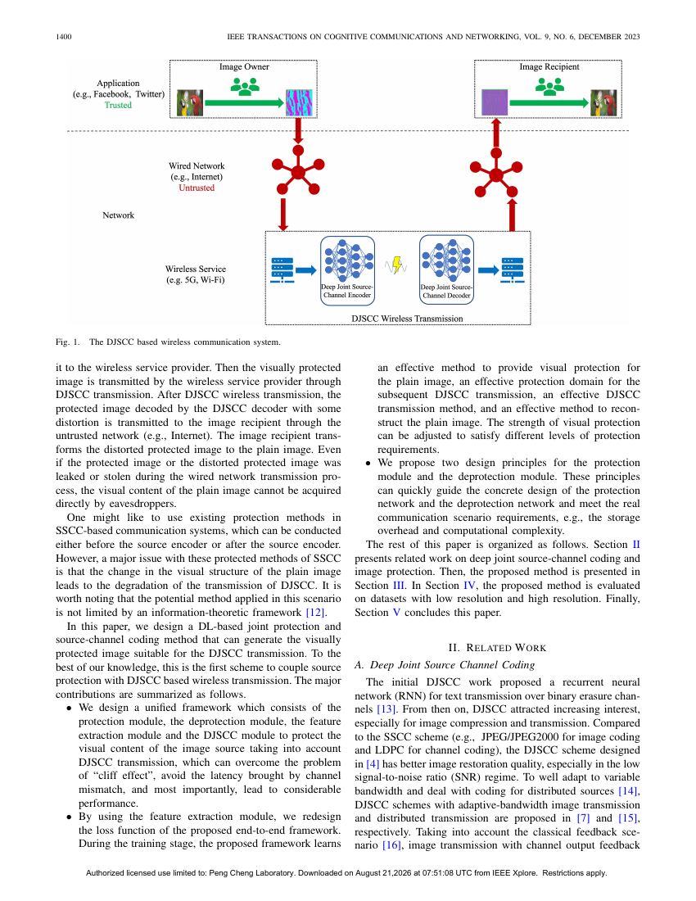</a><figcaption><b>架构/方法证据页</b>｜来源：《Deep Joint Source-Channel Coding for Image Transmission With Visual Protection》，PDF p.2；原图题/表题：The DJSCC based wireless communication system.。 <a href='https://doi.org/10.1109/tccn.2023.3306851'>核对论文</a></figcaption></figure><figure><a href='assets/2023_deep-joint-source-channel-coding-for-image-transmission-with-visual-protection_result_p7.png' target='_blank'></a><figcaption><b>关键结果证据页</b>｜来源：《Deep Joint Source-Channel Coding for Image Transmission With Visual Protection》，PDF p.7；原图题/表题：compares the reconstruction performance of the comparison. DJPSCC method with that of the aforementioned methods for。 <a href='https://doi.org/10.1109/tccn.2023.3306851'>核对论文</a></figcaption></figure></div>
</article>
<article class="paper" id="joint-source-channel-coding-for-a-multivariate-gaussian-over-a-gaussian-mac-using-variationa" data-year="2023" data-tier="core">
  <div class="paper-head"><div><div><span class="tag core">核心纳入</span><span class="tag year">2023</span></div><h2>Joint Source-Channel Coding for a Multivariate Gaussian Over a Gaussian MAC Using Variational Domain Adaptation</h2></div><a class="pdf" href="https://doi.org/10.1109/tccn.2023.3294754">DOI / IEEE 页面</a></div>
  <div class="facts"><div><b>作者</b>Yishen Li、Xuechen Chen、Xiaoheng Deng</div><div><b>出版信息</b>Vol. 9, No. 6, pp. 1424-1437</div><div><b>DOI / IEEE ID</b><a href="https://doi.org/10.1109/tccn.2023.3294754">10.1109/tccn.2023.3294754</a> / 10180059</div><div><b>任务</b>语义通信理论、度量或编码界</div><div><b>技术谱系</b>连续 learned latent / channel symbol（DeepJSCC）</div><div><b>年份口径</b>formal TCCN volume year</div></div>
  <div class="verdict"><b>是否属于严格数字语义通信：</b>否（连续语义 JSCC）</div>
  <h3>实验设置</h3><div class="grid3"><div><b>数据集/场景</b>正文未给出可稳定自动定位的条目</div><div><b>Baseline</b>DeepJSCC、HM、FEC、ViT、GAN、VAE、PPO、SAC、JSCC、SSCC、IB、BERT、CLIP</div><div><b>指标与信道条件</b>MSE、mAP、accuracy、MACs、VoI、MOS、WER、CER<br><span class="muted">SNR：-30 dB、0.3 dB、0.6 dB、0.9 dB、1 dB、1.2 dB、1.5 dB、10 dB、13.9 dB、15 dB、15.7 dB、20 dB、25 dB、30 dB、35 dB、40 dB、6.1 dB</span></div></div>
  <h3>Introduction 的六步讲述逻辑</h3><ol class='story'><li><b>已有进展：</b>23] proposed to combine • We have also analyzed the reason why VDA-JSCC gains a variational autoencoder (VAE) with a Gaussian mixture less than traditional methods in high CSNR range.</li><li><b>现有问题：</b>As a model (GMM); however, its performance remains inferior to solution, we propose a scheme using Mixture-of-Experts that of the optimization-based method.</li><li><b>为何重要：</b>As by our method, there is no need with reasonably good coding results is selected to aid learn- to presume a prior distribution which is hard to obtain, ing in the target domain.</li><li><b>提出方案：</b>As a model (GMM); however, its performance remains inferior to solution, we propose a scheme using Mixture-of-Experts that of the optimization-based method.</li><li><b>解决机制：</b>Moreover, this scheme (MoE) to greatly improve this phenomenon.</li><li><b>核心主张与证据目标：</b>The encoder aims to reduce data dimensionality, then propose a method based on MoE to further improve its while the decoder reconstructs data from learned representa- performance. tions.</li></ol>
  <h3>方法、变量与优化</h3><p><b>系统/信息流：</b>PDF p.1：os [3], [4], [5]. presents a deep joint source-channel coding (JSCC) design for Such schemes have much lower computational costs and a multivariate Gaussian source over a Gaussian MAC. The delays compared to SSCC. For example, in the point-to- widely used autoencoder based deep-JSCC cannot perform sta- point transmission scenario, it is well-known that the uncoded, bly under such conditions due to their easiness to fall into l PDF p.1：cenario, the (CSNRs). We have also analyzed the reason why the performance nodes need to send their local gradient estimates to the remote of VDA-JSCC deteriorates in high CSNR range and then replace PS and this uplink channel can be modeled as a MAC [7]. the encoder of VDA-JSCC with Mixture-of-Experts to improve its performance in high CSNR range. Finally, VDA-JSCC exhibits Back to as early as 1980, it was shown that the tran PDF p.1：related sources over a MAC does not coefficient varies. obey the separation theorem [8]. According to the proof by Index Terms—Deep joint source-channel coding, domain adap- Lapidoth and Tinguely [9], the linear transmission is optimal tation, variational autoencoder, multivariate Gaussian, multiple- in the low channel signal-to-noise ratio (CSNR) only. Then access channel. they proposed a source-channel vector-quantizer schem PDF p.1：A hybrid discrete-analog scheme based on a I. I NTRODUCTION scalar quantizer and a linear continuous mapping for a bivari- OINT source-channel coding (JSCC), which jointly ate Gaussian source was proposed in [10] [3], and then was J designs the source channel encoders so that the source information is directly transformed into channel symbols, has extended to a multivariate Gaussian source in [11]. Though the schemes are delay</p><p><b>目标函数/联合训练证据：</b>PDF p.1：it is well-known that the uncoded, bly under such conditions due to their easiness to fall into local i.e., linearly scaled transmission is optimal for a memory- optimum. Therefore we propose the variational domain adap- tation (VDA)-JSCC scheme. Firstly, the loss function with an less Gaussian source-channel pair with bandwidth match [6]; additional regularization term is introduced through variational this linear method cons PDF p.2：introduce a Gaussian MAC. Owing to the natural consistency between domain adaptation into deep JSCC schemes. Our method the VAE and JSCC in this case, the channel output symbol can also be extended to those multi-terminal communi- distribution is added to the loss function as an additional reg- cations scenarios where good coding architecture cannot ularization term. Through domain adaptation, a source domain always be learned PDF p.2：in some regions. To solve this problem, we use bound is presented. In Section III, the proposed VDA-JSCC is a VAE to construct the JSCC-system and introduce addi- presented, through analysis of VAE on a Gaussian MAC and tional distribution restrictions to the loss function through its combination with the domain</p>
  <h3>数字化方案与传输开销</h3><p><b>传输表示证据：</b>PDF p.1：ding, domain adap- Lapidoth and Tinguely [9], the linear transmission is optimal tation, variational autoencoder, multivariate Gaussian, multiple- in the low channel signal-to-noise ratio (CSNR) only. Then access channel. they proposed a source-channel vector-quantizer scheme for the higher-CSNR region which relies on long delays and high complexities. A hybrid discrete-analog scheme based on a I. I NTRODUCTION scalar quantize PDF p.1：nel signal-to-noise ratio (CSNR) only. Then access channel. they proposed a source-channel vector-quantizer scheme for the higher-CSNR region which relies on long delays and high complexities. A hybrid discrete-analog scheme based on a I. I NTRODUCTION scalar quantizer and a linear continuous mapping for a bivari- OINT source-channel coding (JSCC), which jointly ate Gaussian source was proposed in [10] [3], and then was J desi PDF p.1：antizer and a linear continuous mapping for a bivari- OINT source-channel coding (JSCC), which jointly ate Gaussian source was proposed in [10] [3], and then was J designs the source channel encoders so that the source information is directly transformed into channel symbols, has extended to a multivariate Gaussian source in [11]. Though the schemes are delay-free, they requires manual design and can attracted much attention i PDF p.4：d under a constraint P. Regardless of the channel noise, fe (·) is obtained. This bound is called the evidence lower bound can be regarded as a feature extractor that maps the data from (ELBO) and the entire model is trained by maximizing ELBO. space X to the latent representation in space Y, and fd (·) It is noteworthy that qθ∗ (t|v) is assumed to be a Gaussian can be viewed as an inverse mapping from Y to X . Many distributi</p><p><b>调制/信道编码线索：</b>未自动检出固定调制/信道编码名称</p><p><b>可复核开销与缺失信息：</b>输入/分辨率线索：正文未给出可稳定自动定位的条目。feature/token/latent 尺寸线索：正文未给出可稳定自动定位的条目。码本线索：正文未给出可稳定自动定位的条目。bit/bpp/速率线索：正文未给出可稳定自动定位的条目。CBR/压缩率线索：正文未给出可稳定自动定位的条目。连续 DeepJSCC 的主要预算是 channel uses/CBR；除非另加量化与调制，不能把每个 latent 当作固定 bit。</p><div class="formula">\[CBR=\frac{N_{complex\ channel\ symbols}}{N_{source\ samples}},\qquad R_{bit}\ \text{未定义（连续映射）}\]</div>
  <h3>信道处理机制</h3><div class="channel"><p><b>分类：</b>类别 3：连续 learned latent 直接通过有噪声信道</p><p><b>正文信道证据：</b>PDF p.1：n scenario, it is well-known that the uncoded, bly under such conditions due to their easiness to fall into local i.e., linearly scaled transmission is optimal for a memory- optimum. Therefore we propose the variational domain adap- tation (VDA)-JSCC scheme. Firstly, the loss function with an less Gaussian source-channel pair with bandwidth match [6]; additional regularization term is introduced through variational this linear PDF p.2：pt to the source distribution under a nonlinear transform has also been proposed [21]. In addition, for analog sources, the orig- The proposed method also has good robustness against inal single neural-encoder structure has been extended to a variation of the channel noise or source correlation, mixture-of-experts system [22], and has yielded idea results in exhibiting gradual degradation. We have also validated point-to-point PDF p.2：yielded idea results in exhibiting gradual degradation. We have also validated point-to-point bandwidth compression communication through the proposed scheme under Laplacian source distribu- cooperation of multiple neural-encoders. However, these meth- tion, Rayleigh channel and a larger number of users. ods focus on the point-to-point situation. For deep JSCC on VDA-JSCC presents impressive performance in all cases. a Gaussia PDF p.2：-JSCC by combining the VAE struc- replacing the single encoder of VDA-JSCC with multi- ture and the domain adaptation technique, to solve the JSCC encoder. problem of N distributed Gaussian source transmissions over • To the best of our knowledge, we are the first to introduce a Gaussian MAC. Owing to the natural consistency between domain adaptation into deep JSCC schemes. Our method the VAE and JSCC in this case, the channel</p><p><b>decoder 实际收到：</b>带噪连续 channel symbol / latent，经神经 decoder 恢复任务输出</p><p><b>是否联合优化：</b>是/部分：目标或训练证据与物理信道同时出现。</p><p><b>是否真正处理 bit/index/token/packet error：</b>不适用 VQ index/bit 跳变；论文处理的是连续扰动和信道失配。</p></div>
  <h3>主要结果、局限与 Codex 判断</h3><p><b>证据化结果：</b>PDF p.1：adaptation, which is a transfer learning The increasing importance of source-channel coding for dis- method. The proposed fine-tuning technique during the train- tributed sources over multiple access channels (MACs) has ing process yields further performance improvement. Experiment results show that VDA-JSCC can always learn reasonable coding been driven by the growth of the Internet of Things (IoT) and structures without arti PDF p.1：iple access channels (MACs) has ing process yields further performance improvement. Experiment results show that VDA-JSCC can always learn reasonable coding been driven by the growth of the Internet of Things (IoT) and structures without artificial design and outperforms other state- edge computing. The rise of the distributed learning has fur- of-the-art methods under different channel signal-to-noise ratios ther strengthened PDF p.1：reason why the performance nodes need to send their local gradient estimates to the remote of VDA-JSCC deteriorates in high CSNR range and then replace PS and this uplink channel can be modeled as a MAC [7]. the encoder of VDA-JSCC with Mixture-of-Experts to improve its performance in high CSNR range. Finally, VDA-JSCC exhibits Back to as early as 1980, it was shown that the transmis- considerable robustness when the channel q PDF p.1：the source information is directly transformed into channel symbols, has extended to a multivariate Gaussian source in [11]. Though the schemes are delay-free, they requires manual design and can attracted much attention in recent decades [1], [2]. JSCC over outperform linear transmission only in the case of high chan- analog channel shows graceful performance change if the nel quality. Kron et al. designed an iterative optimi</p><p><b>独立判断：</b>没有完整离散接口，无法直接回答 bit/index/token 跳变问题。 未显式注入离散误码/丢包，鲁棒性结论不应外推到真实数字链路。 未报告统一可复核的 payload bit 数/CBR，跨论文带宽比较受限。</p>
  <div class="figs"><figure><a href='assets/2023_joint-source-channel-coding-for-a-multivariate-gaussian-over-a-gaussian-mac-using-variationa_method_p5.png' target='_blank'></a><figcaption><b>架构/方法证据页</b>｜来源：《Joint Source-Channel Coding for a Multivariate Gaussian Over a Gaussian MAC Using Variational Domain Adaptation》，PDF p.5；原图题/表题：Overview of VDA-JSCC structure.。 <a href='https://doi.org/10.1109/tccn.2023.3294754'>核对论文</a></figcaption></figure><figure><a href='assets/2023_joint-source-channel-coding-for-a-multivariate-gaussian-over-a-gaussian-mac-using-variationa_result_p9.png' target='_blank'>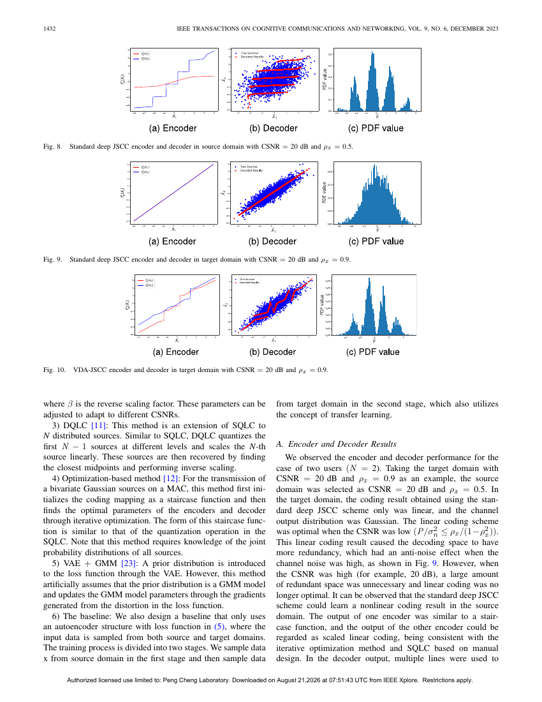</a><figcaption><b>关键结果证据页</b>｜来源：《Joint Source-Channel Coding for a Multivariate Gaussian Over a Gaussian MAC Using Variational Domain Adaptation》，PDF p.9；原图题/表题：Standard deep JSCC encoder and decoder in source domain with CSNR = 20 dB and ρx = 0.5.。 <a href='https://doi.org/10.1109/tccn.2023.3294754'>核对论文</a></figcaption></figure></div>
</article>
<article class="paper" id="neuromorphic-wireless-cognition-event-driven-semantic-communications-for-remote-inference" data-year="2023" data-tier="core">
  <div class="paper-head"><div><div><span class="tag core">核心纳入</span><span class="tag year">2023</span></div><h2>Neuromorphic Wireless Cognition: Event-Driven Semantic Communications for Remote Inference</h2></div><a class="pdf" href="https://doi.org/10.1109/tccn.2023.3236940">DOI / IEEE 页面</a></div>
  <div class="facts"><div><b>作者</b>Jiechen Chen、Nicolas Skatchkovsky、Osvaldo Simeone</div><div><b>出版信息</b>Vol. 9, No. 2, pp. 252-265</div><div><b>DOI / IEEE ID</b><a href="https://doi.org/10.1109/tccn.2023.3236940">10.1109/tccn.2023.3236940</a> / 10016643</div><div><b>任务</b>远端推理/机器任务</div><div><b>技术谱系</b>学习式语义 feature；数字接口需由正文具体实现判定</div><div><b>年份口径</b>formal TCCN volume year</div></div>
  <div class="verdict"><b>是否属于严格数字语义通信：</b>系统层相关；没有足够证据把它判为严格数字语义通信。</div>
  <h3>实验设置</h3><div class="grid3"><div><b>数据集/场景</b>MNIST</div><div><b>Baseline</b>LDPC、HM、FEC、ViT、GAN、VAE、VQ-VAE、PPO、SAC、IB</div><div><b>指标与信道条件</b>mAP、accuracy、recall、NME、latency、energy、VoI、MOS、WER<br><span class="muted">SNR：10 dB、120db</span></div></div>
  <h3>Introduction 的六步讲述逻辑</h3><ol class='story'><li><b>已有进展：</b>elopment of brain- Union’s Horizon 2020 research and innovation programme, grant agree- computer interfaces1 to the development of fast and accurate ment No.</li><li><b>现有问题：</b>Authorized licensed use limited to: Peng Cheng Laboratory.</li><li><b>为何重要：</b>In such applications, sensors architecture based on supervised learning via surrogate capture uninformative signals most of the time, while need- gradient descent methods. ing to promptly enable object recognition and detection at the • In order to enable adaptation to channel conditions, we receiving processor when relevant activity is present in the introduce a hypernetwork-based approach.</li><li><b>提出方案：</b>We target frame-by-frame basis. an always-on monitoring application in which the environment The main contributions of this paper are summarized as being observed by the sensors presents sparse activity, and follows. inference at the receiving edge device should be carried out • We introduce NeuroComm, a novel architecture for wire- in a timely manner. less cognition integrating neuromorphic sensing, process- An example of the scenarios under consideration is given ing, and communications. by distributed sensors deployed to monitor the presence of • We propose an end-to-end design of the NeuroComm drone activity, e.g., in an airport.</li><li><b>解决机制：</b>In such applications, sensors architecture based on supervised learning via surrogate capture uninformative signals most of the time, while need- gradient descent methods. ing to promptly enable object recognition and detection at the • In order to enable adaptation to channel conditions, we receiving processor when relevant activity is present in the introduce a hypernetwork-based approach.</li><li><b>核心主张与证据目标：</b>This approach has two • Extensive numerical results are provided that demon- major drawbacks: (i) Semantic-agnostic energy consumption: strate the advantages of the proposed architecture and Conventional digital sensing devices would generally sense design over conventional frame-based digital solutions, and transmit frames continuously, irrespective of the level of as well as over alternative non-adaptive training meth- “information” present in the sensed signal for the given appli- ods, in terms of time-to-accuracy and energy consumption cation; (ii) Latency quantization: Sensed information would metrics. be packaged into frames, enabling the receiver to enhance its inference accuracy only upon the reception and processing of entire frames.</li></ol>
  <h3>方法、变量与优化</h3><p><b>系统/信息流：</b>PDF p.1：using pilots. Pilots, encoding SNNs, decoding SNN, and hypernet- native, brain-inspired, paradigms for efficient data collection work are jointly trained across multiple channel realizations. The and semantic signal processing. The main features of the tech- proposed system is shown to significantly improve over conven- nology are energy efficiency, native event-driven processing tional frame-based digital solutions, as well a PDF p.2：te inference would rely on digital frame-based sensing, SNN. processing, and computing blocks. This approach has two • Extensive numerical results are provided that demon- major drawbacks: (i) Semantic-agnostic energy consumption: strate the advantages of the proposed architecture and Conventional digital sensing devices would generally sense design over conventional frame-based digital solutions, and transmit frames continuou PDF p.3：Comm, spikes are communicated by means of impulse radio (IR) and processed via SNNs. Fig. 3. A block diagram illustrating the main operations involved in the implementation of the proposed NeuroComm system (IR stands for impulse radio). link with neuromorphic encoder and decoder is the confer- decision-feedback equalizer based on an SNN as a solution ence publication [24] by a subset of the authors of this paper. for an energy PDF p.3：are communicated by means of impulse radio (IR) and processed via SNNs. Fig. 3. A block diagram illustrating the main operations involved in the implementation of the proposed NeuroComm system (IR stands for impulse radio). link with neuromorphic encoder and decoder is the confer- decision-feedback equalizer based on an SNN as a solution ence publication [24] by a subset of the authors of this paper. for an energy-efficient re</p><p><b>目标函数/联合训练证据：</b>PDF p.1：[6]). a hypernetwork to control the weights of the decoding SNN Neuromorphic sensing and computing are emerging as alter- using pilots. Pilots, encoding SNNs, decoding SNN, and hypernet- native, brain-inspired, paradigms for efficient data collection work are jointly trained across multiple channel realizations. The and semantic signal processing. The main features of the tech- proposed system is shown to significantly improve</p>
  <h3>数字化方案与传输开销</h3><p><b>传输表示证据：</b>PDF p.2：nd transmit frames continuously, irrespective of the level of as well as over alternative non-adaptive training meth- “information” present in the sensed signal for the given appli- ods, in terms of time-to-accuracy and energy consumption cation; (ii) Latency quantization: Sensed information would metrics. be packaged into frames, enabling the receiver to enhance its inference accuracy only upon the reception and processing of PDF p.11：EE TRANSACTIONS ON COGNITIVE COMMUNICATIONS AND NETWORKING, VOL. 9, NO. 2, APRIL 2023 Lenc = 20 time samples from the sensor to create a subframe. The subframe is encoded by source and chan- nel encoding separately. Source encoding is performed using a Vector-Quantization Variational Autoencoder (VQ-VAE) [42], followed by LDPC channel encod- ing with code rate set to 2/3. The encoded data is transmitted subframe by subframe us</p><p><b>调制/信道编码线索：</b>bpsk、ldpc、ofdm</p><p><b>可复核开销与缺失信息：</b>输入/分辨率线索：26 × 26、128 x 128。feature/token/latent 尺寸线索：正文未给出可稳定自动定位的条目。码本线索：正文未给出可稳定自动定位的条目。bit/bpp/速率线索：正文未给出可稳定自动定位的条目。CBR/压缩率线索：code rate set to 2/3。该论文偏系统/理论层，正文未必给出可复核的 encoder feature map 与 payload 长度。</p><div class="formula">\[N_{tx}=N_{payload}+N_{side}+N_{protection};\quad \text{缺失项必须标记为未知}\]</div>
  <h3>信道处理机制</h3><div class="channel"><p><b>分类：</b>类别 5：信道/资源进入系统优化，但 payload 数字化接口不完整</p><p><b>正文信道证据：</b>PDF p.1：ployed at the communicating multiple antennas. Transmission takes place over a shared fading nodes. This approach fails to acknowledge the critical impor- channel to a receiver equipped with a multi-antenna impulse tance of the computing architecture in the effective and radio receiver and with an SNN. In order to enable adaptation of the receiver to the fading channel conditions, we introduce efficient implementation of seman PDF p.2：IC WIRELESS COGNITION: EVENT-DRIVEN SEMANTIC COMMUNICATIONS 253 deployment in Fig. 2-(a) with neuromorphic sensing, comput- ing, and transmission blocks. The main goals of these system- level innovations are as follows: (i) Semantic-aware energy consumption: First, we wish to ensure an energy consump- tion level throughout the sensing-processing-communication chain that adapts to the dynamics of the environment being monitored PDF p.2：1, coding solution illustrated in Fig. 4 that is implemented by NeuroComm consists of a wireless Internet-of-Things (IoT) digital frame-based systems. In the conventional system, data network in which multiple wireless sensing devices commu- from sensors are first compressed and then encoded on a nicate over a shared wireless link to an edge device. We target frame-by-frame basis. an always-on monitoring application in which t PDF p.4：transmission are processed and transmitted over a fading multiple access model. channel to a receiver. The receiver’s goal is to carry out an inference task, such as classification, based on the received A. Setting signals. In the next two sections, we will first consider for reference a conventional digital communication and process- As illustrated in Fig. 1, we consider a remote inference ing chain depicted in Fig. 4, and we</p><p><b>decoder 实际收到：</b>由论文系统模型定义的语义 feature、任务状态或传统译码后数据</p><p><b>是否联合优化：</b>是/部分：目标或训练证据与物理信道同时出现。</p><p><b>是否真正处理 bit/index/token/packet error：</b>未形成可复核的 bit/index/token 错误闭环。</p></div>
  <h3>主要结果、局限与 Codex 判断</h3><p><b>证据化结果：</b>PDF p.1：ding SNN, and hypernet- native, brain-inspired, paradigms for efficient data collection work are jointly trained across multiple channel realizations. The and semantic signal processing. The main features of the tech- proposed system is shown to significantly improve over conven- nology are energy efficiency, native event-driven processing tional frame-based digital solutions, as well as over alternative non-adaptive training PDF p.2：y consumption: First, we wish to ensure an energy consump- tion level throughout the sensing-processing-communication chain that adapts to the dynamics of the environment being monitored; (ii) Enhanced time-to-efficiency: Second, we aim at enabling a graceful improvement in the inference performance over time as more information on the environment is sensed and communicated. These goals are met by leveraging the event-driven n PDF p.6：ame processing and communications, on the one hand, where vj and v̂j ,f are the jth entry of vector v and v̂ f , respec- and the effectiveness of block encoding, on the other hand, tively. We wish to select the model parameter vector φ based which is known to improve as the blocklength increases [36]. k on the training example (u, v) by addressing the empirical risk Each discrete-time symbol in the sequence si,m is modu- minim PDF p.11：ameter θ to convergence. This is done by tackling problem (18) via SGD by drawing a large number of channel and noise Fig. 10. Test accuracy versus Lb for NeuroComm (K = 1, μ = 1, samples. SNR = 10 dB). C. Results: Single Device in test accuracy. However, the gain is limited by the lack of We first consider a baseline scenario in which there is only adaptation to changing conditions. one device observing he entire image u, i.e</p><p><b>独立判断：</b>没有完整离散接口，无法直接回答 bit/index/token 跳变问题。 未显式注入离散误码/丢包，鲁棒性结论不应外推到真实数字链路。</p>
  <div class="figs"><figure><a href='assets/2023_neuromorphic-wireless-cognition-event-driven-semantic-communications-for-remote-inference_method_p3.png' target='_blank'></a><figcaption><b>架构/方法证据页</b>｜来源：《Neuromorphic Wireless Cognition: Event-Driven Semantic Communications for Remote Inference》，PDF p.3；原图题/表题：A block diagram illustrating the main operations involved in the implementation of the proposed NeuroComm system (IR stands for impulse radio).。 <a href='https://doi.org/10.1109/tccn.2023.3236940'>核对论文</a></figcaption></figure><figure><a href='assets/2023_neuromorphic-wireless-cognition-event-driven-semantic-communications-for-remote-inference_result_p11.png' target='_blank'></a><figcaption><b>关键结果证据页</b>｜来源：《Neuromorphic Wireless Cognition: Event-Driven Semantic Communications for Remote Inference》，PDF p.11；原图题/表题：Test accuracy versus Lb for NeuroComm (K = 1, μ = 1, samples. SNR = 10 dB).。 <a href='https://doi.org/10.1109/tccn.2023.3236940'>核对论文</a></figcaption></figure></div>
</article>
<article class="paper" id="non-orthogonal-multiple-access-enhanced-multi-user-semantic-communication" data-year="2023" data-tier="core">
  <div class="paper-head"><div><div><span class="tag core">核心纳入</span><span class="tag year">2023</span></div><h2>Non-Orthogonal Multiple Access Enhanced Multi-User Semantic Communication</h2></div><a class="pdf" href="https://doi.org/10.1109/tccn.2023.3306852">DOI / IEEE 页面</a></div>
  <div class="facts"><div><b>作者</b>Weizhi Li、Haotai Liang、Chen Dong、Xiaodong Xu、Ping Zhang、Kaijun Liu</div><div><b>出版信息</b>Vol. 9, No. 6, pp. 1438-1453</div><div><b>DOI / IEEE ID</b><a href="https://doi.org/10.1109/tccn.2023.3306852">10.1109/tccn.2023.3306852</a> / 10225385</div><div><b>任务</b>语义网络与资源分配</div><div><b>技术谱系</b>量化 feature、bitstream 或数字调制符号</div><div><b>年份口径</b>formal TCCN volume year</div></div>
  <div class="verdict"><b>是否属于严格数字语义通信：</b>是或部分是：正文存在离散/量化接口；仍需检查它是否真的承受 bit/index error。</div>
  <h3>实验设置</h3><div class="grid3"><div><b>数据集/场景</b>CIFAR10、MNIST、Europarl</div><div><b>Baseline</b>DeepJSCC、JPEG、LDPC、Turbo、QAM、HM、FEC、ViT、GAN、VAE、VQ-VAE、PPO、SAC、DeepSC、ASC、NOMASC、JSCC、IB、Huffman、BERT</div><div><b>指标与信道条件</b>PSNR、SSIM、MSE、mAP、accuracy、precision、NME、QoE、latency、MACs、BLEU、VoI、MOS、WER、CER<br><span class="muted">SNR：16 dB、20 dB、4 dB</span></div></div>
  <h3>Introduction 的六步讲述逻辑</h3><ol class='story'><li><b>已有进展：</b>e and spectral effi- semantic signal, which has been ignored by the majority of ciency were discussed, and the resource allocation problem in previous works.</li><li><b>现有问题：</b>However, 4) Extensive experiments have been conducted to ver- some limitations in the existing NOMA-based semantic com- ify the performance of the proposed system.</li><li><b>为何重要：</b>The processes of demodulation and MUD are the semantic-aware network was studied in [22], [23], [24]. integrated naturally using a single lightweight neural network, As a promising multiple-user access scheme, NOMA [25] eliminating the needs for tedious operations.</li><li><b>提出方案：</b>To avoid high demand for the hardware, under the rapidly developing coding and modulation schemes. an asymmetric quantizer is employed at the end of the semantic To address the technical difficulty and theoretical bottleneck, encoder for discretizing the continuous full-resolution semantic semantic communication has been proposed and developed by feature.</li><li><b>解决机制：</b>In addition, a neural network model is used for mapping researchers in recent years [1]. the discrete feature into self-learned symbols and accomplish- With the help of rapidly developing deep learning, the ing intelligent multi-user detection (MUD) at the receiver side.</li><li><b>核心主张与证据目标：</b>These algorithms take the channel gains of dif- the theoretical analysis of rate region and power region. ferent users as inputs and use the weighted sum of semantic Simulations settings, numerical results, and complexity anal- rates or user fairness as optimization criteria to calculate the ysis are presented in Section IV.</li></ol>
  <h3>方法、变量与优化</h3><p><b>系统/信息流：</b>PDF p.1：ssion, a novel non-orthogonal multiple access (NOMA)-based cation (VLC), symbiotic sensing and communications (SSaC), multi-user semantic communication system named NOMASC is etc. have emerged. Nevertheless, the traditional Shannon proposed in this study. The proposed system can support seman- theory-based communication paradigm is approaching its limit tic transmission of multiple users with diverse modalities of source infor PDF p.1：modalities of source information. To avoid high demand for the hardware, under the rapidly developing coding and modulation schemes. an asymmetric quantizer is employed at the end of the semantic To address the technical difficulty and theoretical bottleneck, encoder for discretizing the continuous full-resolution semantic semantic communication has been proposed and developed by feature. In addition, a neural network model is PDF p.1：ing researchers in recent years [1]. the discrete feature into self-learned symbols and accomplish- With the help of rapidly developing deep learning, the ing intelligent multi-user detection (MUD) at the receiver side. Simulation results demonstrate that the proposed system attains semantic communication paradigm can exploit the data at the sound performance in non-orthogonal transmission of multiple semantic level [2]. One c PDF p.1：semantic level [2]. One critical technique in semantic com- user signals and outperforms the other methods, particularly munication is joint source-channel coding (JSCC) [3], which with low-to-medium signal-to-noise ratios (SNRs). Moreover, it employs the autoencoder model as an end-to-end semantic has shown high robustness under various simulation settings and codec. Unlike the Shannon paradigm, which treats each bit mismatch</p><p><b>目标函数/联合训练证据：</b>PDF p.5：e set C deq as well as with the asymmetric quantization scheme. composite symbols under all pairing cases. After convergence, Please refer to the Appendix for detail proofs. the trained models can be directly used for the second stage of training. E. Metrics, Loss Function, and Training Procedure The second stage of training is illustrated in Algorithm 2, 1) Metrics: For semantic communication, the performance where the image PDF p.5：ile the sentence similarity take account of both rate region and power region of the NOMASC are charac- the context information of each word and the meaning of terized by using the defined semantic transmission rate and sentences. exhaustive search method. 2) Loss Function: The system can still be jointly optimized using a combined loss function even though each block’s A. Semantic Transmission Rate design is disjoint. As disc PDF p.5：ion of the NOMASC are charac- the context information of each word and the meaning of terized by using the defined semantic transmission rate and sentences. exhaustive search method. 2) Loss Function: The system can still be jointly optimized using a combined loss function even though each block’s A. Semantic Tran</p>
  <h3>数字化方案与传输开销</h3><p><b>传输表示证据：</b>PDF p.1：an- theory-based communication paradigm is approaching its limit tic transmission of multiple users with diverse modalities of source information. To avoid high demand for the hardware, under the rapidly developing coding and modulation schemes. an asymmetric quantizer is employed at the end of the semantic To address the technical difficulty and theoretical bottleneck, encoder for discretizing the continuous full-resolution s PDF p.2：ature vector into the nearest symbol by generating the likelihood probability at the output of the semantic encoder. In addition, Xie and Qin have also developed a lightweight distributed semantic communication system [17], which used model pruning and weight quantization tricks to reduce the model redundancy and made it affordable for IoT devices. The devices’ connection density may also face a burst with more intelligent dev PDF p.2：precise channel state information (CSI). Alberge [31] has the OMA scenario to verify the advantage of the proposed designed an end-to-end autoencoder model for the NOMA scheme. transmission, which can realize the self-design of constellation 3) An asymmetric quantizer is adopted for mapping the points and does not require iterative decoding. full-resolution semantic feature vector to discrete con- There are already several wor PDF p.3：1440 IEEE TRANSACTIONS ON COGNITIVE COMMUNICATIONS AND NETWORKING, VOL. 9, NO. 6, DECEMBER 2023 Fig. 2. The framework of the NOMASC. The semantic encoder and decoder are used for compressing and reconstructing the semantic information, the quantizer is used for mapping the continuous feature vector into limited constellations, and the modulator and demodulator can map the quantized vector into two-dimensional symbols and carry</p><p><b>调制/信道编码线索：</b>huffman、ldpc、turbo</p><p><b>可复核开销与缺失信息：</b>输入/分辨率线索：28 × 28、32 × 32。feature/token/latent 尺寸线索：正文未给出可稳定自动定位的条目。码本线索：constellation 3、constellation set is 1、Constellation design for deep [36。bit/bpp/速率线索：m-bit。CBR/压缩率线索：compression ratio (Cr)、code rate、code rate for Turbo code。数字 token/bitstream 需把 payload、header、FEC 与重传一并计入；论文只报 CBR/SNR 时不能反推唯一净 bit 数。</p><div class="formula">\[N_{tx}=N_{unit}b_{unit}+N_{header}+N_{FEC},\qquad CBR=\frac{N_{channel\ uses}}{N_{source\ samples}}\]</div>
  <h3>信道处理机制</h3><div class="channel"><p><b>分类：</b>类别 2–4 边界：数字接口进入无线链路，但是否端到端处理离散错误需看实现</p><p><b>正文信道证据：</b>PDF p.1：t existing works have candidate technologies including reconfigurable intelligent sur- focused on the design of end-to-end single-user semantic trans- face (RIS), terahertz communication, visible light communi- mission, a novel non-orthogonal multiple access (NOMA)-based cation (VLC), symbiotic sensing and communications (SSaC), multi-user semantic communication system named NOMASC is etc. have emerged. Nevertheless, the tradi PDF p.1：-end single-user semantic trans- face (RIS), terahertz communication, visible light communi- mission, a novel non-orthogonal multiple access (NOMA)-based cation (VLC), symbiotic sensing and communications (SSaC), multi-user semantic communication system named NOMASC is etc. have emerged. Nevertheless, the traditional Shannon proposed in this study. The proposed system can support seman- theory-based communication paradigm is a PDF p.1：d semantic has shown high robustness under various simulation settings and codec. Unlike the Shannon paradigm, which treats each bit mismatched testing scenarios. of information equally, semantic communication can learn the Index Terms—Semantic communication, NOMA, S-Rate, meaning and importance of the input message and saves redun- NOMASC. dant information by performing the source coding and channel coding coherently. Along w PDF p.1：codec. Unlike the Shannon paradigm, which treats each bit mismatched testing scenarios. of information equally, semantic communication can learn the Index Terms—Semantic communication, NOMA, S-Rate, meaning and importance of the input message and saves redun- NOMASC. dant information by performing the source coding and channel coding coherently. Along with the progress in deep learning from the fields of computer vision (CV) a</p><p><b>decoder 实际收到：</b>数字解调/译码后的 bit、index 或量化 feature；软信息接口若未明示则不能假定</p><p><b>是否联合优化：</b>是/部分：目标或训练证据与物理信道同时出现。</p><p><b>是否真正处理 bit/index/token/packet error：</b>部分：存在数字接口与信道模型，但若正文只报告 SNR/重建质量而未注入 bit/index error，就不能宣称解决跳变问题。</p></div>
  <h3>主要结果、局限与 Codex 判断</h3><p><b>证据化结果：</b>PDF p.1：mulation results demonstrate that the proposed system attains semantic communication paradigm can exploit the data at the sound performance in non-orthogonal transmission of multiple semantic level [2]. One critical technique in semantic com- user signals and outperforms the other methods, particularly munication is joint source-channel coding (JSCC) [3], which with low-to-medium signal-to-noise ratios (SNRs). Moreover, it emp PDF p.2：earest symbol by generating the likelihood probability at the output of the semantic encoder. In addition, Xie and Qin have also developed a lightweight distributed semantic communication system [17], which used model pruning and weight quantization tricks to reduce the model redundancy and made it affordable for IoT devices. The devices’ connection density may also face a burst with more intelligent devices and users, necessi PDF p.2：r access scheme, NOMA [25] eliminating the needs for tedious operations. Not only did we is capable of improving the spectrum efficiency of the system consider the practical end-to-end transmission scheme, but also and has been proven to be capacity-achieving compared with the theoretical perspective of the proposed system to give a the orthogonal multiple access (OMA) schemes. Researchers thorough demonstration. The diagram o PDF p.2：theoretical rate region and power region of the a soft decision based neural network model [30] for MUD, proposed NOMASC scheme are characterized using the which has attained excellent performance even in the absence concept of semantic transmission rate and compared with of precise channel state information (CSI). Alberge [31] has the OMA scenario to verify the advantage of the proposed designed an end-to-end autoencoder mode</p><p><b>独立判断：</b>未显式注入离散误码/丢包，鲁棒性结论不应外推到真实数字链路。</p>
  <div class="figs"><figure><a href='assets/2023_non-orthogonal-multiple-access-enhanced-multi-user-semantic-communication_method_p12.png' target='_blank'></a><figcaption><b>架构/方法证据页</b>｜来源：《Non-Orthogonal Multiple Access Enhanced Multi-User Semantic Communication》，PDF p.12；原图题/表题：Robustness of the model to a variety of conditions.。 <a href='https://doi.org/10.1109/tccn.2023.3306852'>核对论文</a></figcaption></figure><figure><a href='assets/2023_non-orthogonal-multiple-access-enhanced-multi-user-semantic-communication_result_p10.png' target='_blank'></a><figcaption><b>关键结果证据页</b>｜来源：《Non-Orthogonal Multiple Access Enhanced Multi-User Semantic Communication》，PDF p.10；原图题/表题：Transmission performance under the Rayleigh fading channel, the simulation setting is the same as the AWGN case except for the channel type.。 <a href='https://doi.org/10.1109/tccn.2023.3306852'>核对论文</a></figcaption></figure></div>
</article>
<article class="paper" id="semantics-native-communication-via-contextual-reasoning" data-year="2023" data-tier="core">
  <div class="paper-head"><div><div><span class="tag core">核心纳入</span><span class="tag year">2023</span></div><h2>Semantics-Native Communication via Contextual Reasoning</h2></div><a class="pdf" href="https://doi.org/10.1109/tccn.2023.3250206">DOI / IEEE 页面</a></div>
  <div class="facts"><div><b>作者</b>Hyowoon Seo、Jihong Park、Mehdi Bennis、Mérouane Debbah</div><div><b>出版信息</b>Vol. 9, No. 3, pp. 604-617</div><div><b>DOI / IEEE ID</b><a href="https://doi.org/10.1109/tccn.2023.3250206">10.1109/tccn.2023.3250206</a> / 10054510</div><div><b>任务</b>文本/语言语义传输</div><div><b>技术谱系</b>量化 feature、bitstream 或数字调制符号</div><div><b>年份口径</b>TCCN Early Access / formal volume pending</div></div>
  <div class="verdict"><b>是否属于严格数字语义通信：</b>是或部分是：正文存在离散/量化接口；仍需检查它是否真的承受 bit/index error。</div>
  <h3>实验设置</h3><div class="grid3"><div><b>数据集/场景</b>正文未给出可稳定自动定位的条目</div><div><b>Baseline</b>HM、FEC、ARQ、ViT、GAN、PPO、SAC、IB</div><div><b>指标与信道条件</b>FID、MSE、mAP、accuracy、recall、NME、latency、AoI、AoII、VoI、MOS、WER、CER<br><span class="muted">SNR：正文未给出可稳定自动定位的条目</span></div></div>
  <h3>Introduction 的六步讲述逻辑</h3><ol class='story'><li><b>已有进展：</b>One prominent direction is the differentiable different tasks and other communication contexts.</li><li><b>现有问题：</b>Such type of contextual atively flexible and applicable to a broader range of scenarios, semantic errors cannot be corrected by simply adding more but analysis on their ML-based internal operations including bits as opposed to Shannon coding and System 1 semantic algorithmic convergence is lacking, calling for a principled coding; for instance, via forward error correction for chan- approach.</li><li><b>为何重要：</b>Hence, any bit errors due In a nutshell, the applications of existing semantics- to Shannon coding may result in semantic errors, emphasiz- empowered communication frameworks are often restricted ing the important role of Shannon coding.</li><li><b>提出方案：</b>Contributions and Organization describes the intrinsic properties of an action in the seman- The major contributions of this work are summarized as tic domain, and a symbol as a concept’s representation in a follows. communicable form.3 Let A be the finite set of actions that a • We propose a novel stochastic model of point-to-point listener can take, and assume that A is commonly known by SC, named System 1 SNC, and derive a closed-form both the speaker and listener.</li><li><b>解决机制：</b>Consider that each action con- expression of the expected bit-length of the SR (see notes one or multiple concepts in a finite set C of the entire Theorem 1). world concepts, which is known to all agents.</li><li><b>核心主张与证据目标：</b>1 An illustrative example of such a communication task is an image refer- • Finally, leveraging the proposed stochastic model, we ential game, in which a speaker talk about one among the given set of images show that the reliability of System 2 SNC increases with and the listener guesses what the image is.</li></ol>
  <h3>方法、变量与优化</h3><p><b>系统/信息流：</b>PDF p.1：ocess is just a mirror image ing, at which it minimizes the bit length while guaranteeing a of its speaker’s encoding process. This is valid in tra- target reliability. Simulation results corroborate that contextual ditional communication systems where common encoder- reasoning based SNC can significantly reduce bit lengths, and decoder architectures are pre-programmed and shared across be a robust solution to imperfect agent PDF p.1：while guaranteeing a of its speaker’s encoding process. This is valid in tra- target reliability. Simulation results corroborate that contextual ditional communication systems where common encoder- reasoning based SNC can significantly reduce bit lengths, and decoder architectures are pre-programmed and shared across be a robust solution to imperfect agent states by quantizing the all communicating agents. In stark contrast, t PDF p.1：ms where common encoder- reasoning based SNC can significantly reduce bit lengths, and decoder architectures are pre-programmed and shared across be a robust solution to imperfect agent states by quantizing the all communicating agents. In stark contrast, the encoders and entity-concept-symbol mapping before contextual reasoning. decoders in ML based SC frameworks are expected to be sep- Index Terms—Semantic communication, sem PDF p.1：t lengths, and decoder architectures are pre-programmed and shared across be a robust solution to imperfect agent states by quantizing the all communicating agents. In stark contrast, the encoders and entity-concept-symbol mapping before contextual reasoning. decoders in ML based SC frameworks are expected to be sep- Index Terms—Semantic communication, semantic coding, con- arately trained using their local data samples. This</p><p><b>目标函数/联合训练证据：</b>PDF p.3：ly, • Next, we propose System 2 SNC by infusing contextual System 1 SNC can be summarized by a multi-triangular model reasoning into System 1 SNC, while formulating the con- with a shared intended action as illustrated in Fig. 2. Here, textual reasoning as an optimization problem with respect semantic encoding encompasses conceptualization and sym- to agents’ local contexts. We develop a locally iterative bolization, i.e., act PDF p.4：te parameter is omit- ted for brevity in the above theorem under the premise that 4 In real ML applications, the stochastic model about the action-concept rel- evance can be seen as a stochastic soft-decision such as the normalized logits of the cross entropy loss function in classification or the Kullback–Leibler 5 We posit that source and channel codings are separately designed without divergence in knowledge distillation [3 PDF p.6：ker, mutual context of the speaker and listener and suppose that the as an example, can reason that ‘if I were the rational listener, speaker and listener independently and individually minimize I would have chosen a3 upon listening to sring ; therefore, I an objective function defined by     should communica</p>
  <h3>数字化方案与传输开销</h3><p><b>传输表示证据：</b>PDF p.1：results corroborate that contextual ditional communication systems where common encoder- reasoning based SNC can significantly reduce bit lengths, and decoder architectures are pre-programmed and shared across be a robust solution to imperfect agent states by quantizing the all communicating agents. In stark contrast, the encoders and entity-concept-symbol mapping before contextual reasoning. decoders in ML based SC frameworks PDF p.11：d C2A is perturbed communication context. directly used for initializing self-SNC at each agent, the reli- ability reduces significantly as  increases as shown from the the proposed theoretical framework can be carried towards blue curve (A2C and C2A without Quantization) in Fig. 8. more practical scenarios. One way to ensure robustness against such perturbation is to quantize A2C and C2A before initializing the self-SNC at b PDF p.11：ty reduces significantly as  increases as shown from the the proposed theoretical framework can be carried towards blue curve (A2C and C2A without Quantization) in Fig. 8. more practical scenarios. One way to ensure robustness against such perturbation is to quantize A2C and C2A before initializing the self-SNC at both speaker and listener. Here, we used a simple quan- A PPENDIX A tization method, i.e., rounding off the secon PDF p.11：r. Here, we used a simple quan- A PPENDIX A tization method, i.e., rounding off the second decimal place P ROOF OF T HEOREM 1 AND C OROLLARY 3 of A2C and C2A entries. The yellow curve (A2C and C2A A relative frequency distribution of extracting concept c with Quantization) in Fig. 8 shows the reliability of System 2 from the entities can be computed by SNC against perturbation when initializing the self-SNC with pXc (TRUE; t)</p><p><b>调制/信道编码线索：</b>arq</p><p><b>可复核开销与缺失信息：</b>输入/分辨率线索：正文未给出可稳定自动定位的条目。feature/token/latent 尺寸线索：正文未给出可稳定自动定位的条目。码本线索：正文未给出可稳定自动定位的条目。bit/bpp/速率线索：300 bits。CBR/压缩率线索：正文未给出可稳定自动定位的条目。数字 token/bitstream 需把 payload、header、FEC 与重传一并计入；论文只报 CBR/SNR 时不能反推唯一净 bit 数。</p><div class="formula">\[N_{tx}=N_{unit}b_{unit}+N_{header}+N_{FEC},\qquad CBR=\frac{N_{channel\ uses}}{N_{source\ samples}}\]</div>
  <h3>信道处理机制</h3><div class="channel"><p><b>分类：</b>类别 2–4 边界：数字接口进入无线链路，但是否端到端处理离散错误需看实现</p><p><b>正文信道证据：</b>PDF p.1：2023 Semantics-Native Communication via Contextual Reasoning Hyowoon Seo , Member, IEEE, Jihong Park , Senior Member, IEEE, Mehdi Bennis , Fellow, IEEE, and Mérouane Debbah, Fellow, IEEE Abstract—Recently, machine learning (ML) has shown its maximizing the effectiveness of communications by convey- effectiveness in improving communication efficiency by reinstat- ing the semantics (or meanings) of data [1]. Shannon himself ing PDF p.1：ntextual Reasoning Hyowoon Seo , Member, IEEE, Jihong Park , Senior Member, IEEE, Mehdi Bennis , Fellow, IEEE, and Mérouane Debbah, Fellow, IEEE Abstract—Recently, machine learning (ML) has shown its maximizing the effectiveness of communications by convey- effectiveness in improving communication efficiency by reinstat- ing the semantics (or meanings) of data [1]. Shannon himself ing the semantics of bits. To understand its u PDF p.1：nnon himself ing the semantics of bits. To understand its underlying principles, has identified these two issues together as the semantic- we propose a novel stochastic model of semantic communica- tion, dubbed semantics-native communication (SNC). Inspired effectiveness problem, departing from the traditional technical from human communication, we consider a point-to-point SNC problem of accurately transferring and reconstruc PDF p.1：to an the current communication systems. Recently, there have been entity, extracts its semantic concepts, and maps these concepts several studies on communication for addressing this semantic- into symbols that are communicated to a target listener through effectiveness problem [2], [3], [4], [5], [6], referred to as the traditional Shannon communication channel. Next, we recall rational humans who can communicate more effici</p><p><b>decoder 实际收到：</b>数字解调/译码后的 bit、index 或量化 feature；软信息接口若未明示则不能假定</p><p><b>是否联合优化：</b>是/部分：目标或训练证据与物理信道同时出现。</p><p><b>是否真正处理 bit/index/token/packet error：</b>部分：存在数字接口与信道模型，但若正文只报告 SNR/重建质量而未注入 bit/index error，就不能宣称解决跳变问题。</p></div>
  <h3>主要结果、局限与 Codex 判断</h3><p><b>证据化结果：</b>PDF p.1：inimizes the bit length while guaranteeing a of its speaker’s encoding process. This is valid in tra- target reliability. Simulation results corroborate that contextual ditional communication systems where common encoder- reasoning based SNC can significantly reduce bit lengths, and decoder architectures are pre-programmed and shared across be a robust solution to imperfect agent states by quantizing the all communicating agen PDF p.1：tems become more intelligent, and the data transmission accuracy is expect not to solely determine neous contexts through iterative communications [7], [8], [9]. Notwithstanding, ML processes are in a black box, not allow- ing us to intuitively understand and improve SC operations. the communication quality in the upcoming sixth-generation To fill this void, the overarching goal of this article is to (6G) communication systems PDF p.2：to exploit the knowledge as side information or to lever- referred to as System 1 semantic coding), falls. In contrast, age dependencies in target data. In doing so, communication System 2 ML is about slow and logical metacognition, which payload sizes can be reduced [21], which was demonstrated enables reasoning, planning and handling exceptions. Inspired in speech-based communication, video streaming, and holo- by this, Syst PDF p.2：a continuous compared to System 1 SNC that conveys all the semantics communication channel [7], [24], [25], [26], where different associated with the action of interest, System 2 SNC signif- agents’ ML models are concatenated into a single model that icantly reduces the communication cost by sending only the is trained using the backpropagation algorithm. Another direc- most effective semantics to its communication counterpart</p><p><b>独立判断：</b>未显式注入离散误码/丢包，鲁棒性结论不应外推到真实数字链路。</p>
  <div class="figs"><figure><a href='assets/2023_semantics-native-communication-via-contextual-reasoning_method_p10.png' target='_blank'></a><figcaption><b>架构/方法证据页</b>｜来源：《Semantics-Native Communication via Contextual Reasoning》，PDF p.10；原图题/表题：Reliability γ with respect to parameters α and β ranging 0.9 to 2 in System 2 SNC, for different self-SNC iteration depth r = 10, 20 and 100.。 <a href='https://doi.org/10.1109/tccn.2023.3250206'>核对论文</a></figcaption></figure><figure><a href='assets/2023_semantics-native-communication-via-contextual-reasoning_result_p11.png' target='_blank'></a><figcaption><b>关键结果证据页</b>｜来源：《Semantics-Native Communication via Contextual Reasoning》，PDF p.11；原图题/表题：SR length achieving reliability γ = 1 in System 1 and System 2 SNC, under noiseless and noisy (pe = 0.1, 0.2 binary erasure) channels, for different self-SNC iteration steps r = 10, 20 and 100.。 <a href='https://doi.org/10.1109/tccn.2023.3250206'>核对论文</a></figcaption></figure></div>
</article>
<article class="paper" id="adaptable-semantic-compression-and-resource-allocation-for-task-oriented-communications" data-year="2024" data-tier="core">
  <div class="paper-head"><div><div><span class="tag core">核心纳入</span><span class="tag year">2024</span></div><h2>Adaptable Semantic Compression and Resource Allocation for Task-Oriented Communications</h2></div><a class="pdf" href="https://doi.org/10.1109/tccn.2023.3346481">DOI / IEEE 页面</a></div>
  <div class="facts"><div><b>作者</b>Chuanhong Liu、Caili Guo、Yang Yang、Nan Jiang</div><div><b>出版信息</b>Vol. 10, No. 3, pp. 769-782</div><div><b>DOI / IEEE ID</b><a href="https://doi.org/10.1109/tccn.2023.3346481">10.1109/tccn.2023.3346481</a> / 10375768</div><div><b>任务</b>语义网络与资源分配</div><div><b>技术谱系</b>系统/理论层变量；论文未定义统一 payload bitstream</div><div><b>年份口径</b>formal TCCN volume year</div></div>
  <div class="verdict"><b>是否属于严格数字语义通信：</b>系统层相关；没有足够证据把它判为严格数字语义通信。</div>
  <h3>实验设置</h3><div class="grid3"><div><b>数据集/场景</b>正文未给出可稳定自动定位的条目</div><div><b>Baseline</b>JPEG、LDPC、HM、FEC、ARQ、ViT、GAN、TCM、ResNet、PPO、SAC、DeepSC、ASC、JSCC、IB</div><div><b>指标与信道条件</b>mAP、accuracy、NME、QoE、latency、energy、semantic similarity、task success probability、MOS、WER、CER<br><span class="muted">SNR：5 dB</span></div></div>
  <h3>Introduction 的六步讲述逻辑</h3><ol class='story'><li><b>已有进展：</b>ge data transmission, the authors in [18] presented communication.</li><li><b>现有问题：</b>To system. optimize the performance of semantic communications, the More recently, DL-driven communication architecture con- following major issues remain to be solved: 1) How to adap- sidering the semantics of specific tasks has been proposed [19], tively compress semantics with respect to the intelligent tasks? [20], [21], [22].</li><li><b>为何重要：</b>To solve this nonconvex problem, addition, there is a compelling need to devise more efficient a compression ratio and resource allocation (CRRA) Authorized licensed use limited to: Peng Cheng Laboratory.</li><li><b>提出方案：</b>These tasks are deemed that aims at providing efficient connectivity for accomplishing as machine understanding and performing tasks automatically intelligent tasks rather than reception of every transmitted bit. in a fashion close to human cognition, such as autonomous This paper proposes task-oriented communication architecture for end-to-end semantics transmission, where extracted semantics driving, mobile virtual reality (VR)/augmented reality (AR) is compressed by the proposed adaptable semantic compression online games, and other distributed signal processing tasks [2]. (ASC) method.</li><li><b>解决机制：</b>However, accommodating multiple users in a However, taking VR as an example, achieving fully-immersive delay-intolerant system poses a challenge.</li><li><b>核心主张与证据目标：</b>In order to keep the input the edge server performs intelligent computing according size of receiver consistent with the output size of transmitter, to the received semantics and returns the result of tasks the receiver will add zero to the discarded position, which is to users.</li></ol>
  <h3>方法、变量与优化</h3><p><b>系统/信息流：</b>PDF p.3：LIU et al.: ASC AND RESOURCE ALLOCATION FOR TASK-ORIENTED COMMUNICATIONS 771 A. System Model We consider an E2E semantic communication system con- structed by a neural network architecture as shown in Fig. 2. Specifically, the transmitter consists of a semantic encoder to extract the semantic features from the source data, a semantic compression mode PDF p.3：U et al.: ASC AND RESOURCE ALLOCATION FOR TASK-ORIENTED COMMUNICATIONS 771 A. System Model We consider an E2E semantic communication system con- structed by a neural network architecture as shown in Fig. 2. Specifically, the transmitter consists of a semantic encoder to extract the semantic features from the source data, a semantic compression model to compress the semantics to reduce the amount of the transmitted data based o PDF p.3：Specifically, the transmitter consists of a semantic encoder to extract the semantic features from the source data, a semantic compression model to compress the semantics to reduce the amount of the transmitted data based on semantic importance, and a channel encoder to generate symbols to facilitate the transmission subsequently. The receiver is composed of a channel decoder for symbol detection and a semantic decoder with th PDF p.3：ata, a semantic compression model to compress the semantics to reduce the amount of the transmitted data based on semantic importance, and a channel encoder to generate symbols to facilitate the transmission subsequently. The receiver is composed of a channel decoder for symbol detection and a semantic decoder with the output of semantic concepts with respect to the tasks. At semantic transmitter, neural networks are first uti</p><p><b>目标函数/联合训练证据：</b>PDF p.2：daptively and wireless resources must be appropriately allocated compress the semantics and optimize the compression ratio. to satisfy the transmission delay constraint. The problem In response to the potential enormity of extracted seman- is formulated as an optimization problem whose goal tics, semantic compression endeavors to mitigate subsequent is to maximize the success probability of tasks in computing overhead and mini PDF p.5：thus calculating such function weighted sum success probability of tasks of the semantic using a numerical approach is possible. system under the resource constraints. Mathematically, we To obtain a point set D of D points reflecting the mapping formulate the optimization problem as between task performance η and compression ratio o, we can max Φ (16) remove the unimportant feature maps in turn and calculate B,P,o,β the corres PDF p.5：service level n; otherwise, we have rin = 0. service at a time. Assuming that a user can execute one service at a time [30], and thus the importance weight of user i is expressed as III. E2E S EMANTIC C OMMUNICATION AND ASC In this section, we first design a loss function and introduce  N wi = εn rin . (14) the</p>
  <h3>数字化方案与传输开销</h3><p><b>传输表示证据：</b>PDF p.4：h represents the Rayleigh fading channel with CN (0, 1), = 2Q , (9) bi δ and n is a vector sampled from additive white Gaussian noise. We consider the transmitted symbols to be mapped into bits where the last equality follows from hi ∼ N (0, δ 2 ). by binary quantization, and thus transmission in the physical This completes the proof of Lemma 1. layer still follows Shannon’s classic information theory, and Remark 1: As we obse PDF p.5：s possible. system under the resource constraints. Mathematically, we To obtain a point set D of D points reflecting the mapping formulate the optimization problem as between task performance η and compression ratio o, we can max Φ (16) remove the unimportant feature maps in turn and calculate B,P,o,β the corresponding task performance and compression ratio. Inspired by the ideas in [27], the points of D can be estimated  U b PDF p.6：, y i )}L i=1 , where W and H are the width and height of Ak , and Akij is we  can minimize the log-likelihood function LMI (θ) := the activation value at the i-th row and the j-th column of the − L1 L i=1 log qθ (y i |x i ), which is the unbiased estimation feature map. During computation of ωkc while backpropagating of −Ep(x ,y ) [log qθ (y |x )]. In this paper, the variational dis- gradients with respect to activations, th PDF p.7：ed in the knowledge base of the sender and max gi × η(oi ) (24) oi receiver, where the knowledge base could be different for various tasks. Consequently, there is no need to transmit the s.t. 0 &lt; oi &lt; 1, ∀i ∈ U . (24a) indices corresponding to the transmitted feature maps in the Considering the range of oi is within 0 and 1, we here subsequent semantic communication process. In this work, we employ the one-dimension enumeratio</p><p><b>调制/信道编码线索：</b>ldpc、ofdm</p><p><b>可复核开销与缺失信息：</b>输入/分辨率线索：正文未给出可稳定自动定位的条目。feature/token/latent 尺寸线索：正文未给出可稳定自动定位的条目。码本线索：正文未给出可稳定自动定位的条目。bit/bpp/速率线索：正文未给出可稳定自动定位的条目。CBR/压缩率线索：compression ratio and resource allocation to tions (URLLC) [3]、compression ratio and resource allocation (CRRA) algorithm that the goal of communication i、compression ratio, resource allocation, and user of raw data to accomplish the tasks、compression ratios is then investigated、compression ratios,、compression ratio、compression ratios、compression ratio and resource allocation (CRRA)、compression ratio, user adaptively condense the extracted semantics, offering two、compression ratio to achieve an optimal trade-off between。该论文偏系统/理论层，正文未必给出可复核的 encoder feature map 与 payload 长度。</p><div class="formula">\[N_{tx}=N_{payload}+N_{side}+N_{protection};\quad \text{缺失项必须标记为未知}\]</div>
  <h3>信道处理机制</h3><div class="channel"><p><b>分类：</b>类别 5：信道/资源进入系统优化，但 payload 数字化接口不完整</p><p><b>正文信道证据：</b>PDF p.2：770 IEEE TRANSACTIONS ON COGNITIVE COMMUNICATIONS AND NETWORKING, VOL. 10, NO. 3, JUNE 2024 introduced the concept of a semantic-effectiveness (SE) plane, and appropriate resource allocation schemes that allocate which augmented the protocol stack by providing standardized limited communication resources to data with richer semantic interfaces that enable information filtering and direct con PDF p.2：to recognize the modulation types of orthogonal frequency- power are allocated. The authors in [7] proposed a deep division multiplexing (OFDM) subcarriers in multiple-input reinforcement learning-based resource allocation algorithm to multiple-output (MIMO) wireless channels. Liang et al. [14] maximize the text semantic similarity. The authors in [25] adopted echo state network to the real-time symbol detection proposed a lon PDF p.2：nels. Liang et al. [14] maximize the text semantic similarity. The authors in [25] adopted echo state network to the real-time symbol detection proposed a long-term resource allocation scheme to realize task in MIMO-OFDM systems, which is implemented with a effective link transmission, in which conventional performance software-defined radio (SDR) transceiver and tested in various indicators (user satisfaction, queue stability PDF p.2：osed a semantic com- or established a connection between wireless resources and munication system based on Transformer, which explained task performance. This limitation could potentially hinder the the concept of semantic information at the sentence level. effectiveness of future communication systems, particularly Based on [16], the authors in [17] further proposed a lite when the communication tasks are well-defined. Theref</p><p><b>decoder 实际收到：</b>由论文系统模型定义的语义 feature、任务状态或传统译码后数据</p><p><b>是否联合优化：</b>是/部分：目标或训练证据与物理信道同时出现。</p><p><b>是否真正处理 bit/index/token/packet error：</b>未形成可复核的 bit/index/token 错误闭环。</p></div>
  <h3>主要结果、局限与 Codex 判断</h3><p><b>证据化结果：</b>PDF p.1：ion (CRRAUS) algorithm is proposed, adaptively selecting paradigm refers to task-oriented or semantic communication, users through branch and bound method. Simulation results which has attracted extensive attention from industry and show that ASC approach can reduce the size of transmitted data academia and has been identified as one of the core techniques by up to 80% without compromising task success probability. in the next PDF p.1：cess probability. in the next-generation wireless communication systems [4]. Furthermore, numerical results clearly demonstrate that both the proposed CRRA and CRRAUS algorithms lead to substantial Recent research shows that, with this paradigm, the semantics improvements in terms of success gains when compared to the of the source information with respect to the requirements baselines. of tasks are exchanged between transceiv PDF p.1：eration wireless communication systems [4]. Furthermore, numerical results clearly demonstrate that both the proposed CRRA and CRRAUS algorithms lead to substantial Recent research shows that, with this paradigm, the semantics improvements in terms of success gains when compared to the of the source information with respect to the requirements baselines. of tasks are exchanged between transceivers, which greatly Index Terms—Se PDF p.1：he semantics improvements in terms of success gains when compared to the of the source information with respect to the requirements baselines. of tasks are exchanged between transceivers, which greatly Index Terms—Semantic communication, task-oriented, seman- reduces the network traffic [5]. tic compression, resource allocation. Semantic information refers to any context, semantics, or features that are relevant to the decisio</p><p><b>独立判断：</b>没有完整离散接口，无法直接回答 bit/index/token 跳变问题。 未显式注入离散误码/丢包，鲁棒性结论不应外推到真实数字链路。</p>
  <div class="figs"><figure><a href='assets/2024_adaptable-semantic-compression-and-resource-allocation-for-task-oriented-communications_method_p4.png' target='_blank'></a><figcaption><b>架构/方法证据页</b>｜来源：《Adaptable Semantic Compression and Resource Allocation for Task-Oriented Communications》，PDF p.4；原图题/表题：The framework of proposed task-oriented semantic communication system. Semantic compression is bypassed during training.。 <a href='https://doi.org/10.1109/tccn.2023.3346481'>核对论文</a></figcaption></figure><figure><a href='assets/2024_adaptable-semantic-compression-and-resource-allocation-for-task-oriented-communications_result_p10.png' target='_blank'></a><figcaption><b>关键结果证据页</b>｜来源：《Adaptable Semantic Compression and Resource Allocation for Task-Oriented Communications》，PDF p.10；原图题/表题：Classification accuracy versus channel SNR under different commu-。 <a href='https://doi.org/10.1109/tccn.2023.3346481'>核对论文</a></figcaption></figure></div>
</article>
<article class="paper" id="adaptive-compression-offloading-and-resource-allocation-for-edge-vision-computing" data-year="2024" data-tier="related">
  <div class="paper-head"><div><div><span class="tag related">相关但非核心</span><span class="tag year">2024</span></div><h2>Adaptive Compression Offloading and Resource Allocation for Edge Vision Computing</h2></div><a class="pdf" href="https://doi.org/10.1109/tccn.2024.3400820">DOI / IEEE 页面</a></div>
  <div class="facts"><div><b>作者</b>Wenjing Xiao、Yixue Hao、Junbin Liang、Long Hu、Salman A. AlQahtani、Min Chen</div><div><b>出版信息</b>Vol. 10, No. 6, pp. 2357-2369</div><div><b>DOI / IEEE ID</b><a href="https://doi.org/10.1109/tccn.2024.3400820">10.1109/tccn.2024.3400820</a> / 10530425</div><div><b>任务</b>语义网络与资源分配</div><div><b>技术谱系</b>系统/理论层变量；论文未定义统一 payload bitstream</div><div><b>年份口径</b>formal TCCN volume year</div></div>
  <div class="verdict"><b>是否属于严格数字语义通信：</b>系统层相关；没有足够证据把它判为严格数字语义通信。</div>
  <h3>实验设置</h3><div class="grid3"><div><b>数据集/场景</b>ImageNet</div><div><b>Baseline</b>JPEG、HM、FEC、ViT、GAN、MobileNet、PPO、SAC、ASC、IB</div><div><b>指标与信道条件</b>mAP、accuracy、NME、latency、energy、VoI、MOS、WER、CER<br><span class="muted">SNR：-204dB、174dB</span></div></div>
  <h3>Introduction 的六步讲述逻辑</h3><ol class='story'><li><b>已有进展：</b>the main contributions are as follows: Another approach proposed in literature [12], [13] quantified 1) We propose a communication-efficient edge inference the performance change caused by each pixel during compres- framework for vision analytics tasks, which dynamically sion according to the loss gradient of DNNs.</li><li><b>现有问题：</b>In addi- 2) Considering the contradiction between limited resources tion, several other works studied the DNN-driven semantic and numerous inference requests, we build a collab- compression for edge computing framework, which utilizes orative optimization model of compression rate and encoder, decoder, and channel layers to build an end-to- resource allocation, where the goal is to maximize the end semantic communication network.</li><li><b>为何重要：</b>Thus, in order to improve resource efficiency while tiveness and superiority of our optimization algorithm maintaining inference quality, optimizing the compression and compression strategy.</li><li><b>提出方案：</b>the main contributions are as follows: Another approach proposed in literature [12], [13] quantified 1) We propose a communication-efficient edge inference the performance change caused by each pixel during compres- framework for vision analytics tasks, which dynamically sion according to the loss gradient of DNNs.</li><li><b>解决机制：</b>By considering compresses high-resolution data and then transmits com- the maximum compression ratio that each pixel can tolerate, pressed data to the edge server for performing inference. an individualized compression strategy is formulated.</li><li><b>核心主张与证据目标：</b>Thus, we investigate the data Our system considers a wireless edge computing network compression-driven edge vision system, as shown in Fig.</li></ol>
  <h3>方法、变量与优化</h3><p><b>系统/信息流：</b>PDF p.2：ONS AND NETWORKING, VOL. 10, NO. 6, DECEMBER 2024 the optimization space for trade-offs between compression the spatial-attention aware compression strategy. Section VI ratio and inference performance. In general, the existing evaluates the performance of the proposed architecture and data compression-driven EC systems encounter two primary analyzes experimental results. Finally, Section VII concludes problems: (1) How to join PDF p.2：e contradiction between limited resources tion, several other works studied the DNN-driven semantic and numerous inference requests, we build a collab- compression for edge computing framework, which utilizes orative optimization model of compression rate and encoder, decoder, and channel layers to build an end-to- resource allocation, where the goal is to maximize the end semantic communication network. The encoder in local s PDF p.2：iction between limited resources tion, several other works studied the DNN-driven semantic and numerous inference requests, we build a collab- compression for edge computing framework, which utilizes orative optimization model of compression rate and encoder, decoder, and channel layers to build an end-to- resource allocation, where the goal is to maximize the end semantic communication network. The encoder in local success pr PDF p.2：compression for edge computing framework, which utilizes orative optimization model of compression rate and encoder, decoder, and channel layers to build an end-to- resource allocation, where the goal is to maximize the end semantic communication network. The encoder in local success probability of vision inference tasks on edge encodes the data into the abstract semantic information. The computing in wireless networks. decode</p><p><b>目标函数/联合训练证据：</b>PDF p.3：e jointly optimize the offloading com- pression rate and resource allocation, which decomposes the original problem into two convex sub-problems for two-stage task offloading, and formulated them as a Mixed-Integer iterative computation. Nonlinear Programming optimization problem [17] to solve. (2) SpaT-IMCO compression strategy: Each image/video Furthermore, Wang et al. [18] proposed a data compression- frame has key visual f PDF p.4：C3 and C4 denote the minimum bandwidth and     minimum transmit power constraints respectively, while con- Di (1 − oi )Di0 straint C5 is to control the range of compression ratio. P (ti ≤ t0 ) = P ≤ t0 = P hi pi ≤ t0 Vi bi log2 (1 + N ) However, since the objective function is not a concave func- 0 bi   tion, its optimal solution cannot be obtained directly [21], [22]. 2αi (1−oi ) − 1 =P ≤ hi To solve the problem P*, we PDF p.6：a to offload {Di }Ii=1 , Channel gain between users and edge servers {hi }Ii=1 , Noise power spectral density N0 , Transmission delay con- A. Spatial Feature Importance Evaluation Network straints t0 ; Parameters of compression rate and accuracy In a DNN with loss function L, the input consists of a ζ 1 , ζ2 , ζ3</p>
  <h3>数字化方案与传输开销</h3><p><b>传输表示证据：</b>PDF p.6：hi }Ii=1 , Noise power spectral density N0 , Transmission delay con- A. Spatial Feature Importance Evaluation Network straints t0 ; Parameters of compression rate and accuracy In a DNN with loss function L, the input consists of a ζ 1 , ζ2 , ζ3 , ζ4 . N-pixel feature map represented by the pixel vector x = Ensure: Compression rate {oi }Ii=1 of ui , Wireless transmis- {x1 , x2 , . . . , xN }. The gradient of an individual input PDF p.6：A is O(L1 L2 U + L1 L2 3.5U ). matrices of the gradient-weighted class activation mapping (Grad-CAM) [28] to generate the Q matrix. Specifically, let c represent the true category of the image, Ak denote the V. S PATIAL ATTENTION -AWARE C OMPRESSION S TRATEGY feature map of layer k, and Fk represent the global pooling To alleviate the loss of inference accuracy in image output of Ak . As shown in Fig. 2, the first step is to c PDF p.6：Ak . As shown in Fig. 2, the first step is to calculate ∂Yc compression scenarios, we present a novel compression the gradient value ∂A of category c in the probability k approach called SpaT-IMCO (Spatial Attention-aware Image score Yc for the corresponding feature map Ak . Then, we Compression). The core idea of SpaT-IMCO is to use the deep perform global average pooling on these feature gradients vision model to evaluate th PDF p.6：oys is propagated to the final feature layer. In fact, wkc represents a a lightweight network structure to evaluate the importance partial linearization of Ak that captures the importance of the of each region within the image. Subsequently, based on the k-th feature map in the target category. In this way, this wkc can spatial importance evaluation results, the image is compressed be used as the attention weight matrix Q, tha</p><p><b>调制/信道编码线索：</b>未自动检出固定调制/信道编码名称</p><p><b>可复核开销与缺失信息：</b>输入/分辨率线索：正文未给出可稳定自动定位的条目。feature/token/latent 尺寸线索：正文未给出可稳定自动定位的条目。码本线索：正文未给出可稳定自动定位的条目。bit/bpp/速率线索：15Mbps、30Mbps、5Mbps。CBR/压缩率线索：compression ratio and compresses the original data using compression algorithms,、compression ratio and resource allocation scheme ods are based on the sensitivity of diffe、compression ratio、compression ratio and inference accuracy、compression ratio that each pixel can tolerate,、compression ratio scheme in an EC、compression ratio since the task、compression ratio and、compression ratio strategies、compression ratio settings。该论文偏系统/理论层，正文未必给出可复核的 encoder feature map 与 payload 长度。</p><div class="formula">\[N_{tx}=N_{payload}+N_{side}+N_{protection};\quad \text{缺失项必须标记为未知}\]</div>
  <h3>信道处理机制</h3><div class="channel"><p><b>分类：</b>类别 5：信道/资源进入系统优化，但 payload 数字化接口不完整</p><p><b>正文信道证据：</b>PDF p.1：e the more important visual information under a fixed transmit captured video frames or images for computation compression rate to reduce the inference accuracy loss from com- processing at executable edge servers. Once the inference pression. This algorithm first perceives the importance of visual is completed, the results are seamlessly delivered back to information at different pixel positions, and then compresses the users PDF p.1：7 May 2024. Date of publication 14 May 2024; date of then transmit the compressed data to the edge server, thus current version 6 December 2024. This work was supported by Distinguished Scientist Fellowship Program (DSFP2024), King Saud University, Riyadh, effectively alleviating the communication cost [5], [6]. While Saudi Arabia. This work was supported in part by State Key Laboratory task offloading with a high compression PDF p.2：requirements and computing resource constraints to ensure the quality of inference service? (2) How to retain key visual II. R ELATED W ORK information as much as possible during data compression, so With the rapid growth of sensor devices and service as to effectively alleviate the decline of inference accuracy requests, bandwidth limitation has become one of the impor- while reliably compressing visual data? tant challenges PDF p.2：trategy for edge computing and edge computing has gained significant attention in recent propose a communication-efficient edge inference deployment years [7], [8]. In the following, we summarize the related architecture with adaptive compression offloading. First, it is literatures in two categories: (1) the emerging compression important to consider the interaction between compression offloading for edge computing, and (2) t</p><p><b>decoder 实际收到：</b>由论文系统模型定义的语义 feature、任务状态或传统译码后数据</p><p><b>是否联合优化：</b>是/部分：目标或训练证据与物理信道同时出现。</p><p><b>是否真正处理 bit/index/token/packet error：</b>未形成可复核的 bit/index/token 错误闭环。</p></div>
  <h3>主要结果、局限与 Codex 判断</h3><p><b>证据化结果：</b>PDF p.1：ding scheme carefully considers the constraints imposed on Internet of Thing (IoT) devices remains challenging. by delay and resources and maximizes the success probability With the deployment of 5G networks featuring mobile edge of vision inference tasks. To improve the vision inference computing, a promising solution is offloading DNN inference performance in the edge network, we further propose a flexible tasks to edge serv PDF p.1：o edge servers near users. In this paradigm, IoT devices data compression algorithm for images or video frames, which can preserve the more important visual information under a fixed transmit captured video frames or images for computation compression rate to reduce the inference accuracy loss from com- processing at executable edge servers. Once the inference pression. This algorithm first perceives the importance of visual i PDF p.1：ests, bandwidth limitations have become one of the importance, enabling content-aware adaptive vision data coding. Experimental results show that our proposed offloading model most pressing challenges hindering the development of edge and compression strategy outperform other algorithms, achiev- vision computing [3], [4]. Especially for vision applications, ing significant communication improvements and performance the transmi PDF p.1：sults show that our proposed offloading model most pressing challenges hindering the development of edge and compression strategy outperform other algorithms, achiev- vision computing [3], [4]. Especially for vision applications, ing significant communication improvements and performance the transmission of numerous high-resolution image/video gains. frames imposes a significant communication burden on wire- less networks. The</p><p><b>独立判断：</b>没有完整离散接口，无法直接回答 bit/index/token 跳变问题。 未显式注入离散误码/丢包，鲁棒性结论不应外推到真实数字链路。 该文属于边界谱系，不能用它代表端到端语义通信主线。</p>
  <div class="figs"><figure><a href='assets/2024_adaptive-compression-offloading-and-resource-allocation-for-edge-vision-computing_method_p7.png' target='_blank'></a><figcaption><b>架构/方法证据页</b>｜来源：《Adaptive Compression Offloading and Resource Allocation for Edge Vision Computing》，PDF p.7；原图题/表题：The calculation process of attention weight matrixes for the spatial feature importance evaluation network.。 <a href='https://doi.org/10.1109/tccn.2024.3400820'>核对论文</a></figcaption></figure><figure><a href='assets/2024_adaptive-compression-offloading-and-resource-allocation-for-edge-vision-computing_result_p10.png' target='_blank'></a><figcaption><b>关键结果证据页</b>｜来源：《Adaptive Compression Offloading and Resource Allocation for Edge Vision Computing》，PDF p.10；原图题/表题：shows the to the strategy shown in。 <a href='https://doi.org/10.1109/tccn.2024.3400820'>核对论文</a></figcaption></figure></div>
</article>
<article class="paper" id="adaptive-modulation-and-retransmission-scheme-for-semantic-communication-systems" data-year="2024" data-tier="core">
  <div class="paper-head"><div><div><span class="tag core">核心纳入</span><span class="tag year">2024</span></div><h2>Adaptive Modulation and Retransmission Scheme for Semantic Communication Systems</h2></div><a class="pdf" href="https://doi.org/10.1109/tccn.2023.3315386">DOI / IEEE 页面</a></div>
  <div class="facts"><div><b>作者</b>Huiguo Gao、Guanding Yu、Yunlong Cai</div><div><b>出版信息</b>Vol. 10, No. 1, pp. 150-163</div><div><b>DOI / IEEE ID</b><a href="https://doi.org/10.1109/tccn.2023.3315386">10.1109/tccn.2023.3315386</a> / 10251411</div><div><b>任务</b>语义网络与资源分配</div><div><b>技术谱系</b>学习式语义 feature；数字接口需由正文具体实现判定</div><div><b>年份口径</b>formal TCCN volume year</div></div>
  <div class="verdict"><b>是否属于严格数字语义通信：</b>是或部分是：正文存在离散/量化接口；仍需检查它是否真的承受 bit/index error。</div>
  <h3>实验设置</h3><div class="grid3"><div><b>数据集/场景</b>正文未给出可稳定自动定位的条目</div><div><b>Baseline</b>DeepJSCC、LDPC、QAM、HM、FEC、ARQ、GAN、VAE、VQ-VAE、PPO、SAC、JSCC、IB、HARQ、Huffman、Reed-Solomon</div><div><b>指标与信道条件</b>FID、MSE、mAP、accuracy、NME、energy、throughput、VoI、MOS、WER、CER<br><span class="muted">SNR：0dB、10dB、15dB、20dB、5dB</span></div></div>
  <h3>Introduction 的六步讲述逻辑</h3><ol class='story'><li><b>已有进展：</b>To further they would consume far larger storage space of hard disk, improve the denoising capability, an adaptive bit-rate con- memory or graphic memory than baseband chips. trol mechanism based on self-attention denoising has been Thus, in this paper, we exploit the robustness verification proposed in [23].</li><li><b>现有问题：</b>However, it focuses on combining the seman- described as how constant its output is, when the input data tic coding (SC) with conventional Reed-Solomon (RS) channel is perturbed.</li><li><b>为何重要：</b>To further they would consume far larger storage space of hard disk, improve the denoising capability, an adaptive bit-rate con- memory or graphic memory than baseband chips. trol mechanism based on self-attention denoising has been Thus, in this paper, we exploit the robustness verification proposed in [23].</li><li><b>提出方案：</b>Then, we present our In this paper, we focus on the design of adaptive modu- wireless communication model.</li><li><b>解决机制：</b>Finally, we show the basic lation and retransmission schemes to maximize the spectral idea of the proposed adaptive modulation and retransmission efficiency while guaranteeing the performance of semantic schemes. tasks.</li><li><b>核心主张与证据目标：</b>After that, we show the [z1 ; z2 ; . . . ; zN ] ∈ CN ×J , where zn represents a J-dimension performance of proposed schemes to validate the effectiveness symbol vector of xn .</li></ol>
  <h3>方法、变量与优化</h3><p><b>系统/信息流：</b>PDF p.1：conditions. Extensive simulations are performed in unencoded messages. Since it is very difficult to extract the intrinsic and encoded semantic communication systems to validate the semantics of the source, neural networks (NNs) are typi- effectiveness of the proposed schemes. cally utilized to automatically extract features and complete Index Terms—Machine learning, semantic communication, intelligent tasks [4]. adaptive modu PDF p.2：n real-world scenarios, the chan- However, traditional transmission schemes ignore the mean- nel environments can vary significantly due to different path ing behind transmitted bits. To resolve this issue, several works losses and unique fading patterns. The encoder and decoder have been proposed to investigate how to adapt the trans- trained in only one channel model can be hardly applied to mission rate according to the cha PDF p.2：scenarios, the chan- However, traditional transmission schemes ignore the mean- nel environments can vary significantly due to different path ing behind transmitted bits. To resolve this issue, several works losses and unique fading patterns. The encoder and decoder have been proposed to investigate how to adapt the trans- trained in only one channel model can be hardly applied to mission rate according to the changing channel PDF p.2：to adapt the trans- trained in only one channel model can be hardly applied to mission rate according to the changing channels in semantic another channel model without retraining. Besides, once the communication systems. Recently, the variable-length varia- encoder and decoder have adapted to a new channel environ- tional feature encoding (VL-VFE) has been utilized as a way ment through transfer learning, it can lead to a deg</p><p><b>目标函数/联合训练证据：</b>PDF p.5：d labels of all possible features are the same, When the transmitted sample is specified, the robustness prob- we refer to the predicted label c̃ as robust given 1-norm input ability pr is only related to BER , i.e., pr = pr (). Then the space by (5), i.e., optimization problem can be formulated as δ = fc X̃; θ − max f1−c X̃; θ &gt; 0, ∀X̃ ∈ P1,q , (8) U  max , (11a)  where fc is the classification score for class c while f PDF p.5：requirement. to the received signal X̃. To further express the formula of Therefore, we propose a retransmission mechanism to further pr , we define a new variable q U and formulate the following enhance the robustness of semantic inference results. Finally, optimization problem: we discuss the generalization capability of our proposed q U = maxq q, (9a) schemes, which can be extended to other semantic sources and tasks. They PDF p.6：BER decreases requirement. Finally, we choose the mean squared error loss with the retransmission proceeds and therefore improves the (MSELoss), mean absolute error loss (MAELoss), or Huber performance of semantic tasks. Since semantic information loss as the loss function to minimize the gap between the pre- vari</p>
  <h3>数字化方案与传输开销</h3><p><b>传输表示证据：</b>PDF p.3：) = X. The n-th feature formulate and solve the modulation scheme selection xn = [xn1 , xn2 , . . . , xnD ] ∈ RD from X is a D-dimension vector. problem. For transmission through the wireless channel, we first • We develop new adaptive transmission schemes to quantize each feature element xnd into a K-bit fixed-point num- , whose bit sequence is odn = [on1,d , on2,d , . . . , onK ,d ], d,(q) improve transmission rate while gua PDF p.3：nto a K-bit fixed-point num- , whose bit sequence is odn = [on1,d , on2,d , . . . , onK ,d ], d,(q) improve transmission rate while guaranteeing the ber xn k ,d performance of semantic tasks. Compared to the exist- where on = {0, 1}, ∀k , d , n. The choice of quantization ing joint-training methods, they can generalize to a wild number K here follows the principle of ensuring accept- variety of semantic sources, dynamic channe PDF p.3：g joint-training methods, they can generalize to a wild number K here follows the principle of ensuring accept- variety of semantic sources, dynamic channel statistics, able computational complexity and storage capacity, while and also various semantic tasks. quantization loss can be negligible. The n-th feature is then • We conduct extensive simulations in both uncoded and flattened into a new bit sequence, on = [o1n , o2n , PDF p.4：GAO et al.: ADAPTIVE MODULATION AND RETRANSMISSION SCHEME FOR SEMANTIC COMMUNICATION SYSTEMS 153 sequence as Õ, and further dequantizes it into the reconstructed In coded systems, MCS is utilized to map the bit sequence features X̃. Finally, the RX inputs the features into the into transmitted signals in wireless channels. MCSs define var- inference network f (·; θ) to get the predicted lab</p><p><b>调制/信道编码线索：</b>harq、huffman、ldpc、ofdm、reed-solomon</p><p><b>可复核开销与缺失信息：</b>输入/分辨率线索：正文未给出可稳定自动定位的条目。feature/token/latent 尺寸线索：正文未给出可稳定自动定位的条目。码本线索：正文未给出可稳定自动定位的条目。bit/bpp/速率线索：K-bit。CBR/压缩率线索：coding rate and progressive communication and performance of semantic tasks、code rate combinations depending on the、code rate transmission。数字 token/bitstream 需把 payload、header、FEC 与重传一并计入；论文只报 CBR/SNR 时不能反推唯一净 bit 数。</p><div class="formula">\[N_{tx}=N_{unit}b_{unit}+N_{header}+N_{FEC},\qquad CBR=\frac{N_{channel\ uses}}{N_{source\ samples}}\]</div>
  <h3>信道处理机制</h3><div class="channel"><p><b>分类：</b>类别 4/5：离散错误或重传被显式建模，并与语义目标发生耦合</p><p><b>正文信道证据：</b>PDF p.1：ptive modulation scheme aims to throughput becomes essential to enable emerging intelligent maximize the spectral efficiency by selecting the appropriate applications, such as virtual reality (VR) and autonomous vehi- modulation scheme under the premise of perfect bit-level data cles, in beyond fifth-generation (B5G) communications [2]. transmission. However, in task-oriented semantic communication systems, imperfect transmiss PDF p.1：plications, such as virtual reality (VR) and autonomous vehi- modulation scheme under the premise of perfect bit-level data cles, in beyond fifth-generation (B5G) communications [2]. transmission. However, in task-oriented semantic communication systems, imperfect transmission can still lead to a good inference Additionally, with the advent of the Internet of Everything performance of semantic tasks due to the error correction PDF p.1：modulation and retransmission schemes to maximize the spectral Thus, semantic communication has recently emerged as a efficiency while guaranteeing the performance of semantic tasks. new end-to-end communication paradigm that focuses on con- Specifically, we first introduce the robustness verification problem in semantic communication systems to analyze the robustness of veying the meaning behind a message rather than the accu PDF p.1：nd a message rather than the accurate neural network inference. We then formulate and solve the mod- message bits. In the Weaver’s communication model men- ulation scheme selection problem constrained by a robustness tioned above, it works on a semantic and effective level. To be probability threshold. Consequently, a novel adaptive modula- more specific, in semantic communication systems, the mean- tion scheme is developed to</p><p><b>decoder 实际收到：</b>自适应调制后的可能有误语义数据，或经重传合并/信道译码后的语义变量</p><p><b>是否联合优化：</b>是/部分：目标或训练证据与物理信道同时出现。</p><p><b>是否真正处理 bit/index/token/packet error：</b>是：作者以任务鲁棒概率而非零 BER 为调制选择约束，并在恶劣信道下显式设计重传与合并。</p></div>
  <h3>主要结果、局限与 Codex 判断</h3><p><b>证据化结果：</b>PDF p.1：g and effective transmission NN for source and channel encoding and requires joint- are taken into account, respectively. training under certain channel statistics. Existing research On the other hand, as the data rate approaches the Shannon shows that it can improve the transmission reliability of limit, traditional communication generally encounters obsta- semantic information, especially at low signal-to-noise ratio cles to PDF p.1：ellent performance under specific date of current version 8 February 2024. The work of Yunlong Cai was sup- channel conditions, more and more in-depth studies are still ported in part by the National Natural Science Foundation of China under needed to further improve the spectral efficiency of wireless Grants 61971376, U22A2004, and 61831004. The associate editor coordinat- ing the review of this article and approving it for p PDF p.1：ed Engineering, Zhejiang University, Hangzhou 310027, China (e-mail: huiguogao@zju.edu.cn; yuguanding@zju.edu.cn; ylcai@zju.edu.cn). a certain bit error rate (BER). It can increase the average Digital Object Identifier 10.1109/TCCN.2023.3315386 throughput and reduce the energy consumption by adapting 2332-7731  c 2023 IEEE. Personal use is permitted, but republication/redistribution requires IEEE permission. See https://www.i PDF p.2：GAO et al.: ADAPTIVE MODULATION AND RETRANSMISSION SCHEME FOR SEMANTIC COMMUNICATION SYSTEMS 151 to fading channels compared with those systems designed for enhance the ability of JSCC schemes to generalize to different the worst channel conditions [15], [16]. channel models. However, in real-world scenarios, the chan- However, traditional transmission schemes ignore the mean- nel envir</p><p><b>独立判断：</b>主要局限取决于训练/测试分布、信道假设和系统开销是否完整公开。</p>
  <div class="figs"><figure><a href='assets/2024_adaptive-modulation-and-retransmission-scheme-for-semantic-communication-systems_method_p7.png' target='_blank'>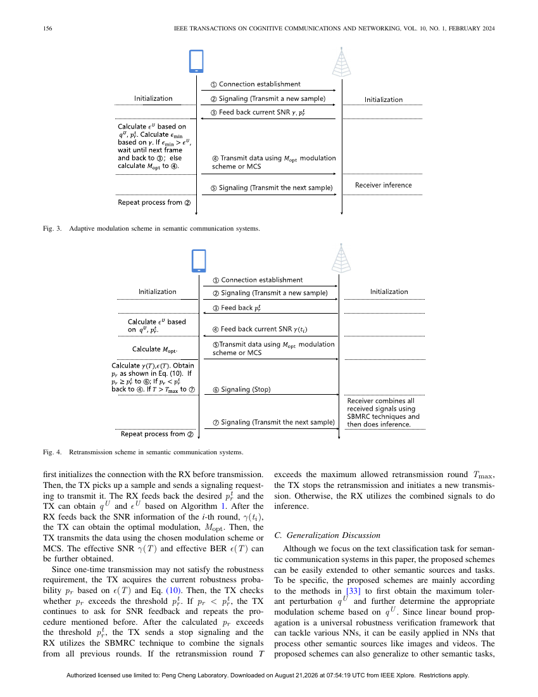</a><figcaption><b>架构/方法证据页</b>｜来源：《Adaptive Modulation and Retransmission Scheme for Semantic Communication Systems》，PDF p.7；原图题/表题：Adaptive modulation scheme in semantic communication systems.。 <a href='https://doi.org/10.1109/tccn.2023.3315386'>核对论文</a></figcaption></figure><figure><a href='assets/2024_adaptive-modulation-and-retransmission-scheme-for-semantic-communication-systems_result_p8.png' target='_blank'></a><figcaption><b>关键结果证据页</b>｜来源：《Adaptive Modulation and Retransmission Scheme for Semantic Communication Systems》，PDF p.8；原图题/表题：shows the detailed structure of NNs at has an excellent performance.。 <a href='https://doi.org/10.1109/tccn.2023.3315386'>核对论文</a></figcaption></figure></div>
</article>
<article class="paper" id="deepma-end-to-end-deep-multiple-access-for-wireless-image-transmission-in-semantic-communica" data-year="2024" data-tier="core">
  <div class="paper-head"><div><div><span class="tag core">核心纳入</span><span class="tag year">2024</span></div><h2>DeepMA: End-to-End Deep Multiple Access for Wireless Image Transmission in Semantic Communication</h2></div><a class="pdf" href="https://doi.org/10.1109/tccn.2023.3326302">DOI / IEEE 页面</a></div>
  <div class="facts"><div><b>作者</b>Wenyu Zhang、Kaiyuan Bai、Sherali Zeadally、Haijun Zhang、Hua Shao、Hui Ma、Victor C. M. Leung</div><div><b>出版信息</b>Vol. 10, No. 2, pp. 387-402</div><div><b>DOI / IEEE ID</b><a href="https://doi.org/10.1109/tccn.2023.3326302">10.1109/tccn.2023.3326302</a> / 10288558</div><div><b>任务</b>图像语义传输或重建</div><div><b>技术谱系</b>学习式语义 feature；数字接口需由正文具体实现判定</div><div><b>年份口径</b>formal TCCN volume year</div></div>
  <div class="verdict"><b>是否属于严格数字语义通信：</b>系统层相关；没有足够证据把它判为严格数字语义通信。</div>
  <h3>实验设置</h3><div class="grid3"><div><b>数据集/场景</b>Kodak、ImageNet、CIFAR10、CIFAR100</div><div><b>Baseline</b>DeepJSCC、JPEG、JPEG2000、BPG、LDPC、Polar、QAM、HM、FEC、ViT、GAN、Ballé、PPO、SAC、DeepSC、DeepSC-S、DeepMA、ADJSCC、JSCC、IB、Huffman</div><div><b>指标与信道条件</b>PSNR、SSIM、FID、MSE、recall、NME、energy、BLEU、throughput、VoI、MOS、WER、CER<br><span class="muted">SNR：0dB、12 dB、12dB、16 dB、16dB、24dB、25 dB、33.54 dB、35.01 dB、35.06 dB、35.53 dB、36.35 dB、36.47 dB、5dB、8 dB、8dB</span></div></div>
  <h3>Introduction 的六步讲述逻辑</h3><ol class='story'><li><b>已有进展：</b>d ologies include orthogonal frequency division multiple access for semantic communication.</li><li><b>现有问题：</b>Among them, OFDMA achieves ing (DeepJSCC) problem for point-to-point communication multiplexing by allocating the dedicated frequency sources to tasks [3], and how to achieve co-frequency multiple access to the user equipments (UEs), and TDMA avoids interference enable multiple semantic data streams to be transmitted simul- by dividing and allocating UEs with different transmission taneously with the same frequency remains an unexplored timeslot resources.</li><li><b>为何重要：</b>R ELATED W ORK functional blocks, and therefore its complexity is much Semantic communication can be used for dealing with a lower than NOMA and CDMA.</li><li><b>提出方案：</b>To achieve this goal, we propose deep learning-based access by using power allocation and successive interference multiple access (DeepMA) to enable lossy and orthogonal cancellation (SIC) techniques, and it can be regarded as a power- channel multiplexing by exploiting the capabilities of the DL domain multi-access method.</li><li><b>解决机制：</b>We summarize the main contributions of this work as access (OMA) method that can achieve channel multiplexing follows: by modulating the data bits of multiple users using a set of • We propose a DeepMA framework can realize E2E orthogonal codes, such that the data can be transmitted over and lossy semantic communication process for contin- with the same frequency, and the receiver can recover the uous semantic symbol data with co-frequency channel data by demodulating the received data with the same code. multiplexing.</li><li><b>核心主张与证据目标：</b>From total dimensions n respectively. x ∼ CN (μx , σx2 ) designates the perspective of ensemble learning [25], the performance variable x follows a circularly symmetric complex Gaussian improvements achieved by the above two methods comes from distribution with mean μx and σx2 .</li></ol>
  <h3>方法、变量与优化</h3><p><b>系统/信息流：</b>PDF p.1：s image transmission. training semantic communication models with the abilities of joint source-channel coding (JSCC) and orthogonal signal modulation. DeepMA is achieved by a DeepMA network (DMANet), which is I. I NTRODUCTION comprised of several independent encoder-decoder pairs (EDPs), N A CONVENTIONAL communication system, the data and the DeepMA encoders can encode the input data as mutually orthogonal semantic symbol vec PDF p.1：transmission. training semantic communication models with the abilities of joint source-channel coding (JSCC) and orthogonal signal modulation. DeepMA is achieved by a DeepMA network (DMANet), which is I. I NTRODUCTION comprised of several independent encoder-decoder pairs (EDPs), N A CONVENTIONAL communication system, the data and the DeepMA encoders can encode the input data as mutually orthogonal semantic symbol vectors (SS PDF p.1：ce-channel coding (JSCC) and orthogonal signal modulation. DeepMA is achieved by a DeepMA network (DMANet), which is I. I NTRODUCTION comprised of several independent encoder-decoder pairs (EDPs), N A CONVENTIONAL communication system, the data and the DeepMA encoders can encode the input data as mutually orthogonal semantic symbol vectors (SSVs) such that the DeepMA decoders can detect and recover their own target data from I PDF p.1：ich is I. I NTRODUCTION comprised of several independent encoder-decoder pairs (EDPs), N A CONVENTIONAL communication system, the data and the DeepMA encoders can encode the input data as mutually orthogonal semantic symbol vectors (SSVs) such that the DeepMA decoders can detect and recover their own target data from I processing process mainly includes the following three parts: source coding for improving transmission effici</p><p><b>目标函数/联合训练证据：</b>PDF p.2：, then there is no need to use inference task to obtain high-quality results when there is additional functional modules to realize NOMA, and the some noise and interferences. Semantic encoders and decoders system complexity will be significantly reduced. are jointly trained E2E between the source input data at • Incompatibility of CDMA: CDMA is not applicable to the transmitter and the final inference result at the receiver. PDF p.7：annel can also be deployed in the uplink and downlink transmission SNRs γ1 , . . . , γN , learning rate η; scenarios. 2: Output: Model parameters (Θ, Φ) of DMANet-N; In DeepMA, each EDP only transmits and recovers its target 3: Transmitters: data xi , and its loss function is defined as: 4: for each DeepMA encoder Eφi ∈ EΦ : 5: Sample a different training data batch xi from X; L(θi , φi ; xi ) = d (xi , x̃i ), (12) 6: Compute PDF p.7：the final 11: Randomly generate CSI hi = [hi,k ]1×K , and hi,k ∼ result x̃i is recovered from an RMSSV that is mixed by the CN (0, 1); 12: Compute AWGN power σi2 ← (γPiz/10) ; SSVs transmitted by all the DeepMA encoders, as formulated 10 in equation (2). The loss function of the whole DMANet is 13: Randomly generat</p>
  <h3>数字化方案与传输开销</h3><p><b>传输表示证据：</b>学习式语义 feature；数字接口需由正文具体实现判定</p><p><b>调制/信道编码线索：</b>16qam、4qam、64qam、huffman、ldpc、polar</p><p><b>可复核开销与缺失信息：</b>输入/分辨率线索：32 × 32、128 × 128、768 × 512。feature/token/latent 尺寸线索：正文未给出可稳定自动定位的条目。码本线索：正文未给出可稳定自动定位的条目。bit/bpp/速率线索：8-bit、1-bit。CBR/压缩率线索：compression ratio compared with classical data Semantic communication realizes E2E co、compression ratio、code rates or edge on how to realize OMA with different training data、compression ratios and cannot be changed after training、compression ratio, and physical channel、code rates are the same、compression ratio, and、code rates are the same,、code rates, namely、code rates are 1/2, 2/3, and 3/4 respectively。该论文偏系统/理论层，正文未必给出可复核的 encoder feature map 与 payload 长度。</p><div class="formula">\[N_{tx}=N_{payload}+N_{side}+N_{protection};\quad \text{缺失项必须标记为未知}\]</div>
  <h3>信道处理机制</h3><div class="channel"><p><b>分类：</b>类别 5：信道/资源进入系统优化，但 payload 数字化接口不完整</p><p><b>正文信道证据：</b>PDF p.1：on. training semantic communication models with the abilities of joint source-channel coding (JSCC) and orthogonal signal modulation. DeepMA is achieved by a DeepMA network (DMANet), which is I. I NTRODUCTION comprised of several independent encoder-decoder pairs (EDPs), N A CONVENTIONAL communication system, the data and the DeepMA encoders can encode the input data as mutually orthogonal semantic symbol vectors (SSVs) such t PDF p.1：d over a shared physical channel, while transforming the digital deep JSCC (ADJSCC) method and conventional communication schemes using better portable graphics (BPG) and Low-density signals as high-frequency waveforms that are suitable for parity-check code (LDPC). The results obtained show that wireless transmission [1]. These processes are conducted by the proposed DeepMA can achieve effective, flexible, and specific and se PDF p.1：ing better portable graphics (BPG) and Low-density signals as high-frequency waveforms that are suitable for parity-check code (LDPC). The results obtained show that wireless transmission [1]. These processes are conducted by the proposed DeepMA can achieve effective, flexible, and specific and separable functional blocks, which are designed independently without jointly considering the influences of Manuscript received 1 Marc PDF p.2：semantic that can be easily used in both conventional and seman- decoder can automatically complete the inference task directly tic wireless networks, but they cannot achieve co-frequency from the received semantic symbols corrupted by noises or transmission. NOMA and CDMA can achieve co-frequency interferences. If the inference task is recovering the original transmission, but they are not the best choice for semantic input d</p><p><b>decoder 实际收到：</b>由论文系统模型定义的语义 feature、任务状态或传统译码后数据</p><p><b>是否联合优化：</b>是/部分：目标或训练证据与物理信道同时出现。</p><p><b>是否真正处理 bit/index/token/packet error：</b>未形成可复核的 bit/index/token 错误闭环。</p></div>
  <h3>主要结果、局限与 Codex 判断</h3><p><b>证据化结果：</b>PDF p.1：privacy-preserving channel multiplexing process, and demonstrate exploits deep learning models to enable end-to-end (E2E) that our proposed DeepMA approach can yield comparable communications processes, and recent studies have shown that bandwidth efficiency compared with conventional multiple access it can achieve better noise resiliency compared with traditional schemes. communication schemes in a low signal-to-noise (SNR) r PDF p.1：arning models to enable end-to-end (E2E) that our proposed DeepMA approach can yield comparable communications processes, and recent studies have shown that bandwidth efficiency compared with conventional multiple access it can achieve better noise resiliency compared with traditional schemes. communication schemes in a low signal-to-noise (SNR) regime. To achieve multiple access in semantic communication, we propose Index Ter PDF p.1：flexible, and specific and separable functional blocks, which are designed independently without jointly considering the influences of Manuscript received 1 March 2023; revised 27 June 2023 and 23 August other blocks. This separable architecture significantly reduces 2023; accepted 16 October 2023. Date of publication 20 October 2023; date of the design, development, and maintenance costs of the com- current version 9 April 20 PDF p.2：m- utilizing the powerful feature extraction capability of deep ber is relative large, and will cause additional system learning models, semantic communication models can achieve complexity when realizing the NOMA process [12]. a higher data compression ratio compared with classical data Semantic communication realizes E2E communication compression methods so that the amount of transmitted data process by leveraging the powerf</p><p><b>独立判断：</b>没有完整离散接口，无法直接回答 bit/index/token 跳变问题。 未显式注入离散误码/丢包，鲁棒性结论不应外推到真实数字链路。</p>
  <div class="figs"><figure><a href='assets/2024_deepma-end-to-end-deep-multiple-access-for-wireless-image-transmission-in-semantic-communica_method_p4.png' target='_blank'></a><figcaption><b>架构/方法证据页</b>｜来源：《DeepMA: End-to-End Deep Multiple Access for Wireless Image Transmission in Semantic Communication》，PDF p.4；原图题/表题：shows the basic framework of DeepMA, wherein Therefore, we has only one transmitter, but multiple the deep coding and modulation (DCM) process processes receivers.。 <a href='https://doi.org/10.1109/tccn.2023.3326302'>核对论文</a></figcaption></figure><figure><a href='assets/2024_deepma-end-to-end-deep-multiple-access-for-wireless-image-transmission-in-semantic-communica_result_p10.png' target='_blank'>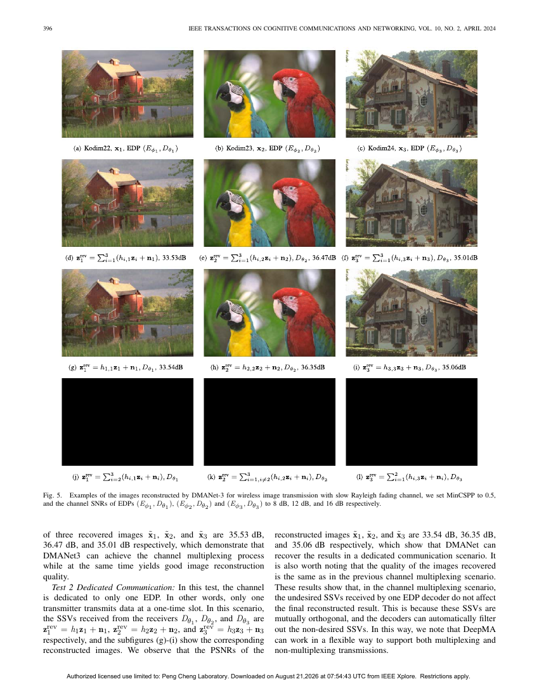</a><figcaption><b>关键结果证据页</b>｜来源：《DeepMA: End-to-End Deep Multiple Access for Wireless Image Transmission in Semantic Communication》，PDF p.10；原图题/表题：Examples of the images reconstructed by DMANet-3 for wireless image transmission with slow Rayleigh fading channel, we set MinCSPP to 0.5, and the channel SNRs of EDPs (Eφ1 , Dθ1 ), (Eφ2 , Dθ2 ) and (Eφ3 , Dθ3 ) to 8 dB, 12 dB, and 16 dB respectively.。 <a href='https://doi.org/10.1109/tccn.2023.3326302'>核对论文</a></figcaption></figure></div>
</article>
<article class="paper" id="feature-importance-aware-task-oriented-semantic-transmission-and-optimization" data-year="2024" data-tier="core">
  <div class="paper-head"><div><div><span class="tag core">核心纳入</span><span class="tag year">2024</span></div><h2>Feature Importance-Aware Task-Oriented Semantic Transmission and Optimization</h2></div><a class="pdf" href="https://doi.org/10.1109/tccn.2024.3375496">DOI / IEEE 页面</a></div>
  <div class="facts"><div><b>作者</b>Yining Wang、Shujun Han、Xiaodong Xu、Haotai Liang、Rui Meng、Chen Dong、Ping Zhang</div><div><b>出版信息</b>Vol. 10, No. 4, pp. 1175-1189</div><div><b>DOI / IEEE ID</b><a href="https://doi.org/10.1109/tccn.2024.3375496">10.1109/tccn.2024.3375496</a> / 10466397</div><div><b>任务</b>语义网络与资源分配</div><div><b>技术谱系</b>连续 learned latent / channel symbol（DeepJSCC）</div><div><b>年份口径</b>formal TCCN volume year</div></div>
  <div class="verdict"><b>是否属于严格数字语义通信：</b>否（连续语义 JSCC）</div>
  <h3>实验设置</h3><div class="grid3"><div><b>数据集/场景</b>CIFAR10、CIFAR100</div><div><b>Baseline</b>HM、FEC、ViT、ResNet、PPO、SAC、DeepSC、ASC、JSCC、IB、CLIP</div><div><b>指标与信道条件</b>MSE、mAP、accuracy、NME、QoE、latency、energy、TOSSE、throughput、VoI、MOS、WER、CER<br><span class="muted">SNR：10 dB</span></div></div>
  <h3>Introduction 的六步讲述逻辑</h3><ol class='story'><li><b>已有进展：</b>c of seman- DL-enabled semantic communication (DeepSC) systems for tic similarity (MSS) was optimized.</li><li><b>现有问题：</b>And [28] formulates a QoE to reduce the size and computation of DeepSC model, pruning maximization problem for semantic communications in terms and quantization methods were applied in [8], which made of channel allocation and the number of transmitted semantic it affordable for resource-limited Internet of Things (IoT) symbols. devices.</li><li><b>为何重要：</b>Contributions For better implementations of task-oriented semantic com- munications in wireless systems, the efficiency of semantic communications needs to be further evaluated and its rela- tionship with semantic feature importance remains to be investigated.</li><li><b>提出方案：</b>The main contributions are summarized as follows: • We propose an importance-aware joint source-channel coding (I-JSCC) framework to facilitate task-oriented semantic communications between the base station (BS) the efficiency of task-oriented semantic communication and associated users, where only features with high in bandwidth-limited scenarios, which hasn’t been fully importance are transmitted as semantic symbols.</li><li><b>解决机制：</b>An investigated in prior works on joint semantic communi- error-based evaluation method for estimating the contri- cation and resource allocation. bution of a neuron to the semantic task is designed to • We examine the complexity and convergence of select features that are most important to the correspond- the K-PPO algorithm, which accelerates the learning ing semantic concepts.</li><li><b>核心主张与证据目标：</b>In this way, an adaptive semantic transmission mechanism is achieved through the cross-layer combina- tion of importance-aware semantic feature selection and II.</li></ol>
  <h3>方法、变量与优化</h3><p><b>系统/信息流：</b>PDF p.1：tion overhead. We define a new nication system design [4], their focus on communication metric named task-oriented semantic spectral efficiency (TOSSE) reliability only measures the network performance while to evaluate the effectiveness and efficiency of the proposed system, ignores the evaluation of intelligent tasks. Due to the numerous which measures the effective semantic information carried by advantages of enhancing the PDF p.2：ymbols. devices. To utilize the rich semantic information in the knowl- However, most of the existing semantic communication edge graph instead of only relying on DL models, Xu et al. frameworks do not take into account the different importance design a multi-encoder Transformer model for knowledge- level of semantics, and no associated transmission mechanism enhanced semantic communication (KESC) system, which is designed to PDF p.3：tance, features under the constraints of wireless channel con- respectively. dition, which cooperates with the I-JSCC codec in the The remaining parts of this paper are arranged as follows. physical layer to dynamically match with the number In Section II the system model is presented. In Section III of transmitted semantic features to the available wireless the importance-aware semantic resource allocation scheme is resources PDF p.3：ansmitted semantic features to the available wireless the importance-aware semantic resource allocation scheme is resources. According to the feature importance order summarized. In Section IV, the joint optimization algorithm calculated locally by the I-JSCC encoder and the feature of the proposed problem is illustrated. In Section V, simu- transmission ratio r fed back from the BS, the I-JSCC lation results are discussed. Fi</p><p><b>目标函数/联合训练证据：</b>PDF p.2：semantic communi- efficiency of semantic tasks by adjusting the compression cations, is employed in [12], [13] to transmit compressed ratio as well as power/bandwidth allocation. Although a joint information over wireless channel, which can achieve efficient optimization problem of semantic transmission and resource information transmission while resisting noise at the same allocation is formulated, the impact of wireless chan PDF p.3：WANG et al.: FEATURE IMPORTANCE-AWARE TASK-ORIENTED SEMANTIC TRANSMISSION AND OPTIMIZATION 1177 TABLE I communication optimization problems, which inspire us to S UMMARY OF N OTATIONS formulate semantic-aware resource allocation problems from different perspectives. B. Contributions For better implementations of task-oriented semantic com- munications in wireless systems, the efficiency of seman PDF p.7：can send the retained introduced in [42], we propose a knowledge-assisted proximal features according to the order of semantic feature importance. policy optimization (K-PPO) algorithm to solve the joint Meanwhile, the Hungarian method is used in our proposed optimization problem of importance-aware semantic feature K-PPO algorithm to determine</p>
  <h3>数字化方案与传输开销</h3><p><b>传输表示证据：</b>PDF p.2：etworks to maximize the network (DNN) in semantic communication systems. Further, system throughput in message. And [28] formulates a QoE to reduce the size and computation of DeepSC model, pruning maximization problem for semantic communications in terms and quantization methods were applied in [8], which made of channel allocation and the number of transmitted semantic it affordable for resource-limited Internet of Things (I PDF p.4：ed channel input min P(D, β) = min P(y |x , β), (2) symbols X , which is transmitted over the wireless channel. β β Then the edge server generates M  feature values F  from the where P is the prediction error compared with the labeled incoming M  /2 noisy channel symbols Y , which are input semantic concept and can be obtained from the most recent into the I-JSCC decoder Φ(·) to obtain semantic predictions S training cycle</p><p><b>调制/信道编码线索：</b>ofdm</p><p><b>可复核开销与缺失信息：</b>输入/分辨率线索：0559×10、0559 × 10、5897 × 10。feature/token/latent 尺寸线索：symbols X k ∈ C 2 ×1。码本线索：正文未给出可稳定自动定位的条目。bit/bpp/速率线索：正文未给出可稳定自动定位的条目。CBR/压缩率线索：正文未给出可稳定自动定位的条目。连续 DeepJSCC 的主要预算是 channel uses/CBR；除非另加量化与调制，不能把每个 latent 当作固定 bit。</p><div class="formula">\[CBR=\frac{N_{complex\ channel\ symbols}}{N_{source\ samples}},\qquad R_{bit}\ \text{未定义（连续映射）}\]</div>
  <h3>信道处理机制</h3><div class="channel"><p><b>分类：</b>类别 3：连续 learned latent 直接通过有噪声信道</p><p><b>正文信道证据：</b>PDF p.1：an , Member, IEEE, Xiaodong Xu , Senior Member, IEEE, Haotai Liang , Rui Meng , Student Member, IEEE, Chen Dong , and Ping Zhang , Fellow, IEEE Abstract—Incorporating both semantic level information and of bits through noisy communication channels [1]. With effectiveness level performance, the task-oriented semantic com- the prevalence of integrated artificial intelligence (AI) and munication system has been designed for vario PDF p.1：[2], which puts an unprecedented In this paper, we propose an importance-aware joint source- focus on machine intelligence and its relationship to human channel coding (I-JSCC) framework for task-oriented semantic intelligence [3]. However, the meaning and effectiveness of communications. A joint semantic-channel transmission (JSCT) mechanism is designed by selectively transmitting task-important the transmitted data are disre PDF p.1：ommu- features to reduce communication overhead. We define a new nication system design [4], their focus on communication metric named task-oriented semantic spectral efficiency (TOSSE) reliability only measures the network performance while to evaluate the effectiveness and efficiency of the proposed system, ignores the evaluation of intelligent tasks. Due to the numerous which measures the effective semantic information carr PDF p.1：sk-oriented semantic spectral efficiency (TOSSE) reliability only measures the network performance while to evaluate the effectiveness and efficiency of the proposed system, ignores the evaluation of intelligent tasks. Due to the numerous which measures the effective semantic information carried by advantages of enhancing the quality and effectiveness of each semantic symbol. An importance-aware semantic resource allocation pr</p><p><b>decoder 实际收到：</b>带噪连续 channel symbol / latent，经神经 decoder 恢复任务输出</p><p><b>是否联合优化：</b>是/部分：目标或训练证据与物理信道同时出现。</p><p><b>是否真正处理 bit/index/token/packet error：</b>不适用 VQ index/bit 跳变；论文处理的是连续扰动和信道失配。</p></div>
  <h3>主要结果、局限与 Codex 判断</h3><p><b>证据化结果：</b>PDF p.1：he task-oriented semantic com- the prevalence of integrated artificial intelligence (AI) and munication system has been designed for various tasks of communication in the sixth generation (6G) communications different datatype. Although semantic communication improves the spectral utilization to some extent, indiscriminate trans- system, connecting devices that execute AI tasks will partici- mission of semantic information for PDF p.1：c intelligence [3]. However, the meaning and effectiveness of communications. A joint semantic-channel transmission (JSCT) mechanism is designed by selectively transmitting task-important the transmitted data are disregarded in conventional commu- features to reduce communication overhead. We define a new nication system design [4], their focus on communication metric named task-oriented semantic spectral efficiency (TOSSE) re PDF p.2：on the downstream authors in [24] propose an adaptable semantic compression task. It reveals that evaluating the importance of semantics approach and investigate the resource allocation problem to can prioritize the allocation of resources to the key elements improve the success probability of tasks in limited trans- in the semantic information transmitted by each user, thereby mission time. Yan et. al in [25] studied text sem PDF p.2：andwidth allocation respectively, which verify the feasibility of using deep neural problem in semantic communication networks to maximize the network (DNN) in semantic communication systems. Further, system throughput in message. And [28] formulates a QoE to reduce the size and computation of DeepSC model, pruning maximization problem for semantic communications in terms and quantization methods were applied in [8], which mad</p><p><b>独立判断：</b>没有完整离散接口，无法直接回答 bit/index/token 跳变问题。 未显式注入离散误码/丢包，鲁棒性结论不应外推到真实数字链路。 未报告统一可复核的 payload bit 数/CBR，跨论文带宽比较受限。</p>
  <div class="figs"><figure><a href='assets/2024_feature-importance-aware-task-oriented-semantic-transmission-and-optimization_method_p4.png' target='_blank'></a><figcaption><b>架构/方法证据页</b>｜来源：《Feature Importance-Aware Task-Oriented Semantic Transmission and Optimization》，PDF p.4；原图题/表题：The structure of importance-aware task-oriented semantic communication framework based on I-JSCC model.。 <a href='https://doi.org/10.1109/tccn.2024.3375496'>核对论文</a></figcaption></figure><figure><a href='assets/2024_feature-importance-aware-task-oriented-semantic-transmission-and-optimization_result_p11.png' target='_blank'>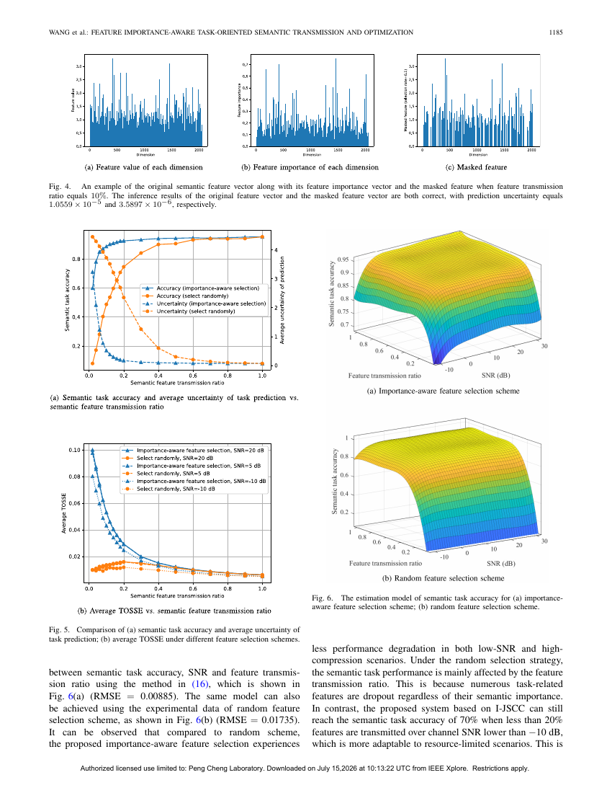</a><figcaption><b>关键结果证据页</b>｜来源：《Feature Importance-Aware Task-Oriented Semantic Transmission and Optimization》，PDF p.11；原图题/表题：The estimation model of semantic task accuracy for (a) importance- aware feature selection scheme; (b) random feature selection scheme.。 <a href='https://doi.org/10.1109/tccn.2024.3375496'>核对论文</a></figcaption></figure></div>
</article>
<article class="paper" id="how-to-evaluate-semantic-communications-for-images-with-vitscore-metric" data-year="2024" data-tier="core">
  <div class="paper-head"><div><div><span class="tag core">核心纳入</span><span class="tag year">2024</span></div><h2>How to Evaluate Semantic Communications for Images With ViTScore Metric?</h2></div><a class="pdf" href="https://doi.org/10.1109/tccn.2024.3392803">DOI / IEEE 页面</a></div>
  <div class="facts"><div><b>作者</b>Tingting Zhu、Bo Peng、Jifan Liang、Tingchen Han、Hai Wan、Jingqiao Fu、Junjie Chen</div><div><b>出版信息</b>Vol. 10, No. 5, pp. 1744-1758</div><div><b>DOI / IEEE ID</b><a href="https://doi.org/10.1109/tccn.2024.3392803">10.1109/tccn.2024.3392803</a> / 10507167</div><div><b>任务</b>图像语义传输或重建</div><div><b>技术谱系</b>系统/理论层变量；论文未定义统一 payload bitstream</div><div><b>年份口径</b>formal TCCN volume year</div></div>
  <div class="verdict"><b>是否属于严格数字语义通信：</b>系统层相关；没有足够证据把它判为严格数字语义通信。</div>
  <h3>实验设置</h3><div class="grid3"><div><b>数据集/场景</b>Kodak、DIV2K、COCO、ImageNet、CelebA、Set5、Set14、Urban100</div><div><b>Baseline</b>DeepJSCC、NTSCC、JPEG、JPEG2000、BPG、LDPC、HM、FEC、ViT、GAN、VAE、VQ-VAE、PPO、SAC、ADJSCC、JSCC、SSCC、IB、BERT、GPT</div><div><b>指标与信道条件</b>PSNR、SSIM、MS-SSIM、LPIPS、FID、MSE、mAP、accuracy、recall、precision、NME、energy、BLEU、BERTScore、ViTScore、semantic similarity、MOS、WER、CER<br><span class="muted">SNR：15dB</span></div></div>
  <h3>Introduction 的六步讲述逻辑</h3><ol class='story'><li><b>已有进展：</b>feature distances from cor- Vision Transformer (ViT) [35].</li><li><b>现有问题：</b>Transmitted by the GAN-based SC system model we compare ViTScore with 3 typical categories with and without semantic attack, which is modeled as image of metrics (PSNR, MS-SSIM, and LPIPS) through 4 inverse, an image may degrade a lot at the pixel level and classes of experiments: (i) correlation with BERTScore the structural level, even with the DL-based metric LPIPS. through evaluation of image caption downstream CV However, it may still keep its semantics in significant measure. task, (ii) evaluation in classical image communica- See Fig.</li><li><b>为何重要：</b>To the best of the authors’ constraint of corresponding positions leads to the absence knowledge, ViTScore is the first practical image semantic of global semantic measures.</li><li><b>提出方案：</b>Semantic communications (SC) have been expected</li><li><b>解决机制：</b>Semantic communications (SC) have been expected</li><li><b>核心主张与证据目标：</b>In [27], the authors show the unreasonable effec- where MSE = d (x , x̂ ) is the mean square error between the tiveness of deep features as a perceptual metric, indicating that reference image x and the reconstructed image x̂ , and MAX is 3 All our experiments measured in terms of PSNR in this paper are conducted on 24-bit depth RGB images (8 bits per pixel per color channel), 2 The details about these 4 models will be described in Section IV-C. thus MAX = 28 − 1 = 255.</li></ol>
  <h3>方法、变量与优化</h3><p><b>系统/信息流：</b>PDF p.2：ZHU et al.: HOW TO EVALUATE SC FOR IMAGES WITH VITScore METRIC? 1745 Fig. 1. Comparison of the image semantic similarity evaluation with 4 metrics (PSNR, MS-SSIM, LPIPS and ViTScore1 ). Transmitting an image (a) with a GANs-based SC system model, where the physical channel is supposed to be noiseless, the reconstruction performance (b) is evaluated: PSNR = 14.60, MS-SSIM = 0.72, LPIPS = 0.15, ViTScore = 0.79. While the semanti PDF p.2：3 important properties, works on SC [29], [30], [31], [32] have exploited this property including symmetry, boundedness, and normalization (see of GANs to develop the SC schemes. We utilize a GAN- Theorems 1, 2, and 3, respectively). These properties based SC system model, which will be described in detail in make ViTScore convenient and intuitive for implemen- Section IV-D. For simplicity to the discussion of the semantic tat PDF p.2：or implemen- Section IV-D. For simplicity to the discussion of the semantic tation in image measurement. changes, the physical channel in this model is supposed to be • To evaluate the performance of ViTScore metric, noiseless. Transmitted by the GAN-based SC system model we compare ViTScore with 3 typical categories with and without semantic attack, which is modeled as image of metrics (PSNR, MS-SSIM, and LPIPS) through 4 inv PDF p.4：cs. Given an image X and a deep neural network F with l layers which takes X as its input. The output where s is the transmitted sentence, and ŝ is the reconstructed of i-th layer is denoted as YXi ∈ RHi ×Wi ×Ci , where Hi , sentence, BΦ is the Bidirectional Encoder Representations Wi and Ci are height, weight and number of channels of the from Transformers (BERT) based on a pre-trained lan- i-th layer, respectively. Given tw</p><p><b>目标函数/联合训练证据：</b>正文未被规则稳定定位到显式 objective；应结合方法公式页复核。</p>
  <h3>数字化方案与传输开销</h3><p><b>传输表示证据：</b>PDF p.2：ViT is employed ambiguity and semantic noise coming from the adversarial in the ViTScore metric to learn and extract essential examples [28]. We take the latter one as an example. It has semantics of the image. shown that a variety of semantics emerges in the latent space • We define ViTScore (see Definition 2), and prove of Generative Adversarial Networks (GANs). Some existing theoretically that ViTScore has 3 important prope PDF p.7：the threshold value, which is difficult to improve. Especially, for channel. The image dimension n is referred to as the source bit level, the threshold value sometimes maybe low because bandwidth and is given by the product of the image’s height of the image quantization or the error propagation caused Authorized licensed use limited to: Peng Cheng Laboratory. Downloaded on August 21,2026 at 07:55:07 UTC from IEEE Xplore. Res PDF p.9：at the relatively low SNR channel coding scheme and standard Deep JSCC methods. or CBR is sufficient for the SC systems at the semantic level. Different from the DeepJSCC model, the NTSCC first learns a nonlinear analysis transform to map the source data into latent space, effectively extracting the source semantic features and D. Applied to Image Semantic Communication Systems With providing side information for source-channe PDF p.10：re can better reflect adversarial training with weight perturbation is developed the change of the image semantics. to incorporate the samples with semantic noise in the 2) Semantic Attack With Image Inverse: Utilizing an in- training dataset. A masked vector quantized-variational domain GAN inversion approach [63], an image can be autoencoder (VQ-VAE) is utilized with the noise-related mask- inverted to a latent code with a d</p><p><b>调制/信道编码线索：</b>ldpc</p><p><b>可复核开销与缺失信息：</b>输入/分辨率线索：224 × 224 × 3、16×16。feature/token/latent 尺寸线索：正文未给出可稳定自动定位的条目。码本线索：正文未给出可稳定自动定位的条目。bit/bpp/速率线索：24-bit、8 bits。CBR/压缩率线索：compression ratio as Rcomp = m/n, where m is denoted as、channel bandwidth ratio) as CBR = k /n、CBRs、CBR regions, where the semantics of the images、CBR、CBR increasing, as well as the channel environment improving、bandwidth ratio CBR increasing, as well as the channel environment improving、CBR regions, as ViTScore evaluates the by utilizing 4 landmark image SC、channel bandwidth ratio is defined as CBR = k/n, where k &lt; n, or JPEG2000 compression with a cap、code rate。该论文偏系统/理论层，正文未必给出可复核的 encoder feature map 与 payload 长度。</p><div class="formula">\[N_{tx}=N_{payload}+N_{side}+N_{protection};\quad \text{缺失项必须标记为未知}\]</div>
  <h3>信道处理机制</h3><div class="channel"><p><b>分类：</b>类别 5：信道/资源进入系统优化，但 payload 数字化接口不完整</p><p><b>正文信道证据：</b>PDF p.1：re-trained founda- to be a new paradigm shifting to catalyze the next generation tion model, semantic communications, semantic measurement, communication, whose main concerns shift from accurate bit vision transformer (ViT), ViTScore metric. transmission to effective semantic information exchange in com- munications. However, the previous and widely-used metrics for images are not applicable to evaluate the image semantic simi PDF p.1：levels: ViTScore has 3 important properties, including symmetry, bound- transmission of information symbols, semantic exchange, and edness, and normalization, which make ViTScore convenient and intuitive for image measurement. To evaluate the performance of effectiveness of semantic exchange [1]. This indicates that ViTScore, we compare ViTScore with 3 typical metrics (PSNR, transmitting the semantics, instead of the bits or s PDF p.1：tic changes [13], [14], [15], [16], [17], [18], [19], [20], [21], [22], [23], by semantic attack, such as image inverse with Generative Adversarial Networks (GANs). This indicates that ViTScore is [24] and the references therein). However, the pioneering an effective performance metric when deployed in SC scenarios. works on SC generally focus on the design of new schemes Furthermore, we provide an ablation study of ViTScore t PDF p.2：o integrate global semantic information thanks to the As the features are from a bunch of convolution layers, the self-attention mechanism [35]. To the best of the authors’ constraint of corresponding positions leads to the absence knowledge, ViTScore is the first practical image semantic of global semantic measures. Motivated by these issues, we similarity evaluation metric based on ViT in SC. Specifically, focus on the SC ev</p><p><b>decoder 实际收到：</b>由论文系统模型定义的语义 feature、任务状态或传统译码后数据</p><p><b>是否联合优化：</b>未检出明确的端到端信道联合优化证据。</p><p><b>是否真正处理 bit/index/token/packet error：</b>未形成可复核的 bit/index/token 错误闭环。</p></div>
  <h3>主要结果、局限与 Codex 判断</h3><p><b>证据化结果：</b>PDF p.1：ciency. As presented in [1], [2], [3], relation with BERTScore through evaluation of image caption [4], semantic communications (SC) focus on the transmission downstream CV task, (ii) evaluation in classical image com- of semantic features and the performance improvement at munications, (iii) evaluation in image semantic communication systems, and (iv) evaluation in image semantic communication the semantic level, which is exp PDF p.1：k. Experimental results demonstrate shifting to catalyze the next generation communication. SC that ViTScore is robust and efficient in evaluating the semantic have attracted growing interest from both academia and similarity of images. Particularly, ViTScore outperforms the industry (see [4], [5], [6], [7], [8], [9], [10], [11], [12], other 3 typical metrics in evaluating the image semantic changes [13], [14], [15], [16], [17 PDF p.3：r, such as the resolution of the display device, the evaluate the semantics of images. Most of the previous studies viewing distance of the user, etc. Therefore, the MS-SSIM on evaluating image quality rely on the pixel level, such as algorithm has emerged to improve evaluation performance 2 distance, MSE and PSNR. These metrics usually treat each in good agreement with human perceptual judgments. The pixel of the image as eq PDF p.6：f experiments over 10 typical datasets from real-world applications and discuss the effects of the ViTScore metric. Specifically, we answer the following 4 research questions. As we applied greedy match in our method, i.e., the max • Question 1: Does ViTScore outperform the previous, operator in Equation (12), the practical lower bound is higher widely-used metrics, such as PSNR, MS-SSIM, and than in Theorem 2. Practically, it</p><p><b>独立判断：</b>没有完整离散接口，无法直接回答 bit/index/token 跳变问题。 未显式注入离散误码/丢包，鲁棒性结论不应外推到真实数字链路。</p>
  <div class="figs"><figure><a href='assets/2024_how-to-evaluate-semantic-communications-for-images-with-vitscore-metric_method_p7.png' target='_blank'></a><figcaption><b>架构/方法证据页</b>｜来源：《How to Evaluate Semantic Communications for Images With ViTScore Metric?》，PDF p.7；原图题/表题：Intuitively, the semantic similarity between (c) and (d) is higher than that of for reference. The first pair of images (a) and (b) in。 <a href='https://doi.org/10.1109/tccn.2024.3392803'>核对论文</a></figcaption></figure><figure><a href='assets/2024_how-to-evaluate-semantic-communications-for-images-with-vitscore-metric_result_p4.png' target='_blank'></a><figcaption><b>关键结果证据页</b>｜来源：《How to Evaluate Semantic Communications for Images With ViTScore Metric?》，PDF p.4；原图题/表题：C OMPARISON OF I MAGE Q UALITY M ETRICS W ITHIN 3 T YPICAL C ATEGORIES。 <a href='https://doi.org/10.1109/tccn.2024.3392803'>核对论文</a></figcaption></figure></div>
</article>
<article class="paper" id="lamosc-large-language-model-driven-semantic-communication-system-for-visual-transmission" data-year="2024" data-tier="core">
  <div class="paper-head"><div><div><span class="tag core">核心纳入</span><span class="tag year">2024</span></div><h2>LaMoSC: Large Language Model-Driven Semantic Communication System for Visual Transmission</h2></div><a class="pdf" href="https://doi.org/10.1109/tccn.2024.3401712">DOI / IEEE 页面</a></div>
  <div class="facts"><div><b>作者</b>Yaru Zhao、Yi Yue、Shoulu Hou、Bo Cheng、Yakun Huang</div><div><b>出版信息</b>Vol. 10, No. 6, pp. 2005-2018</div><div><b>DOI / IEEE ID</b><a href="https://doi.org/10.1109/tccn.2024.3401712">10.1109/tccn.2024.3401712</a> / 10531769</div><div><b>任务</b>文本/语言语义传输</div><div><b>技术谱系</b>连续 learned latent / channel symbol（DeepJSCC）</div><div><b>年份口径</b>formal TCCN volume year</div></div>
  <div class="verdict"><b>是否属于严格数字语义通信：</b>否（连续语义 JSCC）</div>
  <h3>实验设置</h3><div class="grid3"><div><b>数据集/场景</b>ImageNet、HEVC、CIFAR-10</div><div><b>Baseline</b>DeepJSCC、JPEG、JPEG2000、BPG、HEVC、HM、FEC、ViT、GAN、VAE、VQ-VAE、PPO、SAC、DeepSC、DeepSC-S、L-DeepSC、DeepSC-ST、JSCC、IB、BERT、GPT、CLIP、BLIP</div><div><b>指标与信道条件</b>PSNR、SSIM、MS-SSIM、LPIPS、FID、MSE、mAP、accuracy、NME、latency、semantic similarity、MOS、WER<br><span class="muted">SNR：4 dB</span></div></div>
  <h3>Introduction 的六步讲述逻辑</h3><ol class='story'><li><b>已有进展：</b>ng these features based on the multi-head novel image domains. attention mechanism. • Incorporating LLMs extensively into the develop- • Conducting comprehensive comparisons with advanced ment of multimodal semantic communication system. baselines on datasets demonstrates the robustness of the Conventional semantic communication systems com- system, particularly its superiority in low SNR conditions. monly develop end-to-end encoding-decoding networks The remainder of this paper is organized as follows. tailored for different modal tasks individually.</li><li><b>现有问题：</b>ng these features based on the multi-head novel image domains. attention mechanism. • Incorporating LLMs extensively into the develop- • Conducting comprehensive comparisons with advanced ment of multimodal semantic communication system. baselines on datasets demonstrates the robustness of the Conventional semantic communication systems com- system, particularly its superiority in low SNR conditions. monly develop end-to-end encoding-decoding networks The remainder of this paper is organized as follows. tailored for different modal tasks individually.</li><li><b>为何重要：</b>ng these features based on the multi-head novel image domains. attention mechanism. • Incorporating LLMs extensively into the develop- • Conducting comprehensive comparisons with advanced ment of multimodal semantic communication system. baselines on datasets demonstrates the robustness of the Conventional semantic communication systems com- system, particularly its superiority in low SNR conditions. monly develop end-to-end encoding-decoding networks The remainder of this paper is organized as follows. tailored for different modal tasks individually.</li><li><b>提出方案：</b>In this work, we propose a Large Language Model (LLM)- II.</li><li><b>解决机制：</b>R ELATED W ORK driven Semantic Communication system, named LaMoSC, to enhance the reliability and transmission quality of reconstruc- A.</li><li><b>核心主张与证据目标：</b>1, the to achieve a more comprehensive semantic understanding. input images S undergo initial preprocessing in the encoder Authorized licensed use limited to: Peng Cheng Laboratory.</li></ol>
  <h3>方法、变量与优化</h3><p><b>系统/信息流：</b>PDF p.1：ng the attention mechanism. Comprehensive comparisons with state-of-the-art To advance the field, research in semantic communication baselines across various datasets demonstrate the robustness of has focused on two main areas. The first area involves the the proposed method, particularly highlighting its superiority use of deep neural networks (DNNs) to learn the seman- in low SNR conditions. LaMoSC outperforms Deep-JSCC and PDF p.1：kun Huang are with the State Key Laboratory such as generative pre-trained transformer (GPT)-3 and bidi- of Networking and Switching Technology, Beijing University of Posts and Telecommunications, Beijing 100876, China (e-mail: zhaoyaru@bupt.edu.cn; rectional encoder representations from transformers (BERT) chengbo@bupt.edu.cn; ykhuang@bupt.edu.cn). have demonstrated remarkable capabilities in natural language Yi Yue is with t PDF p.2：in low SNR conditions. monly develop end-to-end encoding-decoding networks The remainder of this paper is organized as follows. tailored for different modal tasks individually. The Section II provides related works in the field of semantic com- design of the encoder and decoder plays a crucial munication and large language models. Section III details the role in achieving high-quality reconstruction when han- preliminaries, an PDF p.2：conditions. monly develop end-to-end encoding-decoding networks The remainder of this paper is organized as follows. tailored for different modal tasks individually. The Section II provides related works in the field of semantic com- design of the encoder and decoder plays a crucial munication and large language models. Section III details the role in achieving high-quality reconstruction when han- preliminaries, and Section I</p><p><b>目标函数/联合训练证据：</b>PDF p.7：for training, set aside these pixel values. 5,000 for validation to tune hyperparameters and assess interim model performance, and kept 10,000 images for D. Loss Design of Training LaMoSC testing to evaluate the model’s true prowess on unseen data. Our total loss function consists of two parts: visual recon- • ADE20K. This dataset is a rich tapestry of visual struction loss and semantic similarity loss of prompt texts. informa</p>
  <h3>数字化方案与传输开销</h3><p><b>传输表示证据：</b>PDF p.4：2008 IEEE TRANSACTIONS ON COGNITIVE COMMUNICATIONS AND NETWORKING, VOL. 10, NO. 6, DECEMBER 2024 decoder. The semantic encoder encodes images using a visual- textual-fused approach, while the decoder converts them into bitstreams through a physical channel encoder. Subsequently, the receiver decodes the bitstreams and utilizes a matched semantic decoder to reconstruct the images. The parameters Fig. 1. The components in a sema PDF p.4：TIONS AND NETWORKING, VOL. 10, NO. 6, DECEMBER 2024 decoder. The semantic encoder encodes images using a visual- textual-fused approach, while the decoder converts them into bitstreams through a physical channel encoder. Subsequently, the receiver decodes the bitstreams and utilizes a matched semantic decoder to reconstruct the images. The parameters Fig. 1. The components in a semantic communication system. of the semantic en PDF p.4：datasets semantic encoder is then employed to extract various semantic for transmitting visual information, such as videos and images. features from the input. These semantic features are then Meanwhile, LaMoSC supports the use of domain-specific encoded into bitstreams through a physical channel encoding datasets to train more accurate and reliable semantic encoders layer for transmission to the receiver. For any image s k in PDF p.4：f the noise on the channel, designed to match the encoder for training. It operates and I denotes the identity matrix. This equation models the by processing the semantic features obtained from the perturbation introduced by the channel, which the FEC aims to bitstreams in order to reconstruct the images. The decod- mitigate, thereby enabling the system to maintain the integrity ing process relies on a shared knowledge base wi</p><p><b>调制/信道编码线索：</b>未自动检出固定调制/信道编码名称</p><p><b>可复核开销与缺失信息：</b>输入/分辨率线索：256x256。feature/token/latent 尺寸线索：正文未给出可稳定自动定位的条目。码本线索：正文未给出可稳定自动定位的条目。bit/bpp/速率线索：8-bit、40 Kbps、2 Mbps、20 Mbps、100 Mbps、24-bit。CBR/压缩率线索：compression ratio, expressed as k/n, provides insight into the、compression ratios, surpassing the、compression ratios of k/n、compression ratio, LaMoSC’s the performance of all metrics (PSNR, MS-SSIM, LPIPS)、compression ratio, LaMoSC scored 0、compression ratios, achieving of LLM is also able to improve the structural similarity、compression ratio, LaMoSC achieved an LPIPS of all metrics suggesting that semanti、compression ratios、compression ratios vectors using the cross-modal attentional mechanism and、compression ratios, the reduced data load cross-modal attention fusion mechanism。连续 DeepJSCC 的主要预算是 channel uses/CBR；除非另加量化与调制，不能把每个 latent 当作固定 bit。</p><div class="formula">\[CBR=\frac{N_{complex\ channel\ symbols}}{N_{source\ samples}},\qquad R_{bit}\ \text{未定义（连续映射）}\]</div>
  <h3>信道处理机制</h3><div class="channel"><p><b>分类：</b>类别 3：连续 learned latent 直接通过有噪声信道</p><p><b>正文信道证据：</b>PDF p.1：to transmit the meaning or intent behind the these approaches may result in inaccuracies in decoding under transmitted data, rather than the data itself, thereby optimizing low signal-to-noise ratio (SNR) conditions. This paper introduces the efficiency and effectiveness of communication. However, LaMoSC, a semantic communication system driven by large existing semantic communication systems, which predomi- language models (LL PDF p.1：tegrates modal features using the attention mechanism. Comprehensive comparisons with state-of-the-art To advance the field, research in semantic communication baselines across various datasets demonstrate the robustness of has focused on two main areas. The first area involves the the proposed method, particularly highlighting its superiority use of deep neural networks (DNNs) to learn the seman- in low SNR conditions. LaMoSC PDF p.2：opose a Large Language Model (LLM)- II. R ELATED W ORK driven Semantic Communication system, named LaMoSC, to enhance the reliability and transmission quality of reconstruc- A. Semantic Communication tion, specifically for a low SNR condition. To address the first Traditional semantic communication utilizes image com- challenge, we have redesigned a multimodal semantic com- pression techniques such as JPEG [15], JPEG2000 [16], PDF p.2：JPEG2000 [16], munication system inspired by recent advancements in LLM. and BPG [17]. Recently, deep learning-based seman- It leverages the extensive external knowledge of the LLM to tic communications have sparked widespread interest. extract prompt text, effectively overcoming the constraints of Bourtsoulatze et al. [4] introduced DeepJSCC, an autoencoder- the conventional semantic communication system’s knowledge driven me</p><p><b>decoder 实际收到：</b>带噪连续 channel symbol / latent，经神经 decoder 恢复任务输出</p><p><b>是否联合优化：</b>是/部分：目标或训练证据与物理信道同时出现。</p><p><b>是否真正处理 bit/index/token/packet error：</b>不适用 VQ index/bit 跳变；论文处理的是连续扰动和信道失配。</p></div>
  <h3>主要结果、局限与 Codex 判断</h3><p><b>证据化结果：</b>PDF p.1：cross various datasets demonstrate the robustness of has focused on two main areas. The first area involves the the proposed method, particularly highlighting its superiority use of deep neural networks (DNNs) to learn the seman- in low SNR conditions. LaMoSC outperforms Deep-JSCC and tic features of the source data and establish end-to-end multi-level semantic aware communication system (MLSC) by encoding-decoding networks fo PDF p.1：ransmission and has shown promising results. Additionally, speech semantic communi- Index Terms—Semantic communication, large language models, multimodal fusion, robust reconstruction. cation systems that incorporate attention mechanisms have been designed to improve the accuracy of speech signal recovery [12]. The second area of research concentrates on I. I NTRODUCTION cross-layer fusion and optimization to enhance the effic PDF p.2：(PSNR), structural similarity index multimodal fusion approach. However, there are two key chal- measure (SSIM), and learned perceptual image patch similar- lenges to implementing such a semantic transmission system, ity (LPIPS). The results show that LaMoSC improves by at including: least 5.5% and 2.6% respectively over Deep-JSCC and MLSC • Enhancing the extraction of textual features from under low SNR conditions, such as 4 PDF p.2：dy explores the advantages of Their system surpasses current engineered speech transmis- a visual-textual fusion mechanism leveraging the extensive sion systems in both objective and subjective measures and knowledge of LLM pre-trained models. In some low SNR reduces channel bandwidth costs by 75% for the same environments, such as when encoded visual features are quality. Meanwhile, Xie and Qin [21] introduce L-DeepSC, partia</p><p><b>独立判断：</b>没有完整离散接口，无法直接回答 bit/index/token 跳变问题。 未显式注入离散误码/丢包，鲁棒性结论不应外推到真实数字链路。</p>
  <div class="figs"><figure><a href='assets/2024_lamosc-large-language-model-driven-semantic-communication-system-for-visual-transmission_method_p5.png' target='_blank'></a><figcaption><b>架构/方法证据页</b>｜来源：《LaMoSC: Large Language Model-Driven Semantic Communication System for Visual Transmission》，PDF p.5；原图题/表题：System overview of proposed LaMoSC.。 <a href='https://doi.org/10.1109/tccn.2024.3401712'>核对论文</a></figcaption></figure><figure><a href='assets/2024_lamosc-large-language-model-driven-semantic-communication-system-for-visual-transmission_result_p6.png' target='_blank'>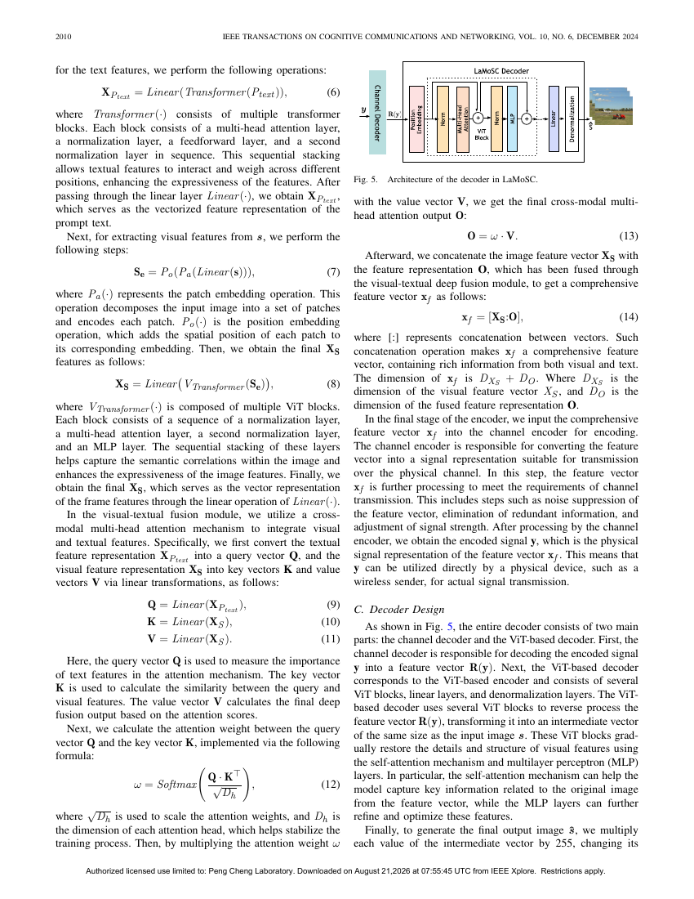</a><figcaption><b>关键结果证据页</b>｜来源：《LaMoSC: Large Language Model-Driven Semantic Communication System for Visual Transmission》，PDF p.6；原图题/表题：illustrates the capability input, we use both the text encoder and the ViT-based encoder of the multimodal LLM to accurately capture and articulate, in to obtain semantic feature vectors for each modality. Firstly,。 <a href='https://doi.org/10.1109/tccn.2024.3401712'>核对论文</a></figcaption></figure></div>
</article>
<article class="paper" id="sc-pnc-semantic-communication-empowered-physical-layer-network-coding" data-year="2024" data-tier="core">
  <div class="paper-head"><div><div><span class="tag core">核心纳入</span><span class="tag year">2024</span></div><h2>SC-PNC: Semantic Communication-Empowered Physical-Layer Network Coding</h2></div><a class="pdf" href="https://doi.org/10.1109/tccn.2024.3375506">DOI / IEEE 页面</a></div>
  <div class="facts"><div><b>作者</b>Haoyuan Pan、Shuai Yang、Tse-Tin Chan、Zhaorui Wang、Victor C. M. Leung、Jianqiang Li</div><div><b>出版信息</b>Vol. 10, No. 4, pp. 1160-1174</div><div><b>DOI / IEEE ID</b><a href="https://doi.org/10.1109/tccn.2024.3375506">10.1109/tccn.2024.3375506</a> / 10466358</div><div><b>任务</b>语义网络与资源分配</div><div><b>技术谱系</b>学习式语义 feature；数字接口需由正文具体实现判定</div><div><b>年份口径</b>formal TCCN volume year</div></div>
  <div class="verdict"><b>是否属于严格数字语义通信：</b>系统层相关；没有足够证据把它判为严格数字语义通信。</div>
  <h3>实验设置</h3><div class="grid3"><div><b>数据集/场景</b>CLIC、MNIST</div><div><b>Baseline</b>DeepJSCC、HM、FEC、ARQ、ViT、PPO、SAC、JSCC、VIB、IB、HARQ</div><div><b>指标与信道条件</b>PSNR、MSE、mAP、accuracy、recall、NME、latency、throughput、AoI、VoI、MOS、WER、CER<br><span class="muted">SNR：0dB、16dB、3dB、6dB、9dB</span></div></div>
  <h3>Introduction 的六步讲述逻辑</h3><ol class='story'><li><b>已有进展：</b>To see this, let us consider a PNC-enabled ral networks (DNNs) were designed for the transmission of triangular relay network (TriRN), where three nodes A, B, text [6], image [7], and speech signals [8].</li><li><b>现有问题：</b>As will be Authorized licensed use limited to: Peng Cheng Laboratory.</li><li><b>为何重要：</b>Hence, are needed, instead of two time slots as a PNC-enabled traditional performance metrics such as BER are no longer TWRN does.</li><li><b>提出方案：</b>To address these issues, this semantic information exchange. paper designs SC-PNC, which leverages semantic communica- tion to bypass the need for bit-perfect message recovery at</li><li><b>解决机制：</b>To address these issues, this semantic information exchange. paper designs SC-PNC, which leverages semantic communica- tion to bypass the need for bit-perfect message recovery at</li><li><b>核心主张与证据目标：</b>SC-PNC is shown to only solve the relative phase offset problem, but also motivate achieve high and stable image reconstruction quality new PNC scheduling methods, hence significantly improving under different channel conditions and relative phase communication efficiency.</li></ol>
  <h3>方法、变量与优化</h3><p><b>系统/信息流：</b>PDF p.3：first seman- offsets, outperforming the conventional bit-oriented tic communication-empowered PNC-enabled TWRN, counterparts. referred to as SC-PNC TWRN. We jointly design DNN- based transceivers at the end nodes and propose a II. R ELATED W ORK semantic PNC decoder at the relay. With the help of DNNs, our designed SC-PNC TWRC realizes semantic A. Physical-Layer Network Coding (PNC) PNC decoding at the relay and the direct ext PDF p.4：information vector with variance σ 2 at the relay, and I denotes a vector with can be interpreted even without receiving the complete and the same length as Xi , where each element is 1.1 The PNC accurate bit information, our work tries to take this advantage decoder at the relay attempts to decode the linear combination to design new communication network protocols. Specifically, 1 Since conventional PNC-enabled TWRNs are usu PDF p.5：ractice, the relative phase offset is random due to PNC packets. In contrast, without PNC, it is easy to figure uncoordinated and distributed transmitters. The overall BER out that a total of six time slots are needed: three for sending performance of the PNC decoder is limited by the worst- packets from the sources to the relay and three for forwarding case relative phase offset. To deal with this issue, prior packets from th PDF p.6：affects the quality of image recovery. Fig. 3. The overall framework of SC-PNC TWRN. Motivated by the new semantic communication paradigm, Section IV designs the first semantic communication- empowered PNC-enabled TWRN, referred to as SC-PNC while the channel encoder encodes the semantic information to TWRN, to address the relative phase offset problem. Thanks to mitigate wireless channel impairments and further compresses the</p><p><b>目标函数/联合训练证据：</b>PDF p.8：of b images are reconstructed as other two users via the broadcast network-coded information B A and its self-information. M̂ (M̂ ) ∈ Rh×w ×c . The whole SC-PNC TriRN system also consists of three main components: the encoder at each node, the semantic PNC C. Loss Function in DNN Training decoder at relay R, and the decoder at each node, as detailed in the following. In an uplink slot, messages M A , M B , and In image deliver PDF p.8：nimize the average distortion between a transmitted that in an uplink slot, the bit-oriented PNC-enabled TriRN image and its reconstructed one. Hence, we adopt the mean allows only two out of the three nodes to transmit signals over squared error (MSE) as the loss function in the DNN training. the wireless channel simultaneously. However, SC-PNC TriRN As an example, suppose that the original image and the allows all the three PDF p.8：icients hw i=1 j =1 of the nodes with respect to the relay and N R indicates the i.i.d. complex Gaussian noise vector. where M i,j (M̂ i,j ) represents the pixel value at the position At the relay, as in SC-PNC TWRN, the network-coded (i, j) of the image. The loss function in training SC-PNC symbols broadcast back</p>
  <h3>数字化方案与传输开销</h3><p><b>传输表示证据：</b>学习式语义 feature；数字接口需由正文具体实现判定</p><p><b>调制/信道编码线索：</b>arq、bpsk、harq、ofdm、qpsk</p><p><b>可复核开销与缺失信息：</b>输入/分辨率线索：28 × 28、28 × 28 × 1、16x16。feature/token/latent 尺寸线索：features fˆ ∈ R 4 × 4 ×256。码本线索：正文未给出可稳定自动定位的条目。bit/bpp/速率线索：正文未给出可稳定自动定位的条目。CBR/压缩率线索：channel bandwidth ratio of SC-PNC、channel bandwidth ratio indicates that each pixel in the image n=1、channel bandwidth ratio of SC-PNC TWRN is、bandwidth ratio of ρsc = 1/3、channel bandwidth ratio is set to 1/3 for、bandwidth ratio of ρ = 1/3, i、channel bandwidth ratios、channel bandwidth ratio ρsc = 1/5 is used。该论文偏系统/理论层，正文未必给出可复核的 encoder feature map 与 payload 长度。</p><div class="formula">\[N_{tx}=N_{payload}+N_{side}+N_{protection};\quad \text{缺失项必须标记为未知}\]</div>
  <h3>信道处理机制</h3><div class="channel"><p><b>分类：</b>类别 5：信道/资源进入系统优化，但 payload 数字化接口不完整</p><p><b>正文信道证据：</b>PDF p.1：Physical-Layer Network Coding Haoyuan Pan , Member, IEEE, Shuai Yang, Graduate Student Member, IEEE, Tse-Tin Chan , Member, IEEE, Zhaorui Wang , Victor C. M. Leung , Life Fellow, IEEE, and Jianqiang Li , Senior Member, IEEE Abstract—This paper puts forth the first framework for seman- can take advantage of semantic communication to redesign the tic communication (SC)-empowered physical-layer network scheduling of PNC transmiss PDF p.1：ual wireless interference into useful delivery as an example, experimental results reveal that SC- network-coded information, it faces two primary problems that PNC consistently achieves high and stable image reconstruction limit its application in practice. First, bit-oriented PNC decoding quality under different channel conditions and relative phase is susceptible to the relative phase offsets among signals received offsets, PDF p.1：ived offsets, outperforming the conventional bit-oriented counterparts. from different nodes; in particular, some “bad” relative phase Moreover, the new two-slot SC-PNC TriRN architecture is offsets could lead to significant performance degradation. Second, effective in extracting semantically accurate information from the scheduling design of bit-oriented PNC transmissions is images, showcasing its potential as a low-latency PDF p.1：sions is images, showcasing its potential as a low-latency solution for limited by the bitwise operation. To address these issues, this semantic information exchange. paper designs SC-PNC, which leverages semantic communica- tion to bypass the need for bit-perfect message recovery at Index Terms—Semantic communication, physical-layer the destination. First, we employ a two-way relay network network coding (PNC), deep learning,</p><p><b>decoder 实际收到：</b>由论文系统模型定义的语义 feature、任务状态或传统译码后数据</p><p><b>是否联合优化：</b>是/部分：目标或训练证据与物理信道同时出现。</p><p><b>是否真正处理 bit/index/token/packet error：</b>未形成可复核的 bit/index/token 错误闭环。</p></div>
  <h3>主要结果、局限与 Codex 判断</h3><p><b>证据化结果：</b>PDF p.1：tently achieves high and stable image reconstruction limit its application in practice. First, bit-oriented PNC decoding quality under different channel conditions and relative phase is susceptible to the relative phase offsets among signals received offsets, outperforming the conventional bit-oriented counterparts. from different nodes; in particular, some “bad” relative phase Moreover, the new two-slot SC-PNC TriRN architect PDF p.2：with each other. two packets from the other two nodes using their own This leads to symbol ambiguity in the symbol detection packets and the two broadcast PNC packets [4]. While process and thus degrades the BER performance. While the above scheduling design improves throughput over some approaches have been proposed to mitigate the rel- the store-and-forward relaying (in which six time slots ative phase offset issue, they are PDF p.3：1162 IEEE TRANSACTIONS ON COGNITIVE COMMUNICATIONS AND NETWORKING, VOL. 10, NO. 4, AUGUST 2024 presented in Section IV, we design the first seman- offsets, outperforming the conventional bit-oriented tic communication-empowered PNC-enabled TWRN, counterparts. referred to as SC-PNC TWRN. We jointly design DNN- based transceivers at the end nodes and propose a II. R ELATED W ORK semantic PNC decoder at the relay. With the he PDF p.3：s multiple access networks in [3], [10]). Under different we can design lower-latency semantic communication- network topologies, the scheduling of PNC transmissions was empowered scheduling of PNC transmissions, hence carefully designed, and PNC was shown to improve system significantly improving communication efficiency. The performance under different communication metrics, such as key motivation is that the scheduling desi</p><p><b>独立判断：</b>没有完整离散接口，无法直接回答 bit/index/token 跳变问题。 未显式注入离散误码/丢包，鲁棒性结论不应外推到真实数字链路。</p>
  <div class="figs"><figure><a href='assets/2024_sc-pnc-semantic-communication-empowered-physical-layer-network-coding_method_p4.png' target='_blank'>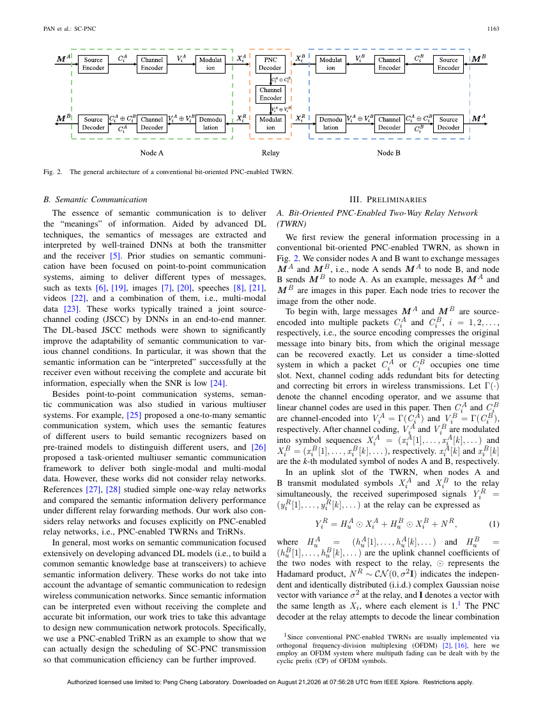</a><figcaption><b>架构/方法证据页</b>｜来源：《SC-PNC: Semantic Communication-Empowered Physical-Layer Network Coding》，PDF p.4；原图题/表题：The general architecture of a conventional bit-oriented PNC-enabled TWRN.。 <a href='https://doi.org/10.1109/tccn.2024.3375506'>核对论文</a></figcaption></figure><figure><a href='assets/2024_sc-pnc-semantic-communication-empowered-physical-layer-network-coding_result_p11.png' target='_blank'></a><figcaption><b>关键结果证据页</b>｜来源：《SC-PNC: Semantic Communication-Empowered Physical-Layer Network Coding》，PDF p.11；原图题/表题：PSNR performance of Conv-PNC, D-PNC, and our proposed SC-PNC TWRN under different SNRs when the relative phase offsets are (a) 0◦ , (b) 45◦ , and (c) 90◦ in AWGN channels, where SC-PNC TWRN transmits with a bandwidth ratio of ρsc = 1/3.。 <a href='https://doi.org/10.1109/tccn.2024.3375506'>核对论文</a></figcaption></figure></div>
</article>
<article class="paper" id="scan-semantic-communication-with-adaptive-channel-feedback" data-year="2024" data-tier="core">
  <div class="paper-head"><div><div><span class="tag core">核心纳入</span><span class="tag year">2024</span></div><h2>SCAN: Semantic Communication With Adaptive Channel Feedback</h2></div><a class="pdf" href="https://doi.org/10.1109/tccn.2024.3394867">DOI / IEEE 页面</a></div>
  <div class="facts"><div><b>作者</b>Guangyi Zhang、Qiyu Hu、Yunlong Cai、Guanding Yu</div><div><b>出版信息</b>Vol. 10, No. 5, pp. 1759-1773</div><div><b>DOI / IEEE ID</b><a href="https://doi.org/10.1109/tccn.2024.3394867">10.1109/tccn.2024.3394867</a> / 10510413</div><div><b>任务</b>通用/多模态语义通信</div><div><b>技术谱系</b>学习式语义 feature；数字接口需由正文具体实现判定</div><div><b>年份口径</b>formal TCCN volume year</div></div>
  <div class="verdict"><b>是否属于严格数字语义通信：</b>系统层相关；没有足够证据把它判为严格数字语义通信。</div>
  <h3>实验设置</h3><div class="grid3"><div><b>数据集/场景</b>CIFAR10</div><div><b>Baseline</b>DeepJSCC、HM、FEC、ARQ、GAN、VAE、VQ-VAE、PPO、SAC、DeepSC、ADJSCC、JSCC、IB、HARQ、BERT</div><div><b>指标与信道条件</b>PSNR、MSE、mAP、accuracy、NME、latency、energy、VoI、MOS、WER、CER<br><span class="muted">SNR：0 dB、0dB、12dB、16 dB、18 dB、24 dB、27 dB、30 dB、5 dB、6 dB、6dB、8 dB</span></div></div>
  <h3>Introduction 的六步讲述逻辑</h3><ol class='story'><li><b>已有进展：</b>ropriate resources, such as channel feedback bits CSI.</li><li><b>现有问题：</b>However, existing semantic communication systems CSI matrix in the sparse spatial-frequency domain.</li><li><b>为何重要：</b>Therefore, in this paper, we adopt an autoencoder structure consisting of an encoder and investigate the adaptive channel feedback design of image a decoder, which outperform the CS-based methods with semantic communication systems with MIMO to improve the a much-reduced computational complexity.</li><li><b>提出方案：</b>Based on the obser- be optimal in semantic communications since they have not vation that images with low reconstruction quality are less considered semantics of sources in the designs. robust when targeted to exceed the PSNR threshold,1 we develop a novel framework of Semantic Communication with Adaptive chaNnel feedback (SCAN) for image transmission B.</li><li><b>解决机制：</b>Motivation and Contributions to reduce SDOP thereby enhancing transmission reliability.</li><li><b>核心主张与证据目标：</b>Simulation results are define the following block-wise quadratic-distortion measure function for the source, 1  2 In our terminology, the term ‘codeword’ denotes the representation vector N obtained by the encoder.</li></ol>
  <h3>方法、变量与优化</h3><p><b>系统/信息流：</b>PDF p.1：gn effective with a longer CSI codeword to guarantee the reconstruction semantic encoding and decoding algorithms [4], [5], [6], quality. We perform extensive experiments to demonstrate that [7], [8], [9], [10], [11], [12], [13]; (ii) Investigate advanced the proposed scheme can significantly improve the reliability of physical layer modules for semantic communication [14], image transmission while greatly reducing the feedbac PDF p.1：s for semantic communication [14], image transmission while greatly reducing the feedback overhead. [15], [16], [17], [18], [19]. For the first issue, the transmitter Index Terms—Channel feedback, semantic communication, and receiver are regarded as a pair of encoder and decoder semantic distortion outage probability (SDOP), multiple-input consisting of DNNs, which are exploited to directly encode multiple-output (MIMO), wirel PDF p.1：ic communication [14], image transmission while greatly reducing the feedback overhead. [15], [16], [17], [18], [19]. For the first issue, the transmitter Index Terms—Channel feedback, semantic communication, and receiver are regarded as a pair of encoder and decoder semantic distortion outage probability (SDOP), multiple-input consisting of DNNs, which are exploited to directly encode multiple-output (MIMO), wireless image tr PDF p.1：rvices, such as the autonomous driving and the Internet of Everything [1], [2], [3], a fierce demand for transmission was first introduced in [4]. In contrast to tra- ditional image compression, which transforms images into bits, DJSCC employs a well-designed encoder to map pixel Manuscript received 30 September 2023; revised 9 February 2024 and values to complex-valued channel symbols. This innovative 15 April 2024; accepted</p><p><b>目标函数/联合训练证据：</b>PDF p.9：input precoding with Ĥ. image, the target can be formulated to minimize the SDOP (iv) The receiver reconstructs the image based on the received by choosing appropriate codeword length. In fact, this can be symbol vector ẑ. achieved by solving the following optimization problem, P1 : min B , (16a) C. Performance Analysis: Determining Allocation Strategy   s.t. D̂ s, H̄, B , σ 2 ≤ Dth , (16b) To show the relative performance PDF p.9：m ∈ S, (17d) distortion. We train the proposed models, including DeepSC- MIMO and performance evaluator before deployment. The where G(·) equals 1 when the condition is satisfied, and 0 communication process of the semantic-aware adaptive chan- otherwise. The objective function can be interpreted as the nel feedback scheme is shown in Fig. 6, and described as ratio of the images with a distortion above the threshold, follows.</p>
  <h3>数字化方案与传输开销</h3><p><b>传输表示证据：</b>PDF p.1：e regarded as a pair of encoder and decoder semantic distortion outage probability (SDOP), multiple-input consisting of DNNs, which are exploited to directly encode multiple-output (MIMO), wireless image transmission. the input data of different modalities to channel symbols at the transmitter and decode the received channel symbols at the receiver. Drawing inspiration from the success of I. I NTRODUCTION deep learning in imag PDF p.1：tion outage probability (SDOP), multiple-input consisting of DNNs, which are exploited to directly encode multiple-output (MIMO), wireless image transmission. the input data of different modalities to channel symbols at the transmitter and decode the received channel symbols at the receiver. Drawing inspiration from the success of I. I NTRODUCTION deep learning in image compression, the deep joint source RIVEN by the extensive PDF p.1：sion was first introduced in [4]. In contrast to tra- ditional image compression, which transforms images into bits, DJSCC employs a well-designed encoder to map pixel Manuscript received 30 September 2023; revised 9 February 2024 and values to complex-valued channel symbols. This innovative 15 April 2024; accepted 19 April 2024. Date of publication 29 April 2024; date of current version 8 October 2024. This work was sup- appr PDF p.2：ommendations overhead. To address this issue, many techniques have been in [31], it is proposed to incorporate an ancillary decision developed to reduce the overhead of channel feedback, such module into the semantic communication system. Positioned as vector quantization and codebook-based approaches [23]. at the transmitter, this module aims to determine the optimal Based on compressive sensing (CS), several algorithms have</p><p><b>调制/信道编码线索：</b>harq、ofdm</p><p><b>可复核开销与缺失信息：</b>输入/分辨率线索：32 × 32 × 3、96 × 96 ×3。feature/token/latent 尺寸线索：正文未给出可稳定自动定位的条目。码本线索：constellation design has been considered in [17、codebook-based approaches [23。bit/bpp/速率线索：正文未给出可稳定自动定位的条目。CBR/压缩率线索：compression ratios、bandwidth ratios (CBR) as ρ = K N、compression ratio of an image, since、channel bandwidth ratios (CBR)、CBR values、CBR SNR = − 12dB。该论文偏系统/理论层，正文未必给出可复核的 encoder feature map 与 payload 长度。</p><div class="formula">\[N_{tx}=N_{payload}+N_{side}+N_{protection};\quad \text{缺失项必须标记为未知}\]</div>
  <h3>信道处理机制</h3><div class="channel"><p><b>分类：</b>类别 5：信道/资源进入系统优化，但 payload 数字化接口不完整</p><p><b>正文信道证据：</b>PDF p.1：ation is expected to be explored. feedback (SCAN). It can reduce SDOP by adaptively adjusting the overhead of channel feedback for images with different reconstruction qualities, thereby enhancing transmission reliabil- A. Prior Work ity. To realize SCAN, we first develop a deep learning-enabled semantic communication system for multiple-input multiple- Recently, inspired by the success of deep learning, autoen- output (MIMO) PDF p.1：e at the transmitter by distilling knowledge from DeepSC-MIMO. In this way, images particular, the existing focuses of semantic communication can with lower predicted reconstruction quality will be allocated be mainly divided into two categories: (i) Design effective with a longer CSI codeword to guarantee the reconstruction semantic encoding and decoding algorithms [4], [5], [6], quality. We perform extensive experiments to d PDF p.1：], [13]; (ii) Investigate advanced the proposed scheme can significantly improve the reliability of physical layer modules for semantic communication [14], image transmission while greatly reducing the feedback overhead. [15], [16], [17], [18], [19]. For the first issue, the transmitter Index Terms—Channel feedback, semantic communication, and receiver are regarded as a pair of encoder and decoder semantic distortion outage pr PDF p.1：deep joint source RIVEN by the extensive deployment of various intel- and channel coding (JSCC) technique for wireless image D ligent services, such as the autonomous driving and the Internet of Everything [1], [2], [3], a fierce demand for transmission was first introduced in [4]. In contrast to tra- ditional image compression, which transforms images into bits, DJSCC employs a well-designed encoder to map pixel Manuscript re</p><p><b>decoder 实际收到：</b>由论文系统模型定义的语义 feature、任务状态或传统译码后数据</p><p><b>是否联合优化：</b>是/部分：目标或训练证据与物理信道同时出现。</p><p><b>是否真正处理 bit/index/token/packet error：</b>未形成可复核的 bit/index/token 错误闭环。</p></div>
  <h3>主要结果、局限与 Codex 判断</h3><p><b>证据化结果：</b>PDF p.1：EE, and Guanding Yu , Senior Member, IEEE Abstract—In existing semantic communication systems for transmitting massive amounts of information has sprung up. It image transmission, some images are generally reconstructed pushes industry and academia to further improve the transmis- with considerably low quality. As a result, the reliable transmis- sion efficiency. To this end, semantic communication, as a new sion of each image PDF p.1：allocated with more communication resources, we propose a novel on the semantic-aware physical layer communication design framework of Semantic Communication with Adaptive chaNnel for semantic communication is expected to be explored. feedback (SCAN). It can reduce SDOP by adaptively adjusting the overhead of channel feedback for images with different reconstruction qualities, thereby enhancing transmission reliabil- A. Prior PDF p.1：meterized by deep neural networks channel state information (CSI) and noise variance in the model (DNNs) have been used to implement semantic communica- design. We then develop a performance evaluator to predict tion systems, achieving significant performance gains [3]. In the reconstruction quality of each image at the transmitter by distilling knowledge from DeepSC-MIMO. In this way, images particular, the existing focuses o PDF p.1：eword to guarantee the reconstruction semantic encoding and decoding algorithms [4], [5], [6], quality. We perform extensive experiments to demonstrate that [7], [8], [9], [10], [11], [12], [13]; (ii) Investigate advanced the proposed scheme can significantly improve the reliability of physical layer modules for semantic communication [14], image transmission while greatly reducing the feedback overhead. [15], [16], [17], [18]</p><p><b>独立判断：</b>没有完整离散接口，无法直接回答 bit/index/token 跳变问题。 未显式注入离散误码/丢包，鲁棒性结论不应外推到真实数字链路。</p>
  <div class="figs"><figure><a href='assets/2024_scan-semantic-communication-with-adaptive-channel-feedback_method_p5.png' target='_blank'>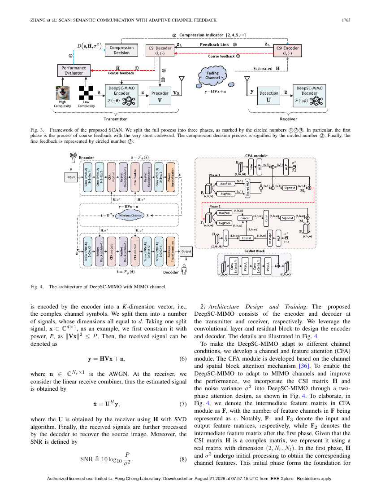</a><figcaption><b>架构/方法证据页</b>｜来源：《SCAN: Semantic Communication With Adaptive Channel Feedback》，PDF p.5；原图题/表题：The architecture of DeepSC-MIMO with MIMO channel.。 <a href='https://doi.org/10.1109/tccn.2024.3394867'>核对论文</a></figcaption></figure><figure><a href='assets/2024_scan-semantic-communication-with-adaptive-channel-feedback_result_p6.png' target='_blank'>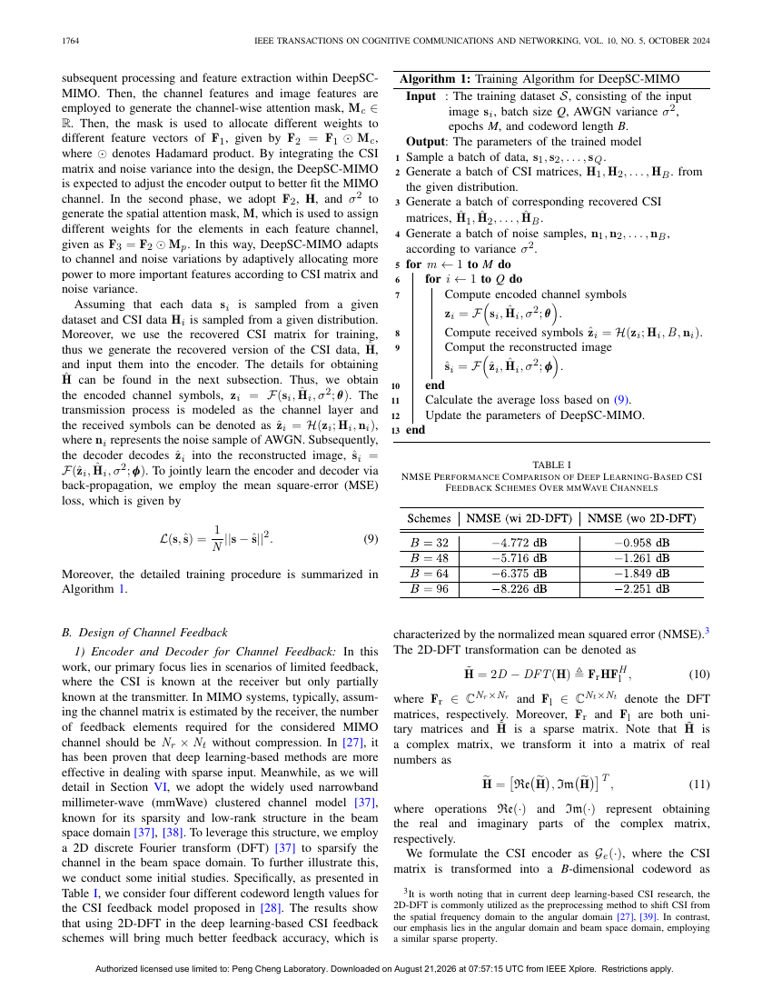</a><figcaption><b>关键结果证据页</b>｜来源：《SCAN: Semantic Communication With Adaptive Channel Feedback》，PDF p.6；原图题/表题：To elaborate, in x̂ = UH y, (7)。 <a href='https://doi.org/10.1109/tccn.2024.3394867'>核对论文</a></figcaption></figure></div>
</article>
<article class="paper" id="speech-semantic-communication-based-on-swin-transformer" data-year="2024" data-tier="core">
  <div class="paper-head"><div><div><span class="tag core">核心纳入</span><span class="tag year">2024</span></div><h2>Speech Semantic Communication Based on Swin Transformer</h2></div><a class="pdf" href="https://doi.org/10.1109/tccn.2023.3345858">DOI / IEEE 页面</a></div>
  <div class="facts"><div><b>作者</b>Ziliang Zhou、Shilian Zheng、Jie Chen、Zhijin Zhao、Xiaoniu Yang</div><div><b>出版信息</b>Vol. 10, No. 3, pp. 756-768</div><div><b>DOI / IEEE ID</b><a href="https://doi.org/10.1109/tccn.2023.3345858">10.1109/tccn.2023.3345858</a> / 10371327</div><div><b>任务</b>语音语义传输</div><div><b>技术谱系</b>学习式语义 feature；数字接口需由正文具体实现判定</div><div><b>年份口径</b>formal TCCN volume year</div></div>
  <div class="verdict"><b>是否属于严格数字语义通信：</b>系统层相关；没有足够证据把它判为严格数字语义通信。</div>
  <h3>实验设置</h3><div class="grid3"><div><b>数据集/场景</b>正文未给出可稳定自动定位的条目</div><div><b>Baseline</b>Turbo、QAM、HM、FEC、ARQ、Swin Transformer、ViT、GAN、ResNet、PPO、SAC、DeepSC、DeepSC-S、DeepSC-ST、IB、HARQ</div><div><b>指标与信道条件</b>FID、MSE、mAP、accuracy、NME、latency、FLOPs、VoI、MOS、WER、CER<br><span class="muted">SNR：1 dB、10 dB、12 dB、15 dB、3 dB、5 dB、6 dB、7 dB、8 dB、8dB</span></div></div>
  <h3>Introduction 的六步讲述逻辑</h3><ol class='story'><li><b>已有进展：</b>Therefore, compressing the achieved superior performance compared to traditional speech data volume of the image using neural networks at the recognition systems while transmitting less data.</li><li><b>现有问题：</b>In As the semantic communication technologies for single- summary, deep learning techniques have been successfully source data such as text and images continue to mature, applied in various aspects of speech-based semantic commu- researchers have begun to contemplate the integration nication, including speech-to-text conversion, semantic feature Authorized licensed use limited to: Peng Cheng Laboratory.</li><li><b>为何重要：</b>Therefore, compressing the achieved superior performance compared to traditional speech data volume of the image using neural networks at the recognition systems while transmitting less data.</li><li><b>提出方案：</b>In Section II, It aims to address the challenges associated with process- we introduce the system model and performance metrics of ing the large data volume of speech signals in real-time semantic communication.</li><li><b>解决机制：</b>In Section III, we introduce the communication systems, without the need for extensive pre- architecture of DeepSC-TS in detail.</li><li><b>核心主张与证据目标：</b>We denote conditions, resulting in the development of an outstanding the weight parameters of these two neural networks as α for model with excellent noise resilience.</li></ol>
  <h3>方法、变量与优化</h3><p><b>系统/信息流：</b>PDF p.1：to mitigate the channel environ- Ziliang Zhou, Jie Chen, and Zhijin Zhao are with the College ment’s interference with semantic information and maximize of Communication Engineering, Hangzhou Dianzi University, Hangzhou the accuracy of text restoration at the decoder. Xie et al. [5] 310018, China (e-mail: zlzhou1015@163.com; 211080032@hdu.edu.cn; zhaozj03@hdu.edu.cn). used neural networks to construct a mutual information esti PDF p.2：ansmitter. This system rather than symbol transmission. Therefore, compressing the achieved superior performance compared to traditional speech data volume of the image using neural networks at the recognition systems while transmitting less data. Speech sig- encoder is considered an effective means of extracting seman- nals contain rich information, and when transmitting long tic information [14], [15], [16]. This approach si PDF p.2：]. This approach significantly speech segments, extracting the textual semantic information reduces the data volume while maintaining transmission qual- can eliminate redundancy without compromising the quality ity. Bourtsoulatze et al. [17] parameterized the encoder and of speech transmission. Han et al. [26] utilized soft alignment decoder functions using two convolutional neural networks modules and redundancy removal modul PDF p.2：tic information reduces the data volume while maintaining transmission qual- can eliminate redundancy without compromising the quality ity. Bourtsoulatze et al. [17] parameterized the encoder and of speech transmission. Han et al. [26] utilized soft alignment decoder functions using two convolutional neural networks modules and redundancy removal modules to extract only (CNNs) that were jointly trained. This approach had achie</p><p><b>目标函数/联合训练证据：</b>PDF p.2：lity ity. Bourtsoulatze et al. [17] parameterized the encoder and of speech transmission. Han et al. [26] utilized soft alignment decoder functions using two convolutional neural networks modules and redundancy removal modules to extract only (CNNs) that were jointly trained. This approach had achieved text-related semantic features, significantly reducing semantic significant success in noise resistance. Ding et al. [18] redu PDF p.7：sembles the original signal, we aim for each sample point of deep features extracted after the Transformer-based Decoder, the reconstructed signal to be as close as possible to the orig- K FCONV (·) represents the 2D CNN operation. inal signal. Therefore, the loss function can be represented as Feature Fusion: After passing through the feature reex- 1  L(θ) = (ŝi,j ,k − si,j ,k )2 + ε2 , (18) tractor, both the shallow and d PDF p.7：nal, respectively. Meanwhile, i , j and k denote each temporal sample point F = FS +FDR , (15) within the samples. In this case, the small constant ε is set to where FS represents the shallow features, and FDR represents 0.001 to maintain the stability of the loss function’s values. (i) the deep features. Their a</p>
  <h3>数字化方案与传输开销</h3><p><b>传输表示证据：</b>PDF p.1：sing through the channel. This esti- Space Security, Jiaxing 314033, China (e-mail: lianshizheng@126.com; yxn2117@126.com). mator helps to build a complete deep semantic communication Digital Object Identifier 10.1109/TCCN.2023.3345858 system. Xie and Qin [9] quantized the encoded signals before 2332-7731  c 2023 IEEE. Personal use is permitted, but republication/redistribution requires IEEE permission. See https://www.ieee.o</p><p><b>调制/信道编码线索：</b>64-qam、harq、turbo</p><p><b>可复核开销与缺失信息：</b>输入/分辨率线索：401 × 109、072 × 109、128 × 128、128×32×32。feature/token/latent 尺寸线索：正文未给出可稳定自动定位的条目。码本线索：正文未给出可稳定自动定位的条目。bit/bpp/速率线索：8-bit、4-bit。CBR/压缩率线索：coding rate is poor overall performance。该论文偏系统/理论层，正文未必给出可复核的 encoder feature map 与 payload 长度。</p><div class="formula">\[N_{tx}=N_{payload}+N_{side}+N_{protection};\quad \text{缺失项必须标记为未知}\]</div>
  <h3>信道处理机制</h3><div class="channel"><p><b>分类：</b>类别 5：信道/资源进入系统优化，但 payload 数字化接口不完整</p><p><b>正文信道证据：</b>PDF p.1：e restoration of information of humans and machines. Shannon’s pioneering work [2] from a semantic perspective at the receiver. In this paper, we pro- pose an end-to-end speech semantic communication system based introduced three levels of communication. The first level is on Transformer, called DeepSC-TS. It focuses on reconstructing the technical level, which achieves precise transmission of and integrating multi-level infor PDF p.1：lled DeepSC-TS. It focuses on reconstructing the technical level, which achieves precise transmission of and integrating multi-level information from the transmitted bits by utilizing existing communication technologies. The semantic signal at the receiver, effectively eliminating semantic second level is the semantic level, which involves extracting signal noise while preserving the original semantic information. the semantic PDF p.1：mantic information. the semantic features of the target signal and transmitting them Moreover, it does not increase the data load of the original signal during transmission. Simulation results demonstrate that over a semantic channel. The third level is the effectiveness our proposed DeepSC-TS exhibits outstanding performance in level, which takes into account the impact of information on different channel environments and it PDF p.2：ic information retransmission iterations to promptly correct the number and is fused to perform intelligent question-answering tasks, accuracy of transmitted semantic symbols, thereby mitigat- with answer accuracy serving as a metric to evaluate the ing the effects of noise and interference. Furthermore, the performance of MU-DeepSC. As an extension of MU- knowledge graph shows potential in semantic communication DeepSC, a Tra</p><p><b>decoder 实际收到：</b>由论文系统模型定义的语义 feature、任务状态或传统译码后数据</p><p><b>是否联合优化：</b>是/部分：目标或训练证据与物理信道同时出现。</p><p><b>是否真正处理 bit/index/token/packet error：</b>未形成可复核的 bit/index/token 错误闭环。</p></div>
  <h3>主要结果、局限与 Codex 判断</h3><p><b>证据化结果：</b>PDF p.2：ata. Speech sig- encoder is considered an effective means of extracting seman- nals contain rich information, and when transmitting long tic information [14], [15], [16]. This approach significantly speech segments, extracting the textual semantic information reduces the data volume while maintaining transmission qual- can eliminate redundancy without compromising the quality ity. Bourtsoulatze et al. [17] parameterized the en PDF p.2：ication synthesis. As a result, the original task of speech trans- systems, specific systems can be designed for different tasks. mission is transformed into text transmission, which can For the problem of image retrieval over wireless channels, significantly reduce data transfer volume while ensuring the Jankowski et al. [19] introduced a compression scheme accuracy of speech reconstruction. Moreover, applying deep based on d PDF p.3：d the results show that while achieving excellent for real-time intelligent communication systems. Therefore, performance, the time complexity and storage complexity it is interesting and pursued to develop a high-performance of DeepSC-TS during inference are reduced by 48.5% semantic communication system similar to DeepSC-S [28] and 59.8% respectively compared with DeepSC-S. that directly takes the temporal signal of speech a PDF p.3：ms. Therefore, performance, the time complexity and storage complexity it is interesting and pursued to develop a high-performance of DeepSC-TS during inference are reduced by 48.5% semantic communication system similar to DeepSC-S [28] and 59.8% respectively compared with DeepSC-S. that directly takes the temporal signal of speech as input. The result of the paper is organized as follows. In Section II, It aims to address the</p><p><b>独立判断：</b>没有完整离散接口，无法直接回答 bit/index/token 跳变问题。 未显式注入离散误码/丢包，鲁棒性结论不应外推到真实数字链路。</p>
  <div class="figs"><figure><a href='assets/2024_speech-semantic-communication-based-on-swin-transformer_method_p4.png' target='_blank'></a><figcaption><b>架构/方法证据页</b>｜来源：《Speech Semantic Communication Based on Swin Transformer》，PDF p.4；原图题/表题：The overall structure of the proposed speech semantic communication system.。 <a href='https://doi.org/10.1109/tccn.2023.3345858'>核对论文</a></figcaption></figure><figure><a href='assets/2024_speech-semantic-communication-based-on-swin-transformer_result_p9.png' target='_blank'></a><figcaption><b>关键结果证据页</b>｜来源：《Speech Semantic Communication Based on Swin Transformer》，PDF p.9；原图题/表题：Performance of AWGN channel under different training SNR. (a) SDR metric, (b) PESQ metric, (c) MSE metric.。 <a href='https://doi.org/10.1109/tccn.2023.3345858'>核对论文</a></figcaption></figure></div>
</article>
<article class="paper" id="a-physical-layer-security-framework-for-irs-assisted-integrated-sensing-and-semantic-communi" data-year="2025" data-tier="core">
  <div class="paper-head"><div><div><span class="tag core">核心纳入</span><span class="tag year">2025</span></div><h2>A Physical Layer Security Framework for IRS-Assisted Integrated Sensing and Semantic Communication Systems</h2></div><a class="pdf" href="https://doi.org/10.1109/tccn.2025.3589577">DOI / IEEE 页面</a></div>
  <div class="facts"><div><b>作者</b>Hamid Amiriara、Mahtab Mirmohseni、Ahmed Elzanaty、Yi Ma、Rahim Tafazolli</div><div><b>出版信息</b>Vol. 11, No. 5, pp. 2955-2969</div><div><b>DOI / IEEE ID</b><a href="https://doi.org/10.1109/tccn.2025.3589577">10.1109/tccn.2025.3589577</a> / 11082318</div><div><b>任务</b>语义通信安全</div><div><b>技术谱系</b>连续 learned latent / channel symbol（DeepJSCC）</div><div><b>年份口径</b>formal TCCN volume year</div></div>
  <div class="verdict"><b>是否属于严格数字语义通信：</b>否（连续语义 JSCC）</div>
  <h3>实验设置</h3><div class="grid3"><div><b>数据集/场景</b>正文未给出可稳定自动定位的条目</div><div><b>Baseline</b>BPG、HM、FEC、ViT、GAN、PPO、SAC、DeepSC、ASC、IB、BERT</div><div><b>指标与信道条件</b>FID、mAP、accuracy、precision、NME、latency、energy、semantic similarity、VoI、MOS、WER、CER<br><span class="muted">SNR：120 dB、150 dB、2.5 dB、30 dB、5 dB、50 dB、7 dB、70 dB、9 dB</span></div></div>
  <h3>Introduction 的六步讲述逻辑</h3><ol class='story'><li><b>已有进展：</b>e simultaneously reducing the amount of communication information revealed to MSTs [12]. to both EVE and MST and achieve optimal security-aware Related Works: In Table I, we provide an overview of the ISASC for future wireless networks. literature related to secure ISAC, SC, and ISASC systems.</li><li><b>现有问题：</b>On Specifically, [24] has explored secure resource allocation the one hand, we review the use of key performance indicators within ISASC systems for the specific case of textual data. (KPIs) to evaluate sensing accuracy and communication confi- However, it neither provides a secure design against EVE, nor dentiality.</li><li><b>为何重要：</b>e simultaneously reducing the amount of communication information revealed to MSTs [12]. to both EVE and MST and achieve optimal security-aware Related Works: In Table I, we provide an overview of the ISASC for future wireless networks. literature related to secure ISAC, SC, and ISASC systems.</li><li><b>提出方案：</b>For communication confidentiality, standing of the interwoven sensing quality and communication beyond using SNR [11], [21] and signal-to-interference-plus- confidentiality in the IRS-assisted ISASC system, we propose noise ratio (SINR) [6], [8], [12], [15], [16], another line of a multi-objective optimization problem (MOOP) framework work has adopted the secrecy rate (SecR) as a fundamental that explicitly optimizes the trade-off between two conflicting metric to assess the effectiveness of PLS frameworks [3], [5], objectives: minimizing the CRB (for sensing accuracy) and [7], [9], [13], [14], [17], [18], [19].</li><li><b>解决机制：</b>In the semantic domain, maximizing the SSR (for secure communication), two KPIs semantic similarity (SS) [22] is employed, and similar to at the core of estimation theory and information theory.</li><li><b>核心主张与证据目标：</b>Simulation results are presented in effectively extract the underlying semantics of the transmitted Section IV.</li></ol>
  <h3>方法、变量与优化</h3><p><b>系统/信息流：</b>PDF p.3：nna SCUs while simultaneously monitoring an optimization, and semi-definite programming (SDP). MST, in the presence of a single-antenna EVE, with both • Through numerical simulations, we validate that the the MST and EVE attempting to wiretap information from proposed scheme achieves a larger trade-off region com- the SCUs’ signals. We assume that the direct links from pared to baseline schemes. the BS to the MST are obstructe PDF p.3：lex segments for k-th SCU, k ∈ K  {1, . . . , K }. The data matrix A, tr(A) denotes its trace, and A−1 represents its is then processed by the semantic transmitter, which serves inverse, respectively. The notation A  0 means that A as a joint source-channel encoder [25], and is mapped to a is a positive semi-definite matrix. The spaces of n × m semantic symbol vector xc,k = [xc,k (1), xc,k (2), . . . , xc,k (L)], real and co PDF p.6：m (P.1) is these two objectives. Unlike SOOPs, which focus on a reformulated as: single metric, MOOP can generate a diverse set of Pareto- optimal solutions that address both objectives effectively [36]. (P.2) : Minimize CRBθ (w, v), (25a) w,v Considering the system model of Section II, our goal is to develop an MOOP that simultaneously minimizes the CRB s.t. min SSRLB k (w, v) ≥ , (25b) k ∈K and maximizes the minimum SSR by PDF p.12：rforms both BL V (No-AN) and BL I (Single in a reduction of approximately 120 dB in CRB values. signal), highlighting the importance of each signal component. This demonstrates the substantial reflective BF gains afforded Compared to BL V, which omits AN, the proposed method by the IRS. Additionally, the performance gap between our achieves a lower CRB at the same SSR level, confirming proposed approach and BL IV becomes more</p><p><b>目标函数/联合训练证据：</b>PDF p.1：ion the semantic secrecy rate (SSR). To achieve an optimal trade-off (SC). This AI-driven joint source-channel coding paradigm between these two competing objectives, we formulate a multi- encodes and transmits only task-relevant features instead of objective optimization problem (MOOP) for the joint design full raw data. This leads to highly compressed representations, of the BS‘s beamforming (BF) vectors and the IRS‘s phase PDF p.2：ding of the interwoven sensing quality and communication beyond using SNR [11], [21] and signal-to-interference-plus- confidentiality in the IRS-assisted ISASC system, we propose noise ratio (SINR) [6], [8], [12], [15], [16], another line of a multi-objective optimization problem (MOOP) framework work has adopted the secrecy rate (SecR) as a fundamental that explicitly optimizes the trade-off between two conflicting metric to PDF p.6：To solve the MOOP, we employ the -constraint method by where rth denotes the maximum allowable information leak- transferring max-min SSR into a constraint, making the CRB age to the EVE’s link. By incorporating expressions (19) into minimization the primary objective function [37]. Notably, the constraints (26b)</p>
  <h3>数字化方案与传输开销</h3><p><b>传输表示证据：</b>连续 learned latent / channel symbol（DeepJSCC）</p><p><b>调制/信道编码线索：</b>未自动检出固定调制/信道编码名称</p><p><b>可复核开销与缺失信息：</b>输入/分辨率线索：正文未给出可稳定自动定位的条目。feature/token/latent 尺寸线索：正文未给出可稳定自动定位的条目。码本线索：正文未给出可稳定自动定位的条目。bit/bpp/速率线索：正文未给出可稳定自动定位的条目。CBR/压缩率线索：正文未给出可稳定自动定位的条目。连续 DeepJSCC 的主要预算是 channel uses/CBR；除非另加量化与调制，不能把每个 latent 当作固定 bit。</p><div class="formula">\[CBR=\frac{N_{complex\ channel\ symbols}}{N_{source\ samples}},\qquad R_{bit}\ \text{未定义（连续映射）}\]</div>
  <h3>信道处理机制</h3><div class="channel"><p><b>分类：</b>类别 3：连续 learned latent 直接通过有噪声信道</p><p><b>正文信道证据：</b>PDF p.1：IEEE TRANSACTIONS ON COGNITIVE COMMUNICATIONS AND NETWORKING, VOL. 11, NO. 5, OCTOBER 2025 2955 A Physical Layer Security Framework for IRS-Assisted Integrated Sensing and Semantic Communication Systems Hamid Amiriara , Mahtab Mirmohseni , Senior Member, IEEE, Ahmed Elzanaty , Senior Member, IEEE, Yi Ma , Senior Member, IEEE, and Rahim Tafazolli , Fellow, IEEE Abstract—In this paper, we propose a PDF p.1：i , Senior Member, IEEE, Ahmed Elzanaty , Senior Member, IEEE, Yi Ma , Senior Member, IEEE, and Rahim Tafazolli , Fellow, IEEE Abstract—In this paper, we propose a physical layer security I. I NTRODUCTION (PLS) framework for an intelligent reflecting surface (IRS)- MERGING applications such as connected cars and assisted integrated sensing and semantic communication (ISASC) system, where a multi-antenna dual-functional semanti PDF p.1：of an eavesdropper (EVE). Both MST and EVE and co-designing sensing, communication, and computational attempt to wiretap information from the signals transmitted tasks as fundamental services within a unified network archi- to the SCUs. The deployment of the IRS not only enhances PLS by directing a strong beam towards the SCUs, but also tecture will be crucial for meeting these demands in beyond improves the localization infor PDF p.1：ectives, we formulate a multi- encodes and transmits only task-relevant features instead of objective optimization problem (MOOP) for the joint design full raw data. This leads to highly compressed representations, of the BS‘s beamforming (BF) vectors and the IRS‘s phase shift vector. To tackle this MOOP problem, the -constraint alleviating bandwidth and latency limitations. In contrast, method is employed, followed by an alt</p><p><b>decoder 实际收到：</b>带噪连续 channel symbol / latent，经神经 decoder 恢复任务输出</p><p><b>是否联合优化：</b>是/部分：目标或训练证据与物理信道同时出现。</p><p><b>是否真正处理 bit/index/token/packet error：</b>不适用 VQ index/bit 跳变；论文处理的是连续扰动和信道失配。</p></div>
  <h3>主要结果、局限与 Codex 判断</h3><p><b>证据化结果：</b>PDF p.1：he signals transmitted tasks as fundamental services within a unified network archi- to the SCUs. The deployment of the IRS not only enhances PLS by directing a strong beam towards the SCUs, but also tecture will be crucial for meeting these demands in beyond improves the localization information for the target without 5G and 6G [2]. disclosing information about the SCUs. To further strengthen Integrated sensing and communicat PDF p.1：grated sensing and communication (ISAC), which com- PLS, we employ joint artificial noise (AN) and dedicated sensing bines sensing and communication functions, has emerged as a signal (DSS), in addition to wiretap coding. To evaluate sensing key technology to improve energy and hardware efficiency [3]. accuracy, we derive the Cramèr-Rao bound (CRB) for estimating the direction of arrival (DoA), and to assess the PLS level of C PDF p.1：raw data stream and applies separate source and channel convex approximation (SCA) and semidefinite relaxation (SDR) coding stages [4]. techniques. Simulation results demonstrate that the proposed This paper proposes an ISASC system that combines ISAC scheme outperforms the baseline schemes, achieving a superior trade-off between SSR and CRB. Specifically, our proposed and SC strengths to optimize both sensing accuracy and app PDF p.1：te that the proposed This paper proposes an ISASC system that combines ISAC scheme outperforms the baseline schemes, achieving a superior trade-off between SSR and CRB. Specifically, our proposed and SC strengths to optimize both sensing accuracy and approach improves the sensing accuracy by 5 dB compared to the data security, leveraging the mutual benefits from a co- commonly adopted maximal ratio transmission (MRT) approach.</p><p><b>独立判断：</b>没有完整离散接口，无法直接回答 bit/index/token 跳变问题。 未显式注入离散误码/丢包，鲁棒性结论不应外推到真实数字链路。 未报告统一可复核的 payload bit 数/CBR，跨论文带宽比较受限。</p>
  <div class="figs"><figure><a href='assets/2025_a-physical-layer-security-framework-for-irs-assisted-integrated-sensing-and-semantic-communi_method_p3.png' target='_blank'>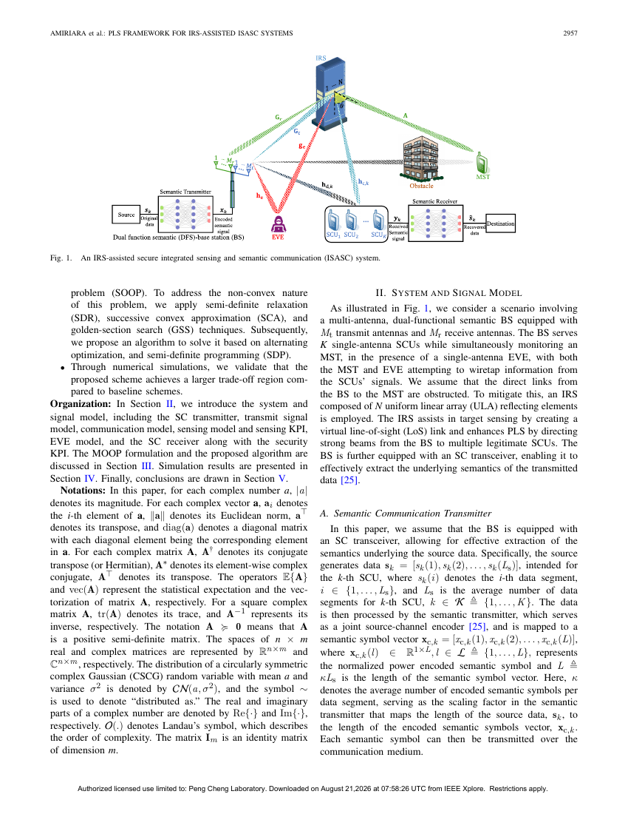</a><figcaption><b>架构/方法证据页</b>｜来源：《A Physical Layer Security Framework for IRS-Assisted Integrated Sensing and Semantic Communication Systems》，PDF p.3；原图题/表题：An IRS-assisted secure integrated sensing and semantic communication (ISASC) system.。 <a href='https://doi.org/10.1109/tccn.2025.3589577'>核对论文</a></figcaption></figure><figure><a href='assets/2025_a-physical-layer-security-framework-for-irs-assisted-integrated-sensing-and-semantic-communi_result_p4.png' target='_blank'></a><figcaption><b>关键结果证据页</b>｜来源：《A Physical Layer Security Framework for IRS-Assisted Integrated Sensing and Semantic Communication Systems》，PDF p.4；原图题/表题：An IRS-assisted secure integrated sensing and semantic communication (ISASC) system.。 <a href='https://doi.org/10.1109/tccn.2025.3589577'>核对论文</a></figcaption></figure></div>
</article>
<article class="paper" id="a-theory-for-semantic-channel-coding-with-many-to-one-source" data-year="2025" data-tier="core">
  <div class="paper-head"><div><div><span class="tag core">核心纳入</span><span class="tag year">2025</span></div><h2>A Theory for Semantic Channel Coding With Many-to-One Source</h2></div><a class="pdf" href="https://doi.org/10.1109/tccn.2025.3544275">DOI / IEEE 页面</a></div>
  <div class="facts"><div><b>作者</b>Shuai Ma、Chuanhui Zhang、Huayan Qi、Hang Li、Yue Bi、Guangming Shi、Naofal Al-Dhahir</div><div><b>出版信息</b>Vol. 11, No. 6, pp. 3618-3627</div><div><b>DOI / IEEE ID</b><a href="https://doi.org/10.1109/tccn.2025.3544275">10.1109/tccn.2025.3544275</a> / 10897796</div><div><b>任务</b>语义通信理论、度量或编码界</div><div><b>技术谱系</b>系统/理论层变量；论文未定义统一 payload bitstream</div><div><b>年份口径</b>formal TCCN volume year</div></div>
  <div class="verdict"><b>是否属于严格数字语义通信：</b>是或部分是：正文存在离散/量化接口；仍需检查它是否真的承受 bit/index error。</div>
  <h3>实验设置</h3><div class="grid3"><div><b>数据集/场景</b>DAVIS、CIFAR10、MNIST</div><div><b>Baseline</b>FEC、GAN、ResNet、YOLO、PPO、SAC、IB</div><div><b>指标与信道条件</b>mAP、accuracy、NME、energy、MOS、WER、CER<br><span class="muted">SNR：正文未给出可稳定自动定位的条目</span></div></div>
  <h3>Introduction 的六步讲述逻辑</h3><ol class='story'><li><b>已有进展：</b>mantic entropy was defined as the mini- entropy can be transformed into existing semantic entropy mum number of semantic queries for data query tasks [34]. definitions.</li><li><b>现有问题：</b>However, how of our proposed semantic entropy, and prove that with a to establish semantic channel capacity is still a challenge non-zero bit error rate, the accuracy of the classification issue, and some works tried to prove the achievability of the task is still high, which verifies the rationality of our semantic channel capacity.</li><li><b>为何重要：</b>Semantic interpretation S indicates the book” indicates paper notebook in stationery store and instruction that the mentioned student needs to also means computer in computer store.</li><li><b>提出方案：</b>We propose semantic entropy of the received signal by [38].</li><li><b>解决机制：</b>However, a definition of semantic entropy in Section II.</li><li><b>核心主张与证据目标：</b>Assume the probability of ui is shown in Table III.</li></ol>
  <h3>方法、变量与优化</h3><p><b>系统/信息流：</b>PDF p.4：ical data reconstruction semantic ing. The relationships among the random variables U, its communication system with fourier transform (FT) and inverse semantic interpretation S, and semantic knowledge K are fourier transform (IFT). Specifically, the semantic encoder and given as, decoder are designed by FT and IFT, respectively. Authorized licensed use limited to: Peng Cheng Laboratory. Downloaded on August 21,2026 at 07:58:5 PDF p.4：on semantic ing. The relationships among the random variables U, its communication system with fourier transform (FT) and inverse semantic interpretation S, and semantic knowledge K are fourier transform (IFT). Specifically, the semantic encoder and given as, decoder are designed by FT and IFT, respectively. Authorized licensed use limited to: Peng Cheng Laboratory. Downloaded on August 21,2026 at 07:58:53 UTC from IEEE Xplore PDF p.5：one” relations between U n and S n . a semantic message set [1:2αnR ] = {1, 2, . . . , 2αnR }, where the coefficient α determines the ratio of many to one, and lies in the range 0 ≤ α &lt; 1. Assume that the input signal is a single-frequency sine A semantic encoder assigns a codeword X n (m) to message wave, i.e., f (t) = sin Ω0 t, and the amount of information are W ∈ [1 : 2nR ], where m ∈ [1 : 2αnR ] is the index of the N PDF p.5：the number of discrete points in the time domain message set with the same semantic meaning. Furthermore, let may tend to be infinite, the value of N may tend to be infinite). Φm denote the subset of message W with the same semantic Via the FT-based semantic encoder, the frequency domain information, m ∈ [1 : 2αnR ], where Φm satisfies Φm ⊆  αnR expression of the input signal is given as, [1 : 2nR ], Φm ∩ Φl = ∅, ∀m = l and 2</p><p><b>目标函数/联合训练证据：</b>PDF p.8：AR10 N-classification task. 100 In order to verify the effectiveness of semantic entropy, 90 we first consider the semantic source coding, ignoring the 80 channel noise, that is, the DL-based encoder network and the 70 Accuracy(%) DL-based decoder network are jointly trained under the noise- 60 free channel condition. 50 Fig. 4 shows the relationship between receiver inference 40 accuracy performance and modulation order M-PSK</p>
  <h3>数字化方案与传输开销</h3><p><b>传输表示证据：</b>PDF p.5：n |u n ) = 1 for all u n ∈ Us , where Us denotes the set of source sequences has the same semantic meaning s n . Define a message W ∈ [1 : 2n H(U ) ] with a “one-to-one” correspondence to the source U. The semantic transmitter wishes to reliably transmit the latent semantic information S within the message W at a rate R bits per transmission to the semantic receiver over a noisy physical channel. Fig. 1. A semantic communicati PDF p.6：age probability of error Pe,s that where λm is the conditional probability of semantic error tends to zero as n → ∞. given semantic index m was sent. Equation (14d) holds due Conversely, for every sequence of (2nR , n) codes with to the symmetry of the random codebook generation. (n) probability of error Pe,s that tends to zero as n → ∞, the The decoder makes an error if one or both of the following I (X ;Y ) events occur: rat PDF p.6： Semantic source: Given a source message W ∈ [1 : 2nR ]. ≤ ε+ P (Em ) (15c) Let S represent the inherent semantic information of W. Let m=1  fs : [1 : 2nR ] → [1 : 2αnR ] represent the semantic mapping ≤ ε+ 2−n(I (X ;Y )−3ε) (15d) from W to S. m=1 Random codebook generation: By applying random cod-  ing, we randomly and independently generate 2nRs sequences = ε + 2nRs − 1 2−n(I (X ;Y )−3ε) (15e) n x n (m), each according PDF p.6：ration: By applying random cod-  ing, we randomly and independently generate 2nRs sequences = ε + 2nRs − 1 2−n(I (X ;Y )−3ε) (15e) n x n (m), each according to p(x n ) = i=1 pX (xi ). The ≤ ε + 23nε 2−n(I (X ;Y )−Rs ) (15f) generated sequences constitute the codebook C = [1 : 2nRs ] as follows ≤ 2ε, (15g) 2nRs n where inequality (15b) holds due to the probabilities of union p(C) = pX (xi (m)). (12) events bound, inequality (1</p><p><b>调制/信道编码线索：</b>未自动检出固定调制/信道编码名称</p><p><b>可复核开销与缺失信息：</b>输入/分辨率线索：正文未给出可稳定自动定位的条目。feature/token/latent 尺寸线索：正文未给出可稳定自动定位的条目。码本线索：codebook C = [1。bit/bpp/速率线索：1.5bits、10bits、6272 bits、2 bits、6272bits、6 bit、10bit。CBR/压缩率线索：compression ratio、compression ratios, but the specific measure of semantic、compression ratio of semantic encod- nication) Consider a typical data reconstruction seman。数字 token/bitstream 需把 payload、header、FEC 与重传一并计入；论文只报 CBR/SNR 时不能反推唯一净 bit 数。</p><div class="formula">\[N_{tx}=N_{unit}b_{unit}+N_{header}+N_{FEC},\qquad CBR=\frac{N_{channel\ uses}}{N_{source\ samples}}\]</div>
  <h3>信道处理机制</h3><div class="channel"><p><b>分类：</b>类别 4/5：离散错误或重传被显式建模，并与语义目标发生耦合</p><p><b>正文信道证据：</b>PDF p.1：ption is huge [9], under given conditions. Moreover, different from traditional communications, semantic communications can achieve accurate and high-quality spectrum resources are scarce [10], [11], [12]. transmission of semantic information under a non-zero bit error To meet the development needs of future sixth generation rate. Based on this property, we derive a semantic channel coding communications (6G), there is an urge PDF p.1：the same improve communication efficiency and transmission capacity. meaning), and prove its achievability and converse based on a generalized Fano’s inequality. Finally, numerical results verify Semantic communications [13], [14], [15] extract semantic the effectiveness of the proposed semantic entropy and semantic features from raw data, then encode and transmit semantic channel coding theorem. information, which are expecte PDF p.1：d? CCORDING to the classic information theory established A by Claude Shannon in 1948 [1], communication systems advances are made by exploring new spectrum utilization • Semantic level: How precisely do the transmitted symbols convey the desired meaning? • Effectiveness level: How effectively does the received Received 20 November 2024; revised 14 January 2025; accepted 17 meaning affect conduct in the desired way? February 2 PDF p.1：c information theory established A by Claude Shannon in 1948 [1], communication systems advances are made by exploring new spectrum utilization • Semantic level: How precisely do the transmitted symbols convey the desired meaning? • Effectiveness level: How effectively does the received Received 20 November 2024; revised 14 January 2025; accepted 17 meaning affect conduct in the desired way? February 2025. Date of publication</p><p><b>decoder 实际收到：</b>非零 bit error rate 下的 many-to-one 语义信道输出（理论模型）</p><p><b>是否联合优化：</b>是/部分：目标或训练证据与物理信道同时出现。</p><p><b>是否真正处理 bit/index/token/packet error：</b>是（理论层）：语义信道编码定理显式允许非零 BER，并分析多个源序列对应同一语义时的可达性；不提供神经 index 恢复器。</p></div>
  <h3>主要结果、局限与 Codex 判断</h3><p><b>证据化结果：</b>PDF p.1：e a semantic channel coding communications (6G), there is an urgent need for new theorem for a typical semantic communication with many-to- information representation space and degrees of freedom to one source (i.e., multiple source sequences express the same improve communication efficiency and transmission capacity. meaning), and prove its achievability and converse based on a generalized Fano’s inequality. Finally, numerica PDF p.1：vel: How effectively does the received Received 20 November 2024; revised 14 January 2025; accepted 17 meaning affect conduct in the desired way? February 2025. Date of publication 20 February 2025; date of current version Essentially, semantic communications reduce communication 10 December 2025. The work of Shuai Ma was supported in part by the National Natural Science Foundation of Chian (NSFC) under Grant 62471270, resourc PDF p.3：ds Since the semantic information of U relies on the distribu- on the value of U and knowledge base K. Furthermore, the tion p(s), the proposed discrete semantic entropy Hs (U ) of U probability mass function of the semantic interpretation S is may be higher, lower than or equal to Shannon entropy H(U). given as,  B. Differential Semantic Entropy p(s) = pK (s|u)p(u), (1) Let S denote the semantic random variable of the symbol PDF p.4：given the knowledge variable K, T HE T RANSITION P ROBABILITY F ROM U TO S equaling to the semantic entropy H(S) if S and K are independent; H(U| K,S.) represents the remaining information after extracting K,S. Furthermore, let Gs denote semantic compression gain, i.e., the ratio between Shannon entropy and semantic entropy of the data, w.t, H (U ) Gs = . (7) Hs (U ) Thus, the amount of transmission will be decreased with the</p><p><b>独立判断：</b>主要局限取决于训练/测试分布、信道假设和系统开销是否完整公开。</p>
  <div class="figs"><figure><a href='assets/2025_a-theory-for-semantic-channel-coding-with-many-to-one-source_method_p7.png' target='_blank'></a><figcaption><b>架构/方法证据页</b>｜来源：《A Theory for Semantic Channel Coding With Many-to-One Source》，PDF p.7；原图题/表题：A task-oriented semantic communication system.。 <a href='https://doi.org/10.1109/tccn.2025.3544275'>核对论文</a></figcaption></figure><figure><a href='assets/2025_a-theory-for-semantic-channel-coding-with-many-to-one-source_result_p8.png' target='_blank'></a><figcaption><b>关键结果证据页</b>｜来源：《A Theory for Semantic Channel Coding With Many-to-One Source》，PDF p.8；原图题/表题：Performance of the MNIST N-classification task.。 <a href='https://doi.org/10.1109/tccn.2025.3544275'>核对论文</a></figcaption></figure></div>
</article>
<article class="paper" id="adversarial-attacks-against-shared-knowledge-interpretation-in-semantic-communications" data-year="2025" data-tier="core">
  <div class="paper-head"><div><div><span class="tag core">核心纳入</span><span class="tag year">2025</span></div><h2>Adversarial Attacks Against Shared Knowledge Interpretation in Semantic Communications</h2></div><a class="pdf" href="https://doi.org/10.1109/tccn.2025.3528891">DOI / IEEE 页面</a></div>
  <div class="facts"><div><b>作者</b>Van-Tam Hoang、Van-Linh Nguyen、Rong-Guey Chang、Po-Ching Lin、Ren-Hung Hwang、Trung Q. Duong</div><div><b>出版信息</b>Vol. 11, No. 2, pp. 1024-1040</div><div><b>DOI / IEEE ID</b><a href="https://doi.org/10.1109/tccn.2025.3528891">10.1109/tccn.2025.3528891</a> / 10839056</div><div><b>任务</b>语义通信安全</div><div><b>技术谱系</b>学习式语义 feature；数字接口需由正文具体实现判定</div><div><b>年份口径</b>formal TCCN volume year</div></div>
  <div class="verdict"><b>是否属于严格数字语义通信：</b>系统层相关；没有足够证据把它判为严格数字语义通信。</div>
  <h3>实验设置</h3><div class="grid3"><div><b>数据集/场景</b>正文未给出可稳定自动定位的条目</div><div><b>Baseline</b>Polar、HM、FEC、ViT、GAN、VAE、ResNet、PPO、SAC、ASC、IB、GPT、CLIP</div><div><b>指标与信道条件</b>FID、MSE、mAP、accuracy、NME、latency、FLOPs、VoI、MOS、WER、CER<br><span class="muted">SNR：0 dB、0dB、12 dB、16 dB、19dB、2 dB、20dB、4 dB、6 dB、8 dB、8dB</span></div></div>
  <h3>Introduction 的六步讲述逻辑</h3><ol class='story'><li><b>已有进展：</b>Based on this analysis, we briefly communication process is to transmit semantics from the describe the defense mechanisms against adversarial transmitter to the receiver through multiple path channels. speech attacks.</li><li><b>现有问题：</b>For semantics, the encod- The remainder of the study is organized as follows. ing/decoding process is vulnerable to adversarial attacks in Section II discusses the related works.</li><li><b>为何重要：</b>For example, that are important for the intended transmission tasks and the study in [14] presented the semantic error minimization penetrates the efficiency of several perturbation patterns in process by merging semantic inference and the physical various transmission contexts, e.g., line-of-sight (LoS) and layer on both the transmitter and receiver.</li><li><b>提出方案：</b>Semantic communications (SEMCOM) is a novel I.</li><li><b>解决机制：</b>I NTRODUCTION communication model that exploits neural networks or deep EMANTIC communications is one of the emerging learning techniques to convey the semantics of the data and contextual reasoning, instead of transmitting full raw bits as in the conventional transmission models.</li><li><b>核心主张与证据目标：</b>Several attack tech- aforementioned studies are specified for adversarial attacks niques in emerging communication techniques, such as 6G and against semantic communications with personalized contexts, THz have also been studied and show promising results [37]. let alone exploit various characteristics of the wireless chan- However, evaluating semantic quality in various channel mod- nels to directly impact the semantic quality. els (e.g., AWGN channel) in semantic communication systems has still not been considered, especially in intelligent speech recognition services or 6G-related semantic applications.</li></ol>
  <h3>方法、变量与优化</h3><p><b>系统/信息流：</b>PDF p.2：ly, compared to non-targeted attacks. 3) This study also provides a comprehensive evaluation regarding the semantic interpretation that changes the semantic quality before and after the attack on the quality. As illustrated in Fig. 1, the ultimate goal of the proposed system. Based on this analysis, we briefly communication process is to transmit semantics from the describe the defense mechanisms against adversarial transmitte PDF p.2：ncod- The remainder of the study is organized as follows. ing/decoding process is vulnerable to adversarial attacks in Section II discusses the related works. Section III describes the several ways, e.g., knowledge store poisoning and channel- proposed SEMCOM system model. Section IV presents the aware adversarial attacks [10], [11]. Adversaries can alter the proposed physical-layer adversarial attack process. Sections V input PDF p.2：ic-targeted and non-targeted adversar- text, signals with speech, and symbols of orthogonal frequency ial attacks on wireless channels, respectively. Section VII division multiplexing (OFDM) to the deep neural networks evaluates the attack performance for the proposed system. (DNNs)-based semantic communications. These outputs will Section VIII concludes the paper. be reconstructed at the receiver, which includes both original PDF p.2：Semantic Communication Systems and This study presents novel physical-layer adversarial attacks Preliminary Studies of Adversarial Attacks against semantic communications through wireless channels. There are several studies on semantic communications and The proposed method selectively transmits semantic features their security vulnerabilities in the literature. For example, that are important for the intended transmission tas</p><p><b>目标函数/联合训练证据：</b>PDF p.1：eted certain amount of power. attacks. We also suggest two potential defense methods against The third transmission model represents a novel approach these physical layer attacks. Accordingly, enhancing adversarial training and removing residual values in the loss function are that exploits context extraction through natural language pro- straightforward solutions to improve the resilience of SEMCOM- cessing techniques and gen PDF p.6：ard for of the channel/semantic decoder, as well as the cleanliness humans to detect. The perturbation generation process mainly of the input voice data. The update process always depends relies on the adversarial perturbations φk for the signal, which on the loss function during training. This also means that our is computed by speech signal characteristics between x and x in Equation (4) are also evaluated via mean-squared e PDF p.6：epends relies on the adversarial perturbations φk for the signal, which on the loss function during training. This also means that our is computed by speech signal characteristics between x and x in Equation (4) are also evaluated via mean-squared error (MSE) loss function arg minφk 22 φk Lmse [3]. In detail, t</p>
  <h3>数字化方案与传输开销</h3><p><b>传输表示证据：</b>PDF p.15：mantic communications,” IEEE J. Sel. Areas Commun., vol. 40, no. 9, pp. 2584–2597, Sep. 2022. [5] R. Sun et al., “From sora what we can see: A survey of text-to-video generation,” 2024, arXiv:2405.10674. [6] S. Zhao et al., “CV-VAE: A compatible video VAE for latent generative video models,” 2024, arXiv:2405.20279. [7] D. Huang, X. Tao, F. Gao, and J. Lu, “Deep learning-based image semantic coding for semantic communications,”</p><p><b>调制/信道编码线索：</b>ofdm</p><p><b>可复核开销与缺失信息：</b>输入/分辨率线索：正文未给出可稳定自动定位的条目。feature/token/latent 尺寸线索：正文未给出可稳定自动定位的条目。码本线索：正文未给出可稳定自动定位的条目。bit/bpp/速率线索：正文未给出可稳定自动定位的条目。CBR/压缩率线索：正文未给出可稳定自动定位的条目。该论文偏系统/理论层，正文未必给出可复核的 encoder feature map 与 payload 长度。</p><div class="formula">\[N_{tx}=N_{payload}+N_{side}+N_{protection};\quad \text{缺失项必须标记为未知}\]</div>
  <h3>信道处理机制</h3><div class="channel"><p><b>分类：</b>类别 5：信道/资源进入系统优化，但 payload 数字化接口不完整</p><p><b>正文信道证据：</b>PDF p.1：l reasoning, instead of transmitting full raw bits as in the conventional transmission models. SEMCOM is anticipated S technologies for addressing extremely high bandwidth demands from ultra high-definition (UHD) or 4K/8K reso- to significantly increase the effectiveness of cognitive communica- lution video services and holographic content providers in tions beyond the Shannon theory limit, especially in multimedia the sixth-g PDF p.1：e power to enable new cognitive communications where context attacks are designed to cause maximum disruption to the signals ‘updates’ or new knowledge on the situation are transmitted during decoding, aiming to alter the semantic interpretation only. In the first and second transmission models, the data of recognition models at the receiver. The experimental results bits are sent across wired or wireless channels for transfer PDF p.1：w knowledge on the situation are transmitted during decoding, aiming to alter the semantic interpretation only. In the first and second transmission models, the data of recognition models at the receiver. The experimental results bits are sent across wired or wireless channels for transfer indicate that attacks can significantly degrade the perceptual to the recipients. The maximum rate of a wireless channel is evaluation of s PDF p.1：transmission models, the data of recognition models at the receiver. The experimental results bits are sent across wired or wireless channels for transfer indicate that attacks can significantly degrade the perceptual to the recipients. The maximum rate of a wireless channel is evaluation of speech quality and increase data errors, with frequently influenced by physical channel parameters such as semantic decoding performance</p><p><b>decoder 实际收到：</b>由论文系统模型定义的语义 feature、任务状态或传统译码后数据</p><p><b>是否联合优化：</b>是/部分：目标或训练证据与物理信道同时出现。</p><p><b>是否真正处理 bit/index/token/packet error：</b>未形成可复核的 bit/index/token 错误闭环。</p></div>
  <h3>主要结果、局限与 Codex 判断</h3><p><b>证据化结果：</b>PDF p.1：1024 IEEE TRANSACTIONS ON COGNITIVE COMMUNICATIONS AND NETWORKING, VOL. 11, NO. 2, APRIL 2025 Adversarial Attacks Against Shared Knowledge Interpretation in Semantic Communications Van-Tam Hoang, Van-Linh Nguyen , Senior Member, IEEE, Rong-Guey Chang, Po-Ching Lin , Member, IEEE, Ren-Hung Hwang , Senior Member, IEEE, and Trung Q. Duong , Fellow, IEEE Abstract—Semantic communic PDF p.1：ncryption and coding techniques to compress data and use existing commu- the vulnerabilities of neural network models. This paper presents nication channels; (3) exploring artificial intelligence (AI)’s two novel targeted and non-targeted adversarial attacks against SEMCOM, e.g., channel inversion attack and naive attack. The power to enable new cognitive communications where context attacks are designed to cause maximum disru PDF p.1：significantly degrade the perceptual to the recipients. The maximum rate of a wireless channel is evaluation of speech quality and increase data errors, with frequently influenced by physical channel parameters such as semantic decoding performance suffering reductions of up to 2.9 times and 2.3 times, respectively. This degradation can channel bandwidth, carrier frequency, and fading/noise. The cause misrepresentation of sema PDF p.1：tacks have a greater impact on speech semantic quality in restriction on the quantity of data sent by a signal with a complex communication circumstances compared to non-targeted certain amount of power. attacks. We also suggest two potential defense methods against The third transmission model represents a novel approach these physical layer attacks. Accordingly, enhancing adversarial training and removing residual values in</p><p><b>独立判断：</b>没有完整离散接口，无法直接回答 bit/index/token 跳变问题。 未显式注入离散误码/丢包，鲁棒性结论不应外推到真实数字链路。 未报告统一可复核的 payload bit 数/CBR，跨论文带宽比较受限。</p>
  <div class="figs"><figure><a href='assets/2025_adversarial-attacks-against-shared-knowledge-interpretation-in-semantic-communications_method_p4.png' target='_blank'>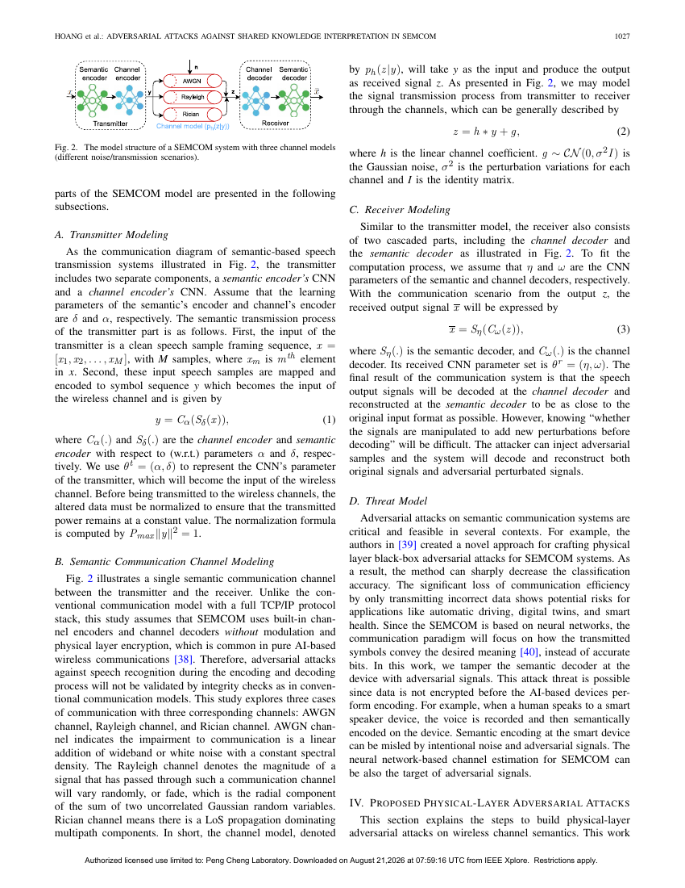</a><figcaption><b>架构/方法证据页</b>｜来源：《Adversarial Attacks Against Shared Knowledge Interpretation in Semantic Communications》，PDF p.4；原图题/表题：To fit the transmission systems illustrated in。 <a href='https://doi.org/10.1109/tccn.2025.3528891'>核对论文</a></figcaption></figure><figure><a href='assets/2025_adversarial-attacks-against-shared-knowledge-interpretation-in-semantic-communications_result_p5.png' target='_blank'></a><figcaption><b>关键结果证据页</b>｜来源：《Adversarial Attacks Against Shared Knowledge Interpretation in Semantic Communications》，PDF p.5；原图题/表题：To fit the transmission systems illustrated in。 <a href='https://doi.org/10.1109/tccn.2025.3528891'>核对论文</a></figcaption></figure></div>
</article>
<article class="paper" id="conceptual-learning-and-causal-reasoning-for-semantic-communication" data-year="2025" data-tier="core">
  <div class="paper-head"><div><div><span class="tag core">核心纳入</span><span class="tag year">2025</span></div><h2>Conceptual Learning and Causal Reasoning for Semantic Communication</h2></div><a class="pdf" href="https://doi.org/10.1109/tccn.2025.3543834">DOI / IEEE 页面</a></div>
  <div class="facts"><div><b>作者</b>Dylan Wheeler、Balasubramaniam Natarajan</div><div><b>出版信息</b>Vol. 11, No. 6, pp. 3669-3683</div><div><b>DOI / IEEE ID</b><a href="https://doi.org/10.1109/tccn.2025.3543834">10.1109/tccn.2025.3543834</a> / 10896765</div><div><b>任务</b>通用/多模态语义通信</div><div><b>技术谱系</b>学习式语义 feature；数字接口需由正文具体实现判定</div><div><b>年份口径</b>formal TCCN volume year</div></div>
  <div class="verdict"><b>是否属于严格数字语义通信：</b>系统层相关；没有足够证据把它判为严格数字语义通信。</div>
  <h3>实验设置</h3><div class="grid3"><div><b>数据集/场景</b>CLIC</div><div><b>Baseline</b>QAM、HM、FEC、ViT、VAE、VQ-VAE、PPO、SAC、IB、BERT、GPT</div><div><b>指标与信道条件</b>FID、mAP、accuracy、recall、semantic similarity、MOS、WER、CER<br><span class="muted">SNR：20dB</span></div></div>
  <h3>Introduction 的六步讲述逻辑</h3><ol class='story'><li><b>已有进展：</b>to do-calculus is beyond the scope of this paper, common cause of both zi and uj .</li><li><b>现有问题：</b>After the semantic Authorized licensed use limited to: Peng Cheng Laboratory.</li><li><b>为何重要：</b>The first two tasks correspond directly to two domains recovered representation ẑR to an estimate û of the true task in the learned CS, and thus provide instances in which we have variable u. a reasonable idea of the true causal structure of the data with We propose the use of a DNN model to handle the task which we can compare.</li><li><b>提出方案：</b>The first two tasks correspond directly to two domains recovered representation ẑR to an estimate û of the true task in the learned CS, and thus provide instances in which we have variable u. a reasonable idea of the true causal structure of the data with We propose the use of a DNN model to handle the task which we can compare.</li><li><b>解决机制：</b>The third task does not possess this of the semantic decoder.</li><li><b>核心主张与证据目标：</b>This system imple- simulating the transmission of zR through a communication ments a classifier model at the transmitter and sends the channel, resulting in data-label pairs {ẑR , u}.</li></ol>
  <h3>方法、变量与优化</h3><p><b>系统/信息流：</b>PDF p.1：the use of SemCom can lead to a dramatic challenges, in this paper, we present two major innovations for semantic communications with conceptual spaces. First, we reduction in communicated symbols while maintaining the introduce the use of the variational autoencoder as well as the desired performance [5]. p-Wasserstein distance metric from optimal transport theory While SemCom holds great potential for improving future for le PDF p.1：of the SCCS approach is HE WORLD of wireless communications is no stranger T to rapid technological change. Now more than ever, this change is occurring at an accelerated pace. With the advent obtaining the CS itself. In our previous work, we proposed an autoencoder (AE)-based framework for learning the domains of a CS [10]. Humans’ perception of meaning is often influ- of powerful language models [1], general interest and ove PDF p.2：an be intractable. To address this, we use the causal relationships between these semantic variables previously put forth an AE-based framework for learning the and some task variables to improve the communication pro- domains of a CS [10]. We showed that the proposed framework cess. Our approach differs from that of [30], [31] in that is capable of learning interpretable dimensions and semanti- we explicitly model causal rela PDF p.2：. We showed that the proposed framework cess. Our approach differs from that of [30], [31] in that is capable of learning interpretable dimensions and semanti- we explicitly model causal relationships between semantic cally consistent properties. However, the proposed framework variables and task variables, rather than causal relationships required a hand-tuned heuristic regularization function, which between observed system s</p><p><b>目标函数/联合训练证据：</b>PDF p.2：ering the original data, while others [23], [25] innovate on the AE-based framework for learning the domains use a task to guide training. In contrast, we include a semantic of a CS, as well as propose a novel reasoning module which regularization term in the loss function used to train the VAE is integrated into the SemCom system in order to leverage Authorized licensed use limited to: Peng Cheng Laboratory. Downloaded on Aug PDF p.3：s well as the Wasserstein p-distance for improved quality building block of a CS is a quality dimension. and incorporation of prior domain knowledge. These changes Definition 1 (Quality Dimension): A quality dimension is a impact both the architecture and the loss function of the set of scalar values quantifying some quality of an idea or domain learning framework. We refer the reader to [10, Fig. 2] object. We denote a qualit PDF p.3：e and the loss function of the set of scalar values quantifying some quality of an idea or domain learning framework. We refer the reader to [10, Fig. 2] object. We denote a quality dimension by Q, where specific for an overview of the architecture, while the loss function is given by [10, eq. (6)] 1 The word “ob</p>
  <h3>数字化方案与传输开销</h3><p><b>传输表示证据：</b>PDF p.2：c problems, such as joint source-channel coding [22], obtaining variables and downstream task variables to achieve higher- compact and sufficient features for reinforcement learning with level intelligence in SemCom. SemCom [23], and for mapping to a discrete codebook for SemCom [24]. Our approach differs from previous works in the way that the VAE is trained to learn the semantics of the B. Contributions data. Some approaches PDF p.4：re Θ and Φ denote the parameters of the decoder and Fig. 2. Proposed domain learning framework. encoder, respectively. In a VAE, the decoder is considered as a parametric model used to approximate the distribution of the observed data where conditioned on the latent variable pΘ (x | z). Conversely, 1  M the encoder captures the conditional distribution of the latent r (x, x̂) = (xm − x̂m )2 (2) variables on the observed vari PDF p.4：, respectively. In a VAE, the decoder is considered as a parametric model used to approximate the distribution of the observed data where conditioned on the latent variable pΘ (x | z). Conversely, 1  M the encoder captures the conditional distribution of the latent r (x, x̂) = (xm − x̂m )2 (2) variables on the observed variables qΦ (z | x). The process of M m=1 obtaining a prediction is given by  J c (c, ĉ) = − cj log(ĉj PDF p.4：dicted probability vector (8) over the set of possible properties, and d denotes a semantic distance vector used for regularization. where log denotes the natural logarithm and p(z) is the There are some drawbacks to the domain learning approach assumed prior latent distribution, typically N(0, I). of [10]. First, d is a heuristic regularization term with its own Our proposed VAE-based architecture is shown in Fig. 2. hyperpa</p><p><b>调制/信道编码线索：</b>16-qam、bpsk</p><p><b>可复核开销与缺失信息：</b>输入/分辨率线索：64x64x3。feature/token/latent 尺寸线索：正文未给出可稳定自动定位的条目。码本线索：正文未给出可稳定自动定位的条目。bit/bpp/速率线索：8-bit、16 bits。CBR/压缩率线索：正文未给出可稳定自动定位的条目。该论文偏系统/理论层，正文未必给出可复核的 encoder feature map 与 payload 长度。</p><div class="formula">\[N_{tx}=N_{payload}+N_{side}+N_{protection};\quad \text{缺失项必须标记为未知}\]</div>
  <h3>信道处理机制</h3><div class="channel"><p><b>分类：</b>类别 5：信道/资源进入系统优化，但 payload 数字化接口不完整</p><p><b>正文信道证据：</b>PDF p.1：ta is large, e.g., image key to unlocking this higher-level intelligence. To address these or video data, the use of SemCom can lead to a dramatic challenges, in this paper, we present two major innovations for semantic communications with conceptual spaces. First, we reduction in communicated symbols while maintaining the introduce the use of the variational autoencoder as well as the desired performance [5]. p-Wasserstein di PDF p.1：its practical implementation. One allow for greater control, and experiments on a sample dataset challenge is a lack of standard metrics for evaluating SemCom show that they additionally improve the quality of the learned domains. Second, we present for the first time, a mechanism for systems [6]. This problem stems from a more fundamental carrying out causal reasoning over semantic information modeled challenge, that is, ther PDF p.1：previous work, we proposed an autoencoder (AE)-based framework for learning the domains of a CS [10]. Humans’ perception of meaning is often influ- of powerful language models [1], general interest and overall enced by prior knowledge/experience that is not effectively research into designing intelligent systems has increased sig- captured in [10]. In this paper, we innovate on this framework nificantly [2]. This heightened ac PDF p.2：ntic variables are being deemed as causally learning process. One way we address these shortcomings is important and thus used for the downstream task. To the by incorporating a VAE architecture, rather than the basic best of our knowledge, this paper is the first to leverage AE. The VAE has been applied by others to various SemCom the causal relationships between explicitly-defined semantic problems, such as joint source-chan</p><p><b>decoder 实际收到：</b>由论文系统模型定义的语义 feature、任务状态或传统译码后数据</p><p><b>是否联合优化：</b>是/部分：目标或训练证据与物理信道同时出现。</p><p><b>是否真正处理 bit/index/token/packet error：</b>未形成可复核的 bit/index/token 错误闭环。</p></div>
  <h3>主要结果、局限与 Codex 判断</h3><p><b>证据化结果：</b>PDF p.1：ift toward communication is to accurately convey meaning rather than meaning-oriented communication that is largely enabled by accurately transmit symbols. This paradigm shift has the artificial intelligence technologies. One approach to semantic potential to improve efficiency in various domains. As one communication that leverages this intelligence is based on the theory of conceptual spaces. However, learning these conceptu PDF p.1：ge, e.g., image key to unlocking this higher-level intelligence. To address these or video data, the use of SemCom can lead to a dramatic challenges, in this paper, we present two major innovations for semantic communications with conceptual spaces. First, we reduction in communicated symbols while maintaining the introduce the use of the variational autoencoder as well as the desired performance [5]. p-Wasserstein distance me PDF p.1：ditions simplify the training process and lenges that currently prohibit its practical implementation. One allow for greater control, and experiments on a sample dataset challenge is a lack of standard metrics for evaluating SemCom show that they additionally improve the quality of the learned domains. Second, we present for the first time, a mechanism for systems [6]. This problem stems from a more fundamental carrying out ca PDF p.1：ning over semantic information modeled challenge, that is, there is currently no standard method to by a conceptual space with respect to some communication model meaning and quantify semantic information. Many goal, and show how this mechanism can be used to reduce approaches are modality-dependent [7] or ignore this modeling communication bandwidth. Simulations comparing the proposed altogether [8]. To address this challenge</p><p><b>独立判断：</b>没有完整离散接口，无法直接回答 bit/index/token 跳变问题。 未显式注入离散误码/丢包，鲁棒性结论不应外推到真实数字链路。</p>
  <div class="figs"><figure><a href='assets/2025_conceptual-learning-and-causal-reasoning-for-semantic-communication_method_p2.png' target='_blank'></a><figcaption><b>架构/方法证据页</b>｜来源：《Conceptual Learning and Causal Reasoning for Semantic Communication》，PDF p.2；原图题/表题：Block diagram of the proposed SCCS framework with reasoning.。 <a href='https://doi.org/10.1109/tccn.2025.3543834'>核对论文</a></figcaption></figure><figure><a href='assets/2025_conceptual-learning-and-causal-reasoning-for-semantic-communication_result_p11.png' target='_blank'>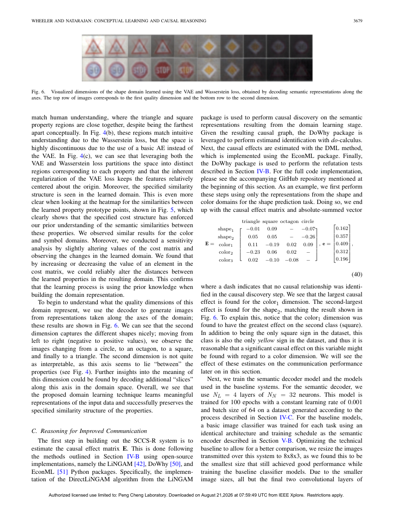</a><figcaption><b>关键结果证据页</b>｜来源：《Conceptual Learning and Causal Reasoning for Semantic Communication》，PDF p.11；原图题/表题：Visualized dimensions of the shape domain learned using the VAE and Wasserstein loss, obtained by decoding semantic representations along the axes. The top row of images corresponds to the first quality dimension and the bottom row to the second dimension.。 <a href='https://doi.org/10.1109/tccn.2025.3543834'>核对论文</a></figcaption></figure></div>
</article>
<article class="paper" id="content-adaptive-distributed-joint-source-channel-coding-for-image-transmission-with-hyperpr" data-year="2025" data-tier="core">
  <div class="paper-head"><div><div><span class="tag core">核心纳入</span><span class="tag year">2025</span></div><h2>Content Adaptive Distributed Joint Source-Channel Coding for Image Transmission With Hyperprior</h2></div><a class="pdf" href="https://doi.org/10.1109/tccn.2024.3438371">DOI / IEEE 页面</a></div>
  <div class="facts"><div><b>作者</b>Yishen Li、Xuechen Chen、Xiaoheng Deng、Jinsong Gui</div><div><b>出版信息</b>Vol. 11, No. 1, pp. 105-117</div><div><b>DOI / IEEE ID</b><a href="https://doi.org/10.1109/tccn.2024.3438371">10.1109/tccn.2024.3438371</a> / 10623367</div><div><b>任务</b>图像语义传输或重建</div><div><b>技术谱系</b>量化 feature、bitstream 或数字调制符号</div><div><b>年份口径</b>formal TCCN volume year</div></div>
  <div class="verdict"><b>是否属于严格数字语义通信：</b>是或部分是：正文存在离散/量化接口；仍需检查它是否真的承受 bit/index error。</div>
  <h3>实验设置</h3><div class="grid3"><div><b>数据集/场景</b>ImageNet、KITTI</div><div><b>Baseline</b>DeepJSCC、NTSCC、WITT、JPEG、JPEG2000、BPG、QAM、HM、FEC、ViT、GAN、VAE、PPO、SAC、JSCC、IB</div><div><b>指标与信道条件</b>PSNR、SSIM、MS-SSIM、MSE、mAP、NME、FLOPs、VoI、MOS、WER、CER<br><span class="muted">SNR：0.4 dB、0.5 dB、1.0 dB、1.8 dB、10 dB、15 dB、2 dB、28.12 dB、5 dB、7.5 dB</span></div></div>
  <h3>Introduction 的六步讲述逻辑</h3><ol class='story'><li><b>已有进展：</b>Due to the must establish methods for measuring the complexity of information fusion layer and content adaptive variable- various images and dynamically adjusting the output dimen- rate allocation module, our method outperforms standard sions of neural networks accordingly.</li><li><b>现有问题：</b>In [26] they further estimates at the same reconstruction quality. the entropy model of the latent representations using the The remainder of this paper is organized as follows.</li><li><b>为何重要：</b>Reference [23] sets deep JSCC and other distributed deep JSCC frame- semantic blocks and selects the transmission of important works in various evaluation metrics in terms of peak semantic blocks based on their probabilities, which achieves signal-to-noise ratio (PSNR) and multi-scale structural instance-level transmission.</li><li><b>提出方案：</b>To address this issue, distributed between sources to enhance the reconstruction quality is worth source coding (DSC) has been widely employed as an efficient investigating.</li><li><b>解决机制：</b>In existing deep JSCC studies, the information solution.</li><li><b>核心主张与证据目标：</b>It is difficult to achieve rate where ψ encapsulates the parameters of the density model adaptive at the instance level, which assigns different band- y|ψ), and * denotes the convolution operation. py|ψ ( width to each image.</li></ol>
  <h3>方法、变量与优化</h3><p><b>系统/信息流：</b>PDF p.1：different scheme. Subsequently, Wyner and Ziv [5] extended it further pixel levels to make full use of the source correlation. In addition, to a lossy compression scheme with side information at the while most previous studies allocated the same bandwidth to decoder. These developments provide the robust theoretical all images, which ignored the differences between images, we framework for the field of distributed source codin PDF p.1：ous development of the Internet of performance gains. For discrete-time analog-valued sources W Things (IoT) technology, distributed image transmis- sion has become one of the focal points of attention [1]. In such as Gaussian sources, a manifold variable autoencoder (VAE) was adopted for the transmission over the noisy complex multi-point transmission systems such as 3D scene channel in [11]. Then such a VAE based JSCC was ex PDF p.1：rent unit (GRU) and generative adversarial networks (GAN) in [15]. Bourtsoulatze et al. Manuscript received 18 December 2023; revised 20 April 2024 and 25 June 2024; accepted 26 July 2024. Date of publication 5 August 2024; date proposed to construct both the encoder and decoder with of current version 7 February 2025. This work was supported in part by the convolutional neural networks (CNNs) [16]. In [17], this Joint Funds f PDF p.1：RU) and generative adversarial networks (GAN) in [15]. Bourtsoulatze et al. Manuscript received 18 December 2023; revised 20 April 2024 and 25 June 2024; accepted 26 July 2024. Date of publication 5 August 2024; date proposed to construct both the encoder and decoder with of current version 7 February 2025. This work was supported in part by the convolutional neural networks (CNNs) [16]. In [17], this Joint Funds for Railway F</p><p><b>目标函数/联合训练证据：</b>PDF p.4：tion encoders ger (·; θgr ) and gel (·; θgl ) to θg ,φg ,θh ,φh extract the features of two images. The latent representation y) − log px|y (x| − log py ( y) + const1 . (10) of each view will be fed into hyperprior encoder. Then Then, we can get the final loss function of the model with the distribution parameters σr and σl of latent represen- hyperprior: tations are obtained through hyperprior decoder hdr (·; φhr )    PDF p.4：ation can be do not adopt traditional arithmetic coding, which is equivalent measured by its entropy. The entropy of  y can be obtained to the entropy mask, so there is no need to quantify y. by the hyperprior model. Besides, the entropy of a complex For the loss function of the proposed model,  y in (10) is image is greater than that of a simple image. Inspired by directly replaced by y. Thus the loss function of the propos PDF p.4：entropy mask, so there is no need to quantify y. by the hyperprior model. Besides, the entropy of a complex For the loss function of the proposed model,  y in (10) is image is greater than that of a simple image. Inspired by directly replaced by y. Thus the loss function of the proposed the semantic block transmi</p>
  <h3>数字化方案与传输开销</h3><p><b>传输表示证据：</b>PDF p.1：ilarity index (MS- Separation principle still holds in distributed scenarios [8]. SSIM) metrics. The experimental results show that our proposed That is, a combination of a Wyner-Ziv coder based on multi-layer information fusion module and entropy mask module quantization followed by binning and a standard channel coder can effectively improve the quality of reconstruction by about 1.0 dB PSNR compared to the state-of-the-art PDF p.2：ial correlation at different pixel level. view is lossless, which is limited in practical situations. In • We propose a content adaptive variable-rate encoding contrast, [22] designed a distributed deep JSCC scheme that module. First, the entropy model of the latent represen- considers the transmission of stereo image sources through the tations is estimated by utilizing the hyperprior model. channel. This scheme adopts an inf PDF p.2：rces through the tations is estimated by utilizing the hyperprior model. channel. This scheme adopts an information fusion process at Subsequently, guided by this model, we assess the the receiver, leveraging the correlations between the sources to entropy of latent representations for each image within enhance the reconstruction quality. Although this approach has the deep JSCC framework. We allocate higher transmis- improved PDF p.2：ources to entropy of latent representations for each image within enhance the reconstruction quality. Although this approach has the deep JSCC framework. We allocate higher transmis- improved performance, its single-layer fusion strategy ignores sion rates to latent representations associated with higher the correlation between the feature maps at different scales. summed entropy blocks. Considering that the output Furthermore</p><p><b>调制/信道编码线索：</b>arithmetic coding、entropy coding</p><p><b>可复核开销与缺失信息：</b>输入/分辨率线索：1242 × 375、128 × 128、16x16。feature/token/latent 尺寸线索：正文未给出可稳定自动定位的条目。码本线索：正文未给出可稳定自动定位的条目。bit/bpp/速率线索：24-bit。CBR/压缩率线索：compression ratio, we add a single convolution layer with C、compression ratio、compression ratio of the proposed model can be、compression ratios、compression ratios under CSNR = 5 dB、compression ratio 0、compression ratio while、compression ratio of 0、compression ratio is fixed to、compression ratio is fixed to 0。数字 token/bitstream 需把 payload、header、FEC 与重传一并计入；论文只报 CBR/SNR 时不能反推唯一净 bit 数。</p><div class="formula">\[N_{tx}=N_{unit}b_{unit}+N_{header}+N_{FEC},\qquad CBR=\frac{N_{channel\ uses}}{N_{source\ samples}}\]</div>
  <h3>信道处理机制</h3><div class="channel"><p><b>分类：</b>类别 2–4 边界：数字接口进入无线链路，但是否端到端处理离散错误需看实现</p><p><b>正文信道证据：</b>PDF p.1：cable as they overlook the unique lated images and the channels are independent. The transmitters characteristic of distributed scenes: the correlation among encode respective images and then send them to the same central receiver. In this situation, how to effectively use the correlation images from different views. To address this issue, distributed between sources to enhance the reconstruction quality is worth source coding PDF p.1：to enhance the reconstruction quality is worth source coding (DSC) has been widely employed as an efficient investigating. In existing deep JSCC studies, the information solution. Slepian and Wolf [4] theoretically proved that for fusion strategy failed to effectively utilize the correlation between correlated sources X and Y, a nearly lossless compression can images from different perspectives at the receiver. In this paper, PDF p.1：cenarios [8]. SSIM) metrics. The experimental results show that our proposed That is, a combination of a Wyner-Ziv coder based on multi-layer information fusion module and entropy mask module quantization followed by binning and a standard channel coder can effectively improve the quality of reconstruction by about 1.0 dB PSNR compared to the state-of-the-art distributed JSCC. achieves optimal distortion for end-to-end design. PDF p.2：oding reconstruction decoder only involves a simple concatenation of the dual- is enhanced through multi-layer cross-attention fusion view images, which is straightforward but fails to fully exploit module. The module is constructed based on multi-layer and effectively utilize the spatial correlations between the cross attention mechanism, which effectively exploits the images. Additionally, they assume the images from the oth</p><p><b>decoder 实际收到：</b>数字解调/译码后的 bit、index 或量化 feature；软信息接口若未明示则不能假定</p><p><b>是否联合优化：</b>是/部分：目标或训练证据与物理信道同时出现。</p><p><b>是否真正处理 bit/index/token/packet error：</b>部分：存在数字接口与信道模型，但若正文只报告 SNR/重建质量而未注入 bit/index error，就不能宣称解决跳变问题。</p></div>
  <h3>主要结果、局限与 Codex 判断</h3><p><b>证据化结果：</b>PDF p.1：8]. SSIM) metrics. The experimental results show that our proposed That is, a combination of a Wyner-Ziv coder based on multi-layer information fusion module and entropy mask module quantization followed by binning and a standard channel coder can effectively improve the quality of reconstruction by about 1.0 dB PSNR compared to the state-of-the-art distributed JSCC. achieves optimal distortion for end-to-end design. Meanwhile PDF p.1：tions, its practical design has been a long-standing challenge. In recent decades, deep learning based JSCC (deep JSCC) I. I NTRODUCTION has attracted significant attentions and achieved remarkable ITH the continuous development of the Internet of performance gains. For discrete-time analog-valued sources W Things (IoT) technology, distributed image transmis- sion has become one of the focal points of attention [1]. In such as PDF p.1：Natural Science method was extended to feedback channels. In [18] and [19], Foundation of China under Grant No. U2368201 and in part by the NSF of China under Grant Nos. 62172441 and 61772553. The associate editor DL aided JSCC schemes are reported to provide improvement coordinating the review of this article and approving it for publication was on image storage and compression. However, most existing N. Zorba. (Corresponding PDF p.2：model, we assess the the receiver, leveraging the correlations between the sources to entropy of latent representations for each image within enhance the reconstruction quality. Although this approach has the deep JSCC framework. We allocate higher transmis- improved performance, its single-layer fusion strategy ignores sion rates to latent representations associated with higher the correlation between the feature maps at diff</p><p><b>独立判断：</b>未显式注入离散误码/丢包，鲁棒性结论不应外推到真实数字链路。</p>
  <div class="figs"><figure><a href='assets/2025_content-adaptive-distributed-joint-source-channel-coding-for-image-transmission-with-hyperpr_method_p4.png' target='_blank'></a><figcaption><b>架构/方法证据页</b>｜来源：《Content Adaptive Distributed Joint Source-Channel Coding for Image Transmission With Hyperprior》，PDF p.4；原图题/表题：Overview of the distributed content adaptive joint source-channel coding scheme with hyperprior model. The adaptive rate control is composed of entropy mask fe and hyperprior model. The information feature fusion module is integrated into the decoder gd .。 <a href='https://doi.org/10.1109/tccn.2024.3438371'>核对论文</a></figcaption></figure><figure><a href='assets/2025_content-adaptive-distributed-joint-source-channel-coding-for-image-transmission-with-hyperpr_result_p5.png' target='_blank'>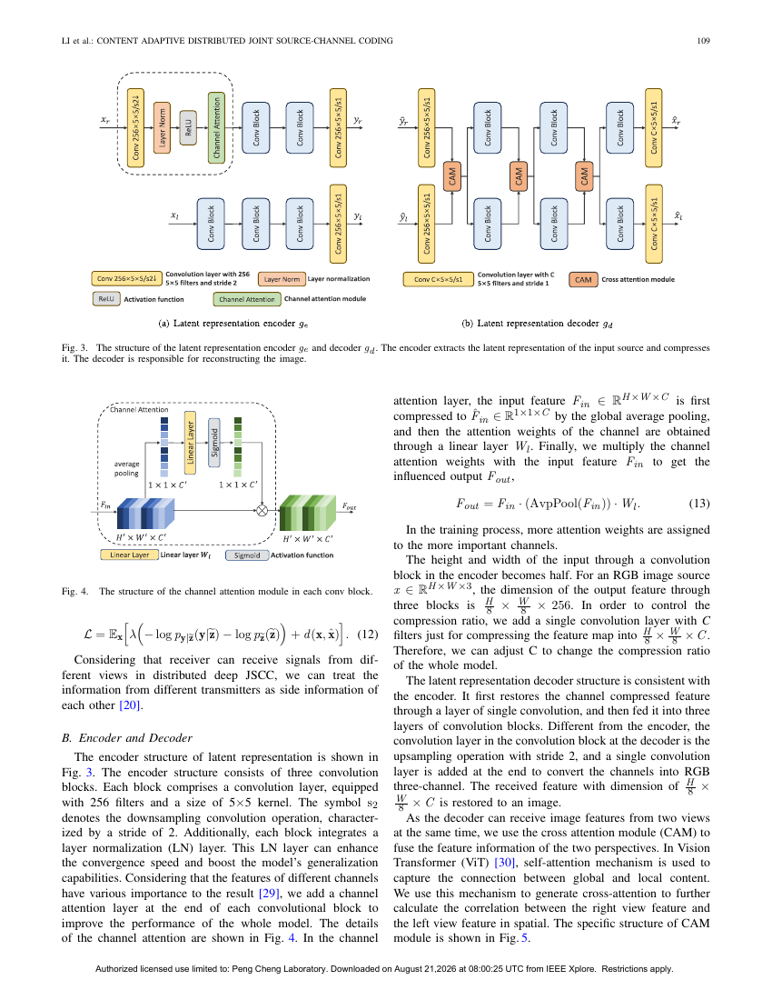</a><figcaption><b>关键结果证据页</b>｜来源：《Content Adaptive Distributed Joint Source-Channel Coding for Image Transmission With Hyperprior》，PDF p.5；原图题/表题：Overview of the distributed content adaptive joint source-channel coding scheme with hyperprior model. The adaptive rate control is composed of entropy mask fe and hyperprior model. The information feature fusion module is integrated into the decoder gd .。 <a href='https://doi.org/10.1109/tccn.2024.3438371'>核对论文</a></figcaption></figure></div>
</article>
<article class="paper" id="deep-reinforced-feature-compression-and-channel-equalization-for-semantic-communications" data-year="2025" data-tier="core">
  <div class="paper-head"><div><div><span class="tag core">核心纳入</span><span class="tag year">2025</span></div><h2>Deep Reinforced Feature Compression and Channel Equalization for Semantic Communications</h2></div><a class="pdf" href="https://doi.org/10.1109/tccn.2025.3549782">DOI / IEEE 页面</a></div>
  <div class="facts"><div><b>作者</b>Joonho Seon、Seongwoo Lee、Soo Hyun Kim、Young Ghyu Sun、Hyowoon Seo、Dong In Kim、Jin Young Kim</div><div><b>出版信息</b>Vol. 11, No. 6, pp. 3655-3668</div><div><b>DOI / IEEE ID</b><a href="https://doi.org/10.1109/tccn.2025.3549782">10.1109/tccn.2025.3549782</a> / 10919137</div><div><b>任务</b>通用/多模态语义通信</div><div><b>技术谱系</b>量化 feature、bitstream 或数字调制符号</div><div><b>年份口径</b>formal TCCN volume year</div></div>
  <div class="verdict"><b>是否属于严格数字语义通信：</b>是或部分是：正文存在离散/量化接口；仍需检查它是否真的承受 bit/index error。</div>
  <h3>实验设置</h3><div class="grid3"><div><b>数据集/场景</b>CIFAR10</div><div><b>Baseline</b>DeepJSCC、JPEG、LDPC、Turbo、QAM、HM、FEC、Swin Transformer、ViT、GAN、VAE、PPO、SAC、DeepSC、DeepSC-S、L-DeepSC、ASC、SwinJSCC、JSCC、IB</div><div><b>指标与信道条件</b>PSNR、SSIM、FID、MSE、accuracy、NME、latency、energy、FLOPs、semantic similarity、throughput、MOS、WER、CER<br><span class="muted">SNR：0 dB、1 dB、10 dB、2 dB、3 dB、4 dB、5 dB、6 dB、8 dB</span></div></div>
  <h3>Introduction 的六步讲述逻辑</h3><ol class='story'><li><b>已有进展：</b>form feature resource-constrained Internet of Things (IoT) devices, termed compression and channel equalization according to the channel L-DeepSC [16]. conditions.</li><li><b>现有问题：</b>Based on the segment selection strategy, is a main advantage in on a joint loss function that accounts for human perceptual addressing challenges associated with fading and low SNR sensitivity, the reconstructed speech aligns closely with human conditions.</li><li><b>为何重要：</b>Therefore, feature compression signif- without compromising speech quality. icantly reduces the communication cost in moderate SNR Managing computational resources in resource-constrained conditions, whereas segment selection is resilient to low environments becomes important as SC systems continue to SNR and fading environments.</li><li><b>提出方案：</b>Contributions and Organization To address the limitations of conventional SC meth- ods, the following key algorithmic modifications were II.</li><li><b>解决机制：</b>S YSTEM M ODEL applied: 1) We adopt DRL with a tailored reward function We begin by considering a dataset of M image-label pairs, to increase efficiency while maintaining task performance denoted as (im , m ), for each m ∈ {1, . . . , M}.</li><li><b>核心主张与证据目标：</b>Compared in previous work [5]. to state-of-the-art methods, comparable communication Conventional methods for mitigating worse channel effects costs are achieved through the optimization of the trade- assume perfect CSI [15] or rely on models tuned to specific off between communication efficiency and reliability. physical channels and SNRs [12].</li></ol>
  <h3>方法、变量与优化</h3><p><b>系统/信息流：</b>PDF p.1：nsmitting extracted semantic features rather SC framework, the transmission efficiency can be enhanced by than raw data as a bitstream, which improves transmission adaptively adjusting the vector length or selectively transmitting image segments. Further, the proposed method can optimize efficiency in resource-constrained environments [7], [8]. task-oriented performance accuracy under nonlinear channel As a type of task-orient PDF p.2：g speech SC systems [27]. This method by compensating for minor distortions. On the other hand, enhances the accuracy and efficiency of semantic information the robustness of the second strategy (S2), which is based extraction using a fully synthetic semantic encoder. Based on the segment selection strategy, is a main advantage in on a joint loss function that accounts for human perceptual addressing challenges associated with PDF p.3：can be optimally trained, so as to main- Figs. 1(a) and 1(b). tain task-oriented performance accuracy with acceptable In S1, feature compression, the entire image is processed by performance degradation, even under varying channel a joint source-channel (JSC) encoder, which compresses the conditions. data to produce a feature vector fm ∈ Rd , where d denotes • Multi-task Capabilities in Dynamic Channel Conditions: the code len PDF p.3：sk-oriented accuracy. and extract a subset of the most relevant segments, denoted as • Balancing Computational Complexity and Performance: Im , prior to inputting the image into the joint source-channel The proposed strategies achieve a balance between (JSC) encoder. This method parallels the approach examined computational complexity and performance. Compared in previous work [5]. to state-of-the-art methods, comparable comm</p><p><b>目标函数/联合训练证据：</b>PDF p.2：other hand, enhances the accuracy and efficiency of semantic information the robustness of the second strategy (S2), which is based extraction using a fully synthetic semantic encoder. Based on the segment selection strategy, is a main advantage in on a joint loss function that accounts for human perceptual addressing challenges associated with fading and low SNR sensitivity, the reconstructed speech aligns closely with human PDF p.4：he DRL-SC system. ability to achieve stable convergence under dynamic channel The proposed DRL-SC framework is trained in a modular conditions, including varying SNRs and nonlinear channel and sequential manner. First, the JSC encoder and decoder are effects. jointly trained; then, the DRL network and VAE-based channel The objective function of the A2C algorithm for the agents equalizer are trained independently. Unlike DeepJS PDF p.4：amic channel The proposed DRL-SC framework is trained in a modular conditions, including varying SNRs and nonlinear channel and sequential manner. First, the JSC encoder and decoder are effects. jointly trained; then, the DRL network and VAE-based channel The objective function of the A2C algorithm for the agents</p>
  <h3>数字化方案与传输开销</h3><p><b>传输表示证据：</b>PDF p.1：nd facilitate the transition to 6G [3], [4], [5], [6]. for the favorable situations in each strategy. In the proposed SC focuses on transmitting extracted semantic features rather SC framework, the transmission efficiency can be enhanced by than raw data as a bitstream, which improves transmission adaptively adjusting the vector length or selectively transmitting image segments. Further, the proposed method can optimize effici PDF p.1：tor lengths Joonho Seon, Seongwoo Lee, Soo Hyun Kim, Young Ghyu Sun, and based on semantic importance, while others utilize multi-level Jin Young Kim are with the Department of Electronic Convergence Engineering, Kwangwoon University, Seoul 01897, South Korea codebooks. Although effective, these methods can encounter (e-mail: dimlight13@kw.ac.kr; swoo1467@kw.ac.kr; kimsoogus@kw.ac.kr; parameterization complexity, inference cha PDF p.6：3660 IEEE TRANSACTIONS ON COGNITIVE COMMUNICATIONS AND NETWORKING, VOL. 11, NO. 6, DECEMBER 2025 in the following equation: entropy term was intended to enhance the diversity of the  latent space. The VAE model can be encouraged to explore 1 1  m   Rtx,rec = SSIM pori,i , prec,i + feff π̄, σπ2 , a wider range of potential representations for the observed 2 m data by maximizing entropy. The distortion term can quantify i=1 ( PDF p.8：ER S ETTINGS FOR S IMULATION the subsequent step, where the output is combined with the input through a residual connection and processed with a sigmoid function. This sequence generates the mean μ and the logarithm of the variance log σ 2 for sampling in the latent space. The sampled features are passed through another Conv1D layer and a fully connected (FC) layer to produce the final output. The A2C agent architecture compri</p><p><b>调制/信道编码线索：</b>16-qam、ldpc、turbo</p><p><b>可复核开销与缺失信息：</b>输入/分辨率线索：正文未给出可稳定自动定位的条目。feature/token/latent 尺寸线索：正文未给出可稳定自动定位的条目。码本线索：正文未给出可稳定自动定位的条目。bit/bpp/速率线索：正文未给出可稳定自动定位的条目。CBR/压缩率线索：compression ratio、compression ratio (CR)、compression ratio, meaning the features、compression ratios、compression ratios or、compression ratio and task performance、compression ratio by、compression ratio, the higher the reward、compression ratio selection process、compression ratio using (1 − α) instead of The VAE model is intended to estimate the channel。数字 token/bitstream 需把 payload、header、FEC 与重传一并计入；论文只报 CBR/SNR 时不能反推唯一净 bit 数。</p><div class="formula">\[N_{tx}=N_{unit}b_{unit}+N_{header}+N_{FEC},\qquad CBR=\frac{N_{channel\ uses}}{N_{source\ samples}}\]</div>
  <h3>信道处理机制</h3><div class="channel"><p><b>分类：</b>类别 2–4 边界：数字接口进入无线链路，但是否端到端处理离散错误需看实现</p><p><b>正文信道证据：</b>PDF p.1：-frequency techniques. However, these systems often had limitations in the bands to achieve higher data rates can be constrained by lack of consideration of dynamic compression and nonlinear signal blockage, atmospheric absorption, and reduced power channel effects. In order to address these challenges, deep rein- forcement learning (DRL)-based dynamic feature compression amplifier efficiency [2]. A promising paradigm known as PDF p.1：7], [8]. task-oriented performance accuracy under nonlinear channel As a type of task-oriented communication, SC facilitates conditions and maintain transmission efficiency by mitigating efficient communication by optimizing the entire process worse channel effects. The simulation results demonstrated that from data collection and processing at the transmitter to task the proposed SC system can reduce computational complexity PDF p.1：y in most wireless communication systems. Two critical aspects to consider in this approach are transmitter-side feature extraction and compression techniques that adapt to channel conditions and receiver-side equalization techniques that compensate for the effects of nonlinear channels. While recent advancements in SC have led to signifi- cant improvements, challenges relating to adaptive feature Received 30 September 2024; r PDF p.1：n, Seongwoo Lee, Soo Hyun Kim, Young Ghyu Sun, and based on semantic importance, while others utilize multi-level Jin Young Kim are with the Department of Electronic Convergence Engineering, Kwangwoon University, Seoul 01897, South Korea codebooks. Although effective, these methods can encounter (e-mail: dimlight13@kw.ac.kr; swoo1467@kw.ac.kr; kimsoogus@kw.ac.kr; parameterization complexity, inference challenges and high yakrk</p><p><b>decoder 实际收到：</b>数字解调/译码后的 bit、index 或量化 feature；软信息接口若未明示则不能假定</p><p><b>是否联合优化：</b>是/部分：目标或训练证据与物理信道同时出现。</p><p><b>是否真正处理 bit/index/token/packet error：</b>部分：存在数字接口与信道模型，但若正文只报告 SNR/重建质量而未注入 bit/index error，就不能宣称解决跳变问题。</p></div>
  <h3>主要结果、局限与 Codex 判断</h3><p><b>证据化结果：</b>PDF p.1：IEEE, Young Ghyu Sun , Member, IEEE, Hyowoon Seo , Member, IEEE, Dong In Kim , Life Fellow, IEEE, and Jin Young Kim , Senior Member, IEEE Abstract—In the sixth-generation (6G) wireless communication I. I NTRODUCTION system, semantic communication (SC) aims to improve the data HE 6TH generation (6G) wireless communication system transmission rate and processing efficiency. SC can provide enhanced efficiency for data transmissio PDF p.1：[1]. However, using high-frequency techniques. However, these systems often had limitations in the bands to achieve higher data rates can be constrained by lack of consideration of dynamic compression and nonlinear signal blockage, atmospheric absorption, and reduced power channel effects. In order to address these challenges, deep rein- forcement learning (DRL)-based dynamic feature compression amplifier efficiency [2]. A pro PDF p.1：transition to 6G [3], [4], [5], [6]. for the favorable situations in each strategy. In the proposed SC focuses on transmitting extracted semantic features rather SC framework, the transmission efficiency can be enhanced by than raw data as a bitstream, which improves transmission adaptively adjusting the vector length or selectively transmitting image segments. Further, the proposed method can optimize efficiency in resource-c PDF p.1：d maintain transmission efficiency by mitigating efficient communication by optimizing the entire process worse channel effects. The simulation results demonstrated that from data collection and processing at the transmitter to task the proposed SC system can reduce computational complexity by execution at the receiver, which transmits only task-relevant about 40% and improve average performance by around 20%, respectively, co</p><p><b>独立判断：</b>未显式注入离散误码/丢包，鲁棒性结论不应外推到真实数字链路。</p>
  <div class="figs"><figure><a href='assets/2025_deep-reinforced-feature-compression-and-channel-equalization-for-semantic-communications_method_p4.png' target='_blank'></a><figcaption><b>架构/方法证据页</b>｜来源：《Deep Reinforced Feature Compression and Channel Equalization for Semantic Communications》，PDF p.4；原图题/表题：Schematics of the DRL-SC system: (a) First strategy (dimensionality reduction in feature space) at the transmitter, (b) Second strategy (segment selection in the data domain) at the transmitter, (c) DRL-SC receiver.。 <a href='https://doi.org/10.1109/tccn.2025.3549782'>核对论文</a></figcaption></figure><figure><a href='assets/2025_deep-reinforced-feature-compression-and-channel-equalization-for-semantic-communications_result_p5.png' target='_blank'>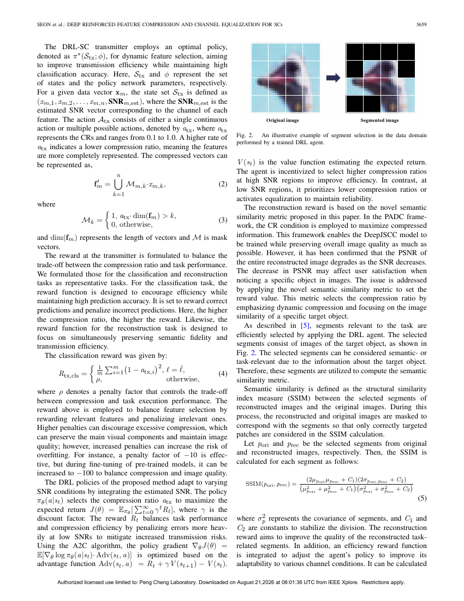</a><figcaption><b>关键结果证据页</b>｜来源：《Deep Reinforced Feature Compression and Channel Equalization for Semantic Communications》，PDF p.5；原图题/表题：Schematics of the DRL-SC system: (a) First strategy (dimensionality reduction in feature space) at the transmitter, (b) Second strategy (segment selection in the data domain) at the transmitter, (c) DRL-SC receiver.。 <a href='https://doi.org/10.1109/tccn.2025.3549782'>核对论文</a></figcaption></figure></div>
</article>
<article class="paper" id="digital-semantic-communication-system-with-a-learnable-channel-estimator-for-ofdm-transmissi" data-year="2025" data-tier="core">
  <div class="paper-head"><div><div><span class="tag core">核心纳入</span><span class="tag year">2025</span></div><h2>Digital Semantic Communication System With a Learnable Channel Estimator for OFDM Transmission</h2></div><a class="pdf" href="https://doi.org/10.1109/tccn.2025.3533008">DOI / IEEE 页面</a></div>
  <div class="facts"><div><b>作者</b>Yunqi Feng、Zhendong Shan、Hesheng Shen、Xiufang Shi、Qianqian Yang、Jiming Chen</div><div><b>出版信息</b>Vol. 11, No. 5, pp. 3361-3370</div><div><b>DOI / IEEE ID</b><a href="https://doi.org/10.1109/tccn.2025.3533008">10.1109/tccn.2025.3533008</a> / 10851324</div><div><b>任务</b>语义网络与资源分配</div><div><b>技术谱系</b>量化 feature、bitstream 或数字调制符号</div><div><b>年份口径</b>formal TCCN volume year</div></div>
  <div class="verdict"><b>是否属于严格数字语义通信：</b>是或部分是：正文存在离散/量化接口；仍需检查它是否真的承受 bit/index error。</div>
  <h3>实验设置</h3><div class="grid3"><div><b>数据集/场景</b>Kodak、CLIC、ImageNet</div><div><b>Baseline</b>DeepJSCC、WITT、QAM、HM、FEC、ARQ、Swin Transformer、ViT、GAN、VAE、VQ-VAE、ResNet、PPO、SAC、JSCC、IB、HARQ</div><div><b>指标与信道条件</b>PSNR、SSIM、FID、MSE、mAP、accuracy、NME、latency、VoI、MOS、WER<br><span class="muted">SNR：正文未给出可稳定自动定位的条目</span></div></div>
  <h3>Introduction 的六步讲述逻辑</h3><ol class='story'><li><b>已有进展：</b>ector semantic features to a multi-scale semantic embedding space quantization (VQ) scheme. for feature quantization.</li><li><b>现有问题：</b>In [22], the authors have proposed The remainder of this paper is organized as follows.</li><li><b>为何重要：</b>Finally, they often assume that the receiver can obtain perfect CSI Section V draws critical conclusions. information and neglect the complexities introduced by real- world channel conditions.</li><li><b>提出方案：</b>Semantic communication (SemCom) is a this paper, we propose an end-to-end digital SemCom system new intelligent communication paradigm that has great poten- with a learnable channel estimator (DiSeLCE) aligning with the tial to enhance the communication efficiency in data-intensive constraints of digital communication systems.</li><li><b>解决机制：</b>Unlike the conventional bit-based commu- first design a novel semantic encoder and decoder that integrate dense blocks to enhance feature extraction and significantly nication systems, SemCom extracts and transmits the most reduce the number of model parameters.</li><li><b>核心主张与证据目标：</b>Then, We can obtain the OFDM symbols Ŝ and fix (CP), resulting in the time-domain transmitted signal the quantized symbol Ẑ.</li></ol>
  <h3>方法、变量与优化</h3><p><b>系统/信息流：</b>PDF p.1：nnel estimator (DiSeLCE) aligning with the tial to enhance the communication efficiency in data-intensive constraints of digital communication systems. Specifically, we scenarios [3], [4]. Unlike the conventional bit-based commu- first design a novel semantic encoder and decoder that integrate dense blocks to enhance feature extraction and significantly nication systems, SemCom extracts and transmits the most reduce the number PDF p.1：or (DiSeLCE) aligning with the tial to enhance the communication efficiency in data-intensive constraints of digital communication systems. Specifically, we scenarios [3], [4]. Unlike the conventional bit-based commu- first design a novel semantic encoder and decoder that integrate dense blocks to enhance feature extraction and significantly nication systems, SemCom extracts and transmits the most reduce the number of model pa PDF p.1：strated greater robustness than Furthermore, both the domain knowledge and residual network conventional communication systems, especially in harsh (ResNet) are leveraged to develop a learnable channel estimation model, further enhancing the robustness of the proposed system channel conditions [5], [6]. in frequency-selective fading channels for orthogonal frequency- With the development of deep learning (DL), significant divi PDF p.1：School of redundancy. Automation, Hangzhou Dianzi University, Hangzhou 310018, China (e-mail: jmchen@ieee.org). However, in existing works, the high dimensional semantic Digital Object Identifier 10.1109/TCCN.2025.3533008 features extracted from the semantic encoders are assumed to 2332-7731  c 2025 IEEE. All rights reserved, including rights for text and data mining, and training of artificial intelligence and similar techno</p><p><b>目标函数/联合训练证据：</b>PDF p.2：3362 IEEE TRANSACTIONS ON COGNITIVE COMMUNICATIONS AND NETWORKING, VOL. 11, NO. 5, OCTOBER 2025 be directly transmitted into the channel without being modu- This approach enables end-to-end training of the system, lated into discrete constellation symbols. This makes it difficult simplifying the training process and optimizing the feature to implement in practice due to the non-ideal characteristics representations among diffe PDF p.2：tization scheme to map the continuous features quantizer and the DL-based channel estimator into semantic features into the constellation diagram, maintaining an end-to-end model, ensuring compatibility with prevailing the continuity of the model gradient for end-to-end training. digital communication protocols. Specifically, we first design Denote the source image as I ∈ {0, . . . , 256}C ×H ×W , where a novel semantic encode PDF p.6：Z into the OFDM symbols S and obtain the process, model validation is conducted at each epoch using time-domain transmitted signal X by performing IDFT. the validation set to obtain the optimal model parameters. The mean square error (MSE) is selected as the loss function and 5: Transmit X over the OFDM channel,</p>
  <h3>数字化方案与传输开销</h3><p><b>传输表示证据：</b>PDF p.1：rate dense blocks to enhance feature extraction and significantly nication systems, SemCom extracts and transmits the most reduce the number of model parameters. Moreover, we employ valuable task-oriented semantic features of the source data to a soft-to-hard quantization method to effectively mitigate the make efficient utilizes of limited communication resources. discontinuity in the model gradient due to quantization mappin PDF p.1：arameters. Moreover, we employ valuable task-oriented semantic features of the source data to a soft-to-hard quantization method to effectively mitigate the make efficient utilizes of limited communication resources. discontinuity in the model gradient due to quantization mappings. Moreover, SemCom has demonstrated greater robustness than Furthermore, both the domain knowledge and residual network conventional communication sy PDF p.1：in [13] leveraged the Swin capabilities across different types of datasets. Transformer backbone network to extract long-range image information and the spatial modulation module to adapt the Index Terms—Channel estimation, digital SemCom, OFDM, soft-to-hard quantization. potential representation based on channel state information (CSI). In [14], a layered wireless image transmission scheme was proposed with multiple refinemen PDF p.2：ng from the continuous semantic features to discrete tional channel estimation algorithms to the channel noise, constellation symbols. In [18], a digital SemCom system was significantly enhancing the quality of image transmission, designed with a soft-to-hard quantization approach, which particularly under low signal-to-noise ratio (SNR) conditions. maps semantic features directly into a constellation diagrams Experimental res</p><p><b>调制/信道编码线索：</b>16qam、64qam、harq、ofdm、qpsk</p><p><b>可复核开销与缺失信息：</b>输入/分辨率线索：128 × 128。feature/token/latent 尺寸线索：正文未给出可稳定自动定位的条目。码本线索：constellation point of where ∗ represents the convolution operation, h ∈ CL×1。bit/bpp/速率线索：正文未给出可稳定自动定位的条目。CBR/压缩率线索：coding rate、coding rate can be expressed as metrics provide a comprehensive evaluation o、compression ratios、compression ratio and task performance。数字 token/bitstream 需把 payload、header、FEC 与重传一并计入；论文只报 CBR/SNR 时不能反推唯一净 bit 数。</p><div class="formula">\[N_{tx}=N_{unit}b_{unit}+N_{header}+N_{FEC},\qquad CBR=\frac{N_{channel\ uses}}{N_{source\ samples}}\]</div>
  <h3>信道处理机制</h3><div class="channel"><p><b>分类：</b>类别 2–4 边界：数字接口进入无线链路，但是否端到端处理离散错误需看实现</p><p><b>正文信道证据：</b>PDF p.1：mission data volume while maintaining superior image quality under condi- tions of limited data due to their inherent robustness against T to a proliferation of applications that have enriched and facilitated daily life, such as autonomous driving and virtual channel noise. However, most existing SemCom systems are reality (VR). However, these applications require extremely based on analog communication paradigms, allowing for PDF p.1：t poten- with a learnable channel estimator (DiSeLCE) aligning with the tial to enhance the communication efficiency in data-intensive constraints of digital communication systems. Specifically, we scenarios [3], [4]. Unlike the conventional bit-based commu- first design a novel semantic encoder and decoder that integrate dense blocks to enhance feature extraction and significantly nication systems, SemCom extracts and transmi PDF p.1：nce feature extraction and significantly nication systems, SemCom extracts and transmits the most reduce the number of model parameters. Moreover, we employ valuable task-oriented semantic features of the source data to a soft-to-hard quantization method to effectively mitigate the make efficient utilizes of limited communication resources. discontinuity in the model gradient due to quantization mappings. Moreover, SemCom has PDF p.2：ication domain knowledge and ResNet to develop a novel channel systems to SemCom systems [18], [19], [20], [21], [22], [23], estimator based on conventional methods like LS and MMSE. [24]. Specifically, the process of digital modulation requires This design effectively mitigates the sensitivity of conven- a mapping from the continuous semantic features to discrete tional channel estimation algorithms to the channel noise, cons</p><p><b>decoder 实际收到：</b>数字解调/译码后的 bit、index 或量化 feature；软信息接口若未明示则不能假定</p><p><b>是否联合优化：</b>是/部分：目标或训练证据与物理信道同时出现。</p><p><b>是否真正处理 bit/index/token/packet error：</b>部分：存在数字接口与信道模型，但若正文只报告 SNR/重建质量而未注入 bit/index error，就不能宣称解决跳变问题。</p></div>
  <h3>主要结果、局限与 Codex 判断</h3><p><b>证据化结果：</b>PDF p.1：Member, IEEE, and Jiming Chen , Fellow, IEEE Abstract—Semantic communication (SemCom) based image I. I NTRODUCTION transmission schemes, in contrast to conventional bit-based HE EVOLUTION of artificial intelligence (AI) has led schemes, achieve a substantial reduction in transmission data volume while maintaining superior image quality under condi- tions of limited data due to their inherent robustness against T to a prolifera PDF p.1：t to conventional bit-based HE EVOLUTION of artificial intelligence (AI) has led schemes, achieve a substantial reduction in transmission data volume while maintaining superior image quality under condi- tions of limited data due to their inherent robustness against T to a proliferation of applications that have enriched and facilitated daily life, such as autonomous driving and virtual channel noise. However, most existing Se PDF p.1：pecifically, we scenarios [3], [4]. Unlike the conventional bit-based commu- first design a novel semantic encoder and decoder that integrate dense blocks to enhance feature extraction and significantly nication systems, SemCom extracts and transmits the most reduce the number of model parameters. Moreover, we employ valuable task-oriented semantic features of the source data to a soft-to-hard quantization method to effectivel PDF p.2：low signal-to-noise ratio (SNR) conditions. maps semantic features directly into a constellation diagrams Experimental results demonstrate that the proposed digital of finite symbols. The authors in [21] designed a vector SemCom exhibits enhanced robustness against channel noise quantized SemCom system for image transmission that maps and outperforms existing digital SemCom based on vector semantic features to a multi-scale se</p><p><b>独立判断：</b>未显式注入离散误码/丢包，鲁棒性结论不应外推到真实数字链路。</p>
  <div class="figs"><figure><a href='assets/2025_digital-semantic-communication-system-with-a-learnable-channel-estimator-for-ofdm-transmissi_method_p3.png' target='_blank'></a><figcaption><b>架构/方法证据页</b>｜来源：《Digital Semantic Communication System With a Learnable Channel Estimator for OFDM Transmission》，PDF p.3；原图题/表题：The proposed digital SemCom system for image transmission, where the blue arrow represents the forward process and the red arrow represents the gradient backward propagation.。 <a href='https://doi.org/10.1109/tccn.2025.3533008'>核对论文</a></figcaption></figure><figure><a href='assets/2025_digital-semantic-communication-system-with-a-learnable-channel-estimator-for-ofdm-transmissi_result_p6.png' target='_blank'>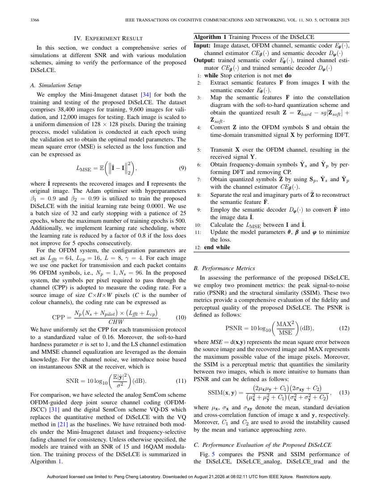</a><figcaption><b>关键结果证据页</b>｜来源：《Digital Semantic Communication System With a Learnable Channel Estimator for OFDM Transmission》，PDF p.6；原图题/表题：compares the PSNR and SSIM performance of Algorithm 1. the DiSeLCE, DiSeLCE_analog, DiSeLCE_trad and the。 <a href='https://doi.org/10.1109/tccn.2025.3533008'>核对论文</a></figcaption></figure></div>
</article>
<article class="paper" id="digital-sc-digital-semantic-communication-with-adaptive-network-split-and-learned-non-linear" data-year="2025" data-tier="core">
  <div class="paper-head"><div><div><span class="tag core">核心纳入</span><span class="tag year">2025</span></div><h2>Digital-SC: Digital Semantic Communication With Adaptive Network Split and Learned Non-Linear Quantization</h2></div><a class="pdf" href="https://doi.org/10.1109/tccn.2024.3510586">DOI / IEEE 页面</a></div>
  <div class="facts"><div><b>作者</b>Lei Guo、Wei Chen、Yuxuan Sun、Bo Ai</div><div><b>出版信息</b>Vol. 11, No. 4, pp. 2499-2511</div><div><b>DOI / IEEE ID</b><a href="https://doi.org/10.1109/tccn.2024.3510586">10.1109/tccn.2024.3510586</a> / 10772628</div><div><b>任务</b>语义网络与资源分配</div><div><b>技术谱系</b>量化 feature、bitstream 或数字调制符号</div><div><b>年份口径</b>formal TCCN volume year</div></div>
  <div class="verdict"><b>是否属于严格数字语义通信：</b>是或部分是：正文存在离散/量化接口；仍需检查它是否真的承受 bit/index error。</div>
  <h3>实验设置</h3><div class="grid3"><div><b>数据集/场景</b>ImageNet、CIFAR-10</div><div><b>Baseline</b>DeepJSCC、BPG、QAM、HM、FEC、ARQ、ViT、GAN、Ballé、ResNet、PPO、SAC、JSCC、IB、HARQ、Huffman、BERT、CLIP</div><div><b>指标与信道条件</b>FID、MSE、mAP、accuracy、precision、NME、latency、FLOPs、VoI、MOS、WER、CER<br><span class="muted">SNR：12dB、3dB、6dB</span></div></div>
  <h3>Introduction 的六步讲述逻辑</h3><ol class='story'><li><b>已有进展：</b>a DL-enabled digital semantic communication system for on the perceived semantic effectiveness with minimal over- device-edge cooperative inference, as shown in Fig.</li><li><b>现有问题：</b>However, digital communication linear quantization function adaptively learns quantization has many advantages over analog communication, including intervals from the data distribution, reflecting the density of higher error correction capability, stronger anti-interference points on the constellation diagram.</li><li><b>为何重要：</b>A light-weight semantic encoding network needs to be information in the presence of channel noise, enhancing deployed to ensure that its complexity does not exceed the its ability to capture semantic representations. computing power of the device, while reducing the bandwidth • To enhance classification accuracy within the constraints requirement by efficiently extracting the semantic information of limited computational resources at the transmitter, we at the same time. designed a policy network that leverages the differences The proposed device-edge adaptive semantic communica- in semantic representation and noise resistance between tion system is shown in Fig.</li><li><b>提出方案：</b>Furthermore, to enable end-to-end training selection is proposed in [35] to ensure the correct information for the semantic communication purpose, we propose a novel Authorized licensed use limited to: Peng Cheng Laboratory.</li><li><b>解决机制：</b>Downloaded on June 25,2026 at 09:07:16 UTC from IEEE Xplore.</li><li><b>核心主张与证据目标：</b>In Section IV, the proposed method is evaluated to Ψ is split into two sub-networks α s and β s , which act as the demonstrate its validity and adaptability.</li></ol>
  <h3>方法、变量与优化</h3><p><b>系统/信息流：</b>PDF p.2：fixed pre-defined constella- the application of powerful diffusion models [19], [20], which tions. The method, named JCM in [41], further explores digital aim to mitigate channel noise and enhance reconstruction. semantic communication using a Variational Autoencoder. In Moreover, diffusion probabilistic models (DDPM) have found DJSCCQ [40] and JCM [41], the quantization is achieved by application in [21] for probabilistic con PDF p.2：challenge for the device-edge cooperative infer- tions. Moreover, the integration of diffusion into deep joint ence is that devices have limited computing power in general. source-channel coding (DJSCC) in [24] addresses perception- Accordingly, the semantic encoder deployed at the device distortion issues in finite block lengths, leading to bandwidth needs to be light-weight, while a more powerful semantic savings and perform PDF p.2：addresses perception- Accordingly, the semantic encoder deployed at the device distortion issues in finite block lengths, leading to bandwidth needs to be light-weight, while a more powerful semantic savings and performance enhancements. In specific scenarios decoder can be deployed at the edge. The network redundancy with unstructured data and its scalability, GNNs [25], [26] and weight resolution have been reduced in [34] to PDF p.3：urces at the transmitter, we at the same time. designed a policy network that leverages the differences The proposed device-edge adaptive semantic communica- in semantic representation and noise resistance between tion system is shown in Fig. 2, which has two encoder/decoder deep and shallow networks. This design adaptively selects pairs to carry out the distillation of knowledge. The seman- the split point and maximizes class</p><p><b>目标函数/联合训练证据：</b>PDF p.2：ation application. In specific, we neural network (DNN) compression. To improve the flexibility, propose a novel digital semantic communication system with a novel digital semantic communication with multi-bit rate adaptive split point. Furthermore, to enable end-to-end training selection is proposed in [35] to ensure the correct information for the semantic communication purpose, we propose a novel Authorized licensed use lim PDF p.3：[45]. This work has sig- represented by a trainable network S (e) (·; α s , δ s , θ s ), which nificant extensions including the new network structure which consists of a semantic encoder represented as E (·; α s ), and exploits a policy network, and the new loss function, i.e., the proposed TRB. Within the TRB, there is a structured SLL, which exploits a semantic loss inspired by knowledge pruning module A(·; δ s ), which red PDF p.5：t to afford. In addition, the entire input in most popular convolutional neural networks (CNNs), semantic system is expected to achieve the best performance such as ResNet [46], and Transformer [47]. Therefore, we under the limited bandwidth. The optimization loss function incorporate a structured pruning to redu</p>
  <h3>数字化方案与传输开销</h3><p><b>传输表示证据：</b>PDF p.1：IEEE TRANSACTIONS ON COGNITIVE COMMUNICATIONS AND NETWORKING, VOL. 11, NO. 4, AUGUST 2025 2499 Digital-SC: Digital Semantic Communication With Adaptive Network Split and Learned Non-Linear Quantization Lei Guo, Wei Chen , Senior Member, IEEE, Yuxuan Sun , Member, IEEE, and Bo Ai , Fellow, IEEE Abstract—Semantic communication, an intelligent communi- cation paradigm that aims to transmit useful information in the semantic domai PDF p.1：we propose a digital semantic communication system, which consists of an encoding network deployed on a resource-limited device and a decoding network deployed at the edge. To acquire better semantic representation for digital transmission, a novel non-linear quantization mod- ule is proposed to efficiently quantize semantic features with trainable quantization levels. Additionally, structured pruning is incorporated to reduce PDF p.1：m, which consists of an encoding network deployed on a resource-limited device and a decoding network deployed at the edge. To acquire better semantic representation for digital transmission, a novel non-linear quantization mod- ule is proposed to efficiently quantize semantic features with trainable quantization levels. Additionally, structured pruning is incorporated to reduce the dimension of the transmitted features. We al PDF p.1：eployed on a resource-limited device and a decoding network deployed at the edge. To acquire better semantic representation for digital transmission, a novel non-linear quantization mod- ule is proposed to efficiently quantize semantic features with trainable quantization levels. Additionally, structured pruning is incorporated to reduce the dimension of the transmitted features. We also introduce a semantic learning loss (SLL</p><p><b>调制/信道编码线索：</b>16-qam、16qam、256qam、64-qam、64qam、harq、huffman、qpsk</p><p><b>可复核开销与缺失信息：</b>输入/分辨率线索：32 × 32、256 × 256。feature/token/latent 尺寸线索：正文未给出可稳定自动定位的条目。码本线索：正文未给出可稳定自动定位的条目。bit/bpp/速率线索：2 bits。CBR/压缩率线索：正文未给出可稳定自动定位的条目。数字 token/bitstream 需把 payload、header、FEC 与重传一并计入；论文只报 CBR/SNR 时不能反推唯一净 bit 数。</p><div class="formula">\[N_{tx}=N_{unit}b_{unit}+N_{header}+N_{FEC},\qquad CBR=\frac{N_{channel\ uses}}{N_{source\ samples}}\]</div>
  <h3>信道处理机制</h3><div class="channel"><p><b>分类：</b>类别 2–4 边界：数字接口进入无线链路，但是否端到端处理离散错误需看实现</p><p><b>正文信道证据：</b>PDF p.1：mart indus- oriented communications [3], [6], [7], [8]. Unlike classical try and tele-health [1], [2]. In the current communication communications, semantic communications no longer aim to systems, the raw data generated by these applications are minimize the bit error rate. Instead, the main goal of semantic transmitted from devices to edge or cloud computing servers, communications is to achieve the reliable transmission of PDF p.1：cific semantic features from the raw data The authors are with the School of Electronic and Information using deep learning (DL) algorithms, and transmits them Engineering, Beijing Jiaotong University, Beijing 100044, China (e-mail: to the edge server via the wireless channels. Then, the leiguo@bjtu.edu.cn; weich@bjtu.edu.cn; yxsun@bjtu.edu.cn; boai@ bjtu.edu.cn). edge server with powerful computing capability analyses the Dig PDF p.2：nhance quality. Several research efforts have focused on transmission of content through fixed pre-defined constella- the application of powerful diffusion models [19], [20], which tions. The method, named JCM in [41], further explores digital aim to mitigate channel noise and enhance reconstruction. semantic communication using a Variational Autoencoder. In Moreover, diffusion probabilistic models (DDPM) have found DJSCCQ [40 PDF p.2：redundancy with unstructured data and its scalability, GNNs [25], [26] and weight resolution have been reduced in [34] to make have also been explored to semantic communication. The the IoT devices affordable. A two-step pruning scheme is ability of GNNs to effectively process graph-structured data proposed in [42] to reduce both the computation complexity allows them to handle the complex and dynamic relationships and communi</p><p><b>decoder 实际收到：</b>数字解调/译码后的 bit、index 或量化 feature；软信息接口若未明示则不能假定</p><p><b>是否联合优化：</b>是/部分：目标或训练证据与物理信道同时出现。</p><p><b>是否真正处理 bit/index/token/packet error：</b>部分：存在数字接口与信道模型，但若正文只报告 SNR/重建质量而未注入 bit/index error，就不能宣称解决跳变问题。</p></div>
  <h3>主要结果、局限与 Codex 判断</h3><p><b>证据化结果：</b>PDF p.1：he edge. To acquire better semantic representation for digital transmission, a novel non-linear quantization mod- ule is proposed to efficiently quantize semantic features with trainable quantization levels. Additionally, structured pruning is incorporated to reduce the dimension of the transmitted features. We also introduce a semantic learning loss (SLL) function to Fig. 1. The digital semantic communication system for devic PDF p.1：trainable quantization levels. Additionally, structured pruning is incorporated to reduce the dimension of the transmitted features. We also introduce a semantic learning loss (SLL) function to Fig. 1. The digital semantic communication system for device-edge reduce semantic error. To adapt to various channel conditions cooperative inference. A deep neural network (DNN) is split into a device and inputs under constraints of co PDF p.1：the reliable transmission of useful information in the semantic domain. Accordingly, the Received 4 January 2024; revised 3 June 2024, 28 August 2024, and 23 October 2024; accepted 22 November 2024. Date of publication required bandwidth can be significantly reduced, making 2 December 2024; date of current version 8 August 2025. This work semantic communications a promising solution to mission- was supported in part by the Fun PDF p.2：be light-weight, while a more powerful semantic savings and performance enhancements. In specific scenarios decoder can be deployed at the edge. The network redundancy with unstructured data and its scalability, GNNs [25], [26] and weight resolution have been reduced in [34] to make have also been explored to semantic communication. The the IoT devices affordable. A two-step pruning scheme is ability of GNNs to effectively pro</p><p><b>独立判断：</b>未显式注入离散误码/丢包，鲁棒性结论不应外推到真实数字链路。</p>
  <div class="figs"><figure><a href='assets/2025_digital-sc-digital-semantic-communication-with-adaptive-network-split-and-learned-non-linear_method_p5.png' target='_blank'></a><figcaption><b>架构/方法证据页</b>｜来源：《Digital-SC: Digital Semantic Communication With Adaptive Network Split and Learned Non-Linear Quantization》，PDF p.5；原图题/表题：The architecture of the TRB. nication system. The feature map in gray is pruned, and the white one is retained.。 <a href='https://doi.org/10.1109/tccn.2024.3510586'>核对论文</a></figcaption></figure><figure><a href='assets/2025_digital-sc-digital-semantic-communication-with-adaptive-network-split-and-learned-non-linear_result_p10.png' target='_blank'>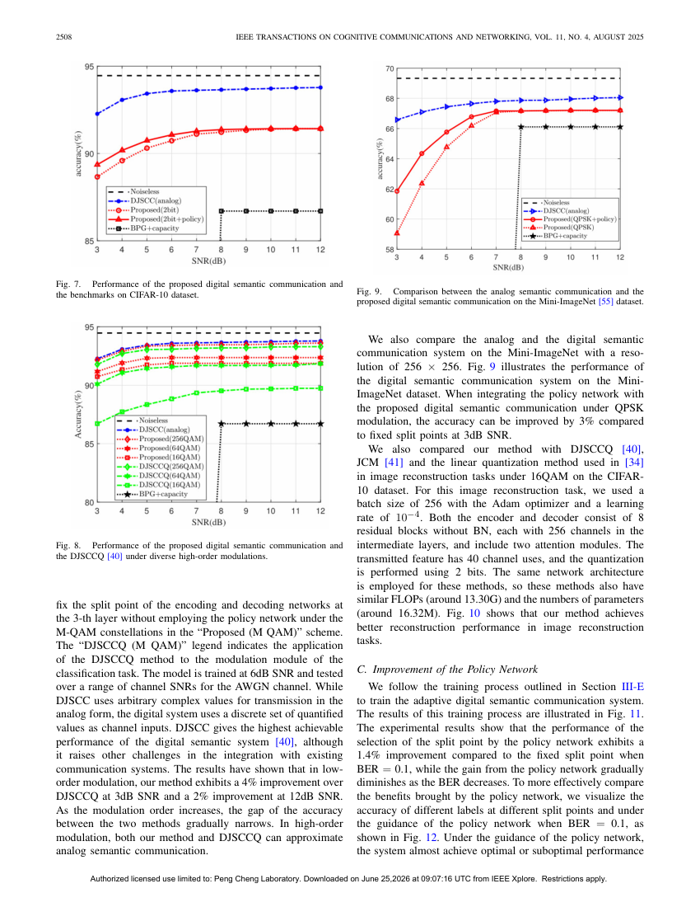</a><figcaption><b>关键结果证据页</b>｜来源：《Digital-SC: Digital Semantic Communication With Adaptive Network Split and Learned Non-Linear Quantization》，PDF p.10；原图题/表题：Performance of the proposed digital semantic communication and the benchmarks on CIFAR-10 dataset.。 <a href='https://doi.org/10.1109/tccn.2024.3510586'>核对论文</a></figcaption></figure></div>
</article>
<article class="paper" id="eesc-s-an-emotion-enhanced-semantic-communication-framework-for-speech-transmission" data-year="2025" data-tier="core">
  <div class="paper-head"><div><div><span class="tag core">核心纳入</span><span class="tag year">2025</span></div><h2>EESC-S: An Emotion-Enhanced Semantic Communication Framework for Speech Transmission</h2></div><a class="pdf" href="https://doi.org/10.1109/tccn.2025.3543387">DOI / IEEE 页面</a></div>
  <div class="facts"><div><b>作者</b>Kaiwen Tan、Haitao Zhao、Yichi Zhang、Kuo Cao、Peng Luo、Yuyuan Zhang、Jibo Wei</div><div><b>出版信息</b>Vol. 11, No. 6, pp. 3684-3697</div><div><b>DOI / IEEE ID</b><a href="https://doi.org/10.1109/tccn.2025.3543387">10.1109/tccn.2025.3543387</a> / 10891727</div><div><b>任务</b>语音语义传输</div><div><b>技术谱系</b>连续 learned latent / channel symbol（DeepJSCC）</div><div><b>年份口径</b>formal TCCN volume year</div></div>
  <div class="verdict"><b>是否属于严格数字语义通信：</b>否（连续语义 JSCC）</div>
  <h3>实验设置</h3><div class="grid3"><div><b>数据集/场景</b>LibriSpeech</div><div><b>Baseline</b>DeepJSCC、LDPC、Turbo、QAM、HM、FEC、Swin Transformer、ViT、GAN、PPO、SAC、DeepSC、DeepSC-S、JSCC、IB</div><div><b>指标与信道条件</b>FID、MSE、mAP、accuracy、precision、NME、latency、energy、FLOPs、semantic similarity、VoI、MOS、WER、CER<br><span class="muted">SNR：0 dB、12 dB、6 dB、8 dB</span></div></div>
  <h3>Introduction 的六步讲述逻辑</h3><ol class='story'><li><b>已有进展：</b>deling and expressing emotions in speech [20], [21], [22]. and the semantic encoder is designed based on the pre- In general, most current research on semantic communication trained wav2vec [25].</li><li><b>现有问题：</b>Although correlation between emotion and content in speech, using a task-oriented communication has been shown to be effective in Joint Semantic and Channel Coding (JSCC) approach that reducing redundancy and saving bandwidth, how to improve Authorized licensed use limited to: Peng Cheng Laboratory.</li><li><b>为何重要：</b>While these frameworks speech have also made a remarkable breakthrough, which leverage the unique advantages of DNNs to counter channel satisfies the needs of the receiver by transmitting key distortions and improve the transmission efficiency of speech semantic information.</li><li><b>提出方案：</b>The deep learning (DL) enabled semantic commu- fidelity recovery of symbols/bits [4].</li><li><b>解决机制：</b>This can greatly reduce nication technology has been revealed its capability in improving resource requirements and thereby is considered a more the transmission efficiency by recent fruitful research.</li><li><b>核心主张与证据目标：</b>1, which comprises intonation and prosody with the speech content to create of a transmitter, the wireless channel, a receiver and a emotional representations, which improves the quality of pre-trained SER network.</li></ol>
  <h3>方法、变量与优化</h3><p><b>系统/信息流：</b>PDF p.1：hieve semantic consistency between the transmitter and the receiver. Specifically, the emotion-semantic the semantic communication framework based on JSCC, fusion mechanisms are designed to enhance the correlation the deep neural network was used to model the encoder between the content and the emotion at the receiver. The and decoder, forming an autoencoder and optimized in the speech emotion recognition (SER) task is also co PDF p.1：Specifically, the emotion-semantic the semantic communication framework based on JSCC, fusion mechanisms are designed to enhance the correlation the deep neural network was used to model the encoder between the content and the emotion at the receiver. The and decoder, forming an autoencoder and optimized in the speech emotion recognition (SER) task is also considered and data-driven manner [5]. Kurka and Gündüz in [6] realized PDF p.1：n-semantic the semantic communication framework based on JSCC, fusion mechanisms are designed to enhance the correlation the deep neural network was used to model the encoder between the content and the emotion at the receiver. The and decoder, forming an autoencoder and optimized in the speech emotion recognition (SER) task is also considered and data-driven manner [5]. Kurka and Gündüz in [6] realized the intermediate featur PDF p.1：milarity between the reconstructed speech and expected emotion category at the a low signal-to-noise ratio (SNR) based on JSCC, which utterance level. Extensive simulation results demonstrate that demonstrates that machine learning methods can surpass the the proposed framework can significantly improve the speech performance of traditional structured coding-based designs. transmission performance. In [7], Kurka and Gündüz pro</p><p><b>目标函数/联合训练证据：</b>PDF p.2：synthesis. Reference [17] proposed a background or knowledge base, we discuss the related appli- perceptually motivated and low-complexity speech semantic cations of knowledge extraction and perception in semantic communication method. A multiresolution joint loss function communication. was designed to improve model performance, ensuring that the reconstructed speech aligns with the human auditory percep- tion. In [18], an en PDF p.4：is the number of samples, and lij =1 if the true label of the i th The normalized symbols x is transmitted via the wireless sample is in the j th class category, otherwise lij =0. channel and the receiving symbols y can be represented as y = H · x + n, (5) E. Loss Function where H represents the channel matrix, and n ∼ N (0, σ 2 I) The proposed EESC-S system leverages the prior knowl- represents the independently distributed a PDF p.5：rves as the supervi- sory role in the alignment of the emotional style. Besides, we denote Lsemantic as the mean-squared error loss of the E2E speech recovery,   Lsemantic s,s; θT , θR = (s − s)2 1  K = sk )2 . (sk −  (12) K k =1 Consequently, the total loss function is expressed as Fig. 2. The structure of</p>
  <h3>数字化方案与传输开销</h3><p><b>传输表示证据：</b>PDF p.3：dge, and the channel introduced into the framework and the intermediate features encoder encodes the emotion-semantic vector into symbols in the classification network has been used as the emotion that can be transmitted over the wireless channel. The channel descriptor to provide explicit supervision for the recovery of decoder and emotion-semantic decoder in receiver are used speech emotion. The main contributions of this re PDF p.5：te emotion category at receiver side, while improving the perception ability of the purpose or intent in speech. The like style to increase the number of scales that the output implementation details of the proposed semantic commu- features can represent. The feature maps from different groups nication system for emotional speech transmission will be are concatenated and sent to another group of 1×1 filters to introduced in th PDF p.6：TAN et al.: EESC-S: AN EMOTION-ENHANCED SEMANTIC COMMUNICATION FRAMEWORK 3689 Fig. 4. The semantic and emotion strategies F1 (·) and F2 (·). Fig. 5. The wav2vec2.0 based SER framework. temporal order and the unsupervised emotional tokens, where The attention value is calculated with linear projection, the former serves as a query and the latter serve as keys in which can be expressed as follows the attention mechanism. To clar PDF p.6：re The attention value is calculated with linear projection, the former serves as a query and the latter serve as keys in which can be expressed as follows the attention mechanism. To clarify the relationship between  vC ,  u = F2 ( vC ,  vE ) = MA( vE ) token and emotion, the number of tokens equals to the number of emotion categories. Different tokens are then concatenated ⊕BiLSTM(L(MA(  vC , vE ))) (16) together to g</p><p><b>调制/信道编码线索：</b>64-qam、ldpc、ofdm、turbo</p><p><b>可复核开销与缺失信息：</b>输入/分辨率线索：正文未给出可稳定自动定位的条目。feature/token/latent 尺寸线索：正文未给出可稳定自动定位的条目。码本线索：正文未给出可稳定自动定位的条目。bit/bpp/速率线索：正文未给出可稳定自动定位的条目。CBR/压缩率线索：coding rate、coding rate of 1/3, a block length of 512,。连续 DeepJSCC 的主要预算是 channel uses/CBR；除非另加量化与调制，不能把每个 latent 当作固定 bit。</p><div class="formula">\[CBR=\frac{N_{complex\ channel\ symbols}}{N_{source\ samples}},\qquad R_{bit}\ \text{未定义（连续映射）}\]</div>
  <h3>信道处理机制</h3><div class="channel"><p><b>分类：</b>类别 3：连续 learned latent 直接通过有噪声信道</p><p><b>正文信道证据：</b>PDF p.1：c information, which communication methods tend to focus on recovering the has been regarded as a classic text transmission architec- original data with the optimization goal of symbol efficiency ture. Zhou et al. [10] considered the difference in semantic or bit error rate (BER), while ignoring user experience, service information contained in text and introduced an adaptive and semantic metrics [2], [3]. With the rapid devel PDF p.1：features are The authors are with the College of Electronic Science and Technology, extracted as background knowledge. The performance was National University of Defense Technology, Changsha 410073, China (e-mail: evaluated in terms of the codeword length (effectiveness) tankaiwen23@nudt.edu.cn; haitaozhao@nudt.edu.cn; caokuo@nudt.edu.cn; zhangyuyuan22@nudt.edu.cn; wjbhw@nudt.edu.cn). and semantic similarity (reliability) with PDF p.2：semantic recovery. according to speaker characteristics. To focus on the semantic meaning of speech, the soft alignment and redundancy removal II. R ELATED W ORK AND M OTIVATION modules were designed to reduce semantic redundancy in [16]. In this section, we first focus the related work on semantic Besides, the duration, pitch, power, and other information communication systems for speech. Considering that both obtained from t PDF p.2：an auditory percep- tion. In [18], an end-to-end speech semantic communication A. Related Works system based on Transformer was introduced to reconstruct 1) Recovery-Oriented Schemes: Emphasizing the accurate and integrate multi-level information of speech, effectively transmission of semantics rather than data or symbols, seman- eliminating semantic signal noise. tic communication can achieve more efficient information Speech</p><p><b>decoder 实际收到：</b>带噪连续 channel symbol / latent，经神经 decoder 恢复任务输出</p><p><b>是否联合优化：</b>是/部分：目标或训练证据与物理信道同时出现。</p><p><b>是否真正处理 bit/index/token/packet error：</b>不适用 VQ index/bit 跳变；论文处理的是连续扰动和信道失配。</p></div>
  <h3>主要结果、局限与 Codex 判断</h3><p><b>证据化结果：</b>PDF p.1：an , Haitao Zhao , Senior Member, IEEE, Yichi Zhang , Kuo Cao, Peng Luo , Graduate Student Member, IEEE, Yuyuan Zhang , and Jibo Wei , Member, IEEE Abstract—The deep learning (DL) enabled semantic commu- fidelity recovery of symbols/bits [4]. This can greatly reduce nication technology has been revealed its capability in improving resource requirements and thereby is considered a more the transmission efficiency by recent frui PDF p.1：eech and expected emotion category at the a low signal-to-noise ratio (SNR) based on JSCC, which utterance level. Extensive simulation results demonstrate that demonstrates that machine learning methods can surpass the the proposed framework can significantly improve the speech performance of traditional structured coding-based designs. transmission performance. In [7], Kurka and Gündüz proposed a layered wireless image Index PDF p.1：loss due extract and transmit the meaning of messages without pursuing to the wrong detection at the transmitter and utilized the semantic and the context information to recover messages. Received 27 March 2024; revised 3 September 2024, 4 December 2024, The improvement of semantic similarity metrics proved and 16 January 2025; accepted 8 February 2025. Date of publication 18 February 2025; date of current version 10 December PDF p.2：speech, and reconstructed the speech at the destination semantic recovery. according to speaker characteristics. To focus on the semantic meaning of speech, the soft alignment and redundancy removal II. R ELATED W ORK AND M OTIVATION modules were designed to reduce semantic redundancy in [16]. In this section, we first focus the related work on semantic Besides, the duration, pitch, power, and other information communication s</p><p><b>独立判断：</b>没有完整离散接口，无法直接回答 bit/index/token 跳变问题。 未显式注入离散误码/丢包，鲁棒性结论不应外推到真实数字链路。</p>
  <div class="figs"><figure><a href='assets/2025_eesc-s-an-emotion-enhanced-semantic-communication-framework-for-speech-transmission_method_p5.png' target='_blank'></a><figcaption><b>架构/方法证据页</b>｜来源：《EESC-S: An Emotion-Enhanced Semantic Communication Framework for Speech Transmission》，PDF p.5；原图题/表题：The structure of the proposed multi-scale CBAM block. min Ltotal = λLemotion + (1 − λ)Lsemantic . (13) where λ is the coefficient to balance Lsemantic and Lemotion .。 <a href='https://doi.org/10.1109/tccn.2025.3543387'>核对论文</a></figcaption></figure><figure><a href='assets/2025_eesc-s-an-emotion-enhanced-semantic-communication-framework-for-speech-transmission_result_p6.png' target='_blank'>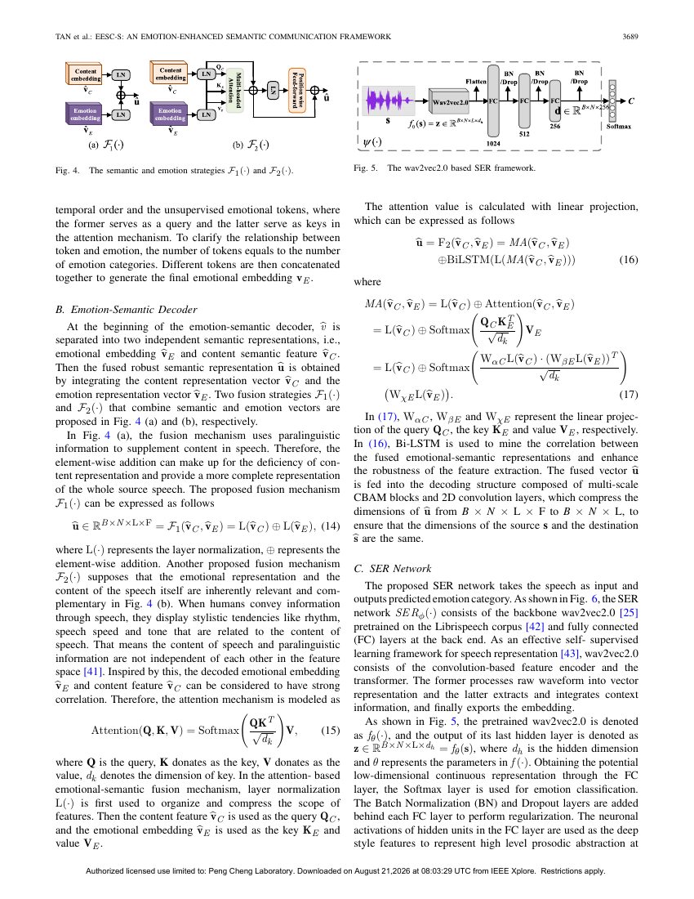</a><figcaption><b>关键结果证据页</b>｜来源：《EESC-S: An Emotion-Enhanced Semantic Communication Framework for Speech Transmission》，PDF p.6；原图题/表题：The semantic and emotion strategies F1 (·) and F2 (·).。 <a href='https://doi.org/10.1109/tccn.2025.3543387'>核对论文</a></figcaption></figure></div>
</article>
<article class="paper" id="fluid-antenna-enabled-near-field-integrated-sensing-computing-and-semantic-communication-for" data-year="2025" data-tier="core">
  <div class="paper-head"><div><div><span class="tag core">核心纳入</span><span class="tag year">2025</span></div><h2>Fluid Antenna-Enabled Near-Field Integrated Sensing, Computing, and Semantic Communication for Emerging Applications</h2></div><a class="pdf" href="https://doi.org/10.1109/tccn.2025.3592294">DOI / IEEE 页面</a></div>
  <div class="facts"><div><b>作者</b>Yinchao Yang、Jingxuan Zhou、Zhaohui Yang、Mohammad R. Shikh-Bahaei</div><div><b>出版信息</b>Vol. 11, No. 5, pp. 3062-3078</div><div><b>DOI / IEEE ID</b><a href="https://doi.org/10.1109/tccn.2025.3592294">10.1109/tccn.2025.3592294</a> / 11096081</div><div><b>任务</b>通用/多模态语义通信</div><div><b>技术谱系</b>学习式语义 feature；数字接口需由正文具体实现判定</div><div><b>年份口径</b>formal TCCN volume year</div></div>
  <div class="verdict"><b>是否属于严格数字语义通信：</b>系统层相关；没有足够证据把它判为严格数字语义通信。</div>
  <h3>实验设置</h3><div class="grid3"><div><b>数据集/场景</b>正文未给出可稳定自动定位的条目</div><div><b>Baseline</b>HM、FEC、ViT、GAN、PPO、SAC、ASC、JSCC、IB</div><div><b>指标与信道条件</b>FID、MSE、mAP、accuracy、recall、precision、NME、latency、energy、BLEU、throughput、VoI、MOS、WER、CER<br><span class="muted">SNR：正文未给出可稳定自动定位的条目</span></div></div>
  <h3>Introduction 的六步讲述逻辑</h3><ol class='story'><li><b>已有进展：</b>transmitted simultaneously, sensing communication system, a noisy channel might corrupt it to targets (which are unintended communication users) may “Alace’s new baki was brakon”, maintaining the structure but inadvertently receive confidential communication messages, affecting intelligibility.</li><li><b>现有问题：</b>The integration system might deliver “Alisa’s bike is broken,” preserving of semantic communication into the NF-ISAC framework a plausible meaning but deviating from the exact intended presents a promising solution to these challenges.</li><li><b>为何重要：</b>Therefore, developing strategies to mitigate semantic communication focuses on transmitting the meaning and rele- noise is essential for maintaining reliability in semantic com- vance of information rather than raw data, enabling intelligent munication systems. prioritisation and compression based on contextual impor- One promising technique to stabilise the channel condition tance [18].</li><li><b>提出方案：</b>Compared to the ISAC paper are: design, the proposed framework achieves higher data rates 1) NF-ISCSC Modelling with FAs: This paper proposes without sacrificing sensing performance, or alternatively, an FA-enabled ISCSC framework that incorporates enhances sensing accuracy while maintaining the same data the NF effects, a crucial consideration for next- rate.</li><li><b>解决机制：</b>These advantages make it especially suitable for applica- generation wireless systems operating at ultra-high tions such as vehicular networks and digital twins.</li><li><b>核心主张与证据目标：</b>This is achieved under the ing bandwidth consumption and minimising latency when constraints of limited power budgets and computational uploading to the digital twin server [37].</li></ol>
  <h3>方法、变量与优化</h3><p><b>系统/信息流：</b>PDF p.3：research gap, motivat- sary for efficient and meaningful communication. ing the development of fluid antenna-enabled NF-ISCSC Building on the motivation, the key contributions of this (FA-enabled NF-ISCSC) systems. Compared to the ISAC paper are: design, the proposed framework achieves higher data rates 1) NF-ISCSC Modelling with FAs: This paper proposes without sacrificing sensing performance, or alternatively, an FA-enabled PDF p.3：ision- communication reliability and adaptability by reducing seman- making. tic errors. Computing plays a critical role by processing sensed 3) Computational Resource and Power Optimisation: The data for real-time scene understanding, including object detec- proposed framework formulates a joint optimisation tion, tracking, and trajectory prediction [36]. Additionally, problem that integrates the allocation of computa- comput PDF p.4：gh collected by [xr , zr ]. search methods such as the bisection method. The BS communicates with K communication users (CUs), The remainder of this paper is organised as fol- and each CU k ∈ K is equipped with a single antenna. lows: Section II describes the system model for the To ensure the feasibility of beamforming design in a multi- FA-enabled NF-ISCSC system. Section III formulates the user communication scenario, we se PDF p.5：to enhance channel conditions and reduce the impact of transmission-related semantic noise. Semantic noise caused by impaired KBs is beyond the scope of this work, and we assume that the KBs are properly constructed and maintained. As shown in Fig. 4, in the proposed framework, the BS simultaneously transmits semantic signals to the CUs and sensing signals to the targets through the utilisation of beam- forming. The transmitte</p><p><b>目标函数/联合训练证据：</b>PDF p.9：n, and the one achieving the best performance is anteed. The final solution is generally dependent on the initial selected as an approximate rank-one solution. To overcome values (e.g., Bk ,0 and Dl|k ,0 ), and the algorithm typically the non-convexity of the objective function in (28), we converges to a stationary point that satisfies the Karush-Kuhn- propose an AO approach. Specifically, we decompose (28) Tucker (KKT) condit PDF p.9：nd the initial semantic s.t. ui ∈ Ci , ∀i , i = 0. (33b) extraction ratios ρk , we can reformulate the original problem with respect to variables [wk , Rx , fl , ζ] as follows: The optimisation problem in (33) is non-convex due to the non-convex nature of the objective function in (33a). To address this, we first describe a benchmark algorithm max ζ (29a) widely used in the literature, such as in [54], [55], [56]. We wk ,Rx ,f PDF p.10：ection of  and δ in (35)–(38) should be made we employ a projection function P that projects ui onto to avoid the appearance of u ≤ ue , which would result in a the feasible region. The projection function P is defined as negative gradient that minimises the objective function instead follows: of maximising it.</p>
  <h3>数字化方案与传输开销</h3><p><b>传输表示证据：</b>学习式语义 feature；数字接口需由正文具体实现判定</p><p><b>调制/信道编码线索：</b>未自动检出固定调制/信道编码名称</p><p><b>可复核开销与缺失信息：</b>输入/分辨率线索：正文未给出可稳定自动定位的条目。feature/token/latent 尺寸线索：正文未给出可稳定自动定位的条目。码本线索：正文未给出可稳定自动定位的条目。bit/bpp/速率线索：9.4 bps、9.2 bps、b bits、6 bps。CBR/压缩率线索：正文未给出可稳定自动定位的条目。该论文偏系统/理论层，正文未必给出可复核的 encoder feature map 与 payload 长度。</p><div class="formula">\[N_{tx}=N_{payload}+N_{side}+N_{protection};\quad \text{缺失项必须标记为未知}\]</div>
  <h3>信道处理机制</h3><div class="channel"><p><b>分类：</b>类别 5：信道/资源进入系统优化，但 payload 数字化接口不完整</p><p><b>正文信道证据：</b>PDF p.1：ication I. I NTRODUCTION (ISAC) has been recognised as a key enabler for next-generation ITH the rapid growth of emerging applications such technologies. Meanwhile, with the adoption of high-frequency bands and large-scale antenna arrays, the extension of the Rayleigh distance necessitates the consideration of near-field W as virtual/augmented reality (VR/AR) and digital twins (DTs), the integration of wireless sensing and com PDF p.1：Funders have had no direct contribution to the funding of frequency bands [7]. Specifically, when the distance between 2 this research. The associate editor coordinating the review of this article and the transmitter and receiver is less than 2D λ (i.e., the Rayleigh approving it for publication was G. Alexandropoulos. (Corresponding author: Zhaohui Yang.) distance), where D represents the array aperture and λ is Yinchao Yang, PDF p.1：of Information Processing, to 83 m. Communication and Networking, Zhejiang University, Hangzhou 310027, China (e-mail: yang_zhaohui@zju.edu.cn). Several key advantages emerge when considering the NF Digital Object Identifier 10.1109/TCCN.2025.3592294 model. First, unlike far-field (FF) beamforming, which directs 2332-7731  c 2025 IEEE. All rights reserved, including rights for text and data mining, and training of artificial PDF p.2：since only high-level seman- results, especially in static or low-mobility scenarios where tic representations are transmitted, and successful decoding frequency shifts are minimal. Furthermore, the NF beam requires access to valid KBs, unintended users are effectively focusing effect provides enhanced control over the sensing excluded from recovering the original message. Moreover, signal distribution, effectively reducing in</p><p><b>decoder 实际收到：</b>由论文系统模型定义的语义 feature、任务状态或传统译码后数据</p><p><b>是否联合优化：</b>是/部分：目标或训练证据与物理信道同时出现。</p><p><b>是否真正处理 bit/index/token/packet error：</b>未形成可复核的 bit/index/token 错误闭环。</p></div>
  <h3>主要结果、局限与 Codex 判断</h3><p><b>证据化结果：</b>PDF p.1：ations. The beams, and hardware infrastructure. Numerous studies, to proposed FA-enabled NF-ISCSC framework takes into account list a few, [1], [2], [3], [4], have demonstrated that ISAC multiple communication users, and extended targets which are systems can outperform standalone sensing and communica- composed of a series of scatterers. A joint optimisation problem is formulated to maximise data rate while accounting for sen PDF p.1：g the significant benefits of achieving data and capturing reflected signals, eliminating the need for higher data rates and enhanced privacy. dedicated sensors. This simplifies network architecture and Index Terms—Integrated sensing and communication, seman- reduces hardware costs compared to traditional sensor-based tic communication, transmit beamforming, and fluid antennas. networks [6]. Despite significant advancements in PDF p.2：employing work for protecting sensitive data [21], [22]. By adhering advanced techniques such as multiple signal classification to GDPR principles or similar regulatory frameworks, KBs (MUSIC) with fine-grid processing. While Doppler-based can be safeguarded against unauthorised access and cyber- methods in FF scenarios can estimate range through veloc- attacks [23], [24]. As a result, semantic communication ity measurements, PDF p.2：-position antennas the trajectories of critical objects or potential hazards, to other (FPAs), the FAs have a greater degree of freedom (DoF) roadside units. This semantic-aware approach significantly to explore the channel variations to adapt to the changing reduces the data burden and enhances system efficiency by channel conditions. Various studies have highlighted the sig- ensuring that limited resources are allocated to t</p><p><b>独立判断：</b>没有完整离散接口，无法直接回答 bit/index/token 跳变问题。 未显式注入离散误码/丢包，鲁棒性结论不应外推到真实数字链路。</p>
  <div class="figs"><figure><a href='assets/2025_fluid-antenna-enabled-near-field-integrated-sensing-computing-and-semantic-communication-for_method_p6.png' target='_blank'></a><figcaption><b>架构/方法证据页</b>｜来源：《Fluid Antenna-Enabled Near-Field Integrated Sensing, Computing, and Semantic Communication for Emerging Applications》，PDF p.6；原图题/表题：Semantic communication flow in the FA-enabled NF-ISCSC system.。 <a href='https://doi.org/10.1109/tccn.2025.3592294'>核对论文</a></figcaption></figure><figure><a href='assets/2025_fluid-antenna-enabled-near-field-integrated-sensing-computing-and-semantic-communication-for_result_p13.png' target='_blank'></a><figcaption><b>关键结果证据页</b>｜来源：《Fluid Antenna-Enabled Near-Field Integrated Sensing, Computing, and Semantic Communication for Emerging Applications》，PDF p.13；原图题/表题：Semantic secrecy rate against number of antennas.。 <a href='https://doi.org/10.1109/tccn.2025.3592294'>核对论文</a></figcaption></figure></div>
</article>
<article class="paper" id="gai-enhanced-robust-semantic-communication-with-asymmetric-architecture" data-year="2025" data-tier="core">
  <div class="paper-head"><div><div><span class="tag core">核心纳入</span><span class="tag year">2025</span></div><h2>GAI-Enhanced Robust Semantic Communication With Asymmetric Architecture</h2></div><a class="pdf" href="https://doi.org/10.1109/tccn.2024.3520132">DOI / IEEE 页面</a></div>
  <div class="facts"><div><b>作者</b>Pengfei Ren、Jingjing Wang、Xiangwang Hou、Jianrui Chen、Chunxiao Jiang</div><div><b>出版信息</b>Vol. 11, No. 2, pp. 700-711</div><div><b>DOI / IEEE ID</b><a href="https://doi.org/10.1109/tccn.2024.3520132">10.1109/tccn.2024.3520132</a> / 10807235</div><div><b>任务</b>语义通信理论、度量或编码界</div><div><b>技术谱系</b>连续 learned latent / channel symbol（DeepJSCC）</div><div><b>年份口径</b>formal TCCN volume year</div></div>
  <div class="verdict"><b>是否属于严格数字语义通信：</b>否（连续语义 JSCC）</div>
  <h3>实验设置</h3><div class="grid3"><div><b>数据集/场景</b>Kodak、DIV2K、ImageNet、CIFAR-10</div><div><b>Baseline</b>DeepJSCC、WITT、JPEG、BPG、LDPC、Turbo、HM、FEC、Swin Transformer、ViT、GAN、VAE、VQ-VAE、PPO、SAC、ASC、JSCC、IB、BERT</div><div><b>指标与信道条件</b>PSNR、SSIM、MS-SSIM、MSE、mAP、Top-1、Top-5、accuracy、NME、latency、energy、VoI、MOS、WER<br><span class="muted">SNR：10 dB、6 dB</span></div></div>
  <h3>Introduction 的六步讲述逻辑</h3><ol class='story'><li><b>已有进展：</b>Leveraging To address the challenges mentioned, leveraging the powerful the powerful information extraction capabilities of neural semantic extraction and data reconstruction abilities of GAI, we networks, it is possible to significantly compress original propose an asymmetric JSCC architecture for SC, i.e., M-JSCC. data and extract abstract semantic information tailored to In M-JSCC, we focus more on the design of the encoder, specific tasks [14].</li><li><b>现有问题：</b>Leveraging To address the challenges mentioned, leveraging the powerful the powerful information extraction capabilities of neural semantic extraction and data reconstruction abilities of GAI, we networks, it is possible to significantly compress original propose an asymmetric JSCC architecture for SC, i.e., M-JSCC. data and extract abstract semantic information tailored to In M-JSCC, we focus more on the design of the encoder, specific tasks [14].</li><li><b>为何重要：</b>It is allowing it to serve as a universal semantic information important to note that JSCC is not a new technology but a extractor instead of relying solely on a specific decoder. classic problem in information theory and coding theory [31].</li><li><b>提出方案：</b>Leveraging To address the challenges mentioned, leveraging the powerful the powerful information extraction capabilities of neural semantic extraction and data reconstruction abilities of GAI, we networks, it is possible to significantly compress original propose an asymmetric JSCC architecture for SC, i.e., M-JSCC. data and extract abstract semantic information tailored to In M-JSCC, we focus more on the design of the encoder, specific tasks [14].</li><li><b>解决机制：</b>In most studies, the majority of SC systems prioritizing the extraction of semantic information, while less are based on convolutional neural networks (CNNs) which emphasis is placed on the decoder.</li><li><b>核心主张与证据目标：</b>Comprehensive experiments Following that, we preprocess the remaining patches through demonstrate the potent data reconstruction performance patch embedding layer and convert them into Lp vectors of and the ability to handle the task-oriented demands Le dimensions each, which can be represented as of M-JSCC.</li></ol>
  <h3>方法、变量与优化</h3><p><b>系统/信息流：</b>PDF p.1：ly rely on symmetric I. I NTRODUCTION architectures based on convolutional neural networks, which not N THE classical communication paradigm introduced by only severely limits the capacity of the network but also leads to a high degree of coupling between the encoder and decoder. Additionally, it also lacks robustness in noise reference. The I Shannon [1], the objective of the system is to strive for accurate transmission, ens PDF p.1：ymmetric I. I NTRODUCTION architectures based on convolutional neural networks, which not N THE classical communication paradigm introduced by only severely limits the capacity of the network but also leads to a high degree of coupling between the encoder and decoder. Additionally, it also lacks robustness in noise reference. The I Shannon [1], the objective of the system is to strive for accurate transmission, ensuring that d PDF p.1：involves two processes, i.e., source bottleneck. In this paper, we propose an asymmetric end-to-end coding and channel coding. Source coding, which operates at SC architecture based on GAI, named masked joint source- channel coding (M-JSCC). In our model, the encoder serves the application layer, is responsible for reducing information as a universal semantic extractor, while the decoder is tailored redundancy and compressing PDF p.1：ng. Source coding, which operates at SC architecture based on GAI, named masked joint source- channel coding (M-JSCC). In our model, the encoder serves the application layer, is responsible for reducing information as a universal semantic extractor, while the decoder is tailored redundancy and compressing data into bit sequences [2]. to specific tasks. During the model training, we introduce a While, channel coding, which work</p><p><b>目标函数/联合训练证据：</b>PDF p.3：s embedding Section II, we introduce the system model and Section III vectors are more suitable for model processing than image provides a detailed analysis of M-JSCC, including model patches. Besides, since we do not choose CNN, it is impracti- architecture, loss functions and the SNR adaptive unit. In cal to simply flatten the image patches pixel by pixel as input, Section IV, we conduct simulation experiments to demon- whic PDF p.5：EEE TRANSACTIONS ON COGNITIVE COMMUNICATIONS AND NETWORKING, VOL. 11, NO. 2, APRIL 2025 Fig. 2. The overall architecture of our M-JSCC for semantic-based image transmission. [e1 , . . . , ei , . . . , eLp ] ∈ RLp ×Le [20]. Based on the above B. The Design of Loss Function analysis, we calculate s according with Since M-JSCC is an end-to-end network, it greatly simpli- fies the design of the loss function. For ease of descript PDF p.5：for semantic-based image transmission. [e1 , . . . , ei , . . . , eLp ] ∈ RLp ×Le [20]. Based on the above B. The Design of Loss Function analysis, we calculate s according with Since M-JSCC is an end-to-end network, it greatly simpli- fies the design of the loss function. For ease of description, s = s  + e. (</p>
  <h3>数字化方案与传输开销</h3><p><b>传输表示证据：</b>连续 learned latent / channel symbol（DeepJSCC）</p><p><b>调制/信道编码线索：</b>ldpc、turbo</p><p><b>可复核开销与缺失信息：</b>输入/分辨率线索：224 × 224、16 × 16、32 × 32。feature/token/latent 尺寸线索：正文未给出可稳定自动定位的条目。码本线索：正文未给出可稳定自动定位的条目。bit/bpp/速率线索：正文未给出可稳定自动定位的条目。CBR/压缩率线索：coding rate where PO ∼ px represents the probability distribution of the。连续 DeepJSCC 的主要预算是 channel uses/CBR；除非另加量化与调制，不能把每个 latent 当作固定 bit。</p><div class="formula">\[CBR=\frac{N_{complex\ channel\ symbols}}{N_{source\ samples}},\qquad R_{bit}\ \text{未定义（连续映射）}\]</div>
  <h3>信道处理机制</h3><div class="channel"><p><b>分类：</b>类别 3：连续 learned latent 直接通过有噪声信道</p><p><b>正文信道证据：</b>PDF p.1：ture that breaks through of M-JSCC. the Shannon paradigm, is considered a key technology for realizing future sixth-generation wireless networks and cognitive Index Terms—Semantic communication, generative artificial communications. Instead of focusing on the bit error rate, SC intelligence, joint source-channel coding, image reconstruction. is dedicated to extracting abstract semantic information from original data to enhance PDF p.1：al and to extract semantic information and enhances the robustness improves the reliability by using error check techniques to under various channel conditions. Moreover, it also endows M-JSCC with remarkable data generation abilities. Benefiting resist the effects of noise, fading and interference in wireless from the asymmetric architecture, the decoder no longer depends channels [3]. In the classical communication paradigm, PDF p.1：pment (e-mail: pfren@buaa.edu.cn; drwangjj@buaa.edu.cn). Xiangwang Hou is with the Department of Electronic Engineering, of robust communication systems and may even lead to the Tsinghua University, Beijing 100084, China (e-mail: hxw21@mails.tsinghua. cliff effect under low signal-to-noise (SNR) ratios [8]. edu.cn). Currently, there are two main approaches to addressing Jianrui Chen is with the School of Cyber Science and Tech PDF p.1：-to-noise (SNR) ratios [8]. edu.cn). Currently, there are two main approaches to addressing Jianrui Chen is with the School of Cyber Science and Technology, Beihang University, Beijing 100191, China, and also with Peng Cheng Laboratory, these challenges. The first approach is to make improvements Shenzhen 518000, China (e-mail: chen_jr@buaa.edu.cn). from the hardware level, such as millimeter-wave communica- Chunxiao Jiang is</p><p><b>decoder 实际收到：</b>带噪连续 channel symbol / latent，经神经 decoder 恢复任务输出</p><p><b>是否联合优化：</b>是/部分：目标或训练证据与物理信道同时出现。</p><p><b>是否真正处理 bit/index/token/packet error：</b>不适用 VQ index/bit 跳变；论文处理的是连续扰动和信道失配。</p></div>
  <h3>主要结果、局限与 Codex 判断</h3><p><b>证据化结果：</b>PDF p.1：a universal semantic extractor, while the decoder is tailored redundancy and compressing data into bit sequences [2]. to specific tasks. During the model training, we introduce a While, channel coding, which works at the physical layer, masking mechanism that improves the performance of M-JSCC converts the bit sequence into a transmission signal and to extract semantic information and enhances the robustness improves the relia PDF p.1：l training, we introduce a While, channel coding, which works at the physical layer, masking mechanism that improves the performance of M-JSCC converts the bit sequence into a transmission signal and to extract semantic information and enhances the robustness improves the reliability by using error check techniques to under various channel conditions. Moreover, it also endows M-JSCC with remarkable data generation abilities. B PDF p.1：]. edu.cn). Currently, there are two main approaches to addressing Jianrui Chen is with the School of Cyber Science and Technology, Beihang University, Beijing 100191, China, and also with Peng Cheng Laboratory, these challenges. The first approach is to make improvements Shenzhen 518000, China (e-mail: chen_jr@buaa.edu.cn). from the hardware level, such as millimeter-wave communica- Chunxiao Jiang is with the Beijing National PDF p.2：s semantic information. Moreover, the the training phase, we introduce masks that enable the intrinsic generative capabilities of GAI naturally confer strong model to learn image generation capabilities, which robustness on SC systems [24]. achieves M-JSCC to gain a profound insight into abstract Inspired by [25] and [26], this paper proposes a SC frame- semantic information. Moreover, the masks eliminate a work named masked j</p><p><b>独立判断：</b>没有完整离散接口，无法直接回答 bit/index/token 跳变问题。 未显式注入离散误码/丢包，鲁棒性结论不应外推到真实数字链路。</p>
  <div class="figs"><figure><a href='assets/2025_gai-enhanced-robust-semantic-communication-with-asymmetric-architecture_method_p3.png' target='_blank'>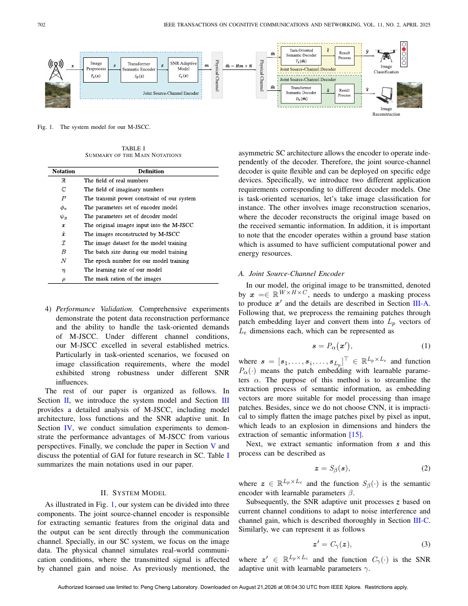</a><figcaption><b>架构/方法证据页</b>｜来源：《GAI-Enhanced Robust Semantic Communication With Asymmetric Architecture》，PDF p.3；原图题/表题：The system model for our M-JSCC.。 <a href='https://doi.org/10.1109/tccn.2024.3520132'>核对论文</a></figcaption></figure><figure><a href='assets/2025_gai-enhanced-robust-semantic-communication-with-asymmetric-architecture_result_p8.png' target='_blank'>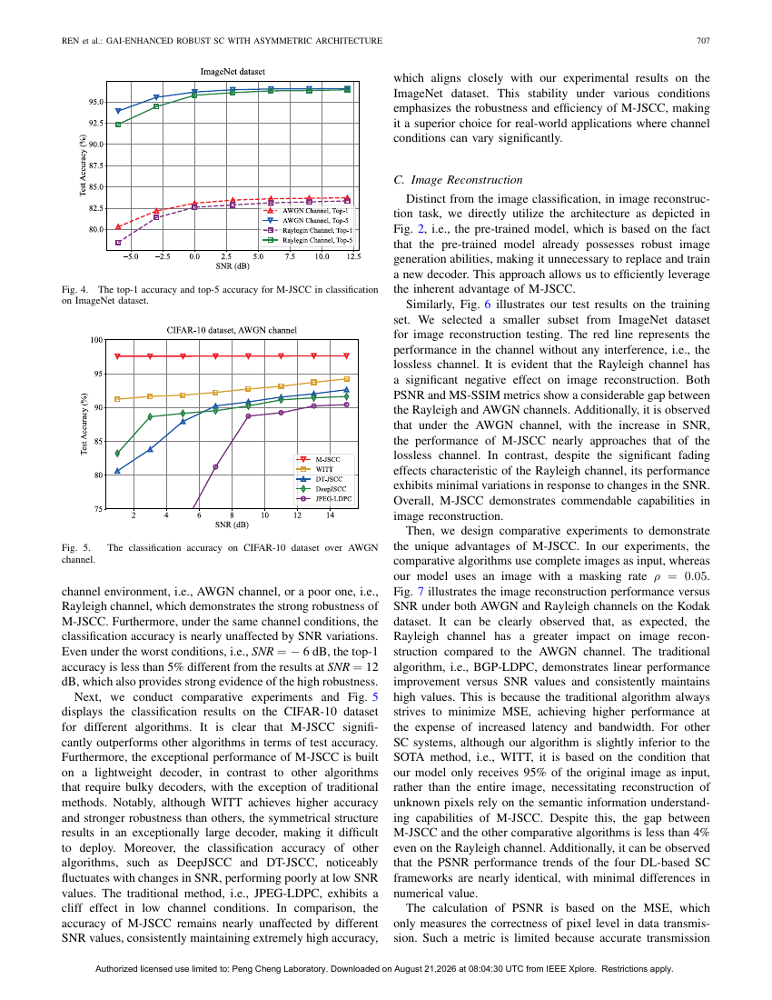</a><figcaption><b>关键结果证据页</b>｜来源：《GAI-Enhanced Robust Semantic Communication With Asymmetric Architecture》，PDF p.8；原图题/表题：The top-1 accuracy and top-5 accuracy for M-JSCC in classification the inherent advantage of M-JSCC. on ImageNet dataset. Similarly,。 <a href='https://doi.org/10.1109/tccn.2024.3520132'>核对论文</a></figcaption></figure></div>
</article>
<article class="paper" id="generative-ai-empowered-semantic-feature-multiple-access-sfma-over-wireless-networks" data-year="2025" data-tier="core">
  <div class="paper-head"><div><div><span class="tag core">核心纳入</span><span class="tag year">2025</span></div><h2>Generative AI Empowered Semantic Feature Multiple Access (SFMA) Over Wireless Networks</h2></div><a class="pdf" href="https://doi.org/10.1109/tccn.2025.3529692">DOI / IEEE 页面</a></div>
  <div class="facts"><div><b>作者</b>Jiaxiang Wang、Yinchao Yang、Zhaohui Yang、Chongwen Huang、Mingzhe Chen、Zhaoyang Zhang、Mohammad Shikh-Bahaei</div><div><b>出版信息</b>Vol. 11, No. 2, pp. 791-804</div><div><b>DOI / IEEE ID</b><a href="https://doi.org/10.1109/tccn.2025.3529692">10.1109/tccn.2025.3529692</a> / 10841377</div><div><b>任务</b>语义网络与资源分配</div><div><b>技术谱系</b>学习式语义 feature；数字接口需由正文具体实现判定</div><div><b>年份口径</b>formal TCCN volume year</div></div>
  <div class="verdict"><b>是否属于严格数字语义通信：</b>系统层相关；没有足够证据把它判为严格数字语义通信。</div>
  <h3>实验设置</h3><div class="grid3"><div><b>数据集/场景</b>CIFAR-10</div><div><b>Baseline</b>HM、FEC、GAN、PPO、SAC、JSCC、IB</div><div><b>指标与信道条件</b>PSNR、SSIM、MS-SSIM、LPIPS、MSE、mAP、accuracy、NME、energy、VoI、MOS、WER、CER<br><span class="muted">SNR：10 dB、104 dB、19dB、1dB、4dB</span></div></div>
  <h3>Introduction 的六步讲述逻辑</h3><ol class='story'><li><b>已有进展：</b>multaneously transmitted optimization [17]. video frames, we formulate an optimization problem Currently, several works [9], [10], [11], [12], [13] have aiming to maximize the system’s transmission rate while leveraged GAI for semantic communications.</li><li><b>现有问题：</b>To solve this problem, we first use model (CDDM) to learn the distribution of signals and assist simulations to verify that the standard equation of the in removing channel noise for a JSCC image transmission SINR ratio cannot capture the performance of our SFMA semantic communication system.</li><li><b>为何重要：</b>We then introduce a weight parameter into the estimation of the channel state, thus improving the recov- the standard SINR equation to accurately capture the ery of semantic information.</li><li><b>提出方案：</b>To solve the first sub-problem, we introduce a the quality of the received images.</li><li><b>解决机制：</b>However, none of these user pairing algorithm to maximize the sum transmission works considered using multiple access (MA) techniques rate of the SFMA system while minimizing the temporal to improve semantic communication performance.</li><li><b>核心主张与证据目标：</b>Semantic Encoder and Decoder where pk ,1 and pk ,2 are the allocated power used for the Next, we introduce the models of our designed semantic semantic information transmission of user 1 and user 2 encoder and decoder. respectively in group k, ηk ,1 , ηk ,2 denote the power  allocation As shown in Fig.</li></ol>
  <h3>方法、变量与优化</h3><p><b>系统/信息流：</b>PDF p.2：smission. Our considered semantic system consists of one BS and multiple users. The users are paired into several groups and each group consists of two users. The BS first generates the semantic information of the source frames requested by users via semantic encoders. Then, the BS combines the semantic information that will be transmitted to the two users in a group into a single transmitted signal using their semantic featur PDF p.2：o the two users in a group into a single transmitted signal using their semantic features. The users will extract their frames from the combined semantic information. Compared to standard semantic communication systems, our designed system enables the Fig. 1. System model of a downlink SFMA single cell network. BS to simultaneously transmit data to the users within each group thus significantly improving spatial efficiency. • PDF p.2：d interference between signals at the semantic level, power allocation strategy to further improve each user’s and their impacts on semantic communication performance semantic transmission rate within each group. optimization. Simulation results show that our proposed method can improve The main contribution of our work is a novel multi-user the transmission rate by up to 24.8%, 45.8%, and 66.1% access semantic communication f PDF p.2：resource block to transmit information. access (OFDMA) schemes. To decrease inter-user interference, each user first extracts The rest of the paper is organized as follows: Section II its semantic feature, which will be transmitted over the elaborates on the system model of the downlink SFMA frame- shared resource block with other users. Due to the different work. Section III presents the semantic interference factor and seman</p><p><b>目标函数/联合训练证据：</b>PDF p.1：reless applications (e.g., smartphones, virtual reality glasses, robots, intermediate frame. To optimize transmission rates and temporal gaps between simultaneously transmitted frames, we formulate etc.) have emerged. However, current communication systems an optimization problem to maximize the system sum rate may not be able to support such emerging applications [1], [2]. while minimizing temporal gaps. We observe that the s PDF p.1：users with across devices, and managing semantic interference in multi- the highest preference value, a weighted combination of semantic transmission rate and temporal gap. Second, we optimize inter- user environments. group power allocation by formulating an optimization problem Several existing works [3], [4], [5], [6], [7], [8], [9], that allocates proper transmit power across all user groups [10], [11], [12], [13] have stu PDF p.2：gnificantly improving spatial efficiency. • To jointly optimize their transmission rates and the ability for information fusion and the corresponding network temporal gaps between the simultaneously transmitted optimization [17]. video frames, we formulate an optimization problem Currently, several works [9], [10</p>
  <h3>数字化方案与传输开销</h3><p><b>传输表示证据：</b>PDF p.4：x tk1,1 , x ^ tk1,1 + MSE x tk2,2 , x ^ tk2,2 , (5) 2 2 we integrate an attention mechanism to enhance the inter- Ψ dependencies among image pixels, thereby minimizing the where Ψ = (x tk1,1 , x tk2,2 ) ∈ Dtrain , Dtrain is the training mutual interference of latent feature vectors generated from dataset, and MSE(x , x^ ) = n1 x − x ^ 2 . two frames. The specific structure of the encoder is illustrated as follows: B. GAI-Bas PDF p.4：predicted intermediate frame x̄kt̄i,i and the raw intermediate frames xkt̄i,i . To maintain pairwise relationship. • Convolutional layers: several convolutional layers are sharpness and preserve the edges of the generated interpolated utilized to compress the latent feature vector. The final frames, thereby enhancing the overall quality of the video convolutional layer in the encoder aims to achieve the interpolation, the L1 l PDF p.10：in maintaining features of a frame by the pre-trained VGG network and similar quality for multiple users, thus demonstrating the computes the differences between the frames in the feature robustness of the scheme. space. Let f¯l , f l represent the normalized feature map by layer l of the VGG network with the input x̄ and x . The LPIPS is C. Video Frame Interpolation Performance calculated by We evaluate the performance of the</p><p><b>调制/信道编码线索：</b>未自动检出固定调制/信道编码名称</p><p><b>可复核开销与缺失信息：</b>输入/分辨率线索：32 × 32。feature/token/latent 尺寸线索：正文未给出可稳定自动定位的条目。码本线索：正文未给出可稳定自动定位的条目。bit/bpp/速率线索：24-bit。CBR/压缩率线索：compression ratio、compression ratio which characterizes the available、compression ratio γ = 1/3。该论文偏系统/理论层，正文未必给出可复核的 encoder feature map 与 payload 长度。</p><div class="formula">\[N_{tx}=N_{payload}+N_{side}+N_{protection};\quad \text{缺失项必须标记为未知}\]</div>
  <h3>信道处理机制</h3><div class="channel"><p><b>分类：</b>类别 5：信道/资源进入系统优化，但 payload 数字化接口不完整</p><p><b>正文信道证据：</b>PDF p.1：em to maximize the system sum rate may not be able to support such emerging applications [1], [2]. while minimizing temporal gaps. We observe that the standard Semantic communications that enable devices to exploit the signal-to-interference-plus-noise ratio (SINR) equation does not knowledge of the transmitter and receivers to extract and accurately capture the performance of our semantic communica- tion system. Therefore, we PDF p.1：ion does not knowledge of the transmitter and receivers to extract and accurately capture the performance of our semantic communica- tion system. Therefore, we introduce a weight parameter into the transmit data meaning instead of the entire source data seems SINR equation to better represent the system’s performance. Due a promising solution. However, realizing semantic commu- to the complexity introduced by the weight parame PDF p.1：s performance. Due a promising solution. However, realizing semantic commu- to the complexity introduced by the weight parameter’s depen- nications faces several challenges such as efficient semantic dence on transmit power, we propose a three-step solution. First, information extraction, robustness to errors, interoperability we develop a user pairing algorithm that pairs two users with across devices, and managing semantic i PDF p.1：weight parameter’s depen- nications faces several challenges such as efficient semantic dence on transmit power, we propose a three-step solution. First, information extraction, robustness to errors, interoperability we develop a user pairing algorithm that pairs two users with across devices, and managing semantic interference in multi- the highest preference value, a weighted combination of semantic transmission rate and tem</p><p><b>decoder 实际收到：</b>由论文系统模型定义的语义 feature、任务状态或传统译码后数据</p><p><b>是否联合优化：</b>是/部分：目标或训练证据与物理信道同时出现。</p><p><b>是否真正处理 bit/index/token/packet error：</b>未形成可复核的 bit/index/token 错误闭环。</p></div>
  <h3>主要结果、局限与 Codex 判断</h3><p><b>证据化结果：</b>PDF p.1：ansmission across different modal- minimum rate requirement. Third, we address intra-group power ities. In particular, the authors in [3] proposed an end-to-end allocation to enhance the performance of each user. Simulation results demonstrate that our method improves transmission semantic communication system that leverages the transformer rates by up to 24.8%, 45.8%, and 66.1% compared to fixed- to enhance the learning abili PDF p.1：eme for image data transmission. The authors Zhaohui Yang.) Jiaxiang Wang, Yinchao Yang, and Mohammad Shikh-Bahaei are with in [8] studied the combination of data compression and the Department of Engineering, King’s College London, WC2R 2LS channel coding to improve video transmission performance London, U.K. (e-mail: jiaxiang.wang@kcl.ac.uk; yinchao.yang@kcl.ac.uk; with various channel conditions. Meanwhile, a number of prio PDF p.2：irst sub-problem, we introduce a the quality of the received images. However, none of these user pairing algorithm to maximize the sum transmission works considered using multiple access (MA) techniques rate of the SFMA system while minimizing the temporal to improve semantic communication performance. In fact, gap between simultaneously transmitted frames. Then, by using MA techniques, devices can reuse spectrum from we optim PDF p.2：requirement. Finally, we optimize the intra-group communications, they did not capture the complex interac- power allocation based on the optimized inter-group tions and interference between signals at the semantic level, power allocation strategy to further improve each user’s and their impacts on semantic communication performance semantic transmission rate within each group. optimization. Simulation results show that our pr</p><p><b>独立判断：</b>没有完整离散接口，无法直接回答 bit/index/token 跳变问题。 未显式注入离散误码/丢包，鲁棒性结论不应外推到真实数字链路。</p>
  <div class="figs"><figure><a href='assets/2025_generative-ai-empowered-semantic-feature-multiple-access-sfma-over-wireless-networks_method_p3.png' target='_blank'></a><figcaption><b>架构/方法证据页</b>｜来源：《Generative AI Empowered Semantic Feature Multiple Access (SFMA) Over Wireless Networks》，PDF p.3；原图题/表题：The framework of GAI-enabled semantic video transmission in the SFMA system.。 <a href='https://doi.org/10.1109/tccn.2025.3529692'>核对论文</a></figcaption></figure><figure><a href='assets/2025_generative-ai-empowered-semantic-feature-multiple-access-sfma-over-wireless-networks_result_p9.png' target='_blank'>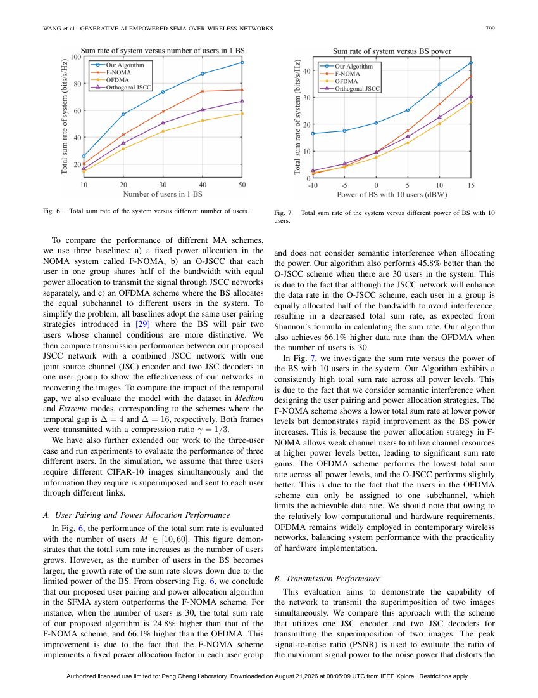</a><figcaption><b>关键结果证据页</b>｜来源：《Generative AI Empowered Semantic Feature Multiple Access (SFMA) Over Wireless Networks》，PDF p.9；原图题/表题：Total sum rate of the system versus different number of users.。 <a href='https://doi.org/10.1109/tccn.2025.3529692'>核对论文</a></figcaption></figure></div>
</article>
<article class="paper" id="generative-ai-meets-wireless-networking-an-interactive-paradigm-for-intent-driven-communicat" data-year="2025" data-tier="related">
  <div class="paper-head"><div><div><span class="tag related">相关但非核心</span><span class="tag year">2025</span></div><h2>Generative AI Meets Wireless Networking: An Interactive Paradigm for Intent-Driven Communications</h2></div><a class="pdf" href="https://doi.org/10.1109/tccn.2025.3567613">DOI / IEEE 页面</a></div>
  <div class="facts"><div><b>作者</b>Xiaoqi Qin、Mengying Sun、Jincheng Dai、P. Ma、Yuecheng Cao、Jingjing Zhang、Jiacheng Wang、Xiaodong Xu、Ping Zhang、Dusit Niyato</div><div><b>出版信息</b>Vol. 11, No. 4, pp. 2056-2077</div><div><b>DOI / IEEE ID</b><a href="https://doi.org/10.1109/tccn.2025.3567613">10.1109/tccn.2025.3567613</a> / 10990238</div><div><b>任务</b>语义网络与资源分配</div><div><b>技术谱系</b>学习式语义 feature；数字接口需由正文具体实现判定</div><div><b>年份口径</b>TCCN Early Access / formal volume pending</div></div>
  <div class="verdict"><b>是否属于严格数字语义通信：</b>系统层相关；没有足够证据把它判为严格数字语义通信。</div>
  <h3>实验设置</h3><div class="grid3"><div><b>数据集/场景</b>正文未给出可稳定自动定位的条目</div><div><b>Baseline</b>HM、FEC、ViT、GAN、VAE、PPO、SAC、JSCC、IB、GPT、LLaMA</div><div><b>指标与信道条件</b>SSIM、MS-SSIM、FID、bitrate、mAP、accuracy、NME、QoE、latency、energy、semantic similarity、throughput、AoI、VoI、MOS、WER、CER<br><span class="muted">SNR：正文未给出可稳定自动定位的条目</span></div></div>
  <h3>Introduction 的六步讲述逻辑</h3><ol class='story'><li><b>已有进展：</b>QIN et al.: GENAI MEETS WIRELESS NETWORKING 2057 Fig.</li><li><b>现有问题：</b>AIGC technology extends beyond based transmission can provide intelligent services while text, images, and videos, also facilitating network design Authorized licensed use limited to: Peng Cheng Laboratory.</li><li><b>为何重要：</b>Unlike where the focus is on conveying the intended meaning or traditional transmission and networking methods, interactive context of the information, rather than just transmitting raw wireless networks satisfy human needs through feedback and data [8].</li><li><b>提出方案：</b>To address this, we review an analysis of existing challenges and prospective research intent consistency in QoE modeling, utilizing reinforcement directions, highlighting the transformative potential of GenAI in learning from human feedback (RLHF) and advanced prompt shaping the future of intent-driven wireless networks. engineering to seamlessly integrate human intent into network configurations.</li><li><b>解决机制：</b>To address this, we review an analysis of existing challenges and prospective research intent consistency in QoE modeling, utilizing reinforcement directions, highlighting the transformative potential of GenAI in learning from human feedback (RLHF) and advanced prompt shaping the future of intent-driven wireless networks. engineering to seamlessly integrate human intent into network configurations.</li><li><b>核心主张与证据目标：</b>The other chal- tional QoE assessment, necessitating LLM-driven approaches. lenge lies in developing a comprehensive QoE evaluation Furthermore, bit-based transmission models introduce ineffi- model that aligns with user intents and can provide ciencies in human-centered applications, highlighting the need feedback directly, replacing the need for human input. for intent-driven, GenAI-powered transmission solutions. • High-efficiency network adaptation and scalability: The The interactive wireless network differs from intent-based main challenge in achieving high-efficiency network networks in several ways.</li></ol>
  <h3>方法、变量与优化</h3><p><b>系统/信息流：</b>PDF p.6：ing, fine-tuning, generative using a generate-discriminate mechanism for tasks like traffic capabilities, and the self-attention mechanism define their prediction and anomaly detection. In contrast, LLMs, based functionality. LLMs are built on the Transformer-Decoder on Transformer architectures, specialize in natural language architecture, utilizing a large parameter scale and pre-training, processing, leveraging RLHF and pro PDF p.13：erative intent-driven approaches across various network management capability of GenAI technologies to enhance the performance functions, including dynamic adaptability, task scheduling, of semantic communication, including the accuracy and energy and RA. The proposed frameworks and methods, such efficiency of information transmission, as well as the QoE as intent-aware reinforcement learning, causal inference, at the receiver PDF p.14：the transmit- SemCom, introducing a content generation level above the ter encodes a semantic segmentation map and low-resolution semantic level and proposing a framework for semantic image, and the receiver reconstructs the high-resolution image information encoders and decoders based on AIGC technol- using a denoising diffusion probabilistic model (DDPM). The ogy. This framework adapted to various content types, quality auth PDF p.14：- SemCom, introducing a content generation level above the ter encodes a semantic segmentation map and low-resolution semantic level and proposing a framework for semantic image, and the receiver reconstructs the high-resolution image information encoders and decoders based on AIGC technol- using a denoising diffusion probabilistic model (DDPM). The ogy. This framework adapted to various content types, quality authors in [133]</p><p><b>目标函数/联合训练证据：</b>PDF p.7：three-stage prompt method to these strategies face significant challenges, including overfit- improve accuracy and efficiency in table QA tasks. Prompt ting risks, scalability limitations, and a strong dependence on optimization can be further refined through end-to-end train- high-quality human feedback. Overcoming these challenges ing. For instance, the authors in [56] introduced a strategy is crucial for advancing the appli</p>
  <h3>数字化方案与传输开销</h3><p><b>传输表示证据：</b>PDF p.6：ks: GANs consist of a AI inference capabilities, handle intent analysis, adaptive model generator network and a discriminator network [33], [34]. fine-tuning, and content generation using GenAI, such as diffu- The generator network takes random samples from a latent sion models. They also perform semantic coding/decoding and space as input and aims to produce outputs that closely extract meaningful insights from raw data to en PDF p.6：lex data distri- butions and generating high-quality samples, and have led to A. Basics of Large Language Models and Generative several variants, including stable diffusion models, denoising Artificial Intelligence diffusion probabilistic models (DDPMs) [39], latent diffusion 1) Large Language Models: LLMs, combining GenAI and models [43], and conditional diffusion models [44]. natural language processing (NLP), have emerged a PDF p.7：ds, diverse prompts, model, RL, optimization, and feedbacks. The reward model is and advanced policy gradient methods for performance divided into four categories: explicit/implicit, point/preference, improvement and fine-tuning process enhancements. response/token-level, and negative/positive. The feedbacks The fine-tuning process is crucial in the LLM fields. design is further subdivided into binary/preference, human/AI, Org PDF p.19：guided diffusion models,” 2021, arXiv:2112.10741. Learn., 2023, pp. 33229–33239. [43] R. Rombach, A. Blattmann, D. Lorenz, P. Esser, and B. Ommer, [71] T. Zhang, F. Liu, J. Wong, P. Abbeel, and J. E. Gonzalez, “The wisdom “High-resolution image synthesis with latent diffusion models,” of hindsight makes language models better instruction followers,” 2023, in Proc. IEEE/CVF Conf. Comput. Vis. Pattern Recognit., 2022, arXiv:2302</p><p><b>调制/信道编码线索：</b>未自动检出固定调制/信道编码名称</p><p><b>可复核开销与缺失信息：</b>输入/分辨率线索：正文未给出可稳定自动定位的条目。feature/token/latent 尺寸线索：正文未给出可稳定自动定位的条目。码本线索：正文未给出可稳定自动定位的条目。bit/bpp/速率线索：正文未给出可稳定自动定位的条目。CBR/压缩率线索：正文未给出可稳定自动定位的条目。该论文偏系统/理论层，正文未必给出可复核的 encoder feature map 与 payload 长度。</p><div class="formula">\[N_{tx}=N_{payload}+N_{side}+N_{protection};\quad \text{缺失项必须标记为未知}\]</div>
  <h3>信道处理机制</h3><div class="channel"><p><b>分类：</b>类别 5：信道/资源进入系统优化，但 payload 数字化接口不完整</p><p><b>正文信道证据：</b>PDF p.1：asso- Traditional communication systems optimize throughput, ciate editor coordinating the review of this article and approving it for latency, and reliability but often overlook user intent, leading publication was Y. Hu. (Xiaoqi Qin and Mengying Sun are co-first authors.) (Corresponding author: Xiaodong Xu.) to inefficient resource allocation and decision delays. Existing Xiaoqi Qin, Mengying Sun, Jincheng Dai, Peixuan Ma, Y PDF p.5：e ligent forwarding mechanisms to recognize the semantic user’s content requests and QoE assessments. To establish value and priority of data, ensuring that critical semantic the mapping between user satisfaction and network policy information is transmitted first. By collaborating with automatically, QoE modeling needs to be developed the semantic layer, the network layer can dynamically by leveraging AI technologies. More im PDF p.5：t, allowing the network to prioritize and transmit meaning- semantic, and network-layer demands. It dynamically ful information efficiently. Notably, the transmission of adjusts transmission power, coding method, and mod- requested VR videos also depends on effective feature ulation based on service priorities, optimizing latency, representation at the semantic layer. bandwidth, and reliability. Collaboration with the seman- • PDF p.6：. generation, feature extraction, and distribution modeling, Key processes such as pre-training, fine-tuning, generative using a generate-discriminate mechanism for tasks like traffic capabilities, and the self-attention mechanism define their prediction and anomaly detection. In contrast, LLMs, based functionality. LLMs are built on the Transformer-Decoder on Transformer architectures, specialize in natural language architect</p><p><b>decoder 实际收到：</b>由论文系统模型定义的语义 feature、任务状态或传统译码后数据</p><p><b>是否联合优化：</b>是/部分：目标或训练证据与物理信道同时出现。</p><p><b>是否真正处理 bit/index/token/packet error：</b>未形成可复核的 bit/index/token 错误闭环。</p></div>
  <h3>主要结果、局限与 Codex 判断</h3><p><b>证据化结果：</b>PDF p.4：ate the construct of top-down interactive wireless networks. It provides a detailed design framework and a technical roadmap for future service applications in interactive wireless networks, aiming to enhance the network’s responsive- ness to human intent and improve the efficiency of interaction and information exchange. By integrating cutting-edge technologies, this work lays the foundation for the evolution of more intellig PDF p.5：network parameters based standing and knowledge graphs, it captures user data on QoE assessments that consider factors such as latency, meanings and relationships, enabling semantic compres- clarity, resolution, and content preferences. sion and reasoning to improve communication efficiency. • Physical Transmission Layer: The physical layer handles The semantic knowledge base in the semantic layer signal modulation, coding, an PDF p.6：, particularly through the SemCom technologies such as JSCC, semantic knowl- self-attention mechanism and extensive data sets. Multimodal edge bases, and integrated coding-modulation techniques LLMs integrate multiple data types (e.g., text, images, audio) to improve VR video transmission efficiency. to process and understand complex inputs, leveraging shared This paper introduces a cloud-edge-device collaborative representati PDF p.6：etwork strives to deceive the discriminator power semantic communication and intelligent networking. network. The two networks engage in a continuous adversarial This framework establishes a “human-in-the-loop” paradigm, process, adjusting their parameters to outperform each other. enabling efficient task planning and precise network responses The ultimate objective is for the discriminator network to for intent-driven wireles</p><p><b>独立判断：</b>没有完整离散接口，无法直接回答 bit/index/token 跳变问题。 未显式注入离散误码/丢包，鲁棒性结论不应外推到真实数字链路。 未报告统一可复核的 payload bit 数/CBR，跨论文带宽比较受限。 该文属于边界谱系，不能用它代表端到端语义通信主线。</p>
  <div class="figs"><figure><a href='assets/2025_generative-ai-meets-wireless-networking-an-interactive-paradigm-for-intent-driven-communicat_method_p2.png' target='_blank'></a><figcaption><b>架构/方法证据页</b>｜来源：《Generative AI Meets Wireless Networking: An Interactive Paradigm for Intent-Driven Communications》，PDF p.2；原图题/表题：In addition, the abbreviations commonly used the completion of tasks aligned with these intentions. The throughout this survey are listed in。 <a href='https://doi.org/10.1109/tccn.2025.3567613'>核对论文</a></figcaption></figure><figure><a href='assets/2025_generative-ai-meets-wireless-networking-an-interactive-paradigm-for-intent-driven-communicat_result_p3.png' target='_blank'></a><figcaption><b>关键结果证据页</b>｜来源：《Generative AI Meets Wireless Networking: An Interactive Paradigm for Intent-Driven Communications》，PDF p.3；原图题/表题：L IST OF A BBREVIATIONS。 <a href='https://doi.org/10.1109/tccn.2025.3567613'>核对论文</a></figcaption></figure></div>
</article>
<article class="paper" id="generative-ai-driven-incentive-mechanism-for-semantic-communications-in-rsma-networks" data-year="2025" data-tier="core">
  <div class="paper-head"><div><div><span class="tag core">核心纳入</span><span class="tag year">2025</span></div><h2>Generative AI-Driven Incentive Mechanism for Semantic Communications in RSMA Networks</h2></div><a class="pdf" href="https://doi.org/10.1109/tccn.2025.3556751">DOI / IEEE 页面</a></div>
  <div class="facts"><div><b>作者</b>Dongqing Liu、Yongwen Liu、Lei Zhang、Abdelhakim Hafid、Lyes Khoukhi、Mingyuan Li、Yutao Liu、Yadong Dong</div><div><b>出版信息</b>Vol. 11, No. 3, pp. 1708-1722</div><div><b>DOI / IEEE ID</b><a href="https://doi.org/10.1109/tccn.2025.3556751">10.1109/tccn.2025.3556751</a> / 10947007</div><div><b>任务</b>语义网络与资源分配</div><div><b>技术谱系</b>学习式语义 feature；数字接口需由正文具体实现判定</div><div><b>年份口径</b>formal TCCN volume year</div></div>
  <div class="verdict"><b>是否属于严格数字语义通信：</b>系统层相关；没有足够证据把它判为严格数字语义通信。</div>
  <h3>实验设置</h3><div class="grid3"><div><b>数据集/场景</b>COCO、ImageNet、Cityscapes</div><div><b>Baseline</b>HM、FEC、ViT、GAN、ELIC、ResNet、DeepLab、PPO、SAC、IB</div><div><b>指标与信道条件</b>FID、bitrate、mAP、accuracy、NME、latency、energy、semantic similarity、throughput、AoI、MOS、WER、CER<br><span class="muted">SNR：-15 dB、-20 dB、-30 dB、0 dB、15 dB、30 dB</span></div></div>
  <h3>Introduction 的六步讲述逻辑</h3><ol class='story'><li><b>已有进展：</b>tion problem. these challenges, offering a robust mathematical framework Section VI details our proposed generative AI-driven con- for modeling scenarios with asymmetric information between tract method.</li><li><b>现有问题：</b>tion problem. these challenges, offering a robust mathematical framework Section VI details our proposed generative AI-driven con- for modeling scenarios with asymmetric information between tract method.</li><li><b>为何重要：</b>These gaps to ensure outputs adhere to specified constraints or physical highlight the need for more advanced approaches to fully principles.</li><li><b>提出方案：</b>Finally, we review environments [16]. the application of diffusion models to optimization problems, In this paper, we propose a comprehensive framework that emphasizing their potential for solving complex wireless integrates RSMA, semantic communications, and diffusion communication challenges. models to optimize next-generation wireless networks.</li><li><b>解决机制：</b>Our main contributions are: • A unified framework that seamlessly combines RSMA A.</li><li><b>核心主张与证据目标：</b>These approaches demonstrate models with contract theory, our framework enables joint that carefully designed contracts can effectively align the optimization of both communication resources and semantic Authorized licensed use limited to: Peng Cheng Laboratory.</li></ol>
  <h3>方法、变量与优化</h3><p><b>系统/信息流：</b>PDF p.1：works. We present a unified model that combines RSMA with semantic communications to enhance both spectral effi- T sive extended reality, holographic communications, autonomous vehicles, and intelligent manufacturing necessi- ciency and semantic fidelity. Our system model focuses on tates wireless networks to deliver unprecedented performance a downlink semantic communication system with a multi- in terms of high transmission PDF p.1：ories require extracts key information, i.e., free-space detection, interest points, object attributes, and spatial relationships, from image data. precise synchronization across thousands of sensors and actu- A loss function is designed to train the semantic encoder and ators, while metaverse applications need both high bandwidth RSMA scheme, incorporating semantic extraction, partitioning, for immersive experiences and low l PDF p.1：etric to assess the quality and utility of the integration of cutting-edge technologies such as rate the extracted semantic information. Extensive simulation results splitting multiple access (RSMA), semantic communications, demonstrate the superiority of our proposed framework over and generative artificial intelligence (AI). existing approaches in terms of system throughput, energy Traditional orthogonal multiple access (OMA PDF p.2：isms. While this synergy network conditions and user requirements. could enhance both spectral efficiency and semantic fidelity, • Extensive performance evaluation demonstrating the supe- user heterogeneity and information asymmetry pose criti- riority of our proposed framework across diverse network cal challenges [12], [13]. Users in semantic communication scenarios. Our results show significant improvements in systems have</p><p><b>目标函数/联合训练证据：</b>PDF p.1：rnet of Things (IIoT) applications in smart factories require extracts key information, i.e., free-space detection, interest points, object attributes, and spatial relationships, from image data. precise synchronization across thousands of sensors and actu- A loss function is designed to train the semantic encoder and ators, while metaverse applications need both high bandwidth RSMA scheme, incorporating semantic extraction, p PDF p.2：ic-aware resource allocation Section III presents the system model and architectural design. algorithms. Section IV elaborates on the RSMA model for semantic com- Contract theory emerges as a promising solution to address munications. Section V formulates our optimization problem. these challenges, offering a robust mathematical framework Section VI details our proposed generative AI-driven con- for modeling scenarios with asy PDF p.2：icated and adaptive incen- mechanisms, particularly focusing on contract theory-based tive mechanisms capable of handling dynamic wireless solutions for wireless resource allocation. Finally, we review environments [16]. the application of diffusion models to optimization problems, In this paper, we propose a com</p>
  <h3>数字化方案与传输开销</h3><p><b>传输表示证据：</b>PDF p.4：areas in the image that are safe for intended tasks. navigation. We employ DeepLabv3+ [39] for free-space A representative application of this system model is free- detection. space information sharing in smart city or autonomous driving • Interest Points and Descriptors (pk ∈ RNk ×2 , dk ∈ scenarios. In this context, the BS processes environmen- RNk ×D ): These represent salient points in the visual field tal images to identi PDF p.4：us driving • Interest Points and Descriptors (pk ∈ RNk ×2 , dk ∈ scenarios. In this context, the BS processes environmen- RNk ×D ): These represent salient points in the visual field tal images to identify safe-to-navigate areas. The detected along with their descriptors, where Nk represents the free-space information is then semantically encoded and number of detected interest points for user k and D is transmitted to the use PDF p.4：he detected along with their descriptors, where Nk represents the free-space information is then semantically encoded and number of detected interest points for user k and D is transmitted to the users. This approach allows for efficient the dimension of each descriptor vector. We utilize the communication of critical safety information without the need Dense Invariant Spatial Keypoint (DISK) model [40]. Mk to transmit entire PDF p.6：s, we can characterize the and skip connections from encoder features to reconstruct achievable rates in the system. The common stream rate Rc = the free-space binary mask îk . mink ∈K {log2 (1 + SINRc,k )} and private stream rate Rp,k = • Interest Point and Descriptor Reconstruction: The log2 (1 + SINRp,k ) at user k collectively determine the total decoder employs a multi-layer perceptron with positional achievable rate Rk</p><p><b>调制/信道编码线索：</b>未自动检出固定调制/信道编码名称</p><p><b>可复核开销与缺失信息：</b>输入/分辨率线索：正文未给出可稳定自动定位的条目。feature/token/latent 尺寸线索：正文未给出可稳定自动定位的条目。码本线索：正文未给出可稳定自动定位的条目。bit/bpp/速率线索：3.9 bps、3 bps、2 bps。CBR/压缩率线索：compression ratios show distinct patterns,、compression ratio suggests a balanced approach between data、compression ratio with increasing input size, demonstrating、Compression Ratio (CR) measures how much the seman- cost in terms of compression effic、Compression ratios for different data types (text, image, sensor)、Compression ratio vs、compression ratio for different number of users (K = 3, 4, 5)。该论文偏系统/理论层，正文未必给出可复核的 encoder feature map 与 payload 长度。</p><div class="formula">\[N_{tx}=N_{payload}+N_{side}+N_{protection};\quad \text{缺失项必须标记为未知}\]</div>
  <h3>信道处理机制</h3><div class="channel"><p><b>分类：</b>类别 5：信道/资源进入系统优化，但 payload 数字化接口不完整</p><p><b>正文信道证据：</b>PDF p.1：ns need both high bandwidth RSMA scheme, incorporating semantic extraction, partitioning, for immersive experiences and low latency for real-time reconstruction, and task-specific components. Our framework interactions. To meet these demanding requirements, effective includes a multi-objective performance evaluation that considers solutions in network architecture, spectrum management, and both conventional metrics and semanti PDF p.1：commu- While OMA techniques simplify receiver design, they severely nication, contract theory, diffusion model. limit the number of simultaneously served users, resulting in inefficient resource utilization in dense networks. Non- orthogonal multiple access (NOMA) emerged as a promising Received 1 July 2024; revised 21 November 2024 and 10 February 2025; solution to these limitations, enabling multiple users to share accepted PDF p.1：rted in part by the Natural Science Foundation of Henan Province under Grant 242300420677; in part by the niques such as power-domain multiplexing and successive Joint Construction Project for Medical Science and Technology of Henan interference cancellation, NOMA achieves increased spectral Province under Grant LHGJ20230167; and in part by the National Natural efficiency, enhanced user fairness, and massive connectivity Scien PDF p.1：ced user fairness, and massive connectivity Science Foundation of China under Grant 62102368. The associate editor coordinating the review of this article and approving it for publication was potential. Z. Xiong. (Corresponding author: Dongqing Liu.) However, NOMA’s inherent limitations, including substan- Dongqing Liu, Mingyuan Li, Yutao Liu, and Yadong Dong are tial performance degradation under imperfect channel state with</p><p><b>decoder 实际收到：</b>由论文系统模型定义的语义 feature、任务状态或传统译码后数据</p><p><b>是否联合优化：</b>是/部分：目标或训练证据与物理信道同时出现。</p><p><b>是否真正处理 bit/index/token/packet error：</b>未形成可复核的 bit/index/token 错误闭环。</p></div>
  <h3>主要结果、局限与 Codex 判断</h3><p><b>证据化结果：</b>PDF p.2：hared knowledge between transmitter and receiver generative capabilities, this approach explores high- and incorporating deep learning techniques, semantic com- dimensional solution spaces more effectively than munication achieves superior performance through reduced traditional optimization methods, achieving superior con- data volume, improved energy efficiency, and context-aware vergence and solution quality. transmission s PDF p.2：approach explores high- and incorporating deep learning techniques, semantic com- dimensional solution spaces more effectively than munication achieves superior performance through reduced traditional optimization methods, achieving superior con- data volume, improved energy efficiency, and context-aware vergence and solution quality. transmission strategies [9], [10], [11]. This fundamental shift • A multi-objective evaluatio PDF p.2：xt-aware vergence and solution quality. transmission strategies [9], [10], [11]. This fundamental shift • A multi-objective evaluation framework that considers in communication design principles opens new possibilities both conventional metrics (e.g., bitrate reduction and for efficient and intelligent information transmission in next- sum-rate) and semantic accuracy in multi-user RSMA generation wireless networks. environment PDF p.2：performance evaluation demonstrating the supe- user heterogeneity and information asymmetry pose criti- riority of our proposed framework across diverse network cal challenges [12], [13]. Users in semantic communication scenarios. Our results show significant improvements in systems have diverse requirements for data rates, semantic system throughput, energy efficiency, and semantic fidelity accuracy, and latency, while posses</p><p><b>独立判断：</b>没有完整离散接口，无法直接回答 bit/index/token 跳变问题。 未显式注入离散误码/丢包，鲁棒性结论不应外推到真实数字链路。</p>
  <div class="figs"><figure><a href='assets/2025_generative-ai-driven-incentive-mechanism-for-semantic-communications-in-rsma-networks_method_p12.png' target='_blank'></a><figcaption><b>架构/方法证据页</b>｜来源：《Generative AI-Driven Incentive Mechanism for Semantic Communications in RSMA Networks》，PDF p.12；原图题/表题：presents the sum rate performance comparison of shows that increasing the SNR from 0 dB to 30 dB results in RSMA, NOMA, and OMA schemes for a system with。 <a href='https://doi.org/10.1109/tccn.2025.3556751'>核对论文</a></figcaption></figure><figure><a href='assets/2025_generative-ai-driven-incentive-mechanism-for-semantic-communications-in-rsma-networks_result_p13.png' target='_blank'>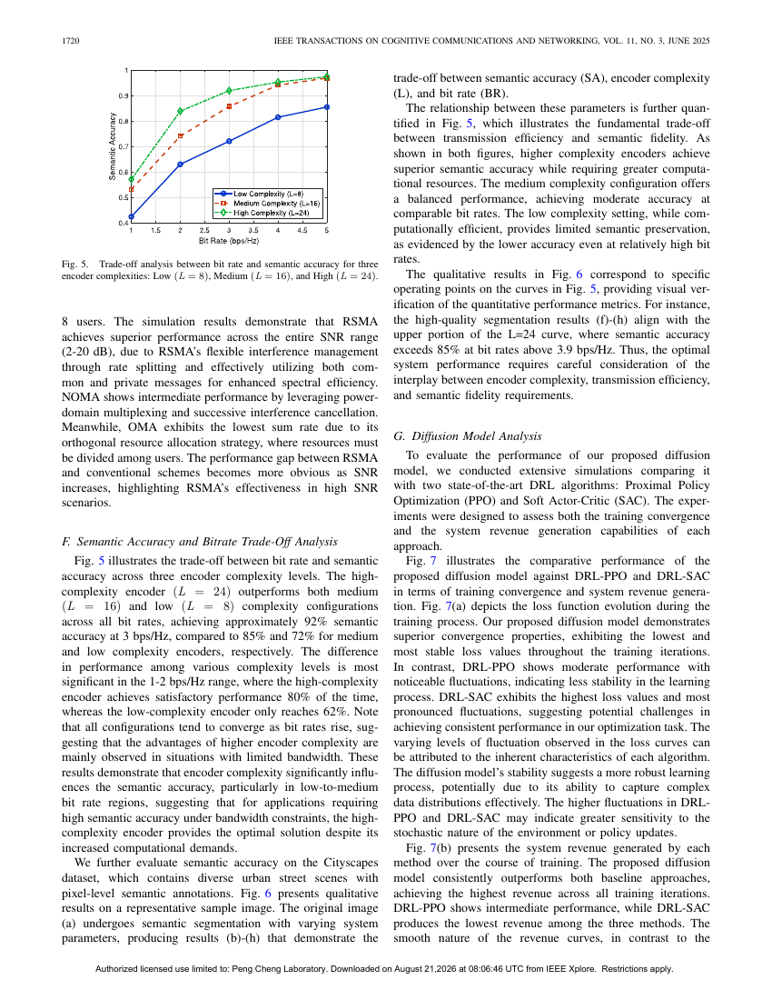</a><figcaption><b>关键结果证据页</b>｜来源：《Generative AI-Driven Incentive Mechanism for Semantic Communications in RSMA Networks》，PDF p.13；原图题/表题：Sum rate comparison of RSMA, NOMA, and OMA schemes versus performance. SNR.。 <a href='https://doi.org/10.1109/tccn.2025.3556751'>核对论文</a></figcaption></figure></div>
</article>
<article class="paper" id="generative-ai-driven-semantic-communication-networks-architecture-technologies-and-applicati" data-year="2025" data-tier="related">
  <div class="paper-head"><div><div><span class="tag related">相关但非核心</span><span class="tag year">2025</span></div><h2>Generative AI-Driven Semantic Communication Networks: Architecture, Technologies, and Applications</h2></div><a class="pdf" href="https://doi.org/10.1109/tccn.2024.3435524">DOI / IEEE 页面</a></div>
  <div class="facts"><div><b>作者</b>Chengsi Liang、Hongyang Du、Yao Sun、Dusit Niyato、Jiawen Kang、Dezong Zhao、Muhammad Ali Imran</div><div><b>出版信息</b>Vol. 11, No. 1, pp. 27-47</div><div><b>DOI / IEEE ID</b><a href="https://doi.org/10.1109/tccn.2024.3435524">10.1109/tccn.2024.3435524</a> / 10614204</div><div><b>任务</b>语义网络与资源分配</div><div><b>技术谱系</b>系统/理论层变量；论文未定义统一 payload bitstream</div><div><b>年份口径</b>formal TCCN volume year</div></div>
  <div class="verdict"><b>是否属于严格数字语义通信：</b>系统层相关；没有足够证据把它判为严格数字语义通信。</div>
  <h3>实验设置</h3><div class="grid3"><div><b>数据集/场景</b>正文未给出可稳定自动定位的条目</div><div><b>Baseline</b>LDPC、HM、FEC、ARQ、ViT、GAN、VAE、VQ-VAE、YOLO、PPO、SAC、DeepSC、DeepSC-S、DeepSC-ST、ASC、VIB、IB、HARQ、Reed-Solomon、BERT、GPT、CLIP</div><div><b>指标与信道条件</b>SSIM、FID、bitrate、MSE、mAP、accuracy、NME、latency、energy、semantic similarity、throughput、AoI、AoII、VoI、MOS、WER、CER<br><span class="muted">SNR：35 dB</span></div></div>
  <h3>Introduction 的六步讲述逻辑</h3><ol class='story'><li><b>已有进展：</b>10.1109/TCCN.2024.3435524 based interactions.</li><li><b>现有问题：</b>Authorized licensed use limited to: Peng Cheng Laboratory.</li><li><b>为何重要：</b>The associated thus leading to a low bandwidth utilization.</li><li><b>提出方案：</b>Generative artificial intelligence (GAI) has emerged understanding and future direction of GAI-driven SemCom as a rapidly burgeoning field demonstrating significant potential networks. in creating diverse content intelligently and automatically.</li><li><b>解决机制：</b>To support such artificial intelligence-generated content (AIGC)</li><li><b>核心主张与证据目标：</b>These two works delve into the a review of recent challenges and results in the field of detailed frameworks of SemCom networks assisted by GAI, GAI with application to mobile telecommunications networks. but without extensive discussions on information effectiveness References [14], [15] provide surveys of techniques, appli- and knowledge management in wireless networks.</li></ol>
  <h3>方法、变量与优化</h3><p><b>系统/信息流：</b>PDF p.1：llion to $4.4 trillion annually, and semantic effectiveness calculation of end-to-end GAI-driven significantly increasing the impact of all AI [2]. SemCom systems. Subsequently, we present innovative generation level and knowledge management strategies in the proposed networks, including knowledge construction, update, and sharing, A. Background ensuring accurate and timely knowledge-based reasoning. Finally, we explore severa PDF p.2：message’s meaning, fusing GAI to process any data format? The associated thus leading to a low bandwidth utilization. Furthermore, these semantics are produced and interpreted by GAI through traditional systems focus on improving network performance semantic encoder/decoder in SemCom. However, basic in terms of data rate, latency, throughput, reliability, etc., which data processing falls short of meeting the demands posed are PDF p.2：’s meaning, fusing GAI to process any data format? The associated thus leading to a low bandwidth utilization. Furthermore, these semantics are produced and interpreted by GAI through traditional systems focus on improving network performance semantic encoder/decoder in SemCom. However, basic in terms of data rate, latency, throughput, reliability, etc., which data processing falls short of meeting the demands posed are tightl PDF p.2：make intelligent decisions Additionally, the computational time and power required based on the knowledge of the communication pairs, thus for training must be factored in. During transmission, failing to adapt the knowledge-driven AIGC services [7]. channel encoders and decoders should adaptively com- Fortunately, semantic communication (SemCom), has been press semantic information based on varying channel regarded as a groun</p><p><b>目标函数/联合训练证据：</b>PDF p.10：36 IEEE TRANSACTIONS ON COGNITIVE COMMUNICATIONS AND NETWORKING, VOL. 11, NO. 1, FEBRUARY 2025 Transformer-based SemCom system with a new loss function transmission service. The author in [136] also introduce a to quantify the impact of semantic distortion, allowing for diffusion-based SemCom system with multimodal prompts for a dynamic balance between semantic compression loss and accurate content decoding.</p>
  <h3>数字化方案与传输开销</h3><p><b>传输表示证据：</b>PDF p.1：icle and approving it for publication was Z. Qin. (Corresponding author: Yao Sun.) due to the advanced computing ability. For instance, Claude, Chengsi Liang, Yao Sun, Dezong Zhao, and Muhammad Ali Imran are delivered by Anthropic’s GAI, could process 100,000 tokens with the James Watt School of Engineering, University of Glasgow, G12 8QQ of text (equal to about 75,000 words in a minute) by Glasgow, U.K. (e-mail: Chengsi.Liang PDF p.2：f SemCom and GAI in intelli- under the framework of traditional Shannon’s theory, that is, gent wireless communication networks inevitably encounters regardless of data format, all content is encoded into binary many challenges, including: bits via predefined codebooks for transmission [6]. They • Challenge 1: How to construct the SemCom systems concentrate solely on bits, neglecting the message’s meaning, fusing GAI to proces PDF p.6：input sequence into a fixed-dimensional representation As shown in Table II, we classify unimodal models based and subsequently decoding it. They provide a probabilis- on the type of input data they work with, including text, vision tic framework for learning latent representations and can (image and video) and audio. be used for controlled text generation by manipulating the 1) Text-to-Text: Text-to-text GAI models are partic PDF p.6：pe of input data they work with, including text, vision tic framework for learning latent representations and can (image and video) and audio. be used for controlled text generation by manipulating the 1) Text-to-Text: Text-to-text GAI models are particularly latent space. However, they struggle to capture long-range effective in tasks like text generation, machine translation, dependencies in text sequences due to their use o</p><p><b>调制/信道编码线索：</b>bpsk、harq、ldpc、reed-solomon</p><p><b>可复核开销与缺失信息：</b>输入/分辨率线索：16x16。feature/token/latent 尺寸线索：正文未给出可稳定自动定位的条目。码本线索：codebooks for transmission [6。bit/bpp/速率线索：正文未给出可稳定自动定位的条目。CBR/压缩率线索：compression ratio content allows for reasoning based on action/trajectory logic、coding rate reduction,” 2023, 3-family。该论文偏系统/理论层，正文未必给出可复核的 encoder feature map 与 payload 长度。</p><div class="formula">\[N_{tx}=N_{payload}+N_{side}+N_{protection};\quad \text{缺失项必须标记为未知}\]</div>
  <h3>信道处理机制</h3><div class="channel"><p><b>分类：</b>类别 5：信道/资源进入系统优化，但 payload 数字化接口不完整</p><p><b>正文信道证据：</b>PDF p.1：eak new ground by investigating the architecture, wireless examples, and comprehends patterns to produce human-like communication schemes, and network management of GAI- artifacts in digital content creation. The revolution brought driven SemCom networks. We first introduce a novel architecture for GAI-driven SemCom networks, comprising the data plane, by GAI is now reshaping industries and ushering in novel physical infrastru PDF p.1：novel physical infrastructure, and network control plane. In turn, economic markets. From McKinsey’s estimation, GAI could we provide an in-depth analysis of the transceiver design add the equivalent of $2.6 trillion to $4.4 trillion annually, and semantic effectiveness calculation of end-to-end GAI-driven significantly increasing the impact of all AI [2]. SemCom systems. Subsequently, we present innovative generation level an PDF p.2：28 IEEE TRANSACTIONS ON COGNITIVE COMMUNICATIONS AND NETWORKING, VOL. 11, NO. 1, FEBRUARY 2025 In addition to enjoying benefits offered by GAI, it is GAI greatly bolsters SemCom’s ability to effectively transmit anticipated that new challenges will come into the landscape content. Moreover, GAI can be employed to continuously of wireless communication networks [5]. To accommodate refine the knowledge bases (KBs) and learning m PDF p.2：d scheme is unable to exploit contextual of multimodal algorithms to handle diverse data types. information, customize content and make intelligent decisions Additionally, the computational time and power required based on the knowledge of the communication pairs, thus for training must be factored in. During transmission, failing to adapt the knowledge-driven AIGC services [7]. channel encoders and decoders should adaptively</p><p><b>decoder 实际收到：</b>由论文系统模型定义的语义 feature、任务状态或传统译码后数据</p><p><b>是否联合优化：</b>是/部分：目标或训练证据与物理信道同时出现。</p><p><b>是否真正处理 bit/index/token/packet error：</b>未形成可复核的 bit/index/token 错误闭环。</p></div>
  <h3>主要结果、局限与 Codex 判断</h3><p><b>证据化结果：</b>PDF p.2：iling to adapt the knowledge-driven AIGC services [7]. channel encoders and decoders should adaptively com- Fortunately, semantic communication (SemCom), has been press semantic information based on varying channel regarded as a groundbreaking paradigm shift. Compared with conditions. conventional communication systems, SemCom focuses on • Challenge 2: How to measure the effectiveness of exchanging the meaning of information r PDF p.2：d a resource that requires storage and bandwidth expected as a promising paradigm for AIGC transmission. costs for construction and sharing. However, devices with It is observed that the structure and logic of the AIGC are limited storage capacity may need to reduce the size of inherently tied to GAI models, making it possible for meaning their KBs. Furthermore, finding the right balance between inference according to immediat PDF p.3：ollaborative cloud-edge-mobile design. Moreover, the for intelligent wireless networks. Reference [11] provides authors in [18] propose a GAI-aided SemCom framework a survey on the implementation of SemCom in 6G and without necessitating joint training with a reduction in both discusses potential applications of 6G in SemCom-empowered computational complexity and energy cost compared to con- network architectures. As for GAI a PDF p.3：tions networks. but without extensive discussions on information effectiveness References [14], [15] provide surveys of techniques, appli- and knowledge management in wireless networks. In this cations and challenges of AIGC as the exploration of GAI. survey, compared with the relevant works in Table I, we Furthermore, [16] presents a comprehensive survey on the present a comprehensive survey and focus specially on the definit</p><p><b>独立判断：</b>没有完整离散接口，无法直接回答 bit/index/token 跳变问题。 未显式注入离散误码/丢包，鲁棒性结论不应外推到真实数字链路。 该文属于边界谱系，不能用它代表端到端语义通信主线。</p>
  <div class="figs"><figure><a href='assets/2025_generative-ai-driven-semantic-communication-networks-architecture-technologies-and-applicati_method_p6.png' target='_blank'></a><figcaption><b>架构/方法证据页</b>｜来源：《Generative AI-Driven Semantic Communication Networks: Architecture, Technologies, and Applications》，PDF p.6；原图题/表题：Two types of GAI models for information creation: unimodal and multimodal. Unimodal GAI models specialize in processing a single type of data, while multimodal GAI models integrate and interpret multiple data types.。 <a href='https://doi.org/10.1109/tccn.2024.3435524'>核对论文</a></figcaption></figure><figure><a href='assets/2025_generative-ai-driven-semantic-communication-networks-architecture-technologies-and-applicati_result_p7.png' target='_blank'></a><figcaption><b>关键结果证据页</b>｜来源：《Generative AI-Driven Semantic Communication Networks: Architecture, Technologies, and Applications》，PDF p.7；原图题/表题：Two types of GAI models for information creation: unimodal and multimodal. Unimodal GAI models specialize in processing a single type of data, while multimodal GAI models integrate and interpret multiple data types.。 <a href='https://doi.org/10.1109/tccn.2024.3435524'>核对论文</a></figcaption></figure></div>
</article>
<article class="paper" id="heterogeneous-gateway-planning-for-semantic-communication-in-industrial-networks" data-year="2025" data-tier="core">
  <div class="paper-head"><div><div><span class="tag core">核心纳入</span><span class="tag year">2025</span></div><h2>Heterogeneous Gateway Planning for Semantic Communication in Industrial Networks</h2></div><a class="pdf" href="https://doi.org/10.1109/tccn.2025.3544282">DOI / IEEE 页面</a></div>
  <div class="facts"><div><b>作者</b>Yuyi Sun、Fangyuan Xing、Zhenwei Guo、Huimin Chen、Shibo He</div><div><b>出版信息</b>Vol. 11, No. 6, pp. 3698-3710</div><div><b>DOI / IEEE ID</b><a href="https://doi.org/10.1109/tccn.2025.3544282">10.1109/tccn.2025.3544282</a> / 10897808</div><div><b>任务</b>语义网络与资源分配</div><div><b>技术谱系</b>学习式语义 feature；数字接口需由正文具体实现判定</div><div><b>年份口径</b>formal TCCN volume year</div></div>
  <div class="verdict"><b>是否属于严格数字语义通信：</b>系统层相关；没有足够证据把它判为严格数字语义通信。</div>
  <h3>实验设置</h3><div class="grid3"><div><b>数据集/场景</b>正文未给出可稳定自动定位的条目</div><div><b>Baseline</b>HM、FEC、GAN、YOLO、PPO、DQN、SAC、DeepSC、DeepSC-S、JSCC、IB</div><div><b>指标与信道条件</b>SSIM、FID、mAP、accuracy、precision、NME、QoE、latency、energy、semantic similarity、task success probability、throughput、AoI、VoI、WER、CER<br><span class="muted">SNR：正文未给出可稳定自动定位的条目</span></div></div>
  <h3>Introduction 的六步讲述逻辑</h3><ol class='story'><li><b>已有进展：</b>Considering work based on deep learning, which employed DNN model the heterogeneous requirements, we build a new heterogeneous to design encoders and decoders, and optimized the network architecture with minimum cost and evaluate the system framework gradually by building semantic similarity as an performance.</li><li><b>现有问题：</b>Then, it was Authorized licensed use limited to: Peng Cheng Laboratory.</li><li><b>为何重要：</b>In SemCom could truly save certain network resources. architectures for real-time and hybrid streams in industrial scenarios, the amount of relevant information obtained by IoT nodes from sensing data also needs to be transmitted through C.</li><li><b>提出方案：</b>A new • We introduce the Structure-Similarity-Index-Measure type of SemCom framework consisting of semantic physical (SSIM) model in SemCom, and combine the compres- coding layer, semantic network protocol layer, and semantic sion ratio and Signal-to-Noise Ratio (SNR) to build the intelligent application layer was proposed [13].</li><li><b>解决机制：</b>Then, it was Authorized licensed use limited to: Peng Cheng Laboratory.</li><li><b>核心主张与证据目标：</b>Theoretical model [29] and simulation heterogeneous gateways are deployed with opposite frequencies results [30] were discussed to elaborate the feasibility of for uplink and downlink to meet the requirements of the nodes.</li></ol>
  <h3>方法、变量与优化</h3><p><b>系统/信息流：</b>PDF p.2：loyment of gateways Among them, for text data, DeepSC [8] was a SemCom frame- when applying SemCom in industrial networks. Considering work based on deep learning, which employed DNN model the heterogeneous requirements, we build a new heterogeneous to design encoders and decoders, and optimized the network architecture with minimum cost and evaluate the system framework gradually by building semantic similarity as an performa PDF p.2：teways Among them, for text data, DeepSC [8] was a SemCom frame- when applying SemCom in industrial networks. Considering work based on deep learning, which employed DNN model the heterogeneous requirements, we build a new heterogeneous to design encoders and decoders, and optimized the network architecture with minimum cost and evaluate the system framework gradually by building semantic similarity as an performance. Specific PDF p.3：emCom model. ConvNets-based [19] SemCom frame- sparse network models. However, the importance of gate- work for IoT was proposed, and the authors collected real way coverage in industrial networks and its impact on the hardware sensing data to verify that the proposed framework performance of SemCom remain to be explored. In SemCom could truly save certain network resources. architectures for real-time and hybrid streams in in PDF p.3：a dynamic multiplexing and co-scheduling scheme and challenges for the coverage and deployment of IoT edge to accommodate both semantic and URLLC traffic [20]. gateways based on SemCom. Therefore, it is significant to Simulation results demonstrated that the proposed method design efficient and economical approaches to deploy gateways effectively enhanced the quality of semantic services and satis- with limited resources. fied</p><p><b>目标函数/联合训练证据：</b>正文未被规则稳定定位到显式 objective；应结合方法公式页复核。</p>
  <h3>数字化方案与传输开销</h3><p><b>传输表示证据：</b>PDF p.3：ors designed via a non-orthogonal generalization of Type-Based Multiple a sparsification model based on attention-guided denoising Access (TBMA) [31] reduced error rate efficiently. Based on convolutional neural network. Besides, the model makes it the shared codebook [32], random access model was built to more suitable for distributed devices in IoT by reducing improve the system performance. the number of parameters and prec</p><p><b>调制/信道编码线索：</b>未自动检出固定调制/信道编码名称</p><p><b>可复核开销与缺失信息：</b>输入/分辨率线索：正文未给出可稳定自动定位的条目。feature/token/latent 尺寸线索：正文未给出可稳定自动定位的条目。码本线索：codebook [32。bit/bpp/速率线索：正文未给出可稳定自动定位的条目。CBR/压缩率线索：compression ratio、compression ratios saved S EM C OM IN I NDUSTRIAL N ETWORKS、compression ratio and resource model in industrial networks, and then, we propose seve、Compression Ratio and Resource basic system models for building SemCom in industrial、compression ratio defines it is covered by gateway i, and gij is the gain of the channel、compression ratios、compression ratio increases、compression ratios (CR:、compression ratio)。该论文偏系统/理论层，正文未必给出可复核的 encoder feature map 与 payload 长度。</p><div class="formula">\[N_{tx}=N_{payload}+N_{side}+N_{protection};\quad \text{缺失项必须标记为未知}\]</div>
  <h3>信道处理机制</h3><div class="channel"><p><b>分类：</b>类别 5：信道/资源进入系统优化，但 payload 数字化接口不完整</p><p><b>正文信道证据：</b>PDF p.1：ith the School of Cyber Science and Engineering, data with higher priority. However, newly produced data often Southeast University, Nanjing 211189, China (e-mail: fangyuanxing@ has a larger information entropy, and TSN does not distinguish seu.edu.cn). the effective information entropy carried by the transmitted Zhenwei Guo is with the Research Center of Cyber Science and Technology, Hangzhou Innovation Institute of Beihang U PDF p.2：ding the architecture of different networks, protocols, and transmission technologies. the heterogeneous network, and the transmission models in The application of SemCom suffers from several challenges. SemCom. Section IV formulates the original problem and Firstly, massive nodes in industries need to be covered for simplifies the problem. GBA and H-DQN are designed in stable transmission, which requires robust coverage from PDF p.2：heterogeneous requirements, we build a new heterogeneous to design encoders and decoders, and optimized the network architecture with minimum cost and evaluate the system framework gradually by building semantic similarity as an performance. Specifically, we first model the system with the evaluation criterion. For voice data, DeepSC-S [9] introduced different cover requirements of types of nodes, and we analyze an attention m PDF p.2：other algorithms, and our system deploys less gateways and obtains higher throughput than that of the single coverage B. SemCom Architecture for IoT system. In traditional IoT architectures, nodes and sensors in the To the best of our knowledge, this is the first work that sense layer collect corresponding IoT information, and the analyzes the gateway planning problem for SemCom applied network layer guarantees the data transm</p><p><b>decoder 实际收到：</b>由论文系统模型定义的语义 feature、任务状态或传统译码后数据</p><p><b>是否联合优化：</b>未检出明确的端到端信道联合优化证据。</p><p><b>是否真正处理 bit/index/token/packet error：</b>未形成可复核的 bit/index/token 错误闭环。</p></div>
  <h3>主要结果、局限与 Codex 判断</h3><p><b>证据化结果：</b>PDF p.1：al Internet, indus- are demonstrated to compare H-DQN, Q-learning, GBA and trial data is continuously collected, stored, and transmitted. Branch and Bound (BB). The experimental results show that Massive amounts of industrial data can be used to build a H-DQN outperforms other algorithms, deploying less gateways virtual digital twin model [3] corresponding to the physical and saving over 50% of operation time. Besides, the thr PDF p.1：mmunication technology that goes Control Technology, Zhejiang University, Hangzhou 310027, China (e-mail: bethanychm@zju.edu.cn; s18he@zju.edu.cn). beyond the limit of Shannon information theory. In order Digital Object Identifier 10.1109/TCCN.2025.3544282 to improve communication efficiency and accuracy, SemCom 2332-7731  c 2025 IEEE. All rights reserved, including rights for text and data mining, and training of artificial PDF p.2：eval, • Four algorithms with changing parameters are adopted data analysis and decision making. Instead of transmitting to investigate the performance, the results of which the raw data, SemCom only transmits semantic information, show that the proposed H-DQN outperforms the other which helps reduce the burden on the network especially algorithms with less gateways and over 50% of operation for the case with a large number of PDF p.2：ing parameters are adopted data analysis and decision making. Instead of transmitting to investigate the performance, the results of which the raw data, SemCom only transmits semantic information, show that the proposed H-DQN outperforms the other which helps reduce the burden on the network especially algorithms with less gateways and over 50% of operation for the case with a large number of nodes accessing the time saving. T</p><p><b>独立判断：</b>没有完整离散接口，无法直接回答 bit/index/token 跳变问题。 未显式注入离散误码/丢包，鲁棒性结论不应外推到真实数字链路。</p>
  <div class="figs"><figure><a href='assets/2025_heterogeneous-gateway-planning-for-semantic-communication-in-industrial-networks_method_p5.png' target='_blank'></a><figcaption><b>架构/方法证据页</b>｜来源：《Heterogeneous Gateway Planning for Semantic Communication in Industrial Networks》，PDF p.5；原图题/表题：The architecture of SemCom in industrial networks.。 <a href='https://doi.org/10.1109/tccn.2025.3544282'>核对论文</a></figcaption></figure><figure><a href='assets/2025_heterogeneous-gateway-planning-for-semantic-communication-in-industrial-networks_result_p10.png' target='_blank'></a><figcaption><b>关键结果证据页</b>｜来源：《Heterogeneous Gateway Planning for Semantic Communication in Industrial Networks》，PDF p.10；原图题/表题：SSIMs and the SNRs under different compression ratios (CR: compression ratio).。 <a href='https://doi.org/10.1109/tccn.2025.3544282'>核对论文</a></figcaption></figure></div>
</article>
<article class="paper" id="joint-source-channel-coding-for-channel-adaptive-digital-semantic-communications" data-year="2025" data-tier="core">
  <div class="paper-head"><div><div><span class="tag core">核心纳入</span><span class="tag year">2025</span></div><h2>Joint Source-Channel Coding for Channel-Adaptive Digital Semantic Communications</h2></div><a class="pdf" href="https://doi.org/10.1109/tccn.2024.3422496">DOI / IEEE 页面</a></div>
  <div class="facts"><div><b>作者</b>Joohyuk Park、Yongjeong Oh、Seonjung Kim、Yo-Seb Jeon</div><div><b>出版信息</b>Vol. 11, No. 1, pp. 75-89</div><div><b>DOI / IEEE ID</b><a href="https://doi.org/10.1109/tccn.2024.3422496">10.1109/tccn.2024.3422496</a> / 10584091</div><div><b>任务</b>语义通信理论、度量或编码界</div><div><b>技术谱系</b>量化 feature、bitstream 或数字调制符号</div><div><b>年份口径</b>formal TCCN volume year</div></div>
  <div class="verdict"><b>是否属于严格数字语义通信：</b>是或部分是：正文存在离散/量化接口；仍需检查它是否真的承受 bit/index error。</div>
  <h3>实验设置</h3><div class="grid3"><div><b>数据集/场景</b>CIFAR-10、CIFAR-100、MNIST、Fashion-MNIST</div><div><b>Baseline</b>DeepJSCC、WITT、JPEG、LDPC、QAM、HM、FEC、ViT、VAE、VQ-VAE、PPO、SAC、JSCC、IB</div><div><b>指标与信道条件</b>PSNR、MSE、mAP、accuracy、precision、NME、latency、VoI、MOS、WER、CER<br><span class="muted">SNR：0 dB、0.5 dB、1 dB、2.5 dB、3 dB、5 dB</span></div></div>
  <h3>Introduction 的六步讲述逻辑</h3><ol class='story'><li><b>已有进展：</b>tude address the challenges posed by conventional hard-output modulation (QAM) symbols.</li><li><b>现有问题：</b>tude address the challenges posed by conventional hard-output modulation (QAM) symbols.</li><li><b>为何重要：</b>To the encoder and decoder against diverse channel conditions best of the authors’ knowledge, no previous studies have and modulation orders, in comparison to conventional explored a JSCC approach for channel-adaptive digital semantic environment-specific training strategies. communications, despite its practical appeal for enabling the • We devise a channel-adaptive modulation technique for early adaptation of semantic communications. an inference phase, in order to reduce the communication To bridge this research gap, this paper proposes a novel latency while maintaining task performance.</li><li><b>提出方案：</b>In [31], the idea of robust information bottleneck was introduced • We present a robust end-to-end training strategy for to enable robust model training across various SNR levels.</li><li><b>解决机制：</b>The the JSCC encoder and decoder when employing our common limitation of these techniques is the use of a fixed demodulation method.</li><li><b>核心主张与证据目标：</b>Then each output of the JSCC encoder can be interpreted referred to as robust demodulation, for improving the robust- as the probability of the modulated bit being 1, and the ness of the digital semantic communication system described sampling from this distribution results in the generation of the in Section II. bit sequence, b = [b1 , . . . , bN ]t ∈ {0, 1}N where N is the length of the bit sequence.</li></ol>
  <h3>方法、变量与优化</h3><p><b>系统/信息流：</b>PDF p.1：aptive digital The primary advantage of semantic communication lies in its semantic communications. In semantic communication systems ability to enhance the task performance at the receiver, even with digital modulation and demodulation, robust design of JSCC encoder and decoder becomes challenging not only due in scenarios where perfect reconstruction of the bit sequence to the unpredictable dynamics of channel conditions but PDF p.1：al The primary advantage of semantic communication lies in its semantic communications. In semantic communication systems ability to enhance the task performance at the receiver, even with digital modulation and demodulation, robust design of JSCC encoder and decoder becomes challenging not only due in scenarios where perfect reconstruction of the bit sequence to the unpredictable dynamics of channel conditions but also is not PDF p.1：itional communication that only focuses on delivering of the digital semantic communication system. We then devise a robust training strategy which enhances the robustness and the bit sequence. Motivated by this advantage, the semantic flexibility of the JSCC encoder and decoder against diverse communication has been recognized as a crucial technology channel conditions and modulation orders. To this end, we model for enabling PDF p.1：unication that only focuses on delivering of the digital semantic communication system. We then devise a robust training strategy which enhances the robustness and the bit sequence. Motivated by this advantage, the semantic flexibility of the JSCC encoder and decoder against diverse communication has been recognized as a crucial technology channel conditions and modulation orders. To this end, we model for enabling high-volume</p><p><b>目标函数/联合训练证据：</b>PDF p.1：ch, source and existing JSCC approaches. channel encoders/decoders are integrated into a unified neural- type encoder/decoder. Subsequently, the JSCC encoder and Index Terms—Joint source-channel coding, semantic commu- nications, task-oriented communications, end-to-end training, decoder are jointly trained by considering the impact of channel-adaptive modulation. wireless channels such as additive white Gaussian noise (AWGN) PDF p.1：oaches. channel encoders/decoders are integrated into a unified neural- type encoder/decoder. Subsequently, the JSCC encoder and Index Terms—Joint source-channel coding, semantic commu- nications, task-oriented communications, end-to-end training, decoder are jointly trained by considering the impact of channel-adaptive modulation. wireless channels such as additive white Gaussian noise (AWGN) and Rayleigh fading channels. The PDF p.1：formance was demonstrated when compared to traditional separate source In traditional communication, the focus of a transmitter is and channel coding approaches. Unfortunately, these studies to transform the message into a bit sequence that can be rely on the end-to-end training of the JSCC encoder and accurately</p>
  <h3>数字化方案与传输开销</h3><p><b>传输表示证据：</b>PDF p.1：der to reduce the communication latency while munication system that can deliver task-reliant information maintaining task performance. In this technique, we adaptively quickly and accurately over the wireless channels. One determine modulation orders for the latent variables based notable approach involves employing a joint source-channel on channel conditions. Using simulations, we demonstrate the coding (JSCC) neural networ PDF p.2：attention modules or and modulation orders. In the channel-adaptive modulation SNR-adaptive modules. However, this approach escalates both technique, we adaptively determine modulation orders of the the network size and training complexity. In [25], channel- latent variables according to channel conditions, thus reducing adaptive training was conducted by adjusting the number of the communication latency for transmission while PDF p.2：nto a digital semantic communication system. In [26], a digital intermediate output 0.5, instead of conventional binary semantic communication system was employed where a bit outputs 0 or 1, when uncertainty arises. To reduce the sequence is generated through quantization and transmitted computational complexity of the demodulation method, without digital modulation. In [27], the real-valued output of we also devise closed-for PDF p.2：out digital modulation. In [27], the real-valued output of we also devise closed-form decision boundaries to check the JSCC encoder was mapped to binary phase shift keying the uncertainty criterion. Through the design of the new symbols, while in [28], [29] a quantizer was used to convert demodulation method for semantic communications, we the encoder’s output into conventional quadrature amplitude address the challenges posed</p><p><b>调制/信道编码线索：</b>16-qam、16qam、4-qam、4qam、64-qam、64qam、ldpc、ofdm</p><p><b>可复核开销与缺失信息：</b>输入/分辨率线索：正文未给出可稳定自动定位的条目。feature/token/latent 尺寸线索：正文未给出可稳定自动定位的条目。码本线索：constellation set [40。bit/bpp/速率线索：1-bit。CBR/压缩率线索：coding rate are adaptively determined according to the。数字 token/bitstream 需把 payload、header、FEC 与重传一并计入；论文只报 CBR/SNR 时不能反推唯一净 bit 数。</p><div class="formula">\[N_{tx}=N_{unit}b_{unit}+N_{header}+N_{FEC},\qquad CBR=\frac{N_{channel\ uses}}{N_{source\ samples}}\]</div>
  <h3>信道处理机制</h3><div class="channel"><p><b>分类：</b>类别 4/5：离散错误或重传被显式建模，并与语义目标发生耦合</p><p><b>正文信道证据：</b>PDF p.1：semantic communications. In semantic communication systems ability to enhance the task performance at the receiver, even with digital modulation and demodulation, robust design of JSCC encoder and decoder becomes challenging not only due in scenarios where perfect reconstruction of the bit sequence to the unpredictable dynamics of channel conditions but also is not feasible using traditional communication systems. For due to d PDF p.1：quence to the unpredictable dynamics of channel conditions but also is not feasible using traditional communication systems. For due to diverse modulation orders. To address this challenge, we example, in [4], [5], [6], [7], it was reported that the semantic first develop a new demodulation method which assesses the communication achieves a better task performance than the uncertainty of the demodulation output to improve the PDF p.1：literature on the design of the semantic com- phase, in order to reduce the communication latency while munication system that can deliver task-reliant information maintaining task performance. In this technique, we adaptively quickly and accurately over the wireless channels. One determine modulation orders for the latent variables based notable approach involves employing a joint source-channel on channel conditions. Using s PDF p.1：pe encoder/decoder. Subsequently, the JSCC encoder and Index Terms—Joint source-channel coding, semantic commu- nications, task-oriented communications, end-to-end training, decoder are jointly trained by considering the impact of channel-adaptive modulation. wireless channels such as additive white Gaussian noise (AWGN) and Rayleigh fading channels. The design of the JSCC encoder/decoder was studied for various applications s</p><p><b>decoder 实际收到：</b>由 Binary Symmetric Erasure Channel 采样得到的受损 binary latent / demodulation output</p><p><b>是否联合优化：</b>是/部分：目标或训练证据与物理信道同时出现。</p><p><b>是否真正处理 bit/index/token/packet error：</b>是：训练显式建模 bit flip 与 erasure，并利用解调不确定性提高数字 JSCC encoder/decoder 对信道和调制阶数变化的鲁棒性。</p></div>
  <h3>主要结果、局限与 Codex 判断</h3><p><b>证据化结果：</b>PDF p.1：ers. To address this challenge, we example, in [4], [5], [6], [7], it was reported that the semantic first develop a new demodulation method which assesses the communication achieves a better task performance than the uncertainty of the demodulation output to improve the robustness traditional communication that only focuses on delivering of the digital semantic communication system. We then devise a robust training strategy w PDF p.1：that only focuses on delivering of the digital semantic communication system. We then devise a robust training strategy which enhances the robustness and the bit sequence. Motivated by this advantage, the semantic flexibility of the JSCC encoder and decoder against diverse communication has been recognized as a crucial technology channel conditions and modulation orders. To this end, we model for enabling high-volume data-inte PDF p.1：e and a drone performing a specific mission [9]. parameters of these channels from diverse distributions. We also develop a channel-adaptive modulation technique for an inference There is a rich literature on the design of the semantic com- phase, in order to reduce the communication latency while munication system that can deliver task-reliant information maintaining task performance. In this technique, we adaptively quickly PDF p.2：doing so, we not only facilitate end-to-end training channel information, such as SNR, as an additional input to of the JSCC encoder and decoder but also enhance their control the JSCC encoder and decoder. This concept is realized robustness and flexibility against diverse channel conditions by incorporating dedicated modules like attention modules or and modulation orders. In the channel-adaptive modulation SNR-adaptive modul</p><p><b>独立判断：</b>主要局限取决于训练/测试分布、信道假设和系统开销是否完整公开。</p>
  <div class="figs"><figure><a href='assets/2025_joint-source-channel-coding-for-channel-adaptive-digital-semantic-communications_method_p3.png' target='_blank'>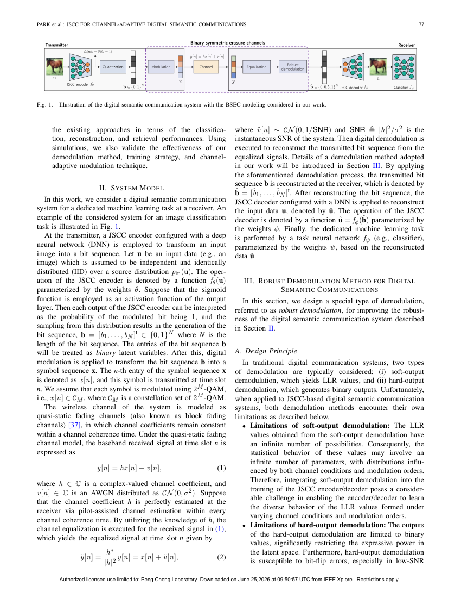</a><figcaption><b>架构/方法证据页</b>｜来源：《Joint Source-Channel Coding for Channel-Adaptive Digital Semantic Communications》，PDF p.3；原图题/表题：Illustration of the digital semantic communication system with the BSEC modeling considered in our work.。 <a href='https://doi.org/10.1109/tccn.2024.3422496'>核对论文</a></figcaption></figure><figure><a href='assets/2025_joint-source-channel-coding-for-channel-adaptive-digital-semantic-communications_result_p11.png' target='_blank'>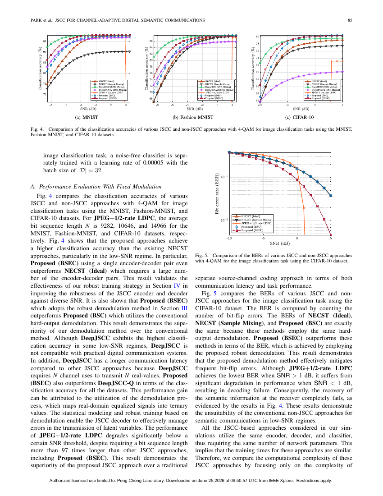</a><figcaption><b>关键结果证据页</b>｜来源：《Joint Source-Channel Coding for Channel-Adaptive Digital Semantic Communications》，PDF p.11；原图题/表题：Comparison of the classification accuracies of various JSCC and non-JSCC approaches with 4-QAM for image classification tasks using the MNIST, Fashion-MNIST, and CIFAR-10 datasets.。 <a href='https://doi.org/10.1109/tccn.2024.3422496'>核对论文</a></figcaption></figure></div>
</article>
<article class="paper" id="model-enabled-task-oriented-semantic-communications-through-knowledge-synchronization" data-year="2025" data-tier="core">
  <div class="paper-head"><div><div><span class="tag core">核心纳入</span><span class="tag year">2025</span></div><h2>Model-Enabled Task-Oriented Semantic Communications Through Knowledge Synchronization</h2></div><a class="pdf" href="https://doi.org/10.1109/tccn.2025.3531461">DOI / IEEE 页面</a></div>
  <div class="facts"><div><b>作者</b>Zhiyi Tian、Weiqi Wang、Chenhan Zhang、Shui Yu</div><div><b>出版信息</b>Vol. 11, No. 5, pp. 3371-3383</div><div><b>DOI / IEEE ID</b><a href="https://doi.org/10.1109/tccn.2025.3531461">10.1109/tccn.2025.3531461</a> / 10845211</div><div><b>任务</b>通用/多模态语义通信</div><div><b>技术谱系</b>学习式语义 feature；数字接口需由正文具体实现判定</div><div><b>年份口径</b>formal TCCN volume year</div></div>
  <div class="verdict"><b>是否属于严格数字语义通信：</b>系统层相关；没有足够证据把它判为严格数字语义通信。</div>
  <h3>实验设置</h3><div class="grid3"><div><b>数据集/场景</b>CelebA、MNIST</div><div><b>Baseline</b>DeepJSCC、JPEG、LDPC、HM、FEC、GAN、ResNet、PPO、SAC、DeepSC、JSCC、IB</div><div><b>指标与信道条件</b>PSNR、SSIM、MSE、mAP、accuracy、NME、FLOPs、VoI、MOS、WER、CER<br><span class="muted">SNR：正文未给出可稳定自动定位的条目</span></div></div>
  <h3>Introduction 的六步讲述逻辑</h3><ol class='story'><li><b>已有进展：</b>al side to directly interpret the encodings from the sender, thereby results also indicate that cGANs can almost perfectly establishing consensus between the communicating parties. replace the original dataset, and knowledge synchro- We conduct comprehensive experiments to evaluate the nization can significantly improves the communication performances of the proposed MESC in image classification performance of our method on the sender’s dataset.</li><li><b>现有问题：</b>Authorized licensed use limited to: Peng Cheng Laboratory.</li><li><b>为何重要：</b>Tian et al. [25] pointed out that not all process information in image data to make it suitable for pixels are equally important during the encoding process.</li><li><b>提出方案：</b>Firstly, MESC achieves state-of-the-art communica- The rest of the paper is organized as follows: In Section II, tion performance compared to traditional coding method and we introduce researches related to this paper.</li><li><b>解决机制：</b>Then, we present representative benchmark Deep Joint Source-Channel Coding some preliminaries and analyze the problems that this paper (JSCC) [7], [13].</li><li><b>核心主张与证据目标：</b>In this paper, we leverage this capability of generative models, employing them ẑ = z + n, (1) to substitute the dataset, thereby achieving more practical semantic communication. where n is the channel noise.</li></ol>
  <h3>方法、变量与优化</h3><p><b>系统/信息流：</b>PDF p.1：d Semantic Communications Through Knowledge Synchronization Zhiyi Tian , Member, IEEE, Weiqi Wang , Member, IEEE, Chenhan Zhang , Member, IEEE, and Shui Yu , Fellow, IEEE Abstract—Existing semantic communications (SemCom) rely SemCom, where DL models serve as encoder/decoder to on a shared dataset for training deep learning based encode/decode the transmitted information [1], [2], [3], [4]. encoders/decoders. However, this pre PDF p.1：ic Communications Through Knowledge Synchronization Zhiyi Tian , Member, IEEE, Weiqi Wang , Member, IEEE, Chenhan Zhang , Member, IEEE, and Shui Yu , Fellow, IEEE Abstract—Existing semantic communications (SemCom) rely SemCom, where DL models serve as encoder/decoder to on a shared dataset for training deep learning based encode/decode the transmitted information [1], [2], [3], [4]. encoders/decoders. However, this prerequisit PDF p.1：er, IEEE, and Shui Yu , Fellow, IEEE Abstract—Existing semantic communications (SemCom) rely SemCom, where DL models serve as encoder/decoder to on a shared dataset for training deep learning based encode/decode the transmitted information [1], [2], [3], [4]. encoders/decoders. However, this prerequisite deviates from Existing SemCom methods are predominantly task-oriented, reality, as the cost of establishing shared datasets PDF p.1：and Shui Yu , Fellow, IEEE Abstract—Existing semantic communications (SemCom) rely SemCom, where DL models serve as encoder/decoder to on a shared dataset for training deep learning based encode/decode the transmitted information [1], [2], [3], [4]. encoders/decoders. However, this prerequisite deviates from Existing SemCom methods are predominantly task-oriented, reality, as the cost of establishing shared datasets is enormou</p><p><b>目标函数/联合训练证据：</b>PDF p.1：assume that each communication participant image classification [6]. possesses a non-IID private dataset. We propose a Model-Enabled To establish SemCom, existing SemCom requires communi- Task-Oriented SemCom (MESC), which establishes SemCom cation parties to jointly train DL-based encoder/decoder prior through sharing trained models between participants. First of to communication process [7], [8], [9]. Specifically, existing PDF p.3：LEDGE SYNCHRONIZATION 3373 TABLE I DL-enabled semantic communication was initially N OTATIONS developed for text-related scenarios. Xie et al. [7] proposed DeepSC for text transmission. They leverage transformers as codes architectures and train them with two loss functions: cross-entropy and mutual information. Then, it expands to more complex scenarios, such as image-related scenarios. The communication tasks include image r PDF p.3：ID private datasets. Most contrastive learning methods Different from traditional communication system, semantic learn the representations from positive pairs and negative pairs encoders and decoders need to be trained in order to establish with a contrastive loss function. Chen et al. [24] proposed the communicat</p>
  <h3>数字化方案与传输开销</h3><p><b>传输表示证据：</b>PDF p.6：e pair. g is typically a simple neural network, such Contrastive learning fit our encoder training in following as a single-layer fully connected network. g project semantic aspects. First of all, contrastive learning is a self-supervised representations to a latent space to calculate the contrastive algorithm. This aligns with our communication framework, loss, which is a commonly used trick to improve the training as in sema</p><p><b>调制/信道编码线索：</b>ldpc</p><p><b>可复核开销与缺失信息：</b>输入/分辨率线索：128 × 128、28 × 28、16 × 16、32 × 32。feature/token/latent 尺寸线索：正文未给出可稳定自动定位的条目。码本线索：正文未给出可稳定自动定位的条目。bit/bpp/速率线索：512 bit。CBR/压缩率线索：正文未给出可稳定自动定位的条目。该论文偏系统/理论层，正文未必给出可复核的 encoder feature map 与 payload 长度。</p><div class="formula">\[N_{tx}=N_{payload}+N_{side}+N_{protection};\quad \text{缺失项必须标记为未知}\]</div>
  <h3>信道处理机制</h3><div class="channel"><p><b>分类：</b>类别 5：信道/资源进入系统优化，但 payload 数字化接口不完整</p><p><b>正文信道证据：</b>PDF p.1：taset. We propose a Model-Enabled To establish SemCom, existing SemCom requires communi- Task-Oriented SemCom (MESC), which establishes SemCom cation parties to jointly train DL-based encoder/decoder prior through sharing trained models between participants. First of to communication process [7], [8], [9]. Specifically, existing all, the receiver trains a cGAN and shares it with the sender for information providing. Secondly, PDF p.1：mmunication samples and learning paradigm with a knowledge synchronization scheme. task-related ground-truth information. However, the prerequi- The designed knowledge synchronization scheme associates sam- site of shared datasets deviates from reality [10]. Firstly, in ples from different non-IID datasets based on their categories, real-world scenarios, due to concerns of security and privacy, ensuring that the semantic symbo PDF p.1：their data distributions are I. I NTRODUCTION different, such as variations in sample patterns and quality. The EMANTIC communication (SemCom), a novel and S promising area of research, has gained significant atten- tion. The purpose of SemCom is to enable effective and setting introduces the following challenges: Firstly, the lack of shared dataset leads to the challenge of training the encoder and decoder jointly. Secondly, PDF p.1：such as variations in sample patterns and quality. The EMANTIC communication (SemCom), a novel and S promising area of research, has gained significant atten- tion. The purpose of SemCom is to enable effective and setting introduces the following challenges: Firstly, the lack of shared dataset leads to the challenge of training the encoder and decoder jointly. Secondly, non-IID private datasets of com- meaningful communication</p><p><b>decoder 实际收到：</b>由论文系统模型定义的语义 feature、任务状态或传统译码后数据</p><p><b>是否联合优化：</b>是/部分：目标或训练证据与物理信道同时出现。</p><p><b>是否真正处理 bit/index/token/packet error：</b>未形成可复核的 bit/index/token 错误闭环。</p></div>
  <h3>主要结果、局限与 Codex 判断</h3><p><b>证据化结果：</b>PDF p.1：ceiver, who then utilizes it vate samples [1], [11]. Secondly, integrating and maintaining to train the decoder using the receiver’s private dataset. Extensive a large shared dataset requires long-term commitment and experimental results demonstrate that MESC outperforms the resources [8]. This is not costly to both communication parties. SemCom benchmark and traditional coding methods, achieving In this paper, we focus on est PDF p.1：contained in these private datasets falls within the same scope, but their data distributions are I. I NTRODUCTION different, such as variations in sample patterns and quality. The EMANTIC communication (SemCom), a novel and S promising area of research, has gained significant atten- tion. The purpose of SemCom is to enable effective and setting introduces the following challenges: Firstly, the lack of shared dataset leads to PDF p.2：ender, thereby results also indicate that cGANs can almost perfectly establishing consensus between the communicating parties. replace the original dataset, and knowledge synchro- We conduct comprehensive experiments to evaluate the nization can significantly improves the communication performances of the proposed MESC in image classification performance of our method on the sender’s dataset. SemCom. Firstly, MESC achieves sta PDF p.2：emCom established using samples generated by cGAN closely approximates the semantic communication established with the original samples, with a performance difference of around 2%. Knowledge synchronization, on II. R ELATED W ORK the other hand, significantly improves the communication A. Deep Learning Enabled Semantic Communication performance of our method on the sender’s dataset. Semantic communications attempt to extend cl</p><p><b>独立判断：</b>没有完整离散接口，无法直接回答 bit/index/token 跳变问题。 未显式注入离散误码/丢包，鲁棒性结论不应外推到真实数字链路。</p>
  <div class="figs"><figure><a href='assets/2025_model-enabled-task-oriented-semantic-communications-through-knowledge-synchronization_method_p2.png' target='_blank'></a><figcaption><b>架构/方法证据页</b>｜来源：《Model-Enabled Task-Oriented Semantic Communications Through Knowledge Synchronization》，PDF p.2；原图题/表题：The architecture of proposed model-enabled semantic communication.。 <a href='https://doi.org/10.1109/tccn.2025.3531461'>核对论文</a></figcaption></figure><figure><a href='assets/2025_model-enabled-task-oriented-semantic-communications-through-knowledge-synchronization_result_p9.png' target='_blank'>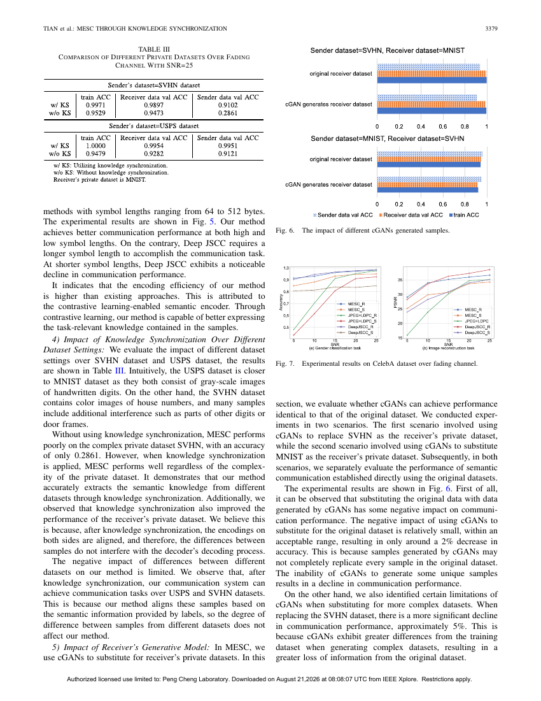</a><figcaption><b>关键结果证据页</b>｜来源：《Model-Enabled Task-Oriented Semantic Communications Through Knowledge Synchronization》，PDF p.9；原图题/表题：Our method achieves better communication performance at both high and。 <a href='https://doi.org/10.1109/tccn.2025.3531461'>核对论文</a></figcaption></figure></div>
</article>
<article class="paper" id="optimizing-resource-allocation-for-multi-modal-semantic-communication-in-mobile-aigc-network" data-year="2025" data-tier="core">
  <div class="paper-head"><div><div><span class="tag core">核心纳入</span><span class="tag year">2025</span></div><h2>Optimizing Resource Allocation for Multi-Modal Semantic Communication in Mobile AIGC Networks: A Diffusion-Based Game Approach</h2></div><a class="pdf" href="https://doi.org/10.1109/tccn.2025.3529747">DOI / IEEE 页面</a></div>
  <div class="facts"><div><b>作者</b>Jian Liu、Ming Xiao、Jinbo Wen、Jiawen Kang、Ruichen Zhang、Tao Zhang、Dusit Niyato、Weiting Zhang、Ying Liu</div><div><b>出版信息</b>Vol. 11, No. 5, pp. 3346-3360</div><div><b>DOI / IEEE ID</b><a href="https://doi.org/10.1109/tccn.2025.3529747">10.1109/tccn.2025.3529747</a> / 10841385</div><div><b>任务</b>语义网络与资源分配</div><div><b>技术谱系</b>系统/理论层变量；论文未定义统一 payload bitstream</div><div><b>年份口径</b>formal TCCN volume year</div></div>
  <div class="verdict"><b>是否属于严格数字语义通信：</b>系统层相关；没有足够证据把它判为严格数字语义通信。</div>
  <h3>实验设置</h3><div class="grid3"><div><b>数据集/场景</b>CelebA、FFHQ</div><div><b>Baseline</b>JPEG、JPEG2000、HM、FEC、ViT、GAN、VAE、PPO、SAC、JSCC、SSCC、IB、GPT</div><div><b>指标与信道条件</b>PSNR、SSIM、FID、MSE、mAP、accuracy、precision、NME、QoE、latency、energy、AoI、VoI、MOS、WER、CER<br><span class="muted">SNR：150 dB、2 dB、20 dB、40 dB、5 dB</span></div></div>
  <h3>Introduction 的六步讲述逻辑</h3><ol class='story'><li><b>已有进展：</b>opti- optimal Stackelberg game solution, we propose a GDM-based mizing resource utilization [13], [14].</li><li><b>现有问题：</b>However, the specific Deep Reinforcement Learning (DRL) algorithm, where we design of incentive mechanisms in mobile AIGC networks use a diffusion model to generate actor policy in DRL. supported by SemCom has still not been fully explored in the The main contributions of this paper are summarized as literature.</li><li><b>为何重要：</b>However, the specific Deep Reinforcement Learning (DRL) algorithm, where we design of incentive mechanisms in mobile AIGC networks use a diffusion model to generate actor policy in DRL. supported by SemCom has still not been fully explored in the The main contributions of this paper are summarized as literature.</li><li><b>提出方案：</b>opti- optimal Stackelberg game solution, we propose a GDM-based mizing resource utilization [13], [14].</li><li><b>解决机制：</b>However, the specific Deep Reinforcement Learning (DRL) algorithm, where we design of incentive mechanisms in mobile AIGC networks use a diffusion model to generate actor policy in DRL. supported by SemCom has still not been fully explored in the The main contributions of this paper are summarized as literature.</li><li><b>核心主张与证据目标：</b>In the mobile AIGC vehicle networking spatially adaptive normalizing denoised semantic information. scenario, to improve the unloading efficiency and maximize The authors in [8] and [9] used pre-trained large language the utility of drones and vehicles, the authors in [19] modeled models to achieve SemCom but still failed to solve the the computing data transaction process between drones and dynamic inference characteristics of GAI to achieve pixel- vehicles as a bargaining game.</li></ol>
  <h3>方法、变量与优化</h3><p><b>系统/信息流：</b>PDF p.2：mission speed and reconstruction accuracy. generation services over wireless networks, particularly in Likewise, the users can dynamically control the number the face of constrained communication resources [11]. This of steps for generating GDM-based semantic decoders. In framework accurately extracts relevant information from raw addition, the framework uses multi-modal technology to fully data, facilitating the generation of PDF p.2：ty digital content for extract semantic information to achieve accurate transmis- users. However, existing SemCom frameworks frequently over- sion and accelerate the execution of GDM-based semantic look the computing resource limitations faced by mobile users decoders. and the time required for reconstructing source information. Moreover, to ensure high-quality AIGC services between These oversights present significant challen PDF p.2：rce limitations faced by mobile users decoders. and the time required for reconstructing source information. Moreover, to ensure high-quality AIGC services between These oversights present significant challenges for the practical the MASP and users within our proposed framework, we for- implementation of SemCom in real-world scenarios. mulate a Stackelberg game model with the MASP as the leader Mobile AIGC networks provide use PDF p.3：allow- The remainder of this paper is structured as follows: ing VR users (i.e., buyers) and VR service providers (i.e., In Section II, we review related literature. In Section III, sellers) to trade VR services quickly. In [14], the authors we introduce the system model. In Section IV, we intro- designed a contract-theoretic AI-generated incentive mecha- duce the architecture of GM-SemCom. In Section V, we nism to promote sem</p><p><b>目标函数/联合训练证据：</b>PDF p.6：I to communication is expected to ding [26]. These layers are used consistently throughout the improve the performance of time-based services [15]. To U-Net architecture. quantify the freshness of SemCom tasks in mobile AIGC Training is done by optimizing the loss function services, we propose the AoSI based on the concept of AoI, Lsimple [10] with respect to θ, given by which is defined as the time from the last time the user PDF p.7：maximize its utility Ui (bi ) by selecting the optimal user i to the MASP. The AoSI which represents the time when bandwidth to purchase given the bandwidth price set by the the semantic data is delivered and received by the user i can MASP. Consequently, the optimization problem for user i can be obtained by be formulated as A i = Tt + Tq , (12) Problem 1: max Un (bi ) bi where Tt is the transmission delay and Tq is the queui PDF p.8：2 The utility function Ui (bi ) has a first-order derivative equal A. POMDP for the Stackelberg Game to zero at a critical point, and its second-order derivative is Given the inherent competitive dynamics of the Stackelberg less than zero, indicating that the optimization problem is game, each user possesses only</p>
  <h3>数字化方案与传输开销</h3><p><b>传输表示证据：</b>PDF p.6：ion. Then, we design a to constrain U-Net [28], extending group normalization by Stackelberg game model to ensure high-quality AIGC services applying channel-wise scaling and shifting on the normalized and prove the existence and uniqueness of the equilibrium feature map h ∈ Rc×h×w . The AdaGN condition is between the MASP and users [16]. AdaGN(h, t, tsem ) = zs (ts GroupNorm(h) + tb ), (7) A. Age of Semantic Information where PDF p.10：lues at the VAE scheme: VAE-based SemCom combines with Kullback- corresponding coordinates, H and W represent the height and Leibler divergence loss [38]. VQGAN scheme: this scheme width of the images, respectively. A smaller MSE indicates a utilizes a Vector Quantized Generative Adversarial Network closer resemblance between two images, signifying reduced (VQGAN) with a codebook of 16384 vectors [39]. The distortion. training PDF p.10：height and Leibler divergence loss [38]. VQGAN scheme: this scheme width of the images, respectively. A smaller MSE indicates a utilizes a Vector Quantized Generative Adversarial Network closer resemblance between two images, signifying reduced (VQGAN) with a codebook of 16384 vectors [39]. The distortion. training dataset is the FFHQ dataset [40], and the test dataset is Figures 3 and 4 provide a comparative analysis of the a PDF p.10：taset [40], and the test dataset is Figures 3 and 4 provide a comparative analysis of the a subset of the CELEBA dataset [41]. All experiments in this proposed GM-SemCom framework with established baselines, study were performed on 128 × 128 resolution, 8-bit quantized evaluating SSIM and PSNR at different compression rates and images. Our experiments are a re-implementation of DDIM, channel conditions. The results demonstrate</p><p><b>调制/信道编码线索：</b>未自动检出固定调制/信道编码名称</p><p><b>可复核开销与缺失信息：</b>输入/分辨率线索：128 × 128。feature/token/latent 尺寸线索：正文未给出可稳定自动定位的条目。码本线索：codebook of 16384。bit/bpp/速率线索：8-bit。CBR/压缩率线索：正文未给出可稳定自动定位的条目。该论文偏系统/理论层，正文未必给出可复核的 encoder feature map 与 payload 长度。</p><div class="formula">\[N_{tx}=N_{payload}+N_{side}+N_{protection};\quad \text{缺失项必须标记为未知}\]</div>
  <h3>信道处理机制</h3><div class="channel"><p><b>分类：</b>类别 5：信道/资源进入系统优化，但 payload 数字化接口不完整</p><p><b>正文信道证据：</b>PDF p.1：nd reliability through semantic information processing. results demonstrate that the proposed algorithm converges faster Moreover, recent advances in Generative Artificial Intelligence and is closer to the Stackelberg equilibrium. (GAI) further enhanced the effectiveness of SemCom through its powerful generative capabilities. However, how to strike Index Terms—Mobile AIGC, semantic communications, a balance between high-precis PDF p.1：as a central focus and spawned many amazing a novel metric called Age of Semantic Information (AoSI) based on the concept of Age of Information (AoI) to quantify applications [2], such as ChatGPT, Stable Diffusion, Sora, and Dream Fusion. Nevertheless, the effectiveness of AIGC hinges Received 11 September 2024; revised 18 November 2024 and 2 January on the utilization of large neural networks containing billions 2025; accepte PDF p.2：LIU et al.: OPTIMIZING RESOURCE ALLOCATION FOR MULTI-MODAL SEMCOM IN MOBILE AIGC NETWORKS 3347 to handle data loss and noise without continual redesign [6], unjustifiable [12]. Therefore, effectively implement- [7], [8], [9]. However, current GAI-enabled frameworks ing resource allocation schemes remains a significant face challenges in accurately reconstructing information due challenge. to the dynamic inference characteristi PDF p.2：we propose a GDM-based Although multi-modal approaches improve reconstruction multi-modal SemCom (GM-SemCom) framework in mobile accuracy [8], [9], [10], they often fail to fully address the AIGC networks. The framework consists of an extraction problem of effective semantic transfer while achieving pixel- module and GDM design to achieve controllable semantic level accurate reconstruction. information size transmission, allow</p><p><b>decoder 实际收到：</b>由论文系统模型定义的语义 feature、任务状态或传统译码后数据</p><p><b>是否联合优化：</b>是/部分：目标或训练证据与物理信道同时出现。</p><p><b>是否真正处理 bit/index/token/packet error：</b>未形成可复核的 bit/index/token 错误闭环。</p></div>
  <h3>主要结果、局限与 Codex 判断</h3><p><b>证据化结果：</b>PDF p.1：omprehensive measure of user utility. service providers, which strains communication resources and Furthermore, we propose a GDM-based algorithm to solve increases the risk of transmission failures. Fortunately, Semantic the game under incomplete information. Compared with the Communication (SemCom) can improve transmission effi- traditional deep reinforcement learning algorithms, numerical ciency and reliability through seman PDF p.1：providers, which strains communication resources and Furthermore, we propose a GDM-based algorithm to solve increases the risk of transmission failures. Fortunately, Semantic the game under incomplete information. Compared with the Communication (SemCom) can improve transmission effi- traditional deep reinforcement learning algorithms, numerical ciency and reliability through semantic information processing. results demonstrat PDF p.1：ckelberg game, deep reinforcement learning, diffusion models. efficient information transmission is a major challenge. In this paper, we propose a Generative Diffusion Model (GDM)- based multi-modal SemCom (GM-SemCom) framework. The I. I NTRODUCTION framework improves the accuracy of information reconstruction RIVEN by automated information generation facilitated by integrating GDMs and multi-modal semantic information and als PDF p.2：ce allocation schemes remains a significant face challenges in accurately reconstructing information due challenge. to the dynamic inference characteristics of GAI models. To address the above challenges, we propose a GDM-based Although multi-modal approaches improve reconstruction multi-modal SemCom (GM-SemCom) framework in mobile accuracy [8], [9], [10], they often fail to fully address the AIGC networks. The framework consi</p><p><b>独立判断：</b>没有完整离散接口，无法直接回答 bit/index/token 跳变问题。 未显式注入离散误码/丢包，鲁棒性结论不应外推到真实数字链路。</p>
  <div class="figs"><figure><a href='assets/2025_optimizing-resource-allocation-for-multi-modal-semantic-communication-in-mobile-aigc-network_method_p5.png' target='_blank'></a><figcaption><b>架构/方法证据页</b>｜来源：《Optimizing Resource Allocation for Multi-Modal Semantic Communication in Mobile AIGC Networks: A Diffusion-Based Game Approach》，PDF p.5；原图题/表题：The architecture of GDM-based multi-modal SemCom.。 <a href='https://doi.org/10.1109/tccn.2025.3529747'>核对论文</a></figcaption></figure><figure><a href='assets/2025_optimizing-resource-allocation-for-multi-modal-semantic-communication-in-mobile-aigc-network_result_p10.png' target='_blank'></a><figcaption><b>关键结果证据页</b>｜来源：《Optimizing Resource Allocation for Multi-Modal Semantic Communication in Mobile AIGC Networks: A Diffusion-Based Game Approach》，PDF p.10；原图题/表题：Performance comparison of the proposed method with other compression algorithms in a channel with SNR = 2 dB.。 <a href='https://doi.org/10.1109/tccn.2025.3529747'>核对论文</a></figcaption></figure></div>
</article>
<article class="paper" id="progressive-learned-image-transmission-for-semantic-communication-using-hierarchical-vae" data-year="2025" data-tier="core">
  <div class="paper-head"><div><div><span class="tag core">核心纳入</span><span class="tag year">2025</span></div><h2>Progressive Learned Image Transmission for Semantic Communication Using Hierarchical VAE</h2></div><a class="pdf" href="https://doi.org/10.1109/tccn.2025.3546935">DOI / IEEE 页面</a></div>
  <div class="facts"><div><b>作者</b>Guangyi Zhang、Hanlei Li、Yunlong Cai、Qiyu Hu、Guanding Yu、Zhijin Qin</div><div><b>出版信息</b>Vol. 11, No. 6, pp. 3640-3654</div><div><b>DOI / IEEE ID</b><a href="https://doi.org/10.1109/tccn.2025.3546935">10.1109/tccn.2025.3546935</a> / 10907944</div><div><b>任务</b>图像语义传输或重建</div><div><b>技术谱系</b>连续 learned latent / channel symbol（DeepJSCC）</div><div><b>年份口径</b>formal TCCN volume year</div></div>
  <div class="verdict"><b>是否属于严格数字语义通信：</b>否（连续语义 JSCC）</div>
  <h3>实验设置</h3><div class="grid3"><div><b>数据集/场景</b>Kodak、CLIC、DIV2K、ImageNet、CIFAR10</div><div><b>Baseline</b>DeepJSCC、NTSCC、WITT、JPEG、JPEG2000、BPG、LDPC、QAM、HM、FEC、ARQ、Swin Transformer、GAN、VAE、VQ-VAE、Ballé、Minnen、ResNet、PPO、SAC、DeepMA、SwinJSCC、ADJSCC、JSCC</div><div><b>指标与信道条件</b>PSNR、SSIM、MS-SSIM、LPIPS、FID、bpp、MSE、mAP、precision、NME、latency、energy、MOS、WER、CER<br><span class="muted">SNR：10 dB、3 dB</span></div></div>
  <h3>Introduction 的六步讲述逻辑</h3><ol class='story'><li><b>已有进展：</b>This version demonstrated This paper seeks to overcome the shortcomings of earlier improved robustness and adaptability to varying channel approaches by presenting a new rate-adaptive progressive conditions.</li><li><b>现有问题：</b>Unlike earlier sive image transmission, we can identify two limitations of methods that utilize a static encoder to convert images directly existing progressive schemes [27], [28], [29]: into channel symbols, our transmitter incorporates both a • Lack of probabilistic modeling: Existing research has bottom-up path and a top-down path to progressively generate predominantly employed deterministic models for encod- several hierarchical representations of the transmitted image. ing and decoding in progressive tasks.</li><li><b>为何重要：</b>Unlike earlier sive image transmission, we can identify two limitations of methods that utilize a static encoder to convert images directly existing progressive schemes [27], [28], [29]: into channel symbols, our transmitter incorporates both a • Lack of probabilistic modeling: Existing research has bottom-up path and a top-down path to progressively generate predominantly employed deterministic models for encod- several hierarchical representations of the transmitted image. ing and decoding in progressive tasks.</li><li><b>提出方案：</b>Firstly, since existing vanilla VAE-based transmission, referred to as ADJSCC-l, designed to adapt to methods often experience performance degradation with high- various channel conditions. resolution images [23], [40], we develop the PLIT building on Despite the effectiveness of existing approaches for progres- the powerful hierarchical VAE architecture [41].</li><li><b>解决机制：</b>Unlike earlier sive image transmission, we can identify two limitations of methods that utilize a static encoder to convert images directly existing progressive schemes [27], [28], [29]: into channel symbols, our transmitter incorporates both a • Lack of probabilistic modeling: Existing research has bottom-up path and a top-down path to progressively generate predominantly employed deterministic models for encod- several hierarchical representations of the transmitted image. ing and decoding in progressive tasks.</li><li><b>核心主张与证据目标：</b>Numerical simulation results are presented {z1 , z2 , . . . , zL }, where L indicates the number  of variable in Section V.</li></ol>
  <h3>方法、变量与优化</h3><p><b>系统/信息流：</b>PDF p.1：enior Member, IEEE, and Zhijin Qin , Senior Member, IEEE Abstract—We present a novel framework called progressive I. I NTRODUCTION learned image transmission (PLIT) that utilizes a hierarchical O SUPPORT the high data traffic demands of future variational autoencoder (VAE) to catalyze semantic communica- tion. PLIT employs autoregressive generation through bottom-up and top-down paths to create several feature representa- T co PDF p.1：e ing image fidelity. Extensive experiments show that our proposed approach outperforms existing baseline methods in terms of separation-based approaches, recent studies have explored the rate-distortion performance and maintains robust performance use of autoencoder (AE) and its variants, such as variational against channel noise. autoencoder (VAE), to develop wireless image transmission Index Terms—Deep learning, hierarchica PDF p.1：tperforms existing baseline methods in terms of separation-based approaches, recent studies have explored the rate-distortion performance and maintains robust performance use of autoencoder (AE) and its variants, such as variational against channel noise. autoencoder (VAE), to develop wireless image transmission Index Terms—Deep learning, hierarchical variational autoen- systems, generating several efficient methods [15], [16] PDF p.2：ntations are transmission rates. This highlights the potential of integrating transmitted sequentially from the first representation to the last probabilistic principles into the design of image transmission one in order. For example, the authors of [25] have proposed systems as a promising direction. To tackle the second limi- a progressive image transmission scheme using vector quanti- tation, accurately quantifying the info</p><p><b>目标函数/联合训练证据：</b>PDF p.3：or information. Additionally, we intro- duce a spatial grouping strategy to minimize transmission overhead for rate matching without sacrificing image fidelity. (iv) Training Strategy: We propose a novel training strat- egy for PLIT. Specifically, we design a loss function Fig. 1. Probabilistic model of standard VAE and hierarchical VAE. The accounting for different transmission phases, so that the encoding process of the ResN PDF p.3：e smaller than that of zl+1 , which helps denotes an all-zero matrix. In addition, Cm×n (Rm×n ) are to capture the coarse-to-fine structure inherent in images. By the space of m × n complex (real) matrices. extending Eq. (1) for multiple latent variables, the loss function for learning a hierarchical VAE model can be denoted by II. P ROBLEM F ORMULATION L(θ , φ) = In this section, we begin with a brief introduction to  L VAE PDF p.4：noted as x̂H,Rmi . Therefore, the overall learning target of The optimization goal of a deep learning-based JSCC system PLIT can be formulated as is to minimize the distortion between x and x̂H , and thus  1    M mean-square error (MSE) can be used as the loss function. min Ex∼px d x, x̂H,Rmi , (5) Furthermore</p>
  <h3>数字化方案与传输开销</h3><p><b>传输表示证据：</b>PDF p.1：hanism for able to dynamically determine the transmission rate. Specifically, designing semantic communication systems, offering high PLIT can transform each representation into different numbers transmission efficiency to relieve communication burden [8], of channel symbols, guided by the hierarchical VAE’s learned priors that indicate the entropy of each representation. In [9], [10], [11], [12], [13], [14]. addition, we devi PDF p.1：ed 21 February received images. The approaches based on VAE utilize prob- 2025. Date of publication 27 February 2025; date of current version 10 December 2025. This work was supported in part by the National Natural abilistic modeling, where the generation of channel symbols Science Foundation of China under Grant U22A2004 and 62293484, and is treated as a stochastic procedure. In such systems, channel in part by Zhejiang Prov PDF p.2：aches for progres- the powerful hierarchical VAE architecture [41]. Unlike earlier sive image transmission, we can identify two limitations of methods that utilize a static encoder to convert images directly existing progressive schemes [27], [28], [29]: into channel symbols, our transmitter incorporates both a • Lack of probabilistic modeling: Existing research has bottom-up path and a top-down path to progressively generate PDF p.2：g [31], blocks before being transmitted progressively to the receiver. highlight the effectiveness of probabilistic modeling tech- This autoregressive design exploits contextual information niques, such as VAEs, denoising diffusion models, and among different channel symbols, resulting in better coding autoregressive flows [32]. In comparison, traditional AE- gain for high-resolution images. based methods are more susceptible</p><p><b>调制/信道编码线索：</b>16qam、arq、entropy coding、harq、ldpc</p><p><b>可复核开销与缺失信息：</b>输入/分辨率线索：512 × 768、768 × 512、2048 × 1890、1365 × 2048、256 × 256。feature/token/latent 尺寸线索：正文未给出可稳定自动定位的条目。码本线索：正文未给出可稳定自动定位的条目。bit/bpp/速率线索：1Mbps。CBR/压缩率线索：channel bandwidth ratio (CBR) to、CBR = K/N、CBR indicates the number of symbols In this section, we presen、CBR) based、CBR over different datasets、CBR、CBRs、CBR in an AWGN channel at an SNR of 10 dB、coding rate of 2/3 to maintain a reliable transmission link、CBR values。连续 DeepJSCC 的主要预算是 channel uses/CBR；除非另加量化与调制，不能把每个 latent 当作固定 bit。</p><div class="formula">\[CBR=\frac{N_{complex\ channel\ symbols}}{N_{source\ samples}},\qquad R_{bit}\ \text{未定义（连续映射）}\]</div>
  <h3>信道处理机制</h3><div class="channel"><p><b>分类：</b>类别 3：连续 learned latent 直接通过有噪声信道</p><p><b>正文信道证据：</b>PDF p.1：loys autoregressive generation through bottom-up and top-down paths to create several feature representa- T communication networks, wireless edge devices necessi- tate the capability to handle new functionalities that require tions of the transmitted image, effectively capturing contextual high intelligence and efficiency [2]. In this context, semantic information. In this paper, we investigate the progressive trans- communica PDF p.1：ntic communication. Traditional methods Furthermore, we introduce a spatial grouping strategy to reduce for image transmission typically integrate source codecs, communication overhead for rate matching without compromis- such as BPG, with channel codecs like LDPC. Unlike these ing image fidelity. Extensive experiments show that our proposed approach outperforms existing baseline methods in terms of separation-based approaches PDF p.1：roposed approach outperforms existing baseline methods in terms of separation-based approaches, recent studies have explored the rate-distortion performance and maintains robust performance use of autoencoder (AE) and its variants, such as variational against channel noise. autoencoder (VAE), to develop wireless image transmission Index Terms—Deep learning, hierarchical variational autoen- systems, generating several efficient PDF p.2：e, the receiver can terminate receiving once it adaptability and efficiency when dealing with diverse and achieves the desired vision quality, thereby saving time and complex image data. energy. This can improve the user’ s browsing experience To address the first limitation, generative approaches have by reducing the loading time [26]. One example is Web outperformed deterministic AE-based methods in vision- browsing, where u</p><p><b>decoder 实际收到：</b>带噪连续 channel symbol / latent，经神经 decoder 恢复任务输出</p><p><b>是否联合优化：</b>是/部分：目标或训练证据与物理信道同时出现。</p><p><b>是否真正处理 bit/index/token/packet error：</b>不适用 VQ index/bit 跳变；论文处理的是连续扰动和信道失配。</p></div>
  <h3>主要结果、局限与 Codex 判断</h3><p><b>证据化结果：</b>PDF p.1：phases, with representations in later phases which mainly involves extracting and transmitting task-specific serving to enhance the image quality. Diverging from previous information. Among various methods, joint source-channel works, our proposed PLIT offers improved flexibility as it is coding (JSCC) has emerged as a promising mechanism for able to dynamically determine the transmission rate. Specifically, designing semantic PDF p.1：hanism to help adjust This paper primarily addresses the crucial issue of image the encoding strategy to realize different transmission rates. transmission in semantic communication. Traditional methods Furthermore, we introduce a spatial grouping strategy to reduce for image transmission typically integrate source codecs, communication overhead for rate matching without compromis- such as BPG, with channel codecs like LDPC. U PDF p.1：to reduce for image transmission typically integrate source codecs, communication overhead for rate matching without compromis- such as BPG, with channel codecs like LDPC. Unlike these ing image fidelity. Extensive experiments show that our proposed approach outperforms existing baseline methods in terms of separation-based approaches, recent studies have explored the rate-distortion performance and maintains robust performanc PDF p.1：t our proposed approach outperforms existing baseline methods in terms of separation-based approaches, recent studies have explored the rate-distortion performance and maintains robust performance use of autoencoder (AE) and its variants, such as variational against channel noise. autoencoder (VAE), to develop wireless image transmission Index Terms—Deep learning, hierarchical variational autoen- systems, generating several ef</p><p><b>独立判断：</b>没有完整离散接口，无法直接回答 bit/index/token 跳变问题。 未显式注入离散误码/丢包，鲁棒性结论不应外推到真实数字链路。</p>
  <div class="figs"><figure><a href='assets/2025_progressive-learned-image-transmission-for-semantic-communication-using-hierarchical-vae_method_p10.png' target='_blank'></a><figcaption><b>架构/方法证据页</b>｜来源：《Progressive Learned Image Transmission for Semantic Communication Using Hierarchical VAE》，PDF p.10；原图题/表题：Comparisons of PSNR performance for PLIT models trained with different λ.。 <a href='https://doi.org/10.1109/tccn.2025.3546935'>核对论文</a></figcaption></figure><figure><a href='assets/2025_progressive-learned-image-transmission-for-semantic-communication-using-hierarchical-vae_result_p9.png' target='_blank'>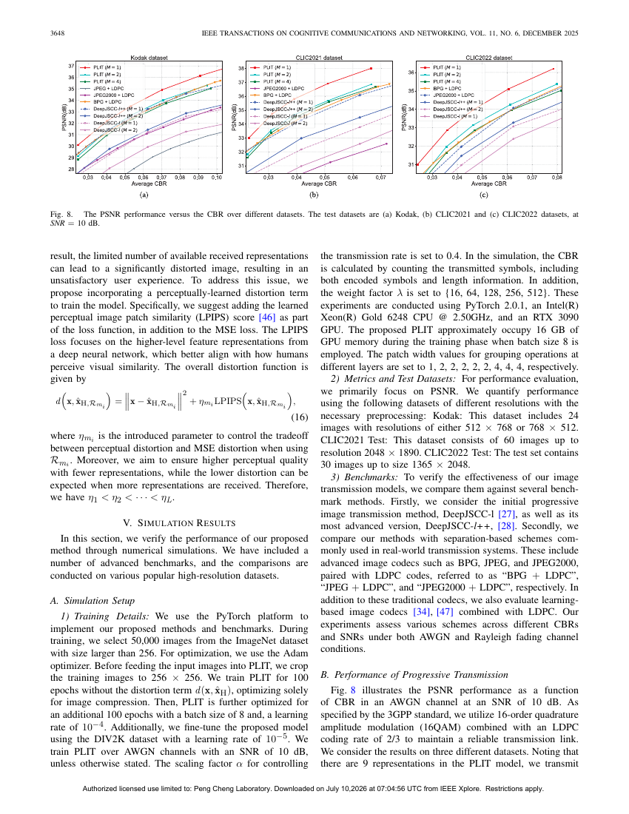</a><figcaption><b>关键结果证据页</b>｜来源：《Progressive Learned Image Transmission for Semantic Communication Using Hierarchical VAE》，PDF p.9；原图题/表题：The PSNR performance versus the CBR over different datasets. The test datasets are (a) Kodak, (b) CLIC2021 and (c) CLIC2022 datasets, at SNR = 10 dB.。 <a href='https://doi.org/10.1109/tccn.2025.3546935'>核对论文</a></figcaption></figure></div>
</article>
<article class="paper" id="r-uav-net-enhanced-yolov4-with-graph-semantic-compression-for-transformative-uav-sensing-in" data-year="2025" data-tier="related">
  <div class="paper-head"><div><div><span class="tag related">相关但非核心</span><span class="tag year">2025</span></div><h2>R-UAV-Net: Enhanced YOLOv4 With Graph-Semantic Compression for Transformative UAV Sensing in Paddy Agronomy</h2></div><a class="pdf" href="https://doi.org/10.1109/tccn.2024.3452053">DOI / IEEE 页面</a></div>
  <div class="facts"><div><b>作者</b>Arun Kumar Sangaiah、Jayakrishnan Anandakrishnan、Aniruth Reddy Devarapelly、Muhammad Luqman Arif Bin Mohamad、Gui-Bin Bian、Mohammed J. F. Alenazi、Salman A. AlQahtani</div><div><b>出版信息</b>Vol. 11, No. 2, pp. 1197-1209</div><div><b>DOI / IEEE ID</b><a href="https://doi.org/10.1109/tccn.2024.3452053">10.1109/tccn.2024.3452053</a> / 10659213</div><div><b>任务</b>语义网络与资源分配</div><div><b>技术谱系</b>学习式语义 feature；数字接口需由正文具体实现判定</div><div><b>年份口径</b>formal TCCN volume year</div></div>
  <div class="verdict"><b>是否属于严格数字语义通信：</b>系统层相关；没有足够证据把它判为严格数字语义通信。</div>
  <h3>实验设置</h3><div class="grid3"><div><b>数据集/场景</b>COCO</div><div><b>Baseline</b>HM、FEC、ViT、GAN、ResNet、YOLO、FCN、PPO、SAC、IB</div><div><b>指标与信道条件</b>mAP、Top-1、accuracy、precision、NME、throughput、MOS、WER<br><span class="muted">SNR：正文未给出可稳定自动定位的条目</span></div></div>
  <h3>Introduction 的六步讲述逻辑</h3><ol class='story'><li><b>已有进展：</b>sion (GPR), leading agricultural challenges, the YOLO is optimal for jobs were put on test for wheat leaf rust detection and identi- involving identifying and categorising leaf image data.</li><li><b>现有问题：</b>sion (GPR), leading agricultural challenges, the YOLO is optimal for jobs were put on test for wheat leaf rust detection and identi- involving identifying and categorising leaf image data.</li><li><b>为何重要：</b>It is important to note stride, padding, and pooling, where the operations are also that the optimal performance of the proposed detection model extended to depth channels.</li><li><b>提出方案：</b>Common leaf diseases pose severe problems to and a 0.12 increase in F1 score over the best-performing leaf the agricultural industry, particularly for paddy rice, a staple detection model. crop consumed worldwide, making early detection and rapid prevention crucial for maintaining both quality and yield.</li><li><b>解决机制：</b>Common leaf diseases pose severe problems to and a 0.12 increase in F1 score over the best-performing leaf the agricultural industry, particularly for paddy rice, a staple detection model. crop consumed worldwide, making early detection and rapid prevention crucial for maintaining both quality and yield.</li><li><b>核心主张与证据目标：</b>However, UAV systems 5) By examining spatial and channel information, the suffer from resource limitations primarily associated with the CBAM, SEAM, and CTAM attention blocks in the power delivery required for sensor operations, processing and Neck and Head portions improve prediction accuracy by communication.</li></ol>
  <h3>方法、变量与优化</h3><p><b>系统/信息流：</b>PDF p.1：. crop consumed worldwide, making early detection and rapid prevention crucial for maintaining both quality and yield. This Index Terms—UAV remote sensing, YOLOv4, semantic com- research dwells on the object detection farmwork for identifying pression (G-SC), encoder-decoder, precision farming, leaf disease and localising paddy leaf diseases. Future-tech Unmanned Aerial detection. Vehicles (UAVs) offer benefits such as reduced PDF p.1：onsumed worldwide, making early detection and rapid prevention crucial for maintaining both quality and yield. This Index Terms—UAV remote sensing, YOLOv4, semantic com- research dwells on the object detection farmwork for identifying pression (G-SC), encoder-decoder, precision farming, leaf disease and localising paddy leaf diseases. Future-tech Unmanned Aerial detection. Vehicles (UAVs) offer benefits such as reduced deploym PDF p.1：ges due to the increased resource-efficient collection, transmission and disease detection from this high-resolution ground data. This research addresses prevalence of paddy leaf diseases in recent years. Effective these issues by introducing a Graph-inspired encoder-decoder detection and mitigation of rice leaf disease at the early growth Semantic Compression (G-SC) coupled with enhanced YOLOv4 stage is a challenging problem PDF p.1：to the increased resource-efficient collection, transmission and disease detection from this high-resolution ground data. This research addresses prevalence of paddy leaf diseases in recent years. Effective these issues by introducing a Graph-inspired encoder-decoder detection and mitigation of rice leaf disease at the early growth Semantic Compression (G-SC) coupled with enhanced YOLOv4 stage is a challenging problem for the</p><p><b>目标函数/联合训练证据：</b>正文未被规则稳定定位到显式 objective；应结合方法公式页复核。</p>
  <h3>数字化方案与传输开销</h3><p><b>传输表示证据：</b>PDF p.3：convolutional The convolution process is the movement of a kernel over block attention modules, has been proposed for better rice leaf the input image in a left-right top-bottom fashion to extract disease detection [32]. Reference [33] combined the principles feature maps. Standard 2D-CNN refers to a 2D kernel with of Transfer Learning (TL), Parameter-free attention and path height (h) and width (w) sliding over input data for PDF p.3：mbined the principles feature maps. Standard 2D-CNN refers to a 2D kernel with of Transfer Learning (TL), Parameter-free attention and path height (h) and width (w) sliding over input data for extracting aggregation to improve the YOLOv5 architecture and used feature maps. Several popular operations defining results of for detecting tassels in UAV-based RGB imagery. Another convolution are stride, padding, and pooling. The fea PDF p.3：ed with the CBAM, SEAM, and CTAM attention blocks in the power delivery required for sensor operations, processing and Neck and Head portions improve prediction accuracy by communication. The UAV sensors are equipped with high- taking inputs from the backbone feature maps. quality sensors that generate voluminous data. Transmission of The remainder of the paper is arranged as follows. this data to the ground station is another PDF p.4：dge graph representation to a data semantic representation of extracted features, and at last, the series and then reshapes it to a 2D tensor of size [W/8, head carries out the loss calculation for object detection. H/8]. This 2D knowledge presenting semantic feature map is Here, the Darknet53 in the backbone section, which acts as a then concatenated with the original [W/8, H/8] scaled-down foundation for the YOLOv4, is best</p><p><b>调制/信道编码线索：</b>未自动检出固定调制/信道编码名称</p><p><b>可复核开销与缺失信息：</b>输入/分辨率线索：608 × 608。feature/token/latent 尺寸线索：feature into a Channel Attention Feature (CAF) Mh = σ Conv1×1。码本线索：正文未给出可稳定自动定位的条目。bit/bpp/速率线索：正文未给出可稳定自动定位的条目。CBR/压缩率线索：正文未给出可稳定自动定位的条目。该论文偏系统/理论层，正文未必给出可复核的 encoder feature map 与 payload 长度。</p><div class="formula">\[N_{tx}=N_{payload}+N_{side}+N_{protection};\quad \text{缺失项必须标记为未知}\]</div>
  <h3>信道处理机制</h3><div class="channel"><p><b>分类：</b>类别 1：语义提取/压缩或系统理论，默认可靠传输或不建模物理信道</p><p><b>正文信道证据：</b>PDF p.1：e [1]. Rice cultivation has faced significant challenges due to the increased resource-efficient collection, transmission and disease detection from this high-resolution ground data. This research addresses prevalence of paddy leaf diseases in recent years. Effective these issues by introducing a Graph-inspired encoder-decoder detection and mitigation of rice leaf disease at the early growth Semantic Compression (G-SC) coupled PDF p.1：treatment randomly. Such improper application with attention mechanisms for revolutionizing precision farming. of fertilizers or pesticides imposes severe ecosystem degradation R-UAV-Net outperformed state-of-the-art (SOTA) techniques, and financial losses, affecting both the quality and quantity showing a 0.69% improvement in mean average precision (mAP) of yield. Leaf infestations have been a significant source of economic a PDF p.1：Bian is with the State Key Laboratory of Multimodal Artificial detection technology has grown more sophisticated because Intelligence System, Institute of Automation, Chinese Academy of Sciences, Beijing 100190, China (e-mail: guibin.bian@ia.ac.cn). of its effectiveness, precision and automation. Precision agri- Mohammed J. F. Alenazi and Salman A. AlQahtani are with the Computer culture [4] encompasses cutting-edge technologi PDF p.2：1198 IEEE TRANSACTIONS ON COGNITIVE COMMUNICATIONS AND NETWORKING, VOL. 11, NO. 2, APRIL 2025 is further aided by the capabilities of Machine Learning amounts of data. A real-time weed, infected leaves detection (ML) and DL techniques, resulting in outstanding agricultural approach was presented based on CNN, where the YOLOv5 management with controlled and accurate decision-making. was chosen to train on a custom dataset [17].</p><p><b>decoder 实际收到：</b>无误语义表示，或抽象系统变量</p><p><b>是否联合优化：</b>未检出明确的端到端信道联合优化证据。</p><p><b>是否真正处理 bit/index/token/packet error：</b>否：没有证据表明离散变量在有误信道中被显式破坏和恢复。</p></div>
  <h3>主要结果、局限与 Codex 判断</h3><p><b>证据化结果：</b>PDF p.1：semantic com- research dwells on the object detection farmwork for identifying pression (G-SC), encoder-decoder, precision farming, leaf disease and localising paddy leaf diseases. Future-tech Unmanned Aerial detection. Vehicles (UAVs) offer benefits such as reduced deployment costs, increased availability, enhanced operability, and improved I. I NTRODUCTION geographical and temporal resolution. You Only Look Once OTABLY, the PDF p.1：ing pression (G-SC), encoder-decoder, precision farming, leaf disease and localising paddy leaf diseases. Future-tech Unmanned Aerial detection. Vehicles (UAVs) offer benefits such as reduced deployment costs, increased availability, enhanced operability, and improved I. I NTRODUCTION geographical and temporal resolution. You Only Look Once OTABLY, the world’s economy, especially that of Asian (YOLO) models excel in disease pa PDF p.1：tic Compression (G-SC) coupled with enhanced YOLOv4 stage is a challenging problem for the farming industry [2]. architecture for disease detection in paddy agronomy. The Less experienced farmers might misdiagnose the leaf illness and proposed R-UAV-Net is an improved YOLOv4 architecture incor- porating various spatial and channel feature extraction blocks administer the treatment randomly. Such improper application with atten PDF p.1：ing various spatial and channel feature extraction blocks administer the treatment randomly. Such improper application with attention mechanisms for revolutionizing precision farming. of fertilizers or pesticides imposes severe ecosystem degradation R-UAV-Net outperformed state-of-the-art (SOTA) techniques, and financial losses, affecting both the quality and quantity showing a 0.69% improvement in mean average precision (mAP)</p><p><b>独立判断：</b>没有完整离散接口，无法直接回答 bit/index/token 跳变问题。 未显式注入离散误码/丢包，鲁棒性结论不应外推到真实数字链路。 未报告统一可复核的 payload bit 数/CBR，跨论文带宽比较受限。 该文属于边界谱系，不能用它代表端到端语义通信主线。</p>
  <div class="figs"><figure><a href='assets/2025_r-uav-net-enhanced-yolov4-with-graph-semantic-compression-for-transformative-uav-sensing-in_method_p4.png' target='_blank'>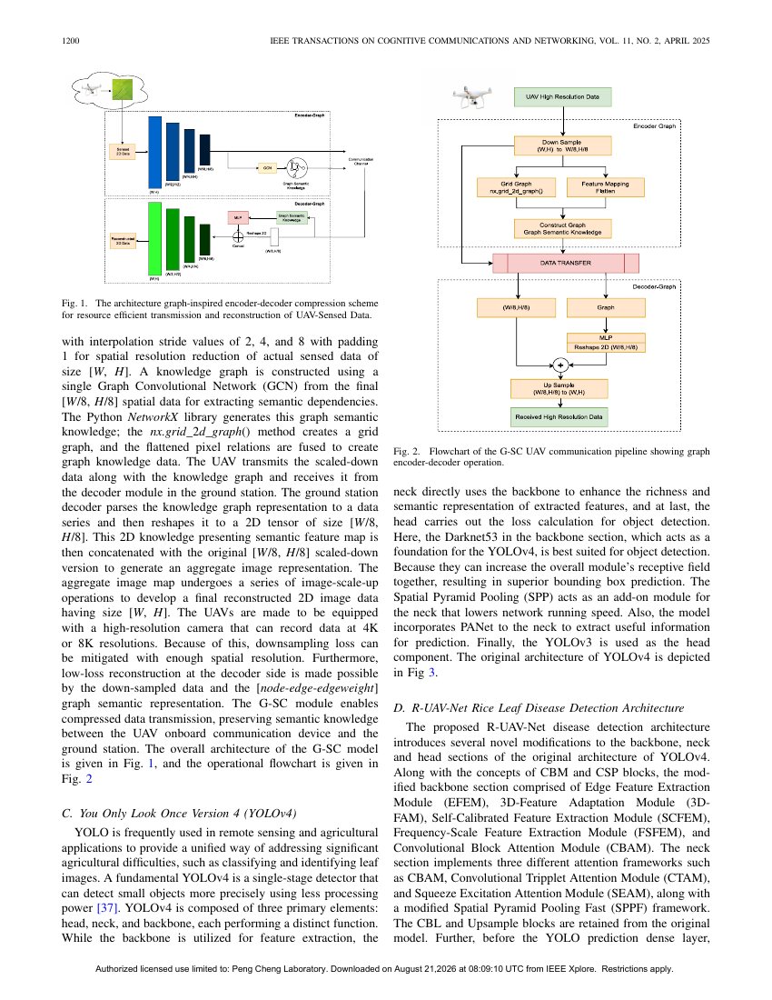</a><figcaption><b>架构/方法证据页</b>｜来源：《R-UAV-Net: Enhanced YOLOv4 With Graph-Semantic Compression for Transformative UAV Sensing in Paddy Agronomy》，PDF p.4；原图题/表题：The architecture graph-inspired encoder-decoder compression scheme for resource efficient transmission and reconstruction of UAV-Sensed Data.。 <a href='https://doi.org/10.1109/tccn.2024.3452053'>核对论文</a></figcaption></figure><figure><a href='assets/2025_r-uav-net-enhanced-yolov4-with-graph-semantic-compression-for-transformative-uav-sensing-in_result_p8.png' target='_blank'>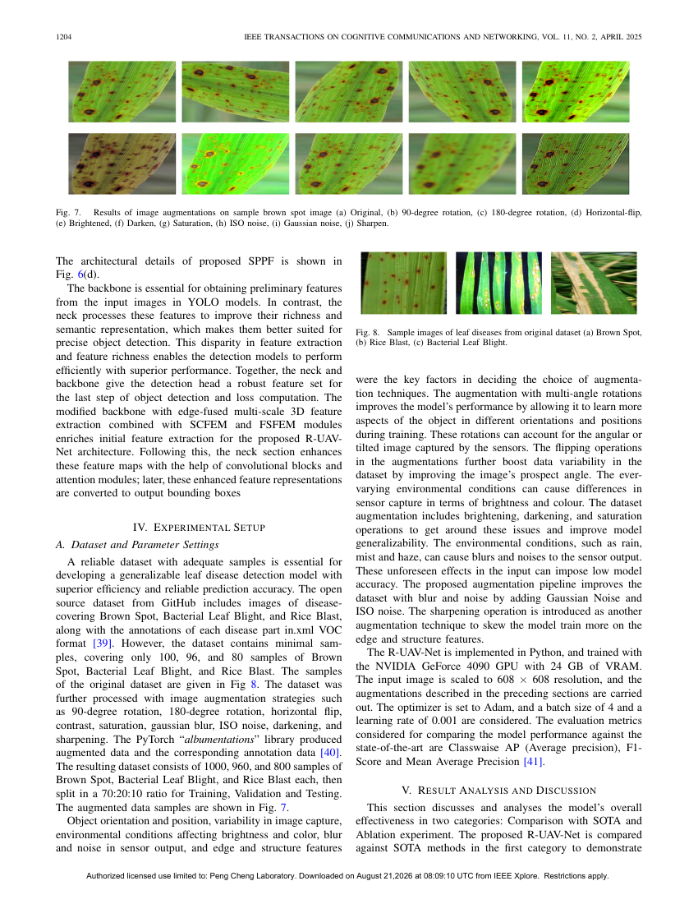</a><figcaption><b>关键结果证据页</b>｜来源：《R-UAV-Net: Enhanced YOLOv4 With Graph-Semantic Compression for Transformative UAV Sensing in Paddy Agronomy》，PDF p.8；原图题/表题：Results of image augmentations on sample brown spot image (a) Original, (b) 90-degree rotation, (c) 180-degree rotation, (d) Horizontal-flip, (e) Brightened, (f) Darken, (g) Saturation, (h) ISO noise, (i) Gaussian noise, (j) Sharpen.。 <a href='https://doi.org/10.1109/tccn.2024.3452053'>核对论文</a></figcaption></figure></div>
</article>
<article class="paper" id="rate-distortion-perception-controllable-joint-source-channel-coding-for-high-fidelity-genera" data-year="2025" data-tier="core">
  <div class="paper-head"><div><div><span class="tag core">核心纳入</span><span class="tag year">2025</span></div><h2>Rate-Distortion-Perception Controllable Joint Source-Channel Coding for High-Fidelity Generative Semantic Communications</h2></div><a class="pdf" href="https://doi.org/10.1109/tccn.2024.3511960">DOI / IEEE 页面</a></div>
  <div class="facts"><div><b>作者</b>Kailin Tan、Jincheng Dai、Zhenyu Liu、Sixian Wang、Xiaoqi Qin、Wenjun Xu、Kai Niu、Ping Zhang</div><div><b>出版信息</b>Vol. 11, No. 2, pp. 672-686</div><div><b>DOI / IEEE ID</b><a href="https://doi.org/10.1109/tccn.2024.3511960">10.1109/tccn.2024.3511960</a> / 10778256</div><div><b>任务</b>远端推理/机器任务</div><div><b>技术谱系</b>连续 learned latent / channel symbol（DeepJSCC）</div><div><b>年份口径</b>formal TCCN volume year</div></div>
  <div class="verdict"><b>是否属于严格数字语义通信：</b>否（连续语义 JSCC）</div>
  <h3>实验设置</h3><div class="grid3"><div><b>数据集/场景</b>Kodak、CLIC、Open Images、Cityscapes、HEVC、DAVIS</div><div><b>Baseline</b>DeepJSCC、NTSCC、WITT、JPEG、BPG、VVC、HEVC、LDPC、QAM、VTM、HM、FEC、Swin Transformer、ViT、GAN、Ballé、Minnen、ELIC、HiFiC、PPO、SAC、SwinJSCC、JSCC、IB</div><div><b>指标与信道条件</b>PSNR、SSIM、LPIPS、FID、MSE、mAP、mIoU、latency、FLOPs、MOS、WER、CER<br><span class="muted">SNR：10dB</span></div></div>
  <h3>Introduction 的六步讲述逻辑</h3><ol class='story'><li><b>已有进展：</b>the optimization goal of the JSCC framework to incorporate development of interest-oriented implementations, where the triple trade-off of “rate-distortion-perception (RDP)” to communication success means conveying personalized meet the demand for high perceptual quality in end-to-end critical information to meet the receiver’s interest, while communication systems. lower-priority information can rely on generative models When we follow the RDP theory to develop the generative to produce realistic outcomes.</li><li><b>现有问题：</b>JSCC framework, we usually face different practical deploy- Consequently, in this paper, we develop a novel RDP jointly ment challenges due to different available bandwidth: optimized JSCC framework to facilitate perception-oriented • Personalized transmission for various perception and end-to-end communications.</li><li><b>为何重要：</b>the optimization goal of the JSCC framework to incorporate development of interest-oriented implementations, where the triple trade-off of “rate-distortion-perception (RDP)” to communication success means conveying personalized meet the demand for high perceptual quality in end-to-end critical information to meet the receiver’s interest, while communication systems. lower-priority information can rely on generative models When we follow the RDP theory to develop the generative to produce realistic outcomes.</li><li><b>提出方案：</b>JSCC framework, we usually face different practical deploy- Consequently, in this paper, we develop a novel RDP jointly ment challenges due to different available bandwidth: optimized JSCC framework to facilitate perception-oriented • Personalized transmission for various perception and end-to-end communications.</li><li><b>解决机制：</b>Our proposed RDP-JSCC frame- distortion demands in affordable bandwidth: Given fea- work incorporates a flexible plug-in conditional Generative sible bandwidth limitations, different users may have Adversarial Networks (GANs) [26] that can be efficiently varying perception and distortion requirements for the integrated with existing RD-based models to enhance human same visual data source; for example, individuals may perception.</li><li><b>核心主张与证据目标：</b>With the VR-JSCC, every y i is adaptively transform process, variable-rate JSCC, a conditional GAN, and mapped to a ki -dimensional channel symbol vector s i guided a customized condition plug-in module as shown in Fig.</li></ol>
  <h3>方法、变量与优化</h3><p><b>系统/信息流：</b>PDF p.1：cations. for all regions while proportionally reducing channel bandwidth Initial works in DeepJSCC [5], [6], [7] typically employ an costs. Comprehensive experiments demonstrate the superiority of our RDP-optimized image transmission framework over state- autoencoder architecture that directly maps source information of-the-art engineered image transmission systems and advanced to channel-input symbols, considering wireless ch PDF p.3：fficiency, our framework includes three modularized components: a pair of nonlinear transforms, an entropy model, and variable-rate JSCC (VR- JSCC). Specifically, given a source image x ∈ R3×W ×H (W and H are the width and height of x), the analysis transform encoder ga and synthesis transform decoder gs is responsible for transforming x into latent features y ∈ Rc×w ×h (w, h, Fig. 2. Architecture of our RDP-JSCC framework, wh PDF p.3：hree modularized components: a pair of nonlinear transforms, an entropy model, and variable-rate JSCC (VR- JSCC). Specifically, given a source image x ∈ R3×W ×H (W and H are the width and height of x), the analysis transform encoder ga and synthesis transform decoder gs is responsible for transforming x into latent features y ∈ Rc×w ×h (w, h, Fig. 2. Architecture of our RDP-JSCC framework, which includes analysis and c are the PDF p.3：orm decoder gs is responsible for transforming x into latent features y ∈ Rc×w ×h (w, h, Fig. 2. Architecture of our RDP-JSCC framework, which includes analysis and c are the width, height, and channel numbers of y and transform process (an analysis transform encoder and an entropy model), recovering the reconstructed latent features y ^ back into the variable-rate JSCC, a conditional GAN, and a customized condition plug- sour</p><p><b>目标函数/联合训练证据：</b>正文未被规则稳定定位到显式 objective；应结合方法公式页复核。</p>
  <h3>数字化方案与传输开销</h3><p><b>传输表示证据：</b>PDF p.1：transform source-channel cod- Laboratory of Universal Wireless Communications, Ministry of Education, ing (NTSCC) approach [8], [9], [10], [15] integrates a Beijing University of Posts and Telecommunications, Beijing 100876, China learned entropy model in the latent space to optimize (e-mail: daijincheng@bupt.edu.cn). Zhenyu Liu is with the 5GIC and 6GIC, Institute for Communication the trade-off between transmission rate and PDF p.3：ransforms, an entropy model, and variable-rate JSCC (VR- JSCC). Specifically, given a source image x ∈ R3×W ×H (W and H are the width and height of x), the analysis transform encoder ga and synthesis transform decoder gs is responsible for transforming x into latent features y ∈ Rc×w ×h (w, h, Fig. 2. Architecture of our RDP-JSCC framework, which includes analysis and c are the width, height, and channel numbers of y and trans PDF p.3：features y ∈ Rc×w ×h (w, h, Fig. 2. Architecture of our RDP-JSCC framework, which includes analysis and c are the width, height, and channel numbers of y and transform process (an analysis transform encoder and an entropy model), recovering the reconstructed latent features y ^ back into the variable-rate JSCC, a conditional GAN, and a customized condition plug- source image, respectively. Note that gs also functions as a in m PDF p.3：condition plug- source image, respectively. Note that gs also functions as a in module. c is the conditional information, and it varies with different rate scenarios. The discriminator D is only operated during the training phase. generator in Fig. 2. In the latent space, the learned entropy model ε estimates the parameterized distributions of y, i.e., py (y ) [9], [28], [29]. The transmitter leverages py (y ) to calculate the</p><p><b>调制/信道编码线索：</b>16qam、arithmetic coding、ldpc、ofdm</p><p><b>可复核开销与缺失信息：</b>输入/分辨率线索：1024 × 2048、2048 × 4096、768 × 512、2048 × 2048、256 × 256、2048 × 1024、1024 × 512、16 × 16、32 × 48、48 × 32。feature/token/latent 尺寸线索：embeddings in y  (the output of 2048 × 4096。码本线索：正文未给出可稳定自动定位的条目。bit/bpp/速率线索：正文未给出可稳定自动定位的条目。CBR/压缩率线索：channel bandwidth ratio (CBR)、CBR、CBR-FID curves and CBR-PSNR curves on Kodak (the first row) and CLIC2022 (the second row)、CBR-FID performance and CBR-PSNR performance on CLIC2022 over a fast Rayleigh fading、CBR-PSNR performance and SNR-CBR-FID performance on CLIC2022 over the AWGN channel、coding rate and modulation order to ensure reliable transmission and the highest efficiency under dif、CBRs by setting、CBR cost training steps, i、CBR, the details such as cat fur, stones, and the train are still not as realistic as、CBR-FID and CBR-PSNR curves that our DPCT model demonstrates compet。连续 DeepJSCC 的主要预算是 channel uses/CBR；除非另加量化与调制，不能把每个 latent 当作固定 bit。</p><div class="formula">\[CBR=\frac{N_{complex\ channel\ symbols}}{N_{source\ samples}},\qquad R_{bit}\ \text{未定义（连续映射）}\]</div>
  <h3>信道处理机制</h3><div class="channel"><p><b>分类：</b>类别 3：连续 learned latent 直接通过有噪声信道</p><p><b>正文信道证据：</b>PDF p.1：iments demonstrate the superiority of our RDP-optimized image transmission framework over state- autoencoder architecture that directly maps source information of-the-art engineered image transmission systems and advanced to channel-input symbols, considering wireless channel perceptual methods. impairments to minimize end-to-end distortion metrics (e.g., the mean-squared error (MSE)). It has been demonstrated that DeepJSCC ca PDF p.1：o minimize end-to-end distortion metrics (e.g., the mean-squared error (MSE)). It has been demonstrated that DeepJSCC can outperform classical separation schemes, such Received 1 August 2024; revised 29 October 2024; accepted 23 November as JPEG combined with LDPC channel coding [11] for small 2024. Date of publication 5 December 2024; date of current version images [5]. In [12], [13], the authors proposed SwinJSCC, 9 April 20 PDF p.1：024YFF0509700, in part by the National Natural Science Foundation of China under Grant 62321001, showed that SwinJSCC outperforms BPG [14] (compatible Grant 62293481, Grant 62371063, Grant 92267301, and Grant 62201089, with HEVC intra coding) combined with 5G LDPC channel in part by the Beijing Municipal Natural Science Foundation under Grant coding for medium-sized images. However, these works only L232047, and Grant 4222012, PDF p.2：TAN et al.: RDP CONTROLLABLE JSCC FOR HIGH-FIDELITY GENERATIVE SEMANTIC COMMUNICATIONS 673 state-of-the-art (SOTA) engineered source and channel codecs, such as VTM [16] combined with 5G LDPC. However, the reconstructed images from these methods, despite reduced distortion, which can degrade human perceptual quality due to their pixel-wise averages of plausible solutions. As the transmission rate decreases, the first aspect to</p><p><b>decoder 实际收到：</b>带噪连续 channel symbol / latent，经神经 decoder 恢复任务输出</p><p><b>是否联合优化：</b>未检出明确的端到端信道联合优化证据。</p><p><b>是否真正处理 bit/index/token/packet error：</b>不适用 VQ index/bit 跳变；论文处理的是连续扰动和信道失配。</p></div>
  <h3>主要结果、局限与 Codex 判断</h3><p><b>证据化结果：</b>PDF p.1：ngineered image transmission systems and advanced to channel-input symbols, considering wireless channel perceptual methods. impairments to minimize end-to-end distortion metrics (e.g., the mean-squared error (MSE)). It has been demonstrated that DeepJSCC can outperform classical separation schemes, such Received 1 August 2024; revised 29 October 2024; accepted 23 November as JPEG combined with LDPC channel coding [11] for sma PDF p.1：d in part by the National Key Research which is built on the Swin Transformer architecture, and and Development Program of China under Grant 2024YFF0509700, in part by the National Natural Science Foundation of China under Grant 62321001, showed that SwinJSCC outperforms BPG [14] (compatible Grant 62293481, Grant 62371063, Grant 92267301, and Grant 62201089, with HEVC intra coding) combined with 5G LDPC channel in part by the PDF p.1：ion rate and distortion met- Systems, University of Surrey, GU2 7XH Guildford, U.K. rics end-to-end. This rate-distortion (RD) optimized JSCC Xiaoqi Qin, Wenjun Xu, and Ping Zhang are with the State Key Laboratory framework has demonstrated significant coding gains over of Networking and Switching Technology, Beijing University of Posts and Telecommunications, Beijing 100876, China. distortion-optimized JSCC approaches, exhibi PDF p.2：TAN et al.: RDP CONTROLLABLE JSCC FOR HIGH-FIDELITY GENERATIVE SEMANTIC COMMUNICATIONS 673 state-of-the-art (SOTA) engineered source and channel codecs, such as VTM [16] combined with 5G LDPC. However, the reconstructed images from these methods, despite reduced distortion, which can degrade human perceptual quality due to their pixel-wise averages of plausible solutions. As the transmission rate decreases, the first aspect to</p><p><b>独立判断：</b>没有完整离散接口，无法直接回答 bit/index/token 跳变问题。 未显式注入离散误码/丢包，鲁棒性结论不应外推到真实数字链路。</p>
  <div class="figs"><figure><a href='assets/2025_rate-distortion-perception-controllable-joint-source-channel-coding-for-high-fidelity-genera_method_p3.png' target='_blank'></a><figcaption><b>架构/方法证据页</b>｜来源：《Rate-Distortion-Perception Controllable Joint Source-Channel Coding for High-Fidelity Generative Semantic Communications》，PDF p.3；原图题/表题：by a rate allocation vector k = [k1 , . . . , kl ], where l = w × h.。 <a href='https://doi.org/10.1109/tccn.2024.3511960'>核对论文</a></figcaption></figure><figure><a href='assets/2025_rate-distortion-perception-controllable-joint-source-channel-coding-for-high-fidelity-genera_result_p4.png' target='_blank'>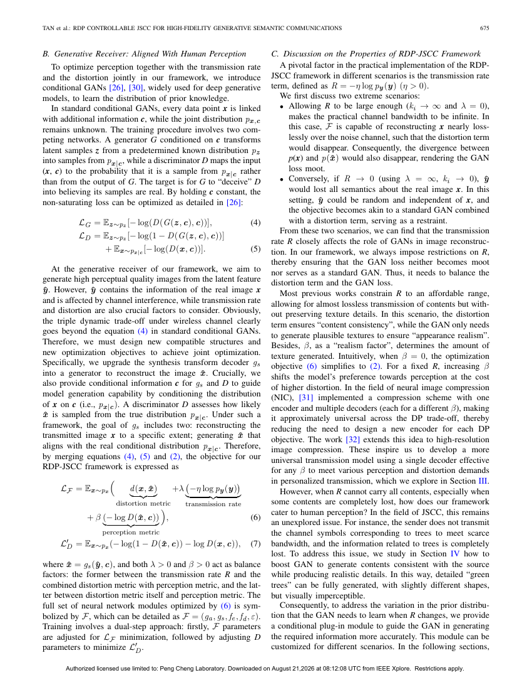</a><figcaption><b>关键结果证据页</b>｜来源：《Rate-Distortion-Perception Controllable Joint Source-Channel Coding for High-Fidelity Generative Semantic Communications》，PDF p.4；原图题/表题：by a rate allocation vector k = [k1 , . . . , kl ], where l = w × h.。 <a href='https://doi.org/10.1109/tccn.2024.3511960'>核对论文</a></figcaption></figure></div>
</article>
<article class="paper" id="semantic-image-encoding-and-communication-for-earth-observation-with-leo-satellites" data-year="2025" data-tier="core">
  <div class="paper-head"><div><div><span class="tag core">核心纳入</span><span class="tag year">2025</span></div><h2>Semantic Image Encoding and Communication for Earth Observation With LEO Satellites</h2></div><a class="pdf" href="https://doi.org/10.1109/tccn.2024.3451724">DOI / IEEE 页面</a></div>
  <div class="facts"><div><b>作者</b>Van-Phuc Bui、Thinh Quang Dinh、Israel Leyva‐Mayorga、Shashi Raj Pandey、Eva Lagunas、Petar Popovski</div><div><b>出版信息</b>Vol. 11, No. 2, pp. 1210-1224</div><div><b>DOI / IEEE ID</b><a href="https://doi.org/10.1109/tccn.2024.3451724">10.1109/tccn.2024.3451724</a> / 10659182</div><div><b>任务</b>图像语义传输或重建</div><div><b>技术谱系</b>学习式语义 feature；数字接口需由正文具体实现判定</div><div><b>年份口径</b>TCCN Early Access / formal volume pending</div></div>
  <div class="verdict"><b>是否属于严格数字语义通信：</b>系统层相关；没有足够证据把它判为严格数字语义通信。</div>
  <h3>实验设置</h3><div class="grid3"><div><b>数据集/场景</b>正文未给出可稳定自动定位的条目</div><div><b>Baseline</b>HM、FEC、ViT、FCN、PPO、SAC、JSCC、IB</div><div><b>指标与信道条件</b>PSNR、FID、mAP、accuracy、precision、NME、energy、MACs、throughput、MOS、WER、CER<br><span class="muted">SNR：55.94 dB</span></div></div>
  <h3>Introduction 的六步讲述逻辑</h3><ol class='story'><li><b>已有进展：</b>ask, authors in [7] introduced a approach entails designing a CNN utilizing patch or pixel-level novel method by optimizing the compression ratio, segmen- samples for network training, which necessitates a meticu- tation, and distributed processing of EO images, employing lously designed structure to attain good performance [28], an iterative optimization approach within the framework of [29], [30], [31].</li><li><b>现有问题：</b>However, because of the complex nature satellite mobile edge computing.</li><li><b>为何重要：</b>CNN is capable of autonomously learning suitable features, • We present two models that were developed based on thereby eliminating the need for manual feature selection. the U-Net encoder-decoder architecture [40]: Cloud-SLR Consequently, various approaches employing CNN have been (Cloud removal model enhanced by Smooth Labeling introduced for cloud detection, predominantly relying on Regularization technique) and Change-Net.</li><li><b>提出方案：</b>Furthermore, the application of machine learning is images to the ground stations. explored for cloud detection [34], encompassing the extrac- • We present a 3-stage architecture for semantic com- tion of features such as cloud texture, color, and geometric munication of EO images.</li><li><b>解决机制：</b>The architecture includes characteristics, followed by the design and training of clas- a learning-based transmitter that extracts changed MPs sifiers.</li><li><b>核心主张与证据目标：</b>Satellite-Based Image Transmission System • This work extends and improves our preliminary end- We consider a framework for satellite communication, to-end semantic communication framework [1] for depicted in Fig.</li></ol>
  <h3>方法、变量与优化</h3><p><b>系统/信息流：</b>PDF p.1：ta generated by Earth observation (EO) satellites poses a significant challenge to the limited-rate satellite-to-ground links. This paper addresses the downlink communication problem of change detection in multi- spectral satellite images for EO purposes. The proposed method is based on a cohesive strategy capable of eliminating clouds and performing semantic encoding during image processing. This approach is a manifestation o PDF p.1：erforming semantic encoding during image processing. This approach is a manifestation of semantic communication, as it encodes vital information for the target application, in the form of changed multi-spectral pixels (MPs) to minimize energy consumption. The proposed method is based on a three-stage Fig. 1. An example: (a), (b) a pair of images in different times where changed areas are bounded with red; (c) a bar chart on th PDF p.1：which reconstructed at ground gateway based on the reference image necessitates significant communication resources and on-board and received data. The numerical results show the effectiveness data storage capacity for transmitting data to ground-based of the proposed framework in achieving energy savings of up to 58% while upholding the transmission of high-quality data for end-users. For instance, the Sentinel-2 system acqui PDF p.2：utomatically learn image features during the training process, 1) Semantic Communication: Semantic information repre- leading to notable advancements in performance. Many of sents the meaning and veracity of source information [6], these approaches utilize an encoder-decoder structure, with which has attracted extensive research interest very recently. the U-Net architecture being a prominent example [21], [22], Popular approa</p><p><b>目标函数/联合训练证据：</b>PDF p.6：≥ sij }, ∀αij , sij , (15) Accordingly, we propose an algorithm to obtain an efficient suboptimal solution to the problem (17a). which ensures that all the changed MPs are transmitted. In the following, we describe the steps to detect change Accordingly, the optimization problem is to minimize the MPs in EO applications, which include preprocessing to communication energy subject to change detection constraints, remove cloud c PDF p.7：ẑψ ,i = g(ai |ψ) is the output of the model. where μ tk is the mean and σ 2tk is the variance for band n Remark 2: In order to enhance the training efficiency of xn xn of image Xtk , (k ∈ {0, 1}). The radiometric correction would Cloud-SLR, we utilize the CE loss function empowered by suppress the radiometric difference between multi-spectral the label smoothing regularization technique [55]. Specifically, images caused by di PDF p.8：BUI et al.: SEMANTIC IMAGE ENCODING AND COMMUNICATION FOR EO WITH LEO SATELLITES 1217 Fig. 4. Change-Net for semantic encoding (Θ indicates the network branch’s learnable parameters). Algorithm 1 Proposed Algorithm for Problem P2 loss function to classify every MP in the observed images as Input: Geometrical mult</p>
  <h3>数字化方案与传输开销</h3><p><b>传输表示证据：</b>PDF p.5：ion because these layers dominate the overall of light. The distance between the satellite and gateway dt computation and energy consumption [45]. Considering one can be calculated due to satellite’s predefined connection time convolution layer with the input feature map, assume there are to the gateway, orbit time, and satellite’s altitude. Once we M filters with height, width, and number of channels are R, S, know the SNR, a PDF p.5：eature map, assume there are to the gateway, orbit time, and satellite’s altitude. Once we M filters with height, width, and number of channels are R, S, know the SNR, a proper modulation and coding scheme is and D, respectively. As a result, we have M output feature map selected to achieve reliable communication, i.e., following the with size as E × F. Considering the stride with size S̄ × S̄ , DVB-S2 system [50]. We denote a PDF p.7：technique has demonstrated significant efficacy in addressing towards patterns of clouds or similar, the input patches under- the challenge of overfitting without requiring interventions went geometric transformations, such as horizontal flipping, within the latent activations or parameters of the neural rotation, and zooming. The output probability map is obtained network induced by other methodologies, i.e., such as the via</p><p><b>调制/信道编码线索：</b>未自动检出固定调制/信道编码名称</p><p><b>可复核开销与缺失信息：</b>输入/分辨率线索：998 × 108、10980 × 10980、384 × 384 × 4、66 × 109、384 x 384。feature/token/latent 尺寸线索：正文未给出可稳定自动定位的条目。码本线索：正文未给出可稳定自动定位的条目。bit/bpp/速率线索：正文未给出可稳定自动定位的条目。CBR/压缩率线索：compression ratio, segmen- samples for network training, which necessitates a meticu-、compression ratios [7] or establishing、compression ratio ρ and the positive constant κ depending on。该论文偏系统/理论层，正文未必给出可复核的 encoder feature map 与 payload 长度。</p><div class="formula">\[N_{tx}=N_{payload}+N_{side}+N_{protection};\quad \text{缺失项必须标记为未知}\]</div>
  <h3>信道处理机制</h3><div class="channel"><p><b>分类：</b>类别 5：信道/资源进入系统优化，但 payload 数字化接口不完整</p><p><b>正文信道证据：</b>PDF p.1：und station, and (3) high-resolution sensors results in large volumes of data, which reconstructed at ground gateway based on the reference image necessitates significant communication resources and on-board and received data. The numerical results show the effectiveness data storage capacity for transmitting data to ground-based of the proposed framework in achieving energy savings of up to 58% while upholding the transmissio PDF p.1：forwarding EMOTE sensing satellites are vital for environmental R monitoring as they swiftly provide comprehensive cov- erage of targeted regions, allowing for land use surveys, the complete dataset can be advantageous for accurately detecting any changes or anomalies, it is not regarded as efficient in terms of data storage and transmission capabilities. Therefore, the conventional approach of transmitting captured Manuscript PDF p.2：Analysis (CVA) [14], Principal Component Analysis a significant source of variability in image data, covering over (PCA) with K-means [15], and Gramm-Schmidt transfor- 50% of the Earth’s surface, including approximately 55% of mation [16] have demonstrated effective results in certain terrestrial landmasses and 72% of the oceanic expanse [5]. straightforward scenarios. Enhanced variants have also been Consequently, any methodo PDF p.2：pass two primary approaches: change detection based original data source encompass strategies such as (1) opti- on post-classification, or direct detection at the patch-level or mizing compression parameters [7], (2) employing a machine pixel-level [25]. The first approach involves training CNNs to learning-based technique referred to as joint source-channel classify remote sensing images captured during two distinct coding (J</p><p><b>decoder 实际收到：</b>由论文系统模型定义的语义 feature、任务状态或传统译码后数据</p><p><b>是否联合优化：</b>是/部分：目标或训练证据与物理信道同时出现。</p><p><b>是否真正处理 bit/index/token/packet error：</b>未形成可复核的 bit/index/token 错误闭环。</p></div>
  <h3>主要结果、局限与 Codex 判断</h3><p><b>证据化结果：</b>PDF p.1：segment. The adoption Petar Popovski are with the Department of Electronic Systems, Aalborg of the new processing workflow is projected to significantly University, 9220 Aalborg, Denmark (e-mail: vpb@es.aau.dk; ilm@es.aau.dk; srp@es.aau.dk; petarp@es.aau.dk). improve the efficiency of downlink data transmission, leading Thinh Quang Dinh is with the Information System Lab, University of to a decrease in the required transmissio PDF p.1：ve the efficiency of downlink data transmission, leading Thinh Quang Dinh is with the Information System Lab, University of to a decrease in the required transmission resources. In order Information Technology, Linh Trung, Thu Duc, Ho Chi Minh City 700000, to improve bandwidth utilization, compression should be Vietnam, and also with Vietnam National University Ho Chi Minh City, Linh Trung, Thu Duc, Ho Chi Minh City 700000, Vi PDF p.2：variants have also been Consequently, any methodology devised for change detection developed to achieve superior performance, such as Parcel necessitates the inclusion of a mechanism to discriminate CVA [17] and Robust CVA [18]. Additionally, the fuzzy local against or eliminate clouds from the image. In this study, we information clustering method with decomposition is applied develop a three-stage method specifically designe PDF p.2：chanism to discriminate CVA [17] and Robust CVA [18]. Additionally, the fuzzy local against or eliminate clouds from the image. In this study, we information clustering method with decomposition is applied develop a three-stage method specifically designed to reduce for land-cover change detection [19], while the fuzzy C-means the volume of data transmitted by identifying and encoding (FCM) algorithm is combined with a Bayesia</p><p><b>独立判断：</b>没有完整离散接口，无法直接回答 bit/index/token 跳变问题。 未显式注入离散误码/丢包，鲁棒性结论不应外推到真实数字链路。</p>
  <div class="figs"><figure><a href='assets/2025_semantic-image-encoding-and-communication-for-earth-observation-with-leo-satellites_method_p7.png' target='_blank'></a><figcaption><b>架构/方法证据页</b>｜来源：《Semantic Image Encoding and Communication for Earth Observation With LEO Satellites》，PDF p.7；原图题/表题：Cloud-SLR for cloud detection based on U-net architecture.。 <a href='https://doi.org/10.1109/tccn.2024.3451724'>核对论文</a></figcaption></figure><figure><a href='assets/2025_semantic-image-encoding-and-communication-for-earth-observation-with-leo-satellites_result_p3.png' target='_blank'>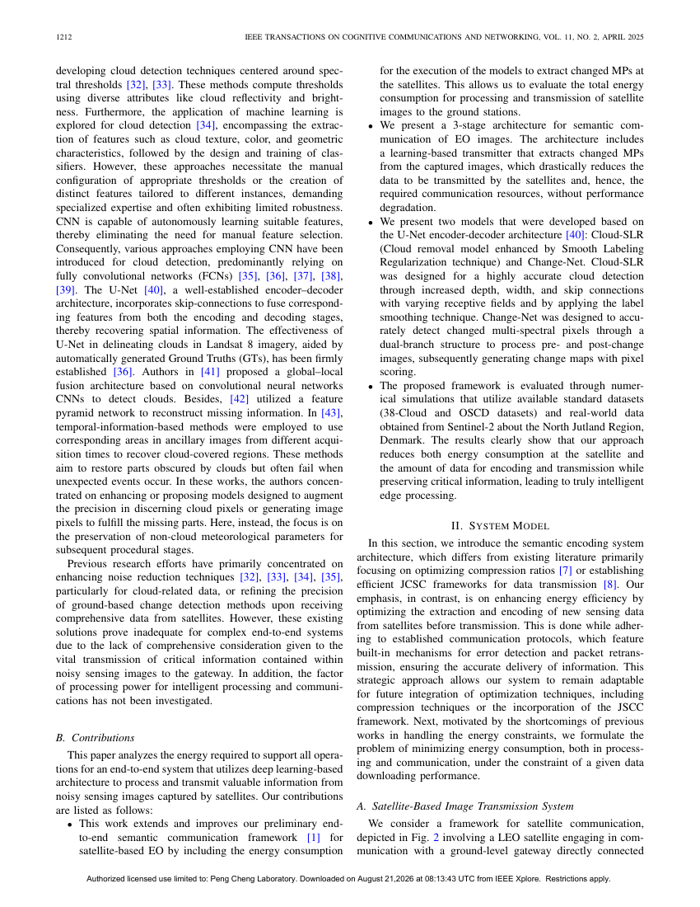</a><figcaption><b>关键结果证据页</b>｜来源：《Semantic Image Encoding and Communication for Earth Observation With LEO Satellites》，PDF p.3；原图题/表题：involving a LEO satellite engaging in com- satellite-based EO by including the energy consumption munication with a ground-level gateway directly connected。 <a href='https://doi.org/10.1109/tccn.2024.3451724'>核对论文</a></figcaption></figure></div>
</article>
<article class="paper" id="semantic-information-extraction-and-multi-agent-communication-optimization-based-on-generati" data-year="2025" data-tier="related">
  <div class="paper-head"><div><div><span class="tag related">相关但非核心</span><span class="tag year">2025</span></div><h2>Semantic Information Extraction and Multi-Agent Communication Optimization Based on Generative Pre-Trained Transformer</h2></div><a class="pdf" href="https://doi.org/10.1109/tccn.2024.3482354">DOI / IEEE 页面</a></div>
  <div class="facts"><div><b>作者</b>Li Zhou、Xinfeng Deng、Zhe Wang、Xiaoying Zhang、Yanjie Dong、Xiping Hu、Zhaolong Ning、Jibo Wei</div><div><b>出版信息</b>Vol. 11, No. 2, pp. 725-737</div><div><b>DOI / IEEE ID</b><a href="https://doi.org/10.1109/tccn.2024.3482354">10.1109/tccn.2024.3482354</a> / 10720863</div><div><b>任务</b>语义网络与资源分配</div><div><b>技术谱系</b>学习式语义 feature；数字接口需由正文具体实现判定</div><div><b>年份口径</b>formal TCCN volume year</div></div>
  <div class="verdict"><b>是否属于严格数字语义通信：</b>系统层相关；没有足够证据把它判为严格数字语义通信。</div>
  <h3>实验设置</h3><div class="grid3"><div><b>数据集/场景</b>正文未给出可稳定自动定位的条目</div><div><b>Baseline</b>WITT、HM、FEC、ARQ、ViT、GAN、VAE、PPO、SAC、IB、GPT</div><div><b>指标与信道条件</b>FID、MSE、mAP、accuracy、NME、latency、energy、throughput、VoI、MOS、WER、CER<br><span class="muted">SNR：正文未给出可稳定自动定位的条目</span></div></div>
  <h3>Introduction 的六步讲述逻辑</h3><ol class='story'><li><b>已有进展：</b>herefore, we consider integrating semantic Considering the bandwidth limitations in communication envi- information into multi-agent communication. ronments, this paper proposes the use of LLM to extract Recent studies have shown that generative artificial intel- key semantic information and perform extreme compression ligence (GenAI) can significantly enhance the effectiveness within the semantic domain, forming an efficient semantic of communication at the semantic layer [19], [20].</li><li><b>现有问题：</b>Ultimately, we information agents receive frequently varies, the data in will explore the challenges faced in implementing GenAI Authorized licensed use limited to: Peng Cheng Laboratory.</li><li><b>为何重要：</b>Finally, Section V pendently design semantic encoders and decoders, effectively summarizes the research findings and outlines future research enhancing data processing efficiency and accuracy in wireless directions. networks, showing significant performance gains in energy saving and reconstruction accuracy.</li><li><b>提出方案：</b>herefore, we consider integrating semantic Considering the bandwidth limitations in communication envi- information into multi-agent communication. ronments, this paper proposes the use of LLM to extract Recent studies have shown that generative artificial intel- key semantic information and perform extreme compression ligence (GenAI) can significantly enhance the effectiveness within the semantic domain, forming an efficient semantic of communication at the semantic layer [19], [20].</li><li><b>解决机制：</b>This method not only optimizes the models, such as diffusion [21], flow-based [22], and generative data transmission process but also enhances the efficiency and adversarial network [23] models, play a crucial role in com- accuracy of information delivery.</li><li><b>核心主张与证据目标：</b>These applications extracting semantic information from input data, the volume of not only improve the efficiency of data processing but also data that needs to be transmitted can be significantly reduced. enhance the capabilities of decision support systems, enabling For instance, this method can extract and transmit only key them to more accurately predict and respond to various information about changes in traffic flow or accidents, rather situations. than transmitting complete video or image data, thus reducing Generative adversarial networks (GANs) enhance datasets the demand for high bandwidth and improving data processing by generating high-quality synthetic data, which is very helpful efficiency.</li></ol>
  <h3>方法、变量与优化</h3><p><b>系统/信息流：</b>PDF p.2：proach optimizes bandwidth utilization by extracting introducing a content generation layer above the semantic and compressing information. Additionally, we experi- layer, clearly depicting the interaction between AIGC and mentally confirm the efficacy of the proposed method in SemCom. Additionally, Xia et al. [10] proposed a novel reducing data transmission and enhancing transmission GenAI-assisted SemCom network (GenAI-SCN), PDF p.2：27] studied a SemCom- in the next moment within the observation and state empowered AIGC (SemAIGC) generation and transmission spaces, thereby prompting agents to take more reasonable framework, achieving efficient content generation through actions. semantic encoders and decoders, and intelligently adjusting • This paper introduces LLM to establish a bridge between computing resources through a resource-aware workload trade- PDF p.2：SemCom- in the next moment within the observation and state empowered AIGC (SemAIGC) generation and transmission spaces, thereby prompting agents to take more reasonable framework, achieving efficient content generation through actions. semantic encoders and decoders, and intelligently adjusting • This paper introduces LLM to establish a bridge between computing resources through a resource-aware workload trade- humans and mac PDF p.2：) framework, which combines task source information methodology. Section IV presents and discusses experimental and contextual information, and introduces GenAI to inde- analysis and performance evaluation results. Finally, Section V pendently design semantic encoders and decoders, effectively summarizes the research findings and outlines future research enhancing data processing efficiency and accuracy in wireless directions.</p><p><b>目标函数/联合训练证据：</b>PDF p.7：global historical information ht = {ht−1 | 1 ≤ primarily serving to provide cases for LLM, strengthen LLM’s j ≤ N } from other agents. memory, and act according to the specified rules. Generally, the demon should include a description of the scenario task, E. Loss Function followed by behavior analysis and action prediction. Through these three components, the LLM can engage in reasoning The mixed network in the value decompos PDF p.7：gregate the global q-values Qnglb (ot , ht−1 , atn ) outputting predictions Aj [ti+1 ] of the enemy’s actions for each from each agent n’s network to generate the team’s q-values intelligent agent’s actions in the next time step. Qnteam (ot , ht−1 , at ). The loss function is represented as the expected TD loss and can be expressed as  D. Multi-Agent Reinforcement Learning Decisions LTD(θ) = E(τ,a,r ,τ  )∼D (y − Qtot (τ, a; PDF p.7：find a joint strategy that maximizes the magnitude of input quantities. global value function. Recent research includes learning a To learn sparse yet effective communication [7], this part joint Q function Qtot (·) for cooperative MARL. For instance, of the loss function includes sparse regularization, expressed</p>
  <h3>数字化方案与传输开销</h3><p><b>传输表示证据：</b>PDF p.3：lity reduction and feature extraction of sensor directly reduce the use of communication bandwidth and data data. The primary reason is their ability to map high- volume, their ability to generate data can locally produce dimensional data to a low-dimensional latent space, achieving the required data or scenes, thereby potentially indirectly data compression, which aids in reducing data processing reducing the demand for high PDF p.3：a to a low-dimensional latent space, achieving the required data or scenes, thereby potentially indirectly data compression, which aids in reducing data processing reducing the demand for high bandwidth and large data and communication bandwidth usage. In the latent space, the transfers. essential features of the data are preserved, while noise and Large language models (LLMs) can optimize current redundant information are eff</p><p><b>调制/信道编码线索：</b>ofdm</p><p><b>可复核开销与缺失信息：</b>输入/分辨率线索：10 × 10。feature/token/latent 尺寸线索：正文未给出可稳定自动定位的条目。码本线索：正文未给出可稳定自动定位的条目。bit/bpp/速率线索：正文未给出可稳定自动定位的条目。CBR/压缩率线索：正文未给出可稳定自动定位的条目。该论文偏系统/理论层，正文未必给出可复核的 encoder feature map 与 payload 长度。</p><div class="formula">\[N_{tx}=N_{payload}+N_{side}+N_{protection};\quad \text{缺失项必须标记为未知}\]</div>
  <h3>信道处理机制</h3><div class="channel"><p><b>分类：</b>类别 5：信道/资源进入系统优化，但 payload 数字化接口不完整</p><p><b>正文信道证据：</b>PDF p.1：observations of the environment and cannot signaling expenditure exchanged among agents by extracting key semantic data via LLM. This method not only simplifies the fully grasp the overall state, this introduces the challenge communication process but also effectively reduces the communi- of partial observability in multi-agent reinforcement learn- cation overhead by approximately 53% compared to the baseline ing (MARL). Furth PDF p.1：s of the MARL improves the convergence speed and accuracy of decision-making but also substantially decreases the signaling expenditure among systems inevitably become huge and challenge to handle [4]. agents. Consequently, GMAC offers a straightforward and effec- To tackle these challenges, communication among agents tive method to achieve efficient and economical communication becomes crucial. Through the sharing of observat PDF p.1：specific Date of publication 17 October 2024; date of current version 9 April 2025. domain challenges through the exchange and sharing of This work was supported in part by the National Natural Science Foundation information. For instance, Zhang et al. [6] effectively extracted of China under Grant 62171449, and in part by the Natural Science Foundation of Hunan Province under Grant 2022JJ30047. The associate editor meaningful PDF p.2：mation into multi-agent communication. ronments, this paper proposes the use of LLM to extract Recent studies have shown that generative artificial intel- key semantic information and perform extreme compression ligence (GenAI) can significantly enhance the effectiveness within the semantic domain, forming an efficient semantic of communication at the semantic layer [19], [20]. GenAI chain for transmission. This method not onl</p><p><b>decoder 实际收到：</b>由论文系统模型定义的语义 feature、任务状态或传统译码后数据</p><p><b>是否联合优化：</b>是/部分：目标或训练证据与物理信道同时出现。</p><p><b>是否真正处理 bit/index/token/packet error：</b>未形成可复核的 bit/index/token 错误闭环。</p></div>
  <h3>主要结果、局限与 Codex 判断</h3><p><b>证据化结果：</b>PDF p.1：ative capabilities to predict systems may exhibit behaviors that are cooperative, compet- subsequent actions, thereby enabling agents to make more itive, or a combination of both. Since agents typically have informed decisions. The GMAC approach significantly reduces access to partial observations of the environment and cannot signaling expenditure exchanged among agents by extracting key semantic data via LLM. This method not PDF p.1：ons of the environment and cannot signaling expenditure exchanged among agents by extracting key semantic data via LLM. This method not only simplifies the fully grasp the overall state, this introduces the challenge communication process but also effectively reduces the communi- of partial observability in multi-agent reinforcement learn- cation overhead by approximately 53% compared to the baseline ing (MARL). Furthermore, s PDF p.1：nt reinforcement learn- cation overhead by approximately 53% compared to the baseline ing (MARL). Furthermore, since all agents need to interact methods. Experimental results indicate that GMAC not only with each other, the action and state spaces of the MARL improves the convergence speed and accuracy of decision-making but also substantially decreases the signaling expenditure among systems inevitably become huge and challen PDF p.2：ced and 6G. It focuses on intelligent information as semantic information because they contain key data transmission, extracting meaningful and task-oriented content in the decision-making process, while other stable information, and boasts advantages such as reduced band- and unchanging information can be regarded as background width usage, lower data transmission volumes, and higher information. For example, in autonomous dr</p><p><b>独立判断：</b>没有完整离散接口，无法直接回答 bit/index/token 跳变问题。 未显式注入离散误码/丢包，鲁棒性结论不应外推到真实数字链路。 未报告统一可复核的 payload bit 数/CBR，跨论文带宽比较受限。 该文属于边界谱系，不能用它代表端到端语义通信主线。</p>
  <div class="figs"><figure><a href='assets/2025_semantic-information-extraction-and-multi-agent-communication-optimization-based-on-generati_method_p4.png' target='_blank'>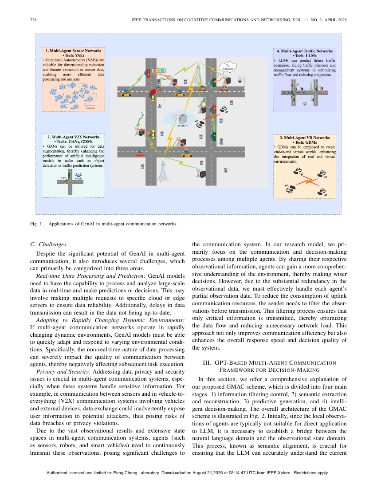</a><figcaption><b>架构/方法证据页</b>｜来源：《Semantic Information Extraction and Multi-Agent Communication Optimization Based on Generative Pre-Trained Transformer》，PDF p.4；原图题/表题：Applications of GenAI in multi-agent communication networks.。 <a href='https://doi.org/10.1109/tccn.2024.3482354'>核对论文</a></figcaption></figure><figure><a href='assets/2025_semantic-information-extraction-and-multi-agent-communication-optimization-based-on-generati_result_p8.png' target='_blank'></a><figcaption><b>关键结果证据页</b>｜来源：《Semantic Information Extraction and Multi-Agent Communication Optimization Based on Generative Pre-Trained Transformer》，PDF p.8；原图题/表题：We observe that the win rate of GMAC remains Q-functions through communication minimization, sending relatively s。 <a href='https://doi.org/10.1109/tccn.2024.3482354'>核对论文</a></figcaption></figure></div>
</article>
<article class="paper" id="semantic-successive-refinement-a-generative-ai-aided-semantic-communication-framework" data-year="2025" data-tier="core">
  <div class="paper-head"><div><div><span class="tag core">核心纳入</span><span class="tag year">2025</span></div><h2>Semantic Successive Refinement: A Generative AI-Aided Semantic Communication Framework</h2></div><a class="pdf" href="https://doi.org/10.1109/tccn.2025.3526839">DOI / IEEE 页面</a></div>
  <div class="facts"><div><b>作者</b>Kexin Zhang、Lixin Li、Wensheng Lin、Yuna Yan、Rui Li、Wenchi Cheng、Zhu Han</div><div><b>出版信息</b>Vol. 11, No. 2, pp. 687-699</div><div><b>DOI / IEEE ID</b><a href="https://doi.org/10.1109/tccn.2025.3526839">10.1109/tccn.2025.3526839</a> / 10829825</div><div><b>任务</b>通用/多模态语义通信</div><div><b>技术谱系</b>学习式语义 feature；数字接口需由正文具体实现判定</div><div><b>年份口径</b>formal TCCN volume year</div></div>
  <div class="verdict"><b>是否属于严格数字语义通信：</b>系统层相关；没有足够证据把它判为严格数字语义通信。</div>
  <h3>实验设置</h3><div class="grid3"><div><b>数据集/场景</b>COCO、CIFAR-10</div><div><b>Baseline</b>DeepJSCC、WITT、JPEG、LDPC、QAM、HM、FEC、Swin Transformer、ViT、GAN、VAE、VQ-VAE、PPO、SAC、ADJSCC、JSCC、IB、GPT</div><div><b>指标与信道条件</b>PSNR、LPIPS、FID、MSE、mAP、accuracy、NME、latency、throughput、VoI、MOS、WER、CER<br><span class="muted">SNR：0 dB、1 dB、13 dB、15 dB、6 dB</span></div></div>
  <h3>Introduction 的六步讲述逻辑</h3><ol class='story'><li><b>已有进展：</b>11] introduced a joint source-channel coding use the strong distribution mapping abilities of diffusion method incorporating an attention mechanism (ADJSCC). models to guide semantic recovery at the decoding end by This framework adapts to noise by dynamically adjusting the estimating a compact conditional vector.</li><li><b>现有问题：</b>This approach number of bits allocated to the channel and source coder to significantly advances the connection between seman- maintain transmission reliability in real-world environments. tic communication and cutting-edge generative models, However, these approaches primarily focus on the distortion improving the end-to-end perceptual performance of of the reconstructed signal at the receiver relative to the wireless communication systems. source at the transmitter without adequately considering the • Simulation experiments were conducted on public perceptual quality of the reconstructed image, which may lead datasets.</li><li><b>为何重要：</b>Yu et al. [15] extended the semantic communication that is data-driven and enhanced by adversarial training, with system to bi-directional communication for IoT devices with the combined goal of maximizing the reconstruction quality limited capacity, significantly reducing training overheads by for legitimate receivers while minimizing adversarial losses. eliminating the need for information feedback and model Yang et al. [27] combined an autoencoder with Orthogonal migration.</li><li><b>提出方案：</b>The results demonstrate that our proposed gen- to significant perceptual distortion under extreme conditions erative AI semantic communication system surpasses the such as low bandwidth and low Signal-to-Noise Ratio (SNR). benchmark communication system in data integrity and To address this, Kurka and Gündüz [12] proposed communication reliability.</li><li><b>解决机制：</b>Additionally, the simulation DeepJSCC-f, which employs a feedback mechanism that results confirm that our designed multi-user communi- allows the system to acquire real-time channel noise cation system efficiently handles requests from multiple information and mitigate its effects by feeding the received users, showcasing excellent performance and scalability. signal back to the transmitter.</li><li><b>核心主张与证据目标：</b>However, their results were only Network (INN) with a DM to model channel characteris- validated in a simulation environment. tics and degradation phenomena introduced by DeepJSCC.</li></ol>
  <h3>方法、变量与优化</h3><p><b>系统/信息流：</b>PDF p.2：688 IEEE TRANSACTIONS ON COGNITIVE COMMUNICATIONS AND NETWORKING, VOL. 11, NO. 2, APRIL 2025 the semantic communication network focuses on conveying the more detailed explanation of our system model. Following meaning (latent representations) of the generative AI content that, Section IV presents the simulation results and analysis of rather than optimizing solely the delivery of the 0s and 1s. This the proposed model. Finally PDF p.2：that align more closely with human visual perception than traditional bit-wise II. R ELATED W ORKS metrics. Semantic communication systems generally consist of three However, directly combining semantic communication with fundamental components: the semantic encoder at the trans- generative AI in fixed structures is inefficient due to the mitter, the channel, and the semantic decoder at the receiver. inability to adjust semant PDF p.2：mmunication systems generally consist of three However, directly combining semantic communication with fundamental components: the semantic encoder at the trans- generative AI in fixed structures is inefficient due to the mitter, the channel, and the semantic decoder at the receiver. inability to adjust semantic density. In this context, deploying At the transmitter, the semantic encoder extracts key seman- DM in the decoder o PDF p.2：ts: the semantic encoder at the trans- generative AI in fixed structures is inefficient due to the mitter, the channel, and the semantic decoder at the receiver. inability to adjust semantic density. In this context, deploying At the transmitter, the semantic encoder extracts key seman- DM in the decoder offers a promising solution to accurately tic features from the original data and compresses them recover the image context.</p><p><b>目标函数/联合训练证据：</b>PDF p.3：dback and model Yang et al. [27] combined an autoencoder with Orthogonal migration. Nguyen et al. [16] proposed a system that adapts to Frequency Division Multiplexing (OFDM), using a GAN- different computational capabilities by dynamically adjusting inspired loss function to efficiently train a robust decoder the transmission length of the output from the channel coder, against the effects of multipath fading. The approach de PDF p.6：mantic entiable across any domain. Therefore, the MSE between the content. The compression ratio is calculated by taking the ratio original input images and the user’s received images is used k/n of the transmitted data size to the original image size. as the loss function in the training phase, and l is the length While it is possible to compress the semantic feature vectors of the image vector, which is obtained from the pro PDF p.7：nd for   √ 16: Output the trained model M q(ZT | Z0 ) = N ZT ; ᾱT Z0 , (1 − ᾱT )I , (11) t where ᾱt = i=1 αi is the cumulative product of αt , the scheduler gradually adds Gaussian noise at each time step t ∈ Next, N 1 and N 2 are jointly optimized. The loss function [0, T] until the semantic information of</p>
  <h3>数字化方案与传输开销</h3><p><b>传输表示证据：</b>PDF p.1：an University of Houston, Houston, TX 77004 USA, and also with the utilize the fact that DM generates this content and transmits Department of Computer Science and Engineering, Kyung Hee University, Seoul 446-701, South Korea (e-mail: hanzhu22@gmail.com). the latent representation of the content while performing the Digital Object Identifier 10.1109/TCCN.2025.3526839 stable diffusion process on the receiver’s end. In this scen PDF p.2：688 IEEE TRANSACTIONS ON COGNITIVE COMMUNICATIONS AND NETWORKING, VOL. 11, NO. 2, APRIL 2025 the semantic communication network focuses on conveying the more detailed explanation of our system model. Following meaning (latent representations) of the generative AI content that, Section IV presents the simulation results and analysis of rather than optimizing solely the delivery of the 0s and 1s. This the proposed model. Finally PDF p.3：al. [14] proposed a discrete VAE. Subsequently, Hu et al. [25] employed an the WITT framework to enhance CNN performance by intro- adversarial training approach and introduced the Masked ducing a spatial modulation module, which adjusts the scale Variational Quantized Variational Autoencoder (MVQ-VAE) of potential representation based on channel state information, to enhance the system’s robustness to various noise types. impr PDF p.3：se problem and proposes a generative AI semantic the feasibility of ISC in real-time wireless communication communication framework that resolves the denoising or using Field Programmable Gate Array (FPGA) as a hardware colouring issues in the low-dimensional latent representa- platform, comparing its performance with conventional 256 tions of samples. Chen et al. [35] proposed CommIN, an Quadrature Amplitude Modulation (QAM)</p><p><b>调制/信道编码线索：</b>ldpc、ofdm</p><p><b>可复核开销与缺失信息：</b>输入/分辨率线索：32 × 32。feature/token/latent 尺寸线索：正文未给出可稳定自动定位的条目。码本线索：正文未给出可稳定自动定位的条目。bit/bpp/速率线索：正文未给出可稳定自动定位的条目。CBR/压缩率线索：compression ratio is calculated by taking the ratio original input images and the user’s recei。该论文偏系统/理论层，正文未必给出可复核的 encoder feature map 与 payload 长度。</p><div class="formula">\[N_{tx}=N_{payload}+N_{side}+N_{protection};\quad \text{缺失项必须标记为未知}\]</div>
  <h3>信道处理机制</h3><div class="channel"><p><b>分类：</b>类别 5：信道/资源进入系统优化，但 payload 数字化接口不完整</p><p><b>正文信道证据：</b>PDF p.1：on [2], [3]. Recent a Multi-User Generative Semantic Communication (MU-GSC) advancements further highlight SC’s potential. For instance, system utilizing an asynchronous processing model. This model the semantic interference cancelation (SemantIC) technique effectively manages multiple user requests and optimally utilizes enhances information quality by iteratively eliminating noise system resources for parallel processing. Si PDF p.1：ions. Compared to CNN-based DeepJSCC, our reduces forwarding payload by extracting and transmitting methods improve the Peak Signal-to-Noise Ratio (PSNR) by semantic features, even under adverse channel conditions [5]. 17.75% in Additive White Gaussian Noise (AWGN) channels and by 20.84% in Rayleigh channels. Simultaneously, the rapid advancement of generative Artificial Intelligence (AI) models and the widespread adop- tion o PDF p.1：JSCC, our reduces forwarding payload by extracting and transmitting methods improve the Peak Signal-to-Noise Ratio (PSNR) by semantic features, even under adverse channel conditions [5]. 17.75% in Additive White Gaussian Noise (AWGN) channels and by 20.84% in Rayleigh channels. Simultaneously, the rapid advancement of generative Artificial Intelligence (AI) models and the widespread adop- tion of technologies such as ChatGPT, PDF p.1：, Wensheng Lin, and Yuna Yan are with the School of Electronics and Information, Northwestern Polytechnical University, Xi’an By considering the context of the generated content, SC can 710129, China (e-mail: cocozhang@mail.nwpu.edu.cn; lilixin@nwpu.edu.cn; effectively leverage these advanced generative AI models to linwest@nwpu.edu.cn; yanyuna@mail.nwpu.edu.cn). enhance overall system performance. For example, consider a Rui</p><p><b>decoder 实际收到：</b>由论文系统模型定义的语义 feature、任务状态或传统译码后数据</p><p><b>是否联合优化：</b>是/部分：目标或训练证据与物理信道同时出现。</p><p><b>是否真正处理 bit/index/token/packet error：</b>未形成可复核的 bit/index/token 错误闭环。</p></div>
  <h3>主要结果、局限与 Codex 判断</h3><p><b>证据化结果：</b>PDF p.1：oth the signal and semantic domains without additional communication systems achieve superior transmission efficiency channel resource costs [4]. Similarly, the Semantic-Forward and enhanced communication content quality across various (SF) relaying framework improves network robustness and channel conditions. Compared to CNN-based DeepJSCC, our reduces forwarding payload by extracting and transmitting methods improve the Peak PDF p.1：erior transmission efficiency channel resource costs [4]. Similarly, the Semantic-Forward and enhanced communication content quality across various (SF) relaying framework improves network robustness and channel conditions. Compared to CNN-based DeepJSCC, our reduces forwarding payload by extracting and transmitting methods improve the Peak Signal-to-Noise Ratio (PSNR) by semantic features, even under adverse channel condition PDF p.1：y, the Semantic-Forward and enhanced communication content quality across various (SF) relaying framework improves network robustness and channel conditions. Compared to CNN-based DeepJSCC, our reduces forwarding payload by extracting and transmitting methods improve the Peak Signal-to-Noise Ratio (PSNR) by semantic features, even under adverse channel conditions [5]. 17.75% in Additive White Gaussian Noise (AWGN) channels and PDF p.3：ystem that adapts to Frequency Division Multiplexing (OFDM), using a GAN- different computational capabilities by dynamically adjusting inspired loss function to efficiently train a robust decoder the transmission length of the output from the channel coder, against the effects of multipath fading. The approach described combined with hybrid loss optimization, to achieve high- in [28] significantly reduces bandwidth requiremen</p><p><b>独立判断：</b>没有完整离散接口，无法直接回答 bit/index/token 跳变问题。 未显式注入离散误码/丢包，鲁棒性结论不应外推到真实数字链路。</p>
  <div class="figs"><figure><a href='assets/2025_semantic-successive-refinement-a-generative-ai-aided-semantic-communication-framework_method_p4.png' target='_blank'></a><figcaption><b>架构/方法证据页</b>｜来源：《Semantic Successive Refinement: A Generative AI-Aided Semantic Communication Framework》，PDF p.4；原图题/表题：The overview of the proposed generative AI semantic communication system.。 <a href='https://doi.org/10.1109/tccn.2025.3526839'>核对论文</a></figcaption></figure><figure><a href='assets/2025_semantic-successive-refinement-a-generative-ai-aided-semantic-communication-framework_result_p9.png' target='_blank'></a><figcaption><b>关键结果证据页</b>｜来源：《Semantic Successive Refinement: A Generative AI-Aided Semantic Communication Framework》，PDF p.9；原图题/表题：PSNR (higher the better) versus the SNR over AWGN and Rayleigh channel, respectively. (a) AWGN channel. (b) Rayleigh channel. (c) MU-GSC AWGN channel. (d) MU-GSC Rayleigh channel.。 <a href='https://doi.org/10.1109/tccn.2025.3526839'>核对论文</a></figcaption></figure></div>
</article>
<article class="paper" id="semantic-utility-loss-of-information-for-energy-efficient-semantic-status-update-communicati" data-year="2025" data-tier="core">
  <div class="paper-head"><div><div><span class="tag core">核心纳入</span><span class="tag year">2025</span></div><h2>Semantic Utility Loss of Information for Energy Efficient Semantic Status Update Communications</h2></div><a class="pdf" href="https://doi.org/10.1109/tccn.2024.3417627">DOI / IEEE 页面</a></div>
  <div class="facts"><div><b>作者</b>Liang Xu、Jian Jiao、Tao Yang、Jianhao Huang、Ye Wang、Qinyu Zhang</div><div><b>出版信息</b>Vol. 11, No. 1, pp. 59-74</div><div><b>DOI / IEEE ID</b><a href="https://doi.org/10.1109/tccn.2024.3417627">10.1109/tccn.2024.3417627</a> / 10566865</div><div><b>任务</b>通用/多模态语义通信</div><div><b>技术谱系</b>学习式语义 feature；数字接口需由正文具体实现判定</div><div><b>年份口径</b>TCCN Early Access / formal volume pending</div></div>
  <div class="verdict"><b>是否属于严格数字语义通信：</b>系统层相关；没有足够证据把它判为严格数字语义通信。</div>
  <h3>实验设置</h3><div class="grid3"><div><b>数据集/场景</b>MNIST</div><div><b>Baseline</b>LDPC、HM、FEC、ViT、GAN、VAE、VQ-VAE、PPO、SAC、IB、BERT</div><div><b>指标与信道条件</b>PSNR、SSIM、MSE、mAP、accuracy、recall、NME、QoE、latency、energy、BLEU、semantic similarity、throughput、AoI、AoII、VoI、MOS、WER、CER<br><span class="muted">SNR：12 dB、5 dB</span></div></div>
  <h3>Introduction 的六步讲述逻辑</h3><ol class='story'><li><b>已有进展：</b>fer it at the receiver, a pair of matched sions in autonomous driving, vehicle sensors need to collect knowledge base (KB) between a transmitter and a receiver are surrounding information with a large size of data in the format needed [6], [33].</li><li><b>现有问题：</b>In fact, owing to the dynamic coding scheme is investigated, where the sensor performs wireless environment, it is difficult for the transmitter and the semantic-aware filtering and sends to the monitor only the receiver to timely share the same KB.</li><li><b>为何重要：</b>fer it at the receiver, a pair of matched sions in autonomous driving, vehicle sensors need to collect knowledge base (KB) between a transmitter and a receiver are surrounding information with a large size of data in the format needed [6], [33].</li><li><b>提出方案：</b>To address this issue, a most relevant randomly arriving source data over an error- semantic forward protocol in the relay node is proposed in [29] free channel.</li><li><b>解决机制：</b>To maximize the semantic-aware utility function to forward the semantic information at the semantic level by and minimize the quadratic average length cost, the optimal utilizing the KB between the relay node and the receiver. real codeword lengths is determined, which highlights the Moreover, frequently updating the local KB at the receiver performance gains of semantic-aware filtering and source becomes impractical due to the limited transmission and coding.</li><li><b>核心主张与证据目标：</b>The source information process of interest scheduled to update to combat semantic mismatch and is modeled as a N-state discrete Markov chain (Dt )t∈N with therefore guarantee semantic similarity performance of Dt ∈ {1, 2, . . . , N } as shown in Fig.</li></ol>
  <h3>方法、变量与优化</h3><p><b>系统/信息流：</b>PDF p.1：ation (UoI) [4]. policy outperforms the zero-wait and sample-at-change policies. Specifically, a stale, incorrect or energy inefficient delivery Furthermore, we study a practical SSUC application to validate would aggravate the loss of UoI. the superiority of proposed framework over the traditional In contrast to a traditional architecture that focuses merely non-semantic status update system in terms of improving the timeline PDF p.2：Only valuable and concentrate on achieving a high semantic information similarity relevant content with respect to a goal or task needs to by using the AI technologies, such as Transformer and auto- be acquired, delivered, and reconstructed. Over-provisioning encoder which are powerful with prior knowledge [3], [32]. stemming from the generation and transmission of raw data The prevailing trend in this research highlights the PDF p.4：62 IEEE TRANSACTIONS ON COGNITIVE COMMUNICATIONS AND NETWORKING, VOL. 11, NO. 1, FEBRUARY 2025 Fig. 1. The semantic status update communication system model, where the transmitter is scheduled to sample and deliver semantic status updates Xt after semantic encoding. The receiver is scheduled to update local KB from the KB relay to ensure that the processes of semantic encoding Fθ (·) and −1 decoding Fϕ (·) can be PDF p.5：ion, the transmitted data in semantic communication By Combining with the age penalty and semantic similarity can be significantly compressed by utilizing the semantic loss function, we define the semantic utility loss (SUL) function at time slot t as follows encoder, thereby reducing the transmission delay to some   extent when given the same channel bandwidth. In particular, S(t) = Δ(t) × R Dt , D̂t . (7) with a transmissi</p><p><b>目标函数/联合训练证据：</b>PDF p.3：f information freshness metric. Section III presents the MDP KB-enabled semantic network. Specifically, this entails non- formulation and investigates the optimal joint scheduling negligible energy consumption and may degrade the semantic policy of formulated optimization problem with and with- utility of information, necessitating in-depth exploration. To out power cost cases. Simulation results are presented in deal with thi PDF p.5：nd infer the semantic loss of generality, to uniformly measure the semantic similarity information by Fϕ−1 (·). loss of information between the transmitter and receiver, we In general, the packet delay is given by the sum of the define the semantic similarity loss function as follows: transmission delay τt and the propagation delay τp . We define   L and R as the data length of the packet and the trans- R Dt , D̂t = 1 −1 . PDF p.5：t) or Fθ (·)⇔Fϕ (·) mission rate, respectively. Compared to traditional bit-level transmission, the transmitted data in semantic communication By Combining with the age penalty and semantic similarity can be significantly compressed by utilizing the semantic loss function, we define the semantic utility loss (SU</p>
  <h3>数字化方案与传输开销</h3><p><b>传输表示证据：</b>PDF p.2：n be realized in various formats, and warn [21], while the non-critical information can be e.g., knowledge graph, database, trained parametric or non- omitted. In this regard, improving UoI in the status update parametric models [6], [34]. In [27], a discrete codebook system entails not only optimal transmission scheduling but shared by the transmitter and the receiver is designed for also reliable semantic information extract PDF p.2：4]. In [27], a discrete codebook system entails not only optimal transmission scheduling but shared by the transmitter and the receiver is designed for also reliable semantic information extraction and inferring at encoded feature representation. The discrete codebook focuses the semantic level. on task-related feature identification and neglects impercepti- Going beyond AoI, AoII, and VoI, the semantics of ble noise-related d PDF p.15：rbin Institute of Technology pp. 158–164, Feb. 2023. (Shenzhen), Shenzhen, China, in 2021, where [27] Q. Hu, G. Zhang, Z. Qin, Y. Cai, G. Yu, and G. Y. Li, “Robust semantic he is currently pursuing the Ph.D. degree in communications with masked VQ-VAE enabled codebook,” IEEE Trans. information and communication engineering Wireless Commun., vol. 22, no. 12, pp. 8707–8722, Dec. 2023. with the Guangdong Provincial Key Laboratory</p><p><b>调制/信道编码线索：</b>ldpc</p><p><b>可复核开销与缺失信息：</b>输入/分辨率线索：28 × 28。feature/token/latent 尺寸线索：正文未给出可稳定自动定位的条目。码本线索：正文未给出可稳定自动定位的条目。bit/bpp/速率线索：正文未给出可稳定自动定位的条目。CBR/压缩率线索：coding rate 1/2。该论文偏系统/理论层，正文未必给出可复核的 encoder feature map 与 payload 长度。</p><div class="formula">\[N_{tx}=N_{payload}+N_{side}+N_{protection};\quad \text{缺失项必须标记为未知}\]</div>
  <h3>信道处理机制</h3><div class="channel"><p><b>分类：</b>类别 5：信道/资源进入系统优化，但 payload 数字化接口不完整</p><p><b>正文信道证据：</b>PDF p.1：Utility Loss (SUL), which captures both age penalty and estimated error for semantic of traditional communications is to optimize data-oriented information. By incorporating the knowledge base (KB)-enabled performance metrics in different applications, e.g., bit error semantic network into a discrete time Markov chain, we inves- probability and transmission latency in current 5G ultra- tigate the SUL in a time-slotted status u PDF p.1：d bits [5], [6]. In goal-oriented semantic semantic utility loss, joint scheduling, knowledge base. communication, only critical and goal-related information is delivered to the destination [7]. This new paradigm aims to redefine importance, timeliness, and effectiveness of delivered I. I NTRODUCTION information in future networked intelligent systems [8], which MERGING Intelligent applications in 6G and the Internet enables t PDF p.3：formulated optimization problem with and with- utility of information, necessitating in-depth exploration. To out power cost cases. Simulation results are presented in deal with this issue, we investigate an appropriate KB updating Section IV to verify the effectiveness of the proposed optimal model to enhance the long-term semantic utility of information joint scheduling policy. Finally, Section V concludes the paper. in a pr PDF p.4：ture sequence and ensure that compressed semantic similarity only alter the probabilities of occurrence Xt is exchanged over an unreliable physical channel. Based for semantic match and mismatch states. When Fθ (·) ⇔ on the last received update, the receiver firstly constructs an Fϕ−1 (·) and X̂t = Xt , the receiver can assume that no estimate of the process, denoted by X̂t . Then, X̂t is used in the semantic decoding network</p><p><b>decoder 实际收到：</b>由论文系统模型定义的语义 feature、任务状态或传统译码后数据</p><p><b>是否联合优化：</b>是/部分：目标或训练证据与物理信道同时出现。</p><p><b>是否真正处理 bit/index/token/packet error：</b>未形成可复核的 bit/index/token 错误闭环。</p></div>
  <h3>主要结果、局限与 Codex 判断</h3><p><b>证据化结果：</b>PDF p.1：d updating scheduling policy has optimal threshold structure data is essential to breakup the agnostic semantic properties of with respect to SUL. Simulation results show that the optimized the data, which leads to low utility of information (UoI) [4]. policy outperforms the zero-wait and sample-at-change policies. Specifically, a stale, incorrect or energy inefficient delivery Furthermore, we study a practical SSUC applicatio PDF p.2：are employed to drop arrival packets that are not related (AoII) [11] and Query AoI [19]. The AoII is proposed to to the goal and harness packet transmission failures due to extend the notion of fresh updates to that of fresh informative fading channels. This improves the performance of the system updates [11]. The AoII combines both freshness and relevant compared to fixed filtering adopted in [8], and the importance- attribu PDF p.2：rk semantic data sourcing decreasing dissatisfaction function f (·) can be adopted. With (SEMDAS) is proposed in [23] by utilizing machine learning the constraint on energy consumption, an optimal minimum to reactively request information related to tasks. To reduce cost can be achieved by performing a randomized AoII- the scheduling overhead of the SEMDAS framework in a based threshold policy [13]. This highlights the signifi PDF p.2：mation extraction and inferring at encoded feature representation. The discrete codebook focuses the semantic level. on task-related feature identification and neglects impercepti- Going beyond AoI, AoII, and VoI, the semantics of ble noise-related details to reduce the interference incurred by information (SoI) is proposed in [8] to measure the signif- semantic noise. Once the local KB fails to match, semantic icance and usef</p><p><b>独立判断：</b>没有完整离散接口，无法直接回答 bit/index/token 跳变问题。 未显式注入离散误码/丢包，鲁棒性结论不应外推到真实数字链路。</p>
  <div class="figs"><figure><a href='assets/2025_semantic-utility-loss-of-information-for-energy-efficient-semantic-status-update-communicati_method_p11.png' target='_blank'></a><figcaption><b>架构/方法证据页</b>｜来源：《Semantic Utility Loss of Information for Energy Efficient Semantic Status Update Communications》，PDF p.11；原图题/表题：The average sum cost comparison between the proposed optimal。 <a href='https://doi.org/10.1109/tccn.2024.3417627'>核对论文</a></figcaption></figure><figure><a href='assets/2025_semantic-utility-loss-of-information-for-energy-efficient-semantic-status-update-communicati_result_p12.png' target='_blank'></a><figcaption><b>关键结果证据页</b>｜来源：《Semantic Utility Loss of Information for Energy Efficient Semantic Status Update Communications》，PDF p.12；原图题/表题：The average sum cost comparison between the proposed optimal。 <a href='https://doi.org/10.1109/tccn.2024.3417627'>核对论文</a></figcaption></figure></div>
</article>
<article class="paper" id="sinr-adaptive-and-cbr-controllable-semantic-cellular-communication-considering-imperfect-csi" data-year="2025" data-tier="core">
  <div class="paper-head"><div><div><span class="tag core">核心纳入</span><span class="tag year">2025</span></div><h2>SINR-Adaptive and CBR-Controllable Semantic Cellular Communication Considering Imperfect CSI and Inter-Cell Co-Channel Interference</h2></div><a class="pdf" href="https://doi.org/10.1109/tccn.2024.3522140">DOI / IEEE 页面</a></div>
  <div class="facts"><div><b>作者</b>Haiwen Niu、Luhan Wang、Zhaoming Lu、Celimuge Wu、Xiangming Wen</div><div><b>出版信息</b>Vol. 11, No. 4, pp. 2368-2385</div><div><b>DOI / IEEE ID</b><a href="https://doi.org/10.1109/tccn.2024.3522140">10.1109/tccn.2024.3522140</a> / 10813024</div><div><b>任务</b>通用/多模态语义通信</div><div><b>技术谱系</b>连续 learned latent / channel symbol（DeepJSCC）</div><div><b>年份口径</b>TCCN Early Access / formal volume pending</div></div>
  <div class="verdict"><b>是否属于严格数字语义通信：</b>否（连续语义 JSCC）</div>
  <h3>实验设置</h3><div class="grid3"><div><b>数据集/场景</b>Kodak、CLIC、Open Images</div><div><b>Baseline</b>DeepJSCC、WITT、JPEG、LDPC、Turbo、QAM、HM、FEC、Swin Transformer、GAN、Ballé、TCM、PPO、SAC、ADJSCC、JSCC、IB</div><div><b>指标与信道条件</b>PSNR、LPIPS、FID、MSE、mAP、NME、latency、energy、FLOPs、MOS、WER、CER<br><span class="muted">SNR：-174 dB、0dB、10dB、20 dB</span></div></div>
  <h3>Introduction 的六步讲述逻辑</h3><ol class='story'><li><b>已有进展：</b>ic noise cancela- related work in three subsections. tion [12], [13], [14].</li><li><b>现有问题：</b>CBR-Controllable Semantic Communication To address the above problems and challenges, we investi- Recently, many semantic communication systems based on gate a SINR-adaptive and CBR-controllable semantic cellular DL techniques have been proposed for particular image tasks, communication system for image transmission, considering i.e., image reconstruction, classification, and recognition.</li><li><b>为何重要：</b>Therefore, it is necessary to reduce the effects of ICCI for a robust semantic cellular communication system.</li><li><b>提出方案：</b>CBR-Controllable Semantic Communication To address the above problems and challenges, we investi- Recently, many semantic communication systems based on gate a SINR-adaptive and CBR-controllable semantic cellular DL techniques have been proposed for particular image tasks, communication system for image transmission, considering i.e., image reconstruction, classification, and recognition.</li><li><b>解决机制：</b>To evaluate its feasibility, we select these existing works, some pioneering works have been carried the peak signal-to-noise ratio (PSNR) and learned perceptual on CBR-controllable semantic transmission to meet various image patch similarity (LPIPS) as image quality metrics for requirements of users [15], [16], [17], [18], [19].</li><li><b>核心主张与证据目标：</b>As a result, the channel can be assumed methods for dynamic networking and various channel condi- to remain constant during the transmission of the symbol tions. sequence.</li></ol>
  <h3>方法、变量与优化</h3><p><b>系统/信息流：</b>PDF p.1：E2E) semantic noise ratio (SINR) adaptive and CBR-controllable semantic communication systems based on deep learning (DL) have cellular communication system (SACC). In this system, we been proposed, following the semantic communication auto- design a semantic encoder by a Transformer-convolutional neural network (CNN) mixture block to capture non-local encoder architecture summarized in [2]. Through this method, and local late PDF p.1：ased on deep learning (DL) have cellular communication system (SACC). In this system, we been proposed, following the semantic communication auto- design a semantic encoder by a Transformer-convolutional neural network (CNN) mixture block to capture non-local encoder architecture summarized in [2]. Through this method, and local latent image features simultaneously and a SINR- semantic communication can overcome the cliff-effe PDF p.1：o SINR conditions. traditional communication. A model adaption strategy is proposed to handle varying The prior works mainly explore the possibility of seman- inter-cell co-channel interference proportions under the same SINR. Additionally, a semantic-channel encoder-decoder for- tic communications for transmitting signals in single-user warding paradigm, termed semantic translation, enables dynamic single-stage communication PDF p.1：onditions. traditional communication. A model adaption strategy is proposed to handle varying The prior works mainly explore the possibility of seman- inter-cell co-channel interference proportions under the same SINR. Additionally, a semantic-channel encoder-decoder for- tic communications for transmitting signals in single-user warding paradigm, termed semantic translation, enables dynamic single-stage communication system [</p><p><b>目标函数/联合训练证据：</b>PDF p.2：nel condition • We propose SACC, a semantic cellular communication and image contents. Similarly, a reinforcement learning based system that jointly considers ICCI and imperfect CSI, and adaptive semantic coding approach has been proposed, where minimizes the loss function in both pixel and perceptual the transmitter selects pre-defined quantization levels based domains. on the semantic segmented labels and feature maps of the PDF p.8：truction task, the objective of model training is to minimize the reconstruction error. To achieve more efficient model training, we can rewrite the Eq. (17) as     R R D R R SDc,n  CDc,n  A + B , γc,n  , μc,n  , ρ c,n  → xD c,n  (18) Therefore, the loss function of downlink transmission consid- T (·, γ U ,TT T ering ICCI can be expressed as the quality gap between the Fig. 5. Network architecture of symbol filter SF PDF p.8：nd Euclidean distance, we CDc,nT (·, γ U , μT ) has a symmetric architecture with chan- c,n c,n decompose Lc,n,n  minimization problem into LU c,n and Lc,n  D nel encoder CEc,n T (·, γ U ,T , θ T ), also including residual c,n c,n minimization problems. The loss functions Lc,n and Lc,n  can U D blocks and chan</p>
  <h3>数字化方案与传输开销</h3><p><b>传输表示证据：</b>PDF p.1：n this system, we been proposed, following the semantic communication auto- design a semantic encoder by a Transformer-convolutional neural network (CNN) mixture block to capture non-local encoder architecture summarized in [2]. Through this method, and local latent image features simultaneously and a SINR- semantic communication can overcome the cliff-effect phe- adaptive module based on the channel-spatial soft attention nom PDF p.2：x conditions, and so on. Experimental results show that channel input symbols s ∈ Ck [11], where typically k &lt; m. the SACC performs better than traditional methods and The ratio R = k/m, is denoted as the CBR, determining classic DeepJSCC approaches. how many channel symbols are available for each source The paper is organized as follows: Section II reviews symbol, which may correspond to available spectral or tem- related wor PDF p.2：ntents. Similarly, a reinforcement learning based system that jointly considers ICCI and imperfect CSI, and adaptive semantic coding approach has been proposed, where minimizes the loss function in both pixel and perceptual the transmitter selects pre-defined quantization levels based domains. on the semantic segmented labels and feature maps of the • To achieve SINR-adaptive communication, we design a input image, which indic PDF p.2：nsiders ICCI and imperfect CSI, and adaptive semantic coding approach has been proposed, where minimizes the loss function in both pixel and perceptual the transmitter selects pre-defined quantization levels based domains. on the semantic segmented labels and feature maps of the • To achieve SINR-adaptive communication, we design a input image, which indicates the number of allocated bits [16]. channel-spatial SINR-adaptive mo</p><p><b>调制/信道编码线索：</b>16qam、64qam、ldpc、turbo</p><p><b>可复核开销与缺失信息：</b>输入/分辨率线索：16 × 16、16 × 16 × 1、256 × 256、768 × 512。feature/token/latent 尺寸线索：symbols s U 1× 16、feature with size c,n 8 × 8。码本线索：正文未给出可稳定自动定位的条目。bit/bpp/速率线索：2 bits。CBR/压缩率线索：CBR-Controllable Semantic、channel bandwidth ratio (CBR)、CBR-controllable semantic communication systems based on deep learning、CBRs、channel bandwidth ratio, seman- support multi-user multi-stage semantic cellular communica-、CBR, we introduce a symbol、channel bandwidth ratio (CBR) becomes necessary to powerful computational and stora、CBR, determining classic DeepJSCC approaches、CBR based on the encoder model, training strategies、CBR-Controllable Semantic Communication。连续 DeepJSCC 的主要预算是 channel uses/CBR；除非另加量化与调制，不能把每个 latent 当作固定 bit。</p><div class="formula">\[CBR=\frac{N_{complex\ channel\ symbols}}{N_{source\ samples}},\qquad R_{bit}\ \text{未定义（连续映射）}\]</div>
  <h3>信道处理机制</h3><div class="channel"><p><b>分类：</b>类别 3：连续 learned latent 直接通过有噪声信道</p><p><b>正文信道证据：</b>PDF p.1：2368 IEEE TRANSACTIONS ON COGNITIVE COMMUNICATIONS AND NETWORKING, VOL. 11, NO. 4, AUGUST 2025 SINR-Adaptive and CBR-Controllable Semantic Cellular Communication Considering Imperfect CSI and Inter-Cell Co-Channel Interference Haiwen Niu , Student Member, IEEE, Luhan Wang , Zhaoming Lu , Celimuge Wu , Senior Member, IEEE, and Xiangming Wen , Senior Member, PDF p.1：2368 IEEE TRANSACTIONS ON COGNITIVE COMMUNICATIONS AND NETWORKING, VOL. 11, NO. 4, AUGUST 2025 SINR-Adaptive and CBR-Controllable Semantic Cellular Communication Considering Imperfect CSI and Inter-Cell Co-Channel Interference Haiwen Niu , Student Member, IEEE, Luhan Wang , Zhaoming Lu , Celimuge Wu , Senior Member, IEEE, and Xiangming Wen , Senior Member, IEEE Abstract—Deep learning (DL)-enabled semantic communica- in a parad PDF p.1：ions offer promising prospects for higher data transmission agnostic to content-aware communication, namely semantic efficiency. However, most existing studies focus on point-to-point communication, which focuses on the meaning of source transmissions with perfect channel state information (CSI) and fixed channel bandwidth ratio (CBR). This paper investigates messages rather than accurate bits [1]. Thanks to the initial multi- PDF p.1：he initial multi-point transmission in cellular networks with spectrum development in semantic information theory, a large number resource sharing and proposes a signal-to-interference plus of single-modal or multi-modal end-to-end (E2E) semantic noise ratio (SINR) adaptive and CBR-controllable semantic communication systems based on deep learning (DL) have cellular communication system (SACC). In this system, we been proposed</p><p><b>decoder 实际收到：</b>带噪连续 channel symbol / latent，经神经 decoder 恢复任务输出</p><p><b>是否联合优化：</b>是/部分：目标或训练证据与物理信道同时出现。</p><p><b>是否真正处理 bit/index/token/packet error：</b>不适用 VQ index/bit 跳变；论文处理的是连续扰动和信道失配。</p></div>
  <h3>主要结果、局限与 Codex 判断</h3><p><b>证据化结果：</b>PDF p.1：ansmit semantic information from differ- engineered “JEPG+LDPC+QAM” and DeepJSCC benchmarks across different wireless environments and CBRs. Furthermore, ent users/devices to their destination nodes across multiple experimental results demonstrate substantial improvements in stages. This motivates us to develop a multi-user multi-cell FLOPs, model sizes, and computing latency over the state-of-the- semantic communication syste PDF p.2：E2E semantic communication systems standing, inducing misunderstanding between a transmitter’s designed for various tasks. Recently, expanding these systems intended meaning and a receiver’s reconstructed meaning [13]. for large-scale multi-user networks has gained attention. Traditional interference management methods like inter-cell However, practical challenges like flexibility, efficiency, interference coordination and can PDF p.2：nal-to-interference plus noise ratio (SINR) or minimize interference and diverse user demands. Below, we review bit error rate, without considering semantic noise cancela- related work in three subsections. tion [12], [13], [14]. Therefore, it is necessary to reduce the effects of ICCI for a robust semantic cellular communication system. A. CBR-Controllable Semantic Communication To address the above problems and challenges, w PDF p.6：can observe that the H D c,n  and ICCI will introduce With the rapid development of Transformers, some meth- stochasticity during parameter updating, i.e., the parameter ods based on vision Transformers have been proposed, and updating with higher variance. outperform CNN-based methods because Transformers can To reduce the impacts of the downlink channel, the capture non-local information in images [30]. Although the D D D H</p><p><b>独立判断：</b>没有完整离散接口，无法直接回答 bit/index/token 跳变问题。 未显式注入离散误码/丢包，鲁棒性结论不应外推到真实数字链路。</p>
  <div class="figs"><figure><a href='assets/2025_sinr-adaptive-and-cbr-controllable-semantic-cellular-communication-considering-imperfect-csi_method_p4.png' target='_blank'></a><figcaption><b>架构/方法证据页</b>｜来源：《SINR-Adaptive and CBR-Controllable Semantic Cellular Communication Considering Imperfect CSI and Inter-Cell Co-Channel Interference》，PDF p.4；原图题/表题：Architecture overview of the SACC from the perspective of a single transceiver pair.。 <a href='https://doi.org/10.1109/tccn.2024.3522140'>核对论文</a></figcaption></figure><figure><a href='assets/2025_sinr-adaptive-and-cbr-controllable-semantic-cellular-communication-considering-imperfect-csi_result_p12.png' target='_blank'>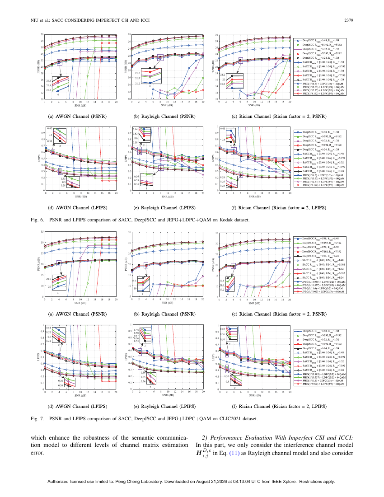</a><figcaption><b>关键结果证据页</b>｜来源：《SINR-Adaptive and CBR-Controllable Semantic Cellular Communication Considering Imperfect CSI and Inter-Cell Co-Channel Interference》，PDF p.12；原图题/表题：PSNR and LPIPS comparison of SACC, DeepJSCC and JEPG+LDPC+QAM on Kodak dataset.。 <a href='https://doi.org/10.1109/tccn.2024.3522140'>核对论文</a></figcaption></figure></div>
</article>
<article class="paper" id="swinjscc-taming-swin-transformer-for-deep-joint-source-channel-coding" data-year="2025" data-tier="core">
  <div class="paper-head"><div><div><span class="tag core">核心纳入</span><span class="tag year">2025</span></div><h2>SwinJSCC: Taming Swin Transformer for Deep Joint Source-Channel Coding</h2></div><a class="pdf" href="https://doi.org/10.1109/tccn.2024.3424842">DOI / IEEE 页面</a></div>
  <div class="facts"><div><b>作者</b>Ke Yang、Sixian Wang、Jincheng Dai、Xiaoqi Qin、Kai Niu、Ping Zhang</div><div><b>出版信息</b>Vol. 11, No. 1, pp. 90-104</div><div><b>DOI / IEEE ID</b><a href="https://doi.org/10.1109/tccn.2024.3424842">10.1109/tccn.2024.3424842</a> / 10589474</div><div><b>任务</b>语义通信理论、度量或编码界</div><div><b>技术谱系</b>连续 learned latent / channel symbol（DeepJSCC）</div><div><b>年份口径</b>formal TCCN volume year</div></div>
  <div class="verdict"><b>是否属于严格数字语义通信：</b>否（连续语义 JSCC）</div>
  <h3>实验设置</h3><div class="grid3"><div><b>数据集/场景</b>Kodak、CLIC、DIV2K、CIFAR10</div><div><b>Baseline</b>DeepJSCC、WITT、JPEG、JPEG2000、BPG、LDPC、Polar、QAM、HM、FEC、Swin Transformer、ViT、GAN、VAE、PPO、SAC、ASC、SwinJSCC、ADJSCC、JSCC、IB</div><div><b>指标与信道条件</b>PSNR、SSIM、MS-SSIM、FID、BD-rate、MSE、mAP、latency、FLOPs、VoI、MOS、WER、CER<br><span class="muted">SNR：0dB、10dB、13 dB、13dB、1dB、3dB、4dB、7dB、8dB</span></div></div>
  <h3>Introduction 的六步讲述逻辑</h3><ol class='story'><li><b>已有进展：</b>e stronger capability to combat channel 2) SNR and Rate Adaptation: To enhance the robustness of noise and interference.</li><li><b>现有问题：</b>With the elaborate design, our allowing a single model to adapt to different channel model integrates the advantages of Transformer [14] into the states and transmission rates for flexible wireless trans- deep JSCC framework, resulting in improved transmission mission. performance while simultaneously holding acceptable latency The remainder of this paper is organized as follows.</li><li><b>为何重要：</b>Thus, a naive alternation of CNN as Swin Transformer in denotes a probability density function (pdf) with respect to JSCC cannot yet achieve considerable performance gain.</li><li><b>提出方案：</b>A brief performance demonstration, SwinJSCC, we propose two plug-in modules, Channel as illustrated in Fig.</li><li><b>解决机制：</b>1, compares our method with other ModNet and Rate ModNet, which are optimized for existing approaches in terms of reconstructed image PSNR various channel conditions in communication scenarios, and processing complexity.</li><li><b>核心主张与证据目标：</b>The whole operation is As analyzed in [15], [16], y is indeed the learned latent shown in the right panel of Fig.</li></ol>
  <h3>方法、变量与优化</h3><p><b>系统/信息流：</b>PDF p.2：wireless trans- deep JSCC framework, resulting in improved transmission mission. performance while simultaneously holding acceptable latency The remainder of this paper is organized as follows. In and computational complexity. Section II, we first review the system model of deep JSCC. Specifically, this paper takes the lead to investigate a Then, in Section III, we introduce the overview of the new architecture named SwinJSCC PDF p.2：and Rate ModNet. Section V provides the Transformer [15], [16] into the deep JSCC framework. The experiment results and a direct comparison of several methods Swin Transformer, which constructs hierarchical feature maps to quantify the performance gain of the proposed method. in the latent space and has linear computational complexity to Finally, Section VI concludes this paper. image size, is utilized as the key component of PDF p.3：operation, and R denotes the real number set. Finally, N (x |μ, σ 2 )  (2πσ 2 )−1/2 exp(−(x − μ)2 /(2σ 2 )) denotes a Gaussian function. II. S YSTEM M ODEL Consider the following lossy end-to-end transmission sce- Fig. 2. Left: representation of a deep JSCC encoder combined with the nario. Alice is drawing an image from the source, denoting communication channel as an inference model and corresponding decoder as as an m-dimen PDF p.3：TEM M ODEL Consider the following lossy end-to-end transmission sce- Fig. 2. Left: representation of a deep JSCC encoder combined with the nario. Alice is drawing an image from the source, denoting communication channel as an inference model and corresponding decoder as as an m-dimensional vector x, whose probability is given as a generative model. Nodes denote random variables or parameters, and arrows show conditional depend</p><p><b>目标函数/联合训练证据：</b>PDF p.2：y of channel conditions and source data, finding all these near-optimal rate allocation solutions within a single model is a very challenging task. Our SwinJSCC with considerably increased model capacity can logistically provide a possibility for solving such optimization problems Fig. 1. Reconstructed image PSNR performance versus processing com- under diverse conditions. To this end, we propose two plug- plexity of different PDF p.3：raditional error correction coding, the (φ ∗ , θ ∗ ) = arg min Ex ∼px Ey^∼p^y |x [d (x , x ^ )], (1) latent representation y can also combat the channel noise like φ ,θ the channel coded sequence. In the computer vision (CV)- where d(·) denotes the distortion loss function. related image transmission task, the design of both encoder fe In this paper, in terms of the image semantic transmission and decoder fd is critical in det PDF p.6：depen- capacity of the model and supports both SNR adaptive and rate dencies, exploits global information, and efficiently learns adaptive strategies for wireless image transmission. During complex details in high-resolution images. the whole model training, we minimize the following loss to The proposed encoder</p>
  <h3>数字化方案与传输开销</h3><p><b>传输表示证据：</b>PDF p.1：ons [4], [5], performance than conventional neural JSCC codecs built upon [6], [7], [8], [9], [10], [11], [12]. Specifically, for image trans- CNN, while also requiring lower end-to-end processing latency. Paired with two spatial modulation modules that scale latent mission tasks, current deep JSCC [6] and its variants [7], [8], representations based on the channel state information and target [9], [10] using convolutional neu PDF p.2：el state can be implicitly found. The Rate attributed to the limited representation capability of CNN, thus ModNet realizes very flexible transmission bandwidth control one of the fundamental aspects to enhance the transmission through a learnable mask on the latent representations. These performance of deep JSCC models revolves around improving two modules jointly facilitate a versatile SwinJSCC frame- the model capacity. Mea PDF p.2：C methods by integrating the Swin the Channel ModNet and Rate ModNet. Section V provides the Transformer [15], [16] into the deep JSCC framework. The experiment results and a direct comparison of several methods Swin Transformer, which constructs hierarchical feature maps to quantify the performance gain of the proposed method. in the latent space and has linear computational complexity to Finally, Section VI concludes this pa PDF p.2：V provides the Transformer [15], [16] into the deep JSCC framework. The experiment results and a direct comparison of several methods Swin Transformer, which constructs hierarchical feature maps to quantify the performance gain of the proposed method. in the latent space and has linear computational complexity to Finally, Section VI concludes this paper. image size, is utilized as the key component of our proposed Notational C</p><p><b>调制/信道编码线索：</b>16qam、arithmetic coding、entropy coding、ldpc、ofdm</p><p><b>可复核开销与缺失信息：</b>输入/分辨率线索：32 × 32、512 × 512、16 × 16、256 × 256、512 × 768、16x16。feature/token/latent 尺寸线索：latent representation y  ∈ R 16 × 16。码本线索：正文未给出可稳定自动定位的条目。bit/bpp/速率线索：6144 bits。CBR/压缩率线索：channel bandwidth ratio (CBR) = 1/6、channel bandwidth ratio (CBR)、CBR) = 1/6、CBR R or high-resolution source images、CBR R, defined as representations to achieve the target CBR R、CBR R as special tokens sent into the Channel ModNet and “Channel ModNet、coding rates and quadrature amplitude modulations (QAM)、CBR constraint CBR = 1/48, 1/16, 1/8、CBR constraints over the AWGN、CBRs,。连续 DeepJSCC 的主要预算是 channel uses/CBR；除非另加量化与调制，不能把每个 latent 当作固定 bit。</p><div class="formula">\[CBR=\frac{N_{complex\ channel\ symbols}}{N_{source\ samples}},\qquad R_{bit}\ \text{未定义（连续映射）}\]</div>
  <h3>信道处理机制</h3><div class="channel"><p><b>分类：</b>类别 3：连续 learned latent 直接通过有噪声信道</p><p><b>正文信道证据：</b>PDF p.1：l conditions and rate configurations. Extensive combined with advanced channel codes) [6]. experimental results show that our SwinJSCC achieves better or comparable performance versus the state-of-the-art engineered Bourtsoulatze et al. [6] have proposed the first CNN- BPG + 5G LDPC coded transmission system with much faster based deep JSCC scheme outperforms separation-based digital end-to-end coding speed, especially for hig PDF p.1：te configurations. Extensive combined with advanced channel codes) [6]. experimental results show that our SwinJSCC achieves better or comparable performance versus the state-of-the-art engineered Bourtsoulatze et al. [6] have proposed the first CNN- BPG + 5G LDPC coded transmission system with much faster based deep JSCC scheme outperforms separation-based digital end-to-end coding speed, especially for high-resolution images PDF p.2：y can logistically provide a possibility for solving such optimization problems Fig. 1. Reconstructed image PSNR performance versus processing com- under diverse conditions. To this end, we propose two plug- plexity of different methods for Kodak dataset over AWGN channel where in modules into SwinJSCC, i.e., Channel ModNet and Rate SNR = 7dB and channel bandwidth ratio (CBR) = 1/6. Complexity measures ModNet, to enable a sing PDF p.2：esentations. These performance of deep JSCC models revolves around improving two modules jointly facilitate a versatile SwinJSCC frame- the model capacity. Meanwhile, it is crucial to account for the work. We verify the superiority of SwinJSCC via extensive effects of both varying channel states and various transmission experiments. Overall, the new SwinJSCC backbone improves rates. the efficiency of wireless image transmissio</p><p><b>decoder 实际收到：</b>带噪连续 channel symbol / latent，经神经 decoder 恢复任务输出</p><p><b>是否联合优化：</b>是/部分：目标或训练证据与物理信道同时出现。</p><p><b>是否真正处理 bit/index/token/packet error：</b>不适用 VQ index/bit 跳变；论文处理的是连续扰动和信道失配。</p></div>
  <h3>主要结果、局限与 Codex 判断</h3><p><b>证据化结果：</b>PDF p.1：sed on the convolutional neural network (CNN) backbone, the assumptions on which separation theory is based may not whose model capacity is yet limited, inherently leading to hold in a practical system, which leads to the development of inferior system coding gain against traditional coded transmission joint source-channel coding (JSCC). JSCC can greatly improve systems. In this paper, we establish a new neural JSCC backbone t PDF p.1：the convolutional neural network (CNN) backbone, the assumptions on which separation theory is based may not whose model capacity is yet limited, inherently leading to hold in a practical system, which leads to the development of inferior system coding gain against traditional coded transmission joint source-channel coding (JSCC). JSCC can greatly improve systems. In this paper, we establish a new neural JSCC backbone the syst PDF p.1：y is based may not whose model capacity is yet limited, inherently leading to hold in a practical system, which leads to the development of inferior system coding gain against traditional coded transmission joint source-channel coding (JSCC). JSCC can greatly improve systems. In this paper, we establish a new neural JSCC backbone the system performance when there are, for example, stringent that can also adapt flexibly to dive PDF p.1：experimental results show that our SwinJSCC achieves better or comparable performance versus the state-of-the-art engineered Bourtsoulatze et al. [6] have proposed the first CNN- BPG + 5G LDPC coded transmission system with much faster based deep JSCC scheme outperforms separation-based digital end-to-end coding speed, especially for high-resolution images, in transmission scheme at low signal-to-noise ratio (SNR) and which ca</p><p><b>独立判断：</b>没有完整离散接口，无法直接回答 bit/index/token 跳变问题。 未显式注入离散误码/丢包，鲁棒性结论不应外推到真实数字链路。</p>
  <div class="figs"><figure><a href='assets/2025_swinjscc-taming-swin-transformer-for-deep-joint-source-channel-coding_method_p5.png' target='_blank'></a><figcaption><b>架构/方法证据页</b>｜来源：《SwinJSCC: Taming Swin Transformer for Deep Joint Source-Channel Coding》，PDF p.5；原图题/表题：The overall architecture of our SwinJSCC for wireless image transmission.。 <a href='https://doi.org/10.1109/tccn.2024.3424842'>核对论文</a></figcaption></figure><figure><a href='assets/2025_swinjscc-taming-swin-transformer-for-deep-joint-source-channel-coding_result_p6.png' target='_blank'>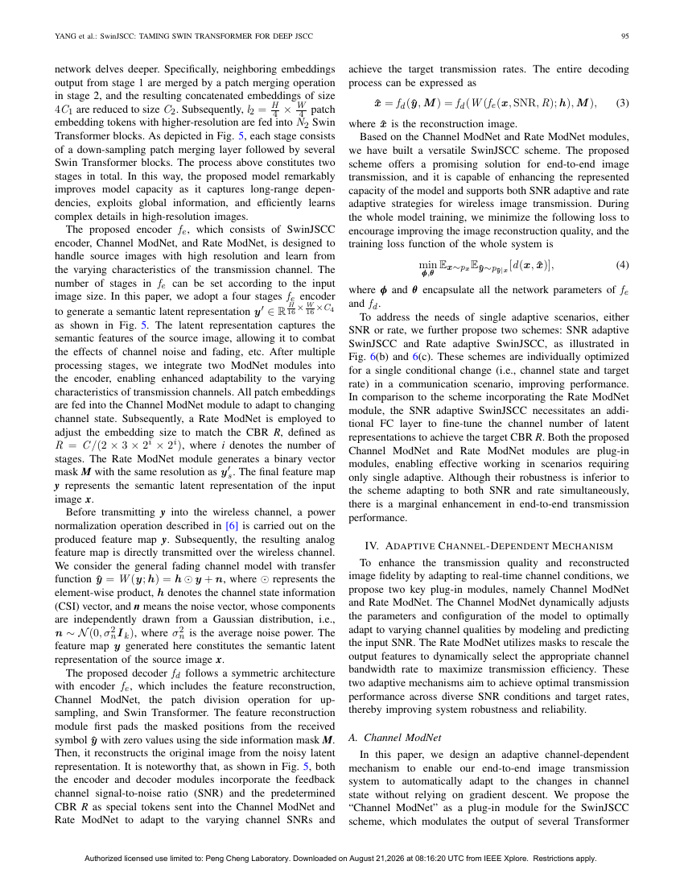</a><figcaption><b>关键结果证据页</b>｜来源：《SwinJSCC: Taming Swin Transformer for Deep Joint Source-Channel Coding》，PDF p.6；原图题/表题：(a) Two successive Swin Transformer Blocks. (b) The overall architecture of the proposed SNR Adaptive SwinJSCC scheme for wireless image transmission. (c) The overall architecture of the proposed Rate Adaptive SwinJSCC scheme for wireless image transmission.。 <a href='https://doi.org/10.1109/tccn.2024.3424842'>核对论文</a></figcaption></figure></div>
</article>
<article class="paper" id="task-oriented-communication-for-graph-data-a-graph-information-bottleneck-approach" data-year="2025" data-tier="core">
  <div class="paper-head"><div><div><span class="tag core">核心纳入</span><span class="tag year">2025</span></div><h2>Task-Oriented Communication for Graph Data: A Graph Information Bottleneck Approach</h2></div><a class="pdf" href="https://doi.org/10.1109/tccn.2024.3465651">DOI / IEEE 页面</a></div>
  <div class="facts"><div><b>作者</b>Shujing Li、Yanhu Wang、Shuaishuai Guo、Chenyuan Feng</div><div><b>出版信息</b>Vol. 11, No. 3, pp. 1723-1737</div><div><b>DOI / IEEE ID</b><a href="https://doi.org/10.1109/tccn.2024.3465651">10.1109/tccn.2024.3465651</a> / 10685450</div><div><b>任务</b>通用/多模态语义通信</div><div><b>技术谱系</b>VQ/codebook index 或量化 latent 的离散接口</div><div><b>年份口径</b>formal TCCN volume year</div></div>
  <div class="verdict"><b>是否属于严格数字语义通信：</b>是或部分是：正文存在离散/量化接口；仍需检查它是否真的承受 bit/index error。</div>
  <h3>实验设置</h3><div class="grid3"><div><b>数据集/场景</b>正文未给出可稳定自动定位的条目</div><div><b>Baseline</b>DeepJSCC、HM、FEC、ViT、GAN、VAE、VQ-VAE、PPO、SAC、ASC、JSCC、IB</div><div><b>指标与信道条件</b>SSIM、mAP、accuracy、precision、NME、latency、MOS、WER、CER<br><span class="muted">SNR：-15 dB、25 dB、5 dB</span></div></div>
  <h3>Introduction 的六步讲述逻辑</h3><ol class='story'><li><b>已有进展：</b>of compatibility between of text and allocate unequal power based on semantic task-oriented communication systems and digital communi- importance [15].</li><li><b>现有问题：</b>Shao et al. developed a task- emerges as a powerful technique that addresses these needs oriented communication scheme for edge inference using the by mapping high-dimensional data into a finite set of lower- information bottleneck (IB) [11], [13].</li><li><b>为何重要：</b>Thus, there is a requirement to values directly to input representations to achieve high- identify a suitable digitization mechanism for communication quality image reconstruction tasks [16], [17].</li><li><b>提出方案：</b>Motivation &amp; Contributions Our main contributions are summarized as follows: However, these works cannot be directly used for graph • We introduce GIB into a task-oriented communica- data transmission.</li><li><b>解决机制：</b>Because they are based on CNNs or fully tion system for graph data.</li><li><b>核心主张与证据目标：</b>The random variables achieve higher compression rates while achieving task (G, Y) together with the encoded codeword X and the channel- success rates comparable to traditional digital communi- corrupted codeword X̂ form the following probabilistic model: cation methods. (Y )G → X → X̂ → Ŷ , (1) which satisfy p(ŷ|g) = pθ (ŷ|x̂ )pchannel (x̂ |x )pφ (x |g).</li></ol>
  <h3>方法、变量与优化</h3><p><b>系统/信息流：</b>PDF p.2：odels, and the existing task-oriented communication systems Recently, an information-theoretical design principle for mainly rely on deep learning technology [10]. That is, graph data, named GIB, has been developed, which seeks the neural networks (NNs)-based encoder and decoder are the right balance between data compression and information constructed and trained, so that the task-oriented commu- preservation for graph data [ PDF p.2：he existing task-oriented communication systems Recently, an information-theoretical design principle for mainly rely on deep learning technology [10]. That is, graph data, named GIB, has been developed, which seeks the neural networks (NNs)-based encoder and decoder are the right balance between data compression and information constructed and trained, so that the task-oriented commu- preservation for graph data [26]. Specifi PDF p.2：ervation of only tecture for text transmission task, that combines joint task-relevant information while simultaneously compressing source-channel coding (JSCC) with recurrent neural network extraneous data. One of the challenges in studying graph (RNN) based encoder, binarization layers, channel layers, and information bottleneck, i.e., how to handle the interdependen- RNN-based decoder [14]. Xie et al. introduced a system ci PDF p.2：pressing source-channel coding (JSCC) with recurrent neural network extraneous data. One of the challenges in studying graph (RNN) based encoder, binarization layers, channel layers, and information bottleneck, i.e., how to handle the interdependen- RNN-based decoder [14]. Xie et al. introduced a system cies between nodes in graph data, is the non-IID character of for textual semantic restoration tasks based on Transformer gra</p><p><b>目标函数/联合训练证据：</b>PDF p.1：the irregular structure of graph data, making to represent in a grid-like matrix or a tensor. A graph is GIB optimization complex. We address this by deriving a usually composed of nodes and edges, which contain rich tractable variational upper bound for the objective function. relational information. We can regard the graph data as a Additionally, we propose the VQ-GIB mechanism, integrating Web of relationships, wherein the PDF p.2：se they are based on CNNs or fully tion system for graph data. We build a Markov connected networks and deal with regular data such as text chain model for information transmission and formu- (represented as sequences of characters) and images (repre- late an optimization problem to maximize the mutual sented as continuous two-dimensional or three-dimensional information between the task target and received code- pixel sets). PDF p.3：and Y is represented as I(X, Y). • Recognizing the importance of topological information in graph data, particularly in revealing community II. S YSTEM M ODEL AND P ROBLEM D ESCRIPTION structures, we introduce a connectivity loss term into A. System Model the objective function. This term leverages topological info</p>
  <h3>数字化方案与传输开销</h3><p><b>传输表示证据：</b>PDF p.1：contain rich tractable variational upper bound for the objective function. relational information. We can regard the graph data as a Additionally, we propose the VQ-GIB mechanism, integrating Web of relationships, wherein the nodes are the subjects and vector quantization (VQ) to convert subgraph representations the edges represent the relationships between the nodes. This into a discrete codebook sequence, compatible with exi PDF p.1：Additionally, we propose the VQ-GIB mechanism, integrating Web of relationships, wherein the nodes are the subjects and vector quantization (VQ) to convert subgraph representations the edges represent the relationships between the nodes. This into a discrete codebook sequence, compatible with existing digital communication systems. Our experiments show that feature makes graph an effective tool for modeling complex this GIB-ba PDF p.1：e for both continuous and discrete systems. recommendation systems, and user behavior analysis [7]. Index Terms—Task-oriented communication, graph neural However, the inherent complexity and size of graph data can network, graph information bottleneck, vector quantization. pose challenges for transmission and storage. A complete graph, which contains all possible relationships between the nodes, is often not suitable for direc PDF p.2：digitization mechanism for communication quality image reconstruction tasks [16], [17]. Kang et al. systems geared towards graph data, ensuring both effective proposed an image transmission method specifically designed data compression and robustness. Vector quantization (VQ) for scene classification tasks [18]. Shao et al. developed a task- emerges as a powerful technique that addresses these needs oriented communication sche</p><p><b>调制/信道编码线索：</b>qpsk</p><p><b>可复核开销与缺失信息：</b>输入/分辨率线索：正文未给出可稳定自动定位的条目。feature/token/latent 尺寸线索：正文未给出可稳定自动定位的条目。码本线索：codebook 0、codebook, which was set to 256。bit/bpp/速率线索：8-bit。CBR/压缩率线索：正文未给出可稳定自动定位的条目。VQ 情形只有同时知道 index 数量 \(N_{idx}\)、码本大小 \(K\) 与 side information 才能推出总 bit；缺一项时不填造数值。</p><div class="formula">\[N_{tx}=N_{idx}\lceil\log_2 K\rceil+N_{side},\qquad CR=\frac{N_{src}}{N_{tx}}\]</div>
  <h3>信道处理机制</h3><div class="channel"><p><b>分类：</b>类别 2–4 边界：数字接口进入无线链路，但是否端到端处理离散错误需看实现</p><p><b>正文信道证据：</b>PDF p.1：on Bottleneck Approach Shujing Li , Student Member, IEEE, Yanhu Wang, Student Member, IEEE, Shuaishuai Guo , Senior Member, IEEE, and Chenyuan Feng , Member, IEEE Abstract—Graph data, essential in fields like knowledge rep- objective extends beyond the mere effective transmission of resentation and social networks, often involves large networks raw data; it aims to optimize the performance for specific tasks with many nodes an PDF p.1：r quantization (VQ) to convert subgraph representations the edges represent the relationships between the nodes. This into a discrete codebook sequence, compatible with existing digital communication systems. Our experiments show that feature makes graph an effective tool for modeling complex this GIB-based method significantly lowers communication costs relationships in various non-Euclidean data scenarios [2], [3], while pre PDF p.1：the risk of information leakage. Therefore, an intelligent and concise communication system is needed Received 31 January 2024; revised 16 August 2024; accepted 15 September 2024. Date of publication 23 September 2024; date of current to transmit graph data effectively. Within this context, the version 12 June 2025. This work was supported in part by the National Graph Information Bottleneck (GIB) stands out as an inno- Natura PDF p.2：hus, there is a requirement to values directly to input representations to achieve high- identify a suitable digitization mechanism for communication quality image reconstruction tasks [16], [17]. Kang et al. systems geared towards graph data, ensuring both effective proposed an image transmission method specifically designed data compression and robustness. Vector quantization (VQ) for scene classification tasks [18]. Shao et</p><p><b>decoder 实际收到：</b>数字解调/译码后的 bit、index 或量化 feature；软信息接口若未明示则不能假定</p><p><b>是否联合优化：</b>是/部分：目标或训练证据与物理信道同时出现。</p><p><b>是否真正处理 bit/index/token/packet error：</b>部分：存在数字接口与信道模型，但若正文只报告 SNR/重建质量而未注入 bit/index error，就不能宣称解决跳变问题。</p></div>
  <h3>主要结果、局限与 Codex 判断</h3><p><b>证据化结果：</b>PDF p.2：addresses these needs oriented communication scheme for edge inference using the by mapping high-dimensional data into a finite set of lower- information bottleneck (IB) [11], [13]. Their scheme aims to dimensional codewords. This process not only facilitates improve the performance of image classification task at the significant data compression but also enhances the system’s edge server by efficiently transmitting relevant i PDF p.2：aims to dimensional codewords. This process not only facilitates improve the performance of image classification task at the significant data compression but also enhances the system’s edge server by efficiently transmitting relevant information. robustness against noise and transmission errors. Furthermore, These NNs-based task-oriented communication systems have by integrating with deep learning, VQ is highly adaptive and ac PDF p.3：graph data, particularly in revealing community II. S YSTEM M ODEL AND P ROBLEM D ESCRIPTION structures, we introduce a connectivity loss term into A. System Model the objective function. This term leverages topological information during feature extraction, reduces fluctua- In this paper, we consider a task-oriented communication tions in ambiguous node assignments, and contributes to system for graph data as shown in Fig. 1. PDF p.4：information con- it is necessary to consider the topological structure of taining graph data to get a tractable objective function? the graph. To do this, we need to impose constraints on The expansion of the first term in (5) yields: the feature extractor to improve the role of topological information in feature extraction.   p(y, x̂ ) • Problem 3: How to be compatible with digital I Y , X̂ = p(y, x̂ ) log dyd x̂ p(y)p(x̂ )</p><p><b>独立判断：</b>未显式注入离散误码/丢包，鲁棒性结论不应外推到真实数字链路。</p>
  <div class="figs"><figure><a href='assets/2025_task-oriented-communication-for-graph-data-a-graph-information-bottleneck-approach_method_p3.png' target='_blank'>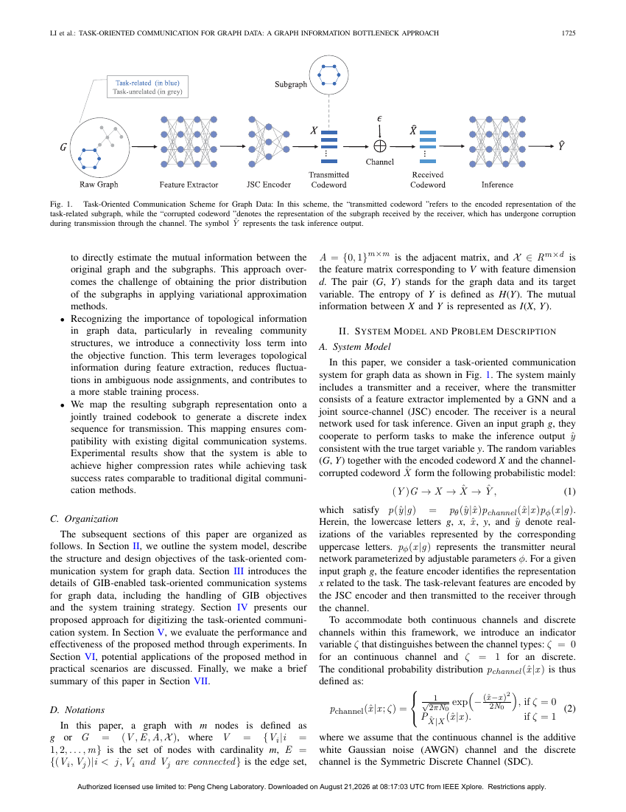</a><figcaption><b>架构/方法证据页</b>｜来源：《Task-Oriented Communication for Graph Data: A Graph Information Bottleneck Approach》，PDF p.3；原图题/表题：The system mainly a more s。 <a href='https://doi.org/10.1109/tccn.2024.3465651'>核对论文</a></figcaption></figure><figure><a href='assets/2025_task-oriented-communication-for-graph-data-a-graph-information-bottleneck-approach_result_p9.png' target='_blank'></a><figcaption><b>关键结果证据页</b>｜来源：《Task-Oriented Communication for Graph Data: A Graph Information Bottleneck Approach》，PDF p.9；原图题/表题：compares the graph classification performance •。 <a href='https://doi.org/10.1109/tccn.2024.3465651'>核对论文</a></figcaption></figure></div>
</article>
<article class="paper" id="3-d-gaussian-slam-based-on-joint-source-channel-coding-and-multi-scale-constraints" data-year="2026" data-tier="core">
  <div class="paper-head"><div><div><span class="tag core">核心纳入</span><span class="tag year">2026</span></div><h2>3-D Gaussian SLAM Based on Joint Source-Channel Coding and Multi-Scale Constraints</h2></div><a class="pdf" href="https://doi.org/10.1109/tccn.2026.3720357">DOI / IEEE 页面</a></div>
  <div class="facts"><div><b>作者</b>Shuqi Liu、Yufeng Zhuang、Jingqing Wang、Zhuohui Yao、Yanzhu Hu</div><div><b>出版信息</b>Vol. 12, pp. 11433-11447</div><div><b>DOI / IEEE ID</b><a href="https://doi.org/10.1109/tccn.2026.3720357">10.1109/tccn.2026.3720357</a> / 11643232</div><div><b>任务</b>点云/三维场景传输或理解</div><div><b>技术谱系</b>连续 learned latent / channel symbol（DeepJSCC）</div><div><b>年份口径</b>formal TCCN volume year</div></div>
  <div class="verdict"><b>是否属于严格数字语义通信：</b>否（连续语义 JSCC）</div>
  <h3>实验设置</h3><div class="grid3"><div><b>数据集/场景</b>DAVIS、Waymo</div><div><b>Baseline</b>JPEG、LDPC、HM、FEC、ViT、GAN、PPO、SAC、ASC、JSCC、IB、BERT</div><div><b>指标与信道条件</b>PSNR、SSIM、LPIPS、FID、bpp、MSE、mAP、accuracy、precision、NME、latency、FLOPs、FPS、VoI、MOS、WER、CER<br><span class="muted">SNR：0 dB、1.20 dB、1.61 dB、10.70 dB、13.58 dB、15 dB、15.70 dB、19.25 dB、20 dB、22.35 dB、24.28 dB、25 dB、25.15 dB、25.68 dB、25.76 dB、3 dB、5 dB、6.43 dB</span></div></div>
  <h3>Introduction 的六步讲述逻辑</h3><ol class='story'><li><b>已有进展：</b>ic and Section V summarizes the full paper and outlines future textural semantics of 3D scenes during compression and noisy research directions. transmission, which effectively alleviates communication bur- den while guaranteeing perception performance.</li><li><b>现有问题：</b>However, it has inherent limita- redundant information while the channel encoder enhances tions in input processing and multi-scale adaptation for dense robustness against noise, thereby reducing invalid data trans- scene modeling.</li><li><b>为何重要：</b>ic and Section V summarizes the full paper and outlines future textural semantics of 3D scenes during compression and noisy research directions. transmission, which effectively alleviates communication bur- den while guaranteeing perception performance.</li><li><b>提出方案：</b>R ELATED W ORK To this end, this paper proposes a novel 3D Gaussian scene representation method that integrates the JSCC frame- A.</li><li><b>解决机制：</b>Classical Visual SLAM work and Gaussian pyramid-based multi-scale optimization: Classical visual SLAM technology has laid the foundation For input noise and communication burden, we introduce a for pose optimization and geometric constraints for dense JSCC framework to jointly optimize RGB-D data compres- mapping, forming two main research directions: feature-based sion and transmission, where the source encoder compresses methods and direct methods.</li><li><b>核心主张与证据目标：</b>Furthermore, without a straints, and Gaussian addition/removal is only determined by dynamic deformation mechanism for Gaussian maps, loop single-scale features, resulting in imbalanced reconstruction closure detection and global BA updates often induce map granularity. inconsistencies.</li></ol>
  <h3>方法、变量与优化</h3><p><b>系统/信息流：</b>PDF p.1：d real-world deployments demonstrates that noise leads to unreliable perception data, requiring additional our method effectively mitigates noise-induced artifacts and scale- error correction processing that further aggravates the com- related deviations. The proposed framework achieves superior munication burden, while single-scale modeling suffers from performance compared to state-of-the-art 3DGS approaches limited accuracy PDF p.2：ews related work and clarifies the technical limitations ting core scene semantics rather than raw data. The Joint of existing methods. Section III details the module design Source-Channel Coding (JSCC) [5] framework is a typical and mathematical model of the proposed method. Section IV implementation of semantic communication in embodied intel- verifies the method’s performance through experiments. ligence systems, prioritizi PDF p.2：oise and communication burden, we introduce a for pose optimization and geometric constraints for dense JSCC framework to jointly optimize RGB-D data compres- mapping, forming two main research directions: feature-based sion and transmission, where the source encoder compresses methods and direct methods. However, it has inherent limita- redundant information while the channel encoder enhances tions in input processing and mul PDF p.2：o jointly optimize RGB-D data compres- mapping, forming two main research directions: feature-based sion and transmission, where the source encoder compresses methods and direct methods. However, it has inherent limita- redundant information while the channel encoder enhances tions in input processing and multi-scale adaptation for dense robustness against noise, thereby reducing invalid data trans- scene modeling. ORB-SLAM3 e</p><p><b>目标函数/联合训练证据：</b>PDF p.5：ig. 2. Framework of the Joint Source-Channel Coding (JSCC) module. weights and adjust Gaussian means, covariances, and spher- ical harmonic coefficients—achieving true joint optimization. self-adaptive system that robustly handles unbounded out- Concurrently, loss functions constrain both Gaussian splatting door environments while maintaining real-time performance outputs and restored data through the pyramid branches, constra PDF p.6：tes realistic transmis- Lsource efficiency is designed to optimize the compactness of sion conditions, where the JSCC framework jointly optimizes encoded features and reduce source redundancy: source redundancy reduction and channel error resilience N through end-to-end training. This compression-reconstruction 1 X mechanism forms the foundation of the network topology, Lsource efficiency = − log p(zi ), (4) N providing robust PDF p.6：basic and 0.005. The L1 reconstruction losses enhance robustness scene reconstruction. Through such multi-condition training, against illumination variations and outliers in the input data. the network autonomously learns optimal bit allocation strate- During end-to-end training within the SLAM loop, the JSCC gie</p>
  <h3>数字化方案与传输开销</h3><p><b>传输表示证据：</b>PDF p.6：is followed by batch normalization and sigmoid activation, sys- the decoder function that reconstructs inputs from compressed tematically compressing RGB-D inputs from full resolution features, k · k p is the p-norm (typically p = 1 for robustness to compact latent representations. This topology-aware design to outliers), and E[·] is the mathematical expectation over the enables the network to learn optimal compression ratios PDF p.6：rk topology, Lsource efficiency = − log p(zi ), (4) N providing robust inputs for subsequent multi-scale processing i=1 while establishing a unified differentiable framework for joint where N is the batch size of input signals, zi is the encoded optimization. latent feature of the i-th input signal, and p(z) is the predefined The above fixed three-layer coding structure realizes probability distribution model of the encoded fe</p><p><b>调制/信道编码线索：</b>ldpc</p><p><b>可复核开销与缺失信息：</b>输入/分辨率线索：正文未给出可稳定自动定位的条目。feature/token/latent 尺寸线索：feature planes through 3 × 3。码本线索：正文未给出可稳定自动定位的条目。bit/bpp/速率线索：0.85 bpp、2.12 bpp、1.85 bpp。CBR/压缩率线索：compression ratios while noise distribution。连续 DeepJSCC 的主要预算是 channel uses/CBR；除非另加量化与调制，不能把每个 latent 当作固定 bit。</p><div class="formula">\[CBR=\frac{N_{complex\ channel\ symbols}}{N_{source\ samples}},\qquad R_{bit}\ \text{未定义（连续映射）}\]</div>
  <h3>信道处理机制</h3><div class="channel"><p><b>分类：</b>类别 3：连续 learned latent 直接通过有噪声信道</p><p><b>正文信道证据：</b>PDF p.1：ion from salient scene characteristics while eliminating redundant infor- RGB-D data to photorealistic environments while dramatically mation, simultaneously enhancing communication efficiency and reducing transmission bandwidth, establishing a foundation for channel noise robustness to alleviate transmission burdens in embodied intelligence architectures. We combine a Gaussian communication-efficient embodied intelligence sys PDF p.1：resentation fidelity. Extensive experimental validation across pronounced in embodied intelligence scenarios, where input public datasets and real-world deployments demonstrates that noise leads to unreliable perception data, requiring additional our method effectively mitigates noise-induced artifacts and scale- error correction processing that further aggravates the com- related deviations. The proposed framework achieves su PDF p.2：y models ments of embodied intelligence. raw monocular data, resulting in insufficient robustness in Experimental verification on public datasets and in real- complex noisy environments and failing to meet the reliability world scenes shows that this method effectively mitigates the requirements for field deployment in embodied intelligence. negative impacts caused by noise interference and scale devi- In contrast, OpenGS-SLAM PDF p.2：zes source encoding and channel encoding, leading to a difficult trade-off between modeling efficiency and preserves essential scene features, enhances communi- accuracy. Additionally, OpenGS-SLAM lacks an input redun- cation efficiency and robustness against channel noise, dancy filtering mechanism, where dynamic objects and sensor effectively reduces the communication burden of EI, noise can easily cause scale drift, maintai</p><p><b>decoder 实际收到：</b>带噪连续 channel symbol / latent，经神经 decoder 恢复任务输出</p><p><b>是否联合优化：</b>是/部分：目标或训练证据与物理信道同时出现。</p><p><b>是否真正处理 bit/index/token/packet error：</b>不适用 VQ index/bit 跳变；论文处理的是连续扰动和信道失配。</p></div>
  <h3>主要结果、局限与 Codex 判断</h3><p><b>证据化结果：</b>PDF p.2：reliability world scenes shows that this method effectively mitigates the requirements for field deployment in embodied intelligence. negative impacts caused by noise interference and scale devi- In contrast, OpenGS-SLAM [4] integrates camera pose ations. It outperforms traditional 3DGS and similar methods estimation and 3DGS rendering into an end-to-end differ- in metrics such as Absolute Trajectory Error (ATE), while entiabl PDF p.2：optimizes source encoding and channel encoding, leading to a difficult trade-off between modeling efficiency and preserves essential scene features, enhances communi- accuracy. Additionally, OpenGS-SLAM lacks an input redun- cation efficiency and robustness against channel noise, dancy filtering mechanism, where dynamic objects and sensor effectively reduces the communication burden of EI, noise can easily cause scale drift, m PDF p.2：ling efficiency and preserves essential scene features, enhances communi- accuracy. Additionally, OpenGS-SLAM lacks an input redun- cation efficiency and robustness against channel noise, dancy filtering mechanism, where dynamic objects and sensor effectively reduces the communication burden of EI, noise can easily cause scale drift, maintaining the fundamental and enhances the model’s robustness in real complex conflict betwe PDF p.2：e-based sion and transmission, where the source encoder compresses methods and direct methods. However, it has inherent limita- redundant information while the channel encoder enhances tions in input processing and multi-scale adaptation for dense robustness against noise, thereby reducing invalid data trans- scene modeling. ORB-SLAM3 enhances the robustness of mission and alleviating communication burden in embodied dynamic s</p><p><b>独立判断：</b>没有完整离散接口，无法直接回答 bit/index/token 跳变问题。 未显式注入离散误码/丢包，鲁棒性结论不应外推到真实数字链路。</p>
  <div class="figs"><figure><a href='assets/2026_3-d-gaussian-slam-based-on-joint-source-channel-coding-and-multi-scale-constraints_method_p10.png' target='_blank'></a><figcaption><b>架构/方法证据页</b>｜来源：《3-D Gaussian SLAM Based on Joint Source-Channel Coding and Multi-Scale Constraints》，PDF p.10；原图题/表题：Multi-Metrics dynamic changes, Correlation and regression analysis This section comprehensively evaluates the novel view on the TUM-fr2 dataset. See。 <a href='https://doi.org/10.1109/tccn.2026.3720357'>核对论文</a></figcaption></figure><figure><a href='assets/2026_3-d-gaussian-slam-based-on-joint-source-channel-coding-and-multi-scale-constraints_result_p11.png' target='_blank'></a><figcaption><b>关键结果证据页</b>｜来源：《3-D Gaussian SLAM Based on Joint Source-Channel Coding and Multi-Scale Constraints》，PDF p.11；原图题/表题：Qualitative comparison results on the TUM-fr3 scene. From left to right: Point-SLAM [9], MonoGS [1], Ours, Ground truth.。 <a href='https://doi.org/10.1109/tccn.2026.3720357'>核对论文</a></figcaption></figure></div>
</article>
<article class="paper" id="6g-oriented-semantic-extraction-in-semantic-communications-from-dl-to-large-ai-models" data-year="2026" data-tier="related">
  <div class="paper-head"><div><div><span class="tag related">相关但非核心</span><span class="tag year">2026</span></div><h2>6G-Oriented Semantic Extraction in Semantic Communications: From DL to Large AI Models</h2></div><a class="pdf" href="https://doi.org/10.1109/tccn.2026.3712130">DOI / IEEE 页面</a></div>
  <div class="facts"><div><b>作者</b>Yuxuan Wei、Xiao Chen、Zhaohui Yang、Jianfeng Shi、Hao Jiang、Cunhua Pan、Feng Shu、Jiajia Liu</div><div><b>出版信息</b>Vol. 12, pp. 10179-10199</div><div><b>DOI / IEEE ID</b><a href="https://doi.org/10.1109/tccn.2026.3712130">10.1109/tccn.2026.3712130</a> / 11603439</div><div><b>任务</b>通用/多模态语义通信</div><div><b>技术谱系</b>学习式语义 feature；数字接口需由正文具体实现判定</div><div><b>年份口径</b>formal TCCN volume year</div></div>
  <div class="verdict"><b>是否属于严格数字语义通信：</b>系统层相关；没有足够证据把它判为严格数字语义通信。</div>
  <h3>实验设置</h3><div class="grid3"><div><b>数据集/场景</b>COCO</div><div><b>Baseline</b>DeepJSCC、JPEG、JPEG2000、BPG、LDPC、HM、FEC、ViT、GAN、VAE、VQ-VAE、HiFiC、ResNet、FCN、PPO、SAC、DeepSC、DeepSC-S、ASC、JSCC、IB、BERT、GPT、CLIP</div><div><b>指标与信道条件</b>SSIM、FID、MSE、mAP、mIoU、accuracy、precision、NME、latency、energy、BLEU、VoI、MOS、WER、CER<br><span class="muted">SNR：0 dB、10 dB、15 dB、20 dB、5 dB</span></div></div>
  <h3>Introduction 的六步讲述逻辑</h3><ol class='story'><li><b>已有进展：</b>n signif- stream tasks. icantly enhance the semantic extraction and recovery process • Employing multimodal semantic alignment strategies to [3], which well meets the needs of SC.</li><li><b>现有问题：</b>The emer- all communicating parties must maintain consistent semantic gence of LAMs also provides strong support for complex representation and interpretation, posing unique challenges for communication scenarios involving multiple modalities and semantic extraction.</li><li><b>为何重要：</b>n signif- stream tasks. icantly enhance the semantic extraction and recovery process • Employing multimodal semantic alignment strategies to [3], which well meets the needs of SC.</li><li><b>提出方案：</b>In [46], the authors proposed an MLLM-based • We present several open issues and potential research multimodal, multi-task and multi-user SC (M4SC) system, directions in semantic extraction technologies, offering which combines kolmogorov-arnold network (KAN)-based inspiration for future studies. modality alignment with task-instruction tuning to enhance the The rest of the paper is organized as follows, Sections II unified representation and generalization ability of MLLMs and III review representative semantic extraction models in in multi-task and multi-user semantic extraction.</li><li><b>解决机制：</b>Section IV introduces current research is evolving from single-modal to multi- an advanced LAM-SC scheme for image SC.</li><li><b>核心主张与证据目标：</b>The main contributions of this paper are summarized improve the accuracy, noise resistance, flexibility and other as follows: aspects of semantic extraction, various techniques have been • Focusing on the semantic extraction mechanism, this incorporated into the semantic extraction framework, which paper conducts a systematic review and analysis of rep- will be discussed in the following sections.</li></ol>
  <h3>方法、变量与优化</h3><p><b>系统/信息流：</b>PDF p.3：ing and communication (SIMAC) framework [44] introduces a multimodal semantic fusion network, which leverages cross- attention between radar and visual modalities to achieve more accurate semantic representation. Additionally, it employs an LLM-based semantic encoder that adaptively adjusts the semantic extraction strategy according to the communication environment. The authors in [45] proposed a LLM-driven dis- Fig. 1. A gene PDF p.3：generalization of semantic extraction, laying a solid foundation Section VI concludes the paper. for SC across diverse scenarios. II. DL-D RIVEN I NTELLIGENT S EMANTIC E XTRACTION C. Motivation and Contributions A general SC architecture consists of semantic encoder, Recently, there have been several contributions on SC. For channel encoder, physical channel, channel decoder, and example, [12], [29], [31], [48], [49], [50], [5 PDF p.3：concludes the paper. for SC across diverse scenarios. II. DL-D RIVEN I NTELLIGENT S EMANTIC E XTRACTION C. Motivation and Contributions A general SC architecture consists of semantic encoder, Recently, there have been several contributions on SC. For channel encoder, physical channel, channel decoder, and example, [12], [29], [31], [48], [49], [50], [51], [52] have dis- semantic decoder, as shown in Fig. 1. Built upon tradi- c PDF p.3：diverse scenarios. II. DL-D RIVEN I NTELLIGENT S EMANTIC E XTRACTION C. Motivation and Contributions A general SC architecture consists of semantic encoder, Recently, there have been several contributions on SC. For channel encoder, physical channel, channel decoder, and example, [12], [29], [31], [48], [49], [50], [51], [52] have dis- semantic decoder, as shown in Fig. 1. Built upon tradi- cussed SC technologies based on DL m</p><p><b>目标函数/联合训练证据：</b>PDF p.2：10180 IEEE TRANSACTIONS ON COGNITIVE COMMUNICATIONS AND NETWORKING, VOL. 12, 2026 in traditional communication, DeepSC jointly optimizes the Transformer architecture constrains its adaptability to com- semantic and transmission layers through end-to-end training. plex semantic information. In [29], the authors proposed a Moreover, the optimization objective shifts from minimizing universal Transformer (UT)-based architecture i PDF p.11：tations from heterogeneous Existing DL frameworks face limitations in multi-user data, enabling cross-modal correlation and deep semantic semantic extraction. These frameworks typically employed reasoning. In recent years, MLLMs have promoted the devel- rigid end-to-end training approaches, making it challenging opment of multimodal semantic extraction to better support to adapt to dynamic user needs. To address these challeng PDF p.13：ollows where denotes element-wise multiplication. Throughout the n process, the convolution kernel size is 3, and the activation 1X MSE = (yi − ŷi )2 . (16) function is ReLU. n i=1 For the channel encoder and decoder, the input one- However, using MSE as the loss function for semantic image dimensional semanti</p>
  <h3>数字化方案与传输开销</h3><p><b>传输表示证据：</b>PDF p.2：eneral- edge computing environments. The RL-based semantic bit ity and scalability. Therefore, future research will focus on allocation model [31] improves task information precision developing flexible semantic representations supporting multi- by adaptively quantizing and encoding semantic concepts task and multimodal communications, and on establishing a and discarding irrelevant data, optimizing resource alloca- unified se PDF p.2：ntic alignment strategies to [3], which well meets the needs of SC. The LLM-driven SC fuse semantic information. (LLM-SC) system [21] firstly applies LLM to the physical- Accurate semantic extraction is essential for efficient layer encoding/decoding and uses tokenizer to realize the joint compression and meaningful reconstruction, thereby fully optimization of semantic compression and channel coding. exploiting the advantages PDF p.4：10182 IEEE TRANSACTIONS ON COGNITIVE COMMUNICATIONS AND NETWORKING, VOL. 12, 2026 TABLE I T HE P ERFORMANCE E VALUATION OF S EMANTIC E XTRACTION M ODELS The end-to-end optimization system exhibits favorable train- features from x, a quantizer converts them into discrete ing feasibility in existing SC systems and achieves excellent symbols, and a generator reconstructs the image x̂ at the performance. However, end-to-end models PDF p.5：and the reconstructed image of the basic model • Feature extraction network: The input image is processed is calculated, and the residual image r is obtained, which through a feature extraction network, such as VGG can be represented as or ResNet, to obtain a feature map. This feature map r = x − x̂. (3) is then down-scaled and element-wise multiplied with the corresponding semantic masks to produce category- It contains detai</p><p><b>调制/信道编码线索：</b>ldpc</p><p><b>可复核开销与缺失信息：</b>输入/分辨率线索：32 × 32。feature/token/latent 尺寸线索：正文未给出可稳定自动定位的条目。码本线索：正文未给出可稳定自动定位的条目。bit/bpp/速率线索：正文未给出可稳定自动定位的条目。CBR/压缩率线索：正文未给出可稳定自动定位的条目。该论文偏系统/理论层，正文未必给出可复核的 encoder feature map 与 payload 长度。</p><div class="formula">\[N_{tx}=N_{payload}+N_{side}+N_{protection};\quad \text{缺失项必须标记为未知}\]</div>
  <h3>信道处理机制</h3><div class="channel"><p><b>分类：</b>类别 5：信道/资源进入系统优化，但 payload 数字化接口不完整</p><p><b>正文信道证据：</b>PDF p.1：h focuses advanced LAM-SC achieves an average improvement of 5.6% in the structural similarity index measure over the traditional LAM- on how precisely symbols convey the intended meaning; and SC. Additionally, incorporating a semantic extraction module the effectiveness level, which focuses on how effectively the into traditional communication reduces model loss by 36.77%, meaning influences the receiver’s behavior. Over the PDF p.1：age improvement of 5.6% in the structural similarity index measure over the traditional LAM- on how precisely symbols convey the intended meaning; and SC. Additionally, incorporating a semantic extraction module the effectiveness level, which focuses on how effectively the into traditional communication reduces model loss by 36.77%, meaning influences the receiver’s behavior. Over the past few improving reconstructed image qui PDF p.1：: Xiao Chen.) regained widespread research attention. Yuxuan Wei and Xiao Chen are with the School of Artificial Intel- Unlike traditional communication that directly encodes raw ligence/School of Future Technology, Nanjing University of Information data, SC first extracts key semantic information prior to Science and Technology, Nanjing 210044, China (e-mail: 202412621446@ nuist.edu.cn; X.Chen@nuist.edu.cn). encoding and tran PDF p.2：n be organized into three resource allocation challenges in task-oriented SC. These dimensions, namely semantic extraction, semantic transmis- models optimize feature transmission and resource allocation sion, and semantic metrics. Semantic extraction is the first to enhance key feature extraction quality. This drives the and core part of SC. Semantic extraction filters out redundant semantic extraction process toward greater</p><p><b>decoder 实际收到：</b>由论文系统模型定义的语义 feature、任务状态或传统译码后数据</p><p><b>是否联合优化：</b>是/部分：目标或训练证据与物理信道同时出现。</p><p><b>是否真正处理 bit/index/token/packet error：</b>未形成可复核的 bit/index/token 错误闭环。</p></div>
  <h3>主要结果、局限与 Codex 判断</h3><p><b>证据化结果：</b>PDF p.1：ross-training strategy to achieve efficient the technical level, which focuses on how accurately the semantic image transmission. Simulation shows that the proposed symbols are transmitted; the semantic level, which focuses advanced LAM-SC achieves an average improvement of 5.6% in the structural similarity index measure over the traditional LAM- on how precisely symbols convey the intended meaning; and SC. Additionally, incor PDF p.1：ilarity index measure over the traditional LAM- on how precisely symbols convey the intended meaning; and SC. Additionally, incorporating a semantic extraction module the effectiveness level, which focuses on how effectively the into traditional communication reduces model loss by 36.77%, meaning influences the receiver’s behavior. Over the past few improving reconstructed image quilty by 11.43%. These results decades, communi PDF p.1：actice Innovation Program of Jiangsu Province. [12] and artificial intelligence (AI) advancing rapidly, that SC The associate editor coordinating the review of this article and approving it for publication was C. Chaccour. (Corresponding author: Xiao Chen.) regained widespread research attention. Yuxuan Wei and Xiao Chen are with the School of Artificial Intel- Unlike traditional communication that directly encodes raw ligence PDF p.1：e implementation yang zhaohui@zju.edu.cn). Jianfeng Shi is with the School of Electronic and Information Engineering, of SC [16], [17], [18], [19], [20]. In particular, LAMs has Nanjing University of Information Science and Technology, Nanjing 210044, greatly improved the ability to understand and represent the China (e-mail: jianfeng.shi@nuist.edu.cn). semantic information, further advancing SC to a new level Hao Jiang is wit</p><p><b>独立判断：</b>没有完整离散接口，无法直接回答 bit/index/token 跳变问题。 未显式注入离散误码/丢包，鲁棒性结论不应外推到真实数字链路。 未报告统一可复核的 payload bit 数/CBR，跨论文带宽比较受限。 该文属于边界谱系，不能用它代表端到端语义通信主线。</p>
  <div class="figs"><figure><a href='assets/2026_6g-oriented-semantic-extraction-in-semantic-communications-from-dl-to-large-ai-models_method_p8.png' target='_blank'></a><figcaption><b>架构/方法证据页</b>｜来源：《6G-Oriented Semantic Extraction in Semantic Communications: From DL to Large AI Models》，PDF p.8；原图题/表题：The wav2vec architecture. ECSC introduces no。 <a href='https://doi.org/10.1109/tccn.2026.3712130'>核对论文</a></figcaption></figure><figure><a href='assets/2026_6g-oriented-semantic-extraction-in-semantic-communications-from-dl-to-large-ai-models_result_p16.png' target='_blank'></a><figcaption><b>关键结果证据页</b>｜来源：《6G-Oriented Semantic Extraction in Semantic Communications: From DL to Large AI Models》，PDF p.16；原图题/表题：SSIM performance of advanced LAM-SC and traditional LAM-SC trained under different SNRs.。 <a href='https://doi.org/10.1109/tccn.2026.3712130'>核对论文</a></figcaption></figure></div>
</article>
<article class="paper" id="a-dynamic-adaptive-deep-coding-classification-framework-for-intelligent-pragmatic-tasks-in-s" data-year="2026" data-tier="core">
  <div class="paper-head"><div><div><span class="tag core">核心纳入</span><span class="tag year">2026</span></div><h2>A Dynamic Adaptive Deep Coding-Classification Framework for Intelligent Pragmatic Tasks in Semantic Communication</h2></div><a class="pdf" href="https://doi.org/10.1109/tccn.2026.3670165">DOI / IEEE 页面</a></div>
  <div class="facts"><div><b>作者</b>Mingdie Yan、Likun Huang、Qiang Li、Ronghua Liu、Zian Meng、Wenqian Tang、Xiaohu Ge</div><div><b>出版信息</b>Vol. 12, pp. 6582-6597</div><div><b>DOI / IEEE ID</b><a href="https://doi.org/10.1109/tccn.2026.3670165">10.1109/tccn.2026.3670165</a> / 11419146</div><div><b>任务</b>远端推理/机器任务</div><div><b>技术谱系</b>量化 feature、bitstream 或数字调制符号</div><div><b>年份口径</b>formal TCCN volume year</div></div>
  <div class="verdict"><b>是否属于严格数字语义通信：</b>是或部分是：正文存在离散/量化接口；仍需检查它是否真的承受 bit/index error。</div>
  <h3>实验设置</h3><div class="grid3"><div><b>数据集/场景</b>ImageNet、CIFAR-10</div><div><b>Baseline</b>DeepJSCC、JPEG、JPEG2000、BPG、LDPC、Turbo、HM、FEC、Swin Transformer、ViT、GAN、ResNet、FCN、PPO、SAC、ASC、SwinJSCC、ADJSCC、JSCC、IB</div><div><b>指标与信道条件</b>PSNR、SSIM、FID、MSE、mAP、accuracy、precision、NME、latency、energy、FLOPs、FPS、VoI、MOS、WER<br><span class="muted">SNR：0 dB、0.06 dB、1 dB、1.6 dB、1.61 dB、10 dB、2 dB、20 dB、24 dB、38.95 dB</span></div></div>
  <h3>Introduction 的六步讲述逻辑</h3><ol class='story'><li><b>已有进展：</b>nt deploy- semantic fidelity for human inspection and machine per- ment [27].</li><li><b>现有问题：</b>However, existing DeepJSCC models are ception.</li><li><b>为何重要：</b>For CR adaptability, the overwhelming computation, memory usage, and latency. semantic code (SC) mask mechanism is introduced to Thus it remains a critical issue for designing adaptive dynamically generate CR-based binary masks, thereby and lightweight network models that can adapt to both controlling the number of effective encoded channels.</li><li><b>提出方案：</b>To address these issues, a universal Dynamic Adaptive BPG approaching the source entropy rate-distortion function Deep Coding-Classification (DADC-C) framework for image and Low Density Parity Check code (LDPC) and Turbo code reconstruction and classification is first proposed.</li><li><b>解决机制：</b>Within this achieving performances close to channel capacity [2].</li><li><b>核心主张与证据目标：</b>Components of the Proposed DADC-C Framework where denotes element-wise multiplication along the chan- nel dimension and R = K/N ∈ (0, 1] controls the number of In order to better accommodate the intelligent pragmatic transmitted channels, which also corresponds to the CR of the tasks of image reconstruction and classification, a universal input data s. and versatile DADC-C framework is proposed, as shown in 2) Channel Transmission: The masked SC (MSC) x∗ is Fig.</li></ol>
  <h3>方法、变量与优化</h3><p><b>系统/信息流：</b>PDF p.2：ED CNN [41], our multiple tasks or domains. For instance, in [20], a joint approach offers the following three contributions. transmission-recognition framework of JTR DNN is pro- • In order to support intelligent pragmatic tasks, a uni- posed, where both the encoder, decoder and recognizer versal and versatile semantic communication framework need to be reconstructed whenever the task changes. of DADC-C is proposed for image PDF p.2：1], our multiple tasks or domains. For instance, in [20], a joint approach offers the following three contributions. transmission-recognition framework of JTR DNN is pro- • In order to support intelligent pragmatic tasks, a uni- posed, where both the encoder, decoder and recognizer versal and versatile semantic communication framework need to be reconstructed whenever the task changes. of DADC-C is proposed for image reconstru PDF p.2：the task changes. of DADC-C is proposed for image reconstruction and Although efforts such as task-oriented JSCC schemes for classification. Unlike task-specific frameworks such as image retrieval [24], image classification [25], and object JTR DNN, where the decoder and classifier are tightly detection [26] extend semantic communication to more coupled and optimized solely for image classification, complex applications, these PDF p.2：ization. Thus it remains a pressing alization through modular and decoupled designs. This need for a truly universal and versatile framework that enables seamless task extension without redesigning the maintains good performance across various pragmatic whole encoder/decoder pipeline, e.g., a classifier can be tasks without frequent structural redesign. readily replaced with a segmenter. Compared with par- • Adaptive and light</p><p><b>目标函数/联合训练证据：</b>PDF p.1：ication accuracy by 1.4%, respectively. Furthermore, a joint semantic coding-pragmatic vehicles and XR applications [3], [4]. task (SC-PT) training strategy is proposed, where a novel CR- In traditional wireless communication systems, source cod- based binary loss function is designed with dynamic weights to ing and channel coding are designed separately. Although this balance the reconstruction and classification objectives. PDF p.2：YAN et al.: DADC-C FRAMEWORK FOR INTELLIGENT PRAGMATIC TASKS 6583 constrained resources in dynamic environments. The following and integrated loss function design remain a key issue critical issues remain to be further explored: for multi-objective optimization in intelligent pragmatic • Universal and versatile frameworks: In real-world tasks. semantic communication scenarios, a single system To tackle the above PDF p.2：-based binary masks, thereby and lightweight network models that can adapt to both controlling the number of effective encoded channels. In the dynamic environments and task requirements. contrast to DeepJSCC-V, which relies on dense AFBs • Joint training and loss function design: In semantic and extensive Residual Convolution B</p>
  <h3>数字化方案与传输开销</h3><p><b>传输表示证据：</b>PDF p.4：proposed DADC-C framework for intelligent pragmatic tasks. 1) Adaptive Semantic Encoder/Decoder: To address chan- c) Channel-Wise Rescaling: The attention weights w are nel fluctuations and preserve task-relevant information during expanded and applied to the feature maps xG multiplicatively: transmission, we propose an SNR-aware adaptive semantic xA = Re(xG , w) = xG w. (11) encoder and decoder, as illustrated in the first bo PDF p.4：mask generator to wise attention mechanism. The core idea is to determine the select a portion of the SC for transmission. Given a target importance of each feature channel by using the global context CR R ∈ (0, 1], the effective code length is computed as of feature maps together with the SNR value. Given the feature K = dR · Kmax e, where d·e denotes rounding to the nearest maps xG ∈ RH×W ×C and the channel state information</p><p><b>调制/信道编码线索：</b>ldpc、ofdm、turbo</p><p><b>可复核开销与缺失信息：</b>输入/分辨率线索：10 X 1033、32 × 32。feature/token/latent 尺寸线索：正文未给出可稳定自动定位的条目。码本线索：正文未给出可稳定自动定位的条目。bit/bpp/速率线索：正文未给出可稳定自动定位的条目。CBR/压缩率线索：code rate according to the varying、code rate control modules, the pro-、coding rate This strategy enables end-to-end optimization across、coding rate control module,、Code Rate Control Module: To tackle CR adaptation,、code rate based on the desired CR、code rate, or various task demands, e、code rate control module, thus enabling generalization where excessive emphasis on、Compression ratio allocation for probabilistic semantic。数字 token/bitstream 需把 payload、header、FEC 与重传一并计入；论文只报 CBR/SNR 时不能反推唯一净 bit 数。</p><div class="formula">\[N_{tx}=N_{unit}b_{unit}+N_{header}+N_{FEC},\qquad CBR=\frac{N_{channel\ uses}}{N_{source\ samples}}\]</div>
  <h3>信道处理机制</h3><div class="channel"><p><b>分类：</b>类别 2–4 边界：数字接口进入无线链路，但是否端到端处理离散错误需看实现</p><p><b>正文信道证据：</b>PDF p.1：ion, high model computation, and inefficient training. To address these issues, a universal Dynamic Adaptive BPG approaching the source entropy rate-distortion function Deep Coding-Classification (DADC-C) framework for image and Low Density Parity Check code (LDPC) and Turbo code reconstruction and classification is first proposed. Within this achieving performances close to channel capacity [2]. As framework, by integrating A PDF p.1：ddress these issues, a universal Dynamic Adaptive BPG approaching the source entropy rate-distortion function Deep Coding-Classification (DADC-C) framework for image and Low Density Parity Check code (LDPC) and Turbo code reconstruction and classification is first proposed. Within this achieving performances close to channel capacity [2]. As framework, by integrating Attention Feature Blocks (AFBs) and an emerging intelligent PDF p.1：emantic code (SC) mask mechanism, a deep joint source- communication extracts and transmits only the relevant infor- channel coding (DeepJSCC) model, i.e. DynamicJSCCR, is then developed with dual dynamic adaptation to signal-to-noise ratio mation that most effectively supports the pragmatic tasks (SNR) and compression rate (CR). Through selective application of the receiver. Without requiring the precise delivery of of AFBs a PDF p.1：itional wireless communication systems, source cod- based binary loss function is designed with dynamic weights to ing and channel coding are designed separately. Although this balance the reconstruction and classification objectives. Exper- separate design effectively simplifies system implementation, imental results show that the proposed single-model DADC-C it limits the overall optimization, leading to issues like the fram</p><p><b>decoder 实际收到：</b>数字解调/译码后的 bit、index 或量化 feature；软信息接口若未明示则不能假定</p><p><b>是否联合优化：</b>是/部分：目标或训练证据与物理信道同时出现。</p><p><b>是否真正处理 bit/index/token/packet error：</b>部分：存在数字接口与信道模型，但若正文只报告 SNR/重建质量而未注入 bit/index error，就不能宣称解决跳变问题。</p></div>
  <h3>主要结果、局限与 Codex 判断</h3><p><b>证据化结果：</b>PDF p.1：ession rate (CR). Through selective application of the receiver. Without requiring the precise delivery of of AFBs and streamlined Residual Convolution Blocks, the all source information, this approach has great potential in proposed lightweight DynamicJSCC-R reduces computation of resource-constrained scenarios, such as the internet of things floating-point operations (FLOPs) by 85% and improves the peak (IoT), industrial int PDF p.1：Residual Convolution Blocks, the all source information, this approach has great potential in proposed lightweight DynamicJSCC-R reduces computation of resource-constrained scenarios, such as the internet of things floating-point operations (FLOPs) by 85% and improves the peak (IoT), industrial internet, vehicular networks, uncrewed aerial SNR (PSNR) by 1.61 dB and classification accuracy by 1.4%, respectively. Furthermore, a PDF p.1：balance the reconstruction and classification objectives. Exper- separate design effectively simplifies system implementation, imental results show that the proposed single-model DADC-C it limits the overall optimization, leading to issues like the framework outperforms traditional methods with up to 30% higher classification accuracy under high SNRs, while achieving ‘cliff-effect’ in source decoding, especially under poor cha PDF p.1：to various data types such as video [12], image [13], speech W ITH the rapid advancement of machine learning, deep learning (DL), and computing hardware, native intelligence is expected to become a key component of 6G [14], and text [15], DeepJSCC effectively reduces redundancy while preserving semantics. For image data types, existing research on semantic com- Received 2 July 2025; revised 26 December 2025; accepted 23 Februa</p><p><b>独立判断：</b>未显式注入离散误码/丢包，鲁棒性结论不应外推到真实数字链路。</p>
  <div class="figs"><figure><a href='assets/2026_a-dynamic-adaptive-deep-coding-classification-framework-for-intelligent-pragmatic-tasks-in-s_method_p4.png' target='_blank'></a><figcaption><b>架构/方法证据页</b>｜来源：《A Dynamic Adaptive Deep Coding-Classification Framework for Intelligent Pragmatic Tasks in Semantic Communication》，PDF p.4；原图题/表题：An illustration of the proposed DADC-C framework for intelligent pragmatic tasks.。 <a href='https://doi.org/10.1109/tccn.2026.3670165'>核对论文</a></figcaption></figure><figure><a href='assets/2026_a-dynamic-adaptive-deep-coding-classification-framework-for-intelligent-pragmatic-tasks-in-s_result_p11.png' target='_blank'>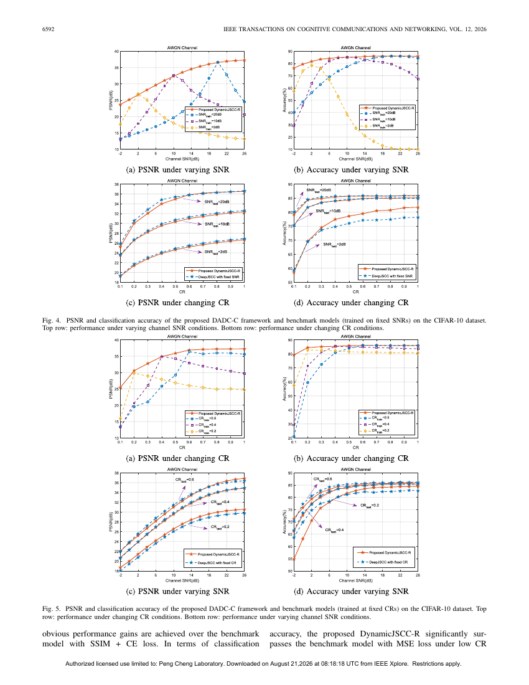</a><figcaption><b>关键结果证据页</b>｜来源：《A Dynamic Adaptive Deep Coding-Classification Framework for Intelligent Pragmatic Tasks in Semantic Communication》，PDF p.11；原图题/表题：PSNR and classification accuracy of the proposed DADC-C framework and benchmark models (trained on fixed SNRs) on the CIFAR-10 dataset. Top row: performance under varying channel SNR conditions. Bottom row: performance under changing CR conditions.。 <a href='https://doi.org/10.1109/tccn.2026.3670165'>核对论文</a></figcaption></figure></div>
</article>
<article class="paper" id="a-learned-network-coding-scheme-for-robust-image-transmission-in-lossy-relay-networks" data-year="2026" data-tier="related">
  <div class="paper-head"><div><div><span class="tag related">相关但非核心</span><span class="tag year">2026</span></div><h2>A Learned Network Coding Scheme for Robust Image Transmission in Lossy Relay Networks</h2></div><a class="pdf" href="https://doi.org/10.1109/tccn.2026.3705838">DOI / IEEE 页面</a></div>
  <div class="facts"><div><b>作者</b>Han Shen、Qifu Tyler Sun、Fanyang Meng、Ye Wang、Jian Zou、Zongpeng Li、Yongsheng Liang</div><div><b>出版信息</b>Vol. 12, pp. 9444-9459</div><div><b>DOI / IEEE ID</b><a href="https://doi.org/10.1109/tccn.2026.3705838">10.1109/tccn.2026.3705838</a> / 11573825</div><div><b>任务</b>图像语义传输或重建</div><div><b>技术谱系</b>学习式语义 feature；数字接口需由正文具体实现判定</div><div><b>年份口径</b>formal TCCN volume year</div></div>
  <div class="verdict"><b>是否属于严格数字语义通信：</b>系统层相关；没有足够证据把它判为严格数字语义通信。</div>
  <h3>实验设置</h3><div class="grid3"><div><b>数据集/场景</b>Kodak、CLIC、HEVC</div><div><b>Baseline</b>JPEG、JPEG2000、HEVC、H.264、H.265、HM、FEC、ARQ、ViT、GAN、Minnen、ELIC、PPO、SAC、JSCC、IB、CLIP</div><div><b>指标与信道条件</b>PSNR、SSIM、FID、bitrate、bpp、mAP、NME、FLOPs、throughput、VoI、MOS、WER、CER<br><span class="muted">SNR：20 dB、5 dB</span></div></div>
  <h3>Introduction 的六步讲述逻辑</h3><ol class='story'><li><b>已有进展：</b>s and packet data this approach is highly relevant to the future of satellite [19].</li><li><b>现有问题：</b>When the number of original packets is excessive internet. and the packet length is short, encoding coefficients can The remainder of this paper is organized as follows.</li><li><b>为何重要：</b>s and packet data this approach is highly relevant to the future of satellite [19].</li><li><b>提出方案：</b>Section III elaborates on the proposed to wireless communication networks to address the design LNC framework for a multi-hop relay network without recod- challenges of traditional networks, such as joint source- ing scheme.</li><li><b>解决机制：</b>In section IV, we introduce the overview of the channel coding [20], [21], [22], semantic communication [23], improved LNC framework by implementing a recoding net- [24], and deep learning for physical layer network coding work at the relay node to further mitigate the fading problem [25], [26].</li><li><b>核心主张与证据目标：</b>Encoding Description ing to improve end-to-end fidelity and robustness over lossy Firstly, the source node compressed the original image into networks.</li></ol>
  <h3>方法、变量与优化</h3><p><b>系统/信息流：</b>PDF p.1：int source-network coding that adapts effectively through terrestrial cellular networks. Fortunately, with the to dynamic network conditions without feedback, leveraging end- rapid advancement of satellite communication technologies to-end joint training. The proposed scheme integrates seamlessly with TCP/IP protocols and exhibits graceful performance degra- [1], these requirements of 6G can be fulfilled by integrating dation PDF p.2：of satellite [19]. When the number of original packets is excessive internet. and the packet length is short, encoding coefficients can The remainder of this paper is organized as follows. Sec- impose substantial transmission overhead. tion II introduces the system model and traditional separate In recent years, deep learning has been extensively applied source-network coding. Section III elaborates on the proposed to wireless PDF p.2：Section V provides the experiment results to the cliff effect associated with traditional encoding. For and a direct comparison of traditional separated methods to instance, [20] proposed a joint source and channel coding quantify the performance gain of the proposed method. Finally, (JSCC) technique for wireless image transmission utilizes section VI concludes the proposed method. convolutional neural networks (CNNs) to direc PDF p.2：a direct comparison of traditional separated methods to instance, [20] proposed a joint source and channel coding quantify the performance gain of the proposed method. Finally, (JSCC) technique for wireless image transmission utilizes section VI concludes the proposed method. convolutional neural networks (CNNs) to directly map image pixel values to channel symbols, outperforming traditional methods like Joint Photographic Exp</p><p><b>目标函数/联合训练证据：</b>PDF p.1：Aware Module (TAM) communication networks have surged with the implementation to better preserve high-frequency details over packet-erasure of large-scale constellations like Starlink [2] and OneWeb links, and we propose a loss-function design that stabilizes end-to-end training over multi-hop paths while constraining [3]. The Starlink initiative, spearheaded by SpaceX, aims to the bitrate increase of recoded latent representa PDF p.2：protocols require greater approaches, we propose a novel packet-level Learned flexibility to navigate these complex network environments Network Coding (LNC) for joint source-network coding and the new communication mechanisms. framework. This model is fully end-to-end trainable, Network coding is a well-investigated technique and can enabling robust image transmission without the need for reduce the number of retransmissions PDF p.7：ckets are set to y r = fr (y 0s ; θ r ) (17) zero. Then y 0r is fed into the decoding network to get the reconstruction image I 0 . where θ r denotes the trainable parameters of recoding net- work. During the real transmission, When the relay node receives D. Loss Function all packets of the image, it has to depac</p>
  <h3>数字化方案与传输开销</h3><p><b>传输表示证据：</b>PDF p.1：e constellations like Starlink [2] and OneWeb links, and we propose a loss-function design that stabilizes end-to-end training over multi-hop paths while constraining [3]. The Starlink initiative, spearheaded by SpaceX, aims to the bitrate increase of recoded latent representation. Unlike deploy thousands of LEO satellites to provide high-speed traditional random linear network coding (RLNC), our approach internet access globa PDF p.2：ce and channel coding quantify the performance gain of the proposed method. Finally, (JSCC) technique for wireless image transmission utilizes section VI concludes the proposed method. convolutional neural networks (CNNs) to directly map image pixel values to channel symbols, outperforming traditional methods like Joint Photographic Experts Group (JPEG) [27] II. R ELATED W ORK compression combined with capacity-achieving chann PDF p.2：s the dominant image compression standard sion scheme, where both terminals and relay nodes employ by employing the Discrete Cosine Transform (DCT) [28] to deep learning for modulation and demodulation. [26] proposed minimize frequency redundancy, followed by entropy coding a semantic communication-based physical layer network cod- to address coding redundancy. This was later succeeded by ing framework, which effectively mitig PDF p.3：merous deep neural network (DNN) approaches have been introduced for end- to-end image compression [32], [33], [34], [35], [36], [37], [38], [39]. Many of these techniques adopt an auto-encoder framework, where the encoder compresses the original image into a latent space, and the decoder reconstructs the image from this latent representation. Notably, Toderici et al. [34] designed an encoder-decoder model employing recurrent</p><p><b>调制/信道编码线索：</b>entropy coding</p><p><b>可复核开销与缺失信息：</b>输入/分辨率线索：256 × 256、512 × 768、768 × 512。feature/token/latent 尺寸线索：latent representation is y s ∈ RCoutput × 8 × 8、tensor y 0s ∈ RN × 8 × 8、latent tensor y 0s to simulate packet loss at relay RN × 8 × 8、latent representation images of 256 × 256。码本线索：constellations like Starlink [2。bit/bpp/速率线索：正文未给出可稳定自动定位的条目。CBR/压缩率线索：code rate and distortion、code rate to these。该论文偏系统/理论层，正文未必给出可复核的 encoder feature map 与 payload 长度。</p><div class="formula">\[N_{tx}=N_{payload}+N_{side}+N_{protection};\quad \text{缺失项必须标记为未知}\]</div>
  <h3>信道处理机制</h3><div class="channel"><p><b>分类：</b>类别 4/5：离散错误或重传被显式建模，并与语义目标发生耦合</p><p><b>正文信道证据：</b>PDF p.1：eliver ubiquitous coverage and massive user access with enhanced communication capac- a packet-level Learned Network Coding (LNC), a data-driven ity and reliability, which are challenging to achieve solely approach to joint source-network coding that adapts effectively through terrestrial cellular networks. Fortunately, with the to dynamic network conditions without feedback, leveraging end- rapid advancement of satellite comm PDF p.1：pid advancement of satellite communication technologies to-end joint training. The proposed scheme integrates seamlessly with TCP/IP protocols and exhibits graceful performance degra- [1], these requirements of 6G can be fulfilled by integrating dation as the packet loss rate or path length increases, thereby space-based and terrestrial cellular networks. In recent years, mitigating the cliff effect commonly observed in networ PDF p.1：cols and exhibits graceful performance degra- [1], these requirements of 6G can be fulfilled by integrating dation as the packet loss rate or path length increases, thereby space-based and terrestrial cellular networks. In recent years, mitigating the cliff effect commonly observed in network commu- interest and investment in Low Earth Orbit (LEO) satellite nications. Moreover, we develop a Texture-Aware Module (TAM) communica PDF p.1：(Corresponding author: Yongsheng Liang.) Han Shen is with the School of Electronics and Information Engi- However, many uncontrollable factors in the satellite com- neering, Harbin Institute of Technology, Shenzhen 518055, China, and munication process will affect the transmission quality and also with the Peng Cheng Laboratory, Shenzhen 518060, China (e-mail: continuity of signals, posing challenges to the efficient shenh@stu</p><p><b>decoder 实际收到：</b>经过多跳 relay recoding 后仍存活的 latent packets；丢失 packet 不可用</p><p><b>是否联合优化：</b>是/部分：目标或训练证据与物理信道同时出现。</p><p><b>是否真正处理 bit/index/token/packet error：</b>是（相关谱系）：端到端训练显式注入 packet erasure，并学习 packet-level source-network coding；它不是以 semantic payload 为主张的核心 SemCom 论文。</p></div>
  <h3>主要结果、局限与 Codex 判断</h3><p><b>证据化结果：</b>PDF p.1：, Senior Member, IEEE, and Yongsheng Liang , Member, IEEE Abstract—Low-Earth orbit (LEO) satellite relay transmissions I. I NTRODUCTION are increasingly utilized to enhance network coverage. While OMPARED with mobile communication technologies network coding improves throughput in relay networks, designing separate source-network coding schemes poses challenges due to unpredictable network conditions. To address this, we propo PDF p.1：al network. increasingly important role in future global communication systems [4], [5], [6], [7], [8]. In addition, satellite relay transmissions are becoming more common in LEO in order Received 5 February 2025; revised 2 February 2026 and 23 April 2026; to improve coverage [1]. Moreover, relay LEO was able to accepted 16 June 2026. Date of publication 22 June 2026; date of current provide measurement data and control servic PDF p.1：under Grant PCL2024A01-3, the National Natural Science Foundation of China under Grant No. 62571160, and the in response to major natural disasters [10], the relay satellites National Natural Science Foundation of China under Grant 62271044. The have greatly improved the efficiency of using various types as associate editor coordinating the review of this article and approving it for satellites. publication was S. C. W. See. ( PDF p.1：t shenh@stu.hit.edu.cn). Qifu Tyler Sun is with the School of Computer and Communication transmission of satellite networks. Firstly, the long-distance Engineering, University of Science and Technology Beijing, Beijing 100083, communication between satellites reduces the strength of the China (e-mail: qfsun@ustb.edu.cn). signal, which may lead to data errors and loss [11]. Secondly, Fanyang Meng and Ye Wang are with the Peng C</p><p><b>独立判断：</b>没有完整离散接口，无法直接回答 bit/index/token 跳变问题。 该文属于边界谱系，不能用它代表端到端语义通信主线。</p>
  <div class="figs"><figure><a href='assets/2026_a-learned-network-coding-scheme-for-robust-image-transmission-in-lossy-relay-networks_method_p5.png' target='_blank'></a><figcaption><b>架构/方法证据页</b>｜来源：《A Learned Network Coding Scheme for Robust Image Transmission in Lossy Relay Networks》，PDF p.5；原图题/表题：Network architecture of encoder and decoder. Convolution parameters are denoted as: the number of filters × kernel height × kernel width / up-sampling or down-sampling stride, where ↑ / ↓ indicates up-sampling and down-sampling, respectively.。 <a href='https://doi.org/10.1109/tccn.2026.3705838'>核对论文</a></figcaption></figure><figure><a href='assets/2026_a-learned-network-coding-scheme-for-robust-image-transmission-in-lossy-relay-networks_result_p7.png' target='_blank'>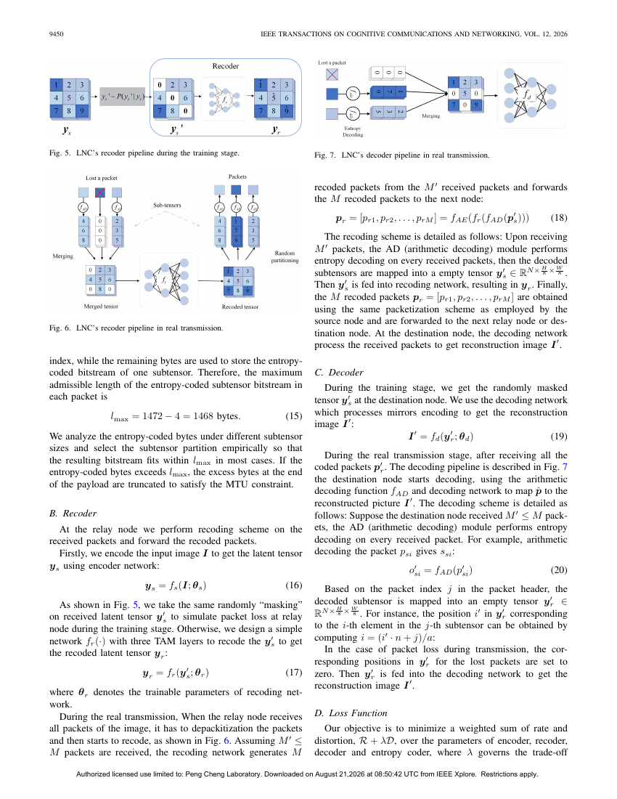</a><figcaption><b>关键结果证据页</b>｜来源：《A Learned Network Coding Scheme for Robust Image Transmission in Lossy Relay Networks》，PDF p.7；原图题/表题：Assuming M 0 ≤ distortion, R + λD, over the parameters of encoder, recoder, M packets are received, the recoding network generates M decoder and entropy coder, where λ governs the trade-off。 <a href='https://doi.org/10.1109/tccn.2026.3705838'>核对论文</a></figcaption></figure></div>
</article>
<article class="paper" id="a-lite-robust-semantic-communication-lrsc-scheme-via-enhancing-fidelity" data-year="2026" data-tier="core">
  <div class="paper-head"><div><div><span class="tag core">核心纳入</span><span class="tag year">2026</span></div><h2>A Lite Robust Semantic Communication (LRSC) Scheme via Enhancing Fidelity</h2></div><a class="pdf" href="https://doi.org/10.1109/tccn.2026.3721535">DOI / IEEE 页面</a></div>
  <div class="facts"><div><b>作者</b>Chuanyu Dong、Qing Wang、Kai Guan、Zhiqiang Wu、Zhicheng Dong、Song Yang</div><div><b>出版信息</b>Early Access / 卷号待定, pp. 1-1</div><div><b>DOI / IEEE ID</b><a href="https://doi.org/10.1109/tccn.2026.3721535">10.1109/tccn.2026.3721535</a> / 11647250</div><div><b>任务</b>通用/多模态语义通信</div><div><b>技术谱系</b>学习式语义 feature；数字接口需由正文具体实现判定</div><div><b>年份口径</b>TCCN Early Access / formal volume pending</div></div>
  <div class="verdict"><b>是否属于严格数字语义通信：</b>系统层相关；没有足够证据把它判为严格数字语义通信。</div>
  <h3>实验设置</h3><div class="grid3"><div><b>数据集/场景</b>CLIC、ImageNet、CIFAR-10</div><div><b>Baseline</b>DeepJSCC、WITT、BPG、LDPC、QAM、HM、FEC、ARQ、Swin Transformer、ViT、GAN、VAE、VQ-VAE、YOLO、PPO、SAC、JSCC、IB、HARQ</div><div><b>指标与信道条件</b>PSNR、SSIM、FID、MSE、mAP、accuracy、precision、NME、latency、energy、FLOPs、semantic similarity、VoI、MOS、WER、CER<br><span class="muted">SNR：+0.13 dB、+0.45 dB、-13dB、0.5dB、0.8dB、0.90 dB、1 dB、1.0dB、1.46 dB、1.8dB、1.9dB、10 dB、13 dB、13dB、15dB、1dB、2.0dB、2.1dB</span></div></div>
  <h3>Introduction 的六步讲述逻辑</h3><ol class='story'><li><b>已有进展：</b>omplex refines semantic interpretation via recurrent parameter reuse, tasks. notably without increasing the computational burden on the To further pursue a trade-off between compression ratio and terminal.</li><li><b>现有问题：</b>However, constrained by the reduc- lightweight terminal encoder remains fixed post-deployment, tion in the depth of feature extraction networks, the semantic while the edge-side recovery components dynamically adapt representation capabilities of lite models are inherently limited, to varying channel conditions.</li><li><b>为何重要：</b>Simulation results demonstrate that LRSC significantly robustness during practical deployment. improves semantic fidelity and reconstruction robustness in dynamic wireless channel environments, all while keeping B.</li><li><b>提出方案：</b>Second, we introduce semantic encoder using a G-DSE mechanism, a semantic a personalized SFE module, which is designed to explicitly decoder based on RSA mechanism, an semantic-driven SVD recover fidelity from distorted semantic information.</li><li><b>解决机制：</b>Third, a signal optimization module, an SFE network for improving semantics-driven SVD signal optimization method is proposed semantic fidelity and an OFDM transmission system. to adapt to complex and dynamic IoT environments.</li><li><b>核心主张与证据目标：</b>In Section signal after this processing is represented as y and fed into the V, we provide the simulation results of the proposed method. channel.</li></ol>
  <h3>方法、变量与优化</h3><p><b>系统/信息流：</b>PDF p.1：sing solution, offering efficient data transmission in challenges, including limited computational power, low semantic intelligent 6G connections. It employs deep neural networks fidelity, and poor environmental robustness. To address these (DNNs) as semantic encoders to extract task-relevant semantic issues, this paper proposes a robust semantic communication information from source data, rather than focusing solely on scheme PDF p.1：to tackle precise bits [7]. Despite these advancements, deployment in the challenge of limited computational resources, a global- detail semantic enhancement (G-DSE) network is developed as a resource-constrained IoT environments remains a formidable semantic encoder to achieve accurate semantic extraction, along challenge [8], as the prohibitive computational costs of training with a semantic decoder based on the recurrent se PDF p.1：semantic enhancement (G-DSE) network is developed as a resource-constrained IoT environments remains a formidable semantic encoder to achieve accurate semantic extraction, along challenge [8], as the prohibitive computational costs of training with a semantic decoder based on the recurrent self-attention and inference impose a heavy burden on terminal devices (RSA) mechanism for high-precision semantic interpretation. [9]. The PDF p.1：hm is For such scenarios, the communication substrate should not proposed, along with an edge-terminal asynchronous training and only be computationally frugal but also preserve task-relevant online deployment strategy. Simulation results demonstrate that the proposed scheme achieves robust and high-fidelity semantic semantic information under time-varying wireless channels. extraction and interpretation. Compared with existin</p><p><b>目标函数/联合训练证据：</b>PDF p.4：sically captures task-relevant conceptual consis- convolutional self-attention mechanism can be expressed as tency while effectively filtering out pixel-level perturbations X caused by channel noise. Driven by this semantic metric, the sg = βi→j Wi→j xi , (6) end-to-end training objective of the LRSC system is set to j∈Ω(i) minimize the expected distortion on the data distribution px where i, j ∈ R refer to spatial positions. PDF p.6：In our method, we differentiate the semantic task-oriented personality semantic reconstruction operation. features rather than the network parameters, and we are not Unlike the DSLS network designed for a more generalized interested in the derivatives of the loss functions. Therefore, semantic task, this SSRS network is designed more for a we choose the forward propagation derivative instead of the specific (a.k.a personality) PDF p.7：rmation. The higher the and the data-driven threshold weight matrix weight matrix value in the matrix, the greater the current semantic contri- WF jointly compensate for the value of the cooperative bution. From this, we can carry out semantic personalization loss function. The weight matrix W is finally determine</p>
  <h3>数字化方案与传输开销</h3><p><b>传输表示证据：</b>PDF p.2：en on the To further pursue a trade-off between compression ratio and terminal. To further elevate semantic fidelity and robustness, performance, the works in [26], [27] integrate model pruning, LRSC introduces two receiver-side enhancement mechanisms. weight quantization, and efficient layer aggregation networks, First, a semantic fidelity enhancement (SFE) network restores effectively reducing computational and spectral band PDF p.2：g. Second, a ties. To mitigate the degradation of semantic fidelity poten- semantic-driven singular value decomposition (SVD) signal tially induced [28], subsequent studies introduced a shared optimization module suppresses noise-dominated components discrete codebook mechanism [29] to ensure the transmission in the received signal before semantic decoding. Furthermore, of highly robust features and provide feature compensatio PDF p.4：e x and its end-to-end reconstruction well. However, compared to convolution operations, the self- x̂, their semantic fidelity F(x, x̂) is quantified by the degree attention mechanism in ViT requires learning a large number of directional alignment within the latent manifold: of matrices, which poses challenges for edge devices with Tr M(x)M(x̂)⊤  limited computing resources. To this end, by reorganizing F(x, x̂) = p (4) Tr ( PDF p.6：Mq1 , Mq2 , · · · , MqN . The average semantic similarity between sub-blocks Mqi and Mqj S = S q + Sl , (11) (where i, j ∈ N ) can be represented as where Sl = Se + Sc . Here, Se denotes the intrinsic bias N 1 X introduced jointly by nonlinear mapping, signal quantization, gi = SemSim(Mqi , Mqj ), (14) N −1 and truncation at the transmitter, while Sc represents the trans- j=1,j̸=i mission noise and interference induced by the</p><p><b>调制/信道编码线索：</b>16-qam、4-qam、64-qam、bpsk、harq、ldpc、ofdm</p><p><b>可复核开销与缺失信息：</b>输入/分辨率线索：64 × 64、32 × 32。feature/token/latent 尺寸线索：正文未给出可稳定自动定位的条目。码本线索：codebook mechanism [29。bit/bpp/速率线索：正文未给出可稳定自动定位的条目。CBR/压缩率线索：compression ratio and terminal、code rate configurations, namely (3072, 6144),、channel bandwidth ratio (CBR), calculated as CBR、CBRs: Fig、CBRs、code rate configuration、CBR CBR、CBR under fixed SNR conditions of、CBR conditions of、CBR = 0。该论文偏系统/理论层，正文未必给出可复核的 encoder feature map 与 payload 长度。</p><div class="formula">\[N_{tx}=N_{payload}+N_{side}+N_{protection};\quad \text{缺失项必须标记为未知}\]</div>
  <h3>信道处理机制</h3><div class="channel"><p><b>分类：</b>类别 5：信道/资源进入系统优化，但 payload 数字化接口不完整</p><p><b>正文信道证据：</b>PDF p.1：al robustness. To address these (DNNs) as semantic encoders to extract task-relevant semantic issues, this paper proposes a robust semantic communication information from source data, rather than focusing solely on scheme with enhanced fidelity, called LRSC. Firstly, to tackle precise bits [7]. Despite these advancements, deployment in the challenge of limited computational resources, a global- detail semantic enhancement (G-D PDF p.1：nal asynchronous training and only be computationally frugal but also preserve task-relevant online deployment strategy. Simulation results demonstrate that the proposed scheme achieves robust and high-fidelity semantic semantic information under time-varying wireless channels. extraction and interpretation. Compared with existing state-of- This requirement is also relevant to agentic applications, where the-art lite methods, PDF p.2：onal burden by introducing reconstruction, the framework is structured as follows. On the ConvNeXt models and streamlining UNet layers, respectively. terminal side, a global-detail semantic enhancement (G-DSE) Nevertheless, while these shallowing strategies effectively encoder extracts compact semantic representations by blending lower complexity, they may result in insufficient semantic global semantic modeling with local det PDF p.2：on ratio and terminal. To further elevate semantic fidelity and robustness, performance, the works in [26], [27] integrate model pruning, LRSC introduces two receiver-side enhancement mechanisms. weight quantization, and efficient layer aggregation networks, First, a semantic fidelity enhancement (SFE) network restores effectively reducing computational and spectral bandwidth distorted semantic features by suppressing semantic</p><p><b>decoder 实际收到：</b>由论文系统模型定义的语义 feature、任务状态或传统译码后数据</p><p><b>是否联合优化：</b>是/部分：目标或训练证据与物理信道同时出现。</p><p><b>是否真正处理 bit/index/token/packet error：</b>未形成可复核的 bit/index/token 错误闭环。</p></div>
  <h3>主要结果、局限与 Codex 判断</h3><p><b>证据化结果：</b>PDF p.1：veloped, which incorporates an adaptive personalized mechanism based on re- environment. In emerging AI-enabled IoT scenarios, termi- dundancy suppression and contribution-based weighting. Finally, nal devices may provide visual observations for downstream to improve physical-layer robustness, a semantic-driven singular perception, reasoning, or control at the edge side [3], [4]. value decomposition (SVD) signal optimization a PDF p.1：lly frugal but also preserve task-relevant online deployment strategy. Simulation results demonstrate that the proposed scheme achieves robust and high-fidelity semantic semantic information under time-varying wireless channels. extraction and interpretation. Compared with existing state-of- This requirement is also relevant to agentic applications, where the-art lite methods, it improves the PSNR by 2.8 dB and reliable semant PDF p.1：eme achieves robust and high-fidelity semantic semantic information under time-varying wireless channels. extraction and interpretation. Compared with existing state-of- This requirement is also relevant to agentic applications, where the-art lite methods, it improves the PSNR by 2.8 dB and reliable semantic observations from distributed IoT devices semantic fidelity by 8 %. can support subsequent decision-making processes. In PDF p.2：of attention mechanisms; however, global matrix operations shielded from physical-layer channel distortions during trans- still pose a bottleneck to efficiency. Similarly, the authors in mission, and recovered at the edge prior to final semantic [24] and [25] reduce the computational burden by introducing reconstruction, the framework is structured as follows. On the ConvNeXt models and streamlining UNet layers, respectively.</p><p><b>独立判断：</b>没有完整离散接口，无法直接回答 bit/index/token 跳变问题。 未显式注入离散误码/丢包，鲁棒性结论不应外推到真实数字链路。</p>
  <div class="figs"><figure><a href='assets/2026_a-lite-robust-semantic-communication-lrsc-scheme-via-enhancing-fidelity_method_p3.png' target='_blank'></a><figcaption><b>架构/方法证据页</b>｜来源：《A Lite Robust Semantic Communication (LRSC) Scheme via Enhancing Fidelity》，PDF p.3；原图题/表题：方法/系统图题未被稳定抽取；展示含方法证据的整页。。 <a href='https://doi.org/10.1109/tccn.2026.3721535'>核对论文</a></figcaption></figure><figure><a href='assets/2026_a-lite-robust-semantic-communication-lrsc-scheme-via-enhancing-fidelity_result_p11.png' target='_blank'></a><figcaption><b>关键结果证据页</b>｜来源：《A Lite Robust Semantic Communication (LRSC) Scheme via Enhancing Fidelity》，PDF p.11；原图题/表题：结果图题未被稳定抽取；展示含实验/结论证据的整页。。 <a href='https://doi.org/10.1109/tccn.2026.3721535'>核对论文</a></figcaption></figure></div>
</article>
<article class="paper" id="a-semantic-aware-resource-allocation-for-emerging-aav-noma-networks-empowered-by-bayesian-ac" data-year="2026" data-tier="core">
  <div class="paper-head"><div><div><span class="tag core">核心纳入</span><span class="tag year">2026</span></div><h2>A Semantic-Aware Resource Allocation for Emerging AAV-NOMA Networks Empowered by Bayesian Active Inference</h2></div><a class="pdf" href="https://doi.org/10.1109/tccn.2025.3637049">DOI / IEEE 页面</a></div>
  <div class="facts"><div><b>作者</b>Ali Krayani、Felix Obite、Atm S. Alam、Lucio Marcenaro、Arumugam Nallanathan、Carlo S. Regazzoni</div><div><b>出版信息</b>Vol. 12, pp. 5014-5031</div><div><b>DOI / IEEE ID</b><a href="https://doi.org/10.1109/tccn.2025.3637049">10.1109/tccn.2025.3637049</a> / 11271003</div><div><b>任务</b>远端推理/机器任务</div><div><b>技术谱系</b>系统/理论层变量；论文未定义统一 payload bitstream</div><div><b>年份口径</b>TCCN Early Access / formal volume pending</div></div>
  <div class="verdict"><b>是否属于严格数字语义通信：</b>系统层相关；没有足够证据把它判为严格数字语义通信。</div>
  <h3>实验设置</h3><div class="grid3"><div><b>数据集/场景</b>正文未给出可稳定自动定位的条目</div><div><b>Baseline</b>HM、FEC、GAN、PPO、SAC、ASC、IB</div><div><b>指标与信道条件</b>mAP、NME、QoE、latency、energy、throughput、MOS、WER、CER<br><span class="muted">SNR：正文未给出可稳定自动定位的条目</span></div></div>
  <h3>Introduction 的六步讲述逻辑</h3><ol class='story'><li><b>已有进展：</b>xima- particularly in dynamic wireless environments.</li><li><b>现有问题：</b>Furthermore, [31] presents heuristic-based strategies ios, often suffer from poor generalization due to their reliance for user association to maximize the spectral efficiency of on extensive training data and lack of mechanisms for retaining a AAV-enabled NOMA system.</li><li><b>为何重要：</b>As a result, these resource allocation and trajectory planning, the objective func- models struggle to adapt to novel situations, limiting their tions and constraints often become correlated and non-convex, practical effectiveness in dynamic, real-world networks. posing significant challenges in deriving the optimal solu- Semantic communication has emerged as a promising tion through conventional means.</li><li><b>提出方案：</b>However, its goal-specific nature conventional methods fail to provide the online adaptability requires task-dependent customization, making it less suitable needed for future dynamic systems. as a general-purpose framework for diverse communication 2) Machine Learning-Based AAV-NOMA: To address opti- tasks.</li><li><b>解决机制：</b>This limitation can hinder its scalability across hetero- mization problems involving AAV trajectories that evolve over geneous network applications. time, reinforcement learning (RL) has garnered significant Motivated by these gaps, we introduce a novel research attention owing to its capability to optimize cumu- semantic-aware resource allocation framework for AAV-based lative long-term benefits [32].</li><li><b>核心主张与证据目标：</b>Section IV provides extensive numerical results to validate where Pm and gm are the transmit power and channel gain of the effectiveness of the proposed solution.</li></ol>
  <h3>方法、变量与优化</h3><p><b>系统/信息流：</b>PDF p.3：utperforming conventional baselines expressed as: such as random allocation and Q-learning, especially in previously unseen environments. ! Pm |gm |2 The rest of this paper is organized as follows: In Section II, Rm = Bw log2 1 + PM , (2) 2+N we introduce the system model and problem formulation. The j̸=m Pj |gj | 0 proposed solution (Active-SGDBN) is presented in Section III. Section IV provides extensive numerical results to PDF p.3：wer. The concludes the paper. AAV decodes the signals sequentially, starting with the user having the strongest channel gain (i.e., user M, since it has II. S YSTEM M ODEL AND P ROBLEM F ORMULATION the highest power level), and moving towards the user with A. System Model the weakest channel gain. Since the users are ordered based We examine a cellular uplink NOMA network consisting on the strength of their received signals, t PDF p.4：configuration that maximizes the sum rate. PNAAV’s duration, comprising of N time slots given over the by N1 n=1 , by optimizing power allocation P based on the AAV’s mobility Q, which can be expressed as follows: B. Semantic Communication Model N M 1X X The proposed framework illustrated in Fig. 1 incorporates a max Rsum ≜ Rm (n) (5) conventional communication system based on NOMA, aug- {Q,P } N n=1 m=1 mented by a semantic v PDF p.9：m )λ(xpt m ), (20) a∗t = arg min ΥWtp . (26) at where, IV. S IMULATION R ESULTS λ(xpt m ) = P(ztpm |xpt m ), (21) In this section, we present the simulation results to evaluate represents the diagnostic message indicating the likelihood the performance of the proposed framework. First, we out- computed at ztpm and transmitted as a message to the upper line the default system parameters used in the simulations. Authorized licen</p><p><b>目标函数/联合训练证据：</b>PDF p.2：ataset [16], [17], [18]. In contrast to traditional NOMA-AAV network. communication systems, by extracting semantics, the nodes Nonetheless, RL cannot deliver optimal performance for can leverage historical transmissions and learned patterns to certain simple optimization problems where the global optimize resource allocation and robustness. As pointed out by optimum can be derived via numerical optimization tech- Shannon [19] PDF p.5：ecoding order. Because of the practical constraints of SIC and the complexity of decoding, the maximum number of users that can be multiplexed on each sub-channel is L, which is constraint C7. D. Exhaustive Search Optimization It is important to note that the optimization problem described in (5) is classified as NP-hard. This is because the AAV lacks prior knowledge of users’ positions or CSI for future time slots due to the PDF p.5：nal overhead of O 2N , which is applicable to the exhaustive search method [51]. For clarity and consistency, Table I summarizes the notation used throughout this paper. III. P ROPOSED M ETHOD In this section, we describe a data-driven approach to solving the optimization problem in equation (5), which we call Act</p>
  <h3>数字化方案与传输开销</h3><p><b>传输表示证据：</b>PDF p.3：hat rely on line-of- methods, enabling AAVs to make context-aware deci- sight (LoS) or probabilistic LoS channels, this paper adopts a sions in real time. more practical segregated channel model, as described in [34]. 2) World Model Construction with Semantic Tokens: In this model, if obstacles exist in the path between the AAV We develop a generative world model by cluster- and user m, the channel follows a non-line-of-sight PDF p.3：model. Therefore, the power gain g of the process captures the joint dynamics of AAV mobility and channel between user m and the AAV in each time slot n user association, and encodes them into a structured dic- is represented by: tionary of symbolic semantic tokens. These tokens serve as interpretable representations that bridge the physical gm,b [n] = µm,b [n]ξm,b [n]βm,b [n]dm [n]−αm,b[n] , (1) (distance) and digital (power) PDF p.3：ore, the power gain g of the process captures the joint dynamics of AAV mobility and channel between user m and the AAV in each time slot n user association, and encodes them into a structured dic- is represented by: tionary of symbolic semantic tokens. These tokens serve as interpretable representations that bridge the physical gm,b [n] = µm,b [n]ξm,b [n]βm,b [n]dm [n]−αm,b[n] , (1) (distance) and digital (power) domains, fac PDF p.5：ving the optimization problem in equation (5), which we call Active-SGDBN. Interestingly, active inference is a generalization of Bayesian inference, where the goal is not of the joint objective; and 2) an online Active-SGDBN stage just to infer the hidden or latent states that generate sensory that employs a Bayesian active inference for optimization of data but to actively choose actions that will minimize future the power a</p><p><b>调制/信道编码线索：</b>qpsk</p><p><b>可复核开销与缺失信息：</b>输入/分辨率线索：1000 × 1000。feature/token/latent 尺寸线索：正文未给出可稳定自动定位的条目。码本线索：正文未给出可稳定自动定位的条目。bit/bpp/速率线索：正文未给出可稳定自动定位的条目。CBR/压缩率线索：正文未给出可稳定自动定位的条目。该论文偏系统/理论层，正文未必给出可复核的 encoder feature map 与 payload 长度。</p><div class="formula">\[N_{tx}=N_{payload}+N_{side}+N_{protection};\quad \text{缺失项必须标记为未知}\]</div>
  <h3>信道处理机制</h3><div class="channel"><p><b>分类：</b>类别 5：信道/资源进入系统优化，但 payload 数字化接口不完整</p><p><b>正文信道证据：</b>PDF p.1：5014 IEEE TRANSACTIONS ON COGNITIVE COMMUNICATIONS AND NETWORKING, VOL. 12, 2026 A Semantic-Aware Resource Allocation for Emerging AAV-NOMA Networks Empowered by Bayesian Active Inference Ali Krayani , Member, IEEE, Felix Obite , Member, IEEE, Atm S. Alam , Member, IEEE, Lucio Marcenaro , Senior Member, IEEE, Arumugam Nallanathan , Fellow, IEEE, and Carlo Regazzoni , Senior Member, IEEE Abstract— PDF p.1：tworks demand intelligent, data- I. I NTRODUCTION intensive services with high reliability and low latency, motivating semantic-aware communication as a transformative paradigm. In this paper, we address the NP-hard problem of resource allocation in AAV-based NOMA networks by proposing a N EXT-GENERATION wireless networks, including 6G and beyond, are expected to support a variety of intelli- gent applications. Specifically, t PDF p.1：ts Simulation results demonstrate that Active-SGDBN achieves due to their flexibility and brilliant line-of-sight links [1], near-optimal performance and surpasses benchmark schemes [2], [3], [4]. In this regard, AAVs must exploit onboard in both sum-rate and bit error rate (BER), validating its effectiveness and generalization capability. sensors to perceive their surroundings and make intelligent real-time decisions. As a pr PDF p.1：Active-SGDBN achieves due to their flexibility and brilliant line-of-sight links [1], near-optimal performance and surpasses benchmark schemes [2], [3], [4]. In this regard, AAVs must exploit onboard in both sum-rate and bit error rate (BER), validating its effectiveness and generalization capability. sensors to perceive their surroundings and make intelligent real-time decisions. As a promising innovative multiple-access Inde</p><p><b>decoder 实际收到：</b>由论文系统模型定义的语义 feature、任务状态或传统译码后数据</p><p><b>是否联合优化：</b>是/部分：目标或训练证据与物理信道同时出现。</p><p><b>是否真正处理 bit/index/token/packet error：</b>未形成可复核的 bit/index/token 错误闭环。</p></div>
  <h3>主要结果、局限与 Codex 判断</h3><p><b>证据化结果：</b>PDF p.1：ent real-time decisions. As a promising innovative multiple-access Index Terms— 6G, resource allocation, AAV-NOMA, active scheme, non-orthogonal multiple access (NOMA) has the inference, world model. potential to enhance spectrum efficiency, which is shown to outperform orthogonal multiple access in channel capacity [5], Received 18 March 2025; revised 11 September 2025; accepted [6], [7], [8]. NOMA utilizes the power domain b PDF p.2：n the underlying structure of message dynamic maneuver of a AAV with the goal of maximizing the transmissions and leverage the context of previously received sum rate of randomly moving NOMA users. The author in [35] messages, the robustness of communication against chan- employed two deep reinforcement learning (DRL) algorithms, nel and network irregularities can potentially be improved. one sample-efficient and one distribut PDF p.2：the context of previously received sum rate of randomly moving NOMA users. The author in [35] messages, the robustness of communication against chan- employed two deep reinforcement learning (DRL) algorithms, nel and network irregularities can potentially be improved. one sample-efficient and one distributionally robust, to max- To take advantage of historical data and learn contextual imize the sum rate through joint optimiza PDF p.2：Dynamic rapid convergence compared to the conventional Q-learning Bayesian Network (Active-SGDBN), integrates semantic approach. In the context of a AAV-based NOMA system, the representation, structured causal reasoning, and Bayesian study in [34] proposed an improved RL model optimizing the active inference within a unified architecture. By embedding Authorized licensed use limited to: Peng Cheng Laboratory. Downloaded on Jul</p><p><b>独立判断：</b>没有完整离散接口，无法直接回答 bit/index/token 跳变问题。 未显式注入离散误码/丢包，鲁棒性结论不应外推到真实数字链路。 未报告统一可复核的 payload bit 数/CBR，跨论文带宽比较受限。</p>
  <div class="figs"><figure><a href='assets/2026_a-semantic-aware-resource-allocation-for-emerging-aav-noma-networks-empowered-by-bayesian-ac_method_p4.png' target='_blank'></a><figcaption><b>架构/方法证据页</b>｜来源：《A Semantic-Aware Resource Allocation for Emerging AAV-NOMA Networks Empowered by Bayesian Active Inference》，PDF p.4；原图题/表题：The main framework of the proposed active inference-based semantic-aware resource allocation (Active-SGDBN).。 <a href='https://doi.org/10.1109/tccn.2025.3637049'>核对论文</a></figcaption></figure><figure><a href='assets/2026_a-semantic-aware-resource-allocation-for-emerging-aav-noma-networks-empowered-by-bayesian-ac_result_p12.png' target='_blank'>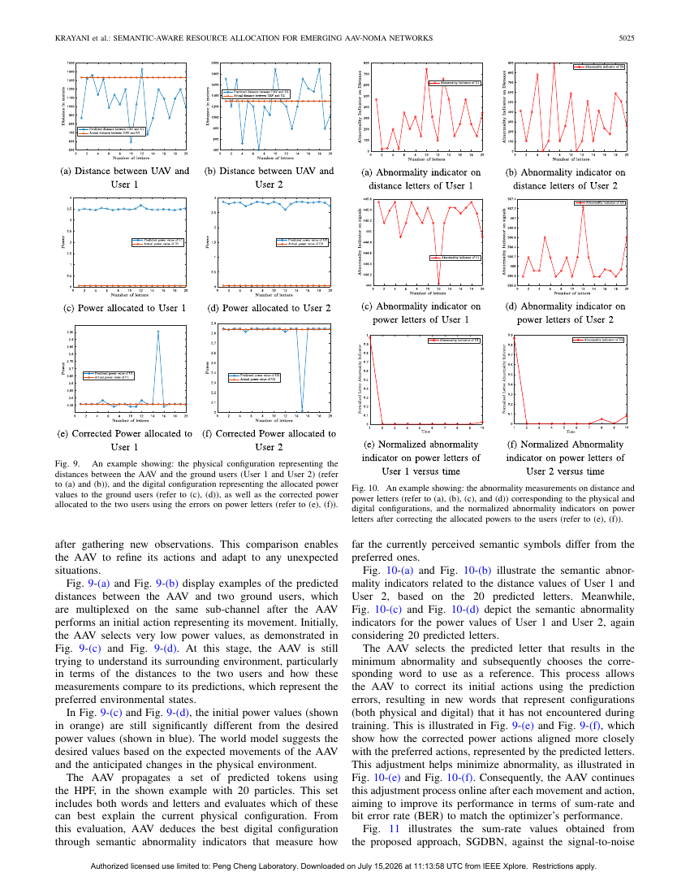</a><figcaption><b>关键结果证据页</b>｜来源：《A Semantic-Aware Resource Allocation for Emerging AAV-NOMA Networks Empowered by Bayesian Active Inference》，PDF p.12；原图题/表题：illustrates the sum-rate values obtained from through semantic abnormality indicators that measure how the proposed approach, SGDBN, against the signal-to-noise。 <a href='https://doi.org/10.1109/tccn.2025.3637049'>核对论文</a></figcaption></figure></div>
</article>
<article class="paper" id="adaptive-cross-modal-super-resolution-semantic-communication-for-mobile-ai-generated-panoram" data-year="2026" data-tier="core">
  <div class="paper-head"><div><div><span class="tag core">核心纳入</span><span class="tag year">2026</span></div><h2>Adaptive Cross-Modal Super-Resolution Semantic Communication for Mobile AI-Generated Panoramic Video</h2></div><a class="pdf" href="https://doi.org/10.1109/tccn.2025.3561304">DOI / IEEE 页面</a></div>
  <div class="facts"><div><b>作者</b>Haixiao Gao、Mengying Sun、Xiaodong Xu、Xiqi Cheng、Shujun Han、Ping Zhang</div><div><b>出版信息</b>Vol. 12, pp. 427-442</div><div><b>DOI / IEEE ID</b><a href="https://doi.org/10.1109/tccn.2025.3561304">10.1109/tccn.2025.3561304</a> / 10966439</div><div><b>任务</b>视频/沉浸媒体无线传输</div><div><b>技术谱系</b>连续 learned latent / channel symbol（DeepJSCC）</div><div><b>年份口径</b>formal TCCN volume year</div></div>
  <div class="verdict"><b>是否属于严格数字语义通信：</b>否（连续语义 JSCC）</div>
  <h3>实验设置</h3><div class="grid3"><div><b>数据集/场景</b>CLIC、HEVC</div><div><b>Baseline</b>DeepJSCC、NTSCC、HEVC、H.264、H.265、LDPC、HM、FEC、Swin Transformer、ViT、GAN、Ballé、Minnen、ResNet、PPO、SAC、DeepSC、JSCC、IB、CLIP</div><div><b>指标与信道条件</b>PSNR、SSIM、MSE、mAP、NME、QoE、latency、FLOPs、semantic similarity、VoI、MOS、WER<br><span class="muted">SNR：0.51 dB、1.5 dB、1.61 dB、1.65 dB、10 dB、10dB、2.26 dB、29.7 dB、3.69 dB、3.84 dB、4.04 dB</span></div></div>
  <h3>Introduction 的六步讲述逻辑</h3><ol class='story'><li><b>已有进展：</b>s to effectively represent and encode Section VI.</li><li><b>现有问题：</b>Furthermore, Liu et al. [7] applied framework utilizes the NNs and attention mechanisms to cross-modal generative semantic communication (G-SemCom) achieve efficient semantic feature extraction and adaptive to mobile AIGC, using cross-modal attention maps to indicate Authorized licensed use limited to: Peng Cheng Laboratory.</li><li><b>为何重要：</b>Conclusions are finally drawn in Section VII. semantic features, thus breaking through modal barriers and enabling enhanced cross-modal transmission [19], [20], [21].</li><li><b>提出方案：</b>By utilizing collaboration Mobile-AIGPV: We introduce a novel cross-modal among devices in wireless networks, this framework effi- semantic communication transmission scheme for ciently executes AIGC tasks and optimizes the use of edge mobile-AIGPV.</li><li><b>解决机制：</b>In this scheme, users transmit minimal computing resources.</li><li><b>核心主张与证据目标：</b>Panoramic Video Super-Resolution display (HDM) decodes and restores the semantic features, and With the rapid development of VR and AR, achieving achieves the video super-resolution task based on the motion an immersive viewing experience requires high-resolution m̂t and context ĉt , thereby providing a better quality of service panoramic videos, making PVSR increasingly signifi- experience for the user. cant [29], [30].</li></ol>
  <h3>方法、变量与优化</h3><p><b>系统/信息流：</b>PDF p.2：“cliff effect” and ensuring a more stable making PVSR-JSCC a robust solution for mobile-AIGPV. immersive experience in unstable or complex network envi- The rest of this paper is organized as follows. Section II ronments [12]. introduces the related work. The system model and Considering that panoramic videos are generated through optimization goal are described in Section III. Section IV textual prompts, these inherent interm PDF p.2：e uplink. On the ES- duced a semantic communication-based AIGC (SemAIGC) BS side, powerful processing capabilities are utilized framework, integrating diffusion models within workload- to generate low-resolution panoramic videos, which are adjustable semantic encoders and decoders, thereby efficiently then transmitted back to users by cross-modal semantic generating, transmitting, and fine-tuning content according communicatio PDF p.2：the ES- duced a semantic communication-based AIGC (SemAIGC) BS side, powerful processing capabilities are utilized framework, integrating diffusion models within workload- to generate low-resolution panoramic videos, which are adjustable semantic encoders and decoders, thereby efficiently then transmitted back to users by cross-modal semantic generating, transmitting, and fine-tuning content according communication. On the use PDF p.3：n mobile-AIGPV, this paper further explores a transmission framework suitable for mobile-AIGPV, aimed at generating and transmitting panoramic videos more efficiently. B. Cross-Modal Semantic Communication In modern communication systems, the develop- Fig. 1. System model of our proposed cross-modal semantic communication ment of cross-modal semantic communication is a key transmission scheme for mobile-AIGPV. technology for e</p><p><b>目标函数/联合训练证据：</b>PDF p.3：to generate videos. a hybrid attention mechanism to enhance feature represen- 1) The Training Process: During the diffusion model train- tation, employing weighted mean squared error (WMSE) as ing phase, a pair consisting of the panoramic video set X train a loss function to focus on super-resolution in the equa- and prompt p is employed. Similar to the work in [5], torial regions. Concurrently, Baniya et al. [33] developed th PDF p.4：where C1ml denotes The objective of the diffusion model is to minimize the the feature dim of ytml and 16 = 24 means mt is downsam- distance between the added noise and the predicted noise, thus pled four times with stride 2. Subsequently, considering the the loss function of this model can be defined as correlation between the prompt and motion semantic feature,   ytml is performed feature crossing with prompt embedding LDM PDF p.5：edding optimization goal is to maximize the user’s visual experi- is employed for feature crossing to capture key video seman- ence quality while minimizing bandwidth consumption. To tic elements. The weighted spatial attention feature yt ∈ achieve this, two loss functions are considered, denoted as H W RC × 16</p>
  <h3>数字化方案与传输开销</h3><p><b>传输表示证据：</b>PDF p.3：se, a pair consisting of the panoramic video set X train a loss function to focus on super-resolution in the equa- and prompt p is employed. Similar to the work in [5], torial regions. Concurrently, Baniya et al. [33] developed the X train is first encoded as latent representation Z by a a spherical signal super-resolution proportional optimization pre-trained latent ecoder fLE (·). Given that τ represents the Authorized licen PDF p.3：n the equa- and prompt p is employed. Similar to the work in [5], torial regions. Concurrently, Baniya et al. [33] developed the X train is first encoded as latent representation Z by a a spherical signal super-resolution proportional optimization pre-trained latent ecoder fLE (·). Given that τ represents the Authorized licensed use limited to: Peng Cheng Laboratory. Downloaded on July 15,2026 at 10:13:53 UTC from IEEE Xplore. PDF p.4：430 IEEE TRANSACTIONS ON COGNITIVE COMMUNICATIONS AND NETWORKING, VOLUME 12, 2026 Fig. 2. The framework of our proposed PVSR-JSCC. timestep of diffusion, the diffusion forward process can be Finally, a latent decoder fLD (·) is utilized, which is sym- expressed as metric to the latent encoder, to decode the Ẑ and generate the    panoramic video set X test . p(Zτ |Zτ −1 ) = N Zτ ; 1 − βτ Zτ −1 , βτ I , (1) B. JSCC-based Pan PDF p.4：NS ON COGNITIVE COMMUNICATIONS AND NETWORKING, VOLUME 12, 2026 Fig. 2. The framework of our proposed PVSR-JSCC. timestep of diffusion, the diffusion forward process can be Finally, a latent decoder fLD (·) is utilized, which is sym- expressed as metric to the latent encoder, to decode the Ẑ and generate the    panoramic video set X test . p(Zτ |Zτ −1 ) = N Zτ ; 1 − βτ Zτ −1 , βτ I , (1) B. JSCC-based Panoramic Video Super-</p><p><b>调制/信道编码线索：</b>bpsk、ldpc、ofdm</p><p><b>可复核开销与缺失信息：</b>输入/分辨率线索：1024 × 2048、16 × 16、128 × 256、512 × 1024。feature/token/latent 尺寸线索：feature ytml ∈ RC1 × 16 × 16、feature map yt ∈ RC × 16 × 16。码本线索：正文未给出可稳定自动定位的条目。bit/bpp/速率线索：正文未给出可稳定自动定位的条目。CBR/压缩率线索：CBR and SNR、CBR、CBR, respectively、CBR for the APVST and、CBR for、bandwidth ratio (CBR) in [50] is introduced、CBR for video superior performance of PVSR-JSCC in panoramic video、CBR = , (33)、CBR by (a) bicubic interpolation and (b) nearest neighbor interpolation, with the test SNR se、CBR being 0。连续 DeepJSCC 的主要预算是 channel uses/CBR；除非另加量化与调制，不能把每个 latent 当作固定 bit。</p><div class="formula">\[CBR=\frac{N_{complex\ channel\ symbols}}{N_{source\ samples}},\qquad R_{bit}\ \text{未定义（连续映射）}\]</div>
  <h3>信道处理机制</h3><div class="channel"><p><b>分类：</b>类别 3：连续 learned latent 直接通过有噪声信道</p><p><b>正文信道证据：</b>PDF p.1：AIGPV on local devices will result in lower proposed PVSR-JSCC not only reduces bandwidth consumption quality of generated videos, thereby constraining the users’ by 36.7% but also lowers computational complexity of the semantic model by 42.8%. Moreover, it effectively prevents the QoE [7], [8], [9]. For instance, current state-of-the-art AIGPV “cliff effect” caused by the decrease of signal-to-noise ratio (SNR) diffusion mode PDF p.1：ption quality of generated videos, thereby constraining the users’ by 36.7% but also lowers computational complexity of the semantic model by 42.8%. Moreover, it effectively prevents the QoE [7], [8], [9]. For instance, current state-of-the-art AIGPV “cliff effect” caused by the decrease of signal-to-noise ratio (SNR) diffusion model requires approximately 80GB GPU memory in traditional communication systems. to generate a 102 PDF p.1：boratory of Networking and Switching Technology, Beijing University of Posts and Telecommunications, technologies at the side of users to enhance these videos Beijing 100876, China, and also with the Department of Broadband to high resolution. This strategy effectively reduces the Communication, Peng Cheng Laboratory, Shenzhen 518066, China (e-mail: resource consumption and storage burden on ES-BS and xuxiaodong@bupt.edu.cn). PDF p.2：noramic video generation services, the resulting feature cyclic enhancement to achieve the panoramic network congestion can lead to a decreased signal-to-noise video super-resolution task. To our knowledge, this is the ratio (SNR), thereby inducing a “cliff effect” in QoE of first work that achieves the video super-resolution task users [11], [12]. Moreover, without jointly optimizing the via deep JSCC. PVSR algorithm and tran</p><p><b>decoder 实际收到：</b>带噪连续 channel symbol / latent，经神经 decoder 恢复任务输出</p><p><b>是否联合优化：</b>是/部分：目标或训练证据与物理信道同时出现。</p><p><b>是否真正处理 bit/index/token/packet error：</b>不适用 VQ index/bit 跳变；论文处理的是连续扰动和信道失配。</p></div>
  <h3>主要结果、局限与 Codex 判断</h3><p><b>证据化结果：</b>PDF p.1：lts demonstrate that, compared to the semantic communi- However, due to the limited hardware resources, directly cation scheme directly transmitting high-resolution videos, our performing AIGPV on local devices will result in lower proposed PVSR-JSCC not only reduces bandwidth consumption quality of generated videos, thereby constraining the users’ by 36.7% but also lowers computational complexity of the semantic model by 42.8 PDF p.1：f Networking and Switching Technology, Beijing University of Posts and Telecommunications, technologies at the side of users to enhance these videos Beijing 100876, China, and also with the Department of Broadband to high resolution. This strategy effectively reduces the Communication, Peng Cheng Laboratory, Shenzhen 518066, China (e-mail: resource consumption and storage burden on ES-BS and xuxiaodong@bupt.edu.cn). Digital Ob PDF p.2：ately capture key semantic elements of videos. [16]. By utilizing the formidable fitting capabilities of neural • Experimental Results: The experimental results demon- networks (NNs), it enables semantic-level compression of strate that the PVSR-JSCC not only reduces bandwidth various modalities such as image, text, speech, and video, consumption by 36.7% but also lowers the computational significantly reducing the volume of d PDF p.3：expand unimodal resolution in panoramic videos. Additionally, An et al. [34] transmission systems and enhance their generalization proposed a novel spatio-temporal distortion-aware network capabilities. Wang et al. [22] proposed CA-DeepSC, a deep (STDAN) that improves ERP distortions through a spatio- learning-based semantic communication system with cross- temporal distortion modulation module, leveraging temporal modal align</p><p><b>独立判断：</b>没有完整离散接口，无法直接回答 bit/index/token 跳变问题。 未显式注入离散误码/丢包，鲁棒性结论不应外推到真实数字链路。</p>
  <div class="figs"><figure><a href='assets/2026_adaptive-cross-modal-super-resolution-semantic-communication-for-mobile-ai-generated-panoram_method_p4.png' target='_blank'></a><figcaption><b>架构/方法证据页</b>｜来源：《Adaptive Cross-Modal Super-Resolution Semantic Communication for Mobile AI-Generated Panoramic Video》，PDF p.4；原图题/表题：The framework of our proposed PVSR-JSCC.。 <a href='https://doi.org/10.1109/tccn.2025.3561304'>核对论文</a></figcaption></figure><figure><a href='assets/2026_adaptive-cross-modal-super-resolution-semantic-communication-for-mobile-ai-generated-panoram_result_p13.png' target='_blank'>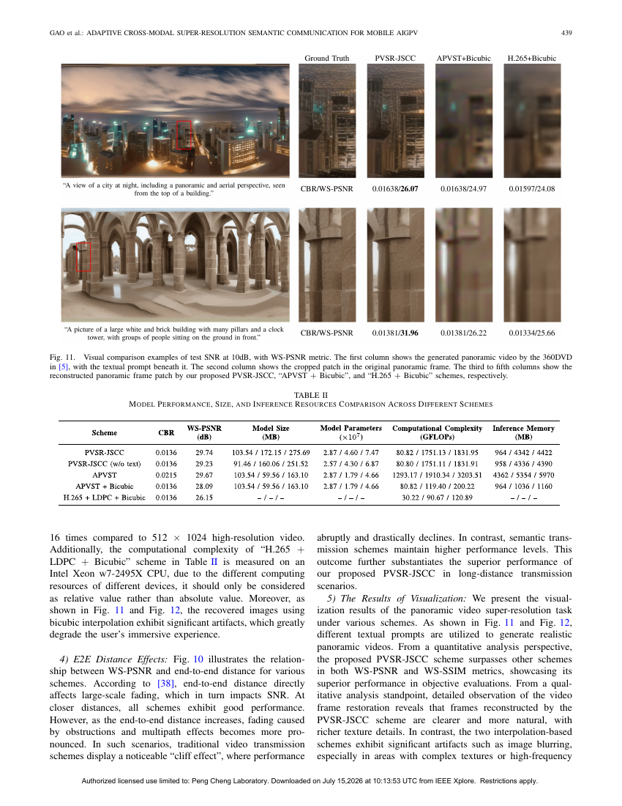</a><figcaption><b>关键结果证据页</b>｜来源：《Adaptive Cross-Modal Super-Resolution Semantic Communication for Mobile AI-Generated Panoramic Video》，PDF p.13；原图题/表题：and Fig. 12, the recovered images using ization results of the panoramic video super-resolution task bicubic interpolation exhibit significant artifacts, which greatly under various schemes. As shown in。 <a href='https://doi.org/10.1109/tccn.2025.3561304'>核对论文</a></figcaption></figure></div>
</article>
<article class="paper" id="adaptive-frame-interpolation-symbolic-semantic-communication-for-low-latency-wireless-video" data-year="2026" data-tier="core">
  <div class="paper-head"><div><div><span class="tag core">核心纳入</span><span class="tag year">2026</span></div><h2>Adaptive Frame Interpolation Symbolic Semantic Communication for Low Latency Wireless Video Transmission</h2></div><a class="pdf" href="https://doi.org/10.1109/tccn.2026.3662328">DOI / IEEE 页面</a></div>
  <div class="facts"><div><b>作者</b>Xiaoxuan Qi、Nan Ma、Yijing Lin、Wenkai Liu、Zhicheng Bao、Ping Zhang</div><div><b>出版信息</b>Vol. 12, pp. 6175-6190</div><div><b>DOI / IEEE ID</b><a href="https://doi.org/10.1109/tccn.2026.3662328">10.1109/tccn.2026.3662328</a> / 11381603</div><div><b>任务</b>视频/沉浸媒体无线传输</div><div><b>技术谱系</b>离散 token / symbolic semantic unit</div><div><b>年份口径</b>formal TCCN volume year</div></div>
  <div class="verdict"><b>是否属于严格数字语义通信：</b>是或部分是：正文存在离散/量化接口；仍需检查它是否真的承受 bit/index error。</div>
  <h3>实验设置</h3><div class="grid3"><div><b>数据集/场景</b>Vimeo-90K、UVG、HEVC</div><div><b>Baseline</b>DeepJSCC、HEVC、H.264、H.265、LDPC、Polar、QAM、HM、FEC、GAN、Minnen、DVC、PPO、SAC、JSCC、SSCC、IB</div><div><b>指标与信道条件</b>PSNR、SSIM、MS-SSIM、MSE、mAP、accuracy、NME、latency、FLOPs、FPS、VoI、MOS、WER<br><span class="muted">SNR：0dB、10dB、12 dB、13 dB、13dB、15dB、17dB、30 dB、7dB</span></div></div>
  <h3>Introduction 的六步讲述逻辑</h3><ol class='story'><li><b>已有进展：</b>e reconstruction quality under various consideration at the simulation level.</li><li><b>现有问题：</b>Based address the cross-modal collaboration challenge in semantic on experimental results, the FIVSSC achieves better video communication [19].</li><li><b>为何重要：</b>All with the aim of practical implementation in 6G rather than bold letters with a hat (e.g., b X, bXy , x̂, x̂y ) donate the being confined to simulation design.</li><li><b>提出方案：</b>We propose a frame interpolation enabled As shown in Fig.</li><li><b>解决机制：</b>1 (a), in traditional digital communication, video symbolic semantic communication system (FIVSSC) to the physical layer processes 0/1 bit stream, and at the receiver, address the above challenges.</li><li><b>核心主张与证据目标：</b>Most of the aforementioned works focus The first end-to-end video transmission scheme based on on improving reconstruction quality, and the requirement of deep JSCC is proposed in [28], which combines the source Authorized licensed use limited to: Peng Cheng Laboratory.</li></ol>
  <h3>方法、变量与优化</h3><p><b>系统/信息流：</b>PDF p.1：traditional SSCC scheme can be affected by the cliff effect [6], both higher reconstruction quality and higher timeliness. And it which means if the channel conditions fall below a threshold, can be better compatible with digital communication systems. A the decoder becomes incapable of reconstructing the original symbolic semantic communication prototype platform is devel- information. Moreover, the entropy coding adopted in PDF p.1：ith digital communication systems. A the decoder becomes incapable of reconstructing the original symbolic semantic communication prototype platform is devel- information. Moreover, the entropy coding adopted in both oped, demonstrating the feasibility of the proposed method. H.264 and H.265 will result in catastrophic error propagation Index Terms—Video semantic communication, low latency, when channel coding fails [7], [8]. PDF p.2：ith traditional digital communication systems with high to-end physical layer semantic communication system at the resistance to channel noise and low complexity. And a simulation level, which can be seen in Fig. 1 (b). The inputs of prototype platform of the proposed system is developed wireless channel in this system are continuous-valued symbols to demonstrate the feasibility. (Questions 1 and 2) output by the JSCC encoding PDF p.4：proposed firstly. Subsequently, the adaptive semantic key frame selection algorithm is introduced. Next part presents the network archi- tectures of FIVSSC. Finally, we put forward the optimization goal of the entire system. A. Symbolic Semantic Communication System Model The symbolic semantic communication system is shown in Fig. 1 (d). Considering that the outputs of the encoding of deep JSCC are continuous-valued symbols, t</p><p><b>目标函数/联合训练证据：</b>PDF p.8：ion Goal 13: Increase window size with (20) The optimization goal of FIVSSC is to achieve higher 14: Update logical status: add = 1, reduce = 1 video reconstruction quality with limited channel resources 15: continue and reduce processing latency. The overall loss function of 16: else if δi, j &gt; tu and reduce == 1 then the transmission network is designed as 17: Decrease window size with (21) 18: Update logical status: add = 0 PDF p.8：uction 35: Update logical status: add = 1, reduce = 1 quality, bandwidth efficiency, and latency. Additionally, since 36: continue X̂ is generated by interpolating the down-scaled reconstructed 37: end while frames D̂, L x is determined by Ld . Therefore, the loss function 38: return D can be further simplified as LOSS = λLd . (26) increasing feature depths to 256 dimensions. This mod- IV. S IMULATION E XPERIMENTS AND R ESULTS PDF p.9：rformance comparison versus CBR over the AWGN channel at the SNR = 15dB. The traditional schemes are based on BPSK. In all experiments, the FIVSSC is trained using the Adam and H.265, channel coding using (720,1440) LDPC with a optimizer [41] according to the loss function in equation coding rate of 1/2 and ideal</p>
  <h3>数字化方案与传输开销</h3><p><b>传输表示证据：</b>PDF p.1：the channel conditions fall below a threshold, can be better compatible with digital communication systems. A the decoder becomes incapable of reconstructing the original symbolic semantic communication prototype platform is devel- information. Moreover, the entropy coding adopted in both oped, demonstrating the feasibility of the proposed method. H.264 and H.265 will result in catastrophic error propagation Index Terms—Video PDF p.1：is proposed for text transmission. 2024ZD1300700. An earlier version of this paper was presented in part at the Utilizing deep neural networks (DNN) to directly map source 2024 16th International Conference on Wireless Communications and Signal information to channel symbols, it effectively copes with the Processing [DOI: 10.1109/WCSP62071.2024.10826690]. The associate editor cliff effect. The first work to introduce deep JSCC PDF p.3：semantic communication system and a SSCC-enabled traditional digital communication system. Subgraph (d) represents the proposed integration approach of the symbolic semantic communication between semantic and traditional communication. that integrates vector quantization, providing the possibilities and channel coding with a simple DNN and successfully for the application of semantic communication in digital com- overcomes the PDF p.3：t image transmission with system implementa- linear transform [31] and context-driven semantic feature tion and experimental results. They convert continuous-valued modeling [32]. The MEMC framework suffers from exces- symbols into bit representations through quantization, and sively high time complexity for joint encoding of videos with transform bits back into symbols at the receiver to be com- high resolution and deep color</p><p><b>调制/信道编码线索：</b>16qam、64 qam、bpsk、entropy coding、ldpc、polar</p><p><b>可复核开销与缺失信息：</b>输入/分辨率线索：1920 × 1080。feature/token/latent 尺寸线索：正文未给出可稳定自动定位的条目。码本线索：constellation 1、constellation points to transmit x̂i+2、constellation mapping scheme for semantic communication,” [44。bit/bpp/速率线索：1 bit。CBR/压缩率线索：channel bandwidth ratio (CBR) which is defined as the、coding rate to source coding rate is proposed、CBR Bn of the symbolic semantic communi-、compression ratio、CBR At this point, all frames in a video have been restored、CBR、CBR to adapt to different bandwidth conditions、CBR: Bn、CBR over the AWGN channel at the SNR = 15dB、coding rate of 1/2 and ideal capacity-achieving coding [31]。数字 token/bitstream 需把 payload、header、FEC 与重传一并计入；论文只报 CBR/SNR 时不能反推唯一净 bit 数。</p><div class="formula">\[N_{tx}=N_{unit}b_{unit}+N_{header}+N_{FEC},\qquad CBR=\frac{N_{channel\ uses}}{N_{source\ samples}}\]</div>
  <h3>信道处理机制</h3><div class="channel"><p><b>分类：</b>类别 2–4 边界：数字接口进入无线链路，但是否端到端处理离散错误需看实现</p><p><b>正文信道证据：</b>PDF p.1：bits to protect the source bits from errors caused challenges requiring further exploration. By utilizing deep joint by channel interference to improve the robustness, such as source-channel coding (JSCC) as backbone, this paper pro- low-density parity-check (LDPC) coding [5]. The traditional poses a frame interpolation enabled video symbolic semantic communication system (FIVSSC) which reduces the processing separate source-c PDF p.1：ulation experimental results demonstrate that compared to other semantic video communication and traditional are critical to user experience and service continuity. The video communication schemes, the proposed FIVSSC features traditional SSCC scheme can be affected by the cliff effect [6], both higher reconstruction quality and higher timeliness. And it which means if the channel conditions fall below a threshold, can be bett PDF p.1：esults demonstrate that compared to other semantic video communication and traditional are critical to user experience and service continuity. The video communication schemes, the proposed FIVSSC features traditional SSCC scheme can be affected by the cliff effect [6], both higher reconstruction quality and higher timeliness. And it which means if the channel conditions fall below a threshold, can be better compatible with dig PDF p.1：ransmission. 2024ZD1300700. An earlier version of this paper was presented in part at the Utilizing deep neural networks (DNN) to directly map source 2024 16th International Conference on Wireless Communications and Signal information to channel symbols, it effectively copes with the Processing [DOI: 10.1109/WCSP62071.2024.10826690]. The associate editor cliff effect. The first work to introduce deep JSCC-based coordinating th</p><p><b>decoder 实际收到：</b>数字解调/译码后的 bit、index 或量化 feature；软信息接口若未明示则不能假定</p><p><b>是否联合优化：</b>是/部分：目标或训练证据与物理信道同时出现。</p><p><b>是否真正处理 bit/index/token/packet error：</b>部分：存在数字接口与信道模型，但若正文只报告 SNR/重建质量而未注入 bit/index error，就不能宣称解决跳变问题。</p></div>
  <h3>主要结果、局限与 Codex 判断</h3><p><b>证据化结果：</b>PDF p.1：sen as one of source and channel coding separately [2]. Source coding the most promising solutions to meet the video transmission compresses the video into the shortest possible sequence of requirements of the sixth-generation (6G) wireless communica- bits to reduce bandwidth requirements, such as advanced tion scenarios. Existing video semantic communication schemes primarily focus on ensuring high video reconstruction qualit PDF p.1：VC/H.265) [4]. And channel coding introduces compatibility with digital communication systems remain open redundant bits to protect the source bits from errors caused challenges requiring further exploration. By utilizing deep joint by channel interference to improve the robustness, such as source-channel coding (JSCC) as backbone, this paper pro- low-density parity-check (LDPC) coding [5]. The traditional poses a frame interp PDF p.1：terference to improve the robustness, such as source-channel coding (JSCC) as backbone, this paper pro- low-density parity-check (LDPC) coding [5]. The traditional poses a frame interpolation enabled video symbolic semantic communication system (FIVSSC) which reduces the processing separate source-channel coding (SSCC) scheme is now rela- latency by transmitting only the selected semantic key frames. tively mature and widely u PDF p.2：akes is designed to be composed of frame selector, frame into account the impact of channel input constraints on image interpolation and deep JSCC. By encoding only the transmission. In [17], a semantic communication modulation selected key frames, the FIVSSC improves the efficiency mapping framework compatible with digital communication and reduces the latency. (Question 2) systems is proposed, with system compatibility taken</p><p><b>独立判断：</b>未显式注入离散误码/丢包，鲁棒性结论不应外推到真实数字链路。</p>
  <div class="figs"><figure><a href='assets/2026_adaptive-frame-interpolation-symbolic-semantic-communication-for-low-latency-wireless-video_method_p6.png' target='_blank'>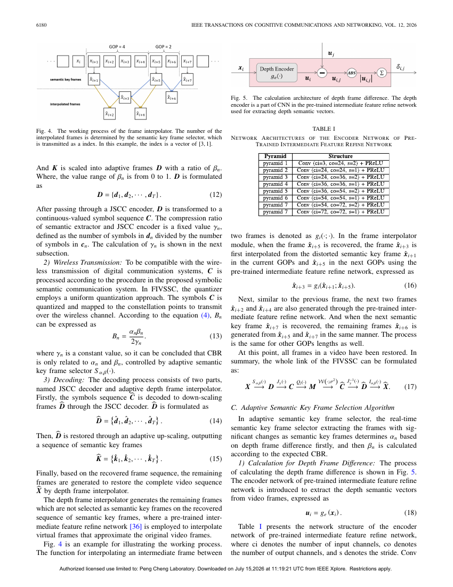</a><figcaption><b>架构/方法证据页</b>｜来源：《Adaptive Frame Interpolation Symbolic Semantic Communication for Low Latency Wireless Video Transmission》，PDF p.6；原图题/表题：The working process of the frame interpolator. The number of the。 <a href='https://doi.org/10.1109/tccn.2026.3662328'>核对论文</a></figcaption></figure><figure><a href='assets/2026_adaptive-frame-interpolation-symbolic-semantic-communication-for-low-latency-wireless-video_result_p9.png' target='_blank'></a><figcaption><b>关键结果证据页</b>｜来源：《Adaptive Frame Interpolation Symbolic Semantic Communication for Low Latency Wireless Video Transmission》，PDF p.9；原图题/表题：MS-SSIM and PSNR performance comparison versus CBR over the AWGN channel at the SNR = 15dB. The traditional schemes are based on BPSK.。 <a href='https://doi.org/10.1109/tccn.2026.3662328'>核对论文</a></figcaption></figure></div>
</article>
<article class="paper" id="adaptive-semantic-image-transmission-with-object-prioritization-and-over-the-air-validation" data-year="2026" data-tier="core">
  <div class="paper-head"><div><div><span class="tag core">核心纳入</span><span class="tag year">2026</span></div><h2>Adaptive Semantic Image Transmission With Object Prioritization and Over-the-Air Validation</h2></div><a class="pdf" href="https://doi.org/10.1109/tccn.2026.3692647">DOI / IEEE 页面</a></div>
  <div class="facts"><div><b>作者</b>Jiarun Ding、Peiwen Jiang、Chao-Kai Wen、Shi Jin</div><div><b>出版信息</b>Vol. 12, pp. 8141-8155</div><div><b>DOI / IEEE ID</b><a href="https://doi.org/10.1109/tccn.2026.3692647">10.1109/tccn.2026.3692647</a> / 11516213</div><div><b>任务</b>图像语义传输或重建</div><div><b>技术谱系</b>连续 learned latent / channel symbol（DeepJSCC）</div><div><b>年份口径</b>formal TCCN volume year</div></div>
  <div class="verdict"><b>是否属于严格数字语义通信：</b>否（连续语义 JSCC）</div>
  <h3>实验设置</h3><div class="grid3"><div><b>数据集/场景</b>CLIC、COCO、ImageNet</div><div><b>Baseline</b>DeepJSCC、BPG、LDPC、QAM、HM、FEC、ViT、GAN、YOLO、FCN、PPO、SAC、ASC、JSCC、IB、BERT</div><div><b>指标与信道条件</b>PSNR、SSIM、FID、bitrate、MSE、mAP、accuracy、NME、latency、energy、VoI、MOS、WER、CER<br><span class="muted">SNR：-5 dB、0 dB、10 dB、15 dB、25 dB、5 dB</span></div></div>
  <h3>Introduction 的六步讲述逻辑</h3><ol class='story'><li><b>已有进展：</b>tudies have also explored the critical image regions to safeguard critical regions during role of FMs across various system layers, taking into account transmission.</li><li><b>现有问题：</b>The freed resources are allocated through a vision with FMs can address numerous challenges, these methods transformer (ViT)-based [35] JSCC NN to bolster the protec- alone are insufficient to fully integrate semantics with physical- tion of crucial patches.</li><li><b>为何重要：</b>tudies have also explored the critical image regions to safeguard critical regions during role of FMs across various system layers, taking into account transmission.</li><li><b>提出方案：</b>DING et al.: ADAPTIVE SEMANTIC IMAGE TRANSMISSION WITH OBJECT PRIORITIZATION 8143 1) We propose an adaptive method that treats unimportant TABLE I image regions as redundancy to protect key regions N OTATION during transmission.</li><li><b>解决机制：</b>Specifically, we first analyze the patch priority of the image using object and feature point detection.</li><li><b>核心主张与证据目标：</b>Section III presents simulation results and analyses. feeds CSI h ∈ C1×K , receiving SNR γ ∈ R and desired objects Section IV details the design and evaluation of ICP, and o ∈ R1×O in an image back to the transmitter, where K Section V concludes this paper. represents the number of OFDM subcarriers and O denotes Notation: Key symbols used throughout this paper are the number of desired objects.</li></ol>
  <h3>方法、变量与优化</h3><p><b>系统/信息流：</b>PDF p.1：ited and nantly adopts deep learning-based joint source-channel coding adverse wireless conditions, this study proposes an adaptive wire- less image semantic transmission scheme named ASCViT. The (JSCC) for multimedia data transmission, such as text [8], [9], proposed scheme strategically utilizes less critical image regions audio [10], [11], image [12], [13] and video [14], [15]. This to safeguard critical regions during tran PDF p.2：gh In this paper, we propose an adaptive wireless image compressing videos to text transcripts. The LAM-SC [23] semantic transmission scheme named ASCViT to address the integrated a large model with an explicit knowledge base to aforementioned challenges. The proposed scheme utilizes less enhance generalization. Other studies have also explored the critical image regions to safeguard critical regions during role of FMs across PDF p.2：-trained FMs into communication systems and scale-invariant feature transform (SIFT) [34] to prioritize can significantly improve data compression efficiency. This patches. Then, this scheme proportionally masks unimportant insight motivated the design of our proposed system. patches according to the signal-to-noise ratio (SNR) and image Although JSCC-based semantic communications combined content. The freed resources are allo PDF p.2：JSCC NN to bolster the protec- alone are insufficient to fully integrate semantics with physical- tion of crucial patches. At the receiver, the masked patches layer transmission. As a result, challenges still exist at the are reconstructed using a masked autoencoder (MAE) [36]. physical layer, particularly in adapting to dynamic wire- Furthermore, a robust fully-connected network (FCN)-based less environments [26]. Several stu</p><p><b>目标函数/联合训练证据：</b>PDF p.6：ystem effectively leverages in an additive white Gaussian noise (AWGN) channel, with masked regions to improve the robustness and fidelity of optimization focused solely on the channel coding CNNs. The key content under adverse channel conditions, achieving a loss function for this stage is balance between bandwidth efficiency and protection of critical H×W×C information. 1 X NT MSEum (p, p̂) = (pi −( p̂i ·mi ))2 × , (7) Subse PDF p.6：U and mi represent the total number of patches, the chosen from [−3, −1, 1, 3], corresponding to 16-ary quadrature number of unmasked patches, and the i-th value of the mask amplitude modulation (16-QAM). For higher-order modulation matrix, respectively. This loss function calculates the MSE schemes such as 64-QAM, the data can be selected from specifically for unmasked patches, further training the network [−7, −5, −3, −1, 1, PDF p.6：ization modules contain no trainable rate to optimize performance under both AWGN and Rayleigh parameters. A primary challenge associated with quantization fading channels in the third stage. For Rayleigh fading chan- is gradient truncation, which complicates end-to-end training. nels, least squares (LS) channel</p>
  <h3>数字化方案与传输开销</h3><p><b>传输表示证据：</b>PDF p.1：, image reconstruction quality, especially in challenging channel exemplified by DeepJSCC [16], utilized deep neural networks environments. (NNs) for image transmission by directly mapping input Index Terms—Semantic image transmission, joint source- images to channel symbols. Subsequent research explored channel coding, channel state information, object prioritization, video conferencing [17], achieving bandwidth efficiency pr PDF p.3：s, encodes the preprocessed NN module encodes preprocessed images into semantic mod- image into semantic floating-point data according to the CSI h ulation data. Following transmission over the wireless channel, and masking matrix m. This data is subsequently quantized by a non-trainable quantization module fq (·), transforming it into 1 https://github.com/JrunDing/ASCViT-Demos N semantic modulation data. The semantic modulati PDF p.3：N module encodes preprocessed images into semantic mod- image into semantic floating-point data according to the CSI h ulation data. Following transmission over the wireless channel, and masking matrix m. This data is subsequently quantized by a non-trainable quantization module fq (·), transforming it into 1 https://github.com/JrunDing/ASCViT-Demos N semantic modulation data. The semantic modulation data Authorized licensed u PDF p.4：8144 IEEE TRANSACTIONS ON COGNITIVE COMMUNICATIONS AND NETWORKING, VOL. 12, 2026 is further paired and processed by the quantization module N into baseband modulation symbols x ∈ R1× 2 . This process is mathematically expressed as x = fq ( fen (p, h, m; Θ)). (3) The baseband modulation symbols are converted into OFDM waveforms and transmitted over the wireless channel. At the receiver</p><p><b>调制/信道编码线索：</b>16-qam、64-qam、ldpc、ofdm</p><p><b>可复核开销与缺失信息：</b>输入/分辨率线索：224 × 224 × 3、16 × 16、16x16。feature/token/latent 尺寸线索：symbols x ∈ R1× 2、symbols x̂ ∈ R1× 2。码本线索：constellation design [27。bit/bpp/速率线索：1.4 Mbps。CBR/压缩率线索：compression ratio (BCR) of 1/16 [16] as maintained certain semantic features, a well-、code rate。连续 DeepJSCC 的主要预算是 channel uses/CBR；除非另加量化与调制，不能把每个 latent 当作固定 bit。</p><div class="formula">\[CBR=\frac{N_{complex\ channel\ symbols}}{N_{source\ samples}},\qquad R_{bit}\ \text{未定义（连续映射）}\]</div>
  <h3>信道处理机制</h3><div class="channel"><p><b>分类：</b>类别 3：连续 learned latent 直接通过有噪声信道</p><p><b>正文信道证据：</b>PDF p.1：alternative across diverse scenarios. on a prototype system with a software-defined radio and embed- ded graphics processing units. Both simulations and real-world Images and videos serve as pivotal information carriers measurements demonstrate that ASCViT effectively prioritizes within multimedia data and have been extensively studied in object protection in response to channel conditions, enhancing JSCC-based semantic commun PDF p.2：stem [30] can tolerate degradation. Similarly, in autonomous and coop- combined software-defined radio (SDR) with high-level pro- erative perception systems, errors in task-relevant regions gramming languages on general-purpose processors. In [31], directly affect decision-making. Another example is human an AI-aided OFDM receiver was implemented using C/C++ in the loop remote inspection and teleoperation. In these on RaPro. H PDF p.3：DING et al.: ADAPTIVE SEMANTIC IMAGE TRANSMISSION WITH OBJECT PRIORITIZATION 8143 1) We propose an adaptive method that treats unimportant TABLE I image regions as redundancy to protect key regions N OTATION during transmission. Specifically, we first analyze the patch priority of the image using object and feature point detection. A masking ratio is then determined based on the image content and SNR, and lower-priority patche PDF p.3：remap semantic features across subchannels according to their SNRs. More important semantic features are assigned to subchannels with higher SNRs to improve the preservation of critical information. Experimental results demonstrate that the proposed scheme effectively remaps semantic features and improves the quality of critical regions. 3) We develop an OFDM prototyping system for seman- tic communications. Hardware and softw</p><p><b>decoder 实际收到：</b>带噪连续 channel symbol / latent，经神经 decoder 恢复任务输出</p><p><b>是否联合优化：</b>是/部分：目标或训练证据与物理信道同时出现。</p><p><b>是否真正处理 bit/index/token/packet error：</b>不适用 VQ index/bit 跳变；论文处理的是连续扰动和信道失配。</p></div>
  <h3>主要结果、局限与 Codex 判断</h3><p><b>证据化结果：</b>PDF p.1：s, espe- information theory [4], semantic communication emphasizes cially in wireless image transmission. However, most existing the reliable and efficient delivery of semantic meanings behind approaches focus on discarding less important semantic features to reduce bandwidth consumption. These approaches primarily transmitted bits [5]. This shift toward semantic level commu- consider overall signal-to-noise ratio (SNR) while PDF p.1：s. Subsequent research explored channel coding, channel state information, object prioritization, video conferencing [17], achieving bandwidth efficiency prototype validation. by transmitting only keypoints during video conferencing. I. I NTRODUCTION Numerous improvements to this architecture have been pro- posed, including adaptive rate control based on channel T HE upcoming sixth generation (6G) communication framework is ac PDF p.2：8142 IEEE TRANSACTIONS ON COGNITIVE COMMUNICATIONS AND NETWORKING, VOL. 12, 2026 Fig. 1. The structure of ASCViT. [22] showcased a substantial reduction in bandwidth through In this paper, we propose an adaptive wireless image compressing videos to text transcripts. The LAM-SC [23] semantic transmission scheme named ASCViT to address the integrated a large model with an explicit knowledge base to aforemention PDF p.2：putational complexity and task-specific applications [24], multiple patches of equal size, and leverages YOLOv5 [33] [25]. Integrating pre-trained FMs into communication systems and scale-invariant feature transform (SIFT) [34] to prioritize can significantly improve data compression efficiency. This patches. Then, this scheme proportionally masks unimportant insight motivated the design of our proposed system. patches accordi</p><p><b>独立判断：</b>没有完整离散接口，无法直接回答 bit/index/token 跳变问题。 未显式注入离散误码/丢包，鲁棒性结论不应外推到真实数字链路。</p>
  <div class="figs"><figure><a href='assets/2026_adaptive-semantic-image-transmission-with-object-prioritization-and-over-the-air-validation_method_p13.png' target='_blank'></a><figcaption><b>架构/方法证据页</b>｜来源：《Adaptive Semantic Image Transmission With Object Prioritization and Over-the-Air Validation》，PDF p.13；原图题/表题：System framework and hardware components of the ICP.。 <a href='https://doi.org/10.1109/tccn.2026.3692647'>核对论文</a></figcaption></figure><figure><a href='assets/2026_adaptive-semantic-image-transmission-with-object-prioritization-and-over-the-air-validation_result_p8.png' target='_blank'>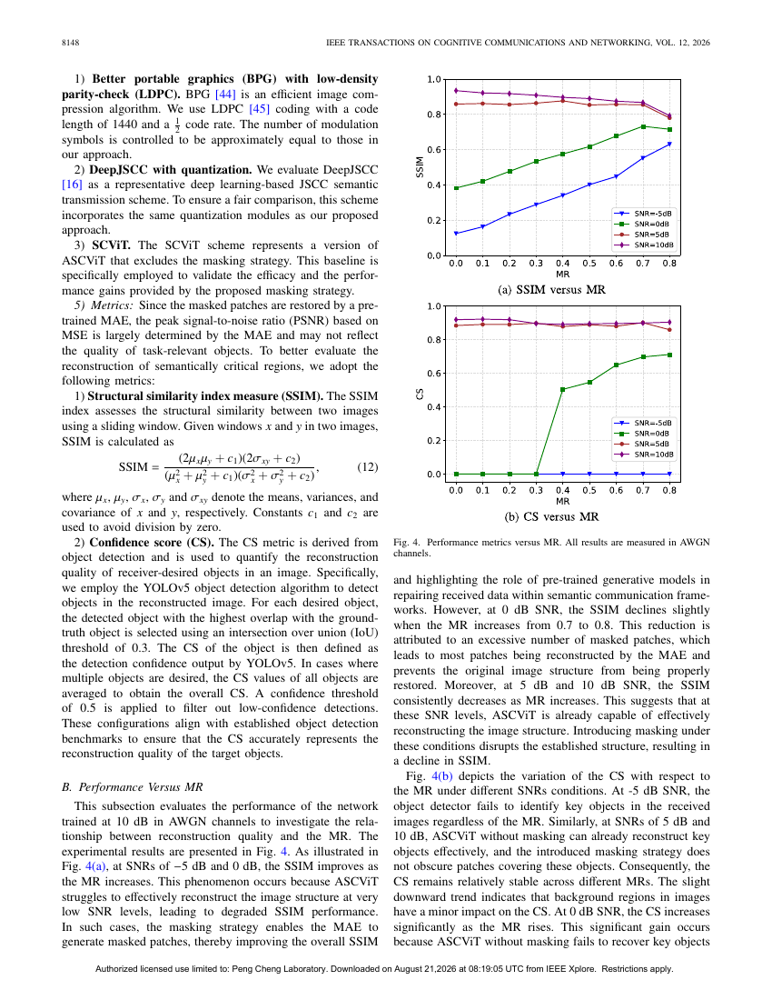</a><figcaption><b>关键结果证据页</b>｜来源：《Adaptive Semantic Image Transmission With Object Prioritization and Over-the-Air Validation》，PDF p.8；原图题/表题：As illustrated in objects effectively, and the introduced masking strategy does。 <a href='https://doi.org/10.1109/tccn.2026.3692647'>核对论文</a></figcaption></figure></div>
</article>
<article class="paper" id="channel-adaptive-cross-modal-generative-semantic-communication-for-point-cloud-transmission" data-year="2026" data-tier="core">
  <div class="paper-head"><div><div><span class="tag core">核心纳入</span><span class="tag year">2026</span></div><h2>Channel-Adaptive Cross-Modal Generative Semantic Communication for Point Cloud Transmission</h2></div><a class="pdf" href="https://doi.org/10.1109/tccn.2026.3657061">DOI / IEEE 页面</a></div>
  <div class="facts"><div><b>作者</b>Wanting Yang、Zehui Xiong、Qianqian Yang、Ping Zhang、Mérouane Debbah、Rahim Tafazolli</div><div><b>出版信息</b>Vol. 12, pp. 5983-5998</div><div><b>DOI / IEEE ID</b><a href="https://doi.org/10.1109/tccn.2026.3657061">10.1109/tccn.2026.3657061</a> / 11361156</div><div><b>任务</b>点云/三维场景传输或理解</div><div><b>技术谱系</b>学习式语义 feature；数字接口需由正文具体实现判定</div><div><b>年份口径</b>formal TCCN volume year</div></div>
  <div class="verdict"><b>是否属于严格数字语义通信：</b>系统层相关；没有足够证据把它判为严格数字语义通信。</div>
  <h3>实验设置</h3><div class="grid3"><div><b>数据集/场景</b>ShapeNet</div><div><b>Baseline</b>LDPC、HM、FEC、ViT、GAN、ResNet、YOLO、PPO、SAC、JSCC、IB、BERT、PointNet</div><div><b>指标与信道条件</b>FID、MSE、mAP、accuracy、precision、NME、latency、energy、FPS、MOS、WER、CER<br><span class="muted">SNR：0 dB、10 dB、15 dB、20 dB、5 dB</span></div></div>
  <h3>Introduction 的六步讲述逻辑</h3><ol class='story'><li><b>已有进展：</b>ile preserv- reconstruction and implicitly assumes that the source data is ing key structural information.</li><li><b>现有问题：</b>In practice, however, PCs are often images of the object are introduced as auxiliary input.</li><li><b>为何重要：</b>Furthermore, from a methodological standpoint, these grained geometry under masked reconstruction, enabling approaches—by projecting PCs into 2D space at the transmit- stable and semantically consistent generative point cloud ter and reconstructing them at the receiver—essentially bypass reconstruction.</li><li><b>提出方案：</b>Meanwhile, factors such as lighting conditions and alignment • We propose a cross-modal semantic encoder with a errors can substantially affect the fidelity of the reconstructed keypoint-informed fusion mechanism that preserves fine- PCs.</li><li><b>解决机制：</b>Furthermore, from a methodological standpoint, these grained geometry under masked reconstruction, enabling approaches—by projecting PCs into 2D space at the transmit- stable and semantically consistent generative point cloud ter and reconstructing them at the receiver—essentially bypass reconstruction.</li><li><b>核心主张与证据目标：</b>In this work, we focus on a PC reconstruction task and pro- The JSCC encoder incorporates both the average SNR and pose a channel-adaptive cross-modal GenSeC-PC framework, real-time available bandwidth as the feedback to adaptively as shown in Fig.</li></ol>
  <h3>方法、变量与优化</h3><p><b>系统/信息流：</b>PDF p.1：el-adaptive cross-modal generative semantic tuning, highlighting the framework’s robustness across diverse communication (SemCom) for PC transmission, called GenSeC- conditions—including low SNR, bandwidth limitations, varying PC. GenSeC-PC employs a semantic encoder that fuses images numbers of 2D images, and previously unseen objects. and point clouds, where images serve as non-transmitted side information. Meanwhile, the de PDF p.1：nditions—including low SNR, bandwidth limitations, varying PC. GenSeC-PC employs a semantic encoder that fuses images numbers of 2D images, and previously unseen objects. and point clouds, where images serve as non-transmitted side information. Meanwhile, the decoder is built upon the backbone Index Terms—Semantic communication, point cloud, diffusion of PointDif. Such a cross-modal design not only ensures high model, generati PDF p.1：erior reconstruc- tion performance compared to PointDif. Moreover, to ensure robust transmission and reduce system complexity, we design I. I NTRODUCTION a streamlined and asymmetric channel-adaptive joint semantic- channel coding architecture, where only the encoder needs the feedback of average signal-to-noise ratio (SNR) and available bandwidth. In addition, rectified denoising diffusion implicit P OINT clouds (PCs) provide PDF p.1：u.ac.ae). directions. Rahim Tafazolli is with the Institute for Communication Systems (ICS), One line of existing work leverages deep learning backbones 5GIC &amp; 6GIC, University of Surrey, Guildford, GU2 7XH Surrey, U.K. for semantic extraction, serving as the encoder and decoder (e-mail: r.tafazolli@surrey.ac.uk). Data is available on-line at https://github.com/wty2011jl/GenSeC-PC in joint semantics and channel coding (JSCC) f</p><p><b>目标函数/联合训练证据：</b>PDF p.8：ing denote the whole semantic encoder by Eω (·), with the whole from sampled data relying on (22). Specifically, the reverse trainable parameter ω. Following the simplified version of the process controlled by F̂ s can be expressed by MSE derived in [28], the loss function during the pretraining can be expressed by T Y √ √ pθ x0:T ˇF̂ s = p xT pθ xt−1 ˇxt , F̂ s , ˇ  ˇ     (23) LPMSE (ω, θ) = MSE , θ ᾱx0 + 1 − ᾱ, PDF p.8： √ √   LPCD (ω, θ) = CD , θ ᾱx0 + 1 − ᾱ, Eω x0 , t . an “inverse U-Net”. For each C-PC block, the feature from previous block Hl−1 is first fed into an MLP, performing (28) either dimensional expansion or compression, obtaining Hl0 . Thus, the final loss function for fine-tuning can be represented Meanwhile, the step t is transformed into an embedding by LPMSE (ω, θ) + LPCD (ω, θ). Subsequently, we freeze the t¯ = β PDF p.8：feature F̂ s from the JSCC decoder, and the CD between the input x to the semantic Hl = Gate (ct ) MLP (Hl−1 ) + MLP (ct ) . (25) encoder and the final output x̂ from the semantic decoder. The training method for the PC diffusion is detailed in Sec- Thus, the loss function for the training of the JSCC parameter ti</p>
  <h3>数字化方案与传输开销</h3><p><b>传输表示证据：</b>PDF p.2：that must be transmitted vates the need for generative SemCom designs that preserve in a lossless digital manner to assist in PC reconstruction at the 3D-aware semantic representations, rather than depending receiver side. The associated overhead from digital quantiza- on semantics of certain view. tion and channel coding often results in a compression rate In response to this gap, we propose a novel cross- that falls short of PDF p.6：C encoder and decoder. pression coding. Then, for the visible patches, a simplified the keypoints as the center points, irrespective of whether the PointNet [25] ξφ with parameter φ is employed to obtain the patch is masked. This can be expressed by ˚ V patch tokens T iv i=1 with a dimension of d1 . Meanwhile, ( Fic + Eik , if i ∈ K the center point of each visible patch is transformed into F̃i = c , (9) ˚ V position embedding PDF p.6：ion embedding Eiv i=1 with the same dimension d1 , Fic , otherwise ˚ composed utilizing a module ˚ of Vtwo linear layers denoted by where the keypoint embedding plays a role in enhancing the V ζϕ . After that, Eiv i=1 and T iv i=1 are concatenated and fed ˚ G token and guiding the feature representations of the visible into a Transformer Encoder ψ$ for extracting ˚ latent geometric learning of mask token. Then, F̃ic i=1 is fed PDF p.6：inear layers denoted by where the keypoint embedding plays a role in enhancing the V ζϕ . After that, Eiv i=1 and T iv i=1 are concatenated and fed ˚ G token and guiding the feature representations of the visible into a Transformer Encoder ψ$ for extracting ˚ latent geometric learning of mask token. Then, F̃ic i=1 is fed into a Multi- V features and obtaining the final tokens Fiv i=1 of visible Layer Perceptron (MLP) module to</p><p><b>调制/信道编码线索：</b>bpsk、ldpc、qpsk</p><p><b>可复核开销与缺失信息：</b>输入/分辨率线索：正文未给出可稳定自动定位的条目。feature/token/latent 尺寸线索：正文未给出可稳定自动定位的条目。码本线索：正文未给出可稳定自动定位的条目。bit/bpp/速率线索：正文未给出可稳定自动定位的条目。CBR/压缩率线索：正文未给出可稳定自动定位的条目。该论文偏系统/理论层，正文未必给出可复核的 encoder feature map 与 payload 长度。</p><div class="formula">\[N_{tx}=N_{payload}+N_{side}+N_{protection};\quad \text{缺失项必须标记为未知}\]</div>
  <h3>信道处理机制</h3><div class="channel"><p><b>分类：</b>类别 5：信道/资源进入系统优化，但 payload 数字化接口不完整</p><p><b>正文信道证据：</b>PDF p.1：azolli , Fellow, IEEE Abstract—With the rapid development of autonomous driving for error-free side information transmission common in prior and extended reality, efficient transmission of point clouds (PCs) SemCom approaches. Simulation results confirm the effectiveness has become increasingly important. In this context, we pro- of cross-modal semantic extraction and dual-metric guided fine- pose a novel channel-adaptive cros PDF p.1：ncy and leaves was Y. Fu. (Corresponding author: Qianqian Yang.) Wanting Yang is with the SUTD Wireless Innovation Center, the compressed data size still relatively large. Meanwhile, Singapore University of Technology and Design, Singapore 487372 the “cliff effect” prevalent in traditional communication poses (e-mail: wanting yang@sutd.edu.sg). additional challenges for robust and reliable PC transmission Zehui Xiong is with t PDF p.2：e, it reconstructs the complete PC from the extracted depth alignment techniques [18], [19]. Specifically, Zhang semantics, allowing the model to infer global structure from et al. utilized both RGB and depth frames as source data partial observations. This effectively reduces the impact of in [18], and Jiang et al. employed multi-perspective images incomplete or noisy input data on reconstruction quality. of selected 3D objec PDF p.2：ion contributions of our work have been highlighted as below. of rich 3D semantic content originally embedded in the PC. Meanwhile, factors such as lighting conditions and alignment • We propose a cross-modal semantic encoder with a errors can substantially affect the fidelity of the reconstructed keypoint-informed fusion mechanism that preserves fine- PCs. Furthermore, from a methodological standpoint, these grained geometry</p><p><b>decoder 实际收到：</b>由论文系统模型定义的语义 feature、任务状态或传统译码后数据</p><p><b>是否联合优化：</b>是/部分：目标或训练证据与物理信道同时出现。</p><p><b>是否真正处理 bit/index/token/packet error：</b>未形成可复核的 bit/index/token 错误闭环。</p></div>
  <h3>主要结果、局限与 Codex 判断</h3><p><b>证据化结果：</b>PDF p.1：sion of PointDif. Such a cross-modal design not only ensures high model, generative AI, multi-modal communication. compression efficiency but also delivers superior reconstruc- tion performance compared to PointDif. Moreover, to ensure robust transmission and reduce system complexity, we design I. I NTRODUCTION a streamlined and asymmetric channel-adaptive joint semantic- channel coding architecture, where only the encoder nee PDF p.1：onstruction in remote sce- narios. As a result, the development of efficient transmission Received 9 July 2025; revised 14 November 2025; accepted 14 January 2026. Date of publication 22 January 2026; date of current version 11 February solutions has recently gained significant attention as a new 2026. This work is partly supported by the National Key Research and direction in both academia and industry. Development Program of PDF p.2：ecoder’s generative completion capability, semantic information still requires tens of thousands of sym- learned from prior knowledge, to flexibly elevate semantic bols to represent a single object in ShapeNet [15] dataset. abstraction and enhance robustness against source-side Apart from the above, there has also been research focused on sensing incompleteness and semantic transmission noise; PC-based volumetric media [16], [ PDF p.2：ploiting JSCC’s flexible compression and analog-style was limited to a single category, specifically human gestures. transmission to enhance channel utilization in highly In this sense, such methods may not generalize well to dynamic wireless environments and reduce end-to-end scenarios involving multiple categories. Meanwhile, the above system complexity. JSCC frameworks face an inherently limitation stemming from At the tran</p><p><b>独立判断：</b>没有完整离散接口，无法直接回答 bit/index/token 跳变问题。 未显式注入离散误码/丢包，鲁棒性结论不应外推到真实数字链路。 未报告统一可复核的 payload bit 数/CBR，跨论文带宽比较受限。</p>
  <div class="figs"><figure><a href='assets/2026_channel-adaptive-cross-modal-generative-semantic-communication-for-point-cloud-transmission_method_p4.png' target='_blank'></a><figcaption><b>架构/方法证据页</b>｜来源：《Channel-Adaptive Cross-Modal Generative Semantic Communication for Point Cloud Transmission》，PDF p.4；原图题/表题：Illustration of channel-adaptive cross-modal GenSeC-PC framework.。 <a href='https://doi.org/10.1109/tccn.2026.3657061'>核对论文</a></figcaption></figure><figure><a href='assets/2026_channel-adaptive-cross-modal-generative-semantic-communication-for-point-cloud-transmission_result_p10.png' target='_blank'></a><figcaption><b>关键结果证据页</b>｜来源：《Channel-Adaptive Cross-Modal Generative Semantic Communication for Point Cloud Transmission》，PDF p.10；原图题/表题：Performance comparison between IaKP-PointDif and PointDif.。 <a href='https://doi.org/10.1109/tccn.2026.3657061'>核对论文</a></figcaption></figure></div>
</article>
<article class="paper" id="channel-adaptive-semantic-communication-for-stereoscopic-media-design-and-prototype-implemen" data-year="2026" data-tier="core">
  <div class="paper-head"><div><div><span class="tag core">核心纳入</span><span class="tag year">2026</span></div><h2>Channel-Adaptive Semantic Communication for Stereoscopic Media: Design and Prototype Implementation</h2></div><a class="pdf" href="https://doi.org/10.1109/tccn.2026.3689868">DOI / IEEE 页面</a></div>
  <div class="facts"><div><b>作者</b>Jingxuan Men、Mahdi Boloursaz Mashhadi、Ning Wang、Yi Ma、Mike Nilsson、Rahim Tafazolli</div><div><b>出版信息</b>Vol. 12, pp. 7909-7925</div><div><b>DOI / IEEE ID</b><a href="https://doi.org/10.1109/tccn.2026.3689868">10.1109/tccn.2026.3689868</a> / 11505940</div><div><b>任务</b>通用/多模态语义通信</div><div><b>技术谱系</b>连续 learned latent / channel symbol（DeepJSCC）</div><div><b>年份口径</b>formal TCCN volume year</div></div>
  <div class="verdict"><b>是否属于严格数字语义通信：</b>否（连续语义 JSCC）</div>
  <h3>实验设置</h3><div class="grid3"><div><b>数据集/场景</b>CLIC、Cityscapes、HEVC</div><div><b>Baseline</b>DeepJSCC、JPEG、JPEG2000、HEVC、H.264、H.265、LDPC、HM、FEC、Swin Transformer、ViT、GAN、PPO、SAC、SwinJSCC、ADJSCC、JSCC、IB</div><div><b>指标与信道条件</b>PSNR、SSIM、FID、MSE、mAP、accuracy、NME、latency、FLOPs、FPS、semantic similarity、VoI、MOS、WER<br><span class="muted">SNR：-5 dB、1.5 dB、10 dB、18 dB、20 dB、30 dB、35.1 dB、4 dB、5 dB</span></div></div>
  <h3>Introduction 的六步讲述逻辑</h3><ol class='story'><li><b>已有进展：</b>Section IV details the and effectiveness of our semantic communication design for architectures of both SSC Version 1 and SSC Version 2. stereo media, making it well-suited for real-world applications Section V presents the simulation results.</li><li><b>现有问题：</b>However, these • We further propose SSC Version 2, a channel-aware methods often suffer from high computational complexity and adaptive semantic rate control method for stereoscopic limited adaptability to real-time applications.</li><li><b>为何重要：</b>For simplicity, we use only two preserving semantically important stereo features, which is perspectives, the primary and auxiliary views, as examples not considered in existing single-view rate-adaptive Deep to explain the framework.</li><li><b>提出方案：</b>The transmission rate is then jointly determined by To enhance the transmission efficiency of stereo media capacity-aware masking ratio control and stereo-aware seman- through semantic communication, we introduce the Stereo- tic feature selection, which exploits cross-view redundancy scopic Semantic Communication framework, the SSC Ver- in stereoscopic representations.</li><li><b>解决机制：</b>This design enables prin- sion 1 of this work.</li><li><b>核心主张与证据目标：</b>Integration of Stereo, Semantic Communication, and 3D [36] further considered feature-importance-aware transmission Rendering to improve task-oriented performance under semantic con- Recent studies have begun connecting semantic communi- straints.</li></ol>
  <h3>方法、变量与优化</h3><p><b>系统/信息流：</b>PDF p.1：red as an Index (SSIM) compared with benchmarks. Finally, leveraging alternative to traditional separate source and channel coding 3D rendering, we demonstrate the practical effectiveness of the approaches, effectively mitigating the cliff effect and enabling proposed schemes for immersive media transmission in real- end-to-end optimization [13], [14]. Reference [13] was the first world scenarios. to propose the use of Deep JS PDF p.2：both SSC Version 1 and SSC Version 2. stereo media, making it well-suited for real-world applications Section V presents the simulation results. Section VI describes in immersive communication systems. Table I provides an the real-world implementation of the proposed schemes for overview of the key differences between this work and the novel-view delivery. Finally, Section VII concludes the paper. literature. The main contribu PDF p.3：o features, which is perspectives, the primary and auxiliary views, as examples not considered in existing single-view rate-adaptive Deep to explain the framework. In the framework, images from JSCC frameworks. the primary and auxiliary views are fed into the encoder, Authorized licensed use limited to: Peng Cheng Laboratory. Downloaded on July 15,2026 at 10:15:57 UTC from IEEE Xplore. Restrictions apply. PDF p.4：he transmitted samples, according to Shannon theory and determines the corresponding the decoded features are first reconstructed using the Transfer CPP budget. This capacity-aware budget controls the masking Module, followed by image reconstruction through a decoder ratio, while stereo-view correlation determines which features that exploits the semantic similarity between the primary and should be preserved or masked. In thi</p><p><b>目标函数/联合训练证据：</b>PDF p.8：channel conditions, allowing efficient semantic optimization, with a gradual adjustment of the learning rate communication in stereo scenarios. over time. The batch size was set to 1, and a total of 500 epochs were trained. The SNR was used as an input to C. Loss Function the model. To enhance the model’s adaptability to varying The model is trained with the MSE loss function. We channel conditions, the SNR was uniformly sampl PDF p.8：ate communication in stereo scenarios. over time. The batch size was set to 1, and a total of 500 epochs were trained. The SNR was used as an input to C. Loss Function the model. To enhance the model’s adaptability to varying The model is trained with the MSE loss function. We channel conditions, the SNR was uniformly sampled between compute the average Mean Squared Error (MSE) for the -5 dB and 20 dB during training. In testi PDF p.8：tested on a single reconstruction fidelity under channel impairments. Unlike NVIDIA GeForce RTX A6000 GPU. conventional rate–distortion optimization frameworks, the pro- posed method does not explicitly include a rate regularization C. Benchmarks term in the loss function. Instead, the rate–distortion tradeoff To</p>
  <h3>数字化方案与传输开销</h3><p><b>传输表示证据：</b>PDF p.2：sual fidelity ing high-quality reconstruction. We propose an innovative under adverse channel conditions. The interim imple- dual-view deep joint source-channel coding scheme, which mentation and testing of this end-to-end framework in eliminates the need for entropy coding, reducing computa- real-world application environments are reported in [1]. tional overhead. In addition, we introduce a channel-aware Overall, this work i PDF p.3：cing redundancy and improving adaptability under varying but these methods remain tailored to specific SNR scenarios channel conditions. and lack real-time adaptability. Reference [35] introduced an entropy-aware rate control mechanism in which the entropy of feature maps guides adaptive bandwidth allocation. Reference D. Integration of Stereo, Semantic Communication, and 3D [36] further considered feature-importance-aware tra PDF p.5：h 3 × 3 kernels. Fresidual-auxiliary , represent the redundancy-removed semantic The first three layers produce N feature channels, while the features of the auxiliary view. The residuals are then combined last convolution projects the features into a compact latent with the semantic features of the primary view using a Max representation with M channels. A Parametric ReLU (PReLU) Pooling layer and transformed into an n-dimens PDF p.5：transmission, the semantic and third convolutional layers use a stride of 2, resulting in an code Z undergoes power normalization to ensure efficient overall 4× downsampling factor. Consequently, the encoder transmission. maps the input image x ∈ R3×H×W to a latent feature tensor 2) Stereo Source and Channel Decoder: Upon receiving F ∈ RM ×H/4×W/4 , where H and W denote the height and the normalized semantic code Z’ with chann</p><p><b>调制/信道编码线索：</b>entropy coding、ldpc、ofdm</p><p><b>可复核开销与缺失信息：</b>输入/分辨率线索：1080 × 860、256 × 256、768 × 768、832 × 832、2048×1024、2048 × 1024、1024 × 1024、2048×2048、768×768、208 × 208。feature/token/latent 尺寸线索：features with a resolution of 1080 × 860、features while dynamically adjusting the transmission 256 × 256。码本线索：正文未给出可稳定自动定位的条目。bit/bpp/速率线索：32 bits。CBR/压缩率线索：正文未给出可稳定自动定位的条目。连续 DeepJSCC 的主要预算是 channel uses/CBR；除非另加量化与调制，不能把每个 latent 当作固定 bit。</p><div class="formula">\[CBR=\frac{N_{complex\ channel\ symbols}}{N_{source\ samples}},\qquad R_{bit}\ \text{未定义（连续映射）}\]</div>
  <h3>信道处理机制</h3><div class="channel"><p><b>分类：</b>类别 3：连续 learned latent 直接通过有噪声信道</p><p><b>正文信道证据：</b>PDF p.1：Stereo image compression methods, such between views, stereoscopic media can facilitate 3D structure construction and enhance spatial perception. However, consid- as H.264-based MVC [2] and H.265-based MV-HEVC [3], ering the correlation between stereo media pairs, stereoscopic achieve efficient encoding, but suffer from high computational media communication will introduce redundancy. To address this, complexity. Deep learning PDF p.1：mits semantic features reduce redundancy [4], [5], [6]. However, digital transmission representing inter-view correlations, thereby reducing redun- dancy while improving the reconstruction quality. Furthermore, of compressed features introduces severe cliff effects in wire- as the transmission channel quality varies, we design an adaptive less communication. semantic rate control method for stereoscopic media, based on a Seman PDF p.1：ise Ratio (PSNR) and Structural Similarity Channel Coding (Deep JSCC) has been explored as an Index (SSIM) compared with benchmarks. Finally, leveraging alternative to traditional separate source and channel coding 3D rendering, we demonstrate the practical effectiveness of the approaches, effectively mitigating the cliff effect and enabling proposed schemes for immersive media transmission in real- end-to-end optimization [13 PDF p.1：imilarity Channel Coding (Deep JSCC) has been explored as an Index (SSIM) compared with benchmarks. Finally, leveraging alternative to traditional separate source and channel coding 3D rendering, we demonstrate the practical effectiveness of the approaches, effectively mitigating the cliff effect and enabling proposed schemes for immersive media transmission in real- end-to-end optimization [13], [14]. Reference [13] was the f</p><p><b>decoder 实际收到：</b>带噪连续 channel symbol / latent，经神经 decoder 恢复任务输出</p><p><b>是否联合优化：</b>是/部分：目标或训练证据与物理信道同时出现。</p><p><b>是否真正处理 bit/index/token/packet error：</b>不适用 VQ index/bit 跳变；论文处理的是连续扰动和信道失配。</p></div>
  <h3>主要结果、局限与 Codex 判断</h3><p><b>证据化结果：</b>PDF p.1：Boloursaz Mashhadi , Senior Member, IEEE, Ning Wang , Senior Member, IEEE, Yi Ma , Senior Member, IEEE, Mike Nilsson , and Rahim Tafazolli , Fellow, IEEE Abstract—Stereoscopic media have garnered attention due to multiple views, higher encoding efficiency and improved their widespread applications in 3D visualization, metaverse, reconstruction quality can be achieved compared to monocular virtual reality, and immersive media. PDF p.1：address this, complexity. Deep learning-based stereo image compression we propose a novel dual-view deep joint source-channel coding methods employ disparity estimation and predictive coding to scheme that efficiently extracts and transmits semantic features reduce redundancy [4], [5], [6]. However, digital transmission representing inter-view correlations, thereby reducing redun- dancy while improving the reconstruction quali PDF p.1：mission by extracting importance, and channel conditions to apply an adaptive mask and transmitting semantic features while filtering redundant to control the transmitted data volume. This approach maintains reconstruction quality under varying conditions and improves information [7], [8], [9], [10], [11], [12]. Deep Joint Source- Peak Signal to Noise Ratio (PSNR) and Structural Similarity Channel Coding (Deep JSCC) has been e PDF p.1：maintains reconstruction quality under varying conditions and improves information [7], [8], [9], [10], [11], [12]. Deep Joint Source- Peak Signal to Noise Ratio (PSNR) and Structural Similarity Channel Coding (Deep JSCC) has been explored as an Index (SSIM) compared with benchmarks. Finally, leveraging alternative to traditional separate source and channel coding 3D rendering, we demonstrate the practical effectiveness of the</p><p><b>独立判断：</b>没有完整离散接口，无法直接回答 bit/index/token 跳变问题。 未显式注入离散误码/丢包，鲁棒性结论不应外推到真实数字链路。</p>
  <div class="figs"><figure><a href='assets/2026_channel-adaptive-semantic-communication-for-stereoscopic-media-design-and-prototype-implemen_method_p4.png' target='_blank'></a><figcaption><b>架构/方法证据页</b>｜来源：《Channel-Adaptive Semantic Communication for Stereoscopic Media: Design and Prototype Implementation》，PDF p.4；原图题/表题：The proposed semantic communication framework for stereo media transmission (SSC Version 1).。 <a href='https://doi.org/10.1109/tccn.2026.3689868'>核对论文</a></figcaption></figure><figure><a href='assets/2026_channel-adaptive-semantic-communication-for-stereoscopic-media-design-and-prototype-implemen_result_p11.png' target='_blank'>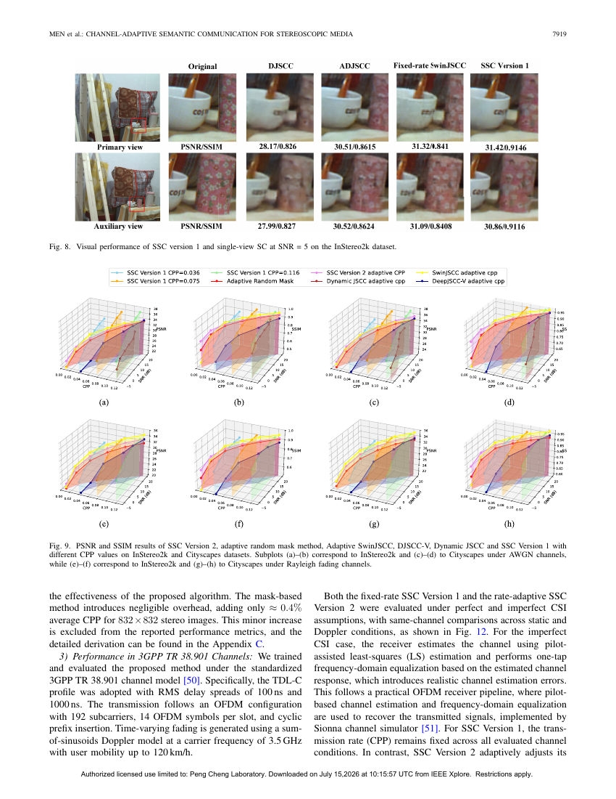</a><figcaption><b>关键结果证据页</b>｜来源：《Channel-Adaptive Semantic Communication for Stereoscopic Media: Design and Prototype Implementation》，PDF p.11；原图题/表题：Visual performance of SSC version 1 and single-view SC at SNR = 5 on the InStereo2k dataset.。 <a href='https://doi.org/10.1109/tccn.2026.3689868'>核对论文</a></figcaption></figure></div>
</article>
<article class="paper" id="channel-aware-latent-flow-matching-semantic-communication-for-agentic-ai" data-year="2026" data-tier="core">
  <div class="paper-head"><div><div><span class="tag core">核心纳入</span><span class="tag year">2026</span></div><h2>Channel-Aware Latent Flow-Matching Semantic Communication for Agentic AI</h2></div><a class="pdf" href="https://doi.org/10.1109/tccn.2026.3705851">DOI / IEEE 页面</a></div>
  <div class="facts"><div><b>作者</b>Zhiyue Zhang、Shaojie Wang、Junsheng Mu、Yalong Hu、Li Li</div><div><b>出版信息</b>Vol. 12, pp. 10093-10105</div><div><b>DOI / IEEE ID</b><a href="https://doi.org/10.1109/tccn.2026.3705851">10.1109/tccn.2026.3705851</a> / 11573832</div><div><b>任务</b>通用/多模态语义通信</div><div><b>技术谱系</b>连续 learned latent / channel symbol（DeepJSCC）</div><div><b>年份口径</b>formal TCCN volume year</div></div>
  <div class="verdict"><b>是否属于严格数字语义通信：</b>否（连续语义 JSCC）</div>
  <h3>实验设置</h3><div class="grid3"><div><b>数据集/场景</b>ImageNet</div><div><b>Baseline</b>DeepJSCC、HM、FEC、Swin Transformer、ViT、GAN、VAE、VQ-VAE、ELIC、ResNet、PPO、SAC、ASC、JSCC、IB</div><div><b>指标与信道条件</b>PSNR、SSIM、LPIPS、FID、mAP、Top-1、Top-5、accuracy、NME、latency、energy、ViTScore、VoI、MOS、WER、CER<br><span class="muted">SNR：0.5 dB、1 dB、1.0 dB、15 dB、3 dB、3.0 dB、5 dB、7 dB</span></div></div>
  <h3>Introduction 的六步讲述逻辑</h3><ol class='story'><li><b>已有进展：</b>ty details from sparse semantic latent concentration and spectral sparsity of natural images.</li><li><b>现有问题：</b>This limitation makes it difficult for the model to effec- itly models the channel noise process to predict and eliminate tively decouple key semantic structures from secondary texture channel noise at the JSCC receiver.</li><li><b>为何重要：</b>This limitation makes it difficult for the model to effec- itly models the channel noise process to predict and eliminate tively decouple key semantic structures from secondary texture channel noise at the JSCC receiver.</li><li><b>提出方案：</b>The main contributions and works of to meet the requirements of embodied perception, hindering this paper are summarized as follows: their deployment on compute-constrained edge devices. • We propose a generative JSCC framework based on To break this efficiency bottleneck, research on generative latent-space flow-matching, modeling channel equaliza- modeling has begun to explore continuous manifold generation tion as a conditional generation process within the paradigms based on deterministic Ordinary Differential Equa- semantic latent-space.</li><li><b>解决机制：</b>By utilizing Rectified Flow to tions (ODE) [21].</li><li><b>核心主张与证据目标：</b>Let P (·) be the normalization operator; the • Simulation results on the Tiny-ImageNet dataset under final transmitted signal can be expressed as s = P (zq ), where the 5 dB Rayleigh fading channel show that our proposed E[ksk2 ] = 1. scheme improves the Peak Signal-to-Noise Ratio (PSNR) by 16.33% and the Structural Similarity Index Measure B.</li></ol>
  <h3>方法、变量与优化</h3><p><b>系统/信息流：</b>PDF p.1：ization at the transmitter. At the receiver, channel degra- communication systems [3]. dation is modeled as a continuous perturbation process in the As the key component of Embodied Intelligence, embodied latent space, and a channel-aware latent flow-matching decoder is perception emphasizes the continuous interaction between constructed. Leveraging the Rectified Flow strategy, the receiver Agentic AI and the environment throu PDF p.1：olution trajectory according to instantaneous channel intended for human viewing, but directly serves downstream conditions. Simulation results under various channel conditions machine decision tasks, including target recognition, spatial demonstrate that the proposed scheme achieves superior perfor- modeling, state estimation, and action planning. Consequently, mance in terms of Peak Signal-to-Noise Ratio (PSNR), Structural t PDF p.2：uts by progressively inverting correspond more to texture details or random noise [26]. the noise process. Existing end-to-end methods fail to explicitly utilize this fre- Some researchers have explored the combination of Sem- quency domain prior, forcing the encoder to allocate valuable Com and diffusion models. Wu et al. [16] proposed the transmission resources uniformly across all frequency bands Channel Denoising Diffusion PDF p.3：time-varying wireless channels. As illustrated in Fig. 2, the system consists of a semantic transmitter, a wireless channel, and a generative receiver. Unlike traditional com- munication systems that strive for bit-level precise recovery, the objective of the proposed system is to maximize the semantic fidelity of the reconstructed image at the receiver under constraints of limited bandwidth and dynamic channel conditions. A.</p><p><b>目标函数/联合训练证据：</b>PDF p.6：ro- tization Stages Nq , Normalization Operator P (·). duce the Straight-Through Estimator and codebook constraint Ensure: Channel input signal s. losses during training. Specifically, the total quantization 1: Perform 2D Haar Wavelet Transform on x to obtain objective function LV Q is defined as: frequency bands: xLL , xLH , xHL , xHH ← DWT(x) Nq 2: Concatenate frequency features: xW ← X ksg[rn−1 ] − zq,n k22 + βkrn−1 − sg[zq PDF p.7：velocity field prediction network to learn embedding space. Each Transformer Block consists of a smooth and semantically consistent manifold transport tra- multi-head self-attention module and a feed-forward network. jectories, this paper constructs a hybrid objective function To compensate for the lack of local structure perception containing latent space manifold constraints, frequency- in pure self-attention architectures,</p>
  <h3>数字化方案与传输开销</h3><p><b>传输表示证据：</b>PDF p.1：IEEE TRANSACTIONS ON COGNITIVE COMMUNICATIONS AND NETWORKING, VOL. 12, 2026 10093 Channel-Aware Latent Flow-Matching Semantic Communication for Agentic AI Zhiyue Zhang , Shaojie Wang, Junsheng Mu , Yalong Hu, and Li Li Abstract—The evolution of Agentic AI relies on embodied In this context, Agentic AI—represented by autonomous vehi- perception to interact with PDF p.1：sampling is needed therein. To address these challenges, acquisition of environmental information to guide its inter- this paper proposes a generative joint source–channel coding active behaviors. Specifically, Embodied Intelligence, which framework based on latent flow-matching. More specifically, empowers Agentic AI to physically interact with and adapt to a wavelet-enhanced robust semantic representation is designed the rea PDF p.1：cit frequency-domain decoupling and multi-stage discretization at the transmitter. At the receiver, channel degra- communication systems [3]. dation is modeled as a continuous perturbation process in the As the key component of Embodied Intelligence, embodied latent space, and a channel-aware latent flow-matching decoder is perception emphasizes the continuous interaction between constructed. Leveraging the Rectified Flow stra PDF p.1：d multi-stage discretization at the transmitter. At the receiver, channel degra- communication systems [3]. dation is modeled as a continuous perturbation process in the As the key component of Embodied Intelligence, embodied latent space, and a channel-aware latent flow-matching decoder is perception emphasizes the continuous interaction between constructed. Leveraging the Rectified Flow strategy, the receiver Agentic AI and</p><p><b>调制/信道编码线索：</b>未自动检出固定调制/信道编码名称</p><p><b>可复核开销与缺失信息：</b>输入/分辨率线索：64 × 64。feature/token/latent 尺寸线索：正文未给出可稳定自动定位的条目。码本线索：codebook constraints a 1D channel attention map Mc ∈ RC×1、Codebook Set C = {C1、codebook utilization rate of ≥ 98、codebook set C = {C1、codebook Cn = {en,k }K k=1、codebook size of K = 4096。bit/bpp/速率线索：正文未给出可稳定自动定位的条目。CBR/压缩率线索：CBR AND K EY PARAMETERS、Channel Bandwidth Ratio (CBR) consistent across all comparative schemes to ensure fairness、CBR、CBR and key architectural parameters plexity and latency of generative S、CBR decreases、CBR = 1/12, all three metrics maintain steady under-correction zones (Pro。连续 DeepJSCC 的主要预算是 channel uses/CBR；除非另加量化与调制，不能把每个 latent 当作固定 bit。</p><div class="formula">\[CBR=\frac{N_{complex\ channel\ symbols}}{N_{source\ samples}},\qquad R_{bit}\ \text{未定义（连续映射）}\]</div>
  <h3>信道处理机制</h3><div class="channel"><p><b>分类：</b>类别 3：连续 learned latent 直接通过有噪声信道</p><p><b>正文信道证据：</b>PDF p.1：communication system architectures fol- S THE sixth generation (6G) mobile communication net- A works gradually materialize, the boundaries of commu- nication networks are undergoing a profound transformation low Shannon’s separation theorem, aiming at bit-perfect transmission. Nevertheless, detailed information with lim- ited contribution to decision-making consumes substantial from simple data transmission to connected intel PDF p.2：10094 IEEE TRANSACTIONS ON COGNITIVE COMMUNICATIONS AND NETWORKING, VOL. 12, 2026 [9] proposed the Deep JSCC model for wireless image and Rectified Flow theories provides a novel mathematical transmission, effectively mitigating the “cliff effect” of perspective for solving the fast reconstruction problem in traditional digital communication under low Signal-to-Noise SemCom [22]. Unlike the complex curved denoising trajec- Rat PDF p.2：10094 IEEE TRANSACTIONS ON COGNITIVE COMMUNICATIONS AND NETWORKING, VOL. 12, 2026 [9] proposed the Deep JSCC model for wireless image and Rectified Flow theories provides a novel mathematical transmission, effectively mitigating the “cliff effect” of perspective for solving the fast reconstruction problem in traditional digital communication under low Signal-to-Noise SemCom [22]. Unlike the complex curved denoising trajec- Rat PDF p.2：encoder to allocate valuable Com and diffusion models. Wu et al. [16] proposed the transmission resources uniformly across all frequency bands Channel Denoising Diffusion Model (CDDM), which explic- [27]. This limitation makes it difficult for the model to effec- itly models the channel noise process to predict and eliminate tively decouple key semantic structures from secondary texture channel noise at the JSCC receiver. Addr</p><p><b>decoder 实际收到：</b>带噪连续 channel symbol / latent，经神经 decoder 恢复任务输出</p><p><b>是否联合优化：</b>是/部分：目标或训练证据与物理信道同时出现。</p><p><b>是否真正处理 bit/index/token/packet error：</b>不适用 VQ index/bit 跳变；论文处理的是连续扰动和信道失配。</p></div>
  <h3>主要结果、局限与 Codex 判断</h3><p><b>证据化结果：</b>PDF p.1：l the communication goal between agents shifts from bit-level Similarity Index Measure (SSIM), and Learned Perceptual Image Patch Similarity (LPIPS), while significantly reducing inference precise reconstruction to ensuring that the transmitted infor- latency compared with diffusion-driven SemCom approaches. mation preserves sufficient semantic utility for the specific tasks of Agentic AI. However, the increasing proportion of PDF p.1：ormation or even Date of publication 22 June 2026; date of current version 16 July 2026. This work was supported by National Natural Science Foundation of China to failed decisions. under Grant 62301079. The associate editor coordinating the review of this To improve transmission efficiency in constrained wireless article and approving it for publication was S. Zhang. (Corresponding author: environments, Semantic Communication PDF p.3：atent variables with clearer semantic separation source image into low-frequency structural components characteristics in both frequency and spatial domains. To and high-frequency texture components. Through multi- enhance the robustness of semantic features against noisy level residual quantization for compression, this scheme channels, the system employs a RVQ module to discretely enhances the robustness of semantic represen PDF p.3：s of semantic features against noisy level residual quantization for compression, this scheme channels, the system employs a RVQ module to discretely enhances the robustness of semantic representations model the latent space semantic representation. Let Q(·) against channel noise and ensures the preservation of denote the quantization operator. The quantization process high-frequency details. approximates the original features</p><p><b>独立判断：</b>没有完整离散接口，无法直接回答 bit/index/token 跳变问题。 未显式注入离散误码/丢包，鲁棒性结论不应外推到真实数字链路。</p>
  <div class="figs"><figure><a href='assets/2026_channel-aware-latent-flow-matching-semantic-communication-for-agentic-ai_method_p4.png' target='_blank'></a><figcaption><b>架构/方法证据页</b>｜来源：《Channel-Aware Latent Flow-Matching Semantic Communication for Agentic AI》，PDF p.4；原图题/表题：End-to-end architecture of the proposed generative JSCC framework.。 <a href='https://doi.org/10.1109/tccn.2026.3705851'>核对论文</a></figcaption></figure><figure><a href='assets/2026_channel-aware-latent-flow-matching-semantic-communication-for-agentic-ai_result_p9.png' target='_blank'>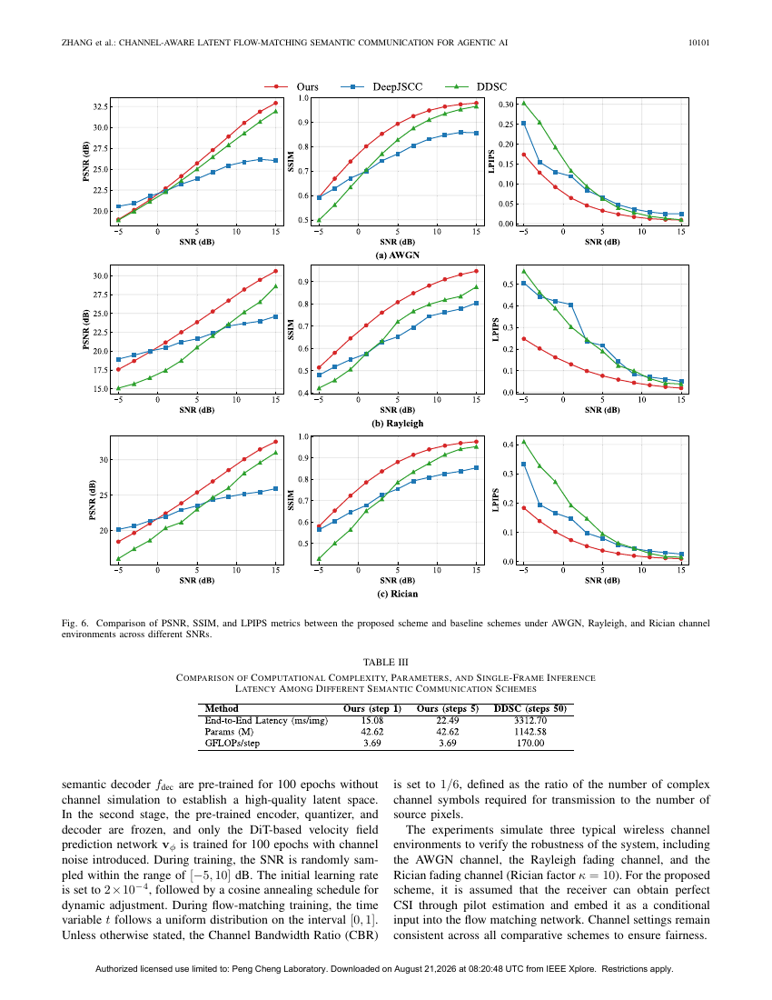</a><figcaption><b>关键结果证据页</b>｜来源：《Channel-Aware Latent Flow-Matching Semantic Communication for Agentic AI》，PDF p.9；原图题/表题：Comparison of PSNR, SSIM, and LPIPS metrics between the proposed scheme and baseline schemes under AWGN, Rayleigh, and Rician channel environments across different SNRs.。 <a href='https://doi.org/10.1109/tccn.2026.3705851'>核对论文</a></figcaption></figure></div>
</article>
<article class="paper" id="complex-valued-linear-discriminant-analysis-on-mmwave-radar-face-signatures-for-task-oriente" data-year="2026" data-tier="core">
  <div class="paper-head"><div><div><span class="tag core">核心纳入</span><span class="tag year">2026</span></div><h2>Complex Valued Linear Discriminant Analysis on mmWave Radar Face Signatures for Task-Oriented Semantic Communication</h2></div><a class="pdf" href="https://doi.org/10.1109/tccn.2025.3598379">DOI / IEEE 页面</a></div>
  <div class="facts"><div><b>作者</b>Simy M. Baby、E. S. Gopi</div><div><b>出版信息</b>Vol. 12, pp. 1892-1904</div><div><b>DOI / IEEE ID</b><a href="https://doi.org/10.1109/tccn.2025.3598379">10.1109/tccn.2025.3598379</a> / 11124273</div><div><b>任务</b>通用/多模态语义通信</div><div><b>技术谱系</b>学习式语义 feature；数字接口需由正文具体实现判定</div><div><b>年份口径</b>formal TCCN volume year</div></div>
  <div class="verdict"><b>是否属于严格数字语义通信：</b>系统层相关；没有足够证据把它判为严格数字语义通信。</div>
  <h3>实验设置</h3><div class="grid3"><div><b>数据集/场景</b>正文未给出可稳定自动定位的条目</div><div><b>Baseline</b>DeepJSCC、HM、FEC、ViT、GAN、PPO、SAC、ASC、JSCC、IB</div><div><b>指标与信道条件</b>MSE、mAP、accuracy、recall、precision、NME、latency、VoI、MOS、WER、CER<br><span class="muted">SNR：0 dB、0dB、30 dB、30dB</span></div></div>
  <h3>Introduction 的六步讲述逻辑</h3><ol class='story'><li><b>已有进展：</b>work, we propose a semantic communication frame- classification performance. work for wireless networks that employs Linear Discriminant The rest of the paper is organized as follows: Section II Analysis (LDA) [18] for semantic feature extraction and discusses the motivation for employing the proposed tech- encoding, which takes a different view from existing works. nique.</li><li><b>现有问题：</b>While these studies demonstrate the versatility and effectiveness of LDA, their application within task-oriented semantic communication systems has remained underex- II.</li><li><b>为何重要：</b>State of the art methods: (a) Method 1: Training mod- the literature, introducing decoupled pretraining frameworks, ule of Information Bottleneck (IB) based semantic communication [15]. where the training of the feature encoder and the precoder is (b) Method 2: Information-Theoretic semantic communication [16] – The encoder is trained to maximize I (T ; Y ) and the precoder is trained performed separately, eliminating the need for joint sampling. to maximize I (P ; Y /S ), Method 3: MCR2 -based semantic communica- As shown in Fig.</li><li><b>提出方案：</b>work, we propose a semantic communication frame- classification performance. work for wireless networks that employs Linear Discriminant The rest of the paper is organized as follows: Section II Analysis (LDA) [18] for semantic feature extraction and discusses the motivation for employing the proposed tech- encoding, which takes a different view from existing works. nique.</li><li><b>解决机制：</b>Section III describes the experimental setup and the LDA has been effectively applied across diverse domains overall framework of the proposed model.</li><li><b>核心主张与证据目标：</b>The I (Z ; Y ) and thus improving classification accuracy.</li></ol>
  <h3>方法、变量与优化</h3><p><b>系统/信息流：</b>PDF p.1：presentation with the channel model, and Reality (AR/VR), Internet of Things (IoT) networks, and may result in high training overhead and reduced interpretability. high-definition video streaming. The rapid growth of data While decoupled pretraining separates encoder and classifier traffic and the increasing demand for wireless applications design, it often faces limitations in adapting to varying tasks make the available spec PDF p.1：ts demonstrate the mission and recognition processes simultaneously is proposed effectiveness of the proposed CLDA+CI framework, achieving in [7]. In [8], a task-oriented semantic communication method a classification accuracy of 96.3%. The performance of the proposed method with Kernel-LDA (KLDA) is also reported for for AI of things is proposed in which semantic coding comparison. and semantic source-channel joint coding sch PDF p.1：semantic communication, linear discriminant analysis, millimeter-wave radar, kernel linear dis- proposed a joint source and channel coding technique that criminant analysis, complex chromatic image. uses two convolutional neural networks to jointly learn the encoder and decoder functions, directly mapping image pixel values to complex-valued channel input symbols for trans- mission. A joint source-channel coding approach for i PDF p.1：mmunication, linear discriminant analysis, millimeter-wave radar, kernel linear dis- proposed a joint source and channel coding technique that criminant analysis, complex chromatic image. uses two convolutional neural networks to jointly learn the encoder and decoder functions, directly mapping image pixel values to complex-valued channel input symbols for trans- mission. A joint source-channel coding approach for image I. I N</p><p><b>目标函数/联合训练证据：</b>PDF p.3：preserve relevant information, while maximizing vector at the receiver improves classification accuracy. The I (Z ; Y ) and thus improving classification accuracy. This encoder neural network is trained as follows: The matrix X is controlled by minimizing the objective function, given as of size r × N with k th column vector is represented as xk . J = H (Y |Z ) + γI (X ; Z ) , where γ ≥ 0 is the weighting xk is mapped to the l</p>
  <h3>数字化方案与传输开销</h3><p><b>传输表示证据：</b>PDF p.3：n the message signal and the encoded vector, preserving rele- vant information, while maximizing the mutual information between the encoded vector and the target variable to improve classification accuracy at the receiver. This training process depends on the quantization levels used to represent zk for transmission, which limits adaptability. A few other end-to-end approaches are also proposed in Fig. 1. State of the art meth PDF p.8：s,KLDA = SE KLDA (u ) (19) m th sample is respectively for LDA and KLDA, where SE(.) denotes sub- Im m s = FM(ẑs ) (22) space semantic extractor. The vector zm s is the semantic feature corresponding to m th sample obtained using LDA/KLDA where FM(.) is the feature mapper, which converts estimated basis as described in Section II-B. These task-relevant feature features into Chromatic Images for efficient decision-making vecto</p><p><b>调制/信道编码线索：</b>ofdm</p><p><b>可复核开销与缺失信息：</b>输入/分辨率线索：32×32、7210 × 10。feature/token/latent 尺寸线索：正文未给出可稳定自动定位的条目。码本线索：正文未给出可稳定自动定位的条目。bit/bpp/速率线索：正文未给出可稳定自动定位的条目。CBR/压缩率线索：Coding Rate Reduction (MCR2 ) in the over a MIMO Rayleigh-fading channel、coding rate reduction theoretic framework, where the data captured from N devices、Coding Rate Reduction,” IEEE Trans。该论文偏系统/理论层，正文未必给出可复核的 encoder feature map 与 payload 长度。</p><div class="formula">\[N_{tx}=N_{payload}+N_{side}+N_{protection};\quad \text{缺失项必须标记为未知}\]</div>
  <h3>信道处理机制</h3><div class="channel"><p><b>分类：</b>类别 5：信道/资源进入系统优化，但 payload 数字化接口不完整</p><p><b>正文信道证据：</b>PDF p.1：munication systems. It is before transmitting.” This approach reduces the amount of observed that the mutual information associated with classifica- tion inference using the encoded data in the proposed technique data exchanged while preserving the semantic effectiveness is higher than that obtained with the original feature data before of the transmitted symbols [1], [2], [3], [4], [5]. Semantic encoding. This confirms the im PDF p.1：original feature data before of the transmitted symbols [1], [2], [3], [4], [5]. Semantic encoding. This confirms the improvement of the inference in information is inherently application-specific, as it involves terms of accuracy. The proposed technique is first evaluated the context, meaning, and task-relevant features needed on synthetic data and then validated on the mmWave Radar to achieve the receiver’s goal [6]. Various PDF p.1：The proposed technique is first evaluated the context, meaning, and task-relevant features needed on synthetic data and then validated on the mmWave Radar to achieve the receiver’s goal [6]. Various deep learning- Face Signatures dataset (206 classes) under a Rayleigh channel model for real-time applicability. At the receiver, we represent based frameworks have been investigated for task-oriented CLDA coefficients as Complex v PDF p.1：nstructed joint improve the performance of the Convolutional Neural Network transmission-recognition scheme that optimizes image trans- (CNN) based classifier. Experimental results demonstrate the mission and recognition processes simultaneously is proposed effectiveness of the proposed CLDA+CI framework, achieving in [7]. In [8], a task-oriented semantic communication method a classification accuracy of 96.3%. The performance</p><p><b>decoder 实际收到：</b>由论文系统模型定义的语义 feature、任务状态或传统译码后数据</p><p><b>是否联合优化：</b>是/部分：目标或训练证据与物理信道同时出现。</p><p><b>是否真正处理 bit/index/token/packet error：</b>未形成可复核的 bit/index/token 错误闭环。</p></div>
  <h3>主要结果、局限与 Codex 判断</h3><p><b>证据化结果：</b>PDF p.1：vehicles, Augmented and Virtual the receiver. Most existing techniques rely on end-to-end learning, which couples data representation with the channel model, and Reality (AR/VR), Internet of Things (IoT) networks, and may result in high training overhead and reduced interpretability. high-definition video streaming. The rapid growth of data While decoupled pretraining separates encoder and classifier traffic and the increasing PDF p.1：g data without interpreting its meaning, Square Error (MMSE) to recover transmitted features, enabling semantic communication uses AI techniques to “understand seamless integration into existing communication systems. It is before transmitting.” This approach reduces the amount of observed that the mutual information associated with classifica- tion inference using the encoded data in the proposed technique data exchanged whil PDF p.1：ems. It is before transmitting.” This approach reduces the amount of observed that the mutual information associated with classifica- tion inference using the encoded data in the proposed technique data exchanged while preserving the semantic effectiveness is higher than that obtained with the original feature data before of the transmitted symbols [1], [2], [3], [4], [5]. Semantic encoding. This confirms the improvement of th PDF p.1：g the encoded data in the proposed technique data exchanged while preserving the semantic effectiveness is higher than that obtained with the original feature data before of the transmitted symbols [1], [2], [3], [4], [5]. Semantic encoding. This confirms the improvement of the inference in information is inherently application-specific, as it involves terms of accuracy. The proposed technique is first evaluated the context, m</p><p><b>独立判断：</b>没有完整离散接口，无法直接回答 bit/index/token 跳变问题。 未显式注入离散误码/丢包，鲁棒性结论不应外推到真实数字链路。</p>
  <div class="figs"><figure><a href='assets/2026_complex-valued-linear-discriminant-analysis-on-mmwave-radar-face-signatures-for-task-oriente_method_p4.png' target='_blank'></a><figcaption><b>架构/方法证据页</b>｜来源：《Complex Valued Linear Discriminant Analysis on mmWave Radar Face Signatures for Task-Oriented Semantic Communication》，PDF p.4；原图题/表题：(a) Proposed methodology on LDA/KLDA based semantic communication (b) Extension to Multi-task based semantic communication using the proposed technique (c) Extension to Multi-source based semantic communication using the proposed technique.。 <a href='https://doi.org/10.1109/tccn.2025.3598379'>核对论文</a></figcaption></figure><figure><a href='assets/2026_complex-valued-linear-discriminant-analysis-on-mmwave-radar-face-signatures-for-task-oriente_result_p8.png' target='_blank'>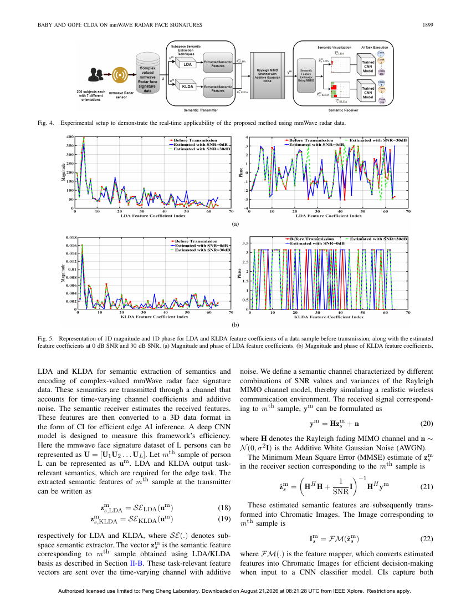</a><figcaption><b>关键结果证据页</b>｜来源：《Complex Valued Linear Discriminant Analysis on mmWave Radar Face Signatures for Task-Oriented Semantic Communication》，PDF p.8；原图题/表题：Experimental setup to demonstrate the real-time applicability of the proposed method using mmWave radar data.。 <a href='https://doi.org/10.1109/tccn.2025.3598379'>核对论文</a></figcaption></figure></div>
</article>
<article class="paper" id="conquering-high-packet-loss-erasure-moe-swin-transformer-based-video-semantic-communication" data-year="2026" data-tier="core">
  <div class="paper-head"><div><div><span class="tag core">核心纳入</span><span class="tag year">2026</span></div><h2>Conquering High Packet-Loss Erasure: MoE Swin Transformer-Based Video Semantic Communication</h2></div><a class="pdf" href="https://doi.org/10.1109/tccn.2026.3705844">DOI / IEEE 页面</a></div>
  <div class="facts"><div><b>作者</b>Lei Teng、Senran Fan、Chen Dong、Haotai Liang、Zhicheng Bao、Xiaodong Xu、Rui Meng、Ping Zhang</div><div><b>出版信息</b>Vol. 12, pp. 9279-9296</div><div><b>DOI / IEEE ID</b><a href="https://doi.org/10.1109/tccn.2026.3705844">10.1109/tccn.2026.3705844</a> / 11573813</div><div><b>任务</b>视频/沉浸媒体无线传输</div><div><b>技术谱系</b>学习式语义 feature；数字接口需由正文具体实现判定</div><div><b>年份口径</b>formal TCCN volume year</div></div>
  <div class="verdict"><b>是否属于严格数字语义通信：</b>系统层相关；没有足够证据把它判为严格数字语义通信。</div>
  <h3>实验设置</h3><div class="grid3"><div><b>数据集/场景</b>Vimeo-90K、UVG、HEVC</div><div><b>Baseline</b>DeepJSCC、VVC、HEVC、H.264、H.265、LDPC、QAM、HM、FEC、Swin Transformer、GAN、PPO、SAC、SwinJSCC、JSCC、IB、CLIP</div><div><b>指标与信道条件</b>PSNR、SSIM、MS-SSIM、MSE、mAP、NME、latency、FLOPs、FPS、throughput、VoI、MOS、WER、CER<br><span class="muted">SNR：0.8 dB、10 dB、20 dB、25 dB、26.169 dB、30 dB</span></div></div>
  <h3>Introduction 的六步讲述逻辑</h3><ol class='story'><li><b>已有进展：</b>To realize a next-generation native AI communication sys- tem and bridge the gap between existing semantic digital communication systems and current digital communication protocols, this semantic video communication system is trained and designed specifically for packet-loss channels, unlike previous AWGN and fading channels.</li><li><b>现有问题：</b>However, most theoretically investigated in this paper, analyzing the existing semantic communication system studies focus on impact of packet length on packet loss rate under direct modulation mapping at the physical layer, neglect- different symbol error rates (SER).</li><li><b>为何重要：</b>Consequently, there is an urgent need robustness under varying SER conditions, approaching for a native AI semantic communication system that can be the performance required by the receiver. applied within existing protocol frameworks and is capable 3) A packet-loss-resistant method is proposed to counter of mitigating semantic erasure channels, namely packet loss semantic loss caused by packet drops, effectively inte- channels. grating the semantic communication paradigm with Previous semantic communication research predominantly existing packet-based digital communication systems. relied on CNNs as the backbone, but a shift toward a new Interleaving is employed to mitigate concentrated backbone is emerging.</li><li><b>提出方案：</b>To address Weaver [2], one year after Shannon proposed informa- this issue, a packet-loss-resistant MoE Swin Transformer-based tion theory [3], identified three levels of communication: Video Semantic Communication (MSTVSC) system is proposed syntactic, semantic, and pragmatic.</li><li><b>解决机制：</b>Semantic vectors are encoded by MSTVSC and cation has primarily been focused on the syntactic level, transmitted through upper-layer protocol packetization.</li><li><b>核心主张与证据目标：</b>The section V presents the simulation video communication, where low latency is critical, and its results, performance comparisons and hardware deployment smaller header (8 bytes versus TCP’s 20 bytes) improves experiment.</li></ol>
  <h3>方法、变量与优化</h3><p><b>系统/信息流：</b>PDF p.2：ure amplitude modulation (QAM), system based on the Swin Transformer is proposed. considering the internal correlation of semantic information, is Videos are divided into Groups of Pictures (GOPs), proposed in [30]. encoded into semantic vectors by a semantic encoder, Although these studies collectively address the application and transmitted via packetization. At the receiver, lost of semantics in digital communication system PDF p.3：TENG et al.: CONQUERING HIGH PACKET-LOSS ERASURE 9281 Fig. 1. The semantic digital communication system model proposed in this paper is depicted by the black arrow in the figure. At the transmitter, source data is encoded by the semantic encoder to generate semantic data. This data is interleaved to form a disordered semantic data vector, which is then segmented into PDF p.3：TENG et al.: CONQUERING HIGH PACKET-LOSS ERASURE 9281 Fig. 1. The semantic digital communication system model proposed in this paper is depicted by the black arrow in the figure. At the transmitter, source data is encoded by the semantic encoder to generate semantic data. This data is interleaved to form a disordered semantic data vector, which is then segmented into semantic data segments (SDS). An application-layer header (A PDF p.3：into application, transport, network, data compression of the semantic information from consec- link, and physical layers. At the transmitter’s application utive compressed video frames, enhancing compression layer, source data X is processed by the semantic encoder efficiency. Φ(·) to yield semantic data X̂, which is then interleaved 6) Extensive simulations and performance comparisons and segmented before being passed to low</p><p><b>目标函数/联合训练证据：</b>PDF p.4：s empirically determined through extensive simulation reconstruction performance at the receiver. A random index experiments, as it is highly dependent on the specific neural generation method is employed to maximize the dispersion of network architecture and end-to-end training strategy and correlated semantic information. To eliminate the overhead of does not admit a tractable closed-form expression. This transmitting indice PDF p.9：ing through the packet loss channel, M each element in the semantic information matrix may be dropped with a given packet loss rate PL , and dropped α Y α = [LM (X, Y )] M · [Cj (X, Y ) · Sj (X, Y )] j , (26) j=1 elements are filled with 0. At this stage, the loss function is defined as: where, M represents different dimensions, including lumi- nance LM (·), contrast Cj (·), and structure Sj (·), while αM LOSS2 = LOSS1 + γ(MSE PDF p.9：nd high fault-tolerant information. Instead, the goal is to train the decoder to capture decoding capability under packet loss scenarios, the training the correlation of semantic information for frame recovery process is divided into two stages with different loss functions. while maintaining video quality at low</p>
  <h3>数字化方案与传输开销</h3><p><b>传输表示证据：</b>PDF p.1：Swin Transformer-Based Video Semantic Communication Lei Teng , Senran Fan, Chen Dong , Haotai Liang , Zhicheng Bao , Xiaodong Xu , Senior Member, IEEE, Rui Meng , Member, IEEE, and Ping Zhang , Fellow, IEEE Abstract—Semantic communication with joint semantic- entropy coding and channel coding faces the cliff effect in channel coding robustly transmits diverse data modalities but harsh communication environments, highlighting t PDF p.4：to reduce redundancy, as error-tolerant transmission protocols tailored for semantic the semantic codec, trained for packet-loss channels, tolerates communication are developed, relying solely on physical layer some packet loss and does not require a lossless bitstream. designs limits the realization of semantic communication’s full potential. Consequently, the impact of communication A. Interleaving parameters on semantic per PDF p.5：. . , XT }, where Xt ∈ RH×W ×3 denotes In this case, the total transmitted data amount Ltotal is: the pixel intensity vector of a frame at time step t in the RGB Ltotal = Np · Plength video, with height H and width W . Compared to images, videos require more tokens to repre- = Np · (Lhead + Ldata ) sent them due to the additional temporal dimension. Therefore, = Np · Lhead + Lorigin , (5) at the initial stage, the entire GOP s PDF p.6：input into the Individual Upsample Module individual semantic features, respectively. to restore the compressed individual features into individual After Xc and Xi are obtained, they are input into the features Yiru with dimensions matching those of the com- quantization module Q(·), where the final normalization is mon features. The individual features Yiru are then added to performed, the number of feature channels is compre</p><p><b>调制/信道编码线索：</b>16qam、bpsk、entropy coding、ldpc</p><p><b>可复核开销与缺失信息：</b>输入/分辨率线索：256 × 256、2560×1440、1920×1080、3840×2160、1920 × 1080、3840 × 2160。feature/token/latent 尺寸线索：正文未给出可稳定自动定位的条目。码本线索：正文未给出可稳定自动定位的条目。bit/bpp/速率线索：3-bit。CBR/压缩率线索：channel bandwidth ratio (CBR) is often where MSE(Xi , Yir ) and MSE(Xc , Ycr ) are introduced、CBR = , (27)、CBR intersecting a threshold plane with the surface representing、CBR at a packet loss rate of 0 is depicted、CBR set to 0、CBRs: The PSNR and MS- efficiency combination of H、CBRs with a packet loss Additionally, MSTVSC closely approaches the perfor、CBR、CBRs packet loss rates, MSTVSC significantly、CBR of 0。该论文偏系统/理论层，正文未必给出可复核的 encoder feature map 与 payload 长度。</p><div class="formula">\[N_{tx}=N_{payload}+N_{side}+N_{protection};\quad \text{缺失项必须标记为未知}\]</div>
  <h3>信道处理机制</h3><div class="channel"><p><b>分类：</b>类别 4/5：离散错误或重传被显式建模，并与语义目标发生耦合</p><p><b>正文信道证据：</b>PDF p.1：Lei Teng , Senran Fan, Chen Dong , Haotai Liang , Zhicheng Bao , Xiaodong Xu , Senior Member, IEEE, Rui Meng , Member, IEEE, and Ping Zhang , Fellow, IEEE Abstract—Semantic communication with joint semantic- entropy coding and channel coding faces the cliff effect in channel coding robustly transmits diverse data modalities but harsh communication environments, highlighting the urgent faces challenges in mitigating semantic in PDF p.1：impact of the packetization, a theoretical analysis of whereas, with the rapid development of artificial intelligence, the packetization strategy is provided. To mitigate the semantic semantic communication based on neural networks, exhibiting loss caused by packet loss, a 3D CNN at the receiver recovers strong noise resistance, has gradually emerged and attracted missing information using un-lost semantic data and a packet- w PDF p.1：s underlying the transmitted information. adopted, with downsampling applied to individual information to In other words, semantic communication can tolerate certain minimize redundancy. The model is lightweighted for practical syntactic-level errors, such as bit errors, provided that semantic deployment. Extensive simulations and comparisons demonstrate distortion remains minimal. Consequently, semantic com- strong performanc PDF p.1：Extensive simulations and comparisons demonstrate distortion remains minimal. Consequently, semantic com- strong performance, achieving an MS-SSIM greater than 0.6 and munication can achieve greater robustness while increasing a PSNR exceeding 20 dB at a 90% packet loss rate. Moreover, it is the first work to conduct real-world semantic communication compression rates, thereby reducing demands on the commu- deployment experime</p><p><b>decoder 实际收到：</b>未丢失的 semantic packets、packet-loss mask，以及由 3D CNN 恢复的缺失语义特征</p><p><b>是否联合优化：</b>是/部分：目标或训练证据与物理信道同时出现。</p><p><b>是否真正处理 bit/index/token/packet error：</b>是：训练/测试显式施加高比例 packet erasure，并用语义交织、loss mask 与 3D CNN 恢复缺失信息。</p></div>
  <h3>主要结果、局限与 Codex 判断</h3><p><b>证据化结果：</b>PDF p.1：rged and attracted missing information using un-lost semantic data and a packet- widespread attention [4], [5], [6]. Unlike traditional com- loss mask matrix. Semantic-level interleaving is employed to munication, semantic communication is primarily concerned reduce concentrated semantic loss from packet drops. To improve compression, a common-individual decomposition approach is with the semantics underlying the transmitted i PDF p.1：antic data and a packet- widespread attention [4], [5], [6]. Unlike traditional com- loss mask matrix. Semantic-level interleaving is employed to munication, semantic communication is primarily concerned reduce concentrated semantic loss from packet drops. To improve compression, a common-individual decomposition approach is with the semantics underlying the transmitted information. adopted, with downsampling applied to indivi PDF p.1：ndex Terms—Packet loss resistant, MoE, Swin transformer, Joint source-channel coding (JSCC) based on deep learning, commonality individuality decomposition. which accounts for channel noise in both source coding and channel coding, exhibits strong robustness against the I. I NTRODUCTION cliff effect, distinguishing it among numerous AI technolo- W ITH the rise of the Internet, vast amounts of data and complex communication env PDF p.2：y be flexibly adjusted according to receiver performance undermining the noise-resistant capabilities of JSCC. Specif- requirements under a fixed SER, followed by reducing ically, packets containing errors are discarded entirely, even the number of packets to reduce head information redun- though the decoding end, trained with JSCC, could potentially dancy. This enables a trade-off between redundancy and handle such errors. Co</p><p><b>独立判断：</b>没有完整离散接口，无法直接回答 bit/index/token 跳变问题。</p>
  <div class="figs"><figure><a href='assets/2026_conquering-high-packet-loss-erasure-moe-swin-transformer-based-video-semantic-communication_method_p6.png' target='_blank'></a><figcaption><b>架构/方法证据页</b>｜来源：《Conquering High Packet-Loss Erasure: MoE Swin Transformer-Based Video Semantic Communication》，PDF p.6；原图题/表题：The overall architecture of our MSTVSC for wireless video transmission.。 <a href='https://doi.org/10.1109/tccn.2026.3705844'>核对论文</a></figcaption></figure><figure><a href='assets/2026_conquering-high-packet-loss-erasure-moe-swin-transformer-based-video-semantic-communication_result_p10.png' target='_blank'>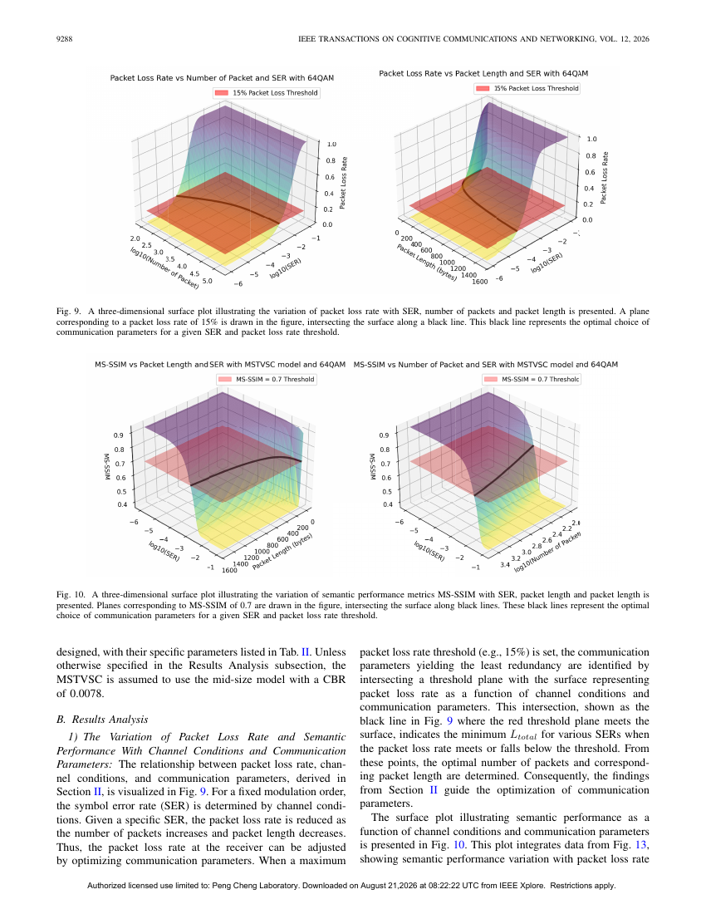</a><figcaption><b>关键结果证据页</b>｜来源：《Conquering High Packet-Loss Erasure: MoE Swin Transformer-Based Video Semantic Communication》，PDF p.10；原图题/表题：This plot integrates data from。 <a href='https://doi.org/10.1109/tccn.2026.3705844'>核对论文</a></figcaption></figure></div>
</article>
<article class="paper" id="content-aware-scheduling-policy-for-goal-oriented-status-updating-with-multiple-sources" data-year="2026" data-tier="core">
  <div class="paper-head"><div><div><span class="tag core">核心纳入</span><span class="tag year">2026</span></div><h2>Content-Aware Scheduling Policy for Goal-Oriented Status Updating With Multiple Sources</h2></div><a class="pdf" href="https://doi.org/10.1109/tccn.2025.3637040">DOI / IEEE 页面</a></div>
  <div class="facts"><div><b>作者</b>Fuzhou Peng、Xijun Wang、Xiang Chen</div><div><b>出版信息</b>Vol. 12, pp. 4277-4289</div><div><b>DOI / IEEE ID</b><a href="https://doi.org/10.1109/tccn.2025.3637040">10.1109/tccn.2025.3637040</a> / 11268476</div><div><b>任务</b>语义网络与资源分配</div><div><b>技术谱系</b>系统/理论层变量；论文未定义统一 payload bitstream</div><div><b>年份口径</b>TCCN Early Access / formal volume pending</div></div>
  <div class="verdict"><b>是否属于严格数字语义通信：</b>系统层相关；没有足够证据把它判为严格数字语义通信。</div>
  <h3>实验设置</h3><div class="grid3"><div><b>数据集/场景</b>正文未给出可稳定自动定位的条目</div><div><b>Baseline</b>HM、FEC、ARQ、ViT、PPO、SAC、IB、HARQ</div><div><b>指标与信道条件</b>FID、MSE、NME、energy、throughput、AoI、AoII、VoI、MOS、WER、CER<br><span class="muted">SNR：正文未给出可稳定自动定位的条目</span></div></div>
  <h3>Introduction 的六步讲述逻辑</h3><ol class='story'><li><b>已有进展：</b>The work [23] studied the signal-aware scheduling policy for • For scenarios with unknown channel delay distributions, remote sampling and estimation of continuous Gauss-Markov we propose an online policy in which each sensor processes.</li><li><b>现有问题：</b>However, they have primarily focused on offline independently updates its internal learning parameter. scenarios, assuming prior knowledge of system parameters, By reformulating the subproblem as a renewal reward while our work is distinguished by considering unknown process and leveraging the monotonicity property of the delay statistics.</li><li><b>为何重要：</b>Additionally, we val- state space dimension [11], making them impractical for idate the optimality of this policy in the special case of large-scale problems.</li><li><b>提出方案：</b>The work [23] studied the signal-aware scheduling policy for • For scenarios with unknown channel delay distributions, remote sampling and estimation of continuous Gauss-Markov we propose an online policy in which each sensor processes.</li><li><b>解决机制：</b>However, they have primarily focused on offline independently updates its internal learning parameter. scenarios, assuming prior knowledge of system parameters, By reformulating the subproblem as a renewal reward while our work is distinguished by considering unknown process and leveraging the monotonicity property of the delay statistics.</li><li><b>核心主张与证据目标：</b>The sensor follows a “generate- of improving system intelligence and efficiency, studies [38] at-will” model and transmits status updates with a constant and [39] concentrated on merging machine learning with com- power C.</li></ol>
  <h3>方法、变量与优化</h3><p><b>系统/信息流：</b>PDF p.3：ysis. Additionally, [27] developed an online learning algorithm for minimizing the MSE in remote estimations, which included convergence rate analysis. However, our work considers the Restless MAB problem with a continuous state space, which is a more Fig. 1. System model. realistic formulation for the practical physical systems and introduces greater analytical challenges. However, these prior works are limited to the single- PDF p.3：wever, vating us to study the content-aware scheduling policy of it has been shown that minimizing AoI is suboptimal compared the goal-oriented status updating system. In this section, to policies that directly optimize the goal-related metrics, we define our system model and formulate the prob- such as mean squared error (MSE), particularly in remote lem as a continuous-time Restless Multi-armed Bandit sampling of the Wiener PDF p.3：remote lem as a continuous-time Restless Multi-armed Bandit sampling of the Wiener process [34] and Ornstein-Uhlenbeck (RMAB) problem. process [35]. To address this limitation, content-aware fresh- ness metrics have been proposed to account for estimation A. System Model errors that are directly relevant to the system’s goal. The In this paper, we consider a goal-oriented status updating authors in [30] used mutual information</p><p><b>目标函数/联合训练证据：</b>PDF p.4：ere current decisions are based Equation (3) reveals the instantaneous PM and stationary behavior on historical and present information. Let Π denote the set of of the Markov process, where i=1 ϕ2i represents the station- all causal policies. We formulate the optimization problem as PM ary distribution, and the instantaneous term i=2 pσi etσi will follows: tend to zero as time increases. N &quot; Z # In practical scenarios, such as PDF p.8：In each frame, sensor n observes Gn,i and Yn,i , and chooses to learn the optimum θn∗ without requiring prior knowledge of a waiting time Zn,i until the next update. the distributions for G and Y . In each frame i, the algorithm Based on these notations, the objective function of subprob- solves the following optimization problem for a given θn,i &quot;Z as follows lem (16) is simplified T # p(θn,i ) = min E[Rn,i − θn,i Tn,i ]. (41 PDF p.8：d chooses to learn the optimum θn∗ without requiring prior knowledge of a waiting time Zn,i until the next update. the distributions for G and Y . In each frame i, the algorithm Based on these notations, the objective function of subprob- solves the following optimization problem for a given θn,i &quot;Z as follows le</p>
  <h3>数字化方案与传输开销</h3><p><b>传输表示证据：</b>系统/理论层变量；论文未定义统一 payload bitstream</p><p><b>调制/信道编码线索：</b>harq</p><p><b>可复核开销与缺失信息：</b>输入/分辨率线索：正文未给出可稳定自动定位的条目。feature/token/latent 尺寸线索：正文未给出可稳定自动定位的条目。码本线索：正文未给出可稳定自动定位的条目。bit/bpp/速率线索：正文未给出可稳定自动定位的条目。CBR/压缩率线索：正文未给出可稳定自动定位的条目。该论文偏系统/理论层，正文未必给出可复核的 encoder feature map 与 payload 长度。</p><div class="formula">\[N_{tx}=N_{payload}+N_{side}+N_{protection};\quad \text{缺失项必须标记为未知}\]</div>
  <h3>信道处理机制</h3><div class="channel"><p><b>分类：</b>类别 5：信道/资源进入系统优化，但 payload 数字化接口不完整</p><p><b>正文信道证据：</b>PDF p.1：nge emerges, i.e., how to that emphasizes the significance of information and its relevance efficiently schedule these multiple sources to guarantee driving to specific goals. This paper studies the goal-oriented scheduling problem with multiple sources. To effectively capture both the safety. However, traditional communication system designs timeliness and content relevance of updates, the Age of Changed primarily focus on re PDF p.2：unchanged content. In contrast II. R ELATED W ORKS to other metrics, AoCI is a content-aware metric that can A. Multi-Source Scheduling Problem be easily computed at the receiver and has demonstrated Prior studies on the multi-source scheduling problem for effectiveness as a goal-related metric, motivating us to adopt minimizing information freshness include [3], [4], [5], [6], [7]. AoCI for evaluating the information effectiv PDF p.2：t the receiver and has demonstrated Prior studies on the multi-source scheduling problem for effectiveness as a goal-related metric, motivating us to adopt minimizing information freshness include [3], [4], [5], [6], [7]. AoCI for evaluating the information effectiveness of received The work [3] studied the peak AoI minimization problem in updates. Consequently, our goal is to develop a scheduling multi-source systems with the PDF p.2：We provide a corresponding B. Online Scheduling Policies performance analysis, showing that the optimality gap Addressing the scheduling problem without prior knowledge between the learning parameter of each source and the of the system parameters requires effective online scheduling optimal value decays at a rate of O(log K/K), where K policies. Some of these approaches rely on reinforcement is the number of frames. learning</p><p><b>decoder 实际收到：</b>由论文系统模型定义的语义 feature、任务状态或传统译码后数据</p><p><b>是否联合优化：</b>是/部分：目标或训练证据与物理信道同时出现。</p><p><b>是否真正处理 bit/index/token/packet error：</b>未形成可复核的 bit/index/token 错误闭环。</p></div>
  <h3>主要结果、局限与 Codex 判断</h3><p><b>证据化结果：</b>PDF p.1：nication performance of the offline policy. Simulation results validate that methods. To address this, the concept of goal-oriented com- the proposed offline policy can achieve significant performance munications, which emphasizes the relevance of transmitted gains in terms of average cost compared to other baseline policies. information to the end task [2], has emerged as a promising Furthermore, in the online setting, the le PDF p.2：rm expression. Our results generalize and policy in a multi-user broadcast system with unreliable chan- unify several existing works. Specifically, when the chan- nels. The Whittle index policy for the remote state estimation nel delay is constant, our result reduces to the special case scenario was explored in [22]. These Whittle index policies are analyzed by Wang et al. [16]. Under the assumption of often tailored for the t PDF p.2：s rely on reinforcement is the number of frames. learning (RL) algorithms [8], [9], [10], which iteratively • Simulation results demonstrate that, in the offline sce- update value functions or neural network parameters. How- nario, the proposed offline policy outperforms several ever, their regret typically grows linearly concerning the existing content-agnostic policies. Additionally, we val- state space dimension [11], makin PDF p.2：process (MDP) and analyzing the value and the online policy study is located in Section V. Simulation function’s properties. By this insight, the works [14], [15] results are located in Section VI. Section VII concludes exploited the structural properties to improve convergence this paper. rates. Furthermore, online learning in status updating with Authorized licensed use limited to: Peng Cheng Laboratory. Downloaded on August</p><p><b>独立判断：</b>没有完整离散接口，无法直接回答 bit/index/token 跳变问题。 未显式注入离散误码/丢包，鲁棒性结论不应外推到真实数字链路。 未报告统一可复核的 payload bit 数/CBR，跨论文带宽比较受限。</p>
  <div class="figs"><figure><a href='assets/2026_content-aware-scheduling-policy-for-goal-oriented-status-updating-with-multiple-sources_method_p10.png' target='_blank'></a><figcaption><b>架构/方法证据页</b>｜来源：《Content-Aware Scheduling Policy for Goal-Oriented Status Updating With Multiple Sources》，PDF p.10；原图题/表题：depicts the impact of the power consumption param- proposed online policy.。 <a href='https://doi.org/10.1109/tccn.2025.3637040'>核对论文</a></figcaption></figure><figure><a href='assets/2026_content-aware-scheduling-policy-for-goal-oriented-status-updating-with-multiple-sources_result_p11.png' target='_blank'></a><figcaption><b>关键结果证据页</b>｜来源：《Content-Aware Scheduling Policy for Goal-Oriented Status Updating With Multiple Sources》，PDF p.11；原图题/表题：Comparison of average cost vs. pr under different settings.。 <a href='https://doi.org/10.1109/tccn.2025.3637040'>核对论文</a></figcaption></figure></div>
</article>
<article class="paper" id="convolutional-autoencoder-enhanced-semantic-communication-in-optical-fiber-systems" data-year="2026" data-tier="core">
  <div class="paper-head"><div><div><span class="tag core">核心纳入</span><span class="tag year">2026</span></div><h2>Convolutional Autoencoder-Enhanced Semantic Communication in Optical Fiber Systems</h2></div><a class="pdf" href="https://doi.org/10.1109/tccn.2026.3677171">DOI / IEEE 页面</a></div>
  <div class="facts"><div><b>作者</b>Xiaomin Cai、Fengyuan Tian、Yunfan Zhang、Sergei Popov、Gan Zheng、Tianhua Xu</div><div><b>出版信息</b>Vol. 12, pp. 6942-6954</div><div><b>DOI / IEEE ID</b><a href="https://doi.org/10.1109/tccn.2026.3677171">10.1109/tccn.2026.3677171</a> / 11455253</div><div><b>任务</b>通用/多模态语义通信</div><div><b>技术谱系</b>学习式语义 feature；数字接口需由正文具体实现判定</div><div><b>年份口径</b>formal TCCN volume year</div></div>
  <div class="verdict"><b>是否属于严格数字语义通信：</b>系统层相关；没有足够证据把它判为严格数字语义通信。</div>
  <h3>实验设置</h3><div class="grid3"><div><b>数据集/场景</b>HEVC、MNIST</div><div><b>Baseline</b>JPEG、HEVC、QAM、HM、FEC、GAN、PPO、SAC、JSCC、IB</div><div><b>指标与信道条件</b>PSNR、SSIM、FID、MSE、mAP、accuracy、recall、precision、NME、latency、energy、MOS、WER、CER<br><span class="muted">SNR：0 dB、0.2 dB、13 dB、15 dB、5 dB</span></div></div>
  <h3>Introduction 的六步讲述逻辑</h3><ol class='story'><li><b>已有进展：</b>IST, Blood-MNIST, and els also exhibit strong generalization, requiring only minor Oct-MNIST datasets.</li><li><b>现有问题：</b>Paper Organization designed for semantic compression with adjustable compres- The remainder of this paper is organized as follows.</li><li><b>为何重要：</b>To accu- to balance transmission efficiency with semantic accuracy rately model the complex impairments in optical channels, across diverse communication scenarios, making it a promis- such as chromatic dispersion, ASE noise, and nonlinear ing candidate for future optical communication frameworks. effects, the EGN model is utilized.</li><li><b>提出方案：</b>In the realm of semantic communication systems, we propose two complementary variants of convolutional autoen- coders, each meticulously designed to address distinct chal- A.</li><li><b>解决机制：</b>Optical Channel Modelling lenges in signal processing and transmission.</li><li><b>核心主张与证据目标：</b>1, comprises an encoder-decoder framework that 8 γ2 NLeff  π  2  demonstrates remarkable efficacy in semantic communication. η(N, Nch ) ≈ ∗ N asinh 2 2 |β2 |Leff Nch R The encoder, consisting of multiple convolutional layers fol- 27π |β2 |R2 2     lowed by batch normalization and ReLU activation functions, 10Leff Nch − 1 −χ HN +1 . (2) systematically reduces spatial dimensions whilst extracting 3L 2 salient features.</li></ol>
  <h3>方法、变量与优化</h3><p><b>系统/信息流：</b>PDF p.1：6942 IEEE TRANSACTIONS ON COGNITIVE COMMUNICATIONS AND NETWORKING, VOL. 12, 2026 Convolutional Autoencoder-Enhanced Semantic Communication in Optical Fiber Systems Xiaomin Cai , Student Member, IEEE, Fengyuan Tian , Student Member, IEEE, Yunfan Zhang, Sergei Popov , Senior Member, IEEE, Gan Zheng , Fellow, IEEE, and Tianhua Xu , Member, IEEE Abstract—With the expo PDF p.1：low-bandwidth (EGN) model, which is specifically designed to accurately collaborative platforms. simulate and capture the unique characteristics of the optical Index Terms—Semantic communication, optical fiber commu- fiber channel. nication, convolutional autoencoder, deep learning. A. Related Work Received 20 March 2025; revised 14 November 2025 and 23 January 2026; accepted 15 March 2026. Date of publication 24 March 2026; d PDF p.2：tion with optical fiber systems, addressing channel, achieving a peak SSIM of approximately 0.84 on the unique challenges posed by optical channel impairments video data. Despite the different task domain (video/wireless through a dual-model convolutional autoencoder design. By vs. image/optical), our CAE-1 denoising model surpasses this integrating the EGN model, the proposed system achieves by over 20% in SSIM, and even our PDF p.2：challenges posed by optical channel impairments video data. Despite the different task domain (video/wireless through a dual-model convolutional autoencoder design. By vs. image/optical), our CAE-1 denoising model surpasses this integrating the EGN model, the proposed system achieves by over 20% in SSIM, and even our compressed CAE- precise channel characterization, enabling accurate simulation 4 configuration shows about a 10</p><p><b>目标函数/联合训练证据：</b>正文未被规则稳定定位到显式 objective；应结合方法公式页复核。</p>
  <h3>数字化方案与传输开销</h3><p><b>传输表示证据：</b>PDF p.3：inciple of Joint Source–Channel Integration with the CAE Pipeline: Coding (JSCC) [10], [11] to achieve integrated optimization • Step 1–Encoding: The CAE encoder compresses the input of image compression and noise resilience. Unlike traditional image and maps latent features onto 16-QAM symbols. layered systems of source coding–channel coding–modulation, • Step 2–Transmission: The modulated signal passes JSCC directly maps ima PDF p.3：eatures onto 16-QAM symbols. layered systems of source coding–channel coding–modulation, • Step 2–Transmission: The modulated signal passes JSCC directly maps image pixels or features into complex- through the EGN-based optical channel, where ASE noise valued channel symbols and reconstructs the image at the and nonlinear interference are introduced as described receiver using a neural decoder. The proposed deep JSCC above. fr PDF p.6：of the EGN model used in this study. transformed into a 2 channel complex signal. This complex structure, allowing a comprehensive evaluation of compression representation undergoes a digital modulation step, where it is adaptability under different domains. quantized to the nearest of 16 predefined constellation points in For the CAE-1 denoising model, we further introduced a 16-QAM scheme. After normalization, the resulting PDF p.7：connections both the transmitter and receiver. Through deep convolutional to preserve crucial feature information whilst implementing encoding, the transmitter compresses the raw image into com- progressive feature extraction through convolutional opera- pact latent features that capture the most visually significant tions and batch normalization. The distinctive noise reduction structures and semantics, thereby reducing the a</p><p><b>调制/信道编码线索：</b>16-qam、16qam、bpsk、convolutional code、ofdm、qpsk</p><p><b>可复核开销与缺失信息：</b>输入/分辨率线索：28×28。feature/token/latent 尺寸线索：正文未给出可稳定自动定位的条目。码本线索：constellation points in For the CAE-1、constellation 4、constellation point 6、constellation, facilitating efficient signal transmis- 24、constellation size (16。bit/bpp/速率线索：正文未给出可稳定自动定位的条目。CBR/压缩率线索：compression ratios, offers a promising direction for next-generation optical com-、code rate of 1/2 under an AWGN channel,、compression ratios up to、compression ratio from 2:1 N primarily focuses on semantic compression, significantly、compression ratios from 2:1 to 98:1, ensuring efficient band-、compression ratio, is D、compression ratios and signal-to-noise conditions、compression ratio, specializes in、compression ratios、compression ratios ranging from x2, x4, x8,。该论文偏系统/理论层，正文未必给出可复核的 encoder feature map 与 payload 长度。</p><div class="formula">\[N_{tx}=N_{payload}+N_{side}+N_{protection};\quad \text{缺失项必须标记为未知}\]</div>
  <h3>信道处理机制</h3><div class="channel"><p><b>分类：</b>类别 5：信道/资源进入系统优化，但 payload 数字化接口不完整</p><p><b>正文信道证据：</b>PDF p.1：ication systems. Traditional digital commu- ing the data load without sacrificing meaningful transmission. The Enhanced Gaussian Noise (EGN) model is employed to nication approaches, while reliable, often face challenges in accurately simulate optical fiber effects, ensuring realistic perfor- achieving optimal efficiency due to their reliance on bit- mance evaluation. Experimental results demonstrate that CAE-1 level processin PDF p.1：on for next-generation optical com- demonstrating its capability to significantly enhance bandwidth munication systems. However, current implementations of utilization while preserving semantic integrity. In addition to semantic communication largely focus on wireless channels using MNIST for foundational training, this study also utilized [4]. Specifically, the channel models used are often overly other datasets for training PDF p.1：tasets for training and validation, including medical simplistic and singular, typically employing only additive datasets, in both high-definition and standard-definition for- mats. The results demonstrate that our model possesses strong white Gaussian noise (AWGN) or Rayleigh fading. Such generalization capabilities. New datasets require very few train- simplified approaches are fundamentally inadequate for optical ing epochs PDF p.1：r training and validation, including medical simplistic and singular, typically employing only additive datasets, in both high-definition and standard-definition for- mats. The results demonstrate that our model possesses strong white Gaussian noise (AWGN) or Rayleigh fading. Such generalization capabilities. New datasets require very few train- simplified approaches are fundamentally inadequate for optical ing epochs to achie</p><p><b>decoder 实际收到：</b>由论文系统模型定义的语义 feature、任务状态或传统译码后数据</p><p><b>是否联合优化：</b>未检出明确的端到端信道联合优化证据。</p><p><b>是否真正处理 bit/index/token/packet error：</b>未形成可复核的 bit/index/token 错误闭环。</p></div>
  <h3>主要结果、局限与 Codex 判断</h3><p><b>证据化结果：</b>PDF p.1：rom 2:1 to 98:1, and CAE-1, which focuses on centers, imposing a significant limitation on the technology high-precision denoising to mitigate optical channel impairments. that can be implemented [2]. The exponential growth of data The CAE-N model selectively reduces redundant information traffic in optical fiber networks has driven the need for more while retaining essential semantic content, significantly lower- efficient co PDF p.1：ately simulate optical fiber effects, ensuring realistic perfor- achieving optimal efficiency due to their reliance on bit- mance evaluation. Experimental results demonstrate that CAE-1 level processing and rigid adherence to Shannon capacity achieves a 28.9% improvement in Structural Similarity Index constraints [3]. Semantic communication, which focuses on (SSIM) over conventional transmission methods, ensuring high- conveyi PDF p.1：unication, optical fiber commu- fiber channel. nication, convolutional autoencoder, deep learning. A. Related Work Received 20 March 2025; revised 14 November 2025 and 23 January 2026; accepted 15 March 2026. Date of publication 24 March 2026; date of current Compared with prior deep learning based communication version 31 March 2026. This work is supported by EU Horizon 2020 Grant frameworks, our proposed CAE system provides PDF p.1：ding a much broader Sergei Popov is with the KTH Royal Institute of Technology, 164 40 Stockholm, Sweden. operational range and higher reconstruction fidelity. The study Digital Object Identifier 10.1109/TCCN.2026.3677171 [6] achieves 2 − 4× bandwidth savings compared with JPEG, 2332-7731 © 2026 IEEE. All rights reserved, including rights for text and data mining, and training of artificial intelligence and similar technologie</p><p><b>独立判断：</b>没有完整离散接口，无法直接回答 bit/index/token 跳变问题。 未显式注入离散误码/丢包，鲁棒性结论不应外推到真实数字链路。</p>
  <div class="figs"><figure><a href='assets/2026_convolutional-autoencoder-enhanced-semantic-communication-in-optical-fiber-systems_method_p9.png' target='_blank'></a><figcaption><b>架构/方法证据页</b>｜来源：《Convolutional Autoencoder-Enhanced Semantic Communication in Optical Fiber Systems》，PDF p.9；原图题/表题：CAE-4: Comparison of reconstruction effects. Top: Original image; Middle: Image after channel; Bottom: Reconstructed image.。 <a href='https://doi.org/10.1109/tccn.2026.3677171'>核对论文</a></figcaption></figure><figure><a href='assets/2026_convolutional-autoencoder-enhanced-semantic-communication-in-optical-fiber-systems_result_p10.png' target='_blank'></a><figcaption><b>关键结果证据页</b>｜来源：《Convolutional Autoencoder-Enhanced Semantic Communication in Optical Fiber Systems》，PDF p.10；原图题/表题：CAE-4: Comparison of reconstruction effects. Top: Original image; Middle: Image after channel; Bottom: Reconstructed image.。 <a href='https://doi.org/10.1109/tccn.2026.3677171'>核对论文</a></figcaption></figure></div>
</article>
<article class="paper" id="cross-domain-semantic-image-communication-empowered-by-leo-embodied-intelligence" data-year="2026" data-tier="core">
  <div class="paper-head"><div><div><span class="tag core">核心纳入</span><span class="tag year">2026</span></div><h2>Cross-Domain Semantic Image Communication Empowered by LEO Embodied Intelligence</h2></div><a class="pdf" href="https://doi.org/10.1109/tccn.2026.3695848">DOI / IEEE 页面</a></div>
  <div class="facts"><div><b>作者</b>Yunze Zhang、Chaowei Wang、Wenyuan Wang、Zhi Zhang、Wenjun Xu、Fan Jiang、Lexi Xu</div><div><b>出版信息</b>Vol. 12, pp. 8402-8414</div><div><b>DOI / IEEE ID</b><a href="https://doi.org/10.1109/tccn.2026.3695848">10.1109/tccn.2026.3695848</a> / 11534317</div><div><b>任务</b>图像语义传输或重建</div><div><b>技术谱系</b>学习式语义 feature；数字接口需由正文具体实现判定</div><div><b>年份口径</b>TCCN Early Access / formal volume pending</div></div>
  <div class="verdict"><b>是否属于严格数字语义通信：</b>系统层相关；没有足够证据把它判为严格数字语义通信。</div>
  <h3>实验设置</h3><div class="grid3"><div><b>数据集/场景</b>Kodak、CLIC、DIV2K</div><div><b>Baseline</b>DeepJSCC、NTSCC、WITT、JPEG、BPG、LDPC、HM、FEC、ARQ、Swin Transformer、ViT、GAN、PPO、SAC、DeepMA、SwinJSCC、ADJSCC、JSCC、IB、HARQ、CLIP</div><div><b>指标与信道条件</b>PSNR、SSIM、MS-SSIM、LPIPS、FID、bitrate、MSE、mAP、accuracy、NME、latency、energy、FLOPs、semantic similarity、MOS、WER<br><span class="muted">SNR：12 dB、2 dB、4 dB</span></div></div>
  <h3>Introduction 的六步讲述逻辑</h3><ol class='story'><li><b>已有进展：</b>ed has predominantly focused on physical layer optimization, by Transformers’ quadratic complexity on satellites and lack adaptive transmission, and channel prediction.</li><li><b>现有问题：</b>ed has predominantly focused on physical layer optimization, by Transformers’ quadratic complexity on satellites and lack adaptive transmission, and channel prediction.</li><li><b>为何重要：</b>By picking infor- diction, Zhang et al. [15] utilized a hybrid convolutional mation critical to downlink machine tasks like object detection neural network (CNN) and recurrent neural network (RNN) and collaborative decision-making, this mechanism guarantees architecture to facilitate accurate time-series forecasting of a robust and efficient perception-action. channel state information (CSI).</li><li><b>提出方案：</b>To address adaptability to severe disturbances. bandwidth constraints, Li et al. [14] integrated variable coding 3) Semantic Transmission in NTN: To overcome the lim- and modulation (VCM) with orthogonal frequency division itations of satellite-to-ground links in NTN, space-based multiplexing (OFDM), achieving high spectral efficiency while embodied agents employ shared knowledge bases (KBs) and mitigating Doppler impairments.</li><li><b>解决机制：</b>Regarding channel state pre- DNNs for source-side semantic extraction.</li><li><b>核心主张与证据目标：</b>The proposed framework is introduced in Section III. satellite and the user is modeled as follows: In Section IV, extensive simulation results are presented to r r ! demonstrate the performance of the proposed scheme.</li></ol>
  <h3>方法、变量与优化</h3><p><b>系统/信息流：</b>PDF p.1：work based on a hybrid Mamba-Transformer agents autonomously perform Earth observation within phys- architecture. By incorporating Mamba modules characterized ical environments, serving critical sectors such as disaster by linear computational complexity, the proposed framework response, meteorological monitoring, agricultural assessment, effectively captures long-range spatial dependencies inherent in and military reconnaissa PDF p.2：rces that are range dependencies. For extremely low-bitrate scenarios, severely scarce and characterized by resource heterogeneity. Erdemir et al. [22] employed generative adversarial networks Although current semantic encoding methodologies based on (GAN) as decoders, exploiting generative priors to generate conventional models or complex Transformers demonstrate missing textures and enhance perceptual quality. superior perfo PDF p.3：odules for local texture extraction, this syner- gistic design maximizes semantic representation while significantly reducing FLOPs and memory footprint com- pared to traditional Transformer models. • A CSI-free robust transmission mechanism is devel- Fig. 1. System model of the space-based cooperative perception network. oped for dynamic LEO satellite-to-ground links. With the mixed-SNR adversarial training strategy, the mode PDF p.3：osition of a deterministic line-of-sight (LoS) component of PSNR and MS-SSIM. and stochastic multipath scattering components. The remainder of this paper is organized as follows. Adopting the block-fading assumption within each coher- Section II describes the system model and formulates the ence interval, the channel vector h ∈ CL×1 between the problem. The proposed framework is introduced in Section III. satellite and the use</p><p><b>目标函数/联合训练证据：</b>PDF p.5：8406 IEEE TRANSACTIONS ON COGNITIVE COMMUNICATIONS AND NETWORKING, VOL. 12, 2026 Fig. 3. Implementation of the proposed Mamba-Transformer satellite image transmission framework. optimizing the network parameters θ and φ via a loss function block incorporates convolutional layers, batch normalization L. The specific design of the loss function L is detailed in (BN), and the GELU activation function: Section III. ẑ = GELU(BN(Co PDF p.5：12, 2026 Fig. 3. Implementation of the proposed Mamba-Transformer satellite image transmission framework. optimizing the network parameters θ and φ via a loss function block incorporates convolutional layers, batch normalization L. The specific design of the loss function L is detailed in (BN), and the GELU activation function: Section III. ẑ = GELU(BN(Conv3×3 (z))), z = BN(Conv3×3 (ẑ)) + z. (13) III. H YBRID M AMBA -T RANSF PDF p.7：serves as the self- Input: Training dataset D, Encoder Eθ , Decoder Dφ , Max attention module for the subsequent N/2 layers. SNR γmax , Min SNR γmin , Learning rates η1 &gt; η2 . Output: Optimized parameters θ∗ , φ∗ . 1: Phase 1: Semantic Anchor Optimization C. Loss Function and Model Training 2: Initialize paramete</p>
  <h3>数字化方案与传输开销</h3><p><b>传输表示证据：</b>PDF p.1：-mail: perception below a channel threshold. Conversely, Gen- wangchaowei@bupt.edu.cn; zhangzhi@bupt.edu.cn). erative Semantic Communication offers a paradigm shift. Wenjun Xu is with the State Key Laboratory of Networking and Switching Instead of replicating bitstreams, it utilizes deep neural net- Technology, Beijing 100876, China (e-mail: wjxu@bupt.edu.cn). Fan Jiang is with Shaanxi Key Laboratory of Information Communicati PDF p.4：- ciently process wide-swath imagery under limited on-board computational capacity, the encoder Eθ (·) adopts a hybrid Mamba-Transformer architecture. Leveraging the linear com- putational complexity of SSM, the Mamba module efficiently models high-resolution feature maps to capture long-range spatial dependencies—such as mountain ranges, river courses, and urban layouts—without incurring excessive memory over- Fig. 2. System PDF p.4：hicles, vessels, and building edges. These com- where Gt and Gr denote the transmit and receive antenna ponents are integrated via a feature fusion layer to generate gains, c is the speed of light, fc is the carrier frequency, and d compact, semantically rich latent feature vectors, with the represents the instantaneous slant range between the satellite encoding process formulated as: and the terminal. Combined with the transm PDF p.5：olutional patch embedding module first maps The decoder, featuring a structure symmetric to that of the image into feature embeddings with dimensions of H the encoder, incorporates corresponding HMT blocks, con- 2 × W × C. Subsequently, these high-dimensional feature maps volutional blocks, and up-sampling layers. Finally, a patch 2 are fed into a four-stage encoder. Throughout these stages, unembedding layer maps the restored</p><p><b>调制/信道编码线索：</b>harq、ldpc、ofdm</p><p><b>可复核开销与缺失信息：</b>输入/分辨率线索：16 × 16、32 × 32、600 × 600、256×256、224 × 224。feature/token/latent 尺寸线索：正文未给出可稳定自动定位的条目。码本线索：正文未给出可稳定自动定位的条目。bit/bpp/速率线索：Mbps、8-bit。CBR/压缩率线索：channel bandwidth ratio、CBR) is defined as k/(H × W × 3)、CBR is、CBR is given by R = CH 3HW、CBR can be、CBR ∈ {1/32, 1/16, 1/12, 1/8}、CBR、CBR of 1/12、CBRs、CBR on the Kodak dataset, with the SNR fixed at 4 dB。该论文偏系统/理论层，正文未必给出可复核的 encoder feature map 与 payload 长度。</p><div class="formula">\[N_{tx}=N_{payload}+N_{side}+N_{protection};\quad \text{缺失项必须标记为未知}\]</div>
  <h3>信道处理机制</h3><div class="channel"><p><b>分类：</b>类别 5：信道/资源进入系统优化，但 payload 数字化接口不完整</p><p><b>正文信道证据：</b>PDF p.1：ion within phys- architecture. By incorporating Mamba modules characterized ical environments, serving critical sectors such as disaster by linear computational complexity, the proposed framework response, meteorological monitoring, agricultural assessment, effectively captures long-range spatial dependencies inherent in and military reconnaissance [5]. Notably, during a single remote sensing images. Furthermore, an implicit m PDF p.1：naissance [5]. Notably, during a single remote sensing images. Furthermore, an implicit minimax opti- mization strategy is integrated to enhance the intrinsic robustness orbital pass, these sensors can generate gigabytes of obser- of the feature space against channel noise, thereby facilitating vational data. This massive visual sensory data serves as graceful performance degradation over satellite-to-ground links. the foundat PDF p.1：ul performance degradation over satellite-to-ground links. the foundation for space-ground collaboration and real-time Simulation results on diverse datasets demonstrate that the pro- decision-making [6]. posed scheme significantly outperforms traditional BPG+LDPC However, despite the explosive surge in data generation, schemes and state-of-the-art deep learning methods in terms of PSNR, MS-SSIM, and LPIPS metrics. Notably, th PDF p.1：CI) [9]. Furthermore, stochastic factors such as atmospheric turbulence and rain attenuation further exac- erbate signal distortion. Although techniques like hybrid as a primary pursuit for next-generation mobile communi- automatic repeat request (HARQ) are effective in terrestrial cation systems, evolving into the neural system supporting networks, due to the inherent high latency of satellite-to- Ubiquitous Embodied Intellig</p><p><b>decoder 实际收到：</b>由论文系统模型定义的语义 feature、任务状态或传统译码后数据</p><p><b>是否联合优化：</b>是/部分：目标或训练证据与物理信道同时出现。</p><p><b>是否真正处理 bit/index/token/packet error：</b>未形成可复核的 bit/index/token 错误闭环。</p></div>
  <h3>主要结果、局限与 Codex 判断</h3><p><b>证据化结果：</b>PDF p.1：y reconnaissance [5]. Notably, during a single remote sensing images. Furthermore, an implicit minimax opti- mization strategy is integrated to enhance the intrinsic robustness orbital pass, these sensors can generate gigabytes of obser- of the feature space against channel noise, thereby facilitating vational data. This massive visual sensory data serves as graceful performance degradation over satellite-to-ground links. the PDF p.1：ensory data serves as graceful performance degradation over satellite-to-ground links. the foundation for space-ground collaboration and real-time Simulation results on diverse datasets demonstrate that the pro- decision-making [6]. posed scheme significantly outperforms traditional BPG+LDPC However, despite the explosive surge in data generation, schemes and state-of-the-art deep learning methods in terms of PSNR, MS-SSIM, an PDF p.2：y enhancing selective channels into the delay-Doppler domain. However, physical layer authentication robustness. Jiang et al. [27] reliable connectivity alone is insufficient for intelligent tasks. proposed the FM-SAT framework for low-bitrate scenar- Despite improved physical reliability, these works remain ios. By utilizing foundation models like segment anything bound by a bit-oriented paradigm focused on minimizing bit mod PDF p.3：ages to unseen aerial views without fine-tuning. Evalu- energy attenuation over the propagation distance, while small- ations on the AID dataset demonstrate that the proposed scale Rician fading models signal fluctuations arising from the scheme significantly outperforms BPG+LDPC in terms superposition of a deterministic line-of-sight (LoS) component of PSNR and MS-SSIM. and stochastic multipath scattering components. The rema</p><p><b>独立判断：</b>没有完整离散接口，无法直接回答 bit/index/token 跳变问题。 未显式注入离散误码/丢包，鲁棒性结论不应外推到真实数字链路。</p>
  <div class="figs"><figure><a href='assets/2026_cross-domain-semantic-image-communication-empowered-by-leo-embodied-intelligence_method_p5.png' target='_blank'></a><figcaption><b>架构/方法证据页</b>｜来源：《Cross-Domain Semantic Image Communication Empowered by LEO Embodied Intelligence》，PDF p.5；原图题/表题：Implementation of the proposed Mamba-Transformer satellite image transmission framework.。 <a href='https://doi.org/10.1109/tccn.2026.3695848'>核对论文</a></figcaption></figure><figure><a href='assets/2026_cross-domain-semantic-image-communication-empowered-by-leo-embodied-intelligence_result_p9.png' target='_blank'></a><figcaption><b>关键结果证据页</b>｜来源：《Cross-Domain Semantic Image Communication Empowered by LEO Embodied Intelligence》，PDF p.9；原图题/表题：(a)∼(c) PSNR, (d)∼(f) MS-SSIM, and (g)∼(i) LPIPS performance of different models versus the SNR over the satellite–terrestrial channel across CLIC2021, Kodak, and DIV2K datasets with target CBR of 1/12.。 <a href='https://doi.org/10.1109/tccn.2026.3695848'>核对论文</a></figcaption></figure></div>
</article>
<article class="paper" id="d-sic-energy-efficient-digital-semantic-image-communication-via-large-generative-models" data-year="2026" data-tier="core">
  <div class="paper-head"><div><div><span class="tag core">核心纳入</span><span class="tag year">2026</span></div><h2>D-SIC: Energy-Efficient Digital Semantic Image Communication via Large Generative Models</h2></div><a class="pdf" href="https://doi.org/10.1109/tccn.2026.3706089">DOI / IEEE 页面</a></div>
  <div class="facts"><div><b>作者</b>Bilal Khalid、Jaroslaw E. Prilepsky、Sergei K. Turitsyn、Pedro Freire</div><div><b>出版信息</b>Vol. 12, pp. 9114-9129</div><div><b>DOI / IEEE ID</b><a href="https://doi.org/10.1109/tccn.2026.3706089">10.1109/tccn.2026.3706089</a> / 11574682</div><div><b>任务</b>图像语义传输或重建</div><div><b>技术谱系</b>量化 feature、bitstream 或数字调制符号</div><div><b>年份口径</b>formal TCCN volume year</div></div>
  <div class="verdict"><b>是否属于严格数字语义通信：</b>是或部分是：正文存在离散/量化接口；仍需检查它是否真的承受 bit/index error。</div>
  <h3>实验设置</h3><div class="grid3"><div><b>数据集/场景</b>DIV2K、Cityscapes</div><div><b>Baseline</b>DeepJSCC、WITT、JPEG、JPEG2000、BPG、LDPC、Polar、QAM、HM、FEC、Swin Transformer、ViT、GAN、PPO、SAC、ASC、DeepMA、SwinJSCC、JSCC、SSCC、IB</div><div><b>指标与信道条件</b>PSNR、SSIM、LPIPS、FID、bitrate、MSE、mAP、accuracy、precision、NME、latency、energy、VoI、MOS、WER、CER<br><span class="muted">SNR：1 dB、10 dB、2 dB、2.64 dB、20 dB、30 dB、35 dB</span></div></div>
  <h3>Introduction 的六步讲述逻辑</h3><ol class='story'><li><b>已有进展：</b>model achieves both faster and higher-fidelity image coding, and modulation components.</li><li><b>现有问题：</b>This lack of modularity reconstruction as compared to Stable Diffusion.</li><li><b>为何重要：</b>The present results in inflexible designs that necessitate re-training to work is a significant extension of those findings, transitioning adapt to different channel conditions and modulation schemes. from an idealized analog context to a practical, robust, and Such a requirement is computationally expensive and imprac- digitally compatible framework.</li><li><b>提出方案：</b>Moreover, it is unable to incorporate a modular digital SIC framework based on SSCC that rapid advancements from the broader machine learning com- allows for independent component optimization and com- munity, such as state-of-the-art, pre-trained foundation models patibility with existing digital communication systems. that could otherwise be used for source encoding or data • We introduce a Channel-Aware Diffusion Model reconstruction. (CADM) that accepts CSI as a direct conditioning, In this work, we advocate for Separate Source-Channel enabling robust image reconstruction over fading Coding (SSCC)-based digital SemCom systems that can channels.</li><li><b>解决机制：</b>We further introduce a Lightweight Denoising efficiently harness the power of foundation models for seman- Neural Network (LDNN) that provides a refined latent tic communication tasks.</li><li><b>核心主张与证据目标：</b>The resulting LS channel estimate P = |Xi |2 ≤ 1. (2) k i=1 can be calculated as [47]: B.</li></ol>
  <h3>方法、变量与优化</h3><p><b>系统/信息流：</b>PDF p.1：literature in this domain is built ified architecture of Stable Cascade. The main Channel-Aware upon the principle of Joint Source-Channel Coding (JSCC). Diffusion Model (CADM) is conditioned on both Channel State This allows for the joint optimization of the encoder and Information (CSI) and corrupted image embeddings, allowing decoder to directly maximize the fidelity of the recovered it to effectively mitigate channel-induc PDF p.1：. The main Channel-Aware upon the principle of Joint Source-Channel Coding (JSCC). Diffusion Model (CADM) is conditioned on both Channel State This allows for the joint optimization of the encoder and Information (CSI) and corrupted image embeddings, allowing decoder to directly maximize the fidelity of the recovered it to effectively mitigate channel-induced distortions. To further improve reconstruction fidelity, we introduc PDF p.1：ep learning-based Sem- Denoising Neural Network (LDNN) at the receiver that provides Com primarily realized this JSCC architecture through an the CADM with a refined latent embedding as conditioning. analog transmission scheme. In analog SemCom approaches The proposed framework allows for the use of adaptive coding [6], [7], [8], [9], [10], [11], [17], [18], [19], [20], [21], [22], and transmission strategies guided by the cha PDF p.2：elligently mitigate channel-induced distortions consumption to achieve a specific performance target. using Channel State Information (CSI) and corrupted image The rest of this paper is organized as follows. Section II embeddings as conditioning. explains the system model. Section III provides details of Several recent works have highlighted the challenges our proposed framework. The training setup and simulation of JSCC-based</p><p><b>目标函数/联合训练证据：</b>PDF p.1：mance evaluations highlight that this approach not only or bit conversion. The primary motivation for adopting this outperforms conventional standards like JPEG2000 and BPG but analog approach is to maintain differentiability while training also surpasses the end-to-end trained analog SemCom systems deep learning networks. The process of quantization, which is like DeepJSCC. essential for converting continuous features into di PDF p.2：-SNR regimes (SNR &gt; 10 dB) and Imagen [35] use DMs as the core architecture. These without requiring any channel coding even in fading continuously improving models offer an exciting alternative to channels. This allows for a bandwidth-efficient transmis- the end-to-end trained DL-based SemCom systems. They have sion strategy where error correction can be used only better generalization ability because they are trained on vast PDF p.6：optimizer with a learning rate of 1 × 10−3 . We use the embedding Ẑ and CSI, the model is trained to predict the noise MSE between the predicted embedding and the ground-truth ¯(XVG,t , t, Ẑ, CSI). The goal is to minimize the objective clean embedding as a loss function. To prevent overfitting, function L, whi</p>
  <h3>数字化方案与传输开销</h3><p><b>传输表示证据：</b>PDF p.1：mprove reconstruction fidelity, we introduce a Lightweight semantic content. Early works in deep learning-based Sem- Denoising Neural Network (LDNN) at the receiver that provides Com primarily realized this JSCC architecture through an the CADM with a refined latent embedding as conditioning. analog transmission scheme. In analog SemCom approaches The proposed framework allows for the use of adaptive coding [6], [7], [8], [9], PDF p.1：ransmission strategies guided by the channel conditions the extracted semantic feature vectors are directly mapped and is capable of reliable image reconstruction without any channel coding in high-SNR regimes in fading wireless channels. to continuous-valued channel symbols without quantization Performance evaluations highlight that this approach not only or bit conversion. The primary motivation for adopting this outperforms PDF p.1：uided by the channel conditions the extracted semantic feature vectors are directly mapped and is capable of reliable image reconstruction without any channel coding in high-SNR regimes in fading wireless channels. to continuous-valued channel symbols without quantization Performance evaluations highlight that this approach not only or bit conversion. The primary motivation for adopting this outperforms conventional standards PDF p.1：rimary motivation for adopting this outperforms conventional standards like JPEG2000 and BPG but analog approach is to maintain differentiability while training also surpasses the end-to-end trained analog SemCom systems deep learning networks. The process of quantization, which is like DeepJSCC. essential for converting continuous features into discrete bits, Index Terms—Semantic communication, large AI model, image is a non-</p><p><b>调制/信道编码线索：</b>16-qam、4-qam、ldpc、ofdm、polar</p><p><b>可复核开销与缺失信息：</b>输入/分辨率线索：128×128、1024 × 1024、512 × 512、512×512。feature/token/latent 尺寸线索：latents XVG,t , distorted Adam optimizer with a learning rate of 1 × 10。码本线索：constellations [23、codebook values in [40。bit/bpp/速率线索：32-bit、16-bit、8-bit、1 bit、4 bits、3 bits、32 bits、73728 bits。CBR/压缩率线索：coding rate、compression ratio of 1/6、coding rate, and the modulation order based on C、coding rate overfitting, a dropout layer with a rate of 0、compression ratio of 1/6 with images randomly cropped to、compression ratio,、compression ratio of the semantic encoder is iden-。数字 token/bitstream 需把 payload、header、FEC 与重传一并计入；论文只报 CBR/SNR 时不能反推唯一净 bit 数。</p><div class="formula">\[N_{tx}=N_{unit}b_{unit}+N_{header}+N_{FEC},\qquad CBR=\frac{N_{channel\ uses}}{N_{source\ samples}}\]</div>
  <h3>信道处理机制</h3><div class="channel"><p><b>分类：</b>类别 2–4 边界：数字接口进入无线链路，但是否端到端处理离散错误需看实现</p><p><b>正文信道证据：</b>PDF p.1：Coding (JSCC). Diffusion Model (CADM) is conditioned on both Channel State This allows for the joint optimization of the encoder and Information (CSI) and corrupted image embeddings, allowing decoder to directly maximize the fidelity of the recovered it to effectively mitigate channel-induced distortions. To further improve reconstruction fidelity, we introduce a Lightweight semantic content. Early works in deep learning-based PDF p.1：17], [18], [19], [20], [21], [22], and transmission strategies guided by the channel conditions the extracted semantic feature vectors are directly mapped and is capable of reliable image reconstruction without any channel coding in high-SNR regimes in fading wireless channels. to continuous-valued channel symbols without quantization Performance evaluations highlight that this approach not only or bit conversion. The primary PDF p.2：nt is computationally expensive and imprac- digitally compatible framework. Our main contributions can tical for dynamic wireless environments. Furthermore, this be summarized as follows. approach does not benefit from the near-capacity performance • For the first time, we incorporate SC in digital SemCom of standardized channel codes like Low-Density Parity Check under fading wireless channel conditions. We propose (LDPC) and PDF p.2：wireless environments. Furthermore, this be summarized as follows. approach does not benefit from the near-capacity performance • For the first time, we incorporate SC in digital SemCom of standardized channel codes like Low-Density Parity Check under fading wireless channel conditions. We propose (LDPC) and Polar codes. Moreover, it is unable to incorporate a modular digital SIC framework based on SSCC that rapid advancements</p><p><b>decoder 实际收到：</b>数字解调/译码后的 bit、index 或量化 feature；软信息接口若未明示则不能假定</p><p><b>是否联合优化：</b>是/部分：目标或训练证据与物理信道同时出现。</p><p><b>是否真正处理 bit/index/token/packet error：</b>部分：存在数字接口与信道模型，但若正文只报告 SNR/重建质量而未注入 bit/index error，就不能宣称解决跳变问题。</p></div>
  <h3>主要结果、局限与 Codex 判断</h3><p><b>证据化结果：</b>PDF p.1：th Channel State This allows for the joint optimization of the encoder and Information (CSI) and corrupted image embeddings, allowing decoder to directly maximize the fidelity of the recovered it to effectively mitigate channel-induced distortions. To further improve reconstruction fidelity, we introduce a Lightweight semantic content. Early works in deep learning-based Sem- Denoising Neural Network (LDNN) at the receiver that PDF p.1：ion without any channel coding in high-SNR regimes in fading wireless channels. to continuous-valued channel symbols without quantization Performance evaluations highlight that this approach not only or bit conversion. The primary motivation for adopting this outperforms conventional standards like JPEG2000 and BPG but analog approach is to maintain differentiability while training also surpasses the end-to-end trained analog PDF p.2：KHALID et al.: D-SIC: ENERGY-EFFICIENT DIGITAL SEMANTIC IMAGE COMMUNICATION 9115 [29]. Moreover, Large Language Model (LLM) is used in [30] reduce the cost of codebook storage and codeword search. to extract textual representations, which are then combined However, none of these approaches uses diffusion models with visual features for image reconstruction. However, these for semantic reconstruction. Re PDF p.2：tasks. For the task of Semantic Image embedding as a first-stage filter before the CADM. Communication (SIC), Diffusion Models (DMs) [31] have This dual-stage error-mitigation pipeline demonstrably demonstrated impressive capabilities of reconstructing images improves performance, particularly at low SNR. with high perceptual similarity [32]. The state-of-the-art image • We demonstrate that our framework achieves reliable gene</p><p><b>独立判断：</b>未显式注入离散误码/丢包，鲁棒性结论不应外推到真实数字链路。</p>
  <div class="figs"><figure><a href='assets/2026_d-sic-energy-efficient-digital-semantic-image-communication-via-large-generative-models_method_p3.png' target='_blank'></a><figcaption><b>架构/方法证据页</b>｜来源：《D-SIC: Energy-Efficient Digital Semantic Image Communication via Large Generative Models》，PDF p.3；原图题/表题：A generalized representation of the generative AI-powered separation-based semantic image communication system.。 <a href='https://doi.org/10.1109/tccn.2026.3706089'>核对论文</a></figcaption></figure><figure><a href='assets/2026_d-sic-energy-efficient-digital-semantic-image-communication-via-large-generative-models_result_p10.png' target='_blank'>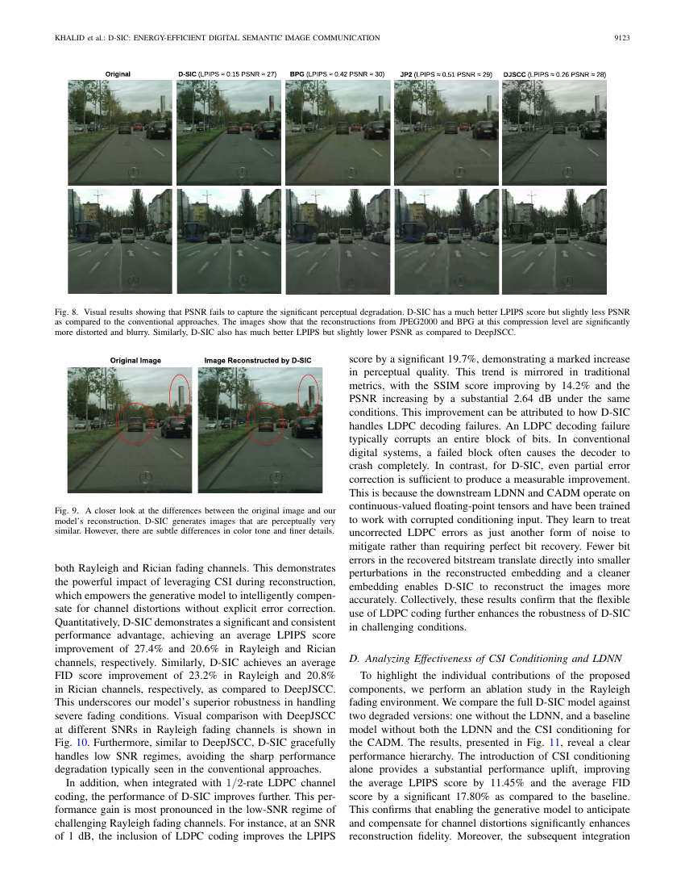</a><figcaption><b>关键结果证据页</b>｜来源：《D-SIC: Energy-Efficient Digital Semantic Image Communication via Large Generative Models》，PDF p.10；原图题/表题：Furthermore, similar to DeepJSCC, D-SIC gracefully the CADM. The results, presented in。 <a href='https://doi.org/10.1109/tccn.2026.3706089'>核对论文</a></figcaption></figure></div>
</article>
<article class="paper" id="dit-jscc-rethinking-deep-jscc-with-diffusion-transformers-and-semantic-representations" data-year="2026" data-tier="core">
  <div class="paper-head"><div><div><span class="tag core">核心纳入</span><span class="tag year">2026</span></div><h2>DiT-JSCC: Rethinking Deep JSCC With Diffusion Transformers and Semantic Representations</h2></div><a class="pdf" href="https://doi.org/10.1109/tccn.2026.3705826">DOI / IEEE 页面</a></div>
  <div class="facts"><div><b>作者</b>Kailin Tan、Jincheng Dai、Sixian Wang、Guo Lu、Shuo Shao、Kai Niu、Wenjun Zhang、Ping Zhang</div><div><b>出版信息</b>Vol. 12, pp. 9247-9262</div><div><b>DOI / IEEE ID</b><a href="https://doi.org/10.1109/tccn.2026.3705826">10.1109/tccn.2026.3705826</a> / 11573817</div><div><b>任务</b>语义网络与资源分配</div><div><b>技术谱系</b>连续 learned latent / channel symbol（DeepJSCC）</div><div><b>年份口径</b>formal TCCN volume year</div></div>
  <div class="verdict"><b>是否属于严格数字语义通信：</b>否（连续语义 JSCC）</div>
  <h3>实验设置</h3><div class="grid3"><div><b>数据集/场景</b>ImageNet、HEVC</div><div><b>Baseline</b>DeepJSCC、NTSCC、BPG、VVC、HEVC、LDPC、QAM、VTM、HM、FEC、Swin Transformer、ViT、GAN、VAE、DVC、PPO、SAC、ASC、SwinJSCC、JSCC、IB、BERT、GPT、CLIP</div><div><b>指标与信道条件</b>PSNR、LPIPS、FID、DISTS、bitrate、MSE、mAP、NME、latency、BLEU、BERTScore、VoI、MOS、WER、CER<br><span class="muted">SNR：0 dB、0dB、1 dB、13 dB、1dB、2dB、5 dB、7 dB</span></div></div>
  <h3>Introduction 的六步讲述逻辑</h3><ol class='story'><li><b>已有进展：</b>: (1) how to allocate bandwidth between the ments.</li><li><b>现有问题：</b>For the first challenge, inspired by recent mance, while appearance-level detail plays a secondary role.</li><li><b>为何重要：</b>A fundamental question therefore image captions as a tractable surrogate and further develop a arises: is diffusion-based decoding primarily driven by reusing hybrid textual complexity estimation algorithm.</li><li><b>提出方案：</b>After that, we develop a semantics-prioritized band- conventional GenJSCC designs by systematically rethinking width allocation (BA) strategy, i.e., first satisfy the bandwidth what information the encoder should extract and transmit, demand of the semantic branch and then allocate the remaining and how much of it is required, to reliably support the budget to the detail branch.</li><li><b>解决机制：</b>To quantitatively estimate the conditional generative decoding [22], [23].</li><li><b>核心主张与证据目标：</b>2, we illustrate Especially, DiffJSCC adopt a post-process approach two advanced methods following a conditional generative to refine the distorted results, introducing further decoding paradigm.</li></ol>
  <h3>方法、变量与优化</h3><p><b>系统/信息流：</b>PDF p.1：emerged as a new Deep JSCC paradigm for achieving high- fidelity and robust image transmission under extreme wireless channel conditions, such as ultra-low bandwidth and low signal- to-noise ratio. Recent studies commonly adopt diffusion models as generative decoders, but they frequently produce visually realistic results with limited semantic consistency. This limitation stems from a fundamental mismatch between reconstructio PDF p.1：ise ratio. Recent studies commonly adopt diffusion models as generative decoders, but they frequently produce visually realistic results with limited semantic consistency. This limitation stems from a fundamental mismatch between reconstruction- oriented JSCC encoders and generative decoders, as the former lack explicit semantic discriminability and fail to provide reli- able conditional cues. In this paper, we propose DiT-JSC PDF p.1：s commonly adopt diffusion models as generative decoders, but they frequently produce visually realistic results with limited semantic consistency. This limitation stems from a fundamental mismatch between reconstruction- oriented JSCC encoders and generative decoders, as the former lack explicit semantic discriminability and fail to provide reli- able conditional cues. In this paper, we propose DiT-JSCC, a novel GenJSCC backb PDF p.1：ncoders and generative decoders, as the former lack explicit semantic discriminability and fail to provide reli- able conditional cues. In this paper, we propose DiT-JSCC, a novel GenJSCC backbone that can jointly learn a semantics- prioritized representation encoder and a diffusion transformer (DiT)-based generative decoder. Our open-source project aims to promote future research in GenJSCC. Specifically, we design a semantic</p><p><b>目标函数/联合训练证据：</b>PDF p.6：9252 IEEE TRANSACTIONS ON COGNITIVE COMMUNICATIONS AND NETWORKING, VOL. 12, 2026 Furthermore, by jointly training with the wireless channel, This objective enables the denoising network to learn an our conditional signals are inherently more robust to channel effective approximation of the corruption process in reverse. perturbations. In contrast, methods based on tex PDF p.10：diverse of LDM. In our framework, the semantic branch (exclud- representation levels without compromising realism. Fig. 10 ing EVFM ), the detail branch, and the CDiT module are reports performance under varying channel SNR at a fixed jointly optimized by the loss function (11). At each training CBR of 1/96. For separation-based methods, we report the iteration, the discrete timestep t is uniformly sampled from lowest-SNR poin</p>
  <h3>数字化方案与传输开销</h3><p><b>传输表示证据：</b>PDF p.2：[21] that primarily semantic consistency metrics such as DreamSim, CLIP, and emphasize the denoising generative process at the receiver. DINOv2 [13], [14], [15], are more appropriate, as they operate To realize the dual-branch DiT-JSCC, we need to address in latent feature spaces and are robust to pixel-level misalign- two challenges: (1) how to allocate bandwidth between the ments. Consequently, under such extreme channel con PDF p.3：gnals ŝ. The system efficiency is quantified by the channel bandwidth ratio (CBR), which is referred as ρ and is defined as: k ρ= . (1) 3×H ×W Fig. 2. Overall framework of the proposed DiT-JSCC (d) and comparison It represents the average number of available channel symbols with the original deep JSCC (a) and other existing Generative JSCC structures (b and c). per source dimension. The goal of this system is to maximize the PDF p.3：del (PDM). DiffJSCC [20] constraint ρc , formulated as: extracts textual and visual features from the lossy recon- structions x̃ produced by the JSCC autoencoder, and trains Ex∼p(x),h∼p(h),n∼p(n) [LD (x, x̂)] , with constant ρc , (2) a U-Net-based conditional latent diffusion model (LDM) to generate improved reconstructions x̃. Another paradigm treats where LD denotes a distance measure typically formulated by the received sig PDF p.4：n the semantic branch, we first employ a pre-trained encoder compresses and transmits the semantic signal ss , VFM EVFM to map the image x ∈ RH×W ×3 from the while the auxiliary detail JSCC encoder captures resid- pixel space into a compact, semantically rich latent space, H W ual details and encodes them into a complementary detail resulting in the semantic representation y ∈ R 16 × 16 ×256 . The signal sd . VFM trained via s</p><p><b>调制/信道编码线索：</b>4qam、ldpc、ofdm</p><p><b>可复核开销与缺失信息：</b>输入/分辨率线索：128 × 128、16 × 16 ×256、256 × 256、512 × 512、16×16。feature/token/latent 尺寸线索：正文未给出可稳定自动定位的条目。码本线索：正文未给出可稳定自动定位的条目。bit/bpp/速率线索：8 bits。CBR/压缩率线索：CBR = 1/96 for all methods、channel bandwidth ratio (CBR), which is、CBR for each branch can be computed as:、CBRs ρ, the optimal、CBRρ , with the x-axis indicating the CBR allocated to the semantic words t、channel bandwidth ratio, reported in consistency and realism metrics, tested on ImageNet 512 × 512 dataset,、CBR ranges from 1/384 to 1/48, and、CBR increases, pixel-oriented、CBR over the AWGN channel at SNR = 0 dB、CBR of 1/96。连续 DeepJSCC 的主要预算是 channel uses/CBR；除非另加量化与调制，不能把每个 latent 当作固定 bit。</p><div class="formula">\[CBR=\frac{N_{complex\ channel\ symbols}}{N_{source\ samples}},\qquad R_{bit}\ \text{未定义（连续映射）}\]</div>
  <h3>信道处理机制</h3><div class="channel"><p><b>分类：</b>类别 3：连续 learned latent 直接通过有噪声信道</p><p><b>正文信道证据：</b>PDF p.1：ai Niu , Senior Member, IEEE, Wenjun Zhang , Fellow, IEEE, and Ping Zhang , Fellow, IEEE Abstract—Generative joint source-channel coding (GenJSCC) has emerged as a new Deep JSCC paradigm for achieving high- fidelity and robust image transmission under extreme wireless channel conditions, such as ultra-low bandwidth and low signal- to-noise ratio. Recent studies commonly adopt diffusion models as generative decoders, but they f PDF p.1：ed with human visual quality (as exemplified Kailin Tan, Jincheng Dai, Kai Niu, and Ping Zhang are with Beijing in Fig. 1 (b)). This issue becomes particularly noticeable University of Posts and Telecommunications, Beijing 100876, China (e-mail: under extreme wireless channel conditions, such as ultra-low daijincheng@bupt.edu.cn). Sixian Wang, Guo Lu, and Wenjun Zhang are with Shanghai Jiao Tong bandwidth and low signal-to-noi PDF p.2：UNICATIONS AND NETWORKING, VOL. 12, 2026 paradigm toward robust and high-fidelity end-to-end transmis- high-level semantic features as the primary information carrier sion under challenging channel conditions. The core idea of is essential for the design of effective GenJSCC frameworks. this paradigm leverages generative priors and stochastic sam- Our key insight, supported by empirical evidence [26], is pling to perform gener PDF p.2：g channel conditions. The core idea of is essential for the design of effective GenJSCC frameworks. this paradigm leverages generative priors and stochastic sam- Our key insight, supported by empirical evidence [26], is pling to perform generative decoding, effectively mitigating that high-level semantic representations extracted from VFM the random perturbations introduced by wireless channels. encoders primarily capture the</p><p><b>decoder 实际收到：</b>带噪连续 channel symbol / latent，经神经 decoder 恢复任务输出</p><p><b>是否联合优化：</b>是/部分：目标或训练证据与物理信道同时出现。</p><p><b>是否真正处理 bit/index/token/packet error：</b>不适用 VQ index/bit 跳变；论文处理的是连续扰动和信道失配。</p></div>
  <h3>主要结果、局限与 Codex 判断</h3><p><b>证据化结果：</b>PDF p.1：t aligns naturally with a coarse-to-fine conditional DiT decoder, prioritizing seman- tic consistency under extreme channel conditions. Moreover, a training-free adaptive bandwidth allocation strategy inspired by Kolmogorov complexity is introduced to further improve trans- mission efficiency, thereby redefining the notion of information Fig. 1. Semantic consistency is more critical than pixel-level consistency for value in th PDF p.1：tion Fig. 1. Semantic consistency is more critical than pixel-level consistency for value in the era of generative decoding. Extensive experiments human perception under extremely limited bandwidth or low SNR conditions. demonstrate that DiT-JSCC consistently outperforms existing SNR = 0 and CBR = 1/96 for all methods. Visually, our method produces JSCC methods in both semantic consistency and visual quality, the most faithful PDF p.1：tual consistency metrics (LPIPS [11], DISTS [12]) and semantic Index Terms—Joint source-channel coding, semantic commu- consistency metrics (Dreamsim [13], CLIP [14], DINOv2 [15]), while its nication, diffusion transformer, Kolmogorov complexity. PSNR is much lower than the original deep JSCC. Notably, only our method successfully captures the original textual semantics. * denotes a score I. I NTRODUCTION inversion operation, PDF p.1：026; date of current version 1 July 2026. This optimizing toward pixel-wise distortion metrics, e.g., PSNR. work was supported in part by the National Key Research and Development Program of China under Grant 2024YFF0509700, in part by the National Subsequent improvements [5], [6], [7] have demonstrated Natural Science Foundation of China under Grant 62371063, Grant 62471290, comparable or even superior rate-distortion perform</p><p><b>独立判断：</b>没有完整离散接口，无法直接回答 bit/index/token 跳变问题。 未显式注入离散误码/丢包，鲁棒性结论不应外推到真实数字链路。</p>
  <div class="figs"><figure><a href='assets/2026_dit-jscc-rethinking-deep-jscc-with-diffusion-transformers-and-semantic-representations_method_p4.png' target='_blank'>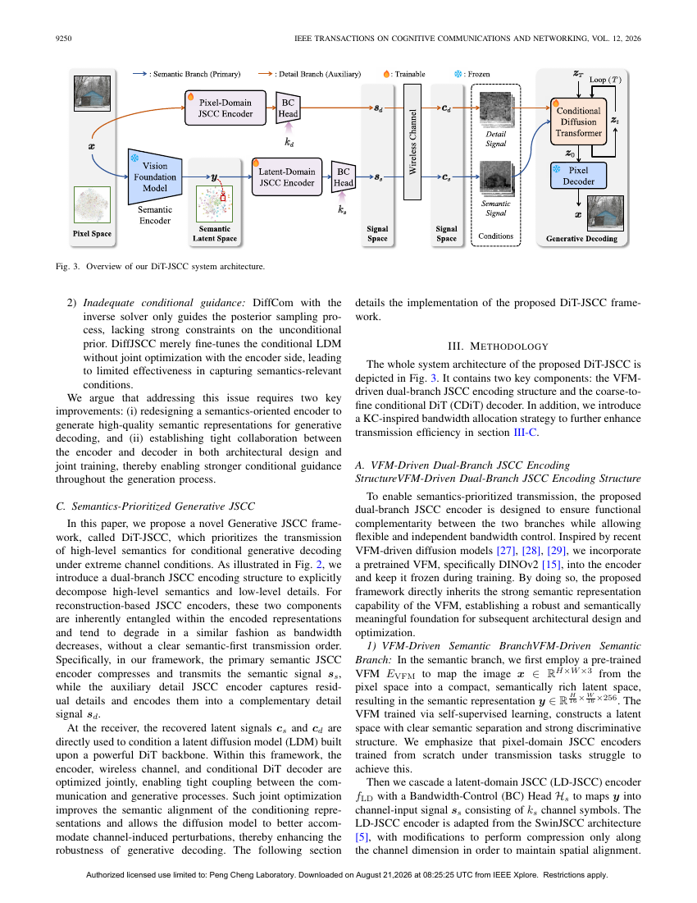</a><figcaption><b>架构/方法证据页</b>｜来源：《DiT-JSCC: Rethinking Deep JSCC With Diffusion Transformers and Semantic Representations》，PDF p.4；原图题/表题：Overview of our DiT-JSCC system architecture.。 <a href='https://doi.org/10.1109/tccn.2026.3705826'>核对论文</a></figcaption></figure><figure><a href='assets/2026_dit-jscc-rethinking-deep-jscc-with-diffusion-transformers-and-semantic-representations_result_p7.png' target='_blank'>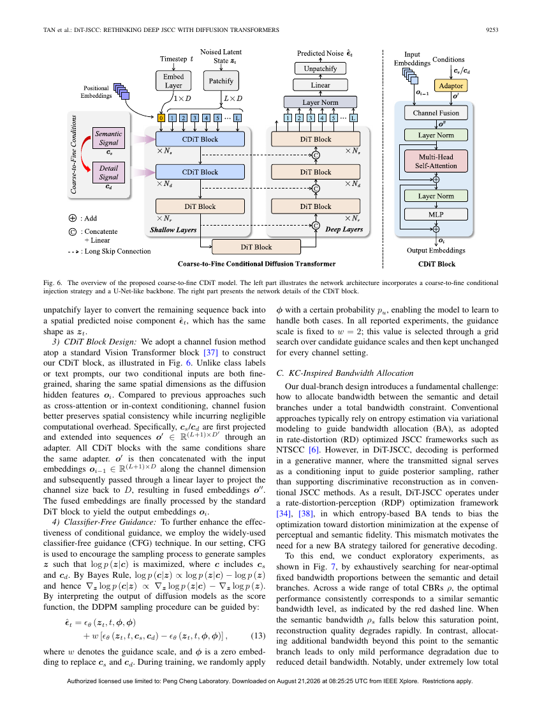</a><figcaption><b>关键结果证据页</b>｜来源：《DiT-JSCC: Rethinking Deep JSCC With Diffusion Transformers and Semantic Representations》，PDF p.7；原图题/表题：The overview of the proposed coarse-to-fine CDiT model. The left part illustrates the network architecture incorporates a coarse-to-fine conditional injection strategy and a U-Net-like backbone. The right part presents the network details of the CDiT block.。 <a href='https://doi.org/10.1109/tccn.2026.3705826'>核对论文</a></figcaption></figure></div>
</article>
<article class="paper" id="frame-based-zero-shot-semantic-channel-equalization-for-ai-native-communications" data-year="2026" data-tier="core">
  <div class="paper-head"><div><div><span class="tag core">核心纳入</span><span class="tag year">2026</span></div><h2>Frame-Based Zero-Shot Semantic Channel Equalization for AI-Native Communications</h2></div><a class="pdf" href="https://doi.org/10.1109/tccn.2026.3658783">DOI / IEEE 页面</a></div>
  <div class="facts"><div><b>作者</b>Simone Fiorellino、Claudio Battiloro、Emilio Calvanese Strinati、Paolo Di Lorenzo</div><div><b>出版信息</b>Vol. 12, pp. 5832-5847</div><div><b>DOI / IEEE ID</b><a href="https://doi.org/10.1109/tccn.2026.3658783">10.1109/tccn.2026.3658783</a> / 11366936</div><div><b>任务</b>通用/多模态语义通信</div><div><b>技术谱系</b>学习式语义 feature；数字接口需由正文具体实现判定</div><div><b>年份口径</b>formal TCCN volume year</div></div>
  <div class="verdict"><b>是否属于严格数字语义通信：</b>系统层相关；没有足够证据把它判为严格数字语义通信。</div>
  <h3>实验设置</h3><div class="grid3"><div><b>数据集/场景</b>Kodak、ImageNet、CIFAR-10、CIFAR-100、MNIST</div><div><b>Baseline</b>HM、FEC、ViT、GAN、ResNet、PPO、SAC、JSCC、IB、BERT、CLIP</div><div><b>指标与信道条件</b>FID、bitrate、mAP、accuracy、precision、NME、latency、energy、FPS、throughput、VoI、MOS、WER、CER<br><span class="muted">SNR：正文未给出可稳定自动定位的条目</span></div></div>
  <h3>Introduction 的六步讲述逻辑</h3><ol class='story'><li><b>已有进展：</b>The properties of Parseval frames permit policy.</li><li><b>现有问题：</b>In [38], low computational overhead and feasibility in communication this challenge was addressed by defining the atoms in a self- systems.</li><li><b>为何重要：</b>Our main advancements are: in [39], it was introduced the Relative Representations (RRs) 1) A Parseval frame–based semantic equalizer that framework to establish a common semantic representation jointly enables zero-shot latent-space alignment, robust between distinct (independently trained) DNN-based encoding signal compression and expansion, allowing direct functions in a zero-shot fashion, i.e., eliminating the need for approximated reconstruction of the absolute latent additional optimization steps and even the exchange of latent representation at the RX. representations, as typically required in supervised settings.</li><li><b>提出方案：</b>To address this issue, we propose the Parseval Frame for a more efficient and context-driven framework that reduces Equalizer (PFE), a zero-shot, frame-based semantic channel network overhead and latency while maintaining reliability equalizer that aligns latent spaces of heterogeneous encoders and adaptability.</li><li><b>解决机制：</b>Consequently, researchers in academia and without requiring system retraining.</li><li><b>核心主张与证据目标：</b>Hence, for Remark 1: If the similarity function in (1) is the cosine simi- N Here span({fn }n=1 ) := ˇ larity (S C ), the resulting RRs depend solely on pairwise angles finite dimensions, having a frame simply means we have between embeddings.</li></ol>
  <h3>方法、变量与优化</h3><p><b>系统/信息流：</b>PDF p.1：reless networks, the pres- throughput, are becoming less practical under stringent spec- ence of mismatches between the latent spaces of independently trum availability, rising energy consumption, and constrained designed and trained deep neural network (DNN) encoders may computational resources at the network edge [2], [3], [4], impede mutual understanding due to the emergence of semantic channel noise. This undermines the re PDF p.1：ropose the Parseval Frame for a more efficient and context-driven framework that reduces Equalizer (PFE), a zero-shot, frame-based semantic channel network overhead and latency while maintaining reliability equalizer that aligns latent spaces of heterogeneous encoders and adaptability. Consequently, researchers in academia and without requiring system retraining. PFE enables dynamic signal compression and expansion, mitigating PDF p.2：FIORELLINO et al.: FRAME-BASED ZERO-SHOT SCEq FOR AI-NATIVE COMMUNICATIONS 5833 which arises from inconsistencies in logic, interpretation, Although most existing studies assume that a relative decoder or background knowledge among AI agents [12], [33]. For can be trained in the new representation space, the training AI-native communication to be effective, both the transmit- process itself may be infeasible in some scenarios PDF p.2：esses, devices often tion, which admits an invertible mapping for alignment across produce divergent latent representations for the same under- models without necessitating the training of an additional lying information. This misalignment introduces semantic decoder. Instead, a sample-efficient optimization algorithm is noise, potentially degrading mutual understanding between used in [45] to achieve absolute representation r</p><p><b>目标函数/联合训练证据：</b>PDF p.2：s. environments, where sharing models, training datasets, or Despite significant progress in zero-shot semantic chan- proprietary assets is either infeasible or undesirable. In these nel equalization, three limitations persist. First, existing contexts, joint end-to-end training or model exchange is often equalizers lack a principled way to ensure stable inver- ruled out due to privacy concerns and intellectual property sion o PDF p.11：based on the observation of instantaneous channel realizations. This leads to the solution of a sequence of deterministic per-slot problems at each time t given by: C. Algorithm Solution via Stochastic Optimization K h X Given the complexity of the long-term optimization problem min Γ(Ψ(t)) = Z(t)LkTX (t) − Qk (t)Gk (t) Ψ(t) in (23), particularly due to the unknown statistics of the under- k=1 i lying random variables, we intr PDF p.11：ghting parameter that balances the stabiliza- where δ and ν are the Lagrange multipliers associated with tion of the queues with the minimization of the system’s total the constraints of (31). Then, solving the Karush-Khun-Tucker power. Proceeding as in [58], we minimize an upper bound of (KKT) conditions [59]</p>
  <h3>数字化方案与传输开销</h3><p><b>传输表示证据：</b>PDF p.1：ttiloro , Member, IEEE, Emilio Calvanese Strinati , Member, IEEE, and Paolo Di Lorenzo , Senior Member, IEEE Abstract—In future AI-native wireless networks, the pres- throughput, are becoming less practical under stringent spec- ence of mismatches between the latent spaces of independently trum availability, rising energy consumption, and constrained designed and trained deep neural network (DNN) encoders may computational res PDF p.1：ce. To address this issue, we propose the Parseval Frame for a more efficient and context-driven framework that reduces Equalizer (PFE), a zero-shot, frame-based semantic channel network overhead and latency while maintaining reliability equalizer that aligns latent spaces of heterogeneous encoders and adaptability. Consequently, researchers in academia and without requiring system retraining. PFE enables dynamic signal compre PDF p.1：ore efficient term constraints on latency and accuracy under diverse and use of bandwidth and energy. One important direction within time-varying network conditions. the broader SC paradigm is the goal-oriented (GO) commu- Index Terms—Semantic communications, latent space nication, wherein the primary objective is the fulfillment of a alignment, Lyapunov stochastic optimization, frames. task (e.g., learning, control, actuation PDF p.1：Agreement No ture encodings optimized for low-latency edge inference under 101139232. An earlier version of this paper was presented at the bandwidth constraints. Other GO frameworks for adaptive 2024 32nd European Signal Processing Conference (EUSIPCO) [DOI: quantization, compression, and resource allocation have been 10.23919/EUSIPCO63174.2024.10715102]. The associate editor coordinating the review of this article and approv</p><p><b>调制/信道编码线索：</b>未自动检出固定调制/信道编码名称</p><p><b>可复核开销与缺失信息：</b>输入/分辨率线索：正文未给出可稳定自动定位的条目。feature/token/latent 尺寸线索：正文未给出可稳定自动定位的条目。码本线索：正文未给出可稳定自动定位的条目。bit/bpp/速率线索：32-bit。CBR/压缩率线索：正文未给出可稳定自动定位的条目。该论文偏系统/理论层，正文未必给出可复核的 encoder feature map 与 payload 长度。</p><div class="formula">\[N_{tx}=N_{payload}+N_{side}+N_{protection};\quad \text{缺失项必须标记为未知}\]</div>
  <h3>信道处理机制</h3><div class="channel"><p><b>分类：</b>类别 5：信道/资源进入系统优化，但 payload 数字化接口不完整</p><p><b>正文信道证据：</b>PDF p.1：of independently trum availability, rising energy consumption, and constrained designed and trained deep neural network (DNN) encoders may computational resources at the network edge [2], [3], [4], impede mutual understanding due to the emergence of semantic channel noise. This undermines the receiver’s ability to interpret [5]. Data-intensive applications such as autonomous driving, transmitted representations, thereby reduci PDF p.1：on of the raw data. This to balance energy consumption, end-to-end (E2E) latency, and shift is largely driven by artificial intelligence (AI), particularly task performance in multi-agent semantic communication sce- narios. Extensive simulations confirm the effectiveness of our DNNs, where E2E approaches learn to extract, transmit, and approach in maintaining semantic consistency and meeting long- decode high-level semantic fe PDF p.2：s from inconsistencies in logic, interpretation, Although most existing studies assume that a relative decoder or background knowledge among AI agents [12], [33]. For can be trained in the new representation space, the training AI-native communication to be effective, both the transmit- process itself may be infeasible in some scenarios (e.g., ter and the receiver must share a common, or compatible, resource-constrained networ PDF p.2：o arbitrary similarity functions. environments, where sharing models, training datasets, or Despite significant progress in zero-shot semantic chan- proprietary assets is either infeasible or undesirable. In these nel equalization, three limitations persist. First, existing contexts, joint end-to-end training or model exchange is often equalizers lack a principled way to ensure stable inver- ruled out due to privacy concerns a</p><p><b>decoder 实际收到：</b>由论文系统模型定义的语义 feature、任务状态或传统译码后数据</p><p><b>是否联合优化：</b>是/部分：目标或训练证据与物理信道同时出现。</p><p><b>是否真正处理 bit/index/token/packet error：</b>未形成可复核的 bit/index/token 错误闭环。</p></div>
  <h3>主要结果、局限与 Codex 判断</h3><p><b>证据化结果：</b>PDF p.1：ous driving, transmitted representations, thereby reducing overall system per- industrial automation, and smart healthcare highlight the need formance. To address this issue, we propose the Parseval Frame for a more efficient and context-driven framework that reduces Equalizer (PFE), a zero-shot, frame-based semantic channel network overhead and latency while maintaining reliability equalizer that aligns latent spaces of heter PDF p.1：This work was supported by the European Union under the proposed for real-time remote actuation, yielding sizable Italian National Recovery and Resilience Plan (NRRP) of NextGenerationEU, partnership on “Telecommunications of the Future” (PE00000001 - program reductions in reconstruction error, actuation cost, and redun- “RESTART”), by the Next Generation EU, Mission I.3.3 PNRR Scholarships dant transmissions. Interestingly, [ PDF p.2：rent models, which is not straightforward. In [38], low computational overhead and feasibility in communication this challenge was addressed by defining the atoms in a self- systems. Varying the number of transmitted coefficients lets supervised manner, which improved overall performance of the same mechanism control compression (reducing seman- the equalization algorithm. Nevertheless, the process still relies tic payload thr PDF p.3：nder overlaps. This redundancy is the key advantage of frames in the above assumption, two encoders EH and EK differing by real-world applications, such as communications, because it such a transformation will produce approximately equivalent adds robustness against noise. RRs: Given (4), any frame reconstructs a signal via RH (D, A, S C ) ≈ RK (D, A, S C ). (2) N X The invariance property in (2) justifies using RRs as projec-</p><p><b>独立判断：</b>没有完整离散接口，无法直接回答 bit/index/token 跳变问题。 未显式注入离散误码/丢包，鲁棒性结论不应外推到真实数字链路。</p>
  <div class="figs"><figure><a href='assets/2026_frame-based-zero-shot-semantic-channel-equalization-for-ai-native-communications_method_p7.png' target='_blank'></a><figcaption><b>架构/方法证据页</b>｜来源：《Frame-Based Zero-Shot Semantic Channel Equalization for AI-Native Communications》，PDF p.7；原图题/表题：PFE accuracy performance varying the number of transmitted coefficients and architectures. At the RX, a classifier trained on vit base resnet50 384.。 <a href='https://doi.org/10.1109/tccn.2026.3658783'>核对论文</a></figcaption></figure><figure><a href='assets/2026_frame-based-zero-shot-semantic-channel-equalization-for-ai-native-communications_result_p8.png' target='_blank'></a><figcaption><b>关键结果证据页</b>｜来源：《Frame-Based Zero-Shot Semantic Channel Equalization for AI-Native Communications》，PDF p.8；原图题/表题：PFE accuracy performance varying the number of transmitted coefficients and architectures. At the RX, a classifier trained on vit base resnet50 384.。 <a href='https://doi.org/10.1109/tccn.2026.3658783'>核对论文</a></figcaption></figure></div>
</article>
<article class="paper" id="from-local-to-global-semantic-communication-driven-remote-3d-scene-reconstruction-using-low" data-year="2026" data-tier="core">
  <div class="paper-head"><div><div><span class="tag core">核心纳入</span><span class="tag year">2026</span></div><h2>From Local to Global: Semantic Communication-Driven Remote 3D Scene Reconstruction Using Low-Altitude Platforms</h2></div><a class="pdf" href="https://doi.org/10.1109/tccn.2026.3662333">DOI / IEEE 页面</a></div>
  <div class="facts"><div><b>作者</b>Tianle Mai、Haipeng Yao、Gepeng Zhu、Chenlang Jin、Xiangjun Xin</div><div><b>出版信息</b>Vol. 12, pp. 6207-6220</div><div><b>DOI / IEEE ID</b><a href="https://doi.org/10.1109/tccn.2026.3662333">10.1109/tccn.2026.3662333</a> / 11381444</div><div><b>任务</b>点云/三维场景传输或理解</div><div><b>技术谱系</b>学习式语义 feature；数字接口需由正文具体实现判定</div><div><b>年份口径</b>formal TCCN volume year</div></div>
  <div class="verdict"><b>是否属于严格数字语义通信：</b>系统层相关；没有足够证据把它判为严格数字语义通信。</div>
  <h3>实验设置</h3><div class="grid3"><div><b>数据集/场景</b>KITTI、DAVIS</div><div><b>Baseline</b>DeepJSCC、HM、FEC、ViT、GAN、PPO、SAC、JSCC、IB、BERT、GPT</div><div><b>指标与信道条件</b>SSIM、FID、MSE、mAP、mIoU、accuracy、precision、NME、throughput、VoI、MOS、WER<br><span class="muted">SNR：正文未给出可稳定自动定位的条目</span></div></div>
  <h3>Introduction 的六步讲述逻辑</h3><ol class='story'><li><b>已有进展：</b>ion have attracted significant attention in DINOv2 [14], has created new opportunities to enhance SC the literature.</li><li><b>现有问题：</b>In [17], Yang et al. provided a comprehensive overview to-end framework that integrates LAM-driven semantic of the core concepts, use cases, and open challenges in the extraction, semantic communication, and NeRF-based 3D semantic communication field.</li><li><b>为何重要：</b>Semantic Communication able in dynamic low-altitude environments changing, where traditional SC systems would otherwise require extensive end- Semantic communication has advanced rapidly in recent to-end retraining [15]. years, particularly with the integration of deep learning tech- Therefore, this paper proposes LAM-SC-3DR, an end- niques.</li><li><b>提出方案：</b>Semantic Communication able in dynamic low-altitude environments changing, where traditional SC systems would otherwise require extensive end- Semantic communication has advanced rapidly in recent to-end retraining [15]. years, particularly with the integration of deep learning tech- Therefore, this paper proposes LAM-SC-3DR, an end- niques.</li><li><b>解决机制：</b>In [17], Yang et al. provided a comprehensive overview to-end framework that integrates LAM-driven semantic of the core concepts, use cases, and open challenges in the extraction, semantic communication, and NeRF-based 3D semantic communication field.</li><li><b>核心主张与证据目标：</b>These advancements in semantic NeRF S̃ = Dν1 (Y), (4) have been foundational to improving 3D scene reconstruction by enabling richer semantic understanding and more accurate which is then passed to a 3D reconstructor Dν2 to produce the scene representation. volumetric output: Iˆ3D = Dν2 S̃ = Dν2 Dν1 (Y) .   (5) III.</li></ol>
  <h3>方法、变量与优化</h3><p><b>系统/信息流：</b>PDF p.1：s a solution by transmitting only the most task-relevant infor- mation, which would significantly reduce the required data throughput. Besides, the recent emergence of large AI mod- els (LAMs) further strengthens SC by providing powerful, pre-trained semantic encoders that can extract and compress high-value features. Therefore, in this paper, we propose an end- to-end framework, LAM-SC-3DR, which integrates LAM-driven semanti PDF p.2：6208 IEEE TRANSACTIONS ON COGNITIVE COMMUNICATIONS AND NETWORKING, VOL. 12, 2026 demands present significant communication burdens, particu- system model and problem formulation. In Section V, we larly in decentralized low-altitude network environments. design a semantic feature extraction and communication To address these problems, SC has emerged as a promising approach. In Section VI, we design a real-time PDF p.2：semantic communication, and NeRF-based 3D semantic communication field. In [18], Huang et al. developed reconstruction, aiming to achieve efficient remote 3D scene a deep learning–based image semantic coding scheme that recovery on low-altitude platforms. The proposed framework leverages neural networks to extract and compress semantic consists of three modules. The first is the Semantic Feature features. In [19], Lokumarambag PDF p.3：ages: Semantic Extraction, Channel Coding &amp; Transmission, and 3D Reconstruction. 1) Semantic Extraction (Sender): The sender captures raw 2D images I2D using onboard RGB or RGB-D cameras. To reduce the amount of data transmitted, the system employs a semantic encoder: S = Eα1 I2D ,  (1) adaptive spatial partitioning and sampling techniques. The where S represents the semantic feature vector derived from method enhances the ef</p><p><b>目标函数/联合训练证据：</b>PDF p.3：imization objective. Table I summarizes the features are transmitted, significantly reducing the bandwidth main notations used throughout this paper. requirements compared to transmitting bit-level data. A. 3D Scene Semantic Communication System B. End-to-End Loss Function As illustrated in Fig. 2, we consider a semantic communi- The goal of the SC system is to efficiently transmit seman- cation system with two entities: a set PDF p.4：6210 IEEE TRANSACTIONS ON COGNITIVE COMMUNICATIONS AND NETWORKING, VOL. 12, 2026 Fig. 3. LAM-SC 3D Scene Reconstruction Framework. achieve this, we define an end-to-end loss function to jointly semantic features, including high-level semantics S HL ∈ S and supervise the entire transmission and reconstruction pipeline. low-level semantics S LL ∈ S. Since the input to our pipeline is in the image domain, and • High-level semanti PDF p.5：ling points along each image and a corresponding semantic map. camera ray [32]. This approach ensures that the geom- • Loss Calculation: We evaluate the performance of recon- etry semantics provide the spatial foundation needed to struction pipeline through a loss function. This includes anchor object and appeara</p>
  <h3>数字化方案与传输开销</h3><p><b>传输表示证据：</b>PDF p.4：re obtained through a tailored ray-sampling scheme. These features The scalar training loss is then computed by comparing this are then combined using a cross-attention mechanism into rendered view against the original ground-truth input: a unified high-level feature map. • Low-level semantics capture pixel-level details, such ˆ ) = Dist(I2D , R(I3D L(I2D , I2D ˆ )), (7) as edges, textures, and fine geometry, for supporting hi PDF p.5：nd (b) the loss from matching using high-frequency sinusoidal positional embeddings and reconstructed semantic maps to the intended high level then passed through an MLP to generate multi-scale spatial semantics. By backpropagating this loss, we jointly opti- descriptors [33]. Specifically, for a 3D point p = (x, y, z), we mize the entire pipeline, ensuring that every component can compute its high-frequency positional embeddi PDF p.5：ed data. Formally, the RGB image 1) Geometry-Guided Semantic Fusion: In the first stage, input is divided into non-overlapping 16 × 16 patches, with we compute the object embedding FO , which is learned by each patch being linearly mapped to a 768-dimensional token. available geometrical context, and it can be expressed as: These tokens are then processed by a 12-layer Transformer X (12 heads, hidden size 768), producing per-p PDF p.5：the first stage, input is divided into non-overlapping 16 × 16 patches, with we compute the object embedding FO , which is learned by each patch being linearly mapped to a 768-dimensional token. available geometrical context, and it can be expressed as: These tokens are then processed by a 12-layer Transformer X (12 heads, hidden size 768), producing per-patch embeddings FO = αi S OHL , (10) that capture both local and global</p><p><b>调制/信道编码线索：</b>未自动检出固定调制/信道编码名称</p><p><b>可复核开销与缺失信息：</b>输入/分辨率线索：16 × 16。feature/token/latent 尺寸线索：正文未给出可稳定自动定位的条目。码本线索：vocabulary neural radiance fields with vision and language [43。bit/bpp/速率线索：正文未给出可稳定自动定位的条目。CBR/压缩率线索：compression ratio increase with constant SNR、compression ratios also result in the worse、compression ratios、compression ratio squared error (MSE), structural similarity index (SSIM), and a、compression ratio、compression ratios (67%, pp。该论文偏系统/理论层，正文未必给出可复核的 encoder feature map 与 payload 长度。</p><div class="formula">\[N_{tx}=N_{payload}+N_{side}+N_{protection};\quad \text{缺失项必须标记为未知}\]</div>
  <h3>信道处理机制</h3><div class="channel"><p><b>分类：</b>类别 5：信道/资源进入系统优化，但 payload 数字化接口不完整</p><p><b>正文信道证据：</b>PDF p.2：truction, aiming to achieve efficient remote 3D scene a deep learning–based image semantic coding scheme that recovery on low-altitude platforms. The proposed framework leverages neural networks to extract and compress semantic consists of three modules. The first is the Semantic Feature features. In [19], Lokumarambage et al. applied semantic Extraction (SFE) module, which utilizes a pre-trained large coding for wireless imag PDF p.2：[16]. The vision systems In [21], Jiang et al. proposed GAM-3DSC, a third is the 3D Scene Reconstruction (3DSR) module, which generative AI–assisted 3D semantic communication system integrates the obtained semantic information to generate pho- demonstrating effective goal-oriented scenario transmission. torealistic and semantically consistent volumetric renderings. The simulation results underscore the effectiveness of the Ext PDF p.2：3D semantic communication system integrates the obtained semantic information to generate pho- demonstrating effective goal-oriented scenario transmission. torealistic and semantically consistent volumetric renderings. The simulation results underscore the effectiveness of the Extensive evaluations demonstrate that LAM-SC-3DR reduces proposed GAM-3DSC system in facilitating the transmission transmission load by up to 96% while PDF p.3：  Moreover, semantic NeRFs extend pure geometric recon- (2) struction with rich scene semantic understanding. In [29], Then, this encoded vector X is transmitted through an Additive Liao et al. developed Open-Vocabulary NeRF (OV-NeRF), White Gaussian Noise (AWGN) channel. The received signal integrating vision-language foundation models to improve is expressed as: semantic field learning and achieve significant gains in mean</p><p><b>decoder 实际收到：</b>由论文系统模型定义的语义 feature、任务状态或传统译码后数据</p><p><b>是否联合优化：</b>是/部分：目标或训练证据与物理信道同时出现。</p><p><b>是否真正处理 bit/index/token/packet error：</b>未形成可复核的 bit/index/token 错误闭环。</p></div>
  <h3>主要结果、局限与 Codex 判断</h3><p><b>证据化结果：</b>PDF p.1：heir significant data demands pose chal- lenges for low-altitude platforms, particularly due to stringent bandwidth constraints. Semantic communication (SC) offers a solution by transmitting only the most task-relevant infor- mation, which would significantly reduce the required data throughput. Besides, the recent emergence of large AI mod- els (LAMs) further strengthens SC by providing powerful, pre-trained semantic encoders PDF p.1：emantics to create photorealistic, semantically consis- sensing, urban monitoring, and post-disaster assessment [1]. tent volumetric renderings. Extensive evaluations demonstrate 3D reconstruction technologies involve methods that generate that LAM-SC-3DR can reduce transmission load by up to 96%, three-dimensional models of the real environment from 2D while maintaining 3D semantic reconstruction quality. visual or sensor inp PDF p.2：formation to generate pho- demonstrating effective goal-oriented scenario transmission. torealistic and semantically consistent volumetric renderings. The simulation results underscore the effectiveness of the Extensive evaluations demonstrate that LAM-SC-3DR reduces proposed GAM-3DSC system in facilitating the transmission transmission load by up to 96% while maintaining high 3D of goal-oriented 3D scenarios. reconstruction q PDF p.2：d system design extraction, semantic communication, and NeRF-based strategies. In [21], Jiang et al. utilized a large language 3D reconstruction into a unified pipeline. This approach model (LLM) to facilitate the transformation between mul- can significantly reduce data transmission requirements timodal and unimodal data, therefore making multimodal while maintaining high-fidelity 3D scene reconstruction semantic communicatio</p><p><b>独立判断：</b>没有完整离散接口，无法直接回答 bit/index/token 跳变问题。 未显式注入离散误码/丢包，鲁棒性结论不应外推到真实数字链路。</p>
  <div class="figs"><figure><a href='assets/2026_from-local-to-global-semantic-communication-driven-remote-3d-scene-reconstruction-using-low_method_p3.png' target='_blank'>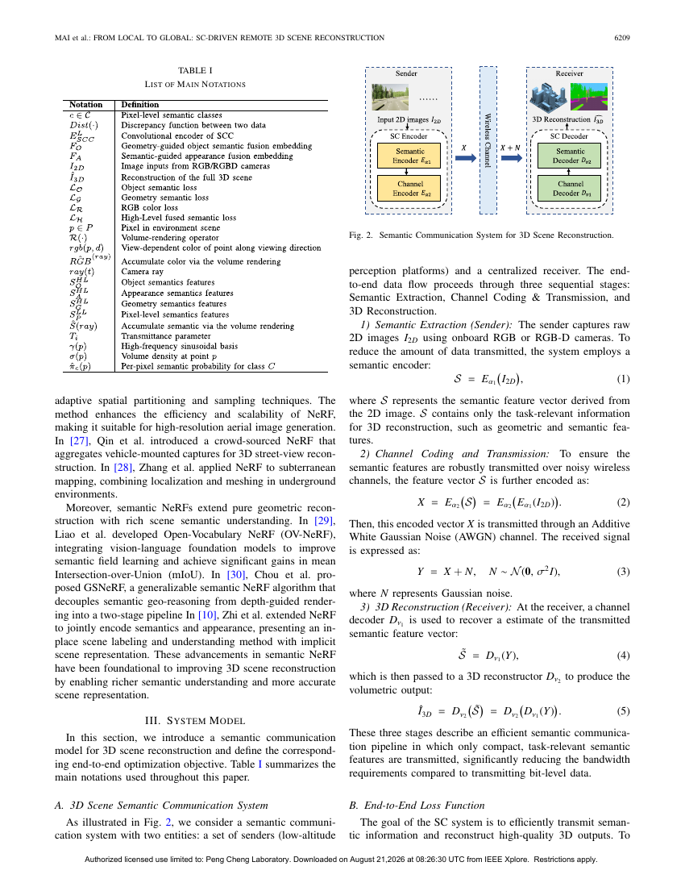</a><figcaption><b>架构/方法证据页</b>｜来源：《From Local to Global: Semantic Communication-Driven Remote 3D Scene Reconstruction Using Low-Altitude Platforms》，PDF p.3；原图题/表题：Semantic Communication System for 3D Scene Reconstruction.。 <a href='https://doi.org/10.1109/tccn.2026.3662333'>核对论文</a></figcaption></figure><figure><a href='assets/2026_from-local-to-global-semantic-communication-driven-remote-3d-scene-reconstruction-using-low_result_p9.png' target='_blank'></a><figcaption><b>关键结果证据页</b>｜来源：《From Local to Global: Semantic Communication-Driven Remote 3D Scene Reconstruction Using Low-Altitude Platforms》，PDF p.9；原图题/表题：presents the reconstructed depth maps features based on reconstructed (i.e. decompressed) inputs. in each of the three configurations. However, the results As shown in。 <a href='https://doi.org/10.1109/tccn.2026.3662333'>核对论文</a></figcaption></figure></div>
</article>
<article class="paper" id="gde-a-generative-diffusion-equalizer-for-icsi-free-semantic-communications-in-sagins" data-year="2026" data-tier="core">
  <div class="paper-head"><div><div><span class="tag core">核心纳入</span><span class="tag year">2026</span></div><h2>GDE: A Generative Diffusion Equalizer for ICSI-Free Semantic Communications in SAGINs</h2></div><a class="pdf" href="https://doi.org/10.1109/tccn.2026.3709876">DOI / IEEE 页面</a></div>
  <div class="facts"><div><b>作者</b>Huaifeng Shi、Long Zhou、Wen Tian、Chaofan Liu</div><div><b>出版信息</b>Vol. 12, pp. 9902-9916</div><div><b>DOI / IEEE ID</b><a href="https://doi.org/10.1109/tccn.2026.3709876">10.1109/tccn.2026.3709876</a> / 11594898</div><div><b>任务</b>通用/多模态语义通信</div><div><b>技术谱系</b>连续 learned latent / channel symbol（DeepJSCC）</div><div><b>年份口径</b>formal TCCN volume year</div></div>
  <div class="verdict"><b>是否属于严格数字语义通信：</b>否（连续语义 JSCC）</div>
  <h3>实验设置</h3><div class="grid3"><div><b>数据集/场景</b>DIV2K、CIFAR-10</div><div><b>Baseline</b>DeepJSCC、HM、FEC、Swin Transformer、ViT、GAN、PPO、SAC、SwinJSCC、JSCC、IB</div><div><b>指标与信道条件</b>PSNR、LPIPS、FID、MSE、mAP、accuracy、NME、latency、energy、VoI、MOS、WER、CER<br><span class="muted">SNR：0 dB、0.05 dB、0.5 dB、10 dB、20 dB、3 dB、5 dB</span></div></div>
  <h3>Introduction 的六步讲述逻辑</h3><ol class='story'><li><b>已有进展：</b>t multiplicative distortion that propagates • We propose the GDE framework, which moves seman- to the DeepJSCC decoder [21].</li><li><b>现有问题：</b>However, these studies mainly focus on serving as a representative statistical prompt.</li><li><b>为何重要：</b>However, these studies mainly focus on serving as a representative statistical prompt.</li><li><b>提出方案：</b>t multiplicative distortion that propagates • We propose the GDE framework, which moves seman- to the DeepJSCC decoder [21].</li><li><b>解决机制：</b>Consequently, methods that tic reception from pilot-aided channel inversion toward perform well under ideal or accurately estimated channel con- active generative inference.</li><li><b>核心主张与证据目标：</b>Section IV module but as an agentic inference module that performs presents the experimental results and analyzes the perfor- iterative semantic restoration under uncertainty.</li></ol>
  <h3>方法、变量与优化</h3><p><b>系统/信息流：</b>PDF p.2：, The main contributions of this paper are summarized as the resulting equalization error is not simply additive noise follows: but a signal-dependent multiplicative distortion that propagates • We propose the GDE framework, which moves seman- to the DeepJSCC decoder [21]. Consequently, methods that tic reception from pilot-aided channel inversion toward perform well under ideal or accurately estimated channel con- active gene PDF p.2：capability reduces the match in mismatch-limited high-SNR regimes. dependence on rigid channel inversion and is particularly The remainder of this paper is organized as follows. attractive when ICSI is unreliable or unavailable [35]. Section II introduces the system model of semantic commu- To address the challenge of CSI aging, this paper pro- nications in SAGINs and formulates the ICSI-free inference poses the Generative Dif PDF p.2：ess using slowly varying statistical channel state information (SCSI), with the Rician II. S YSTEM M ODEL AND P ROBLEM F ORMULATION factor serving as a representative descriptor of the channel statistics. Since such statistical descriptors can typically be A. System Model estimated more reliably over longer observation windows, this Consider a downlink semantic communication scenario strategy decouples semantic recovery from l PDF p.3：9904 IEEE TRANSACTIONS ON COGNITIVE COMMUNICATIONS AND NETWORKING, VOL. 12, 2026 Fig. 1. System model of the GDE-based semantic communication system in SAGINs. and a ground receiver, typically a mobile terminal. The pri- B. Rician Channel Model mary objective is to transmit a source image s ∈ RH×W×C Reflecting the LoS-dominant propagation environment com- fro</p><p><b>目标函数/联合训练证据：</b>PDF p.4：of learnable parameters, including the DeepJSCC first kind. We note that (6) describes the envelope distribution encoder, the DeepJSCC decoder, the Diffusive Refiner, and the of z = |h|, whereas the instantaneous power gain |h|2 follows a Adaptive Policy. The objective function is formulated as scaled non-central chi-square distribution with two degrees of min Es,H,n [Lsem (s, ŝ)] , (9) freedom. This distinction avoids confus</p>
  <h3>数字化方案与传输开销</h3><p><b>传输表示证据：</b>PDF p.2：GIN links loop rather than a general-purpose autonomous communica- are subject to substantial Doppler shifts and time-varying tion controller. Specifically, the receiver extracts macroscopic Rician fading induced by high nodal mobility. When these statistical descriptors through the SCSI Estimator, selects rapid channel variations are coupled with long propagation an adaptive starting timestep t∗ through the policy mod- delays PDF p.2：esses. diffusion process on volatile instantaneous channel esti- For example, Reinforced Diffusion employs deep Q-learning mates, we introduce an SCSI Estimator that extracts to learn the action order of anisotropic diffusion for image macroscopic statistical descriptors, with the Rician factor denoising [28]. However, these studies mainly focus on serving as a representative statistical prompt. This strategy image-domain rest PDF p.2：cess on unreliable ICSI, GDE Section V concludes the paper. guides the reverse diffusion process using slowly varying statistical channel state information (SCSI), with the Rician II. S YSTEM M ODEL AND P ROBLEM F ORMULATION factor serving as a representative descriptor of the channel statistics. Since such statistical descriptors can typically be A. System Model estimated more reliably over longer observation windows, this Co PDF p.2：uides the reverse diffusion process using slowly varying statistical channel state information (SCSI), with the Rician II. S YSTEM M ODEL AND P ROBLEM F ORMULATION factor serving as a representative descriptor of the channel statistics. Since such statistical descriptors can typically be A. System Model estimated more reliably over longer observation windows, this Consider a downlink semantic communication scenario strategy de</p><p><b>调制/信道编码线索：</b>ofdm</p><p><b>可复核开销与缺失信息：</b>输入/分辨率线索：32×32、256 × 256、32 × 32。feature/token/latent 尺寸线索：正文未给出可稳定自动定位的条目。码本线索：正文未给出可稳定自动定位的条目。bit/bpp/速率线索：正文未给出可稳定自动定位的条目。CBR/压缩率线索：compression ratio、Bandwidth Ratio (CBR) on DIV2K dataset、Bandwidth Ratio (CBR) as ρ = k/(H × W × C), where ability to recover reliab、CBR missing or unreliable semantic components, thereby maintain-、Channel Bandwidth Ratio (CBR)、CBR increases, since a larger bandwidth allocation of GDE against multip、CBR cannot fully compensate for the distortion semantic recovery under these、CBR in most cases、CBR pp。连续 DeepJSCC 的主要预算是 channel uses/CBR；除非另加量化与调制，不能把每个 latent 当作固定 bit。</p><div class="formula">\[CBR=\frac{N_{complex\ channel\ symbols}}{N_{source\ samples}},\qquad R_{bit}\ \text{未定义（连续映射）}\]</div>
  <h3>信道处理机制</h3><div class="channel"><p><b>分类：</b>类别 3：连续 learned latent 直接通过有噪声信道</p><p><b>正文信道证据：</b>PDF p.1：gurable holo- Specifically, the reverse diffusion process is conditioned on graphic surface (RHS)-aided networks, to improve coverage slowly varying statistical channel state information (SCSI), with performance [6]. Nevertheless, these works mainly focus the Rician factor serving as a representative statistical prompt, on physical-layer coverage enhancement, whereas robust rather than on volatile instantaneous channel estimat PDF p.1：atency trade-off during inference. Experimental addressed. As intelligent applications and data traffic continue results show that GDE improves reconstruction robustness to grow, conventional bit-level transmission paradigms incur under ICSI mismatch, varying Rician fading statistics, and increasing bandwidth and energy costs in SAGINs, motivating moderate SCSI estimation errors. The results also indicate that more efficient s PDF p.1：antic-oriented communication mechanisms. GDE leverages Contextual Inpainting in noise-limited regimes and Manifold Projection in mismatch-limited high-SNR regimes In response to these bottlenecks, semantic communication to mitigate error floors caused by imperfect channel estimation. (SC) has emerged as a promising paradigm that shifts the Compared with DeepJSCC baselines under imperfect ICSI, design objective from bit-level r PDF p.1：in mismatch-limited high-SNR regimes In response to these bottlenecks, semantic communication to mitigate error floors caused by imperfect channel estimation. (SC) has emerged as a promising paradigm that shifts the Compared with DeepJSCC baselines under imperfect ICSI, design objective from bit-level recovery to meaning-level GDE achieves an approximately 50% bandwidth reduction fidelity and task effectiveness [7], [8]. For w</p><p><b>decoder 实际收到：</b>带噪连续 channel symbol / latent，经神经 decoder 恢复任务输出</p><p><b>是否联合优化：</b>是/部分：目标或训练证据与物理信道同时出现。</p><p><b>是否真正处理 bit/index/token/packet error：</b>不适用 VQ index/bit 跳变；论文处理的是连续扰动和信道失配。</p></div>
  <h3>主要结果、局限与 Codex 判断</h3><p><b>证据化结果：</b>PDF p.1：e-assisted Low Earth Orbit (LEO) recovery as a statistically guided agentic inference process. satellite communication systems, such as reconfigurable holo- Specifically, the reverse diffusion process is conditioned on graphic surface (RHS)-aided networks, to improve coverage slowly varying statistical channel state information (SCSI), with performance [6]. Nevertheless, these works mainly focus the Rician factor serving as a PDF p.1：diffusion starting timestep, thereby controlling neous channel state information (ICSI) remains insufficiently the fidelity–latency trade-off during inference. Experimental addressed. As intelligent applications and data traffic continue results show that GDE improves reconstruction robustness to grow, conventional bit-level transmission paradigms incur under ICSI mismatch, varying Rician fading statistics, and increasing band PDF p.1：ise-limited regimes and Manifold Projection in mismatch-limited high-SNR regimes In response to these bottlenecks, semantic communication to mitigate error floors caused by imperfect channel estimation. (SC) has emerged as a promising paradigm that shifts the Compared with DeepJSCC baselines under imperfect ICSI, design objective from bit-level recovery to meaning-level GDE achieves an approximately 50% bandwidth reduction fid PDF p.1：loors caused by imperfect channel estimation. (SC) has emerged as a promising paradigm that shifts the Compared with DeepJSCC baselines under imperfect ICSI, design objective from bit-level recovery to meaning-level GDE achieves an approximately 50% bandwidth reduction fidelity and task effectiveness [7], [8]. For wireless image under moderate ICSI mismatch while maintaining comparable transmission, this paradigm is commonly i</p><p><b>独立判断：</b>没有完整离散接口，无法直接回答 bit/index/token 跳变问题。 未显式注入离散误码/丢包，鲁棒性结论不应外推到真实数字链路。</p>
  <div class="figs"><figure><a href='assets/2026_gde-a-generative-diffusion-equalizer-for-icsi-free-semantic-communications-in-sagins_method_p2.png' target='_blank'>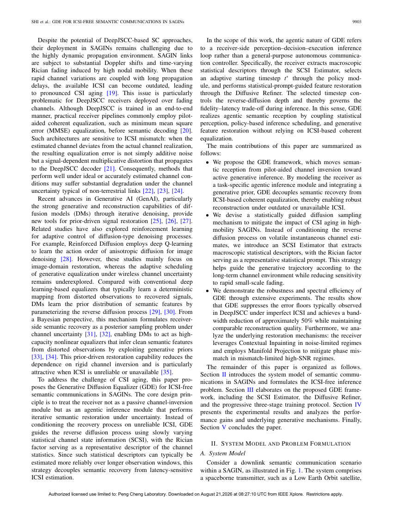</a><figcaption><b>架构/方法证据页</b>｜来源：《GDE: A Generative Diffusion Equalizer for ICSI-Free Semantic Communications in SAGINs》，PDF p.2；原图题/表题：The system comprises ICSI estimation. a spaceborne transmitter, such as a Low Earth Orbit satellite,。 <a href='https://doi.org/10.1109/tccn.2026.3709876'>核对论文</a></figcaption></figure><figure><a href='assets/2026_gde-a-generative-diffusion-equalizer-for-icsi-free-semantic-communications-in-sagins_result_p10.png' target='_blank'></a><figcaption><b>关键结果证据页</b>｜来源：《GDE: A Generative Diffusion Equalizer for ICSI-Free Semantic Communications in SAGINs》，PDF p.10；原图题/表题：Performance comparison on CIFAR-10 and DIV2K datasets versus different SNRs (KdB = 10 dB). (a) PSNR on CIFAR-10 dataset; (b) LPIPS on CIFAR-10 dataset; (c) PSNR on DIV2K dataset; (d) LPIPS on DIV2K dataset.。 <a href='https://doi.org/10.1109/tccn.2026.3709876'>核对论文</a></figcaption></figure></div>
</article>
<article class="paper" id="generative-semantic-communication-diffusion-models-beyond-bit-recovery" data-year="2026" data-tier="core">
  <div class="paper-head"><div><div><span class="tag core">核心纳入</span><span class="tag year">2026</span></div><h2>Generative Semantic Communication: Diffusion Models Beyond Bit Recovery</h2></div><a class="pdf" href="https://doi.org/10.1109/tccn.2026.3689849">DOI / IEEE 页面</a></div>
  <div class="facts"><div><b>作者</b>Eleonora Grassucci、Sergio Barbarossa、Danilo Comminiello</div><div><b>出版信息</b>Vol. 12, pp. 8171-8185</div><div><b>DOI / IEEE ID</b><a href="https://doi.org/10.1109/tccn.2026.3689849">10.1109/tccn.2026.3689849</a> / 11505923</div><div><b>任务</b>通用/多模态语义通信</div><div><b>技术谱系</b>学习式语义 feature；数字接口需由正文具体实现判定</div><div><b>年份口径</b>formal TCCN volume year</div></div>
  <div class="verdict"><b>是否属于严格数字语义通信：</b>系统层相关；没有足够证据把它判为严格数字语义通信。</div>
  <h3>实验设置</h3><div class="grid3"><div><b>数据集/场景</b>COCO、Cityscapes</div><div><b>Baseline</b>DeepJSCC、BPG、HM、FEC、Swin Transformer、ViT、GAN、VAE、PPO、SAC、SwinJSCC、JSCC、IB</div><div><b>指标与信道条件</b>PSNR、SSIM、LPIPS、FID、bpp、MSE、mAP、mIoU、recall、precision、NME、latency、FLOPs、FPS、MOS、WER、CER<br><span class="muted">SNR：10 dB、15 dB、20 dB、30 dB</span></div></div>
  <h3>Introduction 的六步讲述逻辑</h3><ol class='story'><li><b>已有进展：</b>eve the last year, a novel SIS model outperforms other approaches a better trade-off between compression rate and these ad hoc by involving a diffusion model to synthesize semantically performance metrics, with respect to state-of-the-art generative consistent high-quality scenes [9]. models.</li><li><b>现有问题：</b>The main contributions of this work can be summarized have often been limited to rather simple models such as as follows: small VAEs [39], [40] or pretrained GAN generators [38]. • We propose an image transmission system that is com- In addition, normalizing flows have started to be involved pliant with legacy systems and allows the recovery of in semantic communications to increase framework expres- semantic information about a class of relevant objects siveness [41].</li><li><b>为何重要：</b>Therefore, the idea is to if applied directly to the semantic maps, especially when this transmit only what is strictly necessary to achieve such a goal information is corrupted by the channel noise. most effectively, taking the wireless channel degradation into To correctly regenerate the received semantic content, we account.</li><li><b>提出方案：</b>The main contributions of this work can be summarized have often been limited to rather simple models such as as follows: small VAEs [39], [40] or pretrained GAN generators [38]. • We propose an image transmission system that is com- In addition, normalizing flows have started to be involved pliant with legacy systems and allows the recovery of in semantic communications to increase framework expres- semantic information about a class of relevant objects siveness [41].</li><li><b>解决机制：</b>A combination of GAN-based generators with even transmitting at a very low coding rate, thanks to the vector quantization in order to find out a suitable trade-off use of generative models at the receiver side; between image recovery and preservation of semantic content, • We introduce a novel noise-robust semantic diffusion even when transmitting at very low coding rates, was recently model capable of regenerating high-quality images even proposed [42].</li><li><b>核心主张与证据目标：</b>Since the one-hot encoded map is binary previous methods [38], [56], our receiver does not need to be and constant within each object, the combination of binary aware of the channel conditions and it exhibits good results one-hot encoding and BPG produces a highly compressed file also in the case of adverse channel conditions.</li></ol>
  <h3>方法、变量与优化</h3><p><b>系统/信息流：</b>PDF p.2：interest in using large in the case of highly deteriorated received data due to generative [36], [43], [44], [45], [46] and foundation [47] channel noise and large compression rates. models for semantic communication has grown, as testified • We show how the proposed method can be effectively by recent works [48], [49], [50], [51], [52], [53]. involved for different downstream tasks, such as object detection and depth estimati PDF p.2：resent a novel generative seman- The remainder of the paper is organized as follows. tic communication framework based on denoising diffusion Section II reports related works, Section III presents the probabilistic models (DDPMs) for synthesizing high-quality proposed framework and the problem setting, while Section IV images in order to preserve the transmitted semantic informa- shows the experimental evaluation and the analy PDF p.2：setting, while Section IV images in order to preserve the transmitted semantic informa- shows the experimental evaluation and the analysis of the tion for the application underlying the communication. The results. Finally, conclusions are drawn in Section V. proposed framework is compliant with the legacy system as it allows the incorporation of state-of-the-art source and channel II. R ELATED W ORK coding. The key idea is to PDF p.3：nsmit only what is strictly necessary to achieve such a goal information is corrupted by the channel noise. most effectively, taking the wireless channel degradation into To correctly regenerate the received semantic content, we account. Figure 1 presents the proposed architecture, including present a novel Denoising Diffusion Probabilistic Model both the sender and receiver sides. (DDPM), whose generation process is guided by</p><p><b>目标函数/联合训练证据：</b>PDF p.5：regenerate the images in inference. A visual representation of the encoder images from the semantic maps and then perform downstream and decoder blocks is shown in Fig. 2. tasks on them, which consist in object detection, recognition, and depth estimation. C. Loss Functions We train the semantic diffusion model with a combination A. Problem Setting of two loss functions. Considering an input image x and the In our experiments, PDF p.5：c maps and then perform downstream and decoder blocks is shown in Fig. 2. tasks on them, which consist in object detection, recognition, and depth estimation. C. Loss Functions We train the semantic diffusion model with a combination A. Problem Setting of two loss functions. Considering an input image x and the In our experiments, we conducted two analyses, each sequence of time steps t ∈ {0, . . . , T }, the corresponding √ d PDF p.5：model tries to predict the noise  to reconstruct the over a non-ideal communication channel. In practice, the effect reference image x according to the guidance of the semantic of channel noise on the received segmentation map is rather map y. The denoising loss function Ld takes the form of complicated, as it d</p>
  <h3>数字化方案与传输开销</h3><p><b>传输表示证据：</b>PDF p.2：allows the recovery of in semantic communications to increase framework expres- semantic information about a class of relevant objects siveness [41]. A combination of GAN-based generators with even transmitting at a very low coding rate, thanks to the vector quantization in order to find out a suitable trade-off use of generative models at the receiver side; between image recovery and preservation of semantic content, • We int PDF p.6：ures perceptual similarity between two images and is has a denoising component. We consider different channel correlated with human visual perception. In both cases, the scenarios, ranging from extremely degraded conditions to comparison is carried out in the latent space extracted by the perfect transmissions. InceptionV3 network [66] trained for image classification. A 1) Quality of Regenerated Images: Figures 3 and 4 show l PDF p.6：ransmissions. InceptionV3 network [66] trained for image classification. A 1) Quality of Regenerated Images: Figures 3 and 4 show low value of FID or LPIPS indicates that the two images are a comparison between our method and a set of competitive close in the latent space and thus perceived as similar. We methods. More specifically, the images in the leftmost column do not involve conventional pixel-wise image reconstruction o PDF p.10：8180 IEEE TRANSACTIONS ON COGNITIVE COMMUNICATIONS AND NETWORKING, VOL. 12, 2026 Fig. 7. Perceptual similarity (LPIPS) of images under low bit per pixel (BPP). Fig. 8. Example of how the BPG compression (quantizer parameter = The proposed method crucially reduces the bit rate while obtaining better 0.51, full image with BPP = 0.09 and semantic map with BPP = 0.005) LPIPS scores. affects the original image and a sample of the o</p><p><b>调制/信道编码线索：</b>ofdm、qpsk</p><p><b>可复核开销与缺失信息：</b>输入/分辨率线索：32×32、16×16、256 × 512、256 × 256。feature/token/latent 尺寸线索：正文未给出可稳定自动定位的条目。码本线索：正文未给出可稳定自动定位的条目。bit/bpp/速率线索：1 bit、0.09 BPP、0.005 BPP、0.02 BPP、0.17 BPP。CBR/压缩率线索：coding rate, thanks to the vector quantization in order to find out a suitable trade-off、coding rates, was recently。该论文偏系统/理论层，正文未必给出可复核的 encoder feature map 与 payload 长度。</p><div class="formula">\[N_{tx}=N_{payload}+N_{side}+N_{protection};\quad \text{缺失项必须标记为未知}\]</div>
  <h3>信道处理机制</h3><div class="channel"><p><b>分类：</b>类别 5：信道/资源进入系统优化，但 payload 数字化接口不完整</p><p><b>正文信道证据：</b>PDF p.1：Artificial Intelligence (AI) tools [1], [2], [3]. In produce photorealistic images preserving the semantic layout particular, the emerging paradigm of semantic communications [9], [10] in the so-called semantic image synthesis (SIS) can greatly benefit from effective knowledge representation task. The success of these models in countless domains, and tools made available from AI algorithms. Semantic communi- especially in the PDF p.1：altered by compression or propagation through a noisy channel and 9 April 2026; accepted 24 April 2026. Date of publication 4 May has not been investigated yet. This issue may prevent the 2026; date of current version 19 May 2026. This work was supported by effective deployment of diffusion models for communication the European Union under the Italian National Recovery and Resilience Plan (PNRR) of NextGenerationEU, partnershi PDF p.2：ly, generative semantic communication methods tions and datasets and we show how our method can generate have been introduced [35], [36]. Among them, generative photorealistic images consistent with the transmitted semantic adversarial networks have been the first generative tool to be information even in the case of extremely corrupted received involved in tasks such as image compression or denoising [37], layouts and in case PDF p.2：coding rates, was recently model capable of regenerating high-quality images even proposed [42]. In the last year, the interest in using large in the case of highly deteriorated received data due to generative [36], [43], [44], [45], [46] and foundation [47] channel noise and large compression rates. models for semantic communication has grown, as testified • We show how the proposed method can be effectively by recent works [</p><p><b>decoder 实际收到：</b>由论文系统模型定义的语义 feature、任务状态或传统译码后数据</p><p><b>是否联合优化：</b>是/部分：目标或训练证据与物理信道同时出现。</p><p><b>是否真正处理 bit/index/token/packet error：</b>未形成可复核的 bit/index/token 错误闭环。</p></div>
  <h3>主要结果、局限与 Codex 判断</h3><p><b>证据化结果：</b>PDF p.1：ve model to fulfill the scope of the transmission. Fur- objects in the scene, like pedestrians or cars, and to position thermore, we propose a training strategy to make the generative them accurately, possibly in a 3D environment. From this per- model robust against additive noise due to propagation through spective, the coding strategy can take advantage of intelligent the communication channel. We prove, through an in-depth PDF p.1：ise due to propagation through spective, the coding strategy can take advantage of intelligent the communication channel. We prove, through an in-depth tools, such as the extraction of image segmentation maps, assessment of multiple scenarios, that our method outperforms existing solutions in generating high-quality images with pre- image generation, 3D depth estimation from 2D images, etc. served semantic information even in PDF p.1：nder agreement N. TC20220919044. The associate editor coordinating the review of this article and approving it for publication was senting a novel generative semantic communication framework L. Wang. (Corresponding author: Eleonora Grassucci.) that is robust against distortion due to propagation through a The authors are with the Department of Information Engineering, Elec- noisy channel. The core of our framework is a robust PDF p.2：8172 IEEE TRANSACTIONS ON COGNITIVE COMMUNICATIONS AND NETWORKING, VOL. 12, 2026 objects present in the observed scene and enabling downstream Later, a new branch of artificial intelligence gained atten- tasks such as, for example, 3D depth estimation and object tion, relying on the capabilities of DNNs to generate new detection and counting at the receiver side. The sender extracts content. In such a generative modeling branc</p><p><b>独立判断：</b>没有完整离散接口，无法直接回答 bit/index/token 跳变问题。 未显式注入离散误码/丢包，鲁棒性结论不应外推到真实数字链路。</p>
  <div class="figs"><figure><a href='assets/2026_generative-semantic-communication-diffusion-models-beyond-bit-recovery_method_p6.png' target='_blank'></a><figcaption><b>架构/方法证据页</b>｜来源：《Generative Semantic Communication: Diffusion Models Beyond Bit Recovery》，PDF p.6；原图题/表题：we compare our method。 <a href='https://doi.org/10.1109/tccn.2026.3689849'>核对论文</a></figcaption></figure><figure><a href='assets/2026_generative-semantic-communication-diffusion-models-beyond-bit-recovery_result_p7.png' target='_blank'></a><figcaption><b>关键结果证据页</b>｜来源：《Generative Semantic Communication: Diffusion Models Beyond Bit Recovery》，PDF p.7；原图题/表题：Comparison among the methods for transmitted semantics and a fixed PSNR value of 10.。 <a href='https://doi.org/10.1109/tccn.2026.3689849'>核对论文</a></figcaption></figure></div>
</article>
<article class="paper" id="group-level-feature-aware-hybrid-coding-for-adaptive-task-oriented-tactile-communication" data-year="2026" data-tier="core">
  <div class="paper-head"><div><div><span class="tag core">核心纳入</span><span class="tag year">2026</span></div><h2>Group-Level Feature-Aware Hybrid Coding for Adaptive Task-Oriented Tactile Communication</h2></div><a class="pdf" href="https://doi.org/10.1109/tccn.2026.3710171">DOI / IEEE 页面</a></div>
  <div class="facts"><div><b>作者</b>Shengyu Zhang、Qi Zhang、Liuchang Yang、Yan Wang、Tao Jiang</div><div><b>出版信息</b>Vol. 12, pp. 9460-9473</div><div><b>DOI / IEEE ID</b><a href="https://doi.org/10.1109/tccn.2026.3710171">10.1109/tccn.2026.3710171</a> / 11595579</div><div><b>任务</b>触觉任务通信</div><div><b>技术谱系</b>量化 feature、bitstream 或数字调制符号</div><div><b>年份口径</b>formal TCCN volume year</div></div>
  <div class="verdict"><b>是否属于严格数字语义通信：</b>是或部分是：正文存在离散/量化接口；仍需检查它是否真的承受 bit/index error。</div>
  <h3>实验设置</h3><div class="grid3"><div><b>数据集/场景</b>CIFAR-10</div><div><b>Baseline</b>LDPC、Polar、QAM、HM、FEC、ViT、VAE、VQ-VAE、PPO、SAC、ASC、JSCC、VIB、IB、CLIP</div><div><b>指标与信道条件</b>FID、bitrate、MSE、mAP、accuracy、NME、latency、throughput、VoI、MOS、WER<br><span class="muted">SNR：0 dB、18.91 dB、8dB</span></div></div>
  <h3>Introduction 的六步讲述逻辑</h3><ol class='story'><li><b>已有进展：</b>Nevertheless, CDDM requires mod- relevant features with the bit reliability of polar codes, and eling for specific channel distributions, making it difficult to solves the problem of task failure under low-SNR. migrate to other scenarios.</li><li><b>现有问题：</b>Nevertheless, CDDM requires mod- relevant features with the bit reliability of polar codes, and eling for specific channel distributions, making it difficult to solves the problem of task failure under low-SNR. migrate to other scenarios.</li><li><b>为何重要：</b>Nevertheless, CDDM requires mod- relevant features with the bit reliability of polar codes, and eling for specific channel distributions, making it difficult to solves the problem of task failure under low-SNR. migrate to other scenarios.</li><li><b>提出方案：</b>3) An adaptive transmission mechanism is developed, To bridge this gap, this paper proposes a deep hybrid which dynamically adjusts the code rate based on source-channel coding (DHSCC) architecture.</li><li><b>解决机制：</b>Specifically, real-time channel feedback and group-level feature through the integration of the group-level importance predic- importance estimation.</li><li><b>核心主张与证据目标：</b>Only indicates the downsampled temporal dimension, with S being simple classification results are transmitted to the rendering the downsampling factor. terminal.</li></ol>
  <h3>方法、变量与优化</h3><p><b>系统/信息流：</b>PDF p.1：ucing deployment meet the rigid requirements of low latency and high reli- overhead and enhancing channel adaptability. Simulation and hardware prototype results validate the superior performance ability, and thereby resulting in reduced task execution of the proposed scheme over existing DJSCC methods on tactile accuracy or even operational failure. To this end, task- perception tasks. Moreover, additional tests on channel mi PDF p.2：viation from the Compared with DJSCC, DHSCC guides the collabora- digital communication architecture. Recently, some efforts tive work between deep learning-based neural networks and have attempted to quantify the neural network outputs to traditional channel encoders, and can automatically sched- build engineering-friendly TOC systems [15], [16], [17]. ule high-value semantic information to bit positions with However, the sup PDF p.2：eering feasibility [20]. 1) A novel task-oriented DHSCC framework is proposed In view of this, some works [21], [22] have revis- for edge-assisted tactile feedback communication, inte- ited the integration of deep learning-based source coding grating deep autoencoder structures with polar codes. techniques with classical channel coding techniques,like low- A residual product quantization (RPQ) method is intro- density parity-c PDF p.2：p learn- and mitigates the “cliff effect” through rate adaptation tech- ing to extract task-relevant features and leverages the niques. However, these mechanisms depend on independently error-correcting capabilities of polar codes to counteract trained source encoders, which hinders the achievement of channel errors. adaptive source-channel optimization. Besides this, Reference 2) A task-relevant coding scheme based on group-l</p><p><b>目标函数/联合训练证据：</b>PDF p.4：will be subsequent stages. presented in Section III-A. 4) Wireless Physical Layer: The wireless physical layer 3) Quantizer: To ensure compatibility with digital com- corresponds to the air-interface link in traditional communi- munication systems and enable end-to-end training of the cation systems [28], encompassing channel coding/decoding, proposed DHSCC framework, a quantization layer is intro- signal modulation/demodulati PDF p.5：two ends and enhances the feasibility R = Lq /Lc . It is worth noting that, in order to simplify system of DHSCC. design, we directly adopt the 5G-standard polar coding scheme (3GPP TS 38.212). In this scheme, the channel reliability B. Joint Optimization and Loss Function order is pre-defined in Table 5.3.1.2-1, eliminating the need for To achieve joint optimization of task performance and online computation of Bhattacharyya PDF p.6：rence, and their To stabilize the representation of discrete features and optimization direction is entirely driven by the task loss. prevent codebook collapse, we introduce a vector quantization It should be noted that this target mask is not a direct output loss function Lvq . This loss consists of a codebook up</p>
  <h3>数字化方案与传输开销</h3><p><b>传输表示证据：</b>PDF p.1：limitations tization and polar coding into an end-to-end neural network, [5]. Centered on bit-level correctness, this paradigm adopts enabling efficient feature compression and digitally compatible a uniform transmission strategy for data with different task bitstream transmission. In particular, a capsule network-based relevance, and neglects the differentiated contributions of group-level importance estimation module is desi PDF p.1：ible a uniform transmission strategy for data with different task bitstream transmission. In particular, a capsule network-based relevance, and neglects the differentiated contributions of group-level importance estimation module is designed, combined various bitstreams to the completion quality of tactile tasks with an adaptive feature group to achieve unequal error protec- tion (UEP) for critical tactile information and alle PDF p.2：ave attempted to quantify the neural network outputs to traditional channel encoders, and can automatically sched- build engineering-friendly TOC systems [15], [16], [17]. ule high-value semantic information to bit positions with However, the superposition of quantization and channel higher reliability for protection, thus giving full play to the noise significantly degrades task performance, especially in respective advantage PDF p.2：ave revis- for edge-assisted tactile feedback communication, inte- ited the integration of deep learning-based source coding grating deep autoencoder structures with polar codes. techniques with classical channel coding techniques,like low- A residual product quantization (RPQ) method is intro- density parity-check (LDPC) codes and polar codes [23]. duced to perform group-level quantization on features, This integration aims t</p><p><b>调制/信道编码线索：</b>4qam、ldpc、polar、qpsk</p><p><b>可复核开销与缺失信息：</b>输入/分辨率线索：32 × 32。feature/token/latent 尺寸线索：vector b0 ∈ R1×1280。码本线索：正文未给出可稳定自动定位的条目。bit/bpp/速率线索：128 bits、256-bit。CBR/压缩率线索：coding rates through end- against quantization loss、code rate based on、code rate problem within a fixed band- “cliff effect” and enhancing adaptabi、code rate asymmetry between the two ends and enhances the feasibility。数字 token/bitstream 需把 payload、header、FEC 与重传一并计入；论文只报 CBR/SNR 时不能反推唯一净 bit 数。</p><div class="formula">\[N_{tx}=N_{unit}b_{unit}+N_{header}+N_{FEC},\qquad CBR=\frac{N_{channel\ uses}}{N_{source\ samples}}\]</div>
  <h3>信道处理机制</h3><div class="channel"><p><b>分类：</b>类别 2–4 边界：数字接口进入无线链路，但是否端到端处理离散错误需看实现</p><p><b>正文信道证据：</b>PDF p.1：various bitstreams to the completion quality of tactile tasks with an adaptive feature group to achieve unequal error protec- tion (UEP) for critical tactile information and alleviate the “cliff [6]. Consequently, in large-scale tactile transmission scenar- effect” under time-varying channels. Meanwhile, a lightweight ios, such an undifferentiated transmission method leads to online learning mechanism is embedded to dynamicall PDF p.1：and real-time human-machine interaction, comes into prominence alongside the rapid devel- Nevertheless, TOC systems founded on separate learning and communication (SLC) schemes suffer from the “cliff opment of emerging technologies such as remote operation, effect” [9]. Under this phenomenon, task performance is virtual reality, and the tactile Internet [1]. Furthermore, this significantly degraded at low signal-to-noise ratio PDF p.1：more, this significantly degraded at low signal-to-noise ratios (SNR) and technology is dedicated to achieving accurate and timely improves abruptly once exceeding a critical threshold. The transmission of tactile information, with broad applications “cliff effect” causes unstable performance in varying channel in tele-medicine, industrial automation, and immersive VR conditions. In essence, the problem mainly stems from the s PDF p.1：cordingly, deep specifications that include ultra low latency and high relia- joint source-channel coding (DJSCC)-based TOC frameworks bility [2], [3], [4]. Nevertheless, the intrinsic unreliability of have been proposed [10], [11]. These frameworks integrate wireless channels, which is characterized by multipath fading, source compression and channel coding within a single neural burst noise, and other impairments, combined w</p><p><b>decoder 实际收到：</b>数字解调/译码后的 bit、index 或量化 feature；软信息接口若未明示则不能假定</p><p><b>是否联合优化：</b>是/部分：目标或训练证据与物理信道同时出现。</p><p><b>是否真正处理 bit/index/token/packet error：</b>部分：存在数字接口与信道模型，但若正文只报告 SNR/重建质量而未注入 bit/index error，就不能宣称解决跳变问题。</p></div>
  <h3>主要结果、局限与 Codex 判断</h3><p><b>证据化结果：</b>PDF p.1：ezing backbone parameters, reducing deployment meet the rigid requirements of low latency and high reli- overhead and enhancing channel adaptability. Simulation and hardware prototype results validate the superior performance ability, and thereby resulting in reduced task execution of the proposed scheme over existing DJSCC methods on tactile accuracy or even operational failure. To this end, task- perception tasks. Moreover, PDF p.1：on, hybrid source-channel coding, group-level importance based on the type of task, which may include object grasp- estimation, unequal error protection. ing or texture recognition, to ensure reliable delivery of I. I NTRODUCTION task-critical information and improve system efficiency and robustness. T ACTILE communication, which has emerged as a criti- cal enabler for immersive and real-time human-machine interaction, comes i PDF p.1：remote operation, effect” [9]. Under this phenomenon, task performance is virtual reality, and the tactile Internet [1]. Furthermore, this significantly degraded at low signal-to-noise ratios (SNR) and technology is dedicated to achieving accurate and timely improves abruptly once exceeding a critical threshold. The transmission of tactile information, with broad applications “cliff effect” causes unstable performance in varyi PDF p.1：hannel coding within a single neural burst noise, and other impairments, combined with resource- network. Besides, through the inclusion of channel noise mod- constrained system designs, poses substantial challenges to eling during the training process, DJSCC improves robustness in low-SNR environments [12]. Received 22 November 2025; revised 6 May 2026; accepted 29 June 2026. To further improve DJSCC frameworks’ robustness ag</p><p><b>独立判断：</b>未显式注入离散误码/丢包，鲁棒性结论不应外推到真实数字链路。</p>
  <div class="figs"><figure><a href='assets/2026_group-level-feature-aware-hybrid-coding-for-adaptive-task-oriented-tactile-communication_method_p2.png' target='_blank'>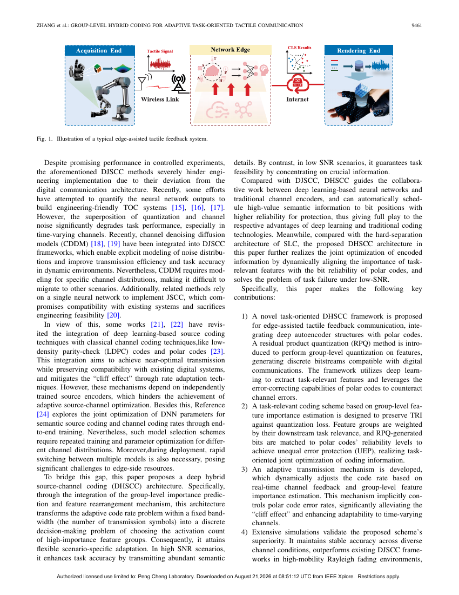</a><figcaption><b>架构/方法证据页</b>｜来源：《Group-Level Feature-Aware Hybrid Coding for Adaptive Task-Oriented Tactile Communication》，PDF p.2；原图题/表题：Illustration of a typical edge-assisted tactile feedback system.。 <a href='https://doi.org/10.1109/tccn.2026.3710171'>核对论文</a></figcaption></figure><figure><a href='assets/2026_group-level-feature-aware-hybrid-coding-for-adaptive-task-oriented-tactile-communication_result_p11.png' target='_blank'></a><figcaption><b>关键结果证据页</b>｜来源：《Group-Level Feature-Aware Hybrid Coding for Adaptive Task-Oriented Tactile Communication》，PDF p.11；原图题/表题：Ablation study results of different modules in the proposed DHSCC under different channels.。 <a href='https://doi.org/10.1109/tccn.2026.3710171'>核对论文</a></figcaption></figure></div>
</article>
<article class="paper" id="high-quality-and-secure-speech-transmission-at-low-bitrate-via-semantic-acoustic-hybrid-codi" data-year="2026" data-tier="core">
  <div class="paper-head"><div><div><span class="tag core">核心纳入</span><span class="tag year">2026</span></div><h2>High Quality and Secure Speech Transmission at Low Bitrate via Semantic-Acoustic Hybrid Coding for Low-Altitude Intelligent Systems</h2></div><a class="pdf" href="https://doi.org/10.1109/tccn.2026.3657147">DOI / IEEE 页面</a></div>
  <div class="facts"><div><b>作者</b>Bo Chen、Jianping An、Bowen Gui、Liang Zeng</div><div><b>出版信息</b>Vol. 12, pp. 5638-5648</div><div><b>DOI / IEEE ID</b><a href="https://doi.org/10.1109/tccn.2026.3657147">10.1109/tccn.2026.3657147</a> / 11361127</div><div><b>任务</b>语音语义传输</div><div><b>技术谱系</b>量化 feature、bitstream 或数字调制符号</div><div><b>年份口径</b>formal TCCN volume year</div></div>
  <div class="verdict"><b>是否属于严格数字语义通信：</b>是或部分是：正文存在离散/量化接口；仍需检查它是否真的承受 bit/index error。</div>
  <h3>实验设置</h3><div class="grid3"><div><b>数据集/场景</b>LibriSpeech</div><div><b>Baseline</b>HM、FEC、Swin Transformer、ViT、GAN、PPO、SAC、DeepSC、DeepSC-S、IB、BERT</div><div><b>指标与信道条件</b>FID、bitrate、mAP、accuracy、NME、QoE、VoI、MOS、WER、CER<br><span class="muted">SNR：正文未给出可稳定自动定位的条目</span></div></div>
  <h3>Introduction 的六步讲述逻辑</h3><ol class='story'><li><b>已有进展：</b>achieving superior speech FocalCodec [32] and SemantiCodec [33], also achieve similar quality. transmission quality at around 1 kbps. • Mask-based Automatic Bit Rate Allocation.</li><li><b>现有问题：</b>This module is integrated post-training of the solution for communication in limited bandwidth, it also main acoustic feature extractor and is fine-tuned indepen- has its limitations: synthesized speech often lacks sufficient dently.</li><li><b>为何重要：</b>Dur- remains unchanged for a particular speaker and only needs ing inference, the feature dimension c dynamically switches to be transmitted once after separation.</li><li><b>提出方案：</b>By replacing the original To address the limited speech fidelity of existing semantic voiceprint features, our approach effectively conceals codecs, we combine semantic coding with acoustic coding. identity attributes while preserving linguistic content and Our approach decomposes speech into speaker-specific and naturalness. fine-grained acoustic components, which a neural vocoder reconstructs into high-fidelity output nearly indistinguishable II.</li><li><b>解决机制：</b>S PEECH P RODUCTION M ODEL from the original, achieving high-fidelity voice reconstruction In order to support low bandwidth secure voice communi- at low bit rates.</li><li><b>核心主张与证据目标：</b>M ETHOD module maps m̂ and zu to a class-spectrogram sequence The semantic-acoustic hybrid model, as shown in s ∈ R128×T .</li></ol>
  <h3>方法、变量与优化</h3><p><b>系统/信息流：</b>PDF p.1：ustic hybrid coding framework that inte- effectively address the complex environments of bandwidth grates pre-trained semantic modeling with lightweight acoustic constraints and channel dynamics faced by low-altitude plat- representations within an end-to-end encoder-decoder architec- ture. The framework introduces a semantic-guided dynamic forms, while ensuring voice quality. This low-bit-rate regime masking mechanism that ad PDF p.1：brid coding framework that inte- effectively address the complex environments of bandwidth grates pre-trained semantic modeling with lightweight acoustic constraints and channel dynamics faced by low-altitude plat- representations within an end-to-end encoder-decoder architec- ture. The framework introduces a semantic-guided dynamic forms, while ensuring voice quality. This low-bit-rate regime masking mechanism that adaptively PDF p.1：gence and communication technologies, has voiceprint-related attributes while preserving semantic consis- emerged as a critical concern in low-altitude communication tency, it achieves effective speaker anonymization. Experimental results demonstrate that the proposed method provides high- security [8], [9], [10]. In low-altitude communications, speaker fidelity reconstruction with semantic enhancement, achieving identity feat PDF p.1：ing its effectiveness. HuBERT is another model Science and Technology, Beijing Institute of Technology, Beijing 100081, accurately reconstructing timbral and prosodic characteristics. China (e-mail: liang@bit.edu.cn). Polyak et al. [23] confirms that HuBERT’s encoder preserves Bowen Gui is with the Department of Electronic Engineering, Tsinghua University, Beijing 100084, China. semantic content while enabling high-fidelity re</p><p><b>目标函数/联合训练证据：</b>PDF p.2：ution x-vectors in the final stage of model training and complex neural network models to achieve high-quality voice compared the differences between the synthesized x-vector and transmission under more complex channel communication the target x-vector in the loss function. This allows the model conditions [26]. to learn how to synthesize speech from random x-vectors, The second branch focuses on treating linguistic features t PDF p.2：ntic-Acoustic Framework. To synthesize recover audio from linguistic information [28], [29]. Notably, higher-quality speech, we combine semantic and acoustic researchers have compressed voice data to bit rates below features. We employ adversarial training to jointly train 1 kbps [30]. Researchers at Facebook have demonstrated that the synthesizer components along with the discriminator. high-fidelity (70 MUSHRA) speech synthe PDF p.2：allocation. This module is integrated post-training of the solution for communication in limited bandwidth, it also main acoustic feature extractor and is fine-tuned indepen- has its limitations: synthesized speech often lacks sufficient dently. An auxiliary loss function is introduced to assess similarity to the</p>
  <h3>数字化方案与传输开销</h3><p><b>传输表示证据：</b>PDF p.1：d audio demos can be found at https://github.com/ [14], Lyra [15], and SoundStream [16], have made progress az1mus/Hybrid-Semantic-acoustic-Voice-Codec in speech coding. Notably, SoundStream employs an end-to- end deep neural architecture with residual vector quantization. At 3 kbps, it achieves 70 MUSHRA score, outperforming Received 14 June 2025; revised 11 September 2025 and 25 November traditional codecs. 2025; accepted 14 PDF p.1：re extraction, pre-trained mod- Research and Development Program of China under No. 2023YFC3310500 els such as BERT [17] have catalyzed the development and No. 2022YFC3302100, China Postdoctoral Science Foundation under of speech-centric frameworks like SpeechTokenizer [18], grant No. 2022M720447, the National Natural Science Foundation of China under grant No. 62301047, and the Fundamental Research Funds for the HuBERT [19], PDF p.2：ed indepen- has its limitations: synthesized speech often lacks sufficient dently. An auxiliary loss function is introduced to assess similarity to the original due to the information bottleneck bit rate consumption, with a dedicated hyperparameter imposed by quantized linguistic representations. Moreover, controlling the balance between compression and the speaker privacy and security remain underexplored in low- fidelity of PDF p.4：s MRF to obtain hidden features, and then high-dimensional intermediate sequence m. Prior work, such derives acoustic features or speaker voiceprint characteristics separately from the hidden features using CNN or RNN. as Soundstream [16], employs multi-layer quantization to implement similar bottleneck structures to achieve strong compression performance. However, these approaches rely on modeling and the decoding modules. Th</p><p><b>调制/信道编码线索：</b>未自动检出固定调制/信道编码名称</p><p><b>可复核开销与缺失信息：</b>输入/分辨率线索：50 × 16 × 2。feature/token/latent 尺寸线索：正文未给出可稳定自动定位的条目。码本线索：正文未给出可稳定自动定位的条目。bit/bpp/速率线索：3.6 kbps、2 kbps、10 kbps、6 kbps、3 kbps、1 kbps、365 bps、400bps、1600 bps、3200 bps、kbps、50 kbps、3.6kbps、1.7 kbps。CBR/压缩率线索：compression ratio and semantic。数字 token/bitstream 需把 payload、header、FEC 与重传一并计入；论文只报 CBR/SNR 时不能反推唯一净 bit 数。</p><div class="formula">\[N_{tx}=N_{unit}b_{unit}+N_{header}+N_{FEC},\qquad CBR=\frac{N_{channel\ uses}}{N_{source\ samples}}\]</div>
  <h3>信道处理机制</h3><div class="channel"><p><b>分类：</b>类别 2–4 边界：数字接口进入无线链路，但是否端到端处理离散错误需看实现</p><p><b>正文信道证据：</b>PDF p.1：g networks [2], [3], [4]. Studies [5], [6], [7] show that main- speaker identity leakage. To address these limitations, this paper taining a bit rate below 3.6 kbps, particularly around 2 kbps, presents a semantic-acoustic hybrid coding framework that inte- effectively address the complex environments of bandwidth grates pre-trained semantic modeling with lightweight acoustic constraints and channel dynamics faced by low-altit PDF p.1：ent-aware bit allocation. Moreover, by substituting of artificial intelligence and communication technologies, has voiceprint-related attributes while preserving semantic consis- emerged as a critical concern in low-altitude communication tency, it achieves effective speaker anonymization. Experimental results demonstrate that the proposed method provides high- security [8], [9], [10]. In low-altitude communications, speaker f PDF p.1：the review of this article and approving it for publication was J. Wang. version and encoding systems like SoVITS [12] and SoftVC (Corresponding author: Liang Zeng.) Bo Chen, Jianping An, and Liang Zeng are with the School of Cyberspace [22], validating its effectiveness. HuBERT is another model Science and Technology, Beijing Institute of Technology, Beijing 100081, accurately reconstructing timbral and prosodic characteristi PDF p.2：om the voice, confusing the speaker characteristics has attracted attention due to its unique approach to informa- alone, and finally using modern vocoders such as HiFiGAN tion processing. Communication systems based on semantics for speech synthesis, is an effective method for anonymizing extract different features to ensure accurate transmission of speaker characteristics. Champion [37] improved this approach essential seman</p><p><b>decoder 实际收到：</b>数字解调/译码后的 bit、index 或量化 feature；软信息接口若未明示则不能假定</p><p><b>是否联合优化：</b>是/部分：目标或训练证据与物理信道同时出现。</p><p><b>是否真正处理 bit/index/token/packet error：</b>部分：存在数字接口与信道模型，但若正文只报告 SNR/重建质量而未注入 bit/index error，就不能宣称解决跳变问题。</p></div>
  <h3>主要结果、局限与 Codex 判断</h3><p><b>证据化结果：</b>PDF p.1：- able performance in compressing speech into discrete semantic V OICE communication in low-altitude scenarios demands voice codecs that jointly optimize efficiency and security [1], particularly in the face of emerging AI-driven security representations with reduced bandwidth consumption. However, these approaches still face challenges in preserving perceptual threats and corresponding defense mechanisms in low-altitude quali PDF p.1：ts demonstrate that the proposed method provides high- security [8], [9], [10]. In low-altitude communications, speaker fidelity reconstruction with semantic enhancement, achieving identity features may be exploited by malicious actors for 88 MUSHRA score and outperforming conventional single- identification or tracking. channel low-bitrate codecs with near-perceptually lossless speech Redundancy-free speech coding methods hav PDF p.1：chieving identity features may be exploited by malicious actors for 88 MUSHRA score and outperforming conventional single- identification or tracking. channel low-bitrate codecs with near-perceptually lossless speech Redundancy-free speech coding methods have reduced reconstruction. The framework further enables semantic-driven speech coding bit rates to below 10 kbps. For example, adaptive bitrate control, offering flexible t PDF p.1：, Lyra [15], and SoundStream [16], have made progress az1mus/Hybrid-Semantic-acoustic-Voice-Codec in speech coding. Notably, SoundStream employs an end-to- end deep neural architecture with residual vector quantization. At 3 kbps, it achieves 70 MUSHRA score, outperforming Received 14 June 2025; revised 11 September 2025 and 25 November traditional codecs. 2025; accepted 14 January 2026. Date of publication 22 January 2026; da</p><p><b>独立判断：</b>未显式注入离散误码/丢包，鲁棒性结论不应外推到真实数字链路。</p>
  <div class="figs"><figure><a href='assets/2026_high-quality-and-secure-speech-transmission-at-low-bitrate-via-semantic-acoustic-hybrid-codi_method_p7.png' target='_blank'></a><figcaption><b>架构/方法证据页</b>｜来源：《High Quality and Secure Speech Transmission at Low Bitrate via Semantic-Acoustic Hybrid Coding for Low-Altitude Intelligent Systems》，PDF p.7；原图题/表题：Air-to-ground communication network for intelligent systems.。 <a href='https://doi.org/10.1109/tccn.2026.3657147'>核对论文</a></figcaption></figure><figure><a href='assets/2026_high-quality-and-secure-speech-transmission-at-low-bitrate-via-semantic-acoustic-hybrid-codi_result_p8.png' target='_blank'></a><figcaption><b>关键结果证据页</b>｜来源：《High Quality and Secure Speech Transmission at Low Bitrate via Semantic-Acoustic Hybrid Coding for Low-Altitude Intelligent Systems》，PDF p.8；原图题/表题：C OMPARISON OF S PEECH Q UALITY。 <a href='https://doi.org/10.1109/tccn.2026.3657147'>核对论文</a></figcaption></figure></div>
</article>
<article class="paper" id="joint-semantic-compression-and-massive-mimo-transmission-for-edge-video-analytics" data-year="2026" data-tier="core">
  <div class="paper-head"><div><div><span class="tag core">核心纳入</span><span class="tag year">2026</span></div><h2>Joint Semantic Compression and Massive MIMO Transmission for Edge Video Analytics</h2></div><a class="pdf" href="https://doi.org/10.1109/tccn.2026.3666538">DOI / IEEE 页面</a></div>
  <div class="facts"><div><b>作者</b>Peng Cui、Shujun Han、Ze Liu、Yunfei Luo、Xiaodong Xu、Xiaoyu Chi、Bingxuan Xu、Ping Zhang</div><div><b>出版信息</b>Vol. 12, pp. 6509-6523</div><div><b>DOI / IEEE ID</b><a href="https://doi.org/10.1109/tccn.2026.3666538">10.1109/tccn.2026.3666538</a> / 11403981</div><div><b>任务</b>视频/沉浸媒体无线传输</div><div><b>技术谱系</b>学习式语义 feature；数字接口需由正文具体实现判定</div><div><b>年份口径</b>formal TCCN volume year</div></div>
  <div class="verdict"><b>是否属于严格数字语义通信：</b>系统层相关；没有足够证据把它判为严格数字语义通信。</div>
  <h3>实验设置</h3><div class="grid3"><div><b>数据集/场景</b>CLIC</div><div><b>Baseline</b>HM、FEC、ARQ、ViT、GAN、PPO、SAC、IB</div><div><b>指标与信道条件</b>PSNR、FID、MSE、mAP、accuracy、precision、NME、latency、energy、VoI、MOS、WER、CER<br><span class="muted">SNR：正文未给出可稳定自动定位的条目</span></div></div>
  <h3>Introduction 的六步讲述逻辑</h3><ol class='story'><li><b>已有进展：</b>Downloaded on August 21,2026 at 08:28:56 UTC from IEEE Xplore.</li><li><b>现有问题：</b>The authors in [16] optimized edge server Another critical challenge in effective resource allocation density and semantic compression ratio to maximize a utility for edge video analytics lies in establishing a suitable traffic function, which includes task accuracy and the probability model, which accurately captures the statistical character- of average latency below a threshold.</li><li><b>为何重要：</b>The authors in [16] optimized edge server Another critical challenge in effective resource allocation density and semantic compression ratio to maximize a utility for edge video analytics lies in establishing a suitable traffic function, which includes task accuracy and the probability model, which accurately captures the statistical character- of average latency below a threshold.</li><li><b>提出方案：</b>Secondly, we propose the tightest MIMO-based task-oriented semantic communication, which upper bound of queuing delay violation probability maximizes conditional mutual information for classification (UB-QDVP) and its stability condition. tasks, but assumes instantaneous transmission.</li><li><b>解决机制：</b>The authors 2) We design a novel performance metric jointly evalu- in [9] introduced semantic security metrics for IRS-enhanced ating task accuracy and stochastic delay bounds, so semantic communication, mapping application-layer security as to quantitatively characterize the trade-off between requirements to the physical layer, yet without incorporating the task accuracy and the timeliness of intelligent task delay constraints.</li><li><b>核心主张与证据目标：</b>Detailed numerical results are provided in multiplexing (OFDM) based and semantic-aware communica- Section VI, which is followed by the paper conclusions in tion network for edge video analytics as illustrated in Fig.</li></ol>
  <h3>方法、变量与优化</h3><p><b>系统/信息流：</b>PDF p.4：ytics is shown in a result, 0 &lt; r̃k &lt; m̃k &lt; r̂k . Fig. 2, including the semantic transmitter module, the massive- C. Channel Estimation and Data Transmission MIMO channel module and the semantic receiver module. The semantic transmitter consists of a semantic encoder, a Following common practice in cross-layer resource alloca- semantic compression module and a channel encoder. Specifi- tion for *massive-MIMO-assisted video ser PDF p.4：e- C. Channel Estimation and Data Transmission MIMO channel module and the semantic receiver module. The semantic transmitter consists of a semantic encoder, a Following common practice in cross-layer resource alloca- semantic compression module and a channel encoder. Specifi- tion for *massive-MIMO-assisted video services [20], [21], cally, the semantic information a is extracted from the source [22], we assume independent Ra PDF p.4：hat the semantic distortion can lower the performance of intelligent channels are block fading [23], i.e., the channel can be tasks. Then, the compressed semantic information is encoded decomposed into coherence intervals of duration Tc seconds by the channel encoder as symbols q for wireless transmission. and bandwidth Bc Hz. The fading channel matrix remains The wireless transmission is based on massive-MIMO, substantially u PDF p.4：ed The semantic receiver supports diverse intelligent tasks, mutually orthogonal pilot sequences of length τp , where such as video analytics. The received symbols are finally K ≤ τp ≤ τc , so that the edge server can distinguish the decoded through a channel decoder and a semantic decoder channels from different devices. This assumption is valid in to complete the edge video analytics tasks. typical scenarios where user mobil</p><p><b>目标函数/联合训练证据：</b>PDF p.1：sion and the accuracy of intelligent task execution. By The integration of semantic communication [4] and optimizing pilot sequence length, pilot power, data power, and massive-MIMO [5] can enable reliable communication for semantic compression ratio jointly, we maximize the weighted edge video analytics tasks, where the former minimizes data sum task reliability. Furthermore, we propose a power and semantic compression ratio PDF p.3：MASSIVE MIMO TRANSMISSION 6511 TABLE II L IST OF M AIN S YMBOLS power, data power and semantic compression ratio. Firstly, we model the multi-device joint optimization as a weighted sum utility maximization problem. Sec- ondly, we reduce the complexity of the optimization problem by deriving the optimal energy budget and opti- mal pilot sequence length. Thirdly, we reformulate the optimization problem in a decentralized partia PDF p.3：e model the multi-device joint optimization as a weighted sum utility maximization problem. Sec- ondly, we reduce the complexity of the optimization problem by deriving the optimal energy budget and opti- mal pilot sequence length. Thirdly, we reformulate the optimization problem in a decentralized partially obser</p>
  <h3>数字化方案与传输开销</h3><p><b>传输表示证据：</b>PDF p.2：emantic compression and massive-MIMO transmission semantic communications, but did not explicitly model or scheme for edge video analytics. The key contributions are optimize latency. The authors in [7] proposed a scalable summarized as follows. task-oriented quantization and communication framework for 1) We derive the stochastic delay bound for intelligent multi-agent systems, maximizing the average return perfor- task trans</p><p><b>调制/信道编码线索：</b>ofdm</p><p><b>可复核开销与缺失信息：</b>输入/分辨率线索：960 × 1920。feature/token/latent 尺寸线索：正文未给出可稳定自动定位的条目。码本线索：正文未给出可稳定自动定位的条目。bit/bpp/速率线索：100 Mbps、200 Mbps。CBR/压缩率线索：compression ratio jointly, we maximize the weighted edge video analytics tasks, where th、compression ratio allocation (PSCRA) algorithm, which redundancy while the latter enhances、compression ratio to maximize a utility、compression ratio and wireless resource、compression ratio、compression ratio refers to the、compression ratio ok , the average rate of video streams can、compression ratio can save channel、compression ratio for all end devices so as ppk ≥ 0, pdk ≥ 0,、compression ratio is subject to。该论文偏系统/理论层，正文未必给出可复核的 encoder feature map 与 payload 长度。</p><div class="formula">\[N_{tx}=N_{payload}+N_{side}+N_{protection};\quad \text{缺失项必须标记为未知}\]</div>
  <h3>信道处理机制</h3><div class="channel"><p><b>分类：</b>类别 5：信道/资源进入系统优化，但 payload 数字化接口不完整</p><p><b>正文信道证据：</b>PDF p.1：mber, IEEE, Ze Liu, Yunfei Luo, Xiaodong Xu , Senior Member, IEEE, Xiaoyu Chi , Bingxuan Xu , Graduate Student Member, IEEE, and Ping Zhang , Fellow, IEEE Abstract—The advancement of artificial intelligence (AI) tech- by traffic cameras, and power equipment defect identification nologies has catalyzed widespread deployment of emerging video by unmanned aerial vehicles (UAVs). However, continuous analytics applications, particu PDF p.1：loading video frames to edge servers constrained conditions poses a critical challenge. To address is a feasible technical approach, the real-time transmission of this problem, this paper proposes a joint semantic compression massive task data consumes scarce wireless channel resources, and massive multiple-input and multiple-output (massive-MIMO) consequently leading to critical issues such as network con- transmission scheme PDF p.1：- transmission scheme for edge video analytics. Specifically, we design a task-oriented performance metric named task reliability, gestion [3]. To address the issues, video data compression and jointly evaluating the stochastic delay bound of intelligent task wireless channel capacity expansion are promising directions. transmission and the accuracy of intelligent task execution. By The integration of semantic communication [4 PDF p.1：etc. However, they rarely consider and Grant L242012. The associate editor coordinating the review of this strict latency constraints for latency-sensitive intelligent tasks. article and approving it for publication was R. Li. (Corresponding authors: How to effectively and fairly meet the strict requirements of Shujun Han; Xiaodong Xu.) Peng Cui, Xiaodong Xu, Xiaoyu Chi, Bingxuan Xu, and Ping Zhang latency-sensitive intelligen</p><p><b>decoder 实际收到：</b>由论文系统模型定义的语义 feature、任务状态或传统译码后数据</p><p><b>是否联合优化：</b>是/部分：目标或训练证据与物理信道同时出现。</p><p><b>是否真正处理 bit/index/token/packet error：</b>未形成可复核的 bit/index/token 错误闭环。</p></div>
  <h3>主要结果、局限与 Codex 判断</h3><p><b>证据化结果：</b>PDF p.1：trans- strate that our resource allocation scheme achieves superior mission of every bit, but in transmitting task-relevant semantic system utility compared to baseline methods, while the PSCRA information based on which the semantic receiver accom- algorithm outperforms conventional multi-agent reinforcement learning algorithms. plishes target tasks [4], whether classification, inference or decision-making. By preserving deep PDF p.1：king. By preserving deep semantic fidelity instead Index Terms—Stochastic network calculus, massive-MIMO, of pursuing bit-level accuracy, the task-oriented semantic task-oriented communication, multi-agent soft actor-critic. communication system significantly reduces redundant trans- I. I NTRODUCTION missions. On the other hand, massive-MIMO systems have at least the following benefits [6]: high-precision beamform- T HE demand PDF p.1：cations, Beijing The accuracy and timeliness requirements of intelligent 100876, China (e-mail: cuipeng@bupt.edu.cn; xuxiaodong@bupt.edu.cn; xiaoyu chi@bupt.edu.cn; xubingxuan@bupt.edu.cn; pzhang@bupt.edu.cn). tasks may conflict. While semantic communications improve Shujun Han is with the National Engineering Research Center for Mobile bandwidth efficiency by eliminating redundant data transmis- Network Technologies, Beijing PDF p.1：Engineering Research Center for Mobile bandwidth efficiency by eliminating redundant data transmis- Network Technologies, Beijing University of Posts and Telecommunications, Beijing 100876, China (e-mail: hanshujun@bupt.edu.cn). sion, this compression process reduces the richness of semantic Ze Liu is with Cloud Network Technology Center, MIGU Company Ltd., information available for intelligent task execution, potentially Beij</p><p><b>独立判断：</b>没有完整离散接口，无法直接回答 bit/index/token 跳变问题。 未显式注入离散误码/丢包，鲁棒性结论不应外推到真实数字链路。</p>
  <div class="figs"><figure><a href='assets/2026_joint-semantic-compression-and-massive-mimo-transmission-for-edge-video-analytics_method_p3.png' target='_blank'>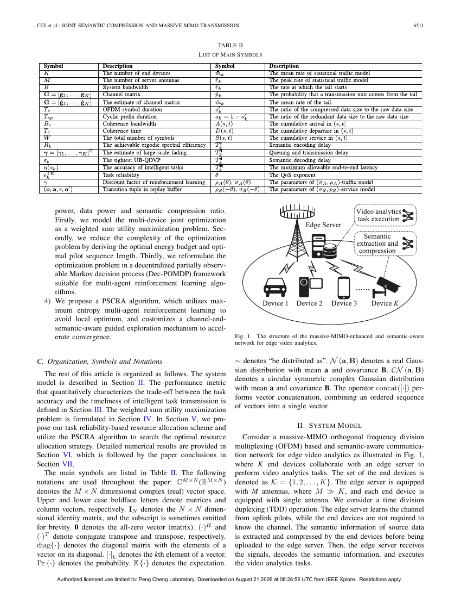</a><figcaption><b>架构/方法证据页</b>｜来源：《Joint Semantic Compression and Massive MIMO Transmission for Edge Video Analytics》，PDF p.3；原图题/表题：The structure of the massive-MIMO-enhanced and semantic-aware network for edge video analytics.。 <a href='https://doi.org/10.1109/tccn.2026.3666538'>核对论文</a></figcaption></figure><figure><a href='assets/2026_joint-semantic-compression-and-massive-mimo-transmission-for-edge-video-analytics_result_p11.png' target='_blank'></a><figcaption><b>关键结果证据页</b>｜来源：《Joint Semantic Compression and Massive MIMO Transmission for Edge Video Analytics》，PDF p.11；原图题/表题：UB-QDVP and task reliability versus mean rate. under different average powers.。 <a href='https://doi.org/10.1109/tccn.2026.3666538'>核对论文</a></figcaption></figure></div>
</article>
<article class="paper" id="joint-trajectory-planning-and-semantic-communication-design-for-urban-low-altitude-uavs" data-year="2026" data-tier="core">
  <div class="paper-head"><div><div><span class="tag core">核心纳入</span><span class="tag year">2026</span></div><h2>Joint Trajectory Planning and Semantic Communication Design for Urban Low-Altitude UAVs</h2></div><a class="pdf" href="https://doi.org/10.1109/tccn.2025.3626348">DOI / IEEE 页面</a></div>
  <div class="facts"><div><b>作者</b>Yixiao Feng、Zhengda Wu、Yining Wang</div><div><b>出版信息</b>Vol. 12, pp. 3846-3861</div><div><b>DOI / IEEE ID</b><a href="https://doi.org/10.1109/tccn.2025.3626348">10.1109/tccn.2025.3626348</a> / 11219023</div><div><b>任务</b>语义网络与资源分配</div><div><b>技术谱系</b>学习式语义 feature；数字接口需由正文具体实现判定</div><div><b>年份口径</b>formal TCCN volume year</div></div>
  <div class="verdict"><b>是否属于严格数字语义通信：</b>系统层相关；没有足够证据把它判为严格数字语义通信。</div>
  <h3>实验设置</h3><div class="grid3"><div><b>数据集/场景</b>正文未给出可稳定自动定位的条目</div><div><b>Baseline</b>HM、FEC、ViT、GAN、YOLO、PPO、SAC、ASC、IB、CLIP</div><div><b>指标与信道条件</b>FID、mAP、accuracy、precision、NME、latency、energy、VoI、MOS、WER、CER<br><span class="muted">SNR：2 DB</span></div></div>
  <h3>Introduction 的六步讲述逻辑</h3><ol class='story'><li><b>已有进展：</b>mize the transmission requirements (e.g., priority and latency) of semantic information extraction parameters and transmis- the original data in which each bit in the original source data sion power allocation for each low-altitude UAV while is treated equally.</li><li><b>现有问题：</b>However, such resource allocation methods ensuring that low-altitude UAVs can successfully find are not suitable for semantic communication networks since short trajectories. they cannot analyze the characteristics of semantic informa- • To solve this challenging problem, we first propose tion, such as the importance and task relevance of semantic a vertex extraction algorithm.</li><li><b>为何重要：</b>In [19], the authors allocated bandwidth resources algorithm uses two steps, which are the dilation step based on the confidence of semantic information in image and the key vertex extraction step, to effectively adjust data so as to improve the quality of important SI transmitted the data size and precision of the semantic informa- by semantic communication networks.</li><li><b>提出方案：</b>In addition, we propose an in [19] ignored the direct impact of resource allocation on attention-enhanced CNN-based proximal policy optimiza- the performance of task oriented semantic communications. tion (ACPPO) algorithm that can build the relationship The work in [20] iteratively optimized the compression rate between semantic information extraction parameters, and resource allocation for semantic information according transmission power allocation and the average REI, using to the correlation between semantic information and the task its ability of processing high-dimensional aerial image. goal to maximize the probability of task success.</li><li><b>解决机制：</b>The authors Simulation results demonstrate that the proposed framework in [21] used reinforcement learning (RL) algorithms to allo- can reduce transmission power by up to 90.90% while increas- cate sub-carriers based on the correlation between semantic ing trajectory length by only 3.80% compared to transmitting information and original data to improve the accuracy of complete semantic maps.</li><li><b>核心主张与证据目标：</b>The sequence of grids that the leader vertices in Sit (αit , βit , ϵti , V ti ) and sti,n (αit , βit , ϵti ), respectively. needs to transmit to follower i can be represented as The process of the leader extracting semantic information from partial aerial image X ti is shown in Fig.</li></ol>
  <h3>方法、变量与优化</h3><p><b>系统/信息流：</b>PDF p.2：r allocation and the average REI, using to the correlation between semantic information and the task its ability of processing high-dimensional aerial image. goal to maximize the probability of task success. The authors Simulation results demonstrate that the proposed framework in [21] used reinforcement learning (RL) algorithms to allo- can reduce transmission power by up to 90.90% while increas- cate sub-carriers based on th PDF p.4：power used to transmit semantic tion decreases and the length of the planned trajectory may information can be expressed as increase.  pt (0, 0, 0) − pti (αit , βit , ϵti ) Υ∆ αit , βit , ϵti = i , (11) D. Problem Formulation pti (0, 0, 0) Given the defined system model, our goal is to maximize the where pti (0, 0, 0) and pti (αit , βit , ϵit ) represent the power used average REI of all followers while satisfying the transmi PDF p.4：ation, respectively. power allocation, and the efficiency of trajectory planning. The optimization problem can be formulated as follows: F T C. Semantic Map Reconstruction and Trajectory Planning 1 1 X X t t t t 2 max Ψ α , β , ϵ , t ∈ ∀T (15) In the studied system model, we ignore the packet errors αti ,βit ,ϵti F T i=1 t=1 i i i i caused by physical channel transmission. Based on the F received semantic information Sit (αit PDF p.14：itude UAV trajectory planning. Although the see that the proposed semantic communication framework can semantic information extraction process may lead to slight reduce the transmission power by 95.64% with only a 3.99% extensions of planned trajectories, the proposed framework Authorized licensed use limited to: Peng Cheng Laboratory. Downloaded on August 21,2026 at 08:29:26 UTC from IEEE Xplore. Restrictions apply.</p><p><b>目标函数/联合训练证据：</b>PDF p.1：REI) that jointly considers the reduction in including representation of task-oriented semantic informa- transmission power and the maintenance of trajectory length. tion, optimization of semantic-aware resource allocation, and The problem is formulated as an optimization problem whose the complex trade-off between resource overhead and task goal is to maximize the average REI of each low-altitude performance [7], [8], [9]. UA PDF p.2：cation, REI jointly con- in UAV networks. siders the transmission power reduction and the trajectory A number of existing works such as [17], [18], [19], [20], length maintenance. [21], [22], and [23] studied resource allocation technologies • We formulate an optimization problem that aims to max- in wireless networks. The works in [17] and [18] allocated imize the average REI while satisfying both power and resource block and PDF p.4：nt and power constraint. This optimization image X ti and the power used to transmit the extracted problem includes semantic information precision adjustment, semantic information, respectively. power allocation, and the efficiency of trajectory planning. The optimization problem can be formulated as follows: F T</p>
  <h3>数字化方案与传输开销</h3><p><b>传输表示证据：</b>PDF p.1：tional RL algorithms. [13], and [14] studied image semantic communication sys- tems. The authors in [10] used convolutional neural networks Index Terms— Semantic communications, trajectory planning, reinforcement learning (RL), UAV networks. (CNNs) to extract feature maps from images as semantic information for image recovery tasks. However, the semantic I. I NTRODUCTION information extraction models proposed in [10] are compu</p><p><b>调制/信道编码线索：</b>未自动检出固定调制/信道编码名称</p><p><b>可复核开销与缺失信息：</b>输入/分辨率线索：正文未给出可稳定自动定位的条目。feature/token/latent 尺寸线索：正文未给出可稳定自动定位的条目。码本线索：正文未给出可稳定自动定位的条目。bit/bpp/速率线索：正文未给出可稳定自动定位的条目。CBR/压缩率线索：正文未给出可稳定自动定位的条目。该论文偏系统/理论层，正文未必给出可复核的 encoder feature map 与 payload 长度。</p><div class="formula">\[N_{tx}=N_{payload}+N_{side}+N_{protection};\quad \text{缺失项必须标记为未知}\]</div>
  <h3>信道处理机制</h3><div class="channel"><p><b>分类：</b>类别 5：信道/资源进入系统优化，但 payload 数字化接口不完整</p><p><b>正文信道证据：</b>PDF p.2：ource allocation methods ensuring that low-altitude UAVs can successfully find are not suitable for semantic communication networks since short trajectories. they cannot analyze the characteristics of semantic informa- • To solve this challenging problem, we first propose tion, such as the importance and task relevance of semantic a vertex extraction algorithm. The vertex extraction information. In [19], the authors allocated PDF p.2：extraction algorithm. The vertex extraction information. In [19], the authors allocated bandwidth resources algorithm uses two steps, which are the dilation step based on the confidence of semantic information in image and the key vertex extraction step, to effectively adjust data so as to improve the quality of important SI transmitted the data size and precision of the semantic informa- by semantic communication networks. Ho PDF p.3：gh to guide its trajectory where g αit , βit , ϵti , V i is the semantic information extraction planning. To minimize the total amount of data transmitted algorithm that will be specified in Section III-A with αit , βit , to all followers while ensuring the effectiveness of trajectory and ϵti being the semantic information extraction parameters planning, the leader uses the semantic communication tech- used to adjust the data PDF p.4：ational complexity, trajec- leader to follower i, and G is the constant antenna gain of tory accuracy and obstacle avoidance capabilities. 4πdt f the UAV. Lti = 10α log10 ( vci c ) is the large-scale fading Since the proposed semantic information extraction effect, where α &gt; 0 is the path loss exponent, fc is the algorithm enables the leader to adjust the precision of building electromagnetic wave frequency, vc is the speed of</p><p><b>decoder 实际收到：</b>由论文系统模型定义的语义 feature、任务状态或传统译码后数据</p><p><b>是否联合优化：</b>是/部分：目标或训练证据与物理信道同时出现。</p><p><b>是否真正处理 bit/index/token/packet error：</b>未形成可复核的 bit/index/token 错误闭环。</p></div>
  <h3>主要结果、局限与 Codex 判断</h3><p><b>证据化结果：</b>PDF p.1：mantic communications in UAV performance of the proposed semantic communication frame- work, we propose a mathematical metric, called reconstruction networks for trajectory planning task faces many challenges, efficiency index (REI) that jointly considers the reduction in including representation of task-oriented semantic informa- transmission power and the maintenance of trajectory length. tion, optimization of semantic-aware PDF p.1：ic communications show significant potential in build the relationship between optimization variables and the improving communication efficiency while ensuring transmis- average REI. Simulation results demonstrate that the proposed ACPPO algorithm achieves an improvement of up to 48.0% on sion reliability. A number of works such as [10], [11], [12], the average REI compared to traditional RL algorithms. [13], and [14] studied PDF p.2：d semantic information processing Compared to existing semantic communication works that and resource allocation strategies for trajectory planning task focus on reconstruction or classification, REI jointly con- in UAV networks. siders the transmission power reduction and the trajectory A number of existing works such as [17], [18], [19], [20], length maintenance. [21], [22], and [23] studied resource allocation technologies PDF p.2：x extraction information. In [19], the authors allocated bandwidth resources algorithm uses two steps, which are the dilation step based on the confidence of semantic information in image and the key vertex extraction step, to effectively adjust data so as to improve the quality of important SI transmitted the data size and precision of the semantic informa- by semantic communication networks. However, the work tion for trajec</p><p><b>独立判断：</b>没有完整离散接口，无法直接回答 bit/index/token 跳变问题。 未显式注入离散误码/丢包，鲁棒性结论不应外推到真实数字链路。 未报告统一可复核的 payload bit 数/CBR，跨论文带宽比较受限。</p>
  <div class="figs"><figure><a href='assets/2026_joint-trajectory-planning-and-semantic-communication-design-for-urban-low-altitude-uavs_method_p11.png' target='_blank'></a><figcaption><b>架构/方法证据页</b>｜来源：《Joint Trajectory Planning and Semantic Communication Design for Urban Low-Altitude UAVs》，PDF p.11；原图题/表题：An example of semantic information extracted by the proposed algorithm.。 <a href='https://doi.org/10.1109/tccn.2025.3626348'>核对论文</a></figcaption></figure><figure><a href='assets/2026_joint-trajectory-planning-and-semantic-communication-design-for-urban-low-altitude-uavs_result_p13.png' target='_blank'></a><figcaption><b>关键结果证据页</b>｜来源：《Joint Trajectory Planning and Semantic Communication Design for Urban Low-Altitude UAVs》，PDF p.13；原图题/表题：The reduction rate of the power of the considered algorithms during。 <a href='https://doi.org/10.1109/tccn.2025.3626348'>核对论文</a></figcaption></figure></div>
</article>
<article class="paper" id="knowledge-driven-3d-semantic-spectrum-map-ke-vq-transformer-based-aav-semantic-communication" data-year="2026" data-tier="core">
  <div class="paper-head"><div><div><span class="tag core">核心纳入</span><span class="tag year">2026</span></div><h2>Knowledge-Driven 3D Semantic Spectrum Map: KE-VQ-Transformer-Based AAV Semantic Communication and Map Completion</h2></div><a class="pdf" href="https://doi.org/10.1109/tccn.2025.3641514">DOI / IEEE 页面</a></div>
  <div class="facts"><div><b>作者</b>Wei Wu、Lingyi Wang、Fuhui Zhou、Zhaohui Yang、Qihui Wu</div><div><b>出版信息</b>Vol. 12, pp. 5120-5135</div><div><b>DOI / IEEE ID</b><a href="https://doi.org/10.1109/tccn.2025.3641514">10.1109/tccn.2025.3641514</a> / 11282491</div><div><b>任务</b>点云/三维场景传输或理解</div><div><b>技术谱系</b>VQ/codebook index 或量化 latent 的离散接口</div><div><b>年份口径</b>formal TCCN volume year</div></div>
  <div class="verdict"><b>是否属于严格数字语义通信：</b>是或部分是：正文存在离散/量化接口；仍需检查它是否真的承受 bit/index error。</div>
  <h3>实验设置</h3><div class="grid3"><div><b>数据集/场景</b>正文未给出可稳定自动定位的条目</div><div><b>Baseline</b>LDPC、QAM、HM、FEC、Swin Transformer、ViT、GAN、VAE、VQ-VAE、PPO、SAC、IB</div><div><b>指标与信道条件</b>FID、MSE、mAP、accuracy、precision、NME、latency、energy、FLOPs、semantic similarity、VoI、MOS、WER、CER<br><span class="muted">SNR：0 dB、12 dB、30 dB</span></div></div>
  <h3>Introduction 的六步讲述逻辑</h3><ol class='story'><li><b>已有进展：</b>Moreover, the authors completion methods based on DL have been widely utilized in [46] proposed the conceptual space with knowledge with the prediction ability [33], [34], [35], [36].</li><li><b>现有问题：</b>However, the representation, which can describe the semantics in an majority of the works [33], [34], [35], [36] considered the intuitive and interpretable way.</li><li><b>为何重要：</b>S YSTEM M ODEL AND P ROBLEM F ORMULATION A practical air-to-ground scenario is considered, where A.</li><li><b>提出方案：</b>To better spectrum semantics over the physical channel, and the facilitate the measurement and characterize the coordinate ground user completes the spectrum map, with limited positions, the target space S is first considered as a cuboid spectrum data based on the spectrum semantics. with the dimensions of L × W × H, where L, W and H • We propose a novel knowledge-enhanced semantic are respectively the length, width, and height of S.</li><li><b>解决机制：</b>Then the framework for spectrum map completion.</li><li><b>核心主张与证据目标：</b>Gt λ2 PL(dxT,i ,x ) = −10 log10 + Gθ , (1) • The simulation demonstrates the superior completion per- (4πdxT,i ,x )2 formance of the proposed KE-VQ-Transformer compared where dxT,i ,x is the distance between the transmitter xT,i and to the state-of-the-art benchmark schemes in terms of the receiver x, Gt represents the antenna gain, the term λ is the root KMSE (RKMSE).</li></ol>
  <h3>方法、变量与优化</h3><p><b>系统/信息流：</b>PDF p.1：online training method is developed with supervised and Since statistical machine learning can easily be misled by superfi- unsupervised knowledge loss. The simulation demonstrates that cial data correlations with the lack of interpretability, we propose our proposed scheme outperforms the state-of-the-art benchmark a novel knowledge-enhanced semantic spectrum map completion schemes in terms of RKMSE. framework with two expert PDF p.2：ct critical duced in [40]. Moreover, the reconstruction task performance semantic information specific to a given task while discard- in [40] demonstrated the superior generation capabilities of ing irrelevant data [18], [19], [20], [21], [22], [23], thus autoencoders with crippled data. The authors in [41] investi- significantly enhancing the spectrum efficiency and ensuring gated the adaptive semantic-bit quantization method PDF p.2：nding to system-level tasks, the works efficiency and perform the 3D spectrum map completion task. in [42] and [44] investigated the causal reasoning enhanced semantic communication networks. Besides, the authors in [45] proposed a knowledge-enhanced semantic decoder, A. Related Work leveraging facts in the knowledge base to facilitate semantic 1) Spectrum Map Completion: Intelligent spectrum map reasoning and decoding process PDF p.3：5122 IEEE TRANSACTIONS ON COGNITIVE COMMUNICATIONS AND NETWORKING, VOL. 12, 2026 the robustness, efficiency and interpretability of spectrum two-stage training method. Section VI presents the simulation map completion. In the proposed framework, the real-world results. Finally, Section VII concludes this paper. physical knowledge of signal propagation and channel fading The real matrix set with size x × y is denoted by Rx×y ,</p><p><b>目标函数/联合训练证据：</b>PDF p.5：e 3D spectrum map. Hence, we expect a small gap interpretability and robust performance of the 3D semantic between the actual spectrum map Ωf and the reconstructed spectrum completion, especially when the number of trans- spectrum map Ω b f . In [33], the MSE loss function is used to mitters at the target monitoring space is unknown. Hence, evaluate this gap. Similarly, the 3D spectrum map reconstruc- we adopt the spectrum kno PDF p.6：Different from the data loss, the knowledge loss serves as the criterion constraint for the output of the decoder, i.e., the reconstructed 3D spectrum map. B. Offline Knowledge-Driven Semantic Loss The common knowledge base based on the codebook The semantic loss function is composed of three key com- determines the efficiency of semantic communication between ponents: data loss, knowledge loss, and communication loss. the par PDF p.6：on. A sole aiming to encourage the encoder to use descriptions {d el } focus on data loss makes the semantic communication network in the codebook to characterize the semantic output d. The a ‘closed box’, which lacks the interpretability and the under- total loss function for the offline training of knowledge-dr</p>
  <h3>数字化方案与传输开销</h3><p><b>传输表示证据：</b>PDF p.1：ohui Yang , Senior Member, IEEE, and Qihui Wu , Fellow, IEEE Abstract— Artificial intelligence (AI)-native three-dimensional of superficial data distributions. Furthermore, a knowledge- (3D) spectrum maps are crucial in spectrum monitoring for enhanced vector-quantized Transformer (KE-VQ-Transformer) intelligent communication networks. However, it is challenging based multi-scale low-complex intelligent completion approach is PDF p.2：ted the superior generation capabilities of ing irrelevant data [18], [19], [20], [21], [22], [23], thus autoencoders with crippled data. The authors in [41] investi- significantly enhancing the spectrum efficiency and ensuring gated the adaptive semantic-bit quantization method. However, robust data transmission [24], [25], [26], [27]. Deep learning the above-mentioned works [39], [40], [41] solely applied (DL) methods play a PDF p.3：s Ωf (xT,i ). It is worth noting that the frequency • Based on the proposed framework, we further f can be extended to represent any point of interest in the present a multi-scale low-complexity implementation spectrum. scheme called knowledge-enhanced vector-quantized Similar to [33], a signal propagation model that fol- Transformer (KE-VQ-Transformer), where the sparse lows the log-distance path loss is considered. The path PDF p.4：n points are enables both communicating parties to encode and decode d required to be completed, represented by {Ω e f (xU )}, xU ∈ consistently in the semantic domain. {A\{xM,j }}. Taking into account the subsequent spectrum To this end, we consider a shared codebook-based semantic symbol set D = {d el }L for wireless semantic commu- control and monitoring, the spectrum map is transmitted from l=0 the AAV to the ground user.</p><p><b>调制/信道编码线索：</b>64qam、ldpc</p><p><b>可复核开销与缺失信息：</b>输入/分辨率线索：64 × 64 × 24、32 × 32 × 24、16×16。feature/token/latent 尺寸线索：正文未给出可稳定自动定位的条目。码本线索：codebooks, Stage 1、codebooks {Dr∗ } are given, and we aim to r=1、Codebooks In Stage 1、codebooks {D}; 2、codebook is set to 256。bit/bpp/速率线索：8 bits。CBR/压缩率线索：正文未给出可稳定自动定位的条目。VQ 情形只有同时知道 index 数量 \(N_{idx}\)、码本大小 \(K\) 与 side information 才能推出总 bit；缺一项时不填造数值。</p><div class="formula">\[N_{tx}=N_{idx}\lceil\log_2 K\rceil+N_{side},\qquad CR=\frac{N_{src}}{N_{tx}}\]</div>
  <h3>信道处理机制</h3><div class="channel"><p><b>分类：</b>类别 2–4 边界：数字接口进入无线链路，但是否端到端处理离散错误需看实现</p><p><b>正文信道证据：</b>PDF p.1：of 3D spectrum maps, lingyiwang@njupt.edu.cn). Fuhui Zhou and Qihui Wu are with the College of Electronic and Informa- constructing 3D spectrum maps presents significant chal- tion Engineering, Nanjing University of Aeronautics and Astronautics, Nan- lenges. First of all, it is difficult to accurately and completely jing 210000, China (e-mail: zhoufuhui@ieee.org; wuqihui2014@sina.com). capture spatial spectrum data. Although, PDF p.2：maps, requires substantial makes it hard work to realize semantic communication and computational resources. This poses a challenge for real-time spectrum map completion over the complex air-to-ground processing, especially when spectrum data is collected by wireless channels. mobile platforms such as AAVs in complex terrains. Hence, Some research attention has been paid to the semantics can be transmitted to the ground device PDF p.3：presents the simulation map completion. In the proposed framework, the real-world results. Finally, Section VII concludes this paper. physical knowledge of signal propagation and channel fading The real matrix set with size x × y is denoted by Rx×y , and are firstly utilized to constrain the construction of the semantic the element set is denoted by {·}. The vector, matrix, and the spectrum map. The main contributions of this PDF p.3：ed by {·}. The vector, matrix, and the spectrum map. The main contributions of this paper are transpose of the vector are respectively denoted by v, M and summarized as follows. v T . The function arg minx g(x) denotes the value of x that • This work is the first to propose a semantic commu- can minimize g(x). The (·) ∼ N µ, σ 2 denotes (·) follows nication network with joint spectrum data transmission a normal distribution w</p><p><b>decoder 实际收到：</b>数字解调/译码后的 bit、index 或量化 feature；软信息接口若未明示则不能假定</p><p><b>是否联合优化：</b>是/部分：目标或训练证据与物理信道同时出现。</p><p><b>是否真正处理 bit/index/token/packet error：</b>部分：存在数字接口与信道模型，但若正文只报告 SNR/重建质量而未注入 bit/index error，就不能宣称解决跳变问题。</p></div>
  <h3>主要结果、局限与 Codex 判断</h3><p><b>证据化结果：</b>PDF p.1：letion approach is to obtain and transmit 3D spectrum maps in a spectrum- proposed, where the sparse window is applied to avoid ultra-large efficient, computation-efficient, and AI-driven manner, especially 3D attention computation, and the multi-scale design improves under complex communication environments and sparse sam- the completion performance. The knowledge-enhanced mean pling data. In this paper, we consider practical PDF p.1：method is developed with supervised and Since statistical machine learning can easily be misled by superfi- unsupervised knowledge loss. The simulation demonstrates that cial data correlations with the lack of interpretability, we propose our proposed scheme outperforms the state-of-the-art benchmark a novel knowledge-enhanced semantic spectrum map completion schemes in terms of RKMSE. framework with two expert knowledge-drive PDF p.3：t fol- Transformer (KE-VQ-Transformer), where the sparse lows the log-distance path loss is considered. The path loss window avoids ultra-large 3D attention computation, and PL(dxT,i ,x )(dB) from the location xT,i to x is calculated by the multi-scale design improves the robustness of the spectrum map completion. Gt λ2 PL(dxT,i ,x ) = −10 log10 + Gθ , (1) • The simulation demonstrates the superior completion per- (4πdxT,i ,x PDF p.3：tes the superior completion per- (4πdxT,i ,x )2 formance of the proposed KE-VQ-Transformer compared where dxT,i ,x is the distance between the transmitter xT,i and to the state-of-the-art benchmark schemes in terms of the receiver x, Gt represents the antenna gain, the term λ is the root KMSE (RKMSE). Moreover, the spectrum map the wavelength of the signal, and the term Gθ ∼ N 0, θ2 constructed by the proposed knowledge-drive</p><p><b>独立判断：</b>未显式注入离散误码/丢包，鲁棒性结论不应外推到真实数字链路。</p>
  <div class="figs"><figure><a href='assets/2026_knowledge-driven-3d-semantic-spectrum-map-ke-vq-transformer-based-aav-semantic-communication_method_p9.png' target='_blank'></a><figcaption><b>架构/方法证据页</b>｜来源：《Knowledge-Driven 3D Semantic Spectrum Map: KE-VQ-Transformer-Based AAV Semantic Communication and Map Completion》，PDF p.9；原图题/表题：Our proposed semantic spectrum map completion framework.。 <a href='https://doi.org/10.1109/tccn.2025.3641514'>核对论文</a></figcaption></figure><figure><a href='assets/2026_knowledge-driven-3d-semantic-spectrum-map-ke-vq-transformer-based-aav-semantic-communication_result_p12.png' target='_blank'></a><figcaption><b>关键结果证据页</b>｜来源：《Knowledge-Driven 3D Semantic Spectrum Map: KE-VQ-Transformer-Based AAV Semantic Communication and Map Completion》，PDF p.12；原图题/表题：The convergence performance of Stage 2 with τ = 0.15.。 <a href='https://doi.org/10.1109/tccn.2025.3641514'>核对论文</a></figcaption></figure></div>
</article>
<article class="paper" id="lagrangian-augmented-learning-for-stochastic-age-of-accurate-semantic-information-minimizati" data-year="2026" data-tier="core">
  <div class="paper-head"><div><div><span class="tag core">核心纳入</span><span class="tag year">2026</span></div><h2>Lagrangian-Augmented Learning for Stochastic Age of Accurate Semantic Information Minimization in Mobile Edge Computing Systems</h2></div><a class="pdf" href="https://doi.org/10.1109/tccn.2026.3657116">DOI / IEEE 页面</a></div>
  <div class="facts"><div><b>作者</b>Jialin Zhuang、Lanhua Li、Yusi Long、Bo Gu、Changyan Yi、Shimin Gong</div><div><b>出版信息</b>Vol. 12, pp. 5351-5366</div><div><b>DOI / IEEE ID</b><a href="https://doi.org/10.1109/tccn.2026.3657116">10.1109/tccn.2026.3657116</a> / 11361155</div><div><b>任务</b>语义网络与资源分配</div><div><b>技术谱系</b>学习式语义 feature；数字接口需由正文具体实现判定</div><div><b>年份口径</b>formal TCCN volume year</div></div>
  <div class="verdict"><b>是否属于严格数字语义通信：</b>系统层相关；没有足够证据把它判为严格数字语义通信。</div>
  <h3>实验设置</h3><div class="grid3"><div><b>数据集/场景</b>正文未给出可稳定自动定位的条目</div><div><b>Baseline</b>HM、FEC、ViT、GAN、PPO、SAC、IB、BERT</div><div><b>指标与信道条件</b>FID、mAP、accuracy、precision、NME、QoE、latency、energy、BERTScore、throughput、AoI、AoII、VoI、MOS、WER、CER<br><span class="muted">SNR：10 dB、12 dB、30 dB、35 dB</span></div></div>
  <h3>Introduction 的六步讲述逻辑</h3><ol class='story'><li><b>已有进展：</b>closely approximating the algorithm and optimization techniques including block original stochastic optimization problem.</li><li><b>现有问题：</b>The variables and inner-loop optimization module for handling semantic-aware MEC system model is described in Section III. the remaining continuous variables.</li><li><b>为何重要：</b>The authors in [28] fur- linear cost functions to prioritize mission-critical updates. ther integrated DRL into end-to-end semantic communication Although UoI improves context sensitivity, it lacks a fun- systems tailored for text transmission, achieving significant damental framework to assess semantic-aware freshness.</li><li><b>提出方案：</b>The hierarchical learning After that, we present AoASI minimization problem and a framework not only reduces the action space dimension but sampling-based approximation approach in Section IV.</li><li><b>解决机制：</b>The also enhances the convergence of DRL algorithm.</li><li><b>核心主张与证据目标：</b>We consider an uplink semantic-aware MEC system for status updates with one cloud server, K MDs and M ESs, as shown in Fig.</li></ol>
  <h3>方法、变量与优化</h3><p><b>系统/信息流：</b>PDF p.2：RL algo- The rest of this paper is organized as follows. In Sec- rithm includes outer-loop DRL algorithm for adapting discrete tion II, we provide a brief review of related work. The variables and inner-loop optimization module for handling semantic-aware MEC system model is described in Section III. the remaining continuous variables. The hierarchical learning After that, we present AoASI minimization problem and a framework PDF p.3：allocation for AoII minimization in semantic-aware relevance of the information. This limitation becomes criti- networks. While these model-driven methods achieve theoret- cal in semantic-aware systems, where outdated information ical optimality under precise system models, they struggle to may retain utility, or timely updates may lack meaning- adapt to real-world dynamic environments with time-varying ful content. To address PDF p.6：estimate of the MD-k and the actual state. Let exp represent the cloud server’s inferred status of the ground- T k &gt; 0 denote the expiration threshold of MD-k. Define truth X(n). The inference accuracy P(X̂k (n) = Xk (n)) is exp vk (n) = 1{Fk (n) ≤ T k }. The decoder executes semantic measured by φk (n) ∈ [0, 1] [37], where higher values reconstruction only when vk (n) = 1. When vk (n) = 0 the packet indicate better reconstruc PDF p.6：(n)) is exp vk (n) = 1{Fk (n) ≤ T k }. The decoder executes semantic measured by φk (n) ∈ [0, 1] [37], where higher values reconstruction only when vk (n) = 1. When vk (n) = 0 the packet indicate better reconstruction quality. The reconstruction is stale, the decoder skips reconstruction. This comparison is accuracy φ , {φk (n)}k∈K,n∈N depends on several critical quantified by the function: system parameters, including the suc</p><p><b>目标函数/联合训练证据：</b>PDF p.1：on, and computational resource allocation. real-time decision-making in IoT systems but also reduces The formulated AoASI minimization problem is a challenging server communication overhead [2], [3]. In edge-cloud col- infinite-horizon, multi-stage stochastic optimization problem. We address it by approximating the infinite stochastic problem into laborative MEC systems, timely status updates from mobile a sequence of finite-h PDF p.2：tem • Sampling-based approximation for AoASI minimization: in which MDs perform lightweight local semantic extraction, We aim to minimize the long-term average AoASI, while more intensive extraction is handled by edge servers which is a multi-stage stochastic optimization problem. (ESs). The semantic information from both MDs and ESs We address it by using a sampling-based approxi- is then combined at the cloud server for fina PDF p.2：itions resource allocation, we aim to minimize long-term average and efficiently handling stochastic resource constraints, AoASI. The AoASI minimization problem can be formulated enabling practical real-time optimization in dynamic as a multi-stage stochastic optimization problem. To handle MEC environments. infi</p>
  <h3>数字化方案与传输开销</h3><p><b>传输表示证据：</b>PDF p.3：rmation to edge servers, alleviating computational burdens on end devices. In parallel, the authors in [19] used integrated sensing- computation-communication (ISCC) frameworks to pursue an end-to-end task-oriented pipeline in which devices sense, extract and quantize features locally, and offload them to an edge server that completes inference under joint allocation of sensing, computation, and uplink resources. While this ty</p><p><b>调制/信道编码线索：</b>未自动检出固定调制/信道编码名称</p><p><b>可复核开销与缺失信息：</b>输入/分辨率线索：600 × 600。feature/token/latent 尺寸线索：正文未给出可稳定自动定位的条目。码本线索：正文未给出可稳定自动定位的条目。bit/bpp/速率线索：Mbits。CBR/压缩率线索：正文未给出可稳定自动定位的条目。该论文偏系统/理论层，正文未必给出可复核的 encoder feature map 与 payload 长度。</p><div class="formula">\[N_{tx}=N_{payload}+N_{side}+N_{protection};\quad \text{缺失项必须标记为未知}\]</div>
  <h3>信道处理机制</h3><div class="channel"><p><b>分类：</b>类别 5：信道/资源进入系统优化，但 payload 数字化接口不完整</p><p><b>正文信道证据：</b>PDF p.1：conservative extrac- Received 31 May 2025; revised 26 September 2025; accepted 14 January tion maintains accuracy at the cost of higher transmission 2026. Date of publication 22 January 2026; date of current version 29 January overhead. Thus, developing an effective semantic transmission 2026. The work of Lanhua Li was supported by the Shenzhen Science and Technology Program under Grant JCYJ20250604175602004. This work of and PDF p.2：c resource constraints, AoASI. The AoASI minimization problem can be formulated enabling practical real-time optimization in dynamic as a multi-stage stochastic optimization problem. To handle MEC environments. infinite-horizon complexity of this problem, we first transform • L-HDRL algorithm for joint offloading and extraction: it into a sequence of finite-horizon problems by sampling To address the original AoASI minimizatio PDF p.3：term sustainability in dynamic environments. This gap highlights the unresolved challenge of achieving continuous adaptability with full utilization of MEC computational and authors in [25] employed the Lagrange multiplier method communication resources. and first-order Taylor expansion to minimize total commu- nication and computational energy consumption in semantic communication systems. Similarly, the authors in [26] adopt PDF p.3：els, they struggle to may retain utility, or timely updates may lack meaning- adapt to real-world dynamic environments with time-varying ful content. To address this, the authors in [20] introduced channels and requirements of semantic relevance. To address effective-age-of-information (EAoI), which incorporates both dynamic adaptability, deep reinforcement learning (DRL) has sampling delays and cumulative errors for remote es</p><p><b>decoder 实际收到：</b>由论文系统模型定义的语义 feature、任务状态或传统译码后数据</p><p><b>是否联合优化：</b>是/部分：目标或训练证据与物理信道同时出现。</p><p><b>是否真正处理 bit/index/token/packet error：</b>未形成可复核的 bit/index/token 错误闭环。</p></div>
  <h3>主要结果、局限与 Codex 判断</h3><p><b>证据化结果：</b>PDF p.1：dge to process data closer AoASI by jointly optimizing the semantic extraction, access to its source. This architectural shift not only enhances control, time allocation, and computational resource allocation. real-time decision-making in IoT systems but also reduces The formulated AoASI minimization problem is a challenging server communication overhead [2], [3]. In edge-cloud col- infinite-horizon, multi-stage stochastic opt PDF p.1：performance. prioritizing task-relevant information over raw bit streams [4], [5]. Through context-aware compression, this paradigm Index Terms—Mobile edge computing, semantic communica- tion, information freshness, deep reinforcement learning. significantly reduces data size while preserving semantic fidelity. Aggressive semantic extraction reduces communica- tion latency and bandwidth but increases computational load and pot PDF p.1：hrough context-aware compression, this paradigm Index Terms—Mobile edge computing, semantic communica- tion, information freshness, deep reinforcement learning. significantly reduces data size while preserving semantic fidelity. Aggressive semantic extraction reduces communica- tion latency and bandwidth but increases computational load and potential information distortion, while conservative extrac- Received 31 May 2025; revi PDF p.2：nal reconstruction mation method that decomposes the infinite-horizon and inference. By jointly optimizing the MDs’ data offloading problem into manageable finite-horizon sub-problems. and access control, the ESs’ time allocation and seman- This decomposition reduces computational complexity tic extraction, as well as the cloud server’s computational while maintaining adaptability to dynamic conditions resource allocation, we</p><p><b>独立判断：</b>没有完整离散接口，无法直接回答 bit/index/token 跳变问题。 未显式注入离散误码/丢包，鲁棒性结论不应外推到真实数字链路。</p>
  <div class="figs"><figure><a href='assets/2026_lagrangian-augmented-learning-for-stochastic-age-of-accurate-semantic-information-minimizati_method_p11.png' target='_blank'></a><figcaption><b>架构/方法证据页</b>｜来源：《Lagrangian-Augmented Learning for Stochastic Age of Accurate Semantic Information Minimization in Mobile Edge Computing Systems》，PDF p.11；原图题/表题：Convergence of per-window L-HDRL. access control strategies β, we obtain the system states, including the AoASI state a, error rate e, channel conditions。 <a href='https://doi.org/10.1109/tccn.2026.3657116'>核对论文</a></figcaption></figure><figure><a href='assets/2026_lagrangian-augmented-learning-for-stochastic-age-of-accurate-semantic-information-minimizati_result_p12.png' target='_blank'></a><figcaption><b>关键结果证据页</b>｜来源：《Lagrangian-Augmented Learning for Stochastic Age of Accurate Semantic Information Minimization in Mobile Edge Computing Systems》，PDF p.12；原图题/表题：Convergence of per-window L-HDRL. access control strategies β, we obtain the system states, including the AoASI state a, error rate e, channel conditions。 <a href='https://doi.org/10.1109/tccn.2026.3657116'>核对论文</a></figcaption></figure></div>
</article>
<article class="paper" id="large-scale-model-enabled-semantic-communication-via-robust-knowledge-distillation-and-light" data-year="2026" data-tier="core">
  <div class="paper-head"><div><div><span class="tag core">核心纳入</span><span class="tag year">2026</span></div><h2>Large-Scale Model-Enabled Semantic Communication via Robust Knowledge Distillation and Lightweight Architecture Search</h2></div><a class="pdf" href="https://doi.org/10.1109/tccn.2026.3687590">DOI / IEEE 页面</a></div>
  <div class="facts"><div><b>作者</b>Kuiyuan Ding、Caili Guo、Yang Yang、Zhongtian Du、Walid Saad</div><div><b>出版信息</b>Vol. 12, pp. 7716-7730</div><div><b>DOI / IEEE ID</b><a href="https://doi.org/10.1109/tccn.2026.3687590">10.1109/tccn.2026.3687590</a> / 11495203</div><div><b>任务</b>通用/多模态语义通信</div><div><b>技术谱系</b>系统/理论层变量；论文未定义统一 payload bitstream</div><div><b>年份口径</b>formal TCCN volume year</div></div>
  <div class="verdict"><b>是否属于严格数字语义通信：</b>系统层相关；没有足够证据把它判为严格数字语义通信。</div>
  <h3>实验设置</h3><div class="grid3"><div><b>数据集/场景</b>ImageNet、CIFAR10、CIFAR100</div><div><b>Baseline</b>JPEG、LDPC、HM、FEC、ViT、GAN、PPO、SAC、DeepSC、JSCC、IB、CLIP</div><div><b>指标与信道条件</b>MSE、mAP、Top-1、accuracy、NME、latency、energy、FLOPs、throughput、MOS、WER<br><span class="muted">SNR：0 dB、10 dB、12 dB、2 dB、20 dB、25 dB、5 dB</span></div></div>
  <h3>Introduction 的六步讲述逻辑</h3><ol class='story'><li><b>已有进展：</b>uthors in [16] extended the use of adaptive and generalizable semantic encoding, significantly JSCC to wireless image transmission, mapping image pixel enhancing transmission efficiency and overcoming the limita- values to complex-valued channel input symbols, effectively tions posed by static coding and task-specific knowledge bases mitigating the “cliff effect” inherent in conventional communi- in traditional SC systems. cations.</li><li><b>现有问题：</b>While several studies (e.g., [29]) have investigated the scale of the DNN approaches in [15], [16], [17], [18], [19], application of KD in SC systems, they fail to consider the [20], [21], and [22], these existing solutions exhibit con- optimization of the student network architecture, especially strained semantic representation capabilities, resulting in JSCC when the task complexity faced by student networks varies. codecs imposing performance ceilings and typically tailored Specifically, there are two primary challenges that must be only to specific datasets.</li><li><b>为何重要：</b>These factors are critical since they determine instance, a transformer-based unified transmitter framework the practicality and feasibility of deploying such methods for tasks such as image retrieval, machine translation, and in real-world communication systems.</li><li><b>提出方案：</b>S YSTEM M ODEL AND P ROBLEM F ORMULATION • We propose the RKD-SC framework, which first employs We consider a distributed SC system, as illustrated in Fig.</li><li><b>解决机制：</b>As an extension Initially, edge devices such as smart wearables, intelligent net- of the differentiable architecture search (DARTS) frame- worked devices and telematics units extract semantic features work [31], KDL-DARTS learns a set of continuous and transmit them wirelessly to the base station.</li><li><b>核心主张与证据目标：</b>Our results also demonstrate that the RKD-SC framework where z i ∈ Cdi ×1 and di denotes the dimension of the effectively transfers capabilities from large-scale to small-scale transmitted semantic symbol vector for the i-th transmitter- models while simultaneously maintaining robustness. receiver pair.</li></ol>
  <h3>方法、变量与优化</h3><p><b>系统/信息流：</b>PDF p.1：ieve this 6G vision, there is algorithm integrates knowledge distillation loss and a complexity a need to address a number of critical challenges, including penalty into the neural architecture search process to identify high-performance, lightweight semantic encoder architectures. severe spectrum scarcity and limitations inherent in Shannon’s Second, a novel two-stage robust knowledge distillation (RKD) separate source and ch PDF p.1：a novel two-stage robust knowledge distillation (RKD) separate source and channel coding, such as high latency, algorithm is developed to transfer semantic capabilities from an computational complexity, and suboptimal performance at LSM (teacher) to a compact encoder (student) and subsequently finite code lengths [3], [4]. To overcome these challenges enhance system robustness. To further improve resilience to and meet stringe PDF p.2：employing (student model) through knowledge transfer. Consequently, generative JSCC trained through a generative training algo- KD can be used to generate a compact, yet highly performant rithm to efficiently transmit task-related semantic features, semantic encoder for affordable large-scale model enabled optimizing bandwidth utilization. Due to limitations in the SC. While several studies (e.g., [29]) have investigated the s PDF p.3：6 Fig. 1. Structure of the considered semantic communication network. distillation-based lightweight differentiable architecture search The rest of this paper is organized as follows. Section II algorithm (KDL-DARTS) with a novel two-stage robust outlines the system model. Section III details the proposed knowledge distillation algorithm (RKD). To the best of our RKD-SC framework including KDL-DARTS algorithm and knowledge, th</p><p><b>目标函数/联合训练证据：</b>PDF p.3：k, we utilize enabling real-time adaptation and response. Next, we first RKD to tackle Challenge 2 which involves transfer- introduce the SC system model illustrated in Fig. 2. Then, ring knowledge from a large-scale model to a compact we formally present the optimization problem formulated to semantic encoder. Specifically, the first stage of RKD address Challenge 1 and Challenge 2. emphasizes enhancing semantic representatio PDF p.4：izer: There are two optimization objectives embedded within problem (7): determining the optimal neural architecture and z̃ i = ĝi−1 ẑ i , (4) finding the optimal network parameters. Consequently, the where z̃ i denotes the equalized signal vector. original optimization problem (7) can be further decomposed The i-th channel decoder, denoted by fϕci and parameter- into two distinct sub-problems: (a) a neural architecture sear PDF p.5：(15) where ŷ i is the receiver output when the transmitter sends where x(l+1) represents the input to the (l + 1)-th layer. the semantic representation hi through the physical channel. In our KDL-DARTS framework, the losses are tailored to Ltask is the task loss function, which measures the discrepancy find a co</p>
  <h3>数字化方案与传输开销</h3><p><b>传输表示证据：</b>PDF p.14：ommunication RKD algorithm can be easily extended to other modalities systems,” 2024, arXiv:2407.14112. because they are designed to be task- and modality-agnostic [24] S. Ribouh and O. Saleem, “Large language model-based semantic com- and mainly focus on the latent space. Experimental results on munication system for image transmission,” 2025, arXiv:2501.12988. [25] S. Guo, Y. Wang, J. Ye, A. Zhang, and K. Xu, “Semantic impor</p><p><b>调制/信道编码线索：</b>ldpc、ofdm</p><p><b>可复核开销与缺失信息：</b>输入/分辨率线索：正文未给出可稳定自动定位的条目。feature/token/latent 尺寸线索：features hTi,k = fteacher (I i ) from 5 × 10。码本线索：正文未给出可稳定自动定位的条目。bit/bpp/速率线索：正文未给出可稳定自动定位的条目。CBR/压缩率线索：compression ratio which can be calculated、compression ratio = 1 −、compression ratio results in fewer trans- distillation loss is defined as the mean squared、compression ratios were set to 0、compression ratio、compression ratio not only affects semantic compactness,。该论文偏系统/理论层，正文未必给出可复核的 encoder feature map 与 payload 长度。</p><div class="formula">\[N_{tx}=N_{payload}+N_{side}+N_{protection};\quad \text{缺失项必须标记为未知}\]</div>
  <h3>信道处理机制</h3><div class="channel"><p><b>分类：</b>类别 5：信道/资源进入系统优化，但 payload 数字化接口不完整</p><p><b>正文信道证据：</b>PDF p.1：owledge Distillation and Lightweight Architecture Search Kuiyuan Ding , Graduate Student Member, IEEE, Caili Guo , Senior Member, IEEE, Yang Yang , Senior Member, IEEE, Zhongtian Du, and Walid Saad , Fellow, IEEE Abstract—Large-scale models (LSMs) can be an effective high degree of the teacher model’s performance and exhibiting framework for semantic representation and understanding, superior robustness compared to existing me PDF p.1：(RKD-SC) framework is pro- posed to enable efficient and channel-noise-robust LSM-powered I. I NTRODUCTION SC. The framework addresses two key challenges: determining IXTH-GENERATION (6G) networks aim to connect tril- optimal compact model architectures and effectively transferring knowledge while maintaining robustness against channel noise. First, a knowledge distillation-based lightweight differentiable S lions of intellige PDF p.1：-robust LSM-powered I. I NTRODUCTION SC. The framework addresses two key challenges: determining IXTH-GENERATION (6G) networks aim to connect tril- optimal compact model architectures and effectively transferring knowledge while maintaining robustness against channel noise. First, a knowledge distillation-based lightweight differentiable S lions of intelligent devices, supporting diverse applications such as augmented reality, PDF p.1：red I. I NTRODUCTION SC. The framework addresses two key challenges: determining IXTH-GENERATION (6G) networks aim to connect tril- optimal compact model architectures and effectively transferring knowledge while maintaining robustness against channel noise. First, a knowledge distillation-based lightweight differentiable S lions of intelligent devices, supporting diverse applications such as augmented reality, medical imaging</p><p><b>decoder 实际收到：</b>由论文系统模型定义的语义 feature、任务状态或传统译码后数据</p><p><b>是否联合优化：</b>是/部分：目标或训练证据与物理信道同时出现。</p><p><b>是否真正处理 bit/index/token/packet error：</b>未形成可复核的 bit/index/token 错误闭环。</p></div>
  <h3>主要结果、局限与 Codex 判断</h3><p><b>证据化结果：</b>PDF p.1：l-noise-robust LSM-powered I. I NTRODUCTION SC. The framework addresses two key challenges: determining IXTH-GENERATION (6G) networks aim to connect tril- optimal compact model architectures and effectively transferring knowledge while maintaining robustness against channel noise. First, a knowledge distillation-based lightweight differentiable S lions of intelligent devices, supporting diverse applications such as augmented r PDF p.1：ed to transfer semantic capabilities from an computational complexity, and suboptimal performance at LSM (teacher) to a compact encoder (student) and subsequently finite code lengths [3], [4]. To overcome these challenges enhance system robustness. To further improve resilience to and meet stringent latency and reliability demands, semantic channel impairments, a channel-aware transformer (CAT) block is introduced as the chann PDF p.1：hat enables a 6G conditions with variable-length outputs. Extensive simulations on system to efficiently convey the meaning behind its data rather image classification tasks demonstrate that the RKD-SC frame- than transmitting raw data [5]. work significantly reduces model parameters while preserving a SC systems transform raw data into compact semantic representations, which convey the meaning of messages [6]. Received 21 Nov PDF p.1：pril 2026; accepted 18 April Accurate semantic representation is crucial, as it enables SC 2026. Date of publication 27 April 2026; date of current version 5 May 2026. This work was supported by the National Natural Science Foundation systems to significantly reduce the amount of transmitted data, of China under Grant (62371070) and the National Key Research and save bandwidth resources, and enhance overall communica- Developm</p><p><b>独立判断：</b>没有完整离散接口，无法直接回答 bit/index/token 跳变问题。 未显式注入离散误码/丢包，鲁棒性结论不应外推到真实数字链路。</p>
  <div class="figs"><figure><a href='assets/2026_large-scale-model-enabled-semantic-communication-via-robust-knowledge-distillation-and-light_method_p3.png' target='_blank'></a><figcaption><b>架构/方法证据页</b>｜来源：《Large-Scale Model-Enabled Semantic Communication via Robust Knowledge Distillation and Lightweight Architecture Search》，PDF p.3；原图题/表题：Structure of the considered semantic communication network.。 <a href='https://doi.org/10.1109/tccn.2026.3687590'>核对论文</a></figcaption></figure><figure><a href='assets/2026_large-scale-model-enabled-semantic-communication-via-robust-knowledge-distillation-and-light_result_p11.png' target='_blank'></a><figcaption><b>关键结果证据页</b>｜来源：《Large-Scale Model-Enabled Semantic Communication via Robust Knowledge Distillation and Lightweight Architecture Search》，PDF p.11；原图题/表题：Comparison of classification accuracy for different datasets under AWGN Channel and Rayleigh Fading Channel.。 <a href='https://doi.org/10.1109/tccn.2026.3687590'>核对论文</a></figcaption></figure></div>
</article>
<article class="paper" id="llm-empowered-semantic-communication-for-multi-task-3d-scene-understanding-in-low-altitude-e" data-year="2026" data-tier="core">
  <div class="paper-head"><div><div><span class="tag core">核心纳入</span><span class="tag year">2026</span></div><h2>LLM-Empowered Semantic Communication for Multi-Task 3D Scene Understanding in Low-Altitude Economy Networks</h2></div><a class="pdf" href="https://doi.org/10.1109/tccn.2025.3642880">DOI / IEEE 页面</a></div>
  <div class="facts"><div><b>作者</b>Jiawei Wang、Yang Tian、Junjie Li、Haofeng Sun、Hui Tian、Ping Zhang</div><div><b>出版信息</b>Vol. 12, pp. 4896-4910</div><div><b>DOI / IEEE ID</b><a href="https://doi.org/10.1109/tccn.2025.3642880">10.1109/tccn.2025.3642880</a> / 11298140</div><div><b>任务</b>点云/三维场景传输或理解</div><div><b>技术谱系</b>学习式语义 feature；数字接口需由正文具体实现判定</div><div><b>年份口径</b>formal TCCN volume year</div></div>
  <div class="verdict"><b>是否属于严格数字语义通信：</b>系统层相关；没有足够证据把它判为严格数字语义通信。</div>
  <h3>实验设置</h3><div class="grid3"><div><b>数据集/场景</b>正文未给出可稳定自动定位的条目</div><div><b>Baseline</b>LDPC、HM、FEC、Swin Transformer、GAN、VAE、VQ-VAE、PPO、SAC、ASC、SwinJSCC、JSCC、IB、GPT、PointNet</div><div><b>指标与信道条件</b>FID、MSE、mAP、accuracy、recall、precision、NME、QoE、latency、energy、VoI、MOS、WER<br><span class="muted">SNR：-12 dB、-3DB、0 dB、10 dB、10.1dB、11.5dB、12 dB、16 dB、3 dB、4 dB、6.7dB、8 dB</span></div></div>
  <h3>Introduction 的六步讲述逻辑</h3><ol class='story'><li><b>已有进展：</b>ution 1) Effective Semantic Encoding of 3D Data: Efficiently and leveraging the denoising capability of diffusion models, encoding complex 3D data is a key challenge in multi- our framework improves the resilience of transmitted semantic modal communication, as the inherent structure and information.</li><li><b>现有问题：</b>ution 1) Effective Semantic Encoding of 3D Data: Efficiently and leveraging the denoising capability of diffusion models, encoding complex 3D data is a key challenge in multi- our framework improves the resilience of transmitted semantic modal communication, as the inherent structure and information.</li><li><b>为何重要：</b>It integrates a 3D Task Instructions: Converting semantic data into encoder and a 2D encoder, combined via feature pro- actionable instructions for UAVs is a critical step in jectors that aligns embeddings across modalities and autonomous decision-making.</li><li><b>提出方案：</b>Overall, our contribution can be summarized as still difficult to apply directly to 3D data encoding. follows: 2) Noise Resilience in Transmission: Existing commu- • We propose TASC-3D, a novel semantic communication nication protocols often focus on error correction and framework for 3D scene understanding under dynamic, retransmission, but these methods struggle to maintain resource-constrained LAE environments.</li><li><b>解决机制：</b>TASC-3D inte- data fidelity when noise levels are high [23].</li><li><b>核心主张与证据目标：</b>Next, we describe the JSCC and the diffusion-based height of this obstacles?”), thereby improving their ability to channel denoising mechanism for robust semantic transmission respond in dynamic environments.</li></ol>
  <h3>方法、变量与优化</h3><p><b>系统/信息流：</b>PDF p.1：airspace, including transportation, cargo deliv- pose a task-oriented SemCom framework (TASC-3D), aiming to ery, environmental monitoring, and public services [2], [3]. enhance 3D scene understanding in LAE networks. Specifically, TASC-3D integrates a hybrid encoder for effective scene repre- Driven by the effective deployment of aerial vehicles in LAE, sentation, a diffusion model for enhanced noise resilience, and these aeri PDF p.1：h fundamentally and safe interaction with airspace entities [4]. differs from 2D scenes due to the inherent structure and spatial complexity. To tackle this challenge, we introduce an object-level Conventional scene understanding primarily relies on 2D hybrid encoder that fuses geometric and visual semantics to vision-based tasks [5], such as scene segmentation [6], [7] provide a comprehensive and compact representation of 3D PDF p.2：future LAE scenarios. Specifically, to address the scenarios. Unlike 2D scene understanding, which often deals 3D data effective encoding in the transmitter, we leverage a with pixel-level redundancy, 3D data involve higher-order dual combination of 3D and 2D encoders. By using a pre- complexity in both spatial representation (e.g., point clouds, trained 3D encoder to capture spatial and shape attributes voxels) and semantic a PDF p.2：ften deals 3D data effective encoding in the transmitter, we leverage a with pixel-level redundancy, 3D data involve higher-order dual combination of 3D and 2D encoders. By using a pre- complexity in both spatial representation (e.g., point clouds, trained 3D encoder to capture spatial and shape attributes voxels) and semantic abstraction (e.g., object-level relations of the 3D point clouds and a 2D encoder to extract rich and</p><p><b>目标函数/联合训练证据：</b>PDF p.4：sian noise (AWGN). of CBR. Θ = {θ s , θ c , θ d , θ dc , θ l } denotes the set of trainable On the receiver side, the diffusion-based channel denoising parameters in the proposed framework. The entire system module is used to restores ŷ to ŷ d by denoising: optimization problem is solved through stage-wise training of the framework. ŷ d = Cd (ŷ; θ d ), (5) where θ d parameterizes the diffusion-based denoising module. B. Ob PDF p.6：: the input x0 is progressively corrupted over multiple steps to produce xt , through By denoising ŷ through the diffusion model, we obtain a clean a series of noisy transformations. (b): the model learns to estimate the noise version of y. In this case, the loss function Ld in equation (21) distribution added by the channel during transmission, enabling iterative refinement in the reverse denoising process. Skip connections PDF p.6：of the object that matches the input description. The 3D t−1 t  X = Eq1:T −logp(xT ) − log θ . (21) predicted bounding box is denoted as b̂ = (x̂, ŷ, ẑ, ˆl, ŵ, ĥ), and q(xt | xt−1 ) t≥1 its corresponding ground-truth bounding box is bgt . Typically, the loss function for training a single-object visual groun</p>
  <h3>数字化方案与传输开销</h3><p><b>传输表示证据：</b>PDF p.3：ons. Simulation results show that, B. Semantic Communication compared with traditional non-semantic communica- Semantic communication focuses on transmitting the core tion and other scene understanding systems, TASC-3D semantics of information rather than raw bitstreams to improve achieves significantly higher compression efficiency and communication efficiency and intelligence. Currently, there transmission robustness, while PDF p.5：y 3D instance segmentation to segment objects in the 3D scene point cloud and generate a sequence of object point clouds Op = {O 1p , O 2p , · · · , O np }, where n is the number of objects. Given a point cloud Sp , the instance segmentation process initially quantizes Sp ∈ Rm×6 into v voxels V ∈ Rv×3 , V = Q(Sp ), (9) where Q(·) denotes the quantization process. Each voxel is assigned the average RGB color of the points withi PDF p.5：te a sequence of object point clouds Op = {O 1p , O 2p , · · · , O np }, where n is the number of objects. Given a point cloud Sp , the instance segmentation process initially quantizes Sp ∈ Rm×6 into v voxels V ∈ Rv×3 , V = Q(Sp ), (9) where Q(·) denotes the quantization process. Each voxel is assigned the average RGB color of the points within it. Subsequently, the instance segmentation aims to learn a binary mask sequence B PDF p.5：tization process. Each voxel is assigned the average RGB color of the points within it. Subsequently, the instance segmentation aims to learn a binary mask sequence B = {B 1 , B 2 , . . . , B n }, and a cor- Fig. 3. Scene objects are passed through a language tokenizer, followed by 3D and 2D encoders that generate object-centric feature representations. After responding semantic label sequence L = {L1 , L2 , · · · , Ln }. proj</p><p><b>调制/信道编码线索：</b>ldpc</p><p><b>可复核开销与缺失信息：</b>输入/分辨率线索：正文未给出可稳定自动定位的条目。feature/token/latent 尺寸线索：正文未给出可稳定自动定位的条目。码本线索：正文未给出可稳定自动定位的条目。bit/bpp/速率线索：正文未给出可稳定自动定位的条目。CBR/压缩率线索：CBR upper bound、channel bandwidth ratio (CBR), and、CBR、CBR prior R: object-level 3D scene semantic encodin、CBR T YPE , AND TARGET TASKS、CBR = 0、CBR configuration, achieving up to 30% higher accuracy、CBR (0、CBR and low SNR conditions、CBR while keeping SNR fixed。该论文偏系统/理论层，正文未必给出可复核的 encoder feature map 与 payload 长度。</p><div class="formula">\[N_{tx}=N_{payload}+N_{side}+N_{protection};\quad \text{缺失项必须标记为未知}\]</div>
  <h3>信道处理机制</h3><div class="channel"><p><b>分类：</b>类别 5：信道/资源进入系统优化，但 payload 数字化接口不完整</p><p><b>正文信道证据：</b>PDF p.1：ate Student Member, IEEE, Hui Tian , Senior Member, IEEE, and Ping Zhang , Fellow, IEEE Abstract— The rapid expansion of aerial vehicle applications I. I NTRODUCTION in the low-altitude economy (LAE) requires reliable scene understanding to support safe and effective urban operations. However, existing 2D-based methods suffer from depth errors and occlusion, while direct 3D data transmission incurs unsus- tainable communicatio PDF p.1：VTOL) aircraft [1]. As key components of LAE, aerial task-relevant features, its application to 3D scene understanding vehicles hold significant potential across various applications remains largely unexplored. To address these issues, we pro- in near-ground airspace, including transportation, cargo deliv- pose a task-oriented SemCom framework (TASC-3D), aiming to ery, environmental monitoring, and public services [2], [3]. en PDF p.1：luding transportation, cargo deliv- pose a task-oriented SemCom framework (TASC-3D), aiming to ery, environmental monitoring, and public services [2], [3]. enhance 3D scene understanding in LAE networks. Specifically, TASC-3D integrates a hybrid encoder for effective scene repre- Driven by the effective deployment of aerial vehicles in LAE, sentation, a diffusion model for enhanced noise resilience, and these aerial vehicles m PDF p.1：ose a task-oriented SemCom framework (TASC-3D), aiming to ery, environmental monitoring, and public services [2], [3]. enhance 3D scene understanding in LAE networks. Specifically, TASC-3D integrates a hybrid encoder for effective scene repre- Driven by the effective deployment of aerial vehicles in LAE, sentation, a diffusion model for enhanced noise resilience, and these aerial vehicles must reliably perceive and interpret t</p><p><b>decoder 实际收到：</b>由论文系统模型定义的语义 feature、任务状态或传统译码后数据</p><p><b>是否联合优化：</b>是/部分：目标或训练证据与物理信道同时出现。</p><p><b>是否真正处理 bit/index/token/packet error：</b>未形成可复核的 bit/index/token 错误闭环。</p></div>
  <h3>主要结果、局限与 Codex 判断</h3><p><b>证据化结果：</b>PDF p.1：within a unified framework, we leverage an LLM to imple- as depth ambiguity and occlusion. As aerial vehicles are ment a unified multi-task formulation. Extensive experiments increasingly deployed in complex, real-world scenarios that demonstrate that TASC-3D outperforms baseline methods in require real-time and accurate situational awareness, relying compression efficiency, transmission robustness, and downstream solely on 2D PDF p.2：three-fold: a diffusion denoising model. By fitting the noise distribution 1) Effective Semantic Encoding of 3D Data: Efficiently and leveraging the denoising capability of diffusion models, encoding complex 3D data is a key challenge in multi- our framework improves the resilience of transmitted semantic modal communication, as the inherent structure and information. In the receiver segment, we address the challenge spatial c PDF p.2：with limited adaptability [27], LLMs leverage usage and latency. Recent work has proposed using vast amounts of prior knowledge and contextual under- semantic segmentation or feature-based encoding to standing, allowing them to generate dynamic, context-aware improve the representation [22], but these methods are instructions. Overall, our contribution can be summarized as still difficult to apply directly to 3D data encoding. PDF p.3：os. rapid movement of UAVs and fluctuations in channel condi- • Extensive experiments validate the effectiveness of the tions. proposed framework under diverse and challenging com- munication conditions. Simulation results show that, B. Semantic Communication compared with traditional non-semantic communica- Semantic communication focuses on transmitting the core tion and other scene understanding systems, TASC-3D semantics of</p><p><b>独立判断：</b>没有完整离散接口，无法直接回答 bit/index/token 跳变问题。 未显式注入离散误码/丢包，鲁棒性结论不应外推到真实数字链路。</p>
  <div class="figs"><figure><a href='assets/2026_llm-empowered-semantic-communication-for-multi-task-3d-scene-understanding-in-low-altitude-e_method_p3.png' target='_blank'></a><figcaption><b>架构/方法证据页</b>｜来源：《LLM-Empowered Semantic Communication for Multi-Task 3D Scene Understanding in Low-Altitude Economy Networks》，PDF p.3；原图题/表题：Authorized licensed use limited to: Peng Cheng Laboratory. Downloaded on July 15,2026 at 10:15:29 UTC from IEEE Xplore. Restrictions apply.。 <a href='https://doi.org/10.1109/tccn.2025.3642880'>核对论文</a></figcaption></figure><figure><a href='assets/2026_llm-empowered-semantic-communication-for-multi-task-3d-scene-understanding-in-low-altitude-e_result_p12.png' target='_blank'></a><figcaption><b>关键结果证据页</b>｜来源：《LLM-Empowered Semantic Communication for Multi-Task 3D Scene Understanding in Low-Altitude Economy Networks》，PDF p.12；原图题/表题：and semantic encoder in our model to accomplish the 3D。 <a href='https://doi.org/10.1109/tccn.2025.3642880'>核对论文</a></figcaption></figure></div>
</article>
<article class="paper" id="lrgd-low-rank-guided-diffusion-for-robust-image-transmission-in-semantic-communication" data-year="2026" data-tier="core">
  <div class="paper-head"><div><div><span class="tag core">核心纳入</span><span class="tag year">2026</span></div><h2>LRGD: Low-Rank Guided Diffusion for Robust Image Transmission in Semantic Communication</h2></div><a class="pdf" href="https://doi.org/10.1109/tccn.2025.3588246">DOI / IEEE 页面</a></div>
  <div class="facts"><div><b>作者</b>Zengrui Zhao、Celimuge Wu、Yangfei Lin、Lei Zhong、Yusheng Ji、Tomoaki Ohtsuki、Mehdi Bennis</div><div><b>出版信息</b>Vol. 12, pp. 2439-2454</div><div><b>DOI / IEEE ID</b><a href="https://doi.org/10.1109/tccn.2025.3588246">10.1109/tccn.2025.3588246</a> / 11078451</div><div><b>任务</b>图像语义传输或重建</div><div><b>技术谱系</b>学习式语义 feature；数字接口需由正文具体实现判定</div><div><b>年份口径</b>formal TCCN volume year</div></div>
  <div class="verdict"><b>是否属于严格数字语义通信：</b>系统层相关；没有足够证据把它判为严格数字语义通信。</div>
  <h3>实验设置</h3><div class="grid3"><div><b>数据集/场景</b>DIV2K、CelebA、Set14、BSD100</div><div><b>Baseline</b>DeepJSCC、NTSCC、JPEG、JPEG2000、HM、FEC、ViT、GAN、VAE、PPO、SAC、JSCC、IB、CLIP、BLIP</div><div><b>指标与信道条件</b>PSNR、SSIM、LPIPS、FID、MSE、mAP、accuracy、NME、latency、energy、VoI、MOS、WER、CER<br><span class="muted">SNR：1.25 dB、1.65 dB、1.91 dB、10 dB、10 dB、9.64 dB</span></div></div>
  <h3>Introduction 的六步讲述逻辑</h3><ol class='story'><li><b>已有进展：</b>tic features the low-rank representations derived from this sampling to in the communication process. guide the diffusion-based image generation at the receiver.</li><li><b>现有问题：</b>Authorized licensed use limited to: Peng Cheng Laboratory.</li><li><b>为何重要：</b>Deep joint source-channel efficient image reconstruction across a wide range of image coding (DeepJSCC) has emerged as a key technology for types at low sampling ratios while eliminating the need implementing semantic communication.</li><li><b>提出方案：</b>Their scheme employed convolutional neural The main contributions of this paper are as follows: networks (CNNs) as encoders and decoders, demonstrating • We propose a novel CS-driven Sparse-Edge-Text superior performance compared to traditional separate coding multimodal framework for image semantic communi- schemes under low signal-to-noise ratio (SNR) conditions cation that utilizes explicit, model-independent, and through end-to-end training.</li><li><b>解决机制：</b>Authorized licensed use limited to: Peng Cheng Laboratory.</li><li><b>核心主张与证据目标：</b>Lei et al. [35] achieved ultra-low bit rates by com- denoising process.</li></ol>
  <h3>方法、变量与优化</h3><p><b>系统/信息流：</b>PDF p.1：ompatibility without model sharing between the machine collaboration to accomplish specific tasks. In these transmitter and receiver. Extensive experiments on multiple applications, the communication objective is not to precisely datasets demonstrate that the proposed method achieves robust reconstruct the original message but to enable the receiver to and superior image reconstruction performance across various make correct i PDF p.1：his article and approving it for publication was T. H. Luan. (Corresponding author: Celimuge Wu.) end optimization of source-channel encoding and decoding Zengrui Zhao and Yangfei Lin are with the Department of Computer and processes through joint training of encoders and decoders, Network Engineering, The University of Electro-Communications, Tokyo 182- utilizing the image’s latent representation features from the 8585, Japan PDF p.1：nd approving it for publication was T. H. Luan. (Corresponding author: Celimuge Wu.) end optimization of source-channel encoding and decoding Zengrui Zhao and Yangfei Lin are with the Department of Computer and processes through joint training of encoders and decoders, Network Engineering, The University of Electro-Communications, Tokyo 182- utilizing the image’s latent representation features from the 8585, Japan (e-mail: c24 PDF p.1：, The University of Electro-Communications, Tokyo 182- utilizing the image’s latent representation features from the 8585, Japan (e-mail: c2441007@edu.cc.uec.ac.jp; linyangfei@uec.ac.jp). Celimuge Wu is with the Meta-Networking Research Center, The University encoder as communication information. Compared to tradi- of Electro-Communications, Tokyo 182-8585, Japan (e-mail: celimuge@ tional transmission schemes like JPEG [3] and</p><p><b>目标函数/联合训练证据：</b>PDF p.2：ural networks at both ends, lacking universality semantic communication methods. (i.e., their transmitted information, typically abstract latent features derived from specific encoders, necessitates the use of A. Image Compression Methods corresponding, often jointly trained, decoders at the receiver, In recent years, machine learning-based image com- thus hindering flexibility and cross-model compatibility) [12], pression tec PDF p.2：vel CS-driven Sparse-Edge-Text superior performance compared to traditional separate coding multimodal framework for image semantic communi- schemes under low signal-to-noise ratio (SNR) conditions cation that utilizes explicit, model-independent, and through end-to-end training. Authorized licensed use limited to: Peng Cheng Laboratory. Downloaded on August 21,2026 at 08:30:25 UTC from IEEE Xplore. Restrictions apply. PDF p.4：xt studies [37], [38] employed CNNs to extract image visual sampling image xs , conditional control image xc , and features and RNNs to generate textual descriptions. While semantic textual descriptions p. The specific steps are as these approaches introduced end-to-end training approaches, follows: the generated descrip</p>
  <h3>数字化方案与传输开销</h3><p><b>传输表示证据：</b>PDF p.1：and transmit the semantic meaning of source information, design a low-rank guided diffusion (LRGD) model to adapt to this thereby reducing unnecessary data transmission and alleviating framework, employing a dynamic smoothing low-rank guidance process in the latent space using low-quality reconstructed network congestion and latency. This differs from traditional images. This approach enables highly accurate restoration of com PDF p.1：ource-channel encoding and decoding Zengrui Zhao and Yangfei Lin are with the Department of Computer and processes through joint training of encoders and decoders, Network Engineering, The University of Electro-Communications, Tokyo 182- utilizing the image’s latent representation features from the 8585, Japan (e-mail: c2441007@edu.cc.uec.ac.jp; linyangfei@uec.ac.jp). Celimuge Wu is with the Meta-Networking Research Center, Th PDF p.2：2440 IEEE TRANSACTIONS ON COGNITIVE COMMUNICATIONS AND NETWORKING, VOLUME 12, 2026 encoder CLIP [8] with latent diffusion models [9]. Through interpretable semantic features (saliency-adaptive sparse image denoising processes, it can efficiently generate high- sampling, edge contours, and textual descriptions) instead quality, semantically consistent images based on te PDF p.2：rough interpretable semantic features (saliency-adaptive sparse image denoising processes, it can efficiently generate high- sampling, edge contours, and textual descriptions) instead quality, semantically consistent images based on text input. of traditional latent representations, enabling efficient This capability has led to the widespread application of image transmission and reconstruction through diffu- diffusion models</p><p><b>调制/信道编码线索：</b>未自动检出固定调制/信道编码名称</p><p><b>可复核开销与缺失信息：</b>输入/分辨率线索：正文未给出可稳定自动定位的条目。feature/token/latent 尺寸线索：正文未给出可稳定自动定位的条目。码本线索：正文未给出可稳定自动定位的条目。bit/bpp/速率线索：正文未给出可稳定自动定位的条目。CBR/压缩率线索：compression ratios while enhancing、compression ratio (CR), the coarseness of text information dynamic guidance streng、compression ratios while maintaining higher image quality、compression ratios while con- SD itself can utilize both text and images for multimodal、compression ratios、compression ratios, we conduct comparative、compression ratios, potentially、compression ratios and low SNR conditions。该论文偏系统/理论层，正文未必给出可复核的 encoder feature map 与 payload 长度。</p><div class="formula">\[N_{tx}=N_{payload}+N_{side}+N_{protection};\quad \text{缺失项必须标记为未知}\]</div>
  <h3>信道处理机制</h3><div class="channel"><p><b>分类：</b>类别 5：信道/资源进入系统优化，但 payload 数字化接口不完整</p><p><b>正文信道证据：</b>PDF p.2：formation dynamic guidance strength adjustment mechanism. makes it difficult to precisely capture complex visual char- • Extensive experiments across multiple datasets validate acteristics. This leads to significant differences between our proposed method’s effectiveness in image seman- generated and original images in spatial position, color, tic communication and robustness in noisy channel and texture, along with challenges PDF p.2：], [15]. Furthermore, single-text modality is less robust in noisy channels compared to multimodal II. R ELATED W ORK joint recovery, as multimodality offers complementarity and information redundancy advantages. Existing diffusion model- In this section, we first review the evolution from image based semantic communication methods using multimodal compression methods to DeepJSCC-based semantic commu- information lack designs PDF p.2：certain transform domains can be reconstructed with far pression and the pixel-level reconstruction of images, with fewer measurements than required by the Nyquist sampling limited consideration of the semantic information inherent in theorem, making it an effective approach for image compres- images. These methods typically depend on channel coding sion. Incorporating this theory, we perform saliency-adaptive algorithms for e PDF p.2：ce signals directly to channel communication, our approach integrates highly compressed symbols, thereby enabling efficient and reliable transmission visual and textual information, maintaining a high compression over noisy channels. Bourtsoulatze et al. [2] first proposed ratio (CR) to conserve bandwidth while enhancing image a deep learning-based JSCC scheme for wireless image quality and robustness through multimodal synerg</p><p><b>decoder 实际收到：</b>由论文系统模型定义的语义 feature、任务状态或传统译码后数据</p><p><b>是否联合优化：</b>是/部分：目标或训练证据与物理信道同时出现。</p><p><b>是否真正处理 bit/index/token/packet error：</b>未形成可复核的 bit/index/token 错误闭环。</p></div>
  <h3>主要结果、局限与 Codex 判断</h3><p><b>证据化结果：</b>PDF p.1：ication Zengrui Zhao , Member, IEEE, Celimuge Wu , Senior Member, IEEE, Yangfei Lin , Member, IEEE, Lei Zhong , Member, IEEE, Yusheng Ji , Fellow, IEEE, Tomoaki Ohtsuki , Senior Member, IEEE, and Mehdi Bennis , Fellow, IEEE Abstract—Semantic communication has gained significant I. I NTRODUCTION attention in modern data-intensive applications due to its efficient ITH the massive multimodal data generated by widely information t PDF p.1：Lei Zhong is with the Digital Information and Communication Group, InfoTech Division, Toyota Motor Corporation, Tokyo 100-0004, Japan pression and noise resistance. Research based on the (e-mail: lei.zhong@toyota.global). DeepJSCC framework has significantly improved communica- Yusheng Ji is with the Information Systems Architecture Science Research tion efficiency [5], [6], [7]. Division, National Institute of Informatics, To PDF p.3：ntial in seman- enhanced the performance of DeepJSCC through various tic communication, despite higher inference latency. They approaches. DeepJSCC-f [21] introduces channel feedback offer several advantages: more stable training without adver- information to improve transmission quality. DeepJSCC-l [22] sarial learning, controllable sampling processes, more diverse enables flexible bandwidth allocation in multi-channel sce- o PDF p.3：arily categorized into Additionally, to accommodate different application scenarios, pure text-based unimodal communication and multimodal adaptive mechanisms have been introduced, leading to sev- communication. In pure text-based unimodal communication, eral improved proposals. For instance, PADC [24] achieves Nam et al. [13] utilized human language as the communication adaptive bit rate optimization based on channel SNR and</p><p><b>独立判断：</b>没有完整离散接口，无法直接回答 bit/index/token 跳变问题。 未显式注入离散误码/丢包，鲁棒性结论不应外推到真实数字链路。</p>
  <div class="figs"><figure><a href='assets/2026_lrgd-low-rank-guided-diffusion-for-robust-image-transmission-in-semantic-communication_method_p8.png' target='_blank'></a><figcaption><b>架构/方法证据页</b>｜来源：《LRGD: Low-Rank Guided Diffusion for Robust Image Transmission in Semantic Communication》，PDF p.8；原图题/表题：Visualizations and corresponding SSIM/LPIPS of reconstructed results on sample images. The four rows show sample images from Set14, BSD100, DIV2K, and Flickr-8k, respectively.。 <a href='https://doi.org/10.1109/tccn.2025.3588246'>核对论文</a></figcaption></figure><figure><a href='assets/2026_lrgd-low-rank-guided-diffusion-for-robust-image-transmission-in-semantic-communication_result_p9.png' target='_blank'></a><figcaption><b>关键结果证据页</b>｜来源：《LRGD: Low-Rank Guided Diffusion for Robust Image Transmission in Semantic Communication》，PDF p.9；原图题/表题：Visualizations and corresponding SSIM/LPIPS of reconstructed results on sample images. The four rows show sample images from Set14, BSD100, DIV2K, and Flickr-8k, respectively.。 <a href='https://doi.org/10.1109/tccn.2025.3588246'>核对论文</a></figcaption></figure></div>
</article>
<article class="paper" id="multi-stage-semantic-communication-for-low-latency-edge-inference" data-year="2026" data-tier="core">
  <div class="paper-head"><div><div><span class="tag core">核心纳入</span><span class="tag year">2026</span></div><h2>Multi-Stage Semantic Communication for Low-Latency Edge Inference</h2></div><a class="pdf" href="https://doi.org/10.1109/tccn.2025.3558066">DOI / IEEE 页面</a></div>
  <div class="facts"><div><b>作者</b>Guangyao Ding、Huiguo Gao、Shengli Liu、Guanding Yu</div><div><b>出版信息</b>Vol. 12, pp. 267-282</div><div><b>DOI / IEEE ID</b><a href="https://doi.org/10.1109/tccn.2025.3558066">10.1109/tccn.2025.3558066</a> / 10949629</div><div><b>任务</b>远端推理/机器任务</div><div><b>技术谱系</b>学习式语义 feature；数字接口需由正文具体实现判定</div><div><b>年份口径</b>formal TCCN volume year</div></div>
  <div class="verdict"><b>是否属于严格数字语义通信：</b>系统层相关；没有足够证据把它判为严格数字语义通信。</div>
  <h3>实验设置</h3><div class="grid3"><div><b>数据集/场景</b>ImageNet、CIFAR-10</div><div><b>Baseline</b>HM、FEC、ARQ、GAN、VAE、VQ-VAE、Ballé、ResNet、PPO、SAC、ASC、JSCC、IB、HARQ</div><div><b>指标与信道条件</b>MSE、mAP、accuracy、NME、latency、energy、FLOPs、VoI、MOS、WER、CER<br><span class="muted">SNR：10 dB、20 dB</span></div></div>
  <h3>Introduction 的六步讲述逻辑</h3><ol class='story'><li><b>已有进展：</b>al use is permitted, but republication/redistribution requires IEEE permission.</li><li><b>现有问题：</b>Authorized licensed use limited to: Peng Cheng Laboratory.</li><li><b>为何重要：</b>Therefore, the retransmission schemes for seman- requirement. tic feature transmission should be specifically investigated.</li><li><b>提出方案：</b>In Section II, In [21], the authors have developed a joint source-channel cod- we present the model of the semantic communication-based ing and HARQ framework for text semantic communication edge inference system.</li><li><b>解决机制：</b>Segmented incremental text semantic information is detailed structure and the training procedure of the semantic generated by multiple semantic encoders, which are quan- communication network.</li><li><b>核心主张与证据目标：</b>We propose a multi-stage edge inference scheme As shown in Fig.</li></ol>
  <h3>方法、变量与优化</h3><p><b>系统/信息流：</b>PDF p.1：o wireless communication systems [3]. Deep learn- The authors in [6] have designed an effective DL-based ing enabled semantic communications have recently shown joint source and channel coding (JSCC) framework for image reconstruction task, where the semantic decoder and encoder Received 7 June 2024; revised 1 November 2024 and 12 February are constructed by different convolutional neural networks. By 2025; accepted 24 March 2 PDF p.1：ommunication systems [3]. Deep learn- The authors in [6] have designed an effective DL-based ing enabled semantic communications have recently shown joint source and channel coding (JSCC) framework for image reconstruction task, where the semantic decoder and encoder Received 7 June 2024; revised 1 November 2024 and 12 February are constructed by different convolutional neural networks. By 2025; accepted 24 March 2025. Date of PDF p.3：DING et al.: MULTI-STAGE SEMANTIC COMMUNICATION FOR LOW-LATENCY EDGE INFERENCE 269 Fig. 1. System model. accomplished when part of the semantic features is missing at inference delay while satisfying the inference accuracy the receiver. Therefore, the retransmission schemes for seman- requirement. tic feature transmission should be specifically investigated. Th PDF p.3：and HARQ framework for text semantic communication edge inference system. In Section III, we introduce the systems. Segmented incremental text semantic information is detailed structure and the training procedure of the semantic generated by multiple semantic encoders, which are quan- communication network. In Section IV, we propose a multi- tized and transmitted serially by HARQ and decoded by stage edge inference scheme with</p><p><b>目标函数/联合训练证据：</b>PDF p.6：be updated. Afterwards, by using the original labeled images, 1   (i) (i)  Z the semantic encoder-decoder pair generates the reconstructed E= d x , x̂ , (3) Z images with classification labels, which are adopted to train the i=1 classification network. The loss function of the classification where x (i) and x̂ (i) are the i-th input image and the cor- network is the cross-entropy function between the real labels responding PDF p.8：verage transmission delay while transmission scheme.4 Therefore, the optimizable parameters satisfying the classification accuracy constraint, the joint trans- are the transmission duration T1 at stage 1 (represents the mission duration and decision threshold optimization problem transmission duration of the first part of the semantic feature can be formulated as 3 For further research, a lightweight model composed of several PDF p.9：DING et al.: MULTI-STAGE SEMANTIC COMMUNICATION FOR LOW-LATENCY EDGE INFERENCE 275 To solve the optimization problem P1 and obtain the optimal T1∗ , T2∗ , and τ ∗ , the optimization-related key func- tions α(T1 , τ ) and p(T1 , T2 , τ ) should be firstly obtained. However, both functions are dependent on the specif</p>
  <h3>数字化方案与传输开销</h3><p><b>传输表示证据：</b>PDF p.4：ansmission scheme [16], [21], [22], the The detailed structures of the on-device DNN and on-server original feature vector z is firstly normalized into the range DNN are demonstrated in Fig. 2, where a semantic encoder- of [0, 2K − 1] and then each element is quantized with K-bit decoder pair is cascaded with a classification network. The fixed point quantization. Let zn denote the n-th element in the semantic encoder is deplo PDF p.4：erver original feature vector z is firstly normalized into the range DNN are demonstrated in Fig. 2, where a semantic encoder- of [0, 2K − 1] and then each element is quantized with K-bit decoder pair is cascaded with a classification network. The fixed point quantization. Let zn denote the n-th element in the semantic encoder is deployed at the mobile device as the feature vector z and z̃n denote the corresponding quantizatio PDF p.4：ment is quantized with K-bit decoder pair is cascaded with a classification network. The fixed point quantization. Let zn denote the n-th element in the semantic encoder is deployed at the mobile device as the feature vector z and z̃n denote the corresponding quantization on-device DNN, which extracts the semantic features from result. Let o n = [on1 , on2 , . . . , onK ], onk ∈ {0, 1} denote the the original images. The seman PDF p.4：l channel coding. Afterwards, the edge classification-relevant deep semantic information unpro- server reconstructs the semantic features from the received bit cessed, the complexity of on-device DNN is effectively sequence and performs edge inference. As the quantization reduced. On the other hand, in order to provide accurate operation is not differentiable, the gradient propagation cannot inference result, the classificatio</p><p><b>调制/信道编码线索：</b>harq</p><p><b>可复核开销与缺失信息：</b>输入/分辨率线索：32 × 32 × 3、160 × 160 × 3。feature/token/latent 尺寸线索：正文未给出可稳定自动定位的条目。码本线索：正文未给出可稳定自动定位的条目。bit/bpp/速率线索：K-bit。CBR/压缩率线索：compression ratio,、compression ratio and、compression ratio of the semantic encoder-decoder pair。该论文偏系统/理论层，正文未必给出可复核的 encoder feature map 与 payload 长度。</p><div class="formula">\[N_{tx}=N_{payload}+N_{side}+N_{protection};\quad \text{缺失项必须标记为未知}\]</div>
  <h3>信道处理机制</h3><div class="channel"><p><b>分类：</b>类别 5：信道/资源进入系统优化，但 payload 数字化接口不完整</p><p><b>正文信道证据：</b>PDF p.1：imizing the average inference delay while satisfying the inference accuracy requirement. Simulation results show that the the low-latency edge inference over semantic communication. proposed multi-stage edge inference scheme with early stopping strategy can effectively reduce the average edge inference delay. A. Related Works Index Terms—Semantic communications, edge inference, deep Many works have been devoted to investigatin PDF p.1：, transmitted over the physical channel, applications aggravates the spectrum scarcity and poses new and received by the receiver to rebuild the original data. challenges to wireless communication systems [3]. Deep learn- The authors in [6] have designed an effective DL-based ing enabled semantic communications have recently shown joint source and channel coding (JSCC) framework for image reconstruction task, where the semanti PDF p.1：e image recovery Laboratory of Ocean Sensing, Zhoushan 316021, China, and also with performance has been improved by combining the JSCC the College of Information Science and Electronic Engineering, Zhejiang scheme with nonlinear transform coding, which can effectively University, Hangzhou 310027, China (e-mail: guangyaoding@zju.edu.cn; huiguogao@zju.edu.cn; yuguanding@zju.edu.cn). extract semantic features from high-dimension PDF p.2：eworks and resource management algorithms have been the redundant dimensions of the encoded semantic features proposed to improve the performance of semantic communi- for image classification task and reduce the communication cation systems, the research on effective transmission schemes overhead. For edge sentiment analysis task, the authors in [16] for semantic communications still remains open. In traditional have proposed</p><p><b>decoder 实际收到：</b>由论文系统模型定义的语义 feature、任务状态或传统译码后数据</p><p><b>是否联合优化：</b>是/部分：目标或训练证据与物理信道同时出现。</p><p><b>是否真正处理 bit/index/token/packet error：</b>未形成可复核的 bit/index/token 错误闭环。</p></div>
  <h3>主要结果、局限与 Codex 判断</h3><p><b>证据化结果：</b>PDF p.1：est from both industry and academia. transmission efficiency in various tasks. By transmitting the Instead of transmitting the original data, only the task- extracted semantic features instead of the original data, the communication delay can be significantly reduced. In this work, relevant semantic information is extracted and transmitted we design a semantic communication technique for low-latency in semantic communication s PDF p.1：this work, relevant semantic information is extracted and transmitted we design a semantic communication technique for low-latency in semantic communication systems, which is a promising device-edge co-inference systems which supports multi-stage technique to reduce network traffic and alleviate spectrum semantic feature transmission. To reduce the average inference shortage [4], [5]. The semantic communication is different de PDF p.1：a semantic communication technique for low-latency in semantic communication systems, which is a promising device-edge co-inference systems which supports multi-stage technique to reduce network traffic and alleviate spectrum semantic feature transmission. To reduce the average inference shortage [4], [5]. The semantic communication is different delay, we develop a multi-stage edge inference scheme and from the context-aware n PDF p.1：stopping strategy with the proposed semantic communication network. The edge inference would mission according to the context information (such as location, be directly terminated if the inference result at any stage is time, user preferences, etc.), so as to reduce unnecessary regarded as reliable. We also develop an algorithm to jointly information transmission and improve the communication optimize the transmission duration</p><p><b>独立判断：</b>没有完整离散接口，无法直接回答 bit/index/token 跳变问题。 未显式注入离散误码/丢包，鲁棒性结论不应外推到真实数字链路。</p>
  <div class="figs"><figure><a href='assets/2026_multi-stage-semantic-communication-for-low-latency-edge-inference_method_p3.png' target='_blank'></a><figcaption><b>架构/方法证据页</b>｜来源：《Multi-Stage Semantic Communication for Low-Latency Edge Inference》，PDF p.3；原图题/表题：System model.。 <a href='https://doi.org/10.1109/tccn.2025.3558066'>核对论文</a></figcaption></figure><figure><a href='assets/2026_multi-stage-semantic-communication-for-low-latency-edge-inference_result_p8.png' target='_blank'></a><figcaption><b>关键结果证据页</b>｜来源：《Multi-Stage Semantic Communication for Low-Latency Edge Inference》，PDF p.8；原图题/表题：The proposed multi-stage edge inference scheme and the early stopping strategy.。 <a href='https://doi.org/10.1109/tccn.2025.3558066'>核对论文</a></figcaption></figure></div>
</article>
<article class="paper" id="non-orthogonal-superimposed-pilot-for-goodput-enhancement-in-digital-semantic-communication" data-year="2026" data-tier="core">
  <div class="paper-head"><div><div><span class="tag core">核心纳入</span><span class="tag year">2026</span></div><h2>Non-Orthogonal Superimposed Pilot for Goodput Enhancement in Digital Semantic Communication</h2></div><a class="pdf" href="https://doi.org/10.1109/tccn.2025.3573407">DOI / IEEE 页面</a></div>
  <div class="facts"><div><b>作者</b>Jian Zou、Jian Xiao、Han Shen、Wenwu Xie、Fanyang Meng、Liang Yang、Yongsheng Liang</div><div><b>出版信息</b>Vol. 12, pp. 966-980</div><div><b>DOI / IEEE ID</b><a href="https://doi.org/10.1109/tccn.2025.3573407">10.1109/tccn.2025.3573407</a> / 11015528</div><div><b>任务</b>通用/多模态语义通信</div><div><b>技术谱系</b>量化 feature、bitstream 或数字调制符号</div><div><b>年份口径</b>formal TCCN volume year</div></div>
  <div class="verdict"><b>是否属于严格数字语义通信：</b>是或部分是：正文存在离散/量化接口；仍需检查它是否真的承受 bit/index error。</div>
  <h3>实验设置</h3><div class="grid3"><div><b>数据集/场景</b>CIFAR-10</div><div><b>Baseline</b>BPG、LDPC、HM、FEC、GAN、VAE、VQ-VAE、ResNet、PPO、SAC、IB</div><div><b>指标与信道条件</b>PSNR、SSIM、FID、MSE、mAP、accuracy、precision、NME、latency、energy、FLOPs、semantic similarity、goodput、throughput、VoI、MOS、WER、CER<br><span class="muted">SNR：12.445 dB</span></div></div>
  <h3>Introduction 的六步讲述逻辑</h3><ol class='story'><li><b>已有进展：</b>n training, masking strategies, D-SemCom systems mitigated is embedded in the signal in a continuous manner, typically semantic noise issues and leveraged discrete codebooks bypassing conventional digital communication modules such to enhance semantic feature transmission efficiency [32]. as quantization and modulation.</li><li><b>现有问题：</b>In [36], a D-SemCom system based on OFDM was fusion model in artificial intelligence-generated content, proposed, which improved semantic information transmission [13], [14] designed a channel denoising module to enhance by addressing the challenge of quantifying the correlation the system’s resilience against noise interference.</li><li><b>为何重要：</b>Addressing scheme, and achieves semantic task performance com- these challenges and designing an efficient deep receiver for parable to the OP scheme. multi-user and NOSIP scenarios has become a critical research problem in D-SemCom systems.</li><li><b>提出方案：</b>Organizations and Notations Motivated by the aforementioned challenges, we propose The rest of paper is structured as follows: Section II a novel D-SemCom framework for multi-user multiple-input introduces the D-SemCom system model based on the NOSIP multiple-output (MU-MIMO) OFDM systems.</li><li><b>解决机制：</b>Section III presents the semantic encoder-decoder framework integrates a NOSIP transmission scheme with a and SANet architecture constructed using the MHSA mecha- deep receiver to enhance the overall system performance.</li><li><b>核心主张与证据目标：</b>By leveraging the MHSA mech- model based on the NOSIP scheme, and then propose the anism, SANet can model the dependencies between corresponding optimization model to address the key issues in signals in parallel across different signal dimensions the D-SemCom system. and effectively reduce inter-user interference, thereby significantly improving the decoding performance of A.</li></ol>
  <h3>方法、变量与优化</h3><p><b>系统/信息流：</b>PDF p.1：ion mechanism to effectively learning, multi-head self-attention. suppress interference and optimize signal decoding performance. I. I NTRODUCTION Additionally, SANet addresses the coupling between the semantic INCE the advent of Shannon’s information theory, encoder-decoder and the channel environment, reducing the dependency on channel variations and enabling the system to adapt more flexibly to different channel and data sc PDF p.1：anism to effectively learning, multi-head self-attention. suppress interference and optimize signal decoding performance. I. I NTRODUCTION Additionally, SANet addresses the coupling between the semantic INCE the advent of Shannon’s information theory, encoder-decoder and the channel environment, reducing the dependency on channel variations and enabling the system to adapt more flexibly to different channel and data scenarios. PDF p.2：reams, and transmits them semantic similarity metrics and adaptive bit allocation, while using standard digital communication techniques, including employing a generative adversarial networks-based semantic modulation and channel coding. This design is better decoder to enhance reconstruction quality and noise robustness aligned with existing communication protocols and facilitates under low bit-rate conditions. Meanwhile, [34 PDF p.3：research problem in D-SemCom systems. C. Organizations and Notations Motivated by the aforementioned challenges, we propose The rest of paper is structured as follows: Section II a novel D-SemCom framework for multi-user multiple-input introduces the D-SemCom system model based on the NOSIP multiple-output (MU-MIMO) OFDM systems. The proposed scheme. Section III presents the semantic encoder-decoder framework integrates a NOSI</p><p><b>目标函数/联合训练证据：</b>PDF p.7：results ŷb . semantic encoder-decoder can be expressed as: λ1 L1 + λ2 L2 . The reconstruction loss is defined as  1  Nb1 In this paper, we use the Adam optimizer to optimize the L1 X̂, X = Xi − X̂i 2 , (17) model parameters θ 1 , θ 2 , θ 3 , and θ 4 in the objective function Nb1 i=1 Eq. (10) [47]. Taking the SANet parameter θ 2 as an example, j +1 and the task-specific loss depends on the application, such as the model para PDF p.7：the The deep receiver uses the binary cross-entropy loss to learning rate, and τ is a small constant that prevents division calculate the error between LLRs ∈ RNk ×Nd ×Ns ×Nm and by zero when the gradient magnitude is zero. B ∈ {0, 1}Nk ×Nd ×Ns ×Nm , and the loss function can be During inference, the semantic encoder-decoder, and deep expressed as receiver models operate with fixed parameters obtained during training. The proc</p>
  <h3>数字化方案与传输开销</h3><p><b>传输表示证据：</b>PDF p.2：on analog hardware makes it vulnerable to nonlinear distortion and noise interference during signal acquisition, amplification, and transmission, which compromises the stability and robustness of the commu- nication process. Furthermore, the lack of standard bitstream encoding limits its compatibility with existing communication protocols, modulation techniques, and system architectures, Fig. 1. System for SemCom. (a) A-SemCom PDF p.2：Transmits continuous semantic hindering its practical deployment and widespread adoption. information through semantic encoding and decoding. (b) Transmits dis- The D-SemCom system has gained widespread attention cretized semantic information by incorporating quantization and modulation due to its compatibility with existing communication pro- techniques. tocols, and it has made significant progress in enhancing robustness, op PDF p.2：-SemCom. By incorporating adversarial forms for end-to-end transmission. The semantic information training, masking strategies, D-SemCom systems mitigated is embedded in the signal in a continuous manner, typically semantic noise issues and leveraged discrete codebooks bypassing conventional digital communication modules such to enhance semantic feature transmission efficiency [32]. as quantization and modulation. In contrast, PDF p.2：-SemCom systems mitigated is embedded in the signal in a continuous manner, typically semantic noise issues and leveraged discrete codebooks bypassing conventional digital communication modules such to enhance semantic feature transmission efficiency [32]. as quantization and modulation. In contrast, D-SemCom In [33], a reinforcement learning-based D-SemCom system discretizes the extracted semantic features, for example was pr</p><p><b>调制/信道编码线索：</b>bpsk、ldpc、ofdm</p><p><b>可复核开销与缺失信息：</b>输入/分辨率线索：32 × 32。feature/token/latent 尺寸线索：正文未给出可稳定自动定位的条目。码本线索：正文未给出可稳定自动定位的条目。bit/bpp/速率线索：4-bit、8-bit。CBR/压缩率线索：channel bandwidth ratio ρ is defined as the ratio of the total and the pilot matrix P ∈ RNk ×、channel bandwidth ratio ρ is defined user of superimposed symbols, so that the deep receiver、code rate set to 0。数字 token/bitstream 需把 payload、header、FEC 与重传一并计入；论文只报 CBR/SNR 时不能反推唯一净 bit 数。</p><div class="formula">\[N_{tx}=N_{unit}b_{unit}+N_{header}+N_{FEC},\qquad CBR=\frac{N_{channel\ uses}}{N_{source\ samples}}\]</div>
  <h3>信道处理机制</h3><div class="channel"><p><b>分类：</b>类别 2–4 边界：数字接口进入无线链路，但是否端到端处理离散错误需看实现</p><p><b>正文信道证据：</b>PDF p.1：approaches; 2) the goodput of D-SemCom is improved by 37.15% by integrating the non-orthogonal superposition pilot (NOSIP) with the NOSIP scheme compared to the orthogonal pilot scheme; scheme. However, this introduces challenges, such as inter- and 3) the effectiveness of the adaptive data augmentation strategy user interference, which limit the performance of traditional in enhancing D-SemCom performance is validated. signal PDF p.1：izes the nonlinear mapping of received Index Terms—Digital semantic communication, non- signals to log-likelihood ratios. SANet leverages a common orthogonal superimposed pilot, MU-MIMO OFDM system, deep subspace and a multi-head self-attention mechanism to effectively learning, multi-head self-attention. suppress interference and optimize signal decoding performance. I. I NTRODUCTION Additionally, SANet addresses the coupling PDF p.1：the channel environment, reducing the dependency on channel variations and enabling the system to adapt more flexibly to different channel and data scenarios. S communication technology has undergone continuous evolution, from the analog communication of the first genera- We also introduce an adaptive data augmentation strategy that tion (1G) to the high-speed, low-latency digital communication dynamically adjusts the data rep PDF p.2：ZOU et al.: NON-ORTHOGONAL SUPERIMPOSED PILOT FOR GOODPUT ENHANCEMENT 967 significant challenges in practical engineering applications. First, A-SemCom’s heavy reliance on analog hardware makes it vulnerable to nonlinear distortion and noise interference during signal acquisition, amplification, and transmission, which compromises the stability and robustness of the commu- nication process. Furthe</p><p><b>decoder 实际收到：</b>数字解调/译码后的 bit、index 或量化 feature；软信息接口若未明示则不能假定</p><p><b>是否联合优化：</b>是/部分：目标或训练证据与物理信道同时出现。</p><p><b>是否真正处理 bit/index/token/packet error：</b>部分：存在数字接口与信道模型，但若正文只报告 SNR/重建质量而未注入 bit/index error，就不能宣称解决跳变问题。</p></div>
  <h3>主要结果、局限与 Codex 判断</h3><p><b>证据化结果：</b>PDF p.1：, IEEE, and Yongsheng Liang Abstract—A novel digital semantic communication (D-SemCom) conditions, further enhancing the reliability and performance of framework is proposed to enhance the adaptability and good- D-SemCom. Numerical results show that: 1) SANet improves put of multi-user-multiple-input multiple-output (MU-MIMO) the goodput of D-SemCom by 7.01% compared to traditional orthogonal frequency division multiplexing (O PDF p.1：erical results show that: 1) SANet improves put of multi-user-multiple-input multiple-output (MU-MIMO) the goodput of D-SemCom by 7.01% compared to traditional orthogonal frequency division multiplexing (OFDM) systems approaches; 2) the goodput of D-SemCom is improved by 37.15% by integrating the non-orthogonal superposition pilot (NOSIP) with the NOSIP scheme compared to the orthogonal pilot scheme; scheme. However, this intr PDF p.1：demand This work was supported in part by the National Natural Science Foundation for data transmission. However, as technology gradually of China under Grant 62031013; in part by the Guangdong Province Key Construction Discipline Scientific Research Capacity Improvement Project approaches its theoretical performance limits, especially in under Grant 2022ZDJS117; in part by the Major Key Project of Peng the areas of source cod PDF p.1：An earlier version of this paper has been accepted by the resources [6], and boosting transmission power, can temporar- 2025 IEEE International Conference on Acoustics, Speech, and Signal Processing (IEEE ICASSP’25), Hyderabad, India, Apr. 2025 [1] [DOI: ily improve system performance, this “hardware-intensive” 10.1109/ICASSP49660.2025.10890516]. The associate editor coordinating the development model is no longer sufficient t</p><p><b>独立判断：</b>未显式注入离散误码/丢包，鲁棒性结论不应外推到真实数字链路。</p>
  <div class="figs"><figure><a href='assets/2026_non-orthogonal-superimposed-pilot-for-goodput-enhancement-in-digital-semantic-communication_method_p3.png' target='_blank'></a><figcaption><b>架构/方法证据页</b>｜来源：《Non-Orthogonal Superimposed Pilot for Goodput Enhancement in Digital Semantic Communication》，PDF p.3；原图题/表题：A MU-MIMO OFDM D-SemCom system based on the NOSIP transmission scheme.。 <a href='https://doi.org/10.1109/tccn.2025.3573407'>核对论文</a></figcaption></figure><figure><a href='assets/2026_non-orthogonal-superimposed-pilot-for-goodput-enhancement-in-digital-semantic-communication_result_p9.png' target='_blank'></a><figcaption><b>关键结果证据页</b>｜来源：《Non-Orthogonal Superimposed Pilot for Goodput Enhancement in Digital Semantic Communication》，PDF p.9；原图题/表题：BER performance of different receiver schemes.。 <a href='https://doi.org/10.1109/tccn.2025.3573407'>核对论文</a></figcaption></figure></div>
</article>
<article class="paper" id="on-the-effectiveness-of-task-oriented-digital-semantic-communication-system" data-year="2026" data-tier="core">
  <div class="paper-head"><div><div><span class="tag core">核心纳入</span><span class="tag year">2026</span></div><h2>On the Effectiveness of Task-Oriented Digital Semantic Communication System</h2></div><a class="pdf" href="https://doi.org/10.1109/tccn.2025.3628475">DOI / IEEE 页面</a></div>
  <div class="facts"><div><b>作者</b>Xingyu Mao、Qifa Yan、Bin Dai、Xiaohu Tang、Zhengchun Zhou</div><div><b>出版信息</b>Vol. 12, pp. 3436-3451</div><div><b>DOI / IEEE ID</b><a href="https://doi.org/10.1109/tccn.2025.3628475">10.1109/tccn.2025.3628475</a> / 11224544</div><div><b>任务</b>通用/多模态语义通信</div><div><b>技术谱系</b>VQ/codebook index 或量化 latent 的离散接口</div><div><b>年份口径</b>formal TCCN volume year</div></div>
  <div class="verdict"><b>是否属于严格数字语义通信：</b>是或部分是：正文存在离散/量化接口；仍需检查它是否真的承受 bit/index error。</div>
  <h3>实验设置</h3><div class="grid3"><div><b>数据集/场景</b>ImageNet、CIFAR-10、CIFAR-100、MNIST</div><div><b>Baseline</b>DeepJSCC、JPEG、HM、FEC、ViT、GAN、VAE、VQ-VAE、ResNet、PPO、SAC、DeepSC、JSCC、SSCC、IB、BERT</div><div><b>指标与信道条件</b>SSIM、mAP、Top-1、accuracy、recall、NME、latency、energy、VoI、MOS、WER、CER<br><span class="muted">SNR：10dB、12dB、16dB、20 dB、20dB、4 dB、4dB、8dB</span></div></div>
  <h3>Introduction 的六步讲述逻辑</h3><ol class='story'><li><b>已有进展：</b>systems in different communication the inference process using noise-corrupted features at the scenarios.</li><li><b>现有问题：</b>For example, distributed semantic communication receiver, while paying limited attention to the efficiency of systems for image classification tasks are proposed in [21] features extracted at the transmitter.</li><li><b>为何重要：</b>For example, distributed semantic communication receiver, while paying limited attention to the efficiency of systems for image classification tasks are proposed in [21] features extracted at the transmitter.</li><li><b>提出方案：</b>To address this issue, we propose The semantic communication systems described above to optimize the feature extraction process at the transmitter, transmit continuous-valued feature vectors, which necessitate aiming to improve the effectiveness of the extracted features analog modulation.</li><li><b>解决机制：</b>To utilize digital modulation, commonly for task execution. employed in modern communication systems, full-resolution In this work, we introduce two regularization terms at constellation modulation is required.</li><li><b>核心主张与证据目标：</b>Section V presents the quantization module, where N is the size of the code- extensive simulation results.</li></ol>
  <h3>方法、变量与优化</h3><p><b>系统/信息流：</b>PDF p.3：3438 IEEE TRANSACTIONS ON COGNITIVE COMMUNICATIONS AND NETWORKING, VOL. 12, 2026 Fig. 1. A task-oriented digital semantic communication system model. to maximize the separability among codewords while II. S YSTEM M ODEL minimizing their linear correlations. By optimizing Consider a task-oriented digital semantic communication this regularization term, the information independence system depicted in Fig. 1 PDF p.3：ata x is encoded into a discrete DT-JSCC scheme presented in [30]. Furthermore, a differ- feature vector z using a conditional distribution pϕ (z|x), entiable discretization mapping operation and a specific where the adjustable parameter ϕ is determined by an encoder implementation scheme are introduced. Simulation results and a learnable codebook as follows. show that our proposed scheme effectively improves (1) the system’s PDF p.3：onditional distribution pϕ (z|x), entiable discretization mapping operation and a specific where the adjustable parameter ϕ is determined by an encoder implementation scheme are introduced. Simulation results and a learnable codebook as follows. show that our proposed scheme effectively improves (1) the system’s inference performance and generalization • The encoder extracts K encoded features e , e(2) , . . ., ability, and th PDF p.3：adjustable parameter ϕ is determined by an encoder implementation scheme are introduced. Simulation results and a learnable codebook as follows. show that our proposed scheme effectively improves (1) the system’s inference performance and generalization • The encoder extracts K encoded features e , e(2) , . . ., ability, and the combination of these two regularization e(K) ∈ RD from the raw input x by means of a neural terms c</p><p><b>目标函数/联合训练证据：</b>PDF p.1：ion based on Deep Neu- and minimizing linear correlations between codewords. These ral Networks (DNNs) is now widely employed in semantic proposed regularization terms are then incorporated into the communication systems to effectively capture semantic infor- objective function of an existing robust digital semantic communi- mation [7], [8], [9]. Given that DNNs are trained in an cation system. Furthermore, a new implementatio PDF p.2：optimization objective, and proposed an effective adopted in VL-VFE by incorporating a regularization term semantic communication system for image classification tasks, that maximizes the transmission rate, thereby enhancing the termed the VL-VFE scheme. The objective function treated robustness of noise-corrupted features against channel noise the noise-corrupted discrete feature as a bottleneck variable, while enabling compa PDF p.2：essive information filtering and to learn various methods to discretize continuous semantic features more task-discriminative feature representations. Based on for digital semantic communication. These methods can be this, we further provide the corresponding objective function categorized into three main types.</p>
  <h3>数字化方案与传输开销</h3><p><b>传输表示证据：</b>PDF p.1：nce by reducing the One of the key challenges in implementing semantic redundant information in the extracted features. Second, a semi- communication is the extraction of task-relevant semantic orthogonal regularization term is proposed to optimize the vector quantization module, which improves quantization efficiency information. Inspired by the success of Deep Learning (DL) and model generalization by maximizing codeword sep PDF p.1：hallenges in implementing semantic redundant information in the extracted features. Second, a semi- communication is the extraction of task-relevant semantic orthogonal regularization term is proposed to optimize the vector quantization module, which improves quantization efficiency information. Inspired by the success of Deep Learning (DL) and model generalization by maximizing codeword separation in many domains, feature ext PDF p.2：MAO et al.: ON THE EFFECTIVENESS OF TASK-ORIENTED DIGITAL SEMANTIC COMMUNICATION SYSTEM 3437 DeepJSCC does not suffer from the cliff effect [15]. Given its to discrete codebook indices through learned codebooks. For excellent performance, DeepJSCC was subsequently extended instance, Hu et al. [28] used a codebook in conjunction to image classification and image retrieval tasks in [16] with the straight-through estimator to ena PDF p.2：MAO et al.: ON THE EFFECTIVENESS OF TASK-ORIENTED DIGITAL SEMANTIC COMMUNICATION SYSTEM 3437 DeepJSCC does not suffer from the cliff effect [15]. Given its to discrete codebook indices through learned codebooks. For excellent performance, DeepJSCC was subsequently extended instance, Hu et al. [28] used a codebook in conjunction to image classification and image retrieval tasks in [16] with the straight-through estimator to ena</p><p><b>调制/信道编码线索：</b>ofdm</p><p><b>可复核开销与缺失信息：</b>输入/分辨率线索：28 × 28、32 × 32、32×32、64 × 64。feature/token/latent 尺寸线索：正文未给出可稳定自动定位的条目。码本线索：codebooks information ularization terms (7、codebook collapse, where most and H(Z|q̂) = k=1。bit/bpp/速率线索：正文未给出可稳定自动定位的条目。CBR/压缩率线索：正文未给出可稳定自动定位的条目。VQ 情形只有同时知道 index 数量 \(N_{idx}\)、码本大小 \(K\) 与 side information 才能推出总 bit；缺一项时不填造数值。</p><div class="formula">\[N_{tx}=N_{idx}\lceil\log_2 K\rceil+N_{side},\qquad CR=\frac{N_{src}}{N_{tx}}\]</div>
  <h3>信道处理机制</h3><div class="channel"><p><b>分类：</b>类别 2–4 边界：数字接口进入无线链路，但是否端到端处理离散错误需看实现</p><p><b>正文信道证据：</b>PDF p.1：3436 IEEE TRANSACTIONS ON COGNITIVE COMMUNICATIONS AND NETWORKING, VOL. 12, 2026 On the Effectiveness of Task-Oriented Digital Semantic Communication System Xingyu Mao , Graduate Student Member, IEEE, Qifa Yan , Member, IEEE, Bin Dai , Member, IEEE, Xiaohu Tang , Fellow, IEEE, and Zhengchun Zhou , Member, IEEE Abstract— Task-oriented digital semantic PDF p.1：ations in optimizing the information represen- task-independent traditional communication, semantic com- tation efficiency of features extracted at the transmitter, thereby munication significantly enhances communication efficiency constraining the system’s effectiveness as measured by inference performance such as classification accuracy. In this paper, two by extracting and transmitting task-relevant semantic infor- regulari PDF p.1：ciency constraining the system’s effectiveness as measured by inference performance such as classification accuracy. In this paper, two by extracting and transmitting task-relevant semantic infor- regularization terms are proposed to address this limitation. First, mation. Hence, semantic communication is considered as a a transmission effectiveness regularization term is introduced promising technology for next-generation com PDF p.1：nce such as classification accuracy. In this paper, two by extracting and transmitting task-relevant semantic infor- regularization terms are proposed to address this limitation. First, mation. Hence, semantic communication is considered as a a transmission effectiveness regularization term is introduced promising technology for next-generation communications. to enhance the downstream task performance by reducing the One of t</p><p><b>decoder 实际收到：</b>数字解调/译码后的 bit、index 或量化 feature；软信息接口若未明示则不能假定</p><p><b>是否联合优化：</b>是/部分：目标或训练证据与物理信道同时出现。</p><p><b>是否真正处理 bit/index/token/packet error：</b>部分：存在数字接口与信道模型，但若正文只报告 SNR/重建质量而未注入 bit/index error，就不能宣称解决跳变问题。</p></div>
  <h3>主要结果、局限与 Codex 判断</h3><p><b>证据化结果：</b>PDF p.1：k-oriented digital semantic communication sys- For instance, in autonomous driving, the system may focus tems utilize neural networks to extract and transmit task-relevant on image recognition tasks to identify pedestrians, vehi- features, which significantly improves the communication effi- cles, and traffic signs, thereby reducing the likelihood of ciency compared to traditional communication systems. These systems also ensu PDF p.1：mmuni- traffic accidents. In response to this need, task-oriented cation frameworks, and thus attract much attention in emerging semantic communication, as an emerging communication resource-constrained communication scenarios. However, existing paradigm, has gained significant attention [4], [5], [6]. Unlike research has limitations in optimizing the information represen- task-independent traditional communication, semantic c PDF p.1：the key challenges in implementing semantic redundant information in the extracted features. Second, a semi- communication is the extraction of task-relevant semantic orthogonal regularization term is proposed to optimize the vector quantization module, which improves quantization efficiency information. Inspired by the success of Deep Learning (DL) and model generalization by maximizing codeword separation in many domains, fe PDF p.1：nted. Experimental end-to-end manner, they are naturally compatible with Joint results demonstrate that, the presented scheme achieves better Source-Channel Coding (JSCC). Moreover, JSCC is known to inference performance with low latency and exhibits stronger outperform Separate Source and Channel Coding (SSCC) in robustness in the case of mismatched training and testing practical scenarios with finite code lengths [10]. There</p><p><b>独立判断：</b>未显式注入离散误码/丢包，鲁棒性结论不应外推到真实数字链路。 未报告统一可复核的 payload bit 数/CBR，跨论文带宽比较受限。</p>
  <div class="figs"><figure><a href='assets/2026_on-the-effectiveness-of-task-oriented-digital-semantic-communication-system_method_p3.png' target='_blank'></a><figcaption><b>架构/方法证据页</b>｜来源：《On the Effectiveness of Task-Oriented Digital Semantic Communication System》，PDF p.3；原图题/表题：A task-oriented digital semantic communication system model.。 <a href='https://doi.org/10.1109/tccn.2025.3628475'>核对论文</a></figcaption></figure><figure><a href='assets/2026_on-the-effectiveness-of-task-oriented-digital-semantic-communication-system_result_p9.png' target='_blank'></a><figcaption><b>关键结果证据页</b>｜来源：《On the Effectiveness of Task-Oriented Digital Semantic Communication System》，PDF p.9；原图题/表题：The classification accuracy of evaluated schemes on the MNIST dataset.。 <a href='https://doi.org/10.1109/tccn.2025.3628475'>核对论文</a></figcaption></figure></div>
</article>
<article class="paper" id="over-the-air-ode-inspired-neural-network-for-dual-task-oriented-semantic-communications" data-year="2026" data-tier="core">
  <div class="paper-head"><div><div><span class="tag core">核心纳入</span><span class="tag year">2026</span></div><h2>Over-the-Air ODE-Inspired Neural Network for Dual Task-Oriented Semantic Communications</h2></div><a class="pdf" href="https://doi.org/10.1109/tccn.2025.3569604">DOI / IEEE 页面</a></div>
  <div class="facts"><div><b>作者</b>Mengbing Liu、Jiancheng An、Chongwen Huang、Chau Yuen</div><div><b>出版信息</b>Vol. 12, pp. 805-819</div><div><b>DOI / IEEE ID</b><a href="https://doi.org/10.1109/tccn.2025.3569604">10.1109/tccn.2025.3569604</a> / 11003068</div><div><b>任务</b>语义网络与资源分配</div><div><b>技术谱系</b>学习式语义 feature；数字接口需由正文具体实现判定</div><div><b>年份口径</b>formal TCCN volume year</div></div>
  <div class="verdict"><b>是否属于严格数字语义通信：</b>系统层相关；没有足够证据把它判为严格数字语义通信。</div>
  <h3>实验设置</h3><div class="grid3"><div><b>数据集/场景</b>正文未给出可稳定自动定位的条目</div><div><b>Baseline</b>DeepJSCC、HM、FEC、ViT、GAN、PPO、SAC、DeepSC、ASC、JSCC、IB</div><div><b>指标与信道条件</b>PSNR、SSIM、MSE、mAP、accuracy、NME、latency、energy、FLOPs、MACs、MOS、WER、CER<br><span class="muted">SNR：30 dB</span></div></div>
  <h3>Introduction 的六步讲述逻辑</h3><ol class='story'><li><b>已有进展：</b>to perform complex computational tasks using the Mirror-Prox method and the latter developing an directly within the network infrastructure, such as data pro- efficient algorithm considering channel state information (CSI) cessing and pattern recognition, thus achieving computational uncertainties. goals that extend well beyond conventional communica- With the rapid expansion of deep learning as a dominant tion objectives.</li><li><b>现有问题：</b>Authorized licensed use limited to: Peng Cheng Laboratory.</li><li><b>为何重要：</b>to perform complex computational tasks using the Mirror-Prox method and the latter developing an directly within the network infrastructure, such as data pro- efficient algorithm considering channel state information (CSI) cessing and pattern recognition, thus achieving computational uncertainties. goals that extend well beyond conventional communica- With the rapid expansion of deep learning as a dominant tion objectives.</li><li><b>提出方案：</b>Reference [39] developed a through estimator (STE) employed to address gradient reinforcement learning-based semantic coding method that discontinuities caused by quantization during the training enhances image quality at low bit rates using a novel bit process of the digital ODE-inspired network. allocation and a generative adversarial network (GAN)-based • A two-stage fine-tuning algorithm is developed to bal- decoder.</li><li><b>解决机制：</b>Similarly, [40] explored resource allocation and ance disparate loss functions in image reconstruction semantic extraction for efficient communication, introducing and semantic tagging tasks.</li><li><b>核心主张与证据目标：</b>As shown in of stages; αi , μij and γi are the related coefficients of the i-th Fig.</li></ol>
  <h3>方法、变量与优化</h3><p><b>系统/信息流：</b>PDF p.2：sed by quantization during the training enhances image quality at low bit rates using a novel bit process of the digital ODE-inspired network. allocation and a generative adversarial network (GAN)-based • A two-stage fine-tuning algorithm is developed to bal- decoder. Similarly, [40] explored resource allocation and ance disparate loss functions in image reconstruction semantic extraction for efficient communication, introduci PDF p.2：ent communication, introducing and semantic tagging tasks. By initially focusing on an algorithm that optimizes computational and transmis- image reconstruction and subsequently fine-tuning only sion energy, validated by numerical results. Recent research the decoder for both tasks, this method ensures optimized integrates RIS into SC systems to enhance communication results with satisfactory performance in both domains effici PDF p.3：sed complex-valued ODE-inspired neural network structure for the semantic communication system. Compared to configurations without the Air-ODE block, key information, which the ODE block further refines. The the analog Air-ODE neural network achieves approxi- decoder then reconstructs the image, directing it to task- mately twice the gain in all performance metrics. specific decoders with two distinct branches: Notation: Upper PDF p.3：ions without the Air-ODE block, key information, which the ODE block further refines. The the analog Air-ODE neural network achieves approxi- decoder then reconstructs the image, directing it to task- mately twice the gain in all performance metrics. specific decoders with two distinct branches: Notation: Uppercase (lowercase) boldface letters represent • For image reconstruction, the decoder block decodes the matrices (vector</p><p><b>目标函数/联合训练证据：</b>PDF p.2：rates using a novel bit process of the digital ODE-inspired network. allocation and a generative adversarial network (GAN)-based • A two-stage fine-tuning algorithm is developed to bal- decoder. Similarly, [40] explored resource allocation and ance disparate loss functions in image reconstruction semantic extraction for efficient communication, introducing and semantic tagging tasks. By initially focusing on an algorithm that PDF p.5：e. (n) (n) Additionally, we will outline a two-stage training process where h̃pk = g T pk Φpk h pk denotes the n-th possible weight that seamlessly combines image reconstruction and semantic engineered by the k-th RIS in the p-th group. tagging into a unified end-to-end training model. This process During training, we compute the Euclidean Distance (ED) is crucial for optimizing network performance across both ava } to find th PDF p.6：intain where Ωω (·) consists of one complex-valued consistency with the fundamental principles of complex- Upsampling function (CUpsample) layer followed by two (RI) valued processing within the network. CConv layers to output the reconstructed image Y j . 2) Loss Functions: For the task of image reconstruction, (</p>
  <h3>数字化方案与传输开销</h3><p><b>传输表示证据：</b>PDF p.2：dback to discrete finite phase configurations, with the straight- boost transmission efficiency. Reference [39] developed a through estimator (STE) employed to address gradient reinforcement learning-based semantic coding method that discontinuities caused by quantization during the training enhances image quality at low bit rates using a novel bit process of the digital ODE-inspired network. allocation and a generative advers PDF p.4：detect and cor- nj is the addictive white Gaussian noise with nj ∼ CN (0, δn2 ). rect symbol misalignments to achieve robust synchronization For the k-th RIS in the p-th group, the diagonal matrix Φpk and coordination [28]. utilizes constant modulus and 1-bit quantization for discrete In each group, there are K RISs in one cluster and the finite phase configurations. This allows for Nc = 2M unique number of reflective elements PDF p.5：LIU et al.: OVER-THE-AIR ODE-INSPIRED NEURAL NETWORK 809 1 M (p) Each matrix Φn is defined as diag{e j φn , . . . , e j φn }, with where Ψω , p = 1, 2, 3 denotes the quantized CConv possible phase values of φ0 = 0 or φ1 = π/4 for each element. (QCConv) layers, consists of the cascaded CReLu function Based on the above expressions of received signals, the signal- and the QCConv function. to-noise ratio (SNR) can be given as In PDF p.5：RIS phases. This limitation influences the phase configurations  2 available during the ODE training stage in the digital domain.  K P   k =1 p=2 g T pk Φpk h pk xpk + d2 x2  Consequently, the trainable weights in the ODE block need to SNR2 = . (8) be quantized to align with the feasible weights provided by the σ22 RIS-engineered environment. First, the desired convolutional (p) III. C OMPLEX -VALUED ODE-I NSPIRED weig</p><p><b>调制/信道编码线索：</b>未自动检出固定调制/信道编码名称</p><p><b>可复核开销与缺失信息：</b>输入/分辨率线索：正文未给出可稳定自动定位的条目。feature/token/latent 尺寸线索：正文未给出可稳定自动定位的条目。码本线索：正文未给出可稳定自动定位的条目。bit/bpp/速率线索：1-bit。CBR/压缩率线索：compression ratios、compression ratio an additional Ne2 epochs, resulting in a total training duratio、compression ratios, thereby enhancing performance。该论文偏系统/理论层，正文未必给出可复核的 encoder feature map 与 payload 长度。</p><div class="formula">\[N_{tx}=N_{payload}+N_{side}+N_{protection};\quad \text{缺失项必须标记为未知}\]</div>
  <h3>信道处理机制</h3><div class="channel"><p><b>分类：</b>类别 5：信道/资源进入系统优化，但 payload 数字化接口不完整</p><p><b>正文信道证据：</b>PDF p.1：the communication environment. HE INTERNET of Things (IoT) is pivotal in enabling Leveraging the advantages of RIS, we design and implement the ordinary differential equation (ODE) neural network using over- the-air computation (AirComp) and demonstrate its effectiveness T seamless connectivity and automated data transmission for devices equipped with sensors and communication tech- for dual tasks. We engineer the ambient wire PDF p.1：he way for more intelligent and efficient Moreover, the advantages of Air-ODE are demonstrated in a operations [1], [2], [3]. deep learning-based semantic communication (DeepSC) system Under this context, the requirement is for an access point by extracting effective semantic information to reduce the data transmission load, while achieving the dual functions of (AP) to successfully receive data from all IoT devices before ima PDF p.1：convergence speed [11]. 025. The associate editor coordinating the review of this article and approving But naturally, the computational performance of AirComp it for publication was M. Erol-Kantarci. (Corresponding author: Chau Yuen.) may be significantly affected by the propagation conditions Mengbing Liu, Jiancheng An, and Chau Yuen are with the School of Electrical and Electronics Engineering, Nanyang Technological between PDF p.2：ocessing directly in the trans- coupled amplitude and phase information together in the mission medium. Additionally, analog processing minimizes RF domain. the need for digital conversion and complex computations on • A DeepSC system is designed to extract effective seman- receivers, thereby lowering energy consumption and reducing tic information to reduce the data transmission load computational demands on infrastructure. w</p><p><b>decoder 实际收到：</b>由论文系统模型定义的语义 feature、任务状态或传统译码后数据</p><p><b>是否联合优化：</b>是/部分：目标或训练证据与物理信道同时出现。</p><p><b>是否真正处理 bit/index/token/packet error：</b>未形成可复核的 bit/index/token 错误闭环。</p></div>
  <h3>主要结果、局限与 Codex 判断</h3><p><b>证据化结果：</b>PDF p.1：efficient Moreover, the advantages of Air-ODE are demonstrated in a operations [1], [2], [3]. deep learning-based semantic communication (DeepSC) system Under this context, the requirement is for an access point by extracting effective semantic information to reduce the data transmission load, while achieving the dual functions of (AP) to successfully receive data from all IoT devices before image reconstruction and semantic t PDF p.1：network can achieve similar performance to the digital ODE- is extremely large, is not spectrum-efficient. As a rem- inspired network. Specifically, for the image reconstruction and edy, over-the-air computation (AirComp) has emerged as semantic tagging task, compared with the analog network without the Air-ODE block, the Air-ODE block can achieve around 2 a promising technology to achieve ultra-fast wireless data times gain i PDF p.1：econstruction and edy, over-the-air computation (AirComp) has emerged as semantic tagging task, compared with the analog network without the Air-ODE block, the Air-ODE block can achieve around 2 a promising technology to achieve ultra-fast wireless data times gain in both reconstruction quality and tagging accuracy. processing and aggregation in IoT networks [4]. To be more specific, by enabling the concurrent data transmissio PDF p.2：ic semantic communication in industrial Internet-of- ment [21]. Diverging from these approaches that primarily Things (IIoT) environments by dynamically optimizing phase optimize communication efficacy, some research has shifted shifts and power allocation to improve spectral efficiency focus toward phase optimization with computational objec- and transmission rates, while intelligently managing semantic tives. Such work aims</p><p><b>独立判断：</b>没有完整离散接口，无法直接回答 bit/index/token 跳变问题。 未显式注入离散误码/丢包，鲁棒性结论不应外推到真实数字链路。</p>
  <div class="figs"><figure><a href='assets/2026_over-the-air-ode-inspired-neural-network-for-dual-task-oriented-semantic-communications_method_p3.png' target='_blank'></a><figcaption><b>架构/方法证据页</b>｜来源：《Over-the-Air ODE-Inspired Neural Network for Dual Task-Oriented Semantic Communications》，PDF p.3；原图题/表题：The proposed complex-valued ODE-inspired neural network structure for the semantic communication system.。 <a href='https://doi.org/10.1109/tccn.2025.3569604'>核对论文</a></figcaption></figure><figure><a href='assets/2026_over-the-air-ode-inspired-neural-network-for-dual-task-oriented-semantic-communications_result_p4.png' target='_blank'></a><figcaption><b>关键结果证据页</b>｜来源：《Over-the-Air ODE-Inspired Neural Network for Dual Task-Oriented Semantic Communications》，PDF p.4；原图题/表题：As illustrated in。 <a href='https://doi.org/10.1109/tccn.2025.3569604'>核对论文</a></figcaption></figure></div>
</article>
<article class="paper" id="personalized-federated-learning-for-gai-assisted-semantic-communications" data-year="2026" data-tier="core">
  <div class="paper-head"><div><div><span class="tag core">核心纳入</span><span class="tag year">2026</span></div><h2>Personalized Federated Learning for GAI-Assisted Semantic Communications</h2></div><a class="pdf" href="https://doi.org/10.1109/tccn.2025.3586904">DOI / IEEE 页面</a></div>
  <div class="facts"><div><b>作者</b>Yubo Peng、Feibo Jiang、Li Dong、Kezhi Wang、Kun Yang</div><div><b>出版信息</b>Vol. 12, pp. 2513-2525</div><div><b>DOI / IEEE ID</b><a href="https://doi.org/10.1109/tccn.2025.3586904">10.1109/tccn.2025.3586904</a> / 11073781</div><div><b>任务</b>通用/多模态语义通信</div><div><b>技术谱系</b>学习式语义 feature；数字接口需由正文具体实现判定</div><div><b>年份口径</b>formal TCCN volume year</div></div>
  <div class="verdict"><b>是否属于严格数字语义通信：</b>系统层相关；没有足够证据把它判为严格数字语义通信。</div>
  <h3>实验设置</h3><div class="grid3"><div><b>数据集/场景</b>CIFAR-10、CIFAR-100、MNIST、Fashion-MNIST</div><div><b>Baseline</b>HM、FEC、ViT、GAN、ResNet、PPO、SAC、IB、GPT、LLaMA</div><div><b>指标与信道条件</b>PSNR、SSIM、FID、MSE、accuracy、NME、energy、VoI、MOS、WER、CER<br><span class="muted">SNR：0 dB、25 dB</span></div></div>
  <h3>Introduction 的六步讲述逻辑</h3><ol class='story'><li><b>已有进展：</b>sted SC (GSC) model to apply in the communications transmitting large raw training data.</li><li><b>现有问题：</b>Numerous studies between users and BS, improving the utilization of limited have focused on communication-efficient FL.</li><li><b>为何重要：</b>Therefore, the proposed first challenge is solved. three critical challenges that apply SC to users as follows: 2) High-quality local training: We propose a Personalized 1) Insufficient semantic extraction capabilities: Traditional Local Distillation (PLD) strategy in the local training discriminative network architectures face significant lim- phase of PSFL, improving the accuracy of the GSC itations in effective semantic extraction, particularly in model.</li><li><b>提出方案：</b>Therefore, the proposed first challenge is solved. three critical challenges that apply SC to users as follows: 2) High-quality local training: We propose a Personalized 1) Insufficient semantic extraction capabilities: Traditional Local Distillation (PLD) strategy in the local training discriminative network architectures face significant lim- phase of PSFL, improving the accuracy of the GSC itations in effective semantic extraction, particularly in model.</li><li><b>解决机制：</b>In PLD, each user can select a suitable GSC complex communication scenarios.</li><li><b>核心主张与证据目标：</b>A self- global aggregation and updating the global SC model, while attention head is derived from a single self-attention layer, the users train their local SC models based on local data which can be calculated by: and subsequently transmit the model parameters to the BS.   QKT In the inference phase, as shown in Fig.</li></ol>
  <h3>方法、变量与优化</h3><p><b>系统/信息流：</b>PDF p.1：example, in the fault detection scenario, the users first Artificial Intelligence (GAI)-assisted SC (GSC) model, which extract semantic information from the surveillance video by improves SC capabilities by optimizing the network architecture. the deployed SC encoder (i.e., semantic and channel encoders), Then, to achieve the efficient learning of GSC models deployed on then just transmit slightly semantic information to the E PDF p.1：ario, the users first Artificial Intelligence (GAI)-assisted SC (GSC) model, which extract semantic information from the surveillance video by improves SC capabilities by optimizing the network architecture. the deployed SC encoder (i.e., semantic and channel encoders), Then, to achieve the efficient learning of GSC models deployed on then just transmit slightly semantic information to the Edge each user, a Personalized Semant PDF p.1：ated Learning (PSFL) framework is proposed. Specifically, in the local training phase, Server (ES) deployed on the Base Station (BS). Finally, the a Personalized Local Distillation (PLD) approach is employed, received semantic information is decoded by the SC decoder where each user selects a tailored GSC model as a mentor based (i.e., semantic and channel decoders) deployed on the ES. Since on local resources. This mentor sub PDF p.1：deployed on the Base Station (BS). Finally, the a Personalized Local Distillation (PLD) approach is employed, received semantic information is decoded by the SC decoder where each user selects a tailored GSC model as a mentor based (i.e., semantic and channel decoders) deployed on the ES. Since on local resources. This mentor subsequently distills knowledge the transferred data is greatly reduced in SC, the consumption of to a</p><p><b>目标函数/联合训练证据：</b>PDF p.4：(·) is the channel encoder with model SC. Specifically, we use a pre-trained classifier (e.g., ResNet- parameters α. 18 [25]) to perform image classification based on m̂ and the 2) Physical Channel: When transmitted over the physical cross-entropy (CE) as the loss function of the GSC model, channel, X suffers transmission impairments that include hence Fk (wk ,t ) can be calculated by: attenuation and noise. The transmission p PDF p.4：local model updates wk ,t before trans- depends on the realistic environment and usage pattern of the mission. This allows the edge server (ES) to perform secure k-th user. aggregation directly on the encrypted parameters without For the k-th user, the local loss function in the t-th commu- decrypting them, thus preventing information leakage during nication round of FL can be calculated as: communication. Furthermore, to prev PDF p.4：l, we apply (ε, δ)-differential privacy Fk wk ,t = f wk ,t , mk ,i , yk ,i , (8) to the local updates by adding calibrated Gaussian noise to Nk i=1 the gradients before encryption. This combination ensures that where f (wk ,t , mk ,i , yk ,i ) is the training loss function for the both the individual contribution</p>
  <h3>数字化方案与传输开销</h3><p><b>传输表示证据：</b>PDF p.2：y lowered follows: communication costs through error feedback and compres- 1) Accurate semantic transmission: Considering the short- sion strategies. Furthermore, Hönig et al. [18] developed a comings of the discriminative network, we employed doubly-adaptive quantization FL algorithm that dynamically GAI networks in both the semantic encoder and decoder adjusted the quantization level over time and among various in the GSC mo PDF p.2：Considering the short- sion strategies. Furthermore, Hönig et al. [18] developed a comings of the discriminative network, we employed doubly-adaptive quantization FL algorithm that dynamically GAI networks in both the semantic encoder and decoder adjusted the quantization level over time and among various in the GSC model. Specifically, we employ the Vision clients, enhancing compression while maintaining model qual- Transform PDF p.11：on efficiently in • STC: A compressed FL framework that is designed to wireless communications. Furthermore, the pruning operator meet the requirements of the FL environment [38]. is processed only on the server, which could incur no extra • FTTQ: A parameter quantization-based communication- cost to clients. efficient FL approach [39]. • FedPAQ: A communication-efficient FL method with periodic averaging and quantization [40] PDF p.11：f the FL environment [38]. is processed only on the server, which could incur no extra • FTTQ: A parameter quantization-based communication- cost to clients. efficient FL approach [39]. • FedPAQ: A communication-efficient FL method with periodic averaging and quantization [40]. VI. C ONCLUSION • PSFL: The proposed FL approach in this paper. In this paper, we propose a novel GSC model that leverages Except for PSFL, the other s</p><p><b>调制/信道编码线索：</b>未自动检出固定调制/信道编码名称</p><p><b>可复核开销与缺失信息：</b>输入/分辨率线索：16x16。feature/token/latent 尺寸线索：正文未给出可稳定自动定位的条目。码本线索：正文未给出可稳定自动定位的条目。bit/bpp/速率线索：8-bit。CBR/压缩率线索：正文未给出可稳定自动定位的条目。该论文偏系统/理论层，正文未必给出可复核的 encoder feature map 与 payload 长度。</p><div class="formula">\[N_{tx}=N_{payload}+N_{side}+N_{protection};\quad \text{缺失项必须标记为未知}\]</div>
  <h3>信道处理机制</h3><div class="channel"><p><b>分类：</b>类别 5：信道/资源进入系统优化，但 payload 数字化接口不完整</p><p><b>正文信道证据：</b>PDF p.1：nication, SC aims to transmit only performance of SC is heavily influenced by network design and training methodologies. To address these challenges and enhance semantically related information for the respective task/goal [2]. SC performance at the edge, we first introduce a Generative For example, in the fault detection scenario, the users first Artificial Intelligence (GAI)-assisted SC (GSC) model, which extract semantic in PDF p.1：design and training methodologies. To address these challenges and enhance semantically related information for the respective task/goal [2]. SC performance at the edge, we first introduce a Generative For example, in the fault detection scenario, the users first Artificial Intelligence (GAI)-assisted SC (GSC) model, which extract semantic information from the surveillance video by improves SC capabilities by optimizing the ne PDF p.1：ing (AGP) scheme is applied, The performance of SC is highly dependent on the con- dynamically pruning or expanding the aggregated global model struction of high-quality SC models, hence many researchers based on real-time channel conditions. This mechanism effec- construct SC models based on Deep Learning (DL) models. tively balances accuracy and communication energy efficiency. For instance, Xie et al. [3] proposed a DL-base PDF p.2：ntic loss in ing data privacy and security, they often result in communication. substantial network traffic and communication over- In addition to the network structure, the training method head due to frequent parameter exchanges [21]. is also a key factor affecting the performance of SC [13]. Communication-efficient FL methods, such as those However, the traditional centralized learning method requires in [17] and [18], alle</p><p><b>decoder 实际收到：</b>由论文系统模型定义的语义 feature、任务状态或传统译码后数据</p><p><b>是否联合优化：</b>是/部分：目标或训练证据与物理信道同时出现。</p><p><b>是否真正处理 bit/index/token/packet error：</b>未形成可复核的 bit/index/token 错误闭环。</p></div>
  <h3>主要结果、局限与 Codex 判断</h3><p><b>证据化结果：</b>PDF p.1：e task/goal [2]. SC performance at the edge, we first introduce a Generative For example, in the fault detection scenario, the users first Artificial Intelligence (GAI)-assisted SC (GSC) model, which extract semantic information from the surveillance video by improves SC capabilities by optimizing the network architecture. the deployed SC encoder (i.e., semantic and channel encoders), Then, to achieve the efficient learning of PDF p.1：rmation is decoded by the SC decoder where each user selects a tailored GSC model as a mentor based (i.e., semantic and channel decoders) deployed on the ES. Since on local resources. This mentor subsequently distills knowledge the transferred data is greatly reduced in SC, the consumption of to a unified student model, ensuring compliance with the model spectrum resources is also correspondingly greatly decreased. isomorphism PDF p.2：sers and BS, improving the utilization of limited have focused on communication-efficient FL. For example, spectrum resources. Then, a Personalized Semantic Federated Nguyen et al. [16] presented a high-compression FL scheme Learning (PSFL) is proposed, where improved local training that effectively reduced data load during FL processes with- and global aggregation methods are employed to train the out modifying the structure PDF p.2：limited have focused on communication-efficient FL. For example, spectrum resources. Then, a Personalized Semantic Federated Nguyen et al. [16] presented a high-compression FL scheme Learning (PSFL) is proposed, where improved local training that effectively reduced data load during FL processes with- and global aggregation methods are employed to train the out modifying the structure or hyperparameters. Similarly, GSC models</p><p><b>独立判断：</b>没有完整离散接口，无法直接回答 bit/index/token 跳变问题。 未显式注入离散误码/丢包，鲁棒性结论不应外推到真实数字链路。</p>
  <div class="figs"><figure><a href='assets/2026_personalized-federated-learning-for-gai-assisted-semantic-communications_method_p4.png' target='_blank'></a><figcaption><b>架构/方法证据页</b>｜来源：《Personalized Federated Learning for GAI-Assisted Semantic Communications》，PDF p.4；原图题/表题：The illustration of image transmission utilizing the proposed GSC model.。 <a href='https://doi.org/10.1109/tccn.2025.3586904'>核对论文</a></figcaption></figure><figure><a href='assets/2026_personalized-federated-learning-for-gai-assisted-semantic-communications_result_p8.png' target='_blank'></a><figcaption><b>关键结果证据页</b>｜来源：《Personalized Federated Learning for GAI-Assisted Semantic Communications》，PDF p.8；原图题/表题：presents the evaluation results on the MNIST dataset, layers of a deconvolutional network construct the semantic where both。 <a href='https://doi.org/10.1109/tccn.2025.3586904'>核对论文</a></figcaption></figure></div>
</article>
<article class="paper" id="plm-based-two-stage-semantic-encoding-for-task-oriented-semantic-communication-on-the-fly" data-year="2026" data-tier="core">
  <div class="paper-head"><div><div><span class="tag core">核心纳入</span><span class="tag year">2026</span></div><h2>PLM-Based Two-Stage Semantic Encoding for Task-Oriented Semantic Communication on the Fly</h2></div><a class="pdf" href="https://doi.org/10.1109/tccn.2026.3718954">DOI / IEEE 页面</a></div>
  <div class="facts"><div><b>作者</b>Qing Cai、Yiqing Zhou、Ling Liu、Nankun Wang、Pingyi Fan、Tianjiao Chen、Baoming Bai、Yihao Wu、Guangyi Liu</div><div><b>出版信息</b>Vol. 12, pp. 11183-11200</div><div><b>DOI / IEEE ID</b><a href="https://doi.org/10.1109/tccn.2026.3718954">10.1109/tccn.2026.3718954</a> / 11638216</div><div><b>任务</b>通用/多模态语义通信</div><div><b>技术谱系</b>学习式语义 feature；数字接口需由正文具体实现判定</div><div><b>年份口径</b>formal TCCN volume year</div></div>
  <div class="verdict"><b>是否属于严格数字语义通信：</b>系统层相关；没有足够证据把它判为严格数字语义通信。</div>
  <h3>实验设置</h3><div class="grid3"><div><b>数据集/场景</b>DAVIS</div><div><b>Baseline</b>LDPC、HM、FEC、GAN、PPO、SAC、DeepSC、JSCC、IB、BERT、GPT</div><div><b>指标与信道条件</b>mAP、accuracy、recall、precision、NME、latency、energy、BERTScore、semantic similarity、MOS、WER、CER<br><span class="muted">SNR：0 dB、0dB、18 dB、24 dB、3 dB、3dB、6 dB</span></div></div>
  <h3>Introduction 的六步讲述逻辑</h3><ol class='story'><li><b>已有进展：</b>which are still high- complexity of encoding increases rapidly with the encoding dimensional, resulting in lower transmission efficiency.</li><li><b>现有问题：</b>Hence, TOC cannot effectively a PLM is typically kept fixed without any further re-training combat channel noise and reconstruct data as JSCC.</li><li><b>为何重要：</b>For example, the computational complexity of a example, the sensed data of a single word might only require basic DL-based encoder such as Transformer is O(Γ(W 2 Y + a few bytes, typically less than 10 bytes, its corresponding W Y 2 )) [19], where Γ is the number of network layers, W is semantic feature vector may need over 200 bytes [12], [14], the input length, and Y is the encoding dimension.</li><li><b>提出方案：</b>Assume contributions are summarized as follows: that the user query is related to the sensed data, so the cache • We propose an efficient task-oriented SemCom frame- contains the relevant information to answer the query.</li><li><b>解决机制：</b>When work named TO-SemComFly, enabled by a PLM-based a query from the receiver arrives, instead of semantically two-stage semantic encoder, which employs a PAC encoding the query and data with complex DL algorithms and semantic encoder to retrieve raw semantic features from selecting the required information, the transmitter can simply a PLM-based cache at the 1st stage and a LF semantic retrieve the corresponding semantic features from the cache encoder at the 2nd stage to form coherent and channel- for real-time use, minimizing the computational complexity at robust semantic features.</li><li><b>核心主张与证据目标：</b>Then, the TOC and TOSC, TO-SemComFly achieves at least LF semantic encoder, channel encoder, channel decoder, and an improvement of 11.5% and 20.7% in AWGN and semantic decoder should be jointly trained to improve the Rayleigh fading channels, respectively.</li></ol>
  <h3>方法、变量与优化</h3><p><b>系统/信息流：</b>PDF p.1：OC) further targets the transmission igable small world, transmission accuracy and efficiency. of task-relevant features to improve communication efficiency. However, existing TOC schemes still rely on high-dimensional deep learning (DL)-based semantic source encoders for each data I. I NTRODUCTION input, leading to high encoding complexity during communica- tion. This paper proposes a novel paradigm named task-oriented SemCom PDF p.1：pute semantic features offline, enabling fast and low-complexity encoding on the fly. ligence (AI) [1], [2], [3], [4], [5], [6], [7]. Different from TO-SemComFly adopts a PLM-based two-stage semantic traditional communications focusing on accurately transmit- encoder, which employs a PLM-assisted coarse (PAC) semantic ting bits over noisy channels [1], [2], SemCom tends to encoder to retrieve raw semantic features from a PLM-b PDF p.1：], [5], [6], [7]. Different from TO-SemComFly adopts a PLM-based two-stage semantic traditional communications focusing on accurately transmit- encoder, which employs a PLM-assisted coarse (PAC) semantic ting bits over noisy channels [1], [2], SemCom tends to encoder to retrieve raw semantic features from a PLM-based extract semantic features from the source and reconstruct the cache at the 1st stage and a lightweight fine (LF PDF p.1：coarse (PAC) semantic ting bits over noisy channels [1], [2], SemCom tends to encoder to retrieve raw semantic features from a PLM-based extract semantic features from the source and reconstruct the cache at the 1st stage and a lightweight fine (LF) semantic encoder at the 2nd stage to form coherent and channel-robust data at the receiver based on the received semantic features. semantic features. To achieve low complexity, th</p><p><b>目标函数/联合训练证据：</b>PDF p.3：ith classical SemCom, PLM-specific semantic information during training. Then, the TOC and TOSC, TO-SemComFly achieves at least LF semantic encoder, channel encoder, channel decoder, and an improvement of 11.5% and 20.7% in AWGN and semantic decoder should be jointly trained to improve the Rayleigh fading channels, respectively. Moreover, with robustness against channel distortion. The joint training must TL, TO-SemComFly can PDF p.6：ext data, commonly used large PLMs to be trained. Taking the large amount of semantic features include BERT [12], T5 [44], and GPT [45]. This paper generated by the PLM as input, the encoders and decoders adopts MiniLM-L12 [46], which is a BERT-based PLM, are jointly trained based on JSCC to learn the PLM-specific as shown in Table I. semantic representations. Meanwhile, the training process • Pooling module. Before storing {u PDF p.8：(ui )$1 + b1 )$2 + b2 , u (10) and integrate them into a unified representation. Meanwhile, to where $1 and $2 are the learned weight matrices, further enhance channel robustness, the LF semantic encoder and b1 and b2 are the corresponding biases. With the is jointly trained with the channel encoder and other rela</p>
  <h3>数字化方案与传输开销</h3><p><b>传输表示证据：</b>PDF p.1：encoder is used China (e-mail: caiqing@chinamobile.com; chentianjiao@chinamobile.com; liuguangyi@chinamobile.com). to extract high-level textual representations, which are then Yiqing Zhou, Ling Liu, Nankun Wang, and Yihao Wu are with the State Key mapped to channel symbols through a fully connected neural Laboratory of Processors and Beijing Key Laboratory of Mobile Computing network-based channel encoder. After passing throu PDF p.5：coefficient before semantic decoding. Practical ted data lbi and the query L. BERTScore can also be employed impairments such as channel mismatch, imperfect CSI, finite- to quantify the semantic relevance between the received data blocklength effects, feature quantization, burst errors, and lbi and the query L, given by BERTScore(L, lbi ). protocol overhead are beyond the scope of the current model. Thus, to measure both the t PDF p.7：ormly distributed ran-   βT log2 (1 + SNR) dom variable, and λ ∈ [1, 2] is the control parameter that Υ1 = , (8) determines the probability of assigning the new node to Nb higher layers [47]. A larger λ increases the likelihood where b denotes the number of quantization bits per that the node appears in higher layers. With zmaxi , ui element of the transmitted feature vector. Authorized licensed use limited to: Peng Cheng La PDF p.9：he remaining decoder layers where ΓPLM typically ranges from 10 to 40 for commonly are kept fixed. This is because the LF semantic encoder used PLMs [7], [21], the query length WL is typically tens of and the last Transformer decoder layer are responsible for tokens, Y ranges from 102 to 103 [4], [23], N ranges from learning and generating the semantic representation, which 105 to 106 , and the number of retrieved semantic fea</p><p><b>调制/信道编码线索：</b>ldpc</p><p><b>可复核开销与缺失信息：</b>输入/分辨率线索：正文未给出可稳定自动定位的条目。feature/token/latent 尺寸线索：正文未给出可稳定自动定位的条目。码本线索：正文未给出可稳定自动定位的条目。bit/bpp/速率线索：5-bit、32-bit、50 Mbps。CBR/压缩率线索：coding rate according to the channel、Compression ratio allocation for probabilistic semantic。该论文偏系统/理论层，正文未必给出可复核的 encoder feature map 与 payload 长度。</p><div class="formula">\[N_{tx}=N_{payload}+N_{side}+N_{protection};\quad \text{缺失项必须标记为未知}\]</div>
  <h3>信道处理机制</h3><div class="channel"><p><b>分类：</b>类别 5：信道/资源进入系统优化，但 payload 数字化接口不完整</p><p><b>正文信道证据：</b>PDF p.1：emes, TO-SemComFly achieves at least expected to be robust in harsh channel conditions. Even when 63.4% and 51.7% accuracy improvements at low SNR, and part of features are distorted by noise, the overall meaning can 11.5% and 20.7% efficiency improvements in AWGN and still be reconstructed by other features. Rayleigh fading channels, respectively. As illustrated in Fig. 1, a classical text-based SemCom framework is known as j PDF p.1：robust in harsh channel conditions. Even when 63.4% and 51.7% accuracy improvements at low SNR, and part of features are distorted by noise, the overall meaning can 11.5% and 20.7% efficiency improvements in AWGN and still be reconstructed by other features. Rayleigh fading channels, respectively. As illustrated in Fig. 1, a classical text-based SemCom framework is known as joint source-channel coding (JSCC) [2], [3], [10], wh PDF p.2：elevant data (NOT semantic industrial sensing platforms [4], [24], [25]. PLMs refer to features), TOC employs classical source encoding such as 5-bit large-scale knowledge models that are pre-trained on massive fixed-length coding and channel encoding such as LDPC for corpora to obtain rich semantic knowledge. Once pre-trained, data transmission [14], [18]. Hence, TOC cannot effectively a PLM is typically kept fixed without an PDF p.2：source encoding such as 5-bit large-scale knowledge models that are pre-trained on massive fixed-length coding and channel encoding such as LDPC for corpora to obtain rich semantic knowledge. Once pre-trained, data transmission [14], [18]. Hence, TOC cannot effectively a PLM is typically kept fixed without any further re-training combat channel noise and reconstruct data as JSCC. A pos- and is employed to encode various data i</p><p><b>decoder 实际收到：</b>由论文系统模型定义的语义 feature、任务状态或传统译码后数据</p><p><b>是否联合优化：</b>是/部分：目标或训练证据与物理信道同时出现。</p><p><b>是否真正处理 bit/index/token/packet error：</b>未形成可复核的 bit/index/token 错误闭环。</p></div>
  <h3>主要结果、局限与 Codex 判断</h3><p><b>证据化结果：</b>PDF p.1：ission by conveying semantic features, and task- trained language model, two-stage encoding, hierarchical nav- oriented communication (TOC) further targets the transmission igable small world, transmission accuracy and efficiency. of task-relevant features to improve communication efficiency. However, existing TOC schemes still rely on high-dimensional deep learning (DL)-based semantic source encoders for each data I. I NTRODU PDF p.1：s both transmission accuracy and efficiency. Compared mitting the underlying meaning of information [5], [9], it is with existing TOC schemes, TO-SemComFly achieves at least expected to be robust in harsh channel conditions. Even when 63.4% and 51.7% accuracy improvements at low SNR, and part of features are distorted by noise, the overall meaning can 11.5% and 20.7% efficiency improvements in AWGN and still be reconstructed b PDF p.1：existing TOC schemes, TO-SemComFly achieves at least expected to be robust in harsh channel conditions. Even when 63.4% and 51.7% accuracy improvements at low SNR, and part of features are distorted by noise, the overall meaning can 11.5% and 20.7% efficiency improvements in AWGN and still be reconstructed by other features. Rayleigh fading channels, respectively. As illustrated in Fig. 1, a classical text-based SemCom framewo PDF p.2：W 2 Y + a few bytes, typically less than 10 bytes, its corresponding W Y 2 )) [19], where Γ is the number of network layers, W is semantic feature vector may need over 200 bytes [12], [14], the input length, and Y is the encoding dimension. Since the [15]. To improve transmission efficiency, task-oriented com- size of the data input W is usually large (e.g., when GPT- munication (TOC) has been proposed [14], [16], [17], [18].</p><p><b>独立判断：</b>没有完整离散接口，无法直接回答 bit/index/token 跳变问题。 未显式注入离散误码/丢包，鲁棒性结论不应外推到真实数字链路。</p>
  <div class="figs"><figure><a href='assets/2026_plm-based-two-stage-semantic-encoding-for-task-oriented-semantic-communication-on-the-fly_method_p5.png' target='_blank'></a><figcaption><b>架构/方法证据页</b>｜来源：《PLM-Based Two-Stage Semantic Encoding for Task-Oriented Semantic Communication on the Fly》，PDF p.5；原图题/表题：System model for task-oriented semantic communication on the fly.。 <a href='https://doi.org/10.1109/tccn.2026.3718954'>核对论文</a></figcaption></figure><figure><a href='assets/2026_plm-based-two-stage-semantic-encoding-for-task-oriented-semantic-communication-on-the-fly_result_p12.png' target='_blank'></a><figcaption><b>关键结果证据页</b>｜来源：《PLM-Based Two-Stage Semantic Encoding for Task-Oriented Semantic Communication on the Fly》，PDF p.12；原图题/表题：BERTScore between query and received data as a function of data rate with different SNRs in AWGN channels.。 <a href='https://doi.org/10.1109/tccn.2026.3718954'>核对论文</a></figcaption></figure></div>
</article>
<article class="paper" id="rate-adaptive-vector-quantization-for-deep-joint-source-channel-coding" data-year="2026" data-tier="core">
  <div class="paper-head"><div><div><span class="tag core">核心纳入</span><span class="tag year">2026</span></div><h2>Rate-Adaptive Vector Quantization for Deep Joint Source-Channel Coding</h2></div><a class="pdf" href="https://doi.org/10.1109/tccn.2026.3720206">DOI / IEEE 页面</a></div>
  <div class="facts"><div><b>作者</b>Jiwan Seo、Jeongseok Ha、Joonhyuk Kang</div><div><b>出版信息</b>Vol. 12, pp. 11087-11101</div><div><b>DOI / IEEE ID</b><a href="https://doi.org/10.1109/tccn.2026.3720206">10.1109/tccn.2026.3720206</a> / 11643340</div><div><b>任务</b>语义通信理论、度量或编码界</div><div><b>技术谱系</b>VQ/codebook index 或量化 latent 的离散接口</div><div><b>年份口径</b>formal TCCN volume year</div></div>
  <div class="verdict"><b>是否属于严格数字语义通信：</b>是或部分是：正文存在离散/量化接口；仍需检查它是否真的承受 bit/index error。</div>
  <h3>实验设置</h3><div class="grid3"><div><b>数据集/场景</b>Kodak、ImageNet</div><div><b>Baseline</b>DeepJSCC、JPEG、JPEG2000、BPG、LDPC、QAM、HM、FEC、Swin Transformer、ViT、GAN、VAE、VQ-VAE、PPO、SAC、SwinJSCC、JSCC、IB、BERT</div><div><b>指标与信道条件</b>PSNR、SSIM、MS-SSIM、LPIPS、FID、MSE、mAP、accuracy、NME、latency、semantic similarity、throughput、VoI、MOS、WER、CER<br><span class="muted">SNR：0 dB、0.3 dB、0.5 dB、0.6 dB、1 dB、1.5 dB、10 dB、14 dB、20 dB、3 dB、30 dB、4 dB、5 dB</span></div></div>
  <h3>Introduction 的六步讲述逻辑</h3><ol class='story'><li><b>已有进展：</b>tive transmis- work. sion within a single model.</li><li><b>现有问题：</b>However, to ensure compatibility with digital compression-oriented applications, such as generative mod- communication systems, semantic features should be con- eling.</li><li><b>为何重要：</b>While the RAQ mechanism provides a flexible work has focused on developing semantic communication way to control the codebook size within a shared repre- systems based on machine learning for future wireless net- sentation, it has primarily been studied in the context of works [31], [32].</li><li><b>提出方案：</b>To address this limita- while maintaining a consistent encoder-decoder mapping and tion, various approaches have been proposed to improve compatibility with digital communication systems. adaptability within a single model.</li><li><b>解决机制：</b>S YSTEM M ODEL bandwidth-agile transmission [38], flexible bandwidth alloca- tion [39], attention-based compression ratio adjustment [40], We consider an end-to-end wireless image transmission sys- and single-model multi-rate systems [41], [42], including tem in which a transmitter sends a source image x to a receiver approaches based on multi-stage residual VQ for flexible over a noisy physical channel using a digital transceiver.</li><li><b>核心主张与证据目标：</b>These works demonstrate that rate adaptation in DeepJSCC can be achieved where fφ : R 3×H×W →R is parameterized by φ, and d, d×h×w through diverse mechanisms, including entropy-driven mask- h, and w denote the channel dimension and spatial dimensions ing, sub-codebook activation, and modulation-aware feature of the latent feature map, respectively.</li></ol>
  <h3>方法、变量与优化</h3><p><b>系统/信息流：</b>PDF p.1：channel-aware rate adaptation within a single model work has explored JSCC from classical perspectives, including while maintaining compatibility with conventional digital com- graphical-model-based optimization of code parameters [7], munication systems. The proposed framework achieves rate adaptivity through a rate-adaptive quantization (RAQ) mech- tight finite-blocklength bounds and non-asymptotic strategies anism that enab PDF p.1：body of work has investigated digital Received 28 April 2026; accepted 25 July 2026. Date of publication DeepJSCC using discrete latent indices over noisy channels, 5 August 2026; date of current version 10 August 2026. This work was including variational autoencoder (VAE)-based discrete latents partly supported by the Institute of Information &amp; Communications Technol- ogy Planning &amp; Evaluation (IITP)-ITRC (Information Technol PDF p.2：hared discrete representation, allowing a single model to completely different codebook vector, resulting in significant operate across multiple transmission rates while preserv- degradation in reconstruction quality [26]. Furthermore, exist- ing a consistent encoder-decoder mapping. ing VQ models typically rely on a fixed codebook size, which • We introduce a CSCR mechanism that enhances robust- tightly couples the learned re PDF p.2：screte representation, allowing a single model to completely different codebook vector, resulting in significant operate across multiple transmission rates while preserv- degradation in reconstruction quality [26]. Furthermore, exist- ing a consistent encoder-decoder mapping. ing VQ models typically rely on a fixed codebook size, which • We introduce a CSCR mechanism that enhances robust- tightly couples the learned representa</p><p><b>目标函数/联合训练证据：</b>正文未被规则稳定定位到显式 objective；应结合方法公式页复核。</p>
  <h3>数字化方案与传输开销</h3><p><b>传输表示证据：</b>PDF p.1：IEEE TRANSACTIONS ON COGNITIVE COMMUNICATIONS AND NETWORKING, VOL. 12, 2026 11087 Rate-Adaptive Vector Quantization for Deep Joint Source-Channel Coding Jiwan Seo , Member, IEEE, Jeongseok Ha , Senior Member, IEEE, and Joonhyuk Kang , Member, IEEE Abstract—Traditional deep learning-based joint source- Although separation is asymptotically optimal, it can be subop- cha PDF p.1：l digital communica- tion systems due to their analog transmission nature. To Joint source-channel coding (JSCC) has thus emerged as a address these limitations, we propose a unified Rate-Adaptive promising alternative by jointly minimizing end-to-end distor- Quantization-based DeepJSCC (RAQJSCC) framework that tion across compression and channel protection [5], [6]. Prior enables channel-aware rate adaptation within a single PDF p.1：d JSCC from classical perspectives, including while maintaining compatibility with conventional digital com- graphical-model-based optimization of code parameters [7], munication systems. The proposed framework achieves rate adaptivity through a rate-adaptive quantization (RAQ) mech- tight finite-blocklength bounds and non-asymptotic strategies anism that enables flexible codebook adaptation within a single [8], and quantizer PDF p.1：cal-model-based optimization of code parameters [7], munication systems. The proposed framework achieves rate adaptivity through a rate-adaptive quantization (RAQ) mech- tight finite-blocklength bounds and non-asymptotic strategies anism that enables flexible codebook adaptation within a single [8], and quantizer designs tailored for noisy channels [9]. model, supporting variable-rate operation without retraining. Despite year</p><p><b>调制/信道编码线索：</b>16-qam、256-qam、64-qam、bpsk、ldpc、ofdm、qpsk</p><p><b>可复核开销与缺失信息：</b>输入/分辨率线索：256 × 256、224 × 224、768 × 512、768×512。feature/token/latent 尺寸线索：正文未给出可稳定自动定位的条目。码本线索：codebook adaptation within a single [8、codebook sizes based on channel conditions, enabling progress in JSCC design [10、codebook indices [25、codebook structures [29、codebook quantization design uct quantization [28、codebook activation [28、codebook e = {ei }i=1、constellation orders, and it selects the code rate i(1。bit/bpp/速率线索：k-bit、8 bits、16200 bits。CBR/压缩率线索：code rates and channel conditions, channel conditions、code rates according to channel conditions framework by directly controlling、compression ratios, which single model to operate across multiple transmission rates、compression ratio adjustment [40], We consider an end-to-end wireless image transmission、coding rate in the digital JSCC system、channel bandwidth ratio in [26]、code rate、code rate through codebook adaptation according to the、code rates without retraining separate、code rate i(1) = arg max kei k。VQ 情形只有同时知道 index 数量 \(N_{idx}\)、码本大小 \(K\) 与 side information 才能推出总 bit；缺一项时不填造数值。</p><div class="formula">\[N_{tx}=N_{idx}\lceil\log_2 K\rceil+N_{side},\qquad CR=\frac{N_{src}}{N_{tx}}\]</div>
  <h3>信道处理机制</h3><div class="channel"><p><b>分类：</b>类别 2–4 边界：数字接口进入无线链路，但是否端到端处理离散错误需看实现</p><p><b>正文信道证据：</b>PDF p.1：parated reordering (CSCR) mechanism that aligns quantized representa- tions with modulation schemes and reduces the impact of index baselines and are applicable to a wide range of source-channel errors. Furthermore, we incorporate an adaptive modulation and pairs. coding (AMC) unit that jointly selects modulation orders and Recent advances in machine learning (ML) have led to rapid effective codebook sizes based on channel con PDF p.1：ndex baselines and are applicable to a wide range of source-channel errors. Furthermore, we incorporate an adaptive modulation and pairs. coding (AMC) unit that jointly selects modulation orders and Recent advances in machine learning (ML) have led to rapid effective codebook sizes based on channel conditions, enabling progress in JSCC design [10], particularly in the context of dynamic link adaptation across diverse SNR regim PDF p.1：framework outperforms existing DeepJSCC and separation-based methods networks [11], [12]. Neural network-based JSCC can reduce in terms of reconstruction quality over a wide range of SNRs, coding latency by jointly handling compression and error cor- while effectively mitigating the cliff effect. These results highlight rection [13]. DeepJSCC has shown competitive performance the potential of RAQJSCC as a practical and scalabl PDF p.1：eepJSCC and separation-based methods networks [11], [12]. Neural network-based JSCC can reduce in terms of reconstruction quality over a wide range of SNRs, coding latency by jointly handling compression and error cor- while effectively mitigating the cliff effect. These results highlight rection [13]. DeepJSCC has shown competitive performance the potential of RAQJSCC as a practical and scalable solution across various scenar</p><p><b>decoder 实际收到：</b>数字解调/译码后的 bit、index 或量化 feature；软信息接口若未明示则不能假定</p><p><b>是否联合优化：</b>未检出明确的端到端信道联合优化证据。</p><p><b>是否真正处理 bit/index/token/packet error：</b>部分：存在数字接口与信道模型，但若正文只报告 SNR/重建质量而未注入 bit/index error，就不能宣称解决跳变问题。</p></div>
  <h3>主要结果、局限与 Codex 判断</h3><p><b>证据化结果：</b>PDF p.1：rategies anism that enables flexible codebook adaptation within a single [8], and quantizer designs tailored for noisy channels [9]. model, supporting variable-rate operation without retraining. Despite years of research, practical traditional JSCC designs To improve robustness under vector quantization-based digi- based on simplified probabilistic models have not succeeded tal transmission, we design a cosine similarity-based PDF p.1：ars of research, practical traditional JSCC designs To improve robustness under vector quantization-based digi- based on simplified probabilistic models have not succeeded tal transmission, we design a cosine similarity-based codebook in developing codes that outperform state-of-the-art separated reordering (CSCR) mechanism that aligns quantized representa- tions with modulation schemes and reduces the impact of index baseline PDF p.1：obabilistic models have not succeeded tal transmission, we design a cosine similarity-based codebook in developing codes that outperform state-of-the-art separated reordering (CSCR) mechanism that aligns quantized representa- tions with modulation schemes and reduces the impact of index baselines and are applicable to a wide range of source-channel errors. Furthermore, we incorporate an adaptive modulation and pairs. coding (A PDF p.1：ons, enabling progress in JSCC design [10], particularly in the context of dynamic link adaptation across diverse SNR regimes. Experimen- semantic and goal-oriented communications for future wireless tal results demonstrate that the proposed RAQJSCC framework outperforms existing DeepJSCC and separation-based methods networks [11], [12]. Neural network-based JSCC can reduce in terms of reconstruction quality over a wide range</p><p><b>独立判断：</b>未显式注入离散误码/丢包，鲁棒性结论不应外推到真实数字链路。</p>
  <div class="figs"><figure><a href='assets/2026_rate-adaptive-vector-quantization-for-deep-joint-source-channel-coding_method_p5.png' target='_blank'></a><figcaption><b>架构/方法证据页</b>｜来源：《Rate-Adaptive Vector Quantization for Deep Joint Source-Channel Coding》，PDF p.5；原图题/表题：Block diagram of the proposed RAQJSCC system, which integrates RAQ, CSCR, and AMC-based MCS selection for link adaptation.。 <a href='https://doi.org/10.1109/tccn.2026.3720206'>核对论文</a></figcaption></figure><figure><a href='assets/2026_rate-adaptive-vector-quantization-for-deep-joint-source-channel-coding_result_p6.png' target='_blank'></a><figcaption><b>关键结果证据页</b>｜来源：《Rate-Adaptive Vector Quantization for Deep Joint Source-Channel Coding》，PDF p.6；原图题/表题：Block diagram of the proposed RAQJSCC system, which integrates RAQ, CSCR, and AMC-based MCS selection for link adaptation.。 <a href='https://doi.org/10.1109/tccn.2026.3720206'>核对论文</a></figcaption></figure></div>
</article>
<article class="paper" id="region-of-interest-oriented-image-semantic-communication" data-year="2026" data-tier="core">
  <div class="paper-head"><div><div><span class="tag core">核心纳入</span><span class="tag year">2026</span></div><h2>Region-of-Interest Oriented Image Semantic Communication</h2></div><a class="pdf" href="https://doi.org/10.1109/tccn.2026.3668816">DOI / IEEE 页面</a></div>
  <div class="facts"><div><b>作者</b>Heng Zhu、Yuanyuan Xu、Kun Zhu、Juan Li、Dusit Niyato</div><div><b>出版信息</b>Vol. 12, pp. 6598-6612</div><div><b>DOI / IEEE ID</b><a href="https://doi.org/10.1109/tccn.2026.3668816">10.1109/tccn.2026.3668816</a> / 11417222</div><div><b>任务</b>图像语义传输或重建</div><div><b>技术谱系</b>学习式语义 feature；数字接口需由正文具体实现判定</div><div><b>年份口径</b>formal TCCN volume year</div></div>
  <div class="verdict"><b>是否属于严格数字语义通信：</b>系统层相关；没有足够证据把它判为严格数字语义通信。</div>
  <h3>实验设置</h3><div class="grid3"><div><b>数据集/场景</b>ImageNet、Cityscapes</div><div><b>Baseline</b>DeepJSCC、JPEG、BPG、LDPC、QAM、HM、FEC、ViT、GAN、VAE、ResNet、PPO、SAC、ASC、JSCC、IB</div><div><b>指标与信道条件</b>PSNR、SSIM、FID、bpp、MSE、mAP、mIoU、accuracy、precision、NME、latency、FLOPs、VoI、MOS、WER、CER<br><span class="muted">SNR：3dB</span></div></div>
  <h3>Introduction 的六步讲述逻辑</h3><ol class='story'><li><b>已有进展：</b>Numerical results demonstrate that our method improves compression rates and exhibits robust anti-noise performance.</li><li><b>现有问题：</b>The remainder of this paper is structured as follows.</li><li><b>为何重要：</b>Then, compression, where self-attention identifies semantically the key components, including the semantic and the channel critical regions.</li><li><b>提出方案：</b>The main contributions of this paper are summarized as follows: • RoI-Oriented Semantic Encoder: We propose the RoI- oriented semantic encoder that selectively filters out non-RoI regions.</li><li><b>解决机制：</b>Unlike conventional methods that treat every image pixel equally, our approach assigns different importance to pixels based on their interest to the receiver. • Local and Global Discriminator: To distinguish RoI from non-RoI regions, we design a local discriminator (LocalDis) and a global discriminator (GlobalDis).</li><li><b>核心主张与证据目标：</b>This approach improves adaptability, but the image is first processed by a semantic encoder compris- assumes the existence of reliable feedback channels, which ing a semantic module, an attention module, and a fusion may not be practical in dynamic or adversarial environments. module.</li></ol>
  <h3>方法、变量与优化</h3><p><b>系统/信息流：</b>PDF p.1：raditional approaches that emphasize bit-level accuracy, tional transmit-then-understand paradigm, semantic communi- cation extracts semantic features from data before transmitting semantic communication focuses on preserving semantic con- them to the channel encoder. For image data, current meth- sistency between the transmitter and receiver, ensuring the ods primarily rely on autoencoder-based deep neural networks accurate c PDF p.1：xtracts semantic features from data before transmitting semantic communication focuses on preserving semantic con- them to the channel encoder. For image data, current meth- sistency between the transmitter and receiver, ensuring the ods primarily rely on autoencoder-based deep neural networks accurate conveyance of the intended meaning or context. By (DNNs) to extract semantic features, aiming to accurately filtering out sema PDF p.2：using the feedback channel symbols from the receiver. Numerical results demonstrate that our method improves compression rates and exhibits robust anti-noise performance. The main contributions of this paper are summarized as follows: • RoI-Oriented Semantic Encoder: We propose the RoI- oriented semantic encoder that selectively filters out non-RoI regions. Unlike conventional methods that treat every image pixel equally, our PDF p.2：ceiver. Numerical results demonstrate that our method improves compression rates and exhibits robust anti-noise performance. The main contributions of this paper are summarized as follows: • RoI-Oriented Semantic Encoder: We propose the RoI- oriented semantic encoder that selectively filters out non-RoI regions. Unlike conventional methods that treat every image pixel equally, our approach assigns different importance to pixel</p><p><b>目标函数/联合训练证据：</b>PDF p.1：et al. [6] defined semantics as pixel-level Numerical results demonstrate the effectiveness of our approach category information, using the mean intersection over union in capturing the RoI while exhibiting enhanced resilience to channel noise. (mIoU) as the loss function and evaluating semantic feature extraction through semantic segmentation maps at the receiver. Index Terms—Image semantic communications, adaptive chan- Rece PDF p.6：j (θ))k1 , (24) and decoder, respectively. To avoid the impact of random j=1 noise, the MSE loss is selected to train the channel codec. The channel codec loss is formulated as: where τj signifies the weight allocated to the j-th layer’s loss. h i The overall loss function for the semantic codec is defined Lc (α, β) = Ep(Ŝ,S) kŜ − Sk22 , (20) as a weighted combination of the GAN loss, feature matching loss, contour loss, and</p>
  <h3>数字化方案与传输开销</h3><p><b>传输表示证据：</b>PDF p.1：t propose introduced by [3], which utilized DNNs to model channel a region-of-interest (RoI)-oriented, single-layer image semantic codecs. Their results demonstrated that DNNs can effectively communication framework. This framework consists of two key extract latent features of images, laying the foundation for components: 1) a semantic codec responsible for identifying and end-to-end (E2E) semantic communication. Building on PDF p.2：econstruction paradigm, enhancing the achievable compression ratio at each layer. Finally, to mitigate noise accumulation from multi-layer transmission, we propose an SNR estimation module that adaptively adjusts the channel coding strategy using the feedback channel symbols from the receiver. Numerical results demonstrate that our method improves compression rates and exhibits robust anti-noise performance. The main contribut PDF p.3：remains challenging due to the absence of appearance details. S, f s , f e = χ(I). (1) Overall, most existing works emphasize global seman- These elements are encoded by the channel encoder κ into tic representation, overlooking spatial variations in semantic channel symbol C for transmission, importance. While some methods attempt to reduce trans- mission by omitting non-RoI regions, they lack effective C = κ(S, f s , f e ). PDF p.4：layer image semantic communication framework. The segmentation map f s is decomposed into M binary To further compress and fuse features, FFNet transforms class masks f m s ∈ {0, 1} H×W , where each mask corresponds the pixel-space RoI appearance feature into latent-space RoI to class m ∈ {0, 1, . . . , M − 1}. For a coordinate (x, y), the semantic feature: class mask f m s is defined as: S = FFNet(f RGB ) ∈ R(N −2)×H×W . (9)</p><p><b>调制/信道编码线索：</b>4-qam、4qam、ldpc</p><p><b>可复核开销与缺失信息：</b>输入/分辨率线索：256 × 512、32 × 64、32 × 64 × 3。feature/token/latent 尺寸线索：feature Se q into an N/2-dimensional。码本线索：正文未给出可稳定自动定位的条目。bit/bpp/速率线索：正文未给出可稳定自动定位的条目。CBR/压缩率线索：compression ratio、compression ratio at each layer。该论文偏系统/理论层，正文未必给出可复核的 encoder feature map 与 payload 长度。</p><div class="formula">\[N_{tx}=N_{payload}+N_{side}+N_{protection};\quad \text{缺失项必须标记为未知}\]</div>
  <h3>信道处理机制</h3><div class="channel"><p><b>分类：</b>类别 5：信道/资源进入系统优化，但 payload 数字化接口不完整</p><p><b>正文信道证据：</b>PDF p.1：owever, since the receiver cient data compression and mitigates bandwidth limitations. may be only interested in partial regions, current methods inevitably transmit a considerable amount of semantically irrel- The concept of image semantic communication was first evant features. To overcome this limitation, we first propose introduced by [3], which utilized DNNs to model channel a region-of-interest (RoI)-oriented, single-lay PDF p.1：mitigates bandwidth limitations. may be only interested in partial regions, current methods inevitably transmit a considerable amount of semantically irrel- The concept of image semantic communication was first evant features. To overcome this limitation, we first propose introduced by [3], which utilized DNNs to model channel a region-of-interest (RoI)-oriented, single-layer image semantic codecs. Their results demonstrated t PDF p.1：c communication was first evant features. To overcome this limitation, we first propose introduced by [3], which utilized DNNs to model channel a region-of-interest (RoI)-oriented, single-layer image semantic codecs. Their results demonstrated that DNNs can effectively communication framework. This framework consists of two key extract latent features of images, laying the foundation for components: 1) a semantic codec respons PDF p.1：se ratio (SNR) estimation module that rate, employing an information entropy loss to guide feature adaptively adjusts channel coding based on the feedback symbols. extraction. Pan et al. [6] defined semantics as pixel-level Numerical results demonstrate the effectiveness of our approach category information, using the mean intersection over union in capturing the RoI while exhibiting enhanced resilience to channel noise. (mIoU</p><p><b>decoder 实际收到：</b>由论文系统模型定义的语义 feature、任务状态或传统译码后数据</p><p><b>是否联合优化：</b>是/部分：目标或训练证据与物理信道同时出现。</p><p><b>是否真正处理 bit/index/token/packet error：</b>未形成可复核的 bit/index/token 错误闭环。</p></div>
  <h3>主要结果、局限与 Codex 判断</h3><p><b>证据化结果：</b>PDF p.1：ics as image features relevant accuracy in the RoI. Furthermore, to provide a broader range of to classification accuracy, incorporating cross-entropy into interest options, we extend the single-layer framework to a multi- the mean squared error (MSE) loss to improve classification layer structure. By assigning different interests to each layer, we achieve progressive image recovery tailored to the RoI. Finally, performance at PDF p.1：frameworks. By synthesizing PERATORS enhance communication Quality of Service O (QoS) by allocating dedicated spectrum resources to individual users. However, the growing number of access semantically irrelevant content at the receiver, these methods further reduce the amount of transmitted data and substantially improve compression efficiency. points has led to increasing spectrum scarcity, posing a Although the aforementione PDF p.1：ion Quality of Service O (QoS) by allocating dedicated spectrum resources to individual users. However, the growing number of access semantically irrelevant content at the receiver, these methods further reduce the amount of transmitted data and substantially improve compression efficiency. points has led to increasing spectrum scarcity, posing a Although the aforementioned works enable image recon- significant challenge to ex PDF p.2：Finally, to mitigate noise accumulation from multi-layer transmission, we propose an SNR estimation module that adaptively adjusts the channel coding strategy using the feedback channel symbols from the receiver. Numerical results demonstrate that our method improves compression rates and exhibits robust anti-noise performance. The main contributions of this paper are summarized as follows: • RoI-Oriented Semantic Encoder: We</p><p><b>独立判断：</b>没有完整离散接口，无法直接回答 bit/index/token 跳变问题。 未显式注入离散误码/丢包，鲁棒性结论不应外推到真实数字链路。</p>
  <div class="figs"><figure><a href='assets/2026_region-of-interest-oriented-image-semantic-communication_method_p4.png' target='_blank'></a><figcaption><b>架构/方法证据页</b>｜来源：《Region-of-Interest Oriented Image Semantic Communication》，PDF p.4；原图题/表题：The overall structure of the proposed single-layer image semantic communication framework.。 <a href='https://doi.org/10.1109/tccn.2026.3668816'>核对论文</a></figcaption></figure><figure><a href='assets/2026_region-of-interest-oriented-image-semantic-communication_result_p12.png' target='_blank'></a><figcaption><b>关键结果证据页</b>｜来源：《Region-of-Interest Oriented Image Semantic Communication》，PDF p.12；原图题/表题：Semantic segmentation results for recovered images. (SNR = 5, bpp = 0.702).。 <a href='https://doi.org/10.1109/tccn.2026.3668816'>核对论文</a></figcaption></figure></div>
</article>
<article class="paper" id="resource-allocation-for-semantic-communication-in-ntn-downlinks" data-year="2026" data-tier="core">
  <div class="paper-head"><div><div><span class="tag core">核心纳入</span><span class="tag year">2026</span></div><h2>Resource Allocation for Semantic Communication in NTN Downlinks</h2></div><a class="pdf" href="https://doi.org/10.1109/tccn.2025.3558006">DOI / IEEE 页面</a></div>
  <div class="facts"><div><b>作者</b>Frodouard Minani、Makoto Kobayashi、Takuya Fujihashi、Md. Abdul Alim、Shunsuke Saruwatari、Masahiro Nishi、Takashi Watanabe</div><div><b>出版信息</b>Vol. 12, pp. 524-544</div><div><b>DOI / IEEE ID</b><a href="https://doi.org/10.1109/tccn.2025.3558006">10.1109/tccn.2025.3558006</a> / 10949600</div><div><b>任务</b>语义网络与资源分配</div><div><b>技术谱系</b>系统/理论层变量；论文未定义统一 payload bitstream</div><div><b>年份口径</b>formal TCCN volume year</div></div>
  <div class="verdict"><b>是否属于严格数字语义通信：</b>系统层相关；没有足够证据把它判为严格数字语义通信。</div>
  <h3>实验设置</h3><div class="grid3"><div><b>数据集/场景</b>Kodak、ImageNet、CIFAR-10、CIFAR-100</div><div><b>Baseline</b>WITT、HM、FEC、ViT、GAN、PPO、SAC、DeepSC、ASC、DeepMA、JSCC、IB</div><div><b>指标与信道条件</b>PSNR、SSIM、FID、MSE、mAP、accuracy、NME、QoE、latency、energy、semantic similarity、throughput、MOS、WER、CER<br><span class="muted">SNR：0 dB、10 dB、30 dB、5 dB</span></div></div>
  <h3>Introduction 的六步讲述逻辑</h3><ol class='story'><li><b>已有进展：</b>ly, work [21] optimizes by ensuring that the transmitted meaning remains intact despite the partial information to be transmitted considering the noise.</li><li><b>现有问题：</b>ly, work [21] optimizes by ensuring that the transmitted meaning remains intact despite the partial information to be transmitted considering the noise.</li><li><b>为何重要：</b>However, it is restricted to an aerial must jointly determine the critical semantic information platform (AP), interacting with a set of ground base stations to be transmitted to each HAP and optimize the (GBSs) while performing local computing onboard. resource allocation used for semantic information pro- More recently, some studies have focused on cessing and transmission.</li><li><b>提出方案：</b>The key contributions space segment assumed to adopt a quasi-static model transmits are summarized as follows: image data semantics to a set H of H HAPs deployed in the • We present a novel SemCom-based system for NTNs in aerial segment, denoted by H={1, . . . , h, . . . , H }.</li><li><b>解决机制：</b>Moreover, which LEO satellite equipped with a semantic transmitter the LEO satellite communicates with HAPs through a set collects image data, extracts semantic meaning to circum- U of UHl channels denoted by U = {u1l , . . . , uhl , . . . , UHl }. vent the spectrum scarcity.</li><li><b>核心主张与证据目标：</b>As a result, a LEO satellite Although it is yet for future research, this structure can be transmits only semantic information that adequately con- expanded to include a constellation of several LEO satel- veys an image’s meaning.</li></ol>
  <h3>方法、变量与优化</h3><p><b>系统/信息流：</b>PDF p.2：e-to-device (D2D) image transmis- to ground users) can extensively optimize the use of scarce sion in SemCom is proposed in [24], where using a DeepMA resources by minimizing the transmission of irrelevant data network (DMANet) consisting of numerous separate encoder- and retaining higher-quality received information. decoder pairs (EDPs), enables to achieve orthogonal signal On the other hand, the semantic transmission rate a PDF p.2：sively optimize the use of scarce sion in SemCom is proposed in [24], where using a DeepMA resources by minimizing the transmission of irrelevant data network (DMANet) consisting of numerous separate encoder- and retaining higher-quality received information. decoder pairs (EDPs), enables to achieve orthogonal signal On the other hand, the semantic transmission rate and modulation and joint source-channel coding (JSCC). Althou PDF p.3：antic level and propose performance and semantic information optimization. metrics, these research endeavors were undertaken in The rest of this paper is organized as follows: Section II terrestrial-based cellular networks; they are not adequate describes the system model and problem formulation. for NTNs. Consequently, a thorough investigation of novel Section III discusses the MADIS-SAC algorithm. Section IV approaches to me PDF p.5：528 IEEE TRANSACTIONS ON COGNITIVE COMMUNICATIONS AND NETWORKING, VOLUME 12, 2026 This process is given as M = Seξ (In ) Xh = CeΩ (M), which can be generalized as   Xh = CeΩ Seξ (In ) , (6) where CeΩ (.) and Seξ (.) are the channel and semantic encoder neural networks (NNs) with trainable parameters Ω and ξ, respectively. Importantly, even in scenario with severely restricted communication resources, the semantic extraction</p><p><b>目标函数/联合训练证据：</b>PDF p.1：on and allocation of computational, transmit power, in handling these emerging applications. The advent of 6G and bandwidth resources are jointly optimized. To deal with the technology asserts to revolutionize wireless communication tricky resource allocation optimization problem with non-linear systems by enabling the delivery of advanced services, requir- programming and coupled variables, a novel deep reinforcement ing the PDF p.3：ile performing local computing onboard. resource allocation used for semantic information pro- More recently, some studies have focused on cessing and transmission. We formulate this problem semantic-driven resource allocation techniques in various com- as an optimization problem aimed at maximizing the munication scenarios [26], [27], [28], [29], [30]. For instance, overall QoSem across all HAPs, considering NTNs’ [26] examin PDF p.9：which based NTNs, channel conditions and capacity should be a affirms that the sum of weights meets a constraint. Higher key factor in the design of resource allocation optimization. QoSem values imply high-quality, meaningful information that Our formulated optimization problem accounts the channel satisfies SemC</p>
  <h3>数字化方案与传输开销</h3><p><b>传输表示证据：</b>PDF p.5：the semantic extraction approach lessens data transmission volume while maintaining Fig. 2. SemCom-based NTN downlink transmission system architecture. remarkably efficient communication. The semantic encoder leverages multiple vision transformer layers from token-to-token-Vision Transformer (T2T-ViT) pre- trained model in [33], while the channel encoder utilizes deployed at HAP. The semantic transmitter has a semantic fully c PDF p.5：ntic extraction approach lessens data transmission volume while maintaining Fig. 2. SemCom-based NTN downlink transmission system architecture. remarkably efficient communication. The semantic encoder leverages multiple vision transformer layers from token-to-token-Vision Transformer (T2T-ViT) pre- trained model in [33], while the channel encoder utilizes deployed at HAP. The semantic transmitter has a semantic fully connected PDF p.5：= {Pn,1 , Pn,2 , . . . , Pn,N }, where patch p element of the encoded semantic vector, and Ddim is the Pn,i is the i-th patch of the image In . Each patch is then output dimension of the channel encoder network. In (7), Xh fragmented into sub-patches (i.e., tokens), allowing the model is the normalized and reshaped transmitted symbol vector that to focus on smaller features and improve spatial information is sent to the physi PDF p.5：nto sub-patches (i.e., tokens), allowing the model is the normalized and reshaped transmitted symbol vector that to focus on smaller features and improve spatial information is sent to the physical channel, while Reshape(.) indicates understanding. The set of tokens corresponding to the image the function that changes the shape of the input. The received n can be expressed as T tok = {Tn,1 tok , T tok , . . . , T tok }, n,2 n,</p><p><b>调制/信道编码线索：</b>未自动检出固定调制/信道编码名称</p><p><b>可复核开销与缺失信息：</b>输入/分辨率线索：768 × 512。feature/token/latent 尺寸线索：symbolized as dh (t) = {xh (t), yh (t), zh (t)} ∈ R3×1。码本线索：正文未给出可稳定自动定位的条目。bit/bpp/速率线索：8 bits。CBR/压缩率线索：正文未给出可稳定自动定位的条目。该论文偏系统/理论层，正文未必给出可复核的 encoder feature map 与 payload 长度。</p><div class="formula">\[N_{tx}=N_{payload}+N_{side}+N_{protection};\quad \text{缺失项必须标记为未知}\]</div>
  <h3>信道处理机制</h3><div class="channel"><p><b>分类：</b>类别 5：信道/资源进入系统优化，但 payload 数字化接口不完整</p><p><b>正文信道证据：</b>PDF p.1：over, pursuant to the Shannon information theory’s to measure the performance of SemCom-based NTNs. Owing to foundation, wireless communication systems have been pros- NTN’s harsh channels and constrained resources, LEO satellite pering and advanced from the first generation (1G) to the can only transmit critical semantic information to each high- latest fifth generation (5G) [2], [3]. However, the current 5G altitude platform PDF p.2：dundancies, SemCom substantially reduces the volume could have serious consequences. It is therefore extremely of transmitted data. Therefore, integrating SemCom into NTNs important to implement a semantic level measurement tech- unlocks novel potential for effective, intelligent, and coop- nique of SemCom system performance in NTNs. erative space communication and exploration. Additionally, compared to conventional communicat PDF p.2：llenges and tant features and only extract text-related semantic features, ensure meaningful, resource-efficient, context-aware, and reli- significantly enhancing recovery accuracy and transmis- able communications. Semantically-aware data transmission sion effectiveness. A DL-based multiple access (DeepMA) and receiving in NTNs (e.g., aerial images from LEO satellites approach for wireless device-to-device (D2D) image transmi PDF p.2：imize the use of scarce sion in SemCom is proposed in [24], where using a DeepMA resources by minimizing the transmission of irrelevant data network (DMANet) consisting of numerous separate encoder- and retaining higher-quality received information. decoder pairs (EDPs), enables to achieve orthogonal signal On the other hand, the semantic transmission rate and modulation and joint source-channel coding (JSCC). Although quality</p><p><b>decoder 实际收到：</b>由论文系统模型定义的语义 feature、任务状态或传统译码后数据</p><p><b>是否联合优化：</b>是/部分：目标或训练证据与物理信道同时出现。</p><p><b>是否真正处理 bit/index/token/packet error：</b>未形成可复核的 bit/index/token 错误闭环。</p></div>
  <h3>主要结果、局限与 Codex 判断</h3><p><b>证据化结果：</b>PDF p.2：culous allocation of resources based on the higher-frequency bands such as Ka and Ku identified by the optimal selected semantic information. 3GPP Release 18 [12], which brings abundant bandwidth. Maintaining consistent quality in SemCom within NTNs Hence, to improve communication and spectrum efficiency is more challenging owing to the less predictable and more in such constrained bandwidth situations, it is imperative to dyn PDF p.2：smitter and meaning interpreted at transmission is vital, as poor semantic quality can lead to the receiver. By retrieving the essence of the data and eliminat- miscommunication or the loss of critical information, which ing redundancies, SemCom substantially reduces the volume could have serious consequences. It is therefore extremely of transmitted data. Therefore, integrating SemCom into NTNs important to implement a semant PDF p.2：to overcome the striking [14]. Consequently, achieving breakthroughs in spectrum effi- uploading latency [18], AAV control [19], and spectrum shar- ciency within the conventional bit transmission paradigm ing [20]. Nonetheless, further research is required to improve is challenging. Moreover, despite NTNs’ relatively better the NTN communication performance through SemCom. Line-of-sight (LoS) conditions, the harsh conditions i PDF p.3：he munication scenarios [26], [27], [28], [29], [30]. For instance, overall QoSem across all HAPs, considering NTNs’ [26] examines user and bandwidth associations in SemCom- harsh channel conditions and restricted resources. This enabled networks (SC-Nets) to improve system throughput involves allocating both computational and communi- in message (STM) as a performance metric. However, it cation resources (bandwidth and power)</p><p><b>独立判断：</b>没有完整离散接口，无法直接回答 bit/index/token 跳变问题。 未显式注入离散误码/丢包，鲁棒性结论不应外推到真实数字链路。</p>
  <div class="figs"><figure><a href='assets/2026_resource-allocation-for-semantic-communication-in-ntn-downlinks_method_p15.png' target='_blank'></a><figcaption><b>架构/方法证据页</b>｜来源：《Resource Allocation for Semantic Communication in NTN Downlinks》，PDF p.15；原图题/表题：Different weights of semantic rate, MSIA and total consumption time on QoSem model.。 <a href='https://doi.org/10.1109/tccn.2025.3558006'>核对论文</a></figcaption></figure><figure><a href='assets/2026_resource-allocation-for-semantic-communication-in-ntn-downlinks_result_p16.png' target='_blank'></a><figcaption><b>关键结果证据页</b>｜来源：《Resource Allocation for Semantic Communication in NTN Downlinks》，PDF p.16；原图题/表题：Different weights of semantic rate, MSIA and total consumption time on QoSem model.。 <a href='https://doi.org/10.1109/tccn.2025.3558006'>核对论文</a></figcaption></figure></div>
</article>
<article class="paper" id="sadjscc-semantic-aware-djscc-with-attribute-fidelity-evaluation-for-channel-adaptive-image-t" data-year="2026" data-tier="core">
  <div class="paper-head"><div><div><span class="tag core">核心纳入</span><span class="tag year">2026</span></div><h2>SADJSCC: Semantic-Aware DJSCC With Attribute Fidelity Evaluation for Channel-Adaptive Image Transmission</h2></div><a class="pdf" href="https://doi.org/10.1109/tccn.2026.3690646">DOI / IEEE 页面</a></div>
  <div class="facts"><div><b>作者</b>Man Xu、Chan–Tong Lam、Yuanhui Liang、Benjamin Ng、Hawking Lai、Bowen Liu、Xiaochen Yuan、Sio‐Kei Im</div><div><b>出版信息</b>Vol. 12, pp. 8239-8255</div><div><b>DOI / IEEE ID</b><a href="https://doi.org/10.1109/tccn.2026.3690646">10.1109/tccn.2026.3690646</a> / 11509323</div><div><b>任务</b>图像语义传输或重建</div><div><b>技术谱系</b>连续 learned latent / channel symbol（DeepJSCC）</div><div><b>年份口径</b>TCCN Early Access / formal volume pending</div></div>
  <div class="verdict"><b>是否属于严格数字语义通信：</b>否（连续语义 JSCC）</div>
  <h3>实验设置</h3><div class="grid3"><div><b>数据集/场景</b>ImageNet、CelebA、CIFAR-10、MNIST</div><div><b>Baseline</b>DeepJSCC、HM、FEC、Swin Transformer、ViT、GAN、VAE、VQ-VAE、ELIC、ResNet、PPO、SAC、DeepSC、SwinJSCC、ADJSCC、JSCC、IB</div><div><b>指标与信道条件</b>PSNR、SSIM、LPIPS、FID、MSE、mAP、accuracy、recall、precision、NME、latency、FLOPs、FPS、throughput、MOS、WER、CER<br><span class="muted">SNR：-2.0 dB、0.03 dB、0.27 dB、0.48 dB、0.87 dB、1.53 dB、10.54 dB、12.05 dB、12.45 dB、2.19 dB、2.2 dB、2.2dB、2.8 dB、21.43 dB、28.6 dB、31.37 dB、32.78 dB、34.1 dB</span></div></div>
  <h3>Introduction 的六步讲述逻辑</h3><ol class='story'><li><b>已有进展：</b>dapt to varying channel condi- encoders, aligning features with understandable attributes tions.</li><li><b>现有问题：</b>Survey work [25] systematically classifies semantic by decoupling attribute preservation from pixel corrup- network architectures and security challenges, highlighting tion. semantic consistency as a key issue driving alignment-focused • To enhance resilience against dynamic channel fluctua- frameworks.</li><li><b>为何重要：</b>The D2 -JSCC dynamically weights feature and semantic latent vectors framework [24] resolves analog-digital incompatibility by using multi-head attention, mitigating noise-induced dis- merging standardized digital channel coding with deep learn- tortion introduced by the channel. ing for practical semantic communication deployment.</li><li><b>提出方案：</b>Quantized DJSCC (QJSCC) [10] reduces model size via • We present an attention fusion module (AFM) that 4-bit weight quantization for edge deployments.</li><li><b>解决机制：</b>The D2 -JSCC dynamically weights feature and semantic latent vectors framework [24] resolves analog-digital incompatibility by using multi-head attention, mitigating noise-induced dis- merging standardized digital channel coding with deep learn- tortion introduced by the channel. ing for practical semantic communication deployment.</li><li><b>核心主张与证据目标：</b>Methods range from using Bayesian mechanisms overall architecture is shown in Fig.</li></ol>
  <h3>方法、变量与优化</h3><p><b>系统/信息流：</b>PDF p.1：ion-maximization optimization, resolving latent space designs with end-to-end trainable architectures. While conven- displacement while enhancing feature dispersion. The semantic tional JSCC approaches are theoretically optimal under the labels guide both the encoder and decoder to achieve semantic assumption of infinite block length, they face practical limi- alignment. We further incorporate an attention fusion module tation PDF p.1：tion optimization, resolving latent space designs with end-to-end trainable architectures. While conven- displacement while enhancing feature dispersion. The semantic tional JSCC approaches are theoretically optimal under the labels guide both the encoder and decoder to achieve semantic assumption of infinite block length, they face practical limi- alignment. We further incorporate an attention fusion module tations in dynamic PDF p.2：imilarity index measure (SSIM) [10], [11], N OTATION AND D EFINITIONS [19], [20], [21], [22]. These metrics fail to capture inter- pretable semantic attributes under adverse channel conditions, leading to perceptually incoherent reconstructions. Moreover, autoencoder-based DJSCC frameworks exhibit feature degen- eration in low SNR conditions, causing irreversible semantic loss during channel fading [10], [23]. Existing work ha PDF p.2：and attention-based approaches • We design a semantic-aware module (SAM) that explic- such as ADJSCC [4] and MVDJSCC [5], which dynamically itly enriches latent space dispersion over traditional adjust feature distributions to adapt to varying channel condi- encoders, aligning features with understandable attributes tions. Recent extensions have expanded DJSCC to multimodal through expectation-maximization (EM) optimization. a</p><p><b>目标函数/联合训练证据：</b>PDF p.1：coding (JSCC), particularly through deep joint source-channel coding (DJSCC) frameworks that replace traditional modular coordinated semantic labels and semantic latent vectors through expectation-maximization optimization, resolving latent space designs with end-to-end trainable architectures. While conven- displacement while enhancing feature dispersion. The semantic tional JSCC approaches are theoretically optimal under the PDF p.3：ularization for work comprises seven core modules: a SAM, an encoder, an consistency [35]. Counterfactual techniques like ECINN [36] AFM, a wireless channel, a decoder, a SAFE module, and a generate counterfactuals using the closed-solution latent space joint objective function. Authorized licensed use limited to: Peng Cheng Laboratory. Downloaded on August 21,2026 at 08:38:57 UTC from IEEE Xplore. Restrictions apply. PDF p.5：tional lay- ers adjust channel dimensions, while an SNRAM module Z = SAFE(X̂). (10) adapts features to channel conditions. Feature compression is The details of SAFE will be elaborated in Section V-B. achieved through i coordinate attention modules (CAM) [45] Objective Function: Our SADJSCC system is trained end- paired w</p>
  <h3>数字化方案与传输开销</h3><p><b>传输表示证据：</b>PDF p.1：we propose a semantic-aware deep analysis. joint source-channel coding with attribute fidelity evaluation for channel-adaptive image transmission (SADJSCC), a uni- fied framework to address semantic misalignment: semantic I. I NTRODUCTION feature distortion, latent space displacement, and semantic unde- tectability. Our SADJSCC introduces a Gaussian discriminant analysis-based semantic-aware module (SAM) that generates D EEP l PDF p.1：based semantic-aware module (SAM) that generates D EEP learning has advanced joint source-channel coding (JSCC), particularly through deep joint source-channel coding (DJSCC) frameworks that replace traditional modular coordinated semantic labels and semantic latent vectors through expectation-maximization optimization, resolving latent space designs with end-to-end trainable architectures. While conven- displacement while enh PDF p.1：nced joint source-channel coding (JSCC), particularly through deep joint source-channel coding (DJSCC) frameworks that replace traditional modular coordinated semantic labels and semantic latent vectors through expectation-maximization optimization, resolving latent space designs with end-to-end trainable architectures. While conven- displacement while enhancing feature dispersion. The semantic tional JSCC approaches are theor PDF p.1：sumption of infinite block length, they face practical limi- alignment. We further incorporate an attention fusion module tations in dynamic wireless environments. DJSCC addresses (AFM) employing multi-head attention to dynamically weight semantic and feature latent spaces, thereby mitigating noise- this challenge by integrating convolutional neural networks induced distortions during transmission. To enable quantifiable (CNNs</p><p><b>调制/信道编码线索：</b>ofdm</p><p><b>可复核开销与缺失信息：</b>输入/分辨率线索：28 × 28、32 × 32、64 × 64。feature/token/latent 尺寸线索：正文未给出可稳定自动定位的条目。码本线索：正文未给出可稳定自动定位的条目。bit/bpp/速率线索：4-bit。CBR/压缩率线索：channel bandwidth ratios (CBR) of、CBR = 1/4)、CBR = 1/4、CBR=1/4、CBRs in the CelebA dataset over the、CBR configurations under the、CBR = 1/3, SAD-、CBR of 1/4, using the CIFAR-10 dataset、CBR = 1/3,、CBR = 1/6, SADJSCC maintains a。连续 DeepJSCC 的主要预算是 channel uses/CBR；除非另加量化与调制，不能把每个 latent 当作固定 bit。</p><div class="formula">\[CBR=\frac{N_{complex\ channel\ symbols}}{N_{source\ samples}},\qquad R_{bit}\ \text{未定义（连续映射）}\]</div>
  <h3>信道处理机制</h3><div class="channel"><p><b>分类：</b>类别 3：连续 learned latent 直接通过有噪声信道</p><p><b>正文信道证据：</b>PDF p.1：egrating convolutional neural networks induced distortions during transmission. To enable quantifiable (CNNs) to jointly optimize source compression and channel semantic assessment independent of pixel corruption, we further coding, thus reducing the “cliff effect” of the separation develop a Semantic Attribute Fidelity Evaluation (SAFE) module system [1]. Current DJSCC research has expanded to diverse that leverages Bayesian PDF p.2：semantic consistency. The main contributions can be summarized as follows: • We propose a semantic-aware DJSCC with attribute fidelity evaluation for channel-adaptive image transmis- include the Swin Transformer-based DJSCC network (Swin- sion (SADJSCC), the first framework unifying semantic- JSCC) [2], which improves high-resolution image representa- aware guidance with channel-adaptive encoding. tion over CNN-based models, a PDF p.3：roadly grouped into two complemen- parative analysis reveals that existing mechanisms navigate tary strategies: structure the latent space for interpretability a challenging trade-off space between adaptation granular- and generate post-hoc explanations. The first strategy seeks ity, computational efficiency, and implementation complexity. to build interpretability directly into the model. A promi- Specifically, they face pers PDF p.3：an mechanisms overall architecture is shown in Fig. 1. The proposed frame- [34] and Kullback–Leibler (KL) divergence regularization for work comprises seven core modules: a SAM, an encoder, an consistency [35]. Counterfactual techniques like ECINN [36] AFM, a wireless channel, a decoder, a SAFE module, and a generate counterfactuals using the closed-solution latent space joint objective function. Authorized licensed use limite</p><p><b>decoder 实际收到：</b>带噪连续 channel symbol / latent，经神经 decoder 恢复任务输出</p><p><b>是否联合优化：</b>是/部分：目标或训练证据与物理信道同时出现。</p><p><b>是否真正处理 bit/index/token/packet error：</b>不适用 VQ index/bit 跳变；论文处理的是连续扰动和信道失配。</p></div>
  <h3>主要结果、局限与 Codex 判断</h3><p><b>证据化结果：</b>PDF p.1：ember, IEEE, Yuanhui Liang , Member, IEEE, Benjamin K. Ng , Senior Member, IEEE, Haijian Lai, Bowen Liu , Xiaochen Yuan , Senior Member, IEEE, and Sio-Kei Im , Senior Member, IEEE Abstract—Conventional deep joint source-channel coding patch similarity (LPIPS) reduced by 46%, while maintaining (DJSCC) methods exhibit semantic misalignment in noisy envi- high computational efficiency of 12.45 dB/G. Visualizations con- ronments d PDF p.1：[6], [7], multi- fluctuations. Experimental validation across CelebA, CIFAR- modal transmission [8], [9], and resource efficiency [10], [11]. 10, and MNIST datasets demonstrates consistent performance In particular, DJSCC for wireless image transmission plays gains for SADJSCC. On CelebA, SADJSCC achieves an 8.4 dB a crucial role in emerging applications such as augmented real- peak signal-to-noise ratio (PSNR) improvement ove PDF p.1：datasets demonstrates consistent performance In particular, DJSCC for wireless image transmission plays gains for SADJSCC. On CelebA, SADJSCC achieves an 8.4 dB a crucial role in emerging applications such as augmented real- peak signal-to-noise ratio (PSNR) improvement over conventional ity, autonomous vehicles, and telemedicine, where semantic DJSCC at SNR = − 4 dB, with structural similarity index measure (SSIM) enhanced by PDF p.2：summarized as follows: • We propose a semantic-aware DJSCC with attribute fidelity evaluation for channel-adaptive image transmis- include the Swin Transformer-based DJSCC network (Swin- sion (SADJSCC), the first framework unifying semantic- JSCC) [2], which improves high-resolution image representa- aware guidance with channel-adaptive encoding. tion over CNN-based models, and attention-based approaches • We design a semantic</p><p><b>独立判断：</b>没有完整离散接口，无法直接回答 bit/index/token 跳变问题。 未显式注入离散误码/丢包，鲁棒性结论不应外推到真实数字链路。</p>
  <div class="figs"><figure><a href='assets/2026_sadjscc-semantic-aware-djscc-with-attribute-fidelity-evaluation-for-channel-adaptive-image-t_method_p5.png' target='_blank'></a><figcaption><b>架构/方法证据页</b>｜来源：《SADJSCC: Semantic-Aware DJSCC With Attribute Fidelity Evaluation for Channel-Adaptive Image Transmission》，PDF p.5；原图题/表题：The network of SADJSCC.。 <a href='https://doi.org/10.1109/tccn.2026.3690646'>核对论文</a></figcaption></figure><figure><a href='assets/2026_sadjscc-semantic-aware-djscc-with-attribute-fidelity-evaluation-for-channel-adaptive-image-t_result_p11.png' target='_blank'></a><figcaption><b>关键结果证据页</b>｜来源：《SADJSCC: Semantic-Aware DJSCC With Attribute Fidelity Evaluation for Channel-Adaptive Image Transmission》，PDF p.11；原图题/表题：The performance of the ablation experiments over an AWGN channel on the CelebA and MNIST datasets under training SNR = 20.。 <a href='https://doi.org/10.1109/tccn.2026.3690646'>核对论文</a></figcaption></figure></div>
</article>
<article class="paper" id="secure-and-robust-joint-source-channel-coding-with-semantic-clustering-and-adversarial-purif" data-year="2026" data-tier="core">
  <div class="paper-head"><div><div><span class="tag core">核心纳入</span><span class="tag year">2026</span></div><h2>Secure and Robust Joint Source-Channel Coding With Semantic Clustering and Adversarial Purification</h2></div><a class="pdf" href="https://doi.org/10.1109/tccn.2025.3556777">DOI / IEEE 页面</a></div>
  <div class="facts"><div><b>作者</b>Xin Huang、Liang Zeng、Yaojun Lu、Jianping An</div><div><b>出版信息</b>Vol. 12, pp. 204-216</div><div><b>DOI / IEEE ID</b><a href="https://doi.org/10.1109/tccn.2025.3556777">10.1109/tccn.2025.3556777</a> / 10946970</div><div><b>任务</b>语义通信理论、度量或编码界</div><div><b>技术谱系</b>离散 token / symbolic semantic unit</div><div><b>年份口径</b>formal TCCN volume year</div></div>
  <div class="verdict"><b>是否属于严格数字语义通信：</b>是或部分是：正文存在离散/量化接口；仍需检查它是否真的承受 bit/index error。</div>
  <h3>实验设置</h3><div class="grid3"><div><b>数据集/场景</b>Kodak、CLIC、DIV2K、CIFAR-10、CIFAR10</div><div><b>Baseline</b>DeepJSCC、NTSCC、WITT、JPEG、JPEG2000、HM、FEC、Swin Transformer、ViT、VAE、VQ-VAE、PPO、SAC、SwinJSCC、ADJSCC、JSCC、SSCC、IB、CLIP</div><div><b>指标与信道条件</b>PSNR、SSIM、MS-SSIM、FID、MSE、accuracy、latency、MACs、semantic similarity、VoI、MOS、WER、CER<br><span class="muted">SNR：13 dB、7 dB</span></div></div>
  <h3>Introduction 的六步讲述逻辑</h3><ol class='story'><li><b>已有进展：</b>The These adversarial disturbances are often more detrimental than Gumbel-Softmax technique was applied to handle the non- random noise. differentiability of the argmax function, enabling end-to-end To address aforementioned challenges, this paper proposes differentiation and training of the policy network.</li><li><b>现有问题：</b>The These adversarial disturbances are often more detrimental than Gumbel-Softmax technique was applied to handle the non- random noise. differentiability of the argmax function, enabling end-to-end To address aforementioned challenges, this paper proposes differentiation and training of the policy network.</li><li><b>为何重要：</b>The These adversarial disturbances are often more detrimental than Gumbel-Softmax technique was applied to handle the non- random noise. differentiability of the argmax function, enabling end-to-end To address aforementioned challenges, this paper proposes differentiation and training of the policy network.</li><li><b>提出方案：</b>The These adversarial disturbances are often more detrimental than Gumbel-Softmax technique was applied to handle the non- random noise. differentiability of the argmax function, enabling end-to-end To address aforementioned challenges, this paper proposes differentiation and training of the policy network.</li><li><b>解决机制：</b>Ding et al. a semantic clustering and adversarial purification-based JSCC proposed a multi-user SNR-adaptive DeepJSCC scheme that method, termed SCAPJSCC.</li><li><b>核心主张与证据目标：</b>In con- or semantic feature z in the direction of the gradient, i.e., trast, SCAPJSCC achieves excellent adversarial purification effects with only a minimal increase in additional parameters, x̂ = x + adv · sign(∇x L(x , y )) (1) whether the attack occurs at the input or on the communication or channel. ẑ = z + adv · sign(∇z L(x , y )), (2) III.</li></ol>
  <h3>方法、变量与优化</h3><p><b>系统/信息流：</b>PDF p.2：HUANG et al.: SECURE AND ROBUST JSCC WITH SEMANTIC CLUSTERING AND ADVERSARIAL PURIFICATION 205 • We propose an adversarial purification module, which is plugged in the decoder, enabling detection and purifi- cation of adversarial attacks, whether they occur at the transmitter or on the communication channel. This reduces the impact of adversarial attacks on semantic communication, enhancing the security and robustness. Fig. 1. PDF p.3：adv · sign(∇x L(x , y )) (1) whether the attack occurs at the input or on the communication or channel. ẑ = z + adv · sign(∇z L(x , y )), (2) III. S YSTEM M ODEL where ∇x L(x , y ) and ∇z L(x , y ) are the gradients of the In this section, we describe the overall architecture of loss function L(·, ·) with respect to x and z , respectively. SCAPJSCC. Consider an end-to-end image transmission Authorized licensed use limited t PDF p.4：HUANG et al.: SECURE AND ROBUST JSCC WITH SEMANTIC CLUSTERING AND ADVERSARIAL PURIFICATION 207 Fig. 3. (a) The overall architecture of SCAPJSCC with adversarial purification (AP) modules. (b) The pipeline of vanilla SC blocks without adversarial purification modules. system comprising a transmitter, a channel, and a receiver, as B. Channel illustrated in Fig. 3(a). The semantic vector z p PDF p.4：s B. Channel illustrated in Fig. 3(a). The semantic vector z passes through a communication channel and is affected by noise and fading. Let the received A. Transmitter semantic vector after transmitting through channel be z  , The transmitter consists of an encoder Eθ whose goal is to which is modeled as encode an image x of size dx = H × W × C into a semantic z  = CN(z ) = H z + ω, (7) vector z , such that Eθ : Rdx → Rdz .</p><p><b>目标函数/联合训练证据：</b>PDF p.3：dels for adver- descent (PGD) [23]. sarial purification [25], [26]. However, the drawbacks of using FGSM is a simple and fast method to generate adversarial diffusion models for adversarial purification lie in their large examples by using the gradient of the loss function with number of training parameters and their current effectiveness respect to the input data. It aims to perturb the input image x only when the input is su PDF p.3：)) (1) whether the attack occurs at the input or on the communication or channel. ẑ = z + adv · sign(∇z L(x , y )), (2) III. S YSTEM M ODEL where ∇x L(x , y ) and ∇z L(x , y ) are the gradients of the In this section, we describe the overall architecture of loss function L(·, ·) with respect to x and z , respectively. SCAPJSCC. Consider an end-to-end image transmission Authorized licensed use limited to: Peng Cheng Laborator</p>
  <h3>数字化方案与传输开销</h3><p><b>传输表示证据：</b>PDF p.1：pabilities. However, we have identified three challenges in these methods: which introduces extremely high computational complexity (1) Quadratic complexity of global attention in ViT introduces a and unacceptable delays. substantial computational burden; (2) Token grouping based on As a result, joint source-channel coding (JSCC) has gar- windows in Swin Transformer reduces computational complexity, nered significant attention PDF p.1：(JSCC) has gar- windows in Swin Transformer reduces computational complexity, nered significant attention as a method for reliable data but this approach neglects the semantic information within the transmission [2], [3], [4]. JSCC integrates source and chan- tokens. It may divide tokens with similar semantics into different windows or divide tokens with different semantics into the nel coding into a single process, optimizing PDF p.1：s in Swin Transformer reduces computational complexity, nered significant attention as a method for reliable data but this approach neglects the semantic information within the transmission [2], [3], [4]. JSCC integrates source and chan- tokens. It may divide tokens with similar semantics into different windows or divide tokens with different semantics into the nel coding into a single process, optimizing end-to-end same windo PDF p.1：ignificant attention as a method for reliable data but this approach neglects the semantic information within the transmission [2], [3], [4]. JSCC integrates source and chan- tokens. It may divide tokens with similar semantics into different windows or divide tokens with different semantics into the nel coding into a single process, optimizing end-to-end same window, leading to reduced effectiveness; (3) Vulnerability wireless</p><p><b>调制/信道编码线索：</b>ofdm</p><p><b>可复核开销与缺失信息：</b>输入/分辨率线索：256 × 256 × 3、512 × 768 × 3、768 × 512 × 3、32 × 32 × 3、16 × 16。feature/token/latent 尺寸线索：features pass through the first 1 × 1。码本线索：正文未给出可稳定自动定位的条目。bit/bpp/速率线索：正文未给出可稳定自动定位的条目。CBR/压缩率线索：bandwidth ratio (CBR)、CBR、CBR of 1/6。数字 token/bitstream 需把 payload、header、FEC 与重传一并计入；论文只报 CBR/SNR 时不能反推唯一净 bit 数。</p><div class="formula">\[N_{tx}=N_{unit}b_{unit}+N_{header}+N_{FEC},\qquad CBR=\frac{N_{channel\ uses}}{N_{source\ samples}}\]</div>
  <h3>信道处理机制</h3><div class="channel"><p><b>分类：</b>类别 2–4 边界：数字接口进入无线链路，但是否端到端处理离散错误需看实现</p><p><b>正文信道证据：</b>PDF p.1：[3], [4]. JSCC integrates source and chan- tokens. It may divide tokens with similar semantics into different windows or divide tokens with different semantics into the nel coding into a single process, optimizing end-to-end same window, leading to reduced effectiveness; (3) Vulnerability wireless channel transmission and improving communication to adversarial attacks in deep learning-based JSCC poses a efficiency [5], [6]. Wi PDF p.1：ce and chan- tokens. It may divide tokens with similar semantics into different windows or divide tokens with different semantics into the nel coding into a single process, optimizing end-to-end same window, leading to reduced effectiveness; (3) Vulnerability wireless channel transmission and improving communication to adversarial attacks in deep learning-based JSCC poses a efficiency [5], [6]. With the remarkable success of d PDF p.1：robustness of the system. To address these language processing, DL-based JSCC has become a popular challenges, we propose a semantic clustering and adversar- ial purification-based JSCC (SCAPJSCC) scheme. It not only research focus. Leveraging DL, JSCC can effectively extract reduces the computational complexity of the self-attention mech- and utilize semantic features from data, which is critical anism but also preserves and PDF p.1：acks at both the transmitter and the communication channel. Experimental dational element for the development of sixth-generation results demonstrate that SCAPJSCC outperforms the state-of- (6G) wireless networks [7]. the-art method SwinJSCC, achieving more effective semantic Recent studies on DL-based JSCC have primarily focused modeling of image information, and stronger resilience to various on optimizing end-to-end perform</p><p><b>decoder 实际收到：</b>数字解调/译码后的 bit、index 或量化 feature；软信息接口若未明示则不能假定</p><p><b>是否联合优化：</b>是/部分：目标或训练证据与物理信道同时出现。</p><p><b>是否真正处理 bit/index/token/packet error：</b>部分：存在数字接口与信道模型，但若正文只报告 SNR/重建质量而未注入 bit/index error，就不能宣称解决跳变问题。</p></div>
  <h3>主要结果、局限与 Codex 判断</h3><p><b>证据化结果：</b>PDF p.1：mputational complexity (1) Quadratic complexity of global attention in ViT introduces a and unacceptable delays. substantial computational burden; (2) Token grouping based on As a result, joint source-channel coding (JSCC) has gar- windows in Swin Transformer reduces computational complexity, nered significant attention as a method for reliable data but this approach neglects the semantic information within the transmission [2 PDF p.1：ssion [2], [3], [4]. JSCC integrates source and chan- tokens. It may divide tokens with similar semantics into different windows or divide tokens with different semantics into the nel coding into a single process, optimizing end-to-end same window, leading to reduced effectiveness; (3) Vulnerability wireless channel transmission and improving communication to adversarial attacks in deep learning-based JSCC poses a efficiency [ PDF p.1：system. To address these language processing, DL-based JSCC has become a popular challenges, we propose a semantic clustering and adversar- ial purification-based JSCC (SCAPJSCC) scheme. It not only research focus. Leveraging DL, JSCC can effectively extract reduces the computational complexity of the self-attention mech- and utilize semantic features from data, which is critical anism but also preserves and leverages the sema PDF p.1：inherent in images. Furthermore, we introduce a plug-and- requirements. Consequently, DL-based JSCC is emerging play adversarial purification module on the receiver, enhancing as a key enabler of semantic communication and a foun- the robustness and security against adversarial attacks at both the transmitter and the communication channel. Experimental dational element for the development of sixth-generation results demonstrat</p><p><b>独立判断：</b>未显式注入离散误码/丢包，鲁棒性结论不应外推到真实数字链路。</p>
  <div class="figs"><figure><a href='assets/2026_secure-and-robust-joint-source-channel-coding-with-semantic-clustering-and-adversarial-purif_method_p4.png' target='_blank'></a><figcaption><b>架构/方法证据页</b>｜来源：《Secure and Robust Joint Source-Channel Coding With Semantic Clustering and Adversarial Purification》，PDF p.4；原图题/表题：(a) The overall architecture of SCAPJSCC with adversarial purification (AP) modules. (b) The pipeline of vanilla SC blocks without adversarial purification modules.。 <a href='https://doi.org/10.1109/tccn.2025.3556777'>核对论文</a></figcaption></figure><figure><a href='assets/2026_secure-and-robust-joint-source-channel-coding-with-semantic-clustering-and-adversarial-purif_result_p9.png' target='_blank'></a><figcaption><b>关键结果证据页</b>｜来源：《Secure and Robust Joint Source-Channel Coding With Semantic Clustering and Adversarial Purification》，PDF p.9；原图题/表题：The experimental results on AWGN channels. As the SNR changes, the left subfigure depicts the PSNR metric, while the right subfigure depicts the MS-SSIM metric.。 <a href='https://doi.org/10.1109/tccn.2025.3556777'>核对论文</a></figcaption></figure></div>
</article>
<article class="paper" id="secure-intellicise-wireless-network-agentic-ai-for-coverless-semantic-steganography-communic" data-year="2026" data-tier="core">
  <div class="paper-head"><div><div><span class="tag core">核心纳入</span><span class="tag year">2026</span></div><h2>Secure Intellicise Wireless Network: Agentic AI for Coverless Semantic Steganography Communication</h2></div><a class="pdf" href="https://doi.org/10.1109/tccn.2026.3692413">DOI / IEEE 页面</a></div>
  <div class="facts"><div><b>作者</b>Rui Meng、Song Gao、Bingxuan Xu、Xiaodong Xu、Jianqiao Chen、Nan Ma、Pei Xiao、Ping Zhang、Rahim Tafazolli</div><div><b>出版信息</b>Vol. 12, pp. 8106-8122</div><div><b>DOI / IEEE ID</b><a href="https://doi.org/10.1109/tccn.2026.3692413">10.1109/tccn.2026.3692413</a> / 11516192</div><div><b>任务</b>语义通信安全</div><div><b>技术谱系</b>学习式语义 feature；数字接口需由正文具体实现判定</div><div><b>年份口径</b>TCCN Early Access / formal volume pending</div></div>
  <div class="verdict"><b>是否属于严格数字语义通信：</b>系统层相关；没有足够证据把它判为严格数字语义通信。</div>
  <h3>实验设置</h3><div class="grid3"><div><b>数据集/场景</b>DIV2K、COCO、CelebA、CelebA-HQ、FFHQ</div><div><b>Baseline</b>HM、FEC、Swin Transformer、ViT、GAN、VAE、PPO、SAC、SwinJSCC、JSCC、IB、LLaMA、CLIP、BLIP</div><div><b>指标与信道条件</b>PSNR、SSIM、LPIPS、FID、MSE、mAP、accuracy、precision、NME、latency、energy、VoI、MOS、WER、CER<br><span class="muted">SNR：10 dB、18.04 dB、18.60 dB、18.91 dB、19.71 dB、2.69 dB、20 dB、20.86 dB、22.73 dB、22.74 dB、23.15 dB、23.16 dB、23.94 dB、25.37 dB、25.59 dB、26 dB、26.29 dB、5 dB</span></div></div>
  <h3>Introduction 的六步讲述逻辑</h3><ol class='story'><li><b>已有进展：</b>31] and reconfigurable intelligent state-of-the-art SemSteCom schemes [39], [40], [41], surface [32] to achieve secure SemCom.</li><li><b>现有问题：</b>Agentic AI utilizes a user-defined digital token as Also, Chen et al. [42] further proposed a coding-guided a deterministic random seed to initialize the diffusion semantic jamming strategy based on superposition coding to noise for reference image generation, ensuring that only degrade the eavesdropper’s decoding capability. legitimate receivers can achieve invertible recovery using However, the above solutions rely on cover modalities the digital token.</li><li><b>为何重要：</b>Agentic AI utilizes a user-defined digital token as Also, Chen et al. [42] further proposed a coding-guided a deterministic random seed to initialize the diffusion semantic jamming strategy based on superposition coding to noise for reference image generation, ensuring that only degrade the eavesdropper’s decoding capability. legitimate receivers can achieve invertible recovery using However, the above solutions rely on cover modalities the digital token.</li><li><b>提出方案：</b>To the of SemCom from potential semantic eavesdroppers. best of our knowledge, this is the first work to employ While covert communications focus on hiding the com- agentic AI for secure intellicise wireless networks. munication signals [36], recent studies shift attention toward • We develop an agentic AI-driven coverless semantic concealing the confidential semantic content itself, leading steganography framework, where the public semantic key to the exploration of Semantic Steganography Communica- and implicit feature are autonomously coordinated by tion (SemSteCom).</li><li><b>解决机制：</b>Rather than directly encrypting semantic agentic AI to control the stego image generation.</li><li><b>核心主张与证据目标：</b>To be noticed, the digital token is private while the public key As shown in Figure 1, the proposed AgentSemSteCom and the semantic feature could be public. scheme involves the following nodes, with main parameters 5) Agentic AI-Based Eavesdropper: The agentic AI-based illustrated in Table I. eavesdropper attempts to intercept transmitted semantic infor- 1) Agentic AI-Based Transmitter: Unlike traditional passive mation.</li></ol>
  <h3>方法、变量与优化</h3><p><b>系统/信息流：</b>PDF p.1：or 5GIC/6GIC, University of Surrey, GU2 7XH Guildford, U.K. (e-mail: p.xiao@surrey.ac.uk; r.tafazolli@surrey.ac.uk). processing techniques to intercept transmitted signals [25]. Digital Object Identifier 10.1109/TCCN.2026.3692413 Moreover, if they acquire the decoder parameters deployed 2332-7731 © 2026 IEEE. All rights reserved, including rights for text and data mining, and training of artificial intelligence and similar tec PDF p.3：f agentic AI’s capabilities of environmental perception, task reasoning, and tool invocation. TABLE I base are shared between the legitimate transmitter and receiver. T HE L IST OF M AIN PARAMETERS The transmitter encodes the stego image xstego using semantic encoder and transmits it into channel. 2) Physical Channel: The wireless channel is modeled as a quasi-static fading channel with Additive White Gaussian noise (AWGN) [7] PDF p.3：ters 5) Agentic AI-Based Eavesdropper: The agentic AI-based illustrated in Table I. eavesdropper attempts to intercept transmitted semantic infor- 1) Agentic AI-Based Transmitter: Unlike traditional passive mation. It is assumed to have the access to semantic decoder encoders, an intelligent agentic AI acts as the transmit- and other available pre-trained Large AI Models (LAMs) ter with perception and tool-invocation capabilit PDF p.3：Agentic AI-Based Eavesdropper: The agentic AI-based illustrated in Table I. eavesdropper attempts to intercept transmitted semantic infor- 1) Agentic AI-Based Transmitter: Unlike traditional passive mation. It is assumed to have the access to semantic decoder encoders, an intelligent agentic AI acts as the transmit- and other available pre-trained Large AI Models (LAMs) ter with perception and tool-invocation capabilities [48]</p><p><b>目标函数/联合训练证据：</b>PDF p.9：, Kpub , xref ), (24) t (18)–(21) zinter t = αt zt + βt θ (ut , t, Kpub , xref ), (25) 7: Obtain decoupled cross-attention Zcon by (22) 8: Predict image-text pairs noise ˆθ (zt , t, Kpub , xref ) where ˜t,c is the noise prediction in t step. 9: Compute the loss function L = k − ˆθ k22 10: Update the projection network parameters while freez- VI. S IMULATION R ESULTS AND A NALYSIS ing diffusion backbone 11: until converged</p>
  <h3>数字化方案与传输开销</h3><p><b>传输表示证据：</b>PDF p.1：To address this issue, we propose an Agentic AI- intelligence and native simplicity. Leveraging native intelli- driven SemSteCom (AgentSemSteCom) scheme, which includes gence, cognitive reshaping, and adaptive characteristics, it semantic extraction, digital token controlled reference image constructs intelligent service ecosystems tailored to diverse generation, coverless steganography, semantic codec, and optional communicat PDF p.2：[37] proposed a knowledge tribution, which enables controllable generation. Also, graph-guided steganography framework to improve seman- agentic AI employs an invertible sampling strategy, tic coherence and imperceptibility in linguistic domain. where coupled latent trajectories are exploited to elim- Li et al. [38] further embedded textual semantics into visual inate approximation error in diffusion inversion, thereby semanti PDF p.2：multi-modal semantic commu- resolving semantic drift and enabling accurate recovery nication. Toward image transmission, Tang et al. [39] and of the secret image at the receiver. Ni et al. [40] developed Invertible Neural Network (INN)- • We propose a digital token–based security mechanism to based SemSteCom schemes, while Huo et al. [41] introduced protect secret images without relying on private semantic a Generative Adversa PDF p.2：ital token–based security mechanism to based SemSteCom schemes, while Huo et al. [41] introduced protect secret images without relying on private semantic a Generative Adversarial Network (GAN)-based framework. keys. Agentic AI utilizes a user-defined digital token as Also, Chen et al. [42] further proposed a coding-guided a deterministic random seed to initialize the diffusion semantic jamming strategy based on superposition</p><p><b>调制/信道编码线索：</b>未自动检出固定调制/信道编码名称</p><p><b>可复核开销与缺失信息：</b>输入/分辨率线索：512 × 512、721 × 10、207 × 10、73 × 10、566 × 10、514 × 10。feature/token/latent 尺寸线索：正文未给出可稳定自动定位的条目。码本线索：codebook prior to cast face restoration as a code predic- At SNR = 5。bit/bpp/速率线索：正文未给出可稳定自动定位的条目。CBR/压缩率线索：正文未给出可稳定自动定位的条目。该论文偏系统/理论层，正文未必给出可复核的 encoder feature map 与 payload 长度。</p><div class="formula">\[N_{tx}=N_{payload}+N_{side}+N_{protection};\quad \text{缺失项必须标记为未知}\]</div>
  <h3>信道处理机制</h3><div class="channel"><p><b>分类：</b>类别 5：信道/资源进入系统优化，但 payload 数字化接口不完整</p><p><b>正文信道证据：</b>PDF p.1：tudy has further introduced generative diffusion models munication (6G) [1], [2], [3]. In this context, the intellicise to directly generate stega images without relying on original (intelligent and concise) wireless network, rooted and guided cover images, effectively enhancing steganographic capacity. by information theory, complex science theory, and system Nevertheless, the recovery process of private images is highly theo PDF p.1：ors: Rui Meng; Xiaodong Xu.) aware satellite communication systems for model formulation, Rui Meng and Xiaodong Xu are with the State Key Laboratory of Networking and Switching Technology, Beijing University of Posts and demonstrating that generative AI can effectively abstract Telecommunications, Beijing 100876, China, and also with the Satel- high-level semantic information to guide communication lite Internet Testing Center PDF p.1：ao Chen is with the ZGC Institute of Ubiquitous-X Innovation and model inversion attacks [23]. Due to the open nature of Applications and Beijing Key Laboratory of 6G DOICT Converged and Cloud-Native Mobile Information Networks, Beijing 100876, China (e-mail: wireless channels, eavesdropping remains one of the most jqchen1988@163.com). prevalent attacks in SemCom [24]. Adversaries can lever- Pei Xiao and Rahim Tafazolli are wi PDF p.2：MENG et al.: SECURE INTELLICISE WIRELESS NETWORK: AGENTIC AI FOR COVERLESS SemSteCom 8107 at legitimate receivers, they could potentially decode some or perceived from different secret images. It can effectively all private semantic information, even under degraded channel avoid the risk of information leakage caused by semantic conditions. correlation and repeated transmission of private semantic keys, To defend against seman</p><p><b>decoder 实际收到：</b>由论文系统模型定义的语义 feature、任务状态或传统译码后数据</p><p><b>是否联合优化：</b>是/部分：目标或训练证据与物理信道同时出现。</p><p><b>是否真正处理 bit/index/token/packet error：</b>未形成可复核的 bit/index/token 错误闭环。</p></div>
  <h3>主要结果、局限与 Codex 判断</h3><p><b>证据化结果：</b>PDF p.2：ived from different secret images. It can effectively all private semantic information, even under degraded channel avoid the risk of information leakage caused by semantic conditions. correlation and repeated transmission of private semantic keys, To defend against semantic eavesdropping attacks, enhancing the security and adaptability of SemSteCom. The researchers have recently proposed several approaches. main contributions PDF p.2：d techniques and has been widely adopted in SemCom, • We propose an Agentic AI-driven SemSteCom including cryptography encryption [26], homomorphic (AgentSemSteCom) scheme to realize autonomous encryption [27], and quantum cryptography [28]. Based on defense against intelligent semantic eavesdroppers physical-layer security [29], researchers employ superposition in intellicise wireless networks. Compared with the coding [30], PDF p.2：omorphic (AgentSemSteCom) scheme to realize autonomous encryption [27], and quantum cryptography [28]. Based on defense against intelligent semantic eavesdroppers physical-layer security [29], researchers employ superposition in intellicise wireless networks. Compared with the coding [30], beamforming [31] and reconfigurable intelligent state-of-the-art SemSteCom schemes [39], [40], [41], surface [32] to achieve secure SemCom. PDF p.2：mation within inconspicuous information. Towards while the implicit feature constrains the structural dis- text transmission, Long et al. [37] proposed a knowledge tribution, which enables controllable generation. Also, graph-guided steganography framework to improve seman- agentic AI employs an invertible sampling strategy, tic coherence and imperceptibility in linguistic domain. where coupled latent trajectories are exploite</p><p><b>独立判断：</b>没有完整离散接口，无法直接回答 bit/index/token 跳变问题。 未显式注入离散误码/丢包，鲁棒性结论不应外推到真实数字链路。 未报告统一可复核的 payload bit 数/CBR，跨论文带宽比较受限。</p>
  <div class="figs"><figure><a href='assets/2026_secure-intellicise-wireless-network-agentic-ai-for-coverless-semantic-steganography-communic_method_p11.png' target='_blank'></a><figcaption><b>架构/方法证据页</b>｜来源：《Secure Intellicise Wireless Network: Agentic AI for Coverless Semantic Steganography Communication》，PDF p.11；原图题/表题：Visualization results of AgentSemSteCom under different classes of images, which include common steganography images, facial images and style images. The images are collected at SNR = 10 dB.。 <a href='https://doi.org/10.1109/tccn.2026.3692413'>核对论文</a></figcaption></figure><figure><a href='assets/2026_secure-intellicise-wireless-network-agentic-ai-for-coverless-semantic-steganography-communic_result_p12.png' target='_blank'></a><figcaption><b>关键结果证据页</b>｜来源：《Secure Intellicise Wireless Network: Agentic AI for Coverless Semantic Steganography Communication》，PDF p.12；原图题/表题：Visualization results of AgentSemSteCom under different classes of images, which include common steganography images, facial images and style images. The images are collected at SNR = 10 dB.。 <a href='https://doi.org/10.1109/tccn.2026.3692413'>核对论文</a></figcaption></figure></div>
</article>
<article class="paper" id="semantic-communication-for-cooperative-perception-using-harq" data-year="2026" data-tier="core">
  <div class="paper-head"><div><div><span class="tag core">核心纳入</span><span class="tag year">2026</span></div><h2>Semantic Communication for Cooperative Perception Using HARQ</h2></div><a class="pdf" href="https://doi.org/10.1109/tccn.2025.3579540">DOI / IEEE 页面</a></div>
  <div class="facts"><div><b>作者</b>Yucheng Sheng、Le Liang、Hao Ye、Shi Jin、Geoffrey Ye Li</div><div><b>出版信息</b>Vol. 12, pp. 1139-1154</div><div><b>DOI / IEEE ID</b><a href="https://doi.org/10.1109/tccn.2025.3579540">10.1109/tccn.2025.3579540</a> / 11036556</div><div><b>任务</b>远端推理/机器任务</div><div><b>技术谱系</b>学习式语义 feature；数字接口需由正文具体实现判定</div><div><b>年份口径</b>formal TCCN volume year</div></div>
  <div class="verdict"><b>是否属于严格数字语义通信：</b>是或部分是：正文存在离散/量化接口；仍需检查它是否真的承受 bit/index error。</div>
  <h3>实验设置</h3><div class="grid3"><div><b>数据集/场景</b>CLIC、OPV2V</div><div><b>Baseline</b>DeepJSCC、LDPC、QAM、HM、FEC、ARQ、ViT、ResNet、PPO、SAC、ASC、JSCC、IB、HARQ、BERT</div><div><b>指标与信道条件</b>FID、MSE、mAP、accuracy、recall、precision、NME、latency、energy、semantic similarity、throughput、VoI、MOS、WER<br><span class="muted">SNR：10 dB、15 dB、3 dB、6 dB、9 dB</span></div></div>
  <h3>Introduction 的六步讲述逻辑</h3><ol class='story'><li><b>已有进展：</b>details transmitted erroneous groups with the received retransmitted the training methodologies employed.</li><li><b>现有问题：</b>Cooperative Perception However, integrating the semantic communication scheme Cooperative perception can be categorized into three types for cooperative perception in [25] with traditional HARQ of fusion techniques: early, intermediate, and late fusion, mechanisms faces new challenges.</li><li><b>为何重要：</b>Our system is into three-dimensional voxel grids, enabling the extraction built upon a JSCC architecture, which is developed through of essential features.</li><li><b>提出方案：</b>To address this gap, ception developed in [25], which strikes a desirable balance our prior work [25] introduced a novel semantic communica- between the communication overhead and cooperative percep- tion framework for cooperative perception, demonstrating how tion performance.</li><li><b>解决机制：</b>We then move on to describe the proposed semantic communication can enhance perception performance. semantic communication system enhanced with HARQ.</li><li><b>核心主张与证据目标：</b>Semantic HARQ Mechanisms and detection result generation.</li></ol>
  <h3>方法、变量与优化</h3><p><b>系统/信息流：</b>PDF p.2：s the HARQ designs, and details transmitted erroneous groups with the received retransmitted the training methodologies employed. Section IV presents group for improved decoding. Both Type I and Type II HARQ empirical evidence showcasing the advantages of our proposed schemes involve adding cyclic redundancy check (CRC) bits model. Finally, Section V concludes the paper. to the transmitted data packets and performing CRC check PDF p.3：or has subsequently been developed H and W represent the height and width of the feature based on semantic similarity, and multiple incremental trans- tensor, respectively. The feature tensor Fi for the ego car missions have been facilitated by different autoencoders to can be extracted from the raw LiDAR point cloud sample Xi mitigate semantic transmission errors. For image transmission, similarly. a progressive semantic HA PDF p.4：r equalization, yielding the transmission resources and maintaining perception accuracy. received data symbols, T̂i . Then, the received symbols, T̂i , Different from the traditional communication frameworks, are mapped to semantic information by the semantic decoder our system integrates source coding, channel coding, and Ψd (·), yielding M̂i , modulation within a unified scheme, which will be trained in   M̂i = Ψd T̂i . (6 PDF p.4：ed scheme, which will be trained in   M̂i = Ψd T̂i . (6) an end-to-end manner, to enhance semantic-level transmission efficacy. Particularly, the complex symbol stream is derived 3) Feature Fusion: For feature fusion, we employ an from Mi using the semantic encoder, denoted by attention-based mechanism to fuse the received feature tensor, M̂i , with local feature tensor, Fi , deriving a comprehensive Ti = Ψs (Mi ), (4) fusi</p><p><b>目标函数/联合训练证据：</b>PDF p.5：encoder Ψs (·) and a semantic decoder (t) i.e., SemHARQ-I and SemHARQ-II, using SemCRC in a Ψd (·) specifically for the tth transmission. Particularly, the encoding and decoding processes for the tth transmission can way similar to traditional CRC checks. The loss function and be denoted by corresponding training algorithm of our proposed method are   also explicated in detail. (t) (t) (t) T i = Ψ s Mi , (10) A. Semantic Err PDF p.6：racy f (x ) = − log10 (x ) to f (x ) = − log2 (x ) in (13) could introduced in [28]. Specifically, given the ground truth Yi significantly impact the distribution of S. Consequently, using and detection output Ŷi associated with the feature Fi , a regression loss function for the Siamese network might not the perception loss, per (Fi ), in cooperative perception is be the most effective approach [37]. composed of localizatio PDF p.7：ggregate loss for all pairs is computed as Lrank = mn , (20) {m,n}∈I where I is the set comprising all unique index pairs {m, n}. To ensure each pair is included only once, we define that I contains pairs of indices {m, n} where Sm &gt; Sn . The gradient of the loss function with respect to the weight parameter of</p>
  <h3>数字化方案与传输开销</h3><p><b>传输表示证据：</b>PDF p.8：l size × output channel size × kernel size × stride. We depict the architecture of the proposed semantic encoder convolutional, normalization, and parametric ReLU activation and decoder in Fig. 6. At the transmitter, the semantic encoder layers. (t) processes feature map Mi from RC ×H ×W to complex- At the receiver, the semantic decoder converts received (t) (t)     valued channel input samples Ti ∈ CH ×W . This process co PDF p.8：omplex- At the receiver, the semantic decoder converts received (t) (t)     valued channel input samples Ti ∈ CH ×W . This process complex-valued samples T̂i ∈ CH ×W back to the (1) (t) involves a deterministic function Ψs that adheres to an reconstructed feature map M̂i ∈ RC ×H ×W using a (t) (1) average power constraint. Initially, the feature map Mi is deterministic function Ψd . The decoding process, employ- reshaped t PDF p.8：ed channel input samples Ti ∈ CH ×W . This process complex-valued samples T̂i ∈ CH ×W back to the (1) (t) involves a deterministic function Ψs that adheres to an reconstructed feature map M̂i ∈ RC ×H ×W using a (t) (1) average power constraint. Initially, the feature map Mi is deterministic function Ψd . The decoding process, employ- reshaped to eliminate the zero-component. The feature map ing transconvolutional layers, intro PDF p.8：ministic function Ψs that adheres to an reconstructed feature map M̂i ∈ RC ×H ×W using a (t) (1) average power constraint. Initially, the feature map Mi is deterministic function Ψd . The decoding process, employ- reshaped to eliminate the zero-component. The feature map ing transconvolutional layers, introduces greater complexity (t) is then transformed into Ti using a CNN composed of and better performance than the convoluti</p><p><b>调制/信道编码线索：</b>16-qam、16qam、256-qam、256qam、harq、ldpc、ofdm</p><p><b>可复核开销与缺失信息：</b>输入/分辨率线索：25 × 10。feature/token/latent 尺寸线索：正文未给出可稳定自动定位的条目。码本线索：正文未给出可稳定自动定位的条目。bit/bpp/速率线索：8-bit、24-bit。CBR/压缩率线索：compression ratio as、coding rate and Mc is the QAM order、compression ratio and reflects the size of transmitted data,。数字 token/bitstream 需把 payload、header、FEC 与重传一并计入；论文只报 CBR/SNR 时不能反推唯一净 bit 数。</p><div class="formula">\[N_{tx}=N_{unit}b_{unit}+N_{header}+N_{FEC},\qquad CBR=\frac{N_{channel\ uses}}{N_{source\ samples}}\]</div>
  <h3>信道处理机制</h3><div class="channel"><p><b>分类：</b>类别 4/5：离散错误或重传被显式建模，并与语义目标发生耦合</p><p><b>正文信道证据：</b>PDF p.2：ions have been investigated to strike a balance CRC checks in traditional HARQ methods. We design between perception performance and communication over- two types of HARQ mechanisms for the semantic com- head [23], [24]. However, these methods often assume perfect munication system, following the spirit of the two forms communication between CAVs, disregarding the potential of traditional HARQ methods. In particular, the Type PDF p.2：utilization and the development of a novel error detection method that performance [21]. Late fusion, while conserving resources, identifies erroneous transmissions at the semantic level. In may sacrifice accuracy by sharing only final detection response, we first develop a novel semantic error detection results [22]. Due to the effective balance between commu- method to identify errors within the semantic communication nicati PDF p.2：rformance [21]. Late fusion, while conserving resources, identifies erroneous transmissions at the semantic level. In may sacrifice accuracy by sharing only final detection response, we first develop a novel semantic error detection results [22]. Due to the effective balance between commu- method to identify errors within the semantic communication nication resources and performance, intermediate fusion has systems that attemp PDF p.3：aggregate information across CAVs. Similarly, V2X- achieves better perception of the surrounding environment ViT [24] introduces a vision transformer with multi-agent by jointly processing its locally collected sensory data and self-attention mechanisms to effectively fuse heterogeneous that shared by the CAV. In particular, the perception is data. Finally, for object detection, the single shot multibox measured by generating</p><p><b>decoder 实际收到：</b>初传或 HARQ 重传/合并后的合作感知语义特征</p><p><b>是否联合优化：</b>是/部分：目标或训练证据与物理信道同时出现。</p><p><b>是否真正处理 bit/index/token/packet error：</b>是：语义错误检测器决定是否触发 HARQ，并在低 SNR 下以感知精度和吞吐量共同评估重传收益。</p></div>
  <h3>主要结果、局限与 Codex 判断</h3><p><b>证据化结果：</b>PDF p.1：ve perception coding (JSCC) has been proposed. This method tailors the developed in our previous work, we investigate the incorporation coding process to specific tasks, optimizing both source of the hybrid automatic repeat request (HARQ) mechanism to further improve the perception accuracy, especially in the and channel coding in unison for improved performance. low signal-to-noise ratio (SNR) regime. We develop a novel The i PDF p.1：our previous work, we investigate the incorporation coding process to specific tasks, optimizing both source of the hybrid automatic repeat request (HARQ) mechanism to further improve the perception accuracy, especially in the and channel coding in unison for improved performance. low signal-to-noise ratio (SNR) regime. We develop a novel The initial exploration of JSCC, applied to text transmis- semantic error detection metho PDF p.1：on for improved performance. low signal-to-noise ratio (SNR) regime. We develop a novel The initial exploration of JSCC, applied to text transmis- semantic error detection method to accurately identify errors sion, utilized recurrent neural networks (RNNs) to improve in the task-oriented communication process, which is key to semantic fidelity [2], [3]. Concurrently, deep learning-based determining if retransmission is warrant PDF p.2：Q), • Finally, we conduct extensive simulation on time- a customary practice in communication system design for varying multipath fading channels to show the proposed reliability enhancement, to further elevate the cooperative SemHARQ-I and SemHARQ-II schemes outperform con- perception performance, especially under the extremely low ventional separate source and channel coding approaches signal-to-noise ratio (SNR) conditions.</p><p><b>独立判断：</b>主要局限取决于训练/测试分布、信道假设和系统开销是否完整公开。</p>
  <div class="figs"><figure><a href='assets/2026_semantic-communication-for-cooperative-perception-using-harq_method_p4.png' target='_blank'></a><figcaption><b>架构/方法证据页</b>｜来源：《Semantic Communication for Cooperative Perception Using HARQ》，PDF p.4；原图题/表题：Illustration of the cooperative perception model based on the importance map without HARQ [25].。 <a href='https://doi.org/10.1109/tccn.2025.3579540'>核对论文</a></figcaption></figure><figure><a href='assets/2026_semantic-communication-for-cooperative-perception-using-harq_result_p7.png' target='_blank'></a><figcaption><b>关键结果证据页</b>｜来源：《Semantic Communication for Cooperative Perception Using HARQ》，PDF p.7；原图题/表题：and their subtle differences will be where the term λm is the net effect of all pair-wise compar- described in detail below. isons involving the mth sample. Specifically, λm is given by 1) SemHARQ-I: As illustrated in。 <a href='https://doi.org/10.1109/tccn.2025.3579540'>核对论文</a></figcaption></figure></div>
</article>
<article class="paper" id="semantic-communication-for-machines-a-joint-transmission-and-understanding-design" data-year="2026" data-tier="core">
  <div class="paper-head"><div><div><span class="tag core">核心纳入</span><span class="tag year">2026</span></div><h2>Semantic Communication for Machines: A Joint Transmission and Understanding Design</h2></div><a class="pdf" href="https://doi.org/10.1109/tccn.2026.3683217">DOI / IEEE 页面</a></div>
  <div class="facts"><div><b>作者</b>Qi He、Hongxin Zhang、Kaiwen Yu、Gang Wu、Zhi Chen、Tony Q. S. Quek</div><div><b>出版信息</b>Vol. 12, pp. 7382-7398</div><div><b>DOI / IEEE ID</b><a href="https://doi.org/10.1109/tccn.2026.3683217">10.1109/tccn.2026.3683217</a> / 11480127</div><div><b>任务</b>远端推理/机器任务</div><div><b>技术谱系</b>量化 feature、bitstream 或数字调制符号</div><div><b>年份口径</b>formal TCCN volume year</div></div>
  <div class="verdict"><b>是否属于严格数字语义通信：</b>是或部分是：正文存在离散/量化接口；仍需检查它是否真的承受 bit/index error。</div>
  <h3>实验设置</h3><div class="grid3"><div><b>数据集/场景</b>正文未给出可稳定自动定位的条目</div><div><b>Baseline</b>LDPC、Polar、QAM、HM、FEC、Swin Transformer、ViT、GAN、PPO、SAC、DeepSC、JSCC、IB、Huffman、Reed-Solomon、BERT</div><div><b>指标与信道条件</b>FID、mAP、accuracy、precision、NME、latency、energy、FLOPs、VoI、MOS、WER、CER<br><span class="muted">SNR：-20 dB、0 dB、10 dB、12 dB、14 dB、18 dB、2 dB、5 dB、7 dB、9 dB</span></div></div>
  <h3>Introduction 的六步讲述逻辑</h3><ol class='story'><li><b>已有进展：</b>In the transmitter, language as a universal interface for controlling and interacting deep semantic features are extracted from the input natural with low-complexity edge devices in multi-domain and highly language command by a semantic encoder, and then encoded dynamic environments, developing a flexible and efficient into signals for wireless transmission.</li><li><b>现有问题：</b>In the target one- based on which a semantic parser generates the structured to-one and one-to-many scenarios, the human or machine semantic information implied in the user input, such as the transmitter transforms the unstructured text into universal intent and corresponding slot values that can be directly semantic representation, from which the receiver extracts the processed by machines, without restoring the original text. desired information at a minimal cost without a prior protocol However, as conventional NLU methodologies rely on slot tag- connection between the transceiver.</li><li><b>为何重要：</b>The channel decoder in semantic control framework and eliminating the need for the receiver extracts semantic features from received signals, predefined protocol based connections.</li><li><b>提出方案：</b>Reference [9] explored task-oriented protocol connections and predefined field controls, thus semantic communications in the multi-user scenario, which realizing an efficient encounter-based control mechanism. consider tasks including image retrieval, machine translation, • To lower the comprehension complexity at the receiver, and visual question answering, and the proposed Transformer we propose a joint semantic transmission and understand- based system can provide substantial gain and reduce the wire- ing design.</li><li><b>解决机制：</b>Due to the invisibility of the original text, we less symbols for transmission.</li><li><b>核心主张与证据目标：</b>Natural Language Understanding cution logic, enabling evaluation of cross-domain M2M The NLU task involves extracting semantic frame elements interoperability without protocol dependency. that can be handled directly by machines from unstructured • Extensive experiments over the existing and newly- utterances or texts, holding significant importance for the constructed datasets demonstrate the effect of the pro- further processes including information acquisition, question posed models and skills on one-to-one and one-to-many answering, and request fulfillment.</li></ol>
  <h3>方法、变量与优化</h3><p><b>系统/信息流：</b>PDF p.2：constructed a dedicated dataset capturing multi- conducting local processing, due to the high computational domain data acquisition and sensor instructions in this scenario complexity of NLU. Besides, with the recent rapid growth to validate the effect of the proposed framework. This drone of edge computing power, smart equipments such as dedi- inspection scenario and corresponding dataset are detailed in cated home controller PDF p.2：gm is shown in Fig. 2. In the transmitter, language as a universal interface for controlling and interacting deep semantic features are extracted from the input natural with low-complexity edge devices in multi-domain and highly language command by a semantic encoder, and then encoded dynamic environments, developing a flexible and efficient into signals for wireless transmission. The channel decoder in semantic control framew PDF p.2：extracted from the input natural with low-complexity edge devices in multi-domain and highly language command by a semantic encoder, and then encoded dynamic environments, developing a flexible and efficient into signals for wireless transmission. The channel decoder in semantic control framework and eliminating the need for the receiver extracts semantic features from received signals, predefined protocol based connections. I PDF p.2：otocol However, as conventional NLU methodologies rely on slot tag- connection between the transceiver. The one-to-one applica- ging on the input plain text, a critical implementation challenge tion enables “encounter-based” communication from a smart for the proposed framework arises from the invisibility of the device to a lightweight one, while the one-to-many solution original text at the receiver, making the current NLU m</p><p><b>目标函数/联合训练证据：</b>PDF p.6：ion Pis feature for iterate (i + 1). This sequential decoding terminates under either of two conditions: (1) when the decoder generates a predefined termination token, or (2) when the process reaches the maximum preconfigured iteration threshold. The stopping loss function similarly to Eq. (5) as criterion is determined by whichever condition is satisfied first. D X Note that Algorithm 2 processes each slot name one by one, L PDF p.11：ns, and expand the vocabulary of SmartSpeaker predicting the slot “fromloc.city name”, the attention mech- accordingly. Likewise, the process should be reversed as well. anism effectively captures the key prepositions “bewteen” Additionally, adjustment of the loss function Eq. (6) is required and “from” in the sentence, the occurrence of which often to handle these duplicated “PlayMusic” cases. For simplicity, implies informat PDF p.13：we conducted comparative experiments on the ATIS channels better. and Snips datasets to evaluate the performance of word-level Thirdly, we demonstrate the impact of the hyper parameter λ versus subword-level decoders. The transmitter still employs within the loss function in Eq. (5), which controls the penalty B</p>
  <h3>数字化方案与传输开销</h3><p><b>传输表示证据：</b>PDF p.4：identifying and annotating words/phrases within the text with optimized more efficiently and collaboratively. Therefore, the specific meanings. An illustration is provided in Table I, where architecture in Fig. 3 can be seen as an special implementation each token in the utterance is assigned a slot tag utilizing case of Fig. 2 for the target semantic feature transmission the IOB format, and a classification result of user int PDF p.6：N , Parser in training learning rates ηB , ηO , BERT parameters θ B , other param- Input: Feature vectors of words h, slot name set Sname , eters θ O , intent label Ilabel , and slot value label Ylabel teacher forcing flag flag, the iteration number of GRU 1: Tokenize input x to tokens t. iter, the embeddings of words in the vocabulary E 2: Prepend the extra character [CLS] and convert tokens t to // STAGE 1: Preparation IDs i PDF p.6：ng learning rates ηB , ηO , BERT parameters θ B , other param- Input: Feature vectors of words h, slot name set Sname , eters θ O , intent label Ilabel , and slot value label Ylabel teacher forcing flag flag, the iteration number of GRU 1: Tokenize input x to tokens t. iter, the embeddings of words in the vocabulary E 2: Prepend the extra character [CLS] and convert tokens t to // STAGE 1: Preparation IDs id. 1: hcls = h0 ; // PDF p.6：et Sname , eters θ O , intent label Ilabel , and slot value label Ylabel teacher forcing flag flag, the iteration number of GRU 1: Tokenize input x to tokens t. iter, the embeddings of words in the vocabulary E 2: Prepend the extra character [CLS] and convert tokens t to // STAGE 1: Preparation IDs id. 1: hcls = h0 ; // feature vector of the first character [CLS] 3: for i = 1 to N do 2: hidden = hcls ; // the initial hidden st</p><p><b>调制/信道编码线索：</b>64qam、huffman、ldpc、polar、reed-solomon</p><p><b>可复核开销与缺失信息：</b>输入/分辨率线索：正文未给出可稳定自动定位的条目。feature/token/latent 尺寸线索：正文未给出可稳定自动定位的条目。码本线索：vocabulary and W2、vocabulary Pis = softmax([s1。bit/bpp/速率线索：4.08 bits、6 bits。CBR/压缩率线索：code rate) + 64QAM” on this dataset is approximately:、coding rate of RS coding to 4/7, and number of transmitted wireless symbols for a use、coding rate is 4/5 in all datasets、coding rate is different due to the varying 7 dB on all the datasets, despite the b。数字 token/bitstream 需把 payload、header、FEC 与重传一并计入；论文只报 CBR/SNR 时不能反推唯一净 bit 数。</p><div class="formula">\[N_{tx}=N_{unit}b_{unit}+N_{header}+N_{FEC},\qquad CBR=\frac{N_{channel\ uses}}{N_{source\ samples}}\]</div>
  <h3>信道处理机制</h3><div class="channel"><p><b>分类：</b>类别 2–4 边界：数字接口进入无线链路，但是否端到端处理离散错误需看实现</p><p><b>正文信道证据：</b>PDF p.1：dynamic channel is enhanced by hybrid attention mechanisms and mixed-loss environments [5], [6]. training, with SNR-aware channel adaptation for time-varying With the rise of Internet of Everything, communication is conditions. Furthermore, we contribute the first multi-domain shifting toward human-to-machine (H2M) and machine-to- machine-to-machine instruction dataset for drone inspections (6k+ annotations), enabling protocol PDF p.1：eriments demonstrate the efficacy of the communication research for machine-type receivers has proposed models and skills in one-to-one and one-to-many enhanced communication efficiency and task execution [7], scenarios, with an emphasis on robustness against channel noise [8], [9], a universal architecture for controlling heteroge- and a sharp reduction in receiver complexity. neous devices remains elusive. Current internet o PDF p.1：functions with central controllers through field-specified I. I NTRODUCTION protocols, that inherently limit semantic-level understand- T HE wireless communication is approaching its funda- mental bit-level transmission limits, with modern coding schemes like LDPC and polar codes nearing the Shannon ing. This architectural constraint proves particularly prob- lematic in high-mobility scenarios involving cross-domain device int PDF p.2：han we have constructed a dedicated dataset capturing multi- conducting local processing, due to the high computational domain data acquisition and sensor instructions in this scenario complexity of NLU. Besides, with the recent rapid growth to validate the effect of the proposed framework. This drone of edge computing power, smart equipments such as dedi- inspection scenario and corresponding dataset are detailed in cated hom</p><p><b>decoder 实际收到：</b>数字解调/译码后的 bit、index 或量化 feature；软信息接口若未明示则不能假定</p><p><b>是否联合优化：</b>是/部分：目标或训练证据与物理信道同时出现。</p><p><b>是否真正处理 bit/index/token/packet error：</b>部分：存在数字接口与信道模型，但若正文只报告 SNR/重建质量而未注入 bit/index error，就不能宣称解决跳变问题。</p></div>
  <h3>主要结果、局限与 Codex 判断</h3><p><b>证据化结果：</b>PDF p.1：s in lightweight receivers, we transmission. These systems leverage DL-driven joint source- develop a joint semantic transmission-understanding framework employing a generative low-complexity architecture that syn- channel coding (JSCC) to achieve substantial gains in both thesizes slot values directly from slot names. This framework efficiency and robustness, particularly in dynamic channel is enhanced by hybrid attention mec PDF p.1：ive experiments demonstrate the efficacy of the communication research for machine-type receivers has proposed models and skills in one-to-one and one-to-many enhanced communication efficiency and task execution [7], scenarios, with an emphasis on robustness against channel noise [8], [9], a universal architecture for controlling heteroge- and a sharp reduction in receiver complexity. neous devices remains elusive. Current int PDF p.1：ers has proposed models and skills in one-to-one and one-to-many enhanced communication efficiency and task execution [7], scenarios, with an emphasis on robustness against channel noise [8], [9], a universal architecture for controlling heteroge- and a sharp reduction in receiver complexity. neous devices remains elusive. Current internet of things Index Terms—Semantic communication, natural language (IoT) implementations typ PDF p.3：prediction and II. R ELATED W ORK the slot generation in parallel. We also consider scenarios A. Semantic Communication with available channel SNR at the receiver, and an upgraded The recent emerging DL-empowered semantic commu- receiver model is proposed to improve performance by incor- nication systems are delineated into two primary research porating the SNR information. streams: data recovery-focused investigations and tas</p><p><b>独立判断：</b>未显式注入离散误码/丢包，鲁棒性结论不应外推到真实数字链路。</p>
  <div class="figs"><figure><a href='assets/2026_semantic-communication-for-machines-a-joint-transmission-and-understanding-design_method_p2.png' target='_blank'></a><figcaption><b>架构/方法证据页</b>｜来源：《Semantic Communication for Machines: A Joint Transmission and Understanding Design》，PDF p.2；原图题/表题：Application example of the proposed design.。 <a href='https://doi.org/10.1109/tccn.2026.3683217'>核对论文</a></figcaption></figure><figure><a href='assets/2026_semantic-communication-for-machines-a-joint-transmission-and-understanding-design_result_p9.png' target='_blank'></a><figcaption><b>关键结果证据页</b>｜来源：《Semantic Communication for Machines: A Joint Transmission and Understanding Design》，PDF p.9；原图题/表题：The performance of methods on ATIS under the Rayleigh channel。 <a href='https://doi.org/10.1109/tccn.2026.3683217'>核对论文</a></figcaption></figure></div>
</article>
<article class="paper" id="semantic-feature-division-multiple-access-for-digital-semantic-multiple-access-channels" data-year="2026" data-tier="core">
  <div class="paper-head"><div><div><span class="tag core">核心纳入</span><span class="tag year">2026</span></div><h2>Semantic Feature Division Multiple Access for Digital Semantic Multiple Access Channels</h2></div><a class="pdf" href="https://doi.org/10.1109/tccn.2025.3558018">DOI / IEEE 页面</a></div>
  <div class="facts"><div><b>作者</b>Bin Shen、Shuai Ma、Rui Chen、Youlong Wu、Hang Li、Guangming Shi、Shiyin Li、Naofal Al-Dhahir</div><div><b>出版信息</b>Vol. 12, pp. 283-297</div><div><b>DOI / IEEE ID</b><a href="https://doi.org/10.1109/tccn.2025.3558018">10.1109/tccn.2025.3558018</a> / 10960558</div><div><b>任务</b>语义网络与资源分配</div><div><b>技术谱系</b>量化 feature、bitstream 或数字调制符号</div><div><b>年份口径</b>formal TCCN volume year</div></div>
  <div class="verdict"><b>是否属于严格数字语义通信：</b>是或部分是：正文存在离散/量化接口；仍需检查它是否真的承受 bit/index error。</div>
  <h3>实验设置</h3><div class="grid3"><div><b>数据集/场景</b>CelebA、DAVIS、MNIST</div><div><b>Baseline</b>DeepJSCC、HM、FEC、ARQ、Swin Transformer、ViT、GAN、VAE、VQ-VAE、PPO、SAC、ASC、ADJSCC、JSCC、VIB、IB、HARQ</div><div><b>指标与信道条件</b>PSNR、SSIM、MS-SSIM、FID、MSE、Top-1、accuracy、precision、NME、VoI、MOS、WER、CER<br><span class="muted">SNR：0 dB、10 dB、10dB、11dB、23.615 dB、23.661 dB、24.183 dB、24.638 dB、25.018 dB、25.149 dB、25.184 dB、25dB、3dB、5 dB、5dB</span></div></div>
  <h3>Introduction 的六步讲述逻辑</h3><ol class='story'><li><b>已有进展：</b>ruction case, a DL-aided wireless video multi-user semantic information fusion.</li><li><b>现有问题：</b>In order to solve the capacity bottleneck of JSCC (ADJSCC) method using the attention mechanism multi-user semantic network, it is necessary to explore new can automatically adapt to various channel conditions. semantic multiple access technology.</li><li><b>为何重要：</b>The in the subspace of separated features, thus reducing the conventional multiple access is orthogonal multiple access interference between users. (OMA), where the resources allocated to users are orthog- • Based on the framework, we first propose a task-oriented onal to each other, such as time slots, frequency bands, system based on JSCC using deep neural networks space, etc.</li><li><b>提出方案：</b>Contributions In [18], a generative adversarial networks-based semantic In this study, we propose a SFDMA scheme for semantic image coding approach was presented for image seman- digital multiple access channels to overcome the limitations tic communications, which can achieve high semantic in the existing works introduced above.</li><li><b>解决机制：</b>By incorporating a semantic error detector, an to classification-oriented tasks and image reconstruction.</li><li><b>核心主张与证据目标：</b>Finally, Section VI pro- vides the experimental data and results.</li></ol>
  <h3>方法、变量与优化</h3><p><b>系统/信息流：</b>PDF p.2：nformation fusion scheme was investigated in [28] for • For the reconstruction case, a DL-aided wireless video multi-user semantic information fusion. In [29], a unified transmission scheme was proposed in [14] to dynamically multi-task semantic communication system model based on adjust bandwidth among video frames to maximize trans- deep learning was developed to serve various transmission mission visual quality. The authors PDF p.2：multi-task semantic communication system model based on adjust bandwidth among video frames to maximize trans- deep learning was developed to serve various transmission mission visual quality. The authors in [15] developed the tasks. attention-based semantic encoder and semantic decoder In summary, the existing multi-user semantic communi- for speech signals transmission over dynamic channel cation schemes mainly adopt the tra PDF p.2：communication system model based on adjust bandwidth among video frames to maximize trans- deep learning was developed to serve various transmission mission visual quality. The authors in [15] developed the tasks. attention-based semantic encoder and semantic decoder In summary, the existing multi-user semantic communi- for speech signals transmission over dynamic channel cation schemes mainly adopt the traditional orthogonal PDF p.2：cessing the network. accuracy. Then, we propose a SFDMA system by apply- To overcome the limitation of OMA, non-orthogonal multiple ing the Swin Transformer for the image reconstruction access (NOMA) [21], [22], [23] was proposed. In this scheme, task. In our proposed system, the reconstruction quality the multiple users share the same time-frequency resource, and orthogonality of semantic feature domain are also where superpo</p><p><b>目标函数/联合训练证据：</b>PDF p.4：Y ) − I (Ui ; Y ). i=1 , {ui }i=1 and {xi }i=1 can Finally, the integral over {si }N N N Based on robust information bottleneck, the SFDMA based be approximated by Monte Carlo sampling [30], and thus the semantic MAC network for inference tasks design can be loss function (10) can be simplified as mathematically formulated as   1    N L (l)  N  LRIB = − log qθi si y(l) max {I (Si ; Y ) + βi [I (Zi ; Y ) − I (Ui ; Y )] PDF p.4：ized in Algorithm 1. i=1 i=1 +βi Epφ (xi |ui ) [H (Y |xi )] − βi Hφi (Y |ui ) (10b) i III. SFDMA MAC N ETWORK W ITH I MAGE Δ R ECONSTRUCTION TASKS = min LRIB , (10c) {φi }N i=1 Generally, the semantic encoders for inference tasks can where LRIB represents the loss function of the SFDMA based not be applied directly for data reconstruction tasks. Thus, we MAC network, βi ≥ 0 is a weighted parameter for the propose a Swin Transf PDF p.6：e noise-corrupted signal y with (17). The goal of the SFDMA MAC network is to minimize the 15: Compute equalization signal {yi }Ni=1 with (18). pixel-level reconstruction distortion of N users, and thus the 16: Perform image reconstruction with (19) obtaining loss function of the SFDMA MAC network for the image r</p>
  <h3>数字化方案与传输开销</h3><p><b>传输表示证据：</b>PDF p.3：RE DIVISION MULTIPLE ACCESS FOR DIGITAL SEMANTIC MULTIPLE ACCESS CHANNELS 285 TABLE I S UMMARY OF K EY N OTATIONS Fig. 1. Task-oriented semantic multiple access network. where gi denotes the channel coefficient from user i to BS. Then, by applying the one-bit quantization module [20], the semantic feature zi is first converted into a d-dimensional vector using an FC layer, and then quantized using one-bit quantization into a b PDF p.3：k-oriented semantic multiple access network. where gi denotes the channel coefficient from user i to BS. Then, by applying the one-bit quantization module [20], the semantic feature zi is first converted into a d-dimensional vector using an FC layer, and then quantized using one-bit quantization into a binary vector bi = [bi,1 , bi,2 , . . . , bi,d ]H , where d is the number of bits for each image. We denote the quantization p PDF p.3：iple access network. where gi denotes the channel coefficient from user i to BS. Then, by applying the one-bit quantization module [20], the semantic feature zi is first converted into a d-dimensional vector using an FC layer, and then quantized using one-bit quantization into a binary vector bi = [bi,1 , bi,2 , . . . , bi,d ]H , where d is the number of bits for each image. We denote the quantization process as Qi (·), and it PDF p.3：20], the semantic feature zi is first converted into a d-dimensional vector using an FC layer, and then quantized using one-bit quantization into a binary vector bi = [bi,1 , bi,2 , . . . , bi,d ]H , where d is the number of bits for each image. We denote the quantization process as Qi (·), and its output can be expressed as bi = Qi (zi ). (2) Furthermore, by employing a digital modulator Θi (·), the quantized signal bi is mod</p><p><b>调制/信道编码线索：</b>harq、reed solomon</p><p><b>可复核开销与缺失信息：</b>输入/分辨率线索：28 × 28、64 × 64 × 3、17 × 10、69 × 10。feature/token/latent 尺寸线索：正文未给出可稳定自动定位的条目。码本线索：正文未给出可稳定自动定位的条目。bit/bpp/速率线索：16 bits、128bits、16bits、256bits、256 bits。CBR/压缩率线索：正文未给出可稳定自动定位的条目。数字 token/bitstream 需把 payload、header、FEC 与重传一并计入；论文只报 CBR/SNR 时不能反推唯一净 bit 数。</p><div class="formula">\[N_{tx}=N_{unit}b_{unit}+N_{header}+N_{FEC},\qquad CBR=\frac{N_{channel\ uses}}{N_{source\ samples}}\]</div>
  <h3>信道处理机制</h3><div class="channel"><p><b>分类：</b>类别 2–4 边界：数字接口进入无线链路，但是否端到端处理离散错误需看实现</p><p><b>正文信道证据：</b>PDF p.1：gming Shi , Fellow, IEEE, Shiyin Li , and Naofal Al-Dhahir , Fellow, IEEE Abstract—To solve the multi-user semantic communication method shows excellent performance in the classification task, network capacity bottlenecks, this paper proposes a semantic and effectively guarantee the quality of service (QoS) of the feature domain multiple access (SFDMA) scheme. By extracting semantic communications. and encoding semantic featur PDF p.2：semantic communication. The in the subspace of separated features, thus reducing the conventional multiple access is orthogonal multiple access interference between users. (OMA), where the resources allocated to users are orthog- • Based on the framework, we first propose a task-oriented onal to each other, such as time slots, frequency bands, system based on JSCC using deep neural networks space, etc. Although OMA can effecti PDF p.2：users. (OMA), where the resources allocated to users are orthog- • Based on the framework, we first propose a task-oriented onal to each other, such as time slots, frequency bands, system based on JSCC using deep neural networks space, etc. Although OMA can effectively avoid multi-user (DNN). We simultaneously considered the model orthog- interference, the orthogonal allocation of limited resources onality in the feature domai PDF p.2：the classification task severely restricts the number of users accessing the network. accuracy. Then, we propose a SFDMA system by apply- To overcome the limitation of OMA, non-orthogonal multiple ing the Swin Transformer for the image reconstruction access (NOMA) [21], [22], [23] was proposed. In this scheme, task. In our proposed system, the reconstruction quality the multiple users share the same time-frequency resource, an</p><p><b>decoder 实际收到：</b>数字解调/译码后的 bit、index 或量化 feature；软信息接口若未明示则不能假定</p><p><b>是否联合优化：</b>是/部分：目标或训练证据与物理信道同时出现。</p><p><b>是否真正处理 bit/index/token/packet error：</b>部分：存在数字接口与信道模型，但若正文只报告 SNR/重建质量而未注入 bit/index error，就不能宣称解决跳变问题。</p></div>
  <h3>主要结果、局限与 Codex 判断</h3><p><b>证据化结果：</b>PDF p.1：ed in part academia [7], [8], [9]. In essence, semantic communication by the National Natural Science Foundation of Chian (NSFC) under Grant 62371451. The work of Naofal Al-Dhahir was supported by Erik Jonsson schemes consume more computing power resources to reduce Distinguished Professorship at UT-Dallas. The associate editor coordinating the communication physical resource costs, such as bandwidth the review of this article PDF p.1：rci. (Corresponding authors: Shuai Ma; Shiyin Li.) Bin Shen and Shiyin Li are with the School of Information and Control tions schemes are able to achieve significant compression Engineering, China University of Mining and Technology, Xuzhou 221116, ratio and reduce the network traffic [1], [4], [10]. Therefore, China (e-mail: binshen@cumt.edu.cn; lishiyin@cumt.edu.cn). semantic communication is a promising transmission strate PDF p.1：earning (DRL), an autonomous Engineering, The University of Texas at Dallas, Richardson, TX 75080 USA (e-mail: aldhahir@utdallas.edu). aerial vehicles (AAVs) image transmission scheme was Digital Object Identifier 10.1109/TCCN.2025.3558018 designed in [12] to improve the scene classification 2332-7731  c 2025 IEEE. All rights reserved, including rights for text and data mining, and training of artificial intelligence and simi PDF p.2：of each mode is jointly coding architecture was proposed in [20] for sentence inferred only at the receiving end and there is no interference transmission with flexible codeword length to further between different users. By using multiple antennas, a channel- reduce semantic transmission errors. level information fusion scheme was investigated in [28] for • For the reconstruction case, a DL-aided wireless video multi-user sema</p><p><b>独立判断：</b>未显式注入离散误码/丢包，鲁棒性结论不应外推到真实数字链路。</p>
  <div class="figs"><figure><a href='assets/2026_semantic-feature-division-multiple-access-for-digital-semantic-multiple-access-channels_method_p3.png' target='_blank'></a><figcaption><b>架构/方法证据页</b>｜来源：《Semantic Feature Division Multiple Access for Digital Semantic Multiple Access Channels》，PDF p.3；原图题/表题：Task-oriented semantic multiple access network.。 <a href='https://doi.org/10.1109/tccn.2025.3558018'>核对论文</a></figcaption></figure><figure><a href='assets/2026_semantic-feature-division-multiple-access-for-digital-semantic-multiple-access-channels_result_p11.png' target='_blank'></a><figcaption><b>关键结果证据页</b>｜来源：《Semantic Feature Division Multiple Access for Digital Semantic Multiple Access Channels》，PDF p.11；原图题/表题：compares the image restoration accuracy performance of SFDMA, Deep JSCC with/without interference schemes for image reconstruc-。 <a href='https://doi.org/10.1109/tccn.2025.3558018'>核对论文</a></figcaption></figure></div>
</article>
<article class="paper" id="semantic-radio-access-networks-architecture-state-of-the-art-and-future-directions" data-year="2026" data-tier="related">
  <div class="paper-head"><div><div><span class="tag related">相关但非核心</span><span class="tag year">2026</span></div><h2>Semantic Radio Access Networks: Architecture, State-of-the-Art, and Future Directions</h2></div><a class="pdf" href="https://doi.org/10.1109/tccn.2026.3683191">DOI / IEEE 页面</a></div>
  <div class="facts"><div><b>作者</b>Rui Meng、Zixuan Huang、Jingshu Yan、Mengying Sun、Yiming Liu、Chenyuan Feng、Xiaodong Xu、Zhidi Zhang、Song Gao、Ping Zhang、Tony Q. S. Quek</div><div><b>出版信息</b>Vol. 12, pp. 7076-7097</div><div><b>DOI / IEEE ID</b><a href="https://doi.org/10.1109/tccn.2026.3683191">10.1109/tccn.2026.3683191</a> / 11480161</div><div><b>任务</b>语义网络与资源分配</div><div><b>技术谱系</b>系统/理论层变量；论文未定义统一 payload bitstream</div><div><b>年份口径</b>TCCN Early Access / formal volume pending</div></div>
  <div class="verdict"><b>是否属于严格数字语义通信：</b>系统层相关；没有足够证据把它判为严格数字语义通信。</div>
  <h3>实验设置</h3><div class="grid3"><div><b>数据集/场景</b>正文未给出可稳定自动定位的条目</div><div><b>Baseline</b>DeepJSCC、NTSCC、HM、FEC、ARQ、Swin Transformer、ViT、GAN、PPO、SAC、DeepMA、SwinJSCC、JSCC、IB、HARQ、BERT</div><div><b>指标与信道条件</b>LPIPS、FID、mAP、accuracy、precision、NME、latency、energy、semantic similarity、throughput、AoI、AoII、VoI、MOS、WER、CER<br><span class="muted">SNR：正文未给出可稳定自动定位的条目</span></div></div>
  <h3>Introduction 的六步讲述逻辑</h3><ol class='story'><li><b>已有进展：</b>by the Long Term Science the semantic dimension, enabling a paradigm shift from and Technology Plan for Broadcasting, Television, and Online Audiovisual “transmitting syntactic bits” to “transmitting semantic Program under Grant 2025AD0300.</li><li><b>现有问题：</b>Authorized licensed use limited to: Peng Cheng Laboratory.</li><li><b>为何重要：</b>As a key enabling pathway Laboratory of Networking and Switching Technology, Beijing University of toward intellicise (intelligent and concise) wireless networks, Posts and Telecommunications, Beijing 100876, China (e-mail: buptmengrui@ bupt.edu.cn; h2100zx@bupt.edu.cn; yaningshu0213@bupt.edu.cn; SemRAN can provide critical support for the intelligent, smy bupt@bupt.edu.cn; liuyiming@bupt.edu.cn; xuxiaodong@bupt.edu.cn; efficient development of future mobile communication 2639134068@bupt.edu.cn; wkd251292@bupt.edu.cn; pzhang@bupt.edu.cn). systems [11], [12], [13].</li><li><b>提出方案：</b>To address this gap, we present a comprehensive and ensuring stable and efficient wireless access.</li><li><b>解决机制：</b>Some rep- survey that explores state-of-the-art SemRAN techniques for resentative survey papers on RANs are listed in Table I. enhancing the performance of RAN.</li><li><b>核心主张与证据目标：</b>Furthermore, we envision future services and achieve breakthrough improvements in core metrics such applications enabled by SemRAN, alongside its current stan- as intelligence level, spectral efficiency, and latency [3]. dardization progress.</li></ol>
  <h3>方法、变量与优化</h3><p><b>系统/信息流：</b>PDF p.1：ra-Reliable in Semantic RAN (SemRAN). We begin by introducing the Low-Latency Communications (URLLC), enhanced fundamentals of RAN and SemCom, identifying the limitations Mobile Broadband (eMBB), and massive Machine-Type of conventional RAN, and outlining the overall architecture of Communications (mMTC) [2]. However, in the evolution SemRAN. Subsequently, we review representative techniques of SemRAN across physical layer, da PDF p.5：ical JSCC schemes are as follows. semantic processing and task-oriented transmission [20]. • DeepJSCC: Bourtsoulatze et al. [28] pioneer Deep- JSCC, utilizing Convolutional Neural Networks (CNNs) 3) Network Layer: The network layer achieves intelligent as the encoder and decoder. This end-to-end mapping scheduling and optimization of network resources through directly minimizes reconstruction distortion, demonstrat- semantic a PDF p.5：hemes are as follows. semantic processing and task-oriented transmission [20]. • DeepJSCC: Bourtsoulatze et al. [28] pioneer Deep- JSCC, utilizing Convolutional Neural Networks (CNNs) 3) Network Layer: The network layer achieves intelligent as the encoder and decoder. This end-to-end mapping scheduling and optimization of network resources through directly minimizes reconstruction distortion, demonstrat- semantic aware knowled PDF p.6：MENG et al.: SEMANTIC RANs: ARCHITECTURE, STATE-OF-THE-ART, AND FUTURE DIRECTIONS 7081 capture essential semantic dependencies. The synchro- nized LLM at receiver reconstructs the semantic structure, which is subsequently refined by Bidirectional Encoder Representations from Transformers (BERTs) to correct errors and ensure high fidelity. B. Semantic-Aware CSI Feedback CSI feedback plays a crucial role in enabling channel- ada</p><p><b>目标函数/联合训练证据：</b>正文未被规则稳定定位到显式 objective；应结合方法公式页复核。</p>
  <h3>数字化方案与传输开销</h3><p><b>传输表示证据：</b>PDF p.4：ntic models. [28] and generative coding techniques [7] to optimize semantic representation. changes of channel, and support low Signal-to-Noise • Bearing Forms: Syntactic communication relies on fixed Ratio (SNR) conditions [32]. It has good anti-interference codebook mappings between codewords and symbols, and anti-fading capabilities, further enhancing the seam- while SemCom leverages semantic bases (Seb), models, less cover PDF p.5：act bit recovery, thereby reducing eterize the transmitter and receiver functions, mapping overhead under dynamic radio conditions [41], [42]. high-dimensional source data directly into continuous-valued • Resource Scheduling: It allocates sensing, computing, channel symbols without explicit digital modulation. Four communication, and knowledge resources to support typical JSCC schemes are as follows. semantic processing and t PDF p.5：ly minimizes reconstruction distortion, demonstrat- semantic aware knowledge management, thus improving net- ing superior robustness over separation-based schemes in work capacity, reducing transmission latency, and supporting low-SNR regimes without explicit quantization. real-time communication requirements in complex business • Nonlinear Transform Source-Channel Coding scenarios. The representative network layer techniques PDF p.6：eedback CSI feedback plays a crucial role in enabling channel- adaptive transmission in RAN. By providing the transmitter Fig. 3. Illustration of the SP-EDNSC scheme [50], where semantic priors with channel knowledge, it allows dynamic adaptation learned from latent diffusion models are stored in a knowledge base and exploited to perform channel-adaptive semantic equalization and de-noising. of modulation, coding, and beamform</p><p><b>调制/信道编码线索：</b>harq</p><p><b>可复核开销与缺失信息：</b>输入/分辨率线索：正文未给出可稳定自动定位的条目。feature/token/latent 尺寸线索：正文未给出可稳定自动定位的条目。码本线索：codebook-based [52、codebooks for CSI feedback in 5G Switzerland: Springer, 2023、codebooks for arbitrary RIS and non-stationary channels,” 2021。bit/bpp/速率线索：正文未给出可稳定自动定位的条目。CBR/压缩率线索：正文未给出可稳定自动定位的条目。该论文偏系统/理论层，正文未必给出可复核的 encoder feature map 与 payload 长度。</p><div class="formula">\[N_{tx}=N_{payload}+N_{side}+N_{protection};\quad \text{缺失项必须标记为未知}\]</div>
  <h3>信道处理机制</h3><div class="channel"><p><b>分类：</b>类别 5：信道/资源进入系统优化，但 payload 数字化接口不完整</p><p><b>正文信道证据：</b>PDF p.1：semantic Program under Grant 2025AD0300. The associate editor coordinating the review of this article and approving it for publication was D. Niyato. models” and establishing native semantic capabilities within (Rui Meng, Zixuan Huang, and Jingshu Yan are co-first authors.) RAN [8], [9], [10]. It has validated substantial advantages in (Corresponding authors: Rui Meng; Mengying Sun; Xiaodong Xu.) Rui Meng, Zixuan Huang, Jingsh PDF p.4：ion of semantic background knowledge [29]. resources based on the importance and timeliness of • Evaluation Criteria: Syntactic communication prioritizes semantic features [20], [34]. For example, in the intel- bit-level error-free transmission metrics, e.g., bit error ligent factory scenario, the semantic priority of “device rate. SemCom, by contrast, focuses on task-oriented met- failure alarm” is higher than that of “produc PDF p.5：OF S EM RAN • Semantic-based MA: It separates users by exploiting the A. Semantic-Based Coding fact that different semantic models can not understand the semantic information generated by other models [40]. Conventional coding schemes suffer from the cliff effect, where slight channel degradation causes catastrophic decoding 2) Data Link Layer: The data link layer achieves effi- failures. To address this, SemRAN introduces sem PDF p.5：ection [29]. importance and structural complexity of image regions • AoSI: It measures the freshness of semantic informa- [44]. tion, thereby reducing unnecessary transmissions while • SwinJSCC: SwinJSCC leverages a hierarchical archi- preserving task-level effectiveness [43]. tecture of swin transformer, with shifted window based Authorized licensed use limited to: Peng Cheng Laboratory. Downloaded on August 21,2026 at 08:44:</p><p><b>decoder 实际收到：</b>由论文系统模型定义的语义 feature、任务状态或传统译码后数据</p><p><b>是否联合优化：</b>未检出明确的端到端信道联合优化证据。</p><p><b>是否真正处理 bit/index/token/packet error：</b>未形成可复核的 bit/index/token 错误闭环。</p></div>
  <h3>主要结果、局限与 Codex 判断</h3><p><b>证据化结果：</b>PDF p.1：eved integration of mative communication paradigm that prioritizes meaning-level multiple technologies, including millimeter wave (mmWave), transmission over conventional bit-level delivery, thus providing massive Multi-Input Multi-Output (MIMO), beamforming, improved spectrum efficiency, anti-interference ability in complex network slicing, and Mobile Edge Computing (MEC), while environments, flexible resource allocation, and PDF p.1：n SemRAN. Subsequently, we review representative techniques of SemRAN across physical layer, data link layer, network layer, toward 6G and future wireless networks, RAN must and security plane. Furthermore, we envision future services and achieve breakthrough improvements in core metrics such applications enabled by SemRAN, alongside its current stan- as intelligence level, spectral efficiency, and latency [3]. dardization pro PDF p.4：]. These architectures reflect the shift toward more scalable, open, and software-driven networks. AI-RAN further employs virtualiza- tion, edge computing, and AI-driven optimization techniques to enhance network adaptability [14], [24]. B. Overview of SemCom Compared with traditional syntactic communication, Sem- Com exhibits the following key distinctions: • Processing Objects: Syntactic communication treats bit streams as i PDF p.4：rioritizes semantic features [20], [34]. For example, in the intel- bit-level error-free transmission metrics, e.g., bit error ligent factory scenario, the semantic priority of “device rate. SemCom, by contrast, focuses on task-oriented met- failure alarm” is higher than that of “production data rics such as semantic distortion, which directly measure statistics”, and thus higher bandwidth and lower latency the fidelity of mea</p><p><b>独立判断：</b>没有完整离散接口，无法直接回答 bit/index/token 跳变问题。 未显式注入离散误码/丢包，鲁棒性结论不应外推到真实数字链路。 未报告统一可复核的 payload bit 数/CBR，跨论文带宽比较受限。 该文属于边界谱系，不能用它代表端到端语义通信主线。</p>
  <div class="figs"><figure><a href='assets/2026_semantic-radio-access-networks-architecture-state-of-the-art-and-future-directions_method_p3.png' target='_blank'></a><figcaption><b>架构/方法证据页</b>｜来源：《Semantic Radio Access Networks: Architecture, State-of-the-Art, and Future Directions》，PDF p.3；原图题/表题：The structure of this paper.。 <a href='https://doi.org/10.1109/tccn.2026.3683191'>核对论文</a></figcaption></figure><figure><a href='assets/2026_semantic-radio-access-networks-architecture-state-of-the-art-and-future-directions_result_p2.png' target='_blank'></a><figcaption><b>关键结果证据页</b>｜来源：《Semantic Radio Access Networks: Architecture, State-of-the-Art, and Future Directions》，PDF p.2；原图题/表题：C OMPARISON OF E XISTING S URVEY /T UTORIAL PAPERS ON RAN AND S EM C OM。 <a href='https://doi.org/10.1109/tccn.2026.3683191'>核对论文</a></figcaption></figure></div>
</article>
<article class="paper" id="semdiffshield-agentic-ai-empowered-secure-image-semantic-communication-via-cryptographic-dif" data-year="2026" data-tier="core">
  <div class="paper-head"><div><div><span class="tag core">核心纳入</span><span class="tag year">2026</span></div><h2>SemDiffShield: Agentic AI-Empowered Secure Image Semantic Communication via Cryptographic Diffusion</h2></div><a class="pdf" href="https://doi.org/10.1109/tccn.2026.3710538">DOI / IEEE 页面</a></div>
  <div class="facts"><div><b>作者</b>Taojie Zhu、Ao Zhang、Qiang Wu、Mingkai Chen、Zhenyu Liu、Tiesong Zhao、Lei Wang</div><div><b>出版信息</b>Vol. 12, pp. 9775-9789</div><div><b>DOI / IEEE ID</b><a href="https://doi.org/10.1109/tccn.2026.3710538">10.1109/tccn.2026.3710538</a> / 11595835</div><div><b>任务</b>图像语义传输或重建</div><div><b>技术谱系</b>学习式语义 feature；数字接口需由正文具体实现判定</div><div><b>年份口径</b>formal TCCN volume year</div></div>
  <div class="verdict"><b>是否属于严格数字语义通信：</b>系统层相关；没有足够证据把它判为严格数字语义通信。</div>
  <h3>实验设置</h3><div class="grid3"><div><b>数据集/场景</b>正文未给出可稳定自动定位的条目</div><div><b>Baseline</b>DeepJSCC、HM、FEC、ViT、GAN、VAE、PPO、SAC、DeepSC、JSCC、IB、CLIP、BLIP</div><div><b>指标与信道条件</b>PSNR、SSIM、LPIPS、FID、MSE、mAP、accuracy、NME、latency、energy、FLOPs、VoI、MOS、WER、CER<br><span class="muted">SNR：0 dB、13.40 dB、14 dB、16.54 dB、16.98 dB、18.34 dB、19.62 dB、20.18 dB、21.92 dB、24.31 dB、26.23 dB、6 dB、9.78 dB</span></div></div>
  <h3>Introduction 的六步讲述逻辑</h3><ol class='story'><li><b>已有进展：</b>ing-with-errors [30], AES [31], and homomorphic encryption [32] for bit- streams, as well as beamforming [33] and adversarial training [34] to resist eavesdropping.</li><li><b>现有问题：</b>However, these approaches have significant limitations in semantic scenarios: explicit encryption causes a pronounced cliff effect under channel impairments, while physical-layer strategies focus on transmission stealth rather than semantic privacy and degrade rapidly in dynamic environments.</li><li><b>为何重要：</b>However, these approaches have significant limitations in semantic scenarios: explicit encryption causes a pronounced cliff effect under channel impairments, while physical-layer strategies focus on transmission stealth rather than semantic privacy and degrade rapidly in dynamic environments.</li><li><b>提出方案：</b>He et al. [43] proposed a pluggable diffusion- reconstruction failure. based encryption architecture that allows lightweight security To address these challenges, we propose SemDiffShield, modules to be integrated into existing semantic communication a novel Agentic AI-empowered secure semantic communica- pipelines without extensive retraining. tion framework that exploits the intrinsic stochastic dynamics Another line of work exploits the intrinsic hallucination and of diffusion models as a security primitive.</li><li><b>解决机制：</b>Instantiated conditional generation properties of diffusion models to enable as three cooperative agents—a Diffusion Dynamics Agent covert semantic transmission and steganography.</li><li><b>核心主张与证据目标：</b>Section IV presents experimental uncertainty of Eve is limited only to the dynamic session keys. results and analysis.</li></ol>
  <h3>方法、变量与优化</h3><p><b>系统/信息流：</b>PDF p.3：users to absorb channel noise its semantic or visual content to Bob over a wireless channel while maximizing reconstruction error for unauthorized without disclosing useful information to unauthorized parties. interceptors. Before transmission, Alice uses the proposed framework to 3) Agentic semantic decoupling. We develop a Semantic transform the source into a more secure intermediate repre- Generation Agent (SGA) that enforc PDF p.3：ent-space estimation, and vision-language inversion attacks. representation learning. Eve possesses full knowledge of the The remainder of this paper is organized as follows. system architecture and the processing pipeline adopted by Section II introduces the system model. Section III details Alice, which represents a worst-case security assumption; the the proposed mechanisms. Section IV presents experimental uncertainty of E PDF p.4：the generative diffusion operator following 1) Transmitter: The sensitive source image SAlice ∈ a standard DDIM trajectory Tp , and cp is a semantically RH×W ×C is first mapped into the latent diffusion space by a modified conditioning prompt. pretrained VAE encoder: The latent z0u is then mapped to a channel-compatible signal by a joint source-channel encoder. The real-valued z0Alice = Evae (SAlice ), (1) encoder output is in PDF p.4：a standard DDIM trajectory Tp , and cp is a semantically RH×W ×C is first mapped into the latent diffusion space by a modified conditioning prompt. pretrained VAE encoder: The latent z0u is then mapped to a channel-compatible signal by a joint source-channel encoder. The real-valued z0Alice = Evae (SAlice ), (1) encoder output is interpreted as complex-valued symbols for where z0Alice is the clean latent representation in the</p><p><b>目标函数/联合训练证据：</b>正文未被规则稳定定位到显式 objective；应结合方法公式页复核。</p>
  <h3>数字化方案与传输开销</h3><p><b>传输表示证据：</b>PDF p.1：ampling trajectory [7], [8], [9]. This paradigm shift introduces fundamental chal- that acts as a temporal lock accessible only to synchronized peers. lenges. The open nature of wireless channels and the structural To further remove residual correlations, the Latent Noise Obfus- transparency of semantic representations raise concerns about cation Agent applies key-controlled isometric rotations, masking semantic structure whil PDF p.1：ent, DeepJSCC uses deep neural networks to Qiang Wu is with the Fiberhome Cloud Technologies Company Ltd., Nanjing 210038, China. map high-dimensional sensory data into channel-compatible Zhenyu Liu is with the Tsinghua Shenzhen International Graduate School, latent representations, ensuring graceful degradation even at Tsinghua University, Shenzhen 518055, China. low signal-to-noise ratios (SNR) [21], [22], [23]. However, Tie PDF p.1：jian Science and Technology Innovation Laboratory for Optoelectronic Information, Fuzhou University, Fuzhou 350108, China. this standard implementation lacks endogenous security mech- Digital Object Identifier 10.1109/TCCN.2026.3710538 anisms; its unencrypted latent space is a transparent window 2332-7731 © 2026 IEEE. All rights reserved, including rights for text and data mining, and training of artificial intelligence and si PDF p.2：nation and of diffusion models as a security primitive. Instantiated conditional generation properties of diffusion models to enable as three cooperative agents—a Diffusion Dynamics Agent covert semantic transmission and steganography. Du et al. [16] (DDA), a Latent Noise Obfuscation Agent (LNOA), and a employed jammer-assisted diffusion to conceal transmission Semantic Generation Agent (SGA)—the system shifts the behaviors, w</p><p><b>调制/信道编码线索：</b>未自动检出固定调制/信道编码名称</p><p><b>可复核开销与缺失信息：</b>输入/分辨率线索：64×64、512 × 512、64 × 64。feature/token/latent 尺寸线索：latent dimensions (4 × 64 × 64。码本线索：正文未给出可稳定自动定位的条目。bit/bpp/速率线索：正文未给出可稳定自动定位的条目。CBR/压缩率线索：bandwidth ratio of 1/6, ensuring that the amount of • DeepSSIM: We utilize DeepSSIM。该论文偏系统/理论层，正文未必给出可复核的 encoder feature map 与 payload 长度。</p><div class="formula">\[N_{tx}=N_{payload}+N_{side}+N_{protection};\quad \text{缺失项必须标记为未知}\]</div>
  <h3>信道处理机制</h3><div class="channel"><p><b>分类：</b>类别 5：信道/资源进入系统优化，但 payload 数字化接口不完整</p><p><b>正文信道证据：</b>PDF p.1：s works, the exchange of high-dimensional semantic features is agents, and embodied devices [1], [2], [3]. In this emerging a cornerstone of collaborative perception. However, the open paradigm, intelligence is no longer centralized at cloud servers nature of wireless channels and the transparency of seman- tic features create critical vulnerabilities exploitable by model but is distributed across heterogeneous edge agents tha PDF p.1：by AI inference with robustness against wireless impairments. To (SemCom) has become a key enabler [4], [5]. Rather than address this challenge, we propose SemDiffShield, a framework pursuing bit-level fidelity, SemCom transmits task-oriented that repurposes channel noise into an endogenous security primitive. Through three cooperative agents, the system shifts semantic representations, reducing bandwidth consumption from stat PDF p.1：iciency for intelligent systems [6], Diffusion Dynamics Agent enforces a private sampling trajectory [7], [8], [9]. This paradigm shift introduces fundamental chal- that acts as a temporal lock accessible only to synchronized peers. lenges. The open nature of wireless channels and the structural To further remove residual correlations, the Latent Noise Obfus- transparency of semantic representations raise concerns about cation PDF p.2：ONS AND NETWORKING, VOL. 12, 2026 to attacks [24], [25], [26], allowing eavesdroppers to exploit transmission chain vulnerabilities for model inversion and attribute inference. Conventional cryptographic schemes added as external modules suffer from a cliff effect, where minor channel failures cause catastrophic decryption failures [27], [28], [29]. This fragility disrupts the error-tolerant collabo- ration required by Agentic</p><p><b>decoder 实际收到：</b>由论文系统模型定义的语义 feature、任务状态或传统译码后数据</p><p><b>是否联合优化：</b>未检出明确的端到端信道联合优化证据。</p><p><b>是否真正处理 bit/index/token/packet error：</b>未形成可复核的 bit/index/token 错误闭环。</p></div>
  <h3>主要结果、局限与 Codex 判断</h3><p><b>证据化结果：</b>PDF p.1：efenses often rely on rigid bit-level oratively perceive, reason, and act in dynamic environments. encryption, failing to balance the high-fidelity recovery required To enable such efficient interaction, semantic communication by AI inference with robustness against wireless impairments. To (SemCom) has become a key enabler [4], [5]. Rather than address this challenge, we propose SemDiffShield, a framework pursuing bit-level f PDF p.2：hese generative capabilities, recent studies have unacceptable overhead for resource-constrained edge leveraged diffusion models as security-enhancing agents. One agents, hindering real-time interaction. research direction focuses on architectural robustness against • Brittleness to wireless impairments. Many schemes semantic inference and model inversion attacks. Ren et al. [42] assume deterministic diffusion trajectories wit PDF p.5：ucts a surrogate nel output after wireless transmission: inverse pipeline with guessed parameters: a diffusion trajectory T̂e and an obfuscation key k̂ ∈ K. Y = HX + n, (6) She first propagates the latent forward to the terminal where H is the complex channel gain and n ∼ CN (0, σ 2 I) is diffusion state: T̂ additive complex Gaussian noise. ẑTu,Eve = Gf p ẑ0u,Eve , cp , 0, T ,  (14) Since the JSCC decoder Dch operates on re PDF p.5：rforms unconditional From the recovered encrypted latent ẑTu , the LNOA removes generation. the encryption via the inverse key-controlled transformation: From a cryptographic perspective, the combined key space of the three agents provides strong resistance against brute- −1 zTBob = FLNOA ẑTu ; k ,  (9) force attacks. The DDA trajectory selects 50 steps from 1000 time steps, yielding 1000  90 −1 50 ≈ 10 distinct sequences.</p><p><b>独立判断：</b>没有完整离散接口，无法直接回答 bit/index/token 跳变问题。 未显式注入离散误码/丢包，鲁棒性结论不应外推到真实数字链路。</p>
  <div class="figs"><figure><a href='assets/2026_semdiffshield-agentic-ai-empowered-secure-image-semantic-communication-via-cryptographic-dif_method_p3.png' target='_blank'></a><figcaption><b>架构/方法证据页</b>｜来源：《SemDiffShield: Agentic AI-Empowered Secure Image Semantic Communication via Cryptographic Diffusion》，PDF p.3；原图题/表题：Conventional semantic communication focuses on data manifold and to produce semantically meaningless out-。 <a href='https://doi.org/10.1109/tccn.2026.3710538'>核对论文</a></figcaption></figure><figure><a href='assets/2026_semdiffshield-agentic-ai-empowered-secure-image-semantic-communication-via-cryptographic-dif_result_p10.png' target='_blank'></a><figcaption><b>关键结果证据页</b>｜来源：《SemDiffShield: Agentic AI-Empowered Secure Image Semantic Communication via Cryptographic Diffusion》，PDF p.10；原图题/表题：presents a decrypted with an incorrect key. The recovered images dis- comprehensive visual comparison against the latest baselines, play discernible ghostly outlines or hallucinated content that。 <a href='https://doi.org/10.1109/tccn.2026.3710538'>核对论文</a></figcaption></figure></div>
</article>
<article class="paper" id="st-vjscc-spatio-temporal-video-deepjscc-scheme-for-adaptive-wireless-transmission" data-year="2026" data-tier="core">
  <div class="paper-head"><div><div><span class="tag core">核心纳入</span><span class="tag year">2026</span></div><h2>ST-VJSCC: Spatio-Temporal Video DeepJSCC Scheme for Adaptive Wireless Transmission</h2></div><a class="pdf" href="https://doi.org/10.1109/tccn.2025.3641521">DOI / IEEE 页面</a></div>
  <div class="facts"><div><b>作者</b>Xinyi Zhou、Danlan Huang、Zhixin Qi、Ting Jiang、You Yang、Zhiyong Feng</div><div><b>出版信息</b>Vol. 12, pp. 5047-5062</div><div><b>DOI / IEEE ID</b><a href="https://doi.org/10.1109/tccn.2025.3641521">10.1109/tccn.2025.3641521</a> / 11282973</div><div><b>任务</b>视频/沉浸媒体无线传输</div><div><b>技术谱系</b>离散 token / symbolic semantic unit</div><div><b>年份口径</b>formal TCCN volume year</div></div>
  <div class="verdict"><b>是否属于严格数字语义通信：</b>是或部分是：正文存在离散/量化接口；仍需检查它是否真的承受 bit/index error。</div>
  <h3>实验设置</h3><div class="grid3"><div><b>数据集/场景</b>HEVC、UCF101</div><div><b>Baseline</b>DeepJSCC、WITT、HEVC、H.264、H.265、LDPC、HM、x264、FEC、Swin Transformer、ViT、GAN、DVC、PPO、SAC、ASC、SwinJSCC、JSCC、IB、CLIP</div><div><b>指标与信道条件</b>PSNR、SSIM、MS-SSIM、FID、MSE、precision、NME、latency、FPS、MOS、WER、CER<br><span class="muted">SNR：-2 dB、0.2 dB、0.26 dB、1 dB、1.5 dB、10 dB、13 dB、1dB、29.05 dB、29.07 dB、3.88 dB、30 dB、31.51 dB、33.62 dB、35.26 dB、4 dB、4.2 dB、8 dB</span></div></div>
  <h3>Introduction 的六步讲述逻辑</h3><ol class='story'><li><b>已有进展：</b>rmation, distinguishing it from prior fixed-rate or manually DeepJSCC for wireless video transmission.</li><li><b>现有问题：</b>Nevertheless, motion residual coding the computational complexity of joint spatio-temporal introduces cascaded prediction errors and suffers from heavy processing, ST-VJSCC implements a spatio-temporal computation cost due to the optical flow estimation and separated Transformer structure that decomposes the motion prediction.</li><li><b>为何重要：</b>This increased computation demand hinders 3D feature space into separate 2D spatial and 1D the practical generalization of these approaches in resource- temporal domains.</li><li><b>提出方案：</b>The main contributions of this work are MGCNet [31] extracts and aggregates contextual features at summarized as follows: multiple granularities, including per-frame, short-term, and • Decoupled Spatio-Temporal Processing: To address long-term dependencies.</li><li><b>解决机制：</b>Nevertheless, motion residual coding the computational complexity of joint spatio-temporal introduces cascaded prediction errors and suffers from heavy processing, ST-VJSCC implements a spatio-temporal computation cost due to the optical flow estimation and separated Transformer structure that decomposes the motion prediction.</li><li><b>核心主张与证据目标：</b>The padded features spad ∈ Rnt ×(nh ×nw )×K can Transformer (ST) and temporal Transformer (TT), resulting be formulated as: in the feature f1 = TT(ST(ztr )) of the same dimension.</li></ol>
  <h3>方法、变量与优化</h3><p><b>系统/信息流：</b>PDF p.1：supported by National Key R&amp;D Program of China under Although recent DeepJSCC methods mitigate these issues Grant 2024YFC3015302, 2020YFA0711303, the National Natural Science Foundation of China (NSFC) under Grant 62321001, 92267202 and in part through neural encoder-decoder architectures, their effective- by the Fundamental Research Funds for the Central Universities 2023RC78. ness diminishes when handling video data’s unique PDF p.1：d by National Key R&amp;D Program of China under Although recent DeepJSCC methods mitigate these issues Grant 2024YFC3015302, 2020YFA0711303, the National Natural Science Foundation of China (NSFC) under Grant 62321001, 92267202 and in part through neural encoder-decoder architectures, their effective- by the Fundamental Research Funds for the Central Universities 2023RC78. ness diminishes when handling video data’s unique spatio- PDF p.2：de mask operation significant gains in transmission resource efficiency. that simply selects the top K elements of semantic codes The rest of this paper is organized as follows. Section II for transmission while discarding the rest. This approach presents the system model and overall structure of proposed is crude as it ignores the varying importance scores of ST-VJSCC. Section III provides a detailed description of each Autho PDF p.3：he same dimension. Ultimately, f1′ and f2′ are N otation: Throughout this paper, Rn means the real data aggregated through averaging, resulting in the generation of with total dimensions n. Lowercase letters (e.g., x) denote feature s ∈ Rnt ×(nh ×nw )×K . The Encoder with parameters ϕ variables, bold lowercase letters (e.g., x) denote vectors. can be formulated as: In some cases, bold uppercase letters (e.g., X) also denote ve</p><p><b>目标函数/联合训练证据：</b>PDF p.6：ing data-driven DeepJSCC with classical transmission efficiency metric for each enhancement layer l, information-theoretic principles. defined as the PSNR gain relative to the increase in bandwidth compared to the former layer l − 1: C. Evaluation Metrics and Loss Function We evaluate the video reconstruction performance of the ∆PSNRl PSNRl − PSNRl−1 proposed ST-VJSCC model by PSNR and the perceptual ηl = = , l = 2, 3, . . . , PDF p.7：optimize the model by the joint loss between input structed frames,  emphasizing  perceptual quality. Meanwhile, video sequences Xi and output video sequences X̂i . The LTSS = 1/TSS Xi , X̂i denotes temporal switching optimization process employs a joint loss function that smoothness loss, which measures the consistency of temporal incorporates multiple components, specifically mean squared transitions across reconstructed PDF p.7：ral incorporates multiple components, specifically mean squared transitions across reconstructed frames. Additionally, the error (MSE) loss, MS-SSIM, and TSS. Since our objective parameters λ1 , λ2 , and λ3 control the trade-off between the is to minimize the loss function, but MS-SSIM and TSS three components. e</p>
  <h3>数字化方案与传输开销</h3><p><b>传输表示证据：</b>PDF p.1：2D spatial applications ranging from mobile video to 4K/8K streaming, and 1D temporal domains, reducing over 17% computational complexity compared to 3D ViT baselines; 2) A content- it suffers from cliff-effect under volatile channel conditions aware dynamic token selection mechanism enabling adaptive and inherent latency penalties from sequential source/channel coding rates via tunable token retention ratio γ, achieving proce PDF p.1：plexity compared to 3D ViT baselines; 2) A content- it suffers from cliff-effect under volatile channel conditions aware dynamic token selection mechanism enabling adaptive and inherent latency penalties from sequential source/channel coding rates via tunable token retention ratio γ, achieving processing. In parallel, recent work [5] explores physical- 40-60% bandwidth reduction while achieving only 1-2 dB decay layer diversit PDF p.2：OMMUNICATIONS AND NETWORKING, VOL. 12, 2026 semantic codes will be transmitted in bandwidth-constrained individual codes. Recent Transformer-based work [36], [37], scenarios [23], [24], however static coding strategies fail [38] attempts to dynamically sparse tokens to reduce to dynamically prioritize critical motion semantics under computational cost. Redundant tokens are progressively and varying bandwidth conditions, leadin PDF p.2：ndividual codes. Recent Transformer-based work [36], [37], scenarios [23], [24], however static coding strategies fail [38] attempts to dynamically sparse tokens to reduce to dynamically prioritize critical motion semantics under computational cost. Redundant tokens are progressively and varying bandwidth conditions, leading to bandwidth waste on dynamically pruned based on input, with the aim of speeding redundant background</p><p><b>调制/信道编码线索：</b>ldpc</p><p><b>可复核开销与缺失信息：</b>输入/分辨率线索：320 × 240、3840 × 2160、300×225、224×224、16×16。feature/token/latent 尺寸线索：feature f1 as an example, the ST/TT process can be from neighboring 2×2、embedding dimension of 768。码本线索：正文未给出可稳定自动定位的条目。bit/bpp/速率线索：kbits。CBR/压缩率线索：coding rates via tunable token retention ratio γ, achieving processing、channel bandwidth ratio (CBR) is given by R = (γ × K)/N、coding rate as more tokens are discarded、coding rate、coding rate contributed by、coding rate of the、CBR, we introduce a effectively bridging data-driven DeepJSCC with cl、CBRl CBRl − CBRl−1 metric MS-SSIM [41]、CBR1、CBR M。数字 token/bitstream 需把 payload、header、FEC 与重传一并计入；论文只报 CBR/SNR 时不能反推唯一净 bit 数。</p><div class="formula">\[N_{tx}=N_{unit}b_{unit}+N_{header}+N_{FEC},\qquad CBR=\frac{N_{channel\ uses}}{N_{source\ samples}}\]</div>
  <h3>信道处理机制</h3><div class="channel"><p><b>分类：</b>类别 2–4 边界：数字接口进入无线链路，但是否端到端处理离散错误需看实现</p><p><b>正文信道证据：</b>PDF p.1：g (DeepJSCC) faces challenges in jointly modeling spatio-temporal dependencies and adapting to band- H.265/HEVC [2]. Furthermore, the commonly used channel width constraints. We propose Spatio-Temporal Video DeepJSCC coding technique low density parity check (LDPC) [3] (ST-VJSCC) that addresses these limitations through three eliminates errors due to physical channel noise [4]. While the key innovations. 1) A decomposed spatio PDF p.1：.265/HEVC [2]. Furthermore, the commonly used channel width constraints. We propose Spatio-Temporal Video DeepJSCC coding technique low density parity check (LDPC) [3] (ST-VJSCC) that addresses these limitations through three eliminates errors due to physical channel noise [4]. While the key innovations. 1) A decomposed spatio-temporal Transformer separate coding paradigm enables efficient compression for architecture that sep PDF p.1：rchitecture that separates 3D feature processing into 2D spatial applications ranging from mobile video to 4K/8K streaming, and 1D temporal domains, reducing over 17% computational complexity compared to 3D ViT baselines; 2) A content- it suffers from cliff-effect under volatile channel conditions aware dynamic token selection mechanism enabling adaptive and inherent latency penalties from sequential source/channel coding rate PDF p.1：ced reconstruction fidelity. Extensive evaluation demonstrate ST- plexing free-space optical (DWDM-FSO) systems to mitigate VJSCC’s enables real-time deployment and is superior over atmospheric turbulence and enhance transmission reliability, H.264/H.265 with LDPC and state-of-the-art DeepJSCC methods. further underscoring the need for robust transmission strategies We further propose a Temporal Switching Smoothness (TSS) unde</p><p><b>decoder 实际收到：</b>数字解调/译码后的 bit、index 或量化 feature；软信息接口若未明示则不能假定</p><p><b>是否联合优化：</b>是/部分：目标或训练证据与物理信道同时出现。</p><p><b>是否真正处理 bit/index/token/packet error：</b>部分：存在数字接口与信道模型，但若正文只报告 SNR/重建质量而未注入 bit/index error，就不能宣称解决跳变问题。</p></div>
  <h3>主要结果、局限与 Codex 判断</h3><p><b>证据化结果：</b>PDF p.1：ns aware dynamic token selection mechanism enabling adaptive and inherent latency penalties from sequential source/channel coding rates via tunable token retention ratio γ, achieving processing. In parallel, recent work [5] explores physical- 40-60% bandwidth reduction while achieving only 1-2 dB decay layer diversity coding, applying multiple-input-multiple-output in motion-related features; 3) A hierarchical feature fusion ( PDF p.2：ONS AND NETWORKING, VOL. 12, 2026 semantic codes will be transmitted in bandwidth-constrained individual codes. Recent Transformer-based work [36], [37], scenarios [23], [24], however static coding strategies fail [38] attempts to dynamically sparse tokens to reduce to dynamically prioritize critical motion semantics under computational cost. Redundant tokens are progressively and varying bandwidth conditions, leading to bandw PDF p.2：ion prediction. This increased computation demand hinders 3D feature space into separate 2D spatial and 1D the practical generalization of these approaches in resource- temporal domains. This decomposition significantly constrained and real-time applications. improves computational efficiency and reduces resource Vision Transformer (ViT) [32] offers an alternative way consumption while preserving robust feature extraction. to PDF p.2：tion demand hinders 3D feature space into separate 2D spatial and 1D the practical generalization of these approaches in resource- temporal domains. This decomposition significantly constrained and real-time applications. improves computational efficiency and reduces resource Vision Transformer (ViT) [32] offers an alternative way consumption while preserving robust feature extraction. to explore spatial and temporal features</p><p><b>独立判断：</b>未显式注入离散误码/丢包，鲁棒性结论不应外推到真实数字链路。</p>
  <div class="figs"><figure><a href='assets/2026_st-vjscc-spatio-temporal-video-deepjscc-scheme-for-adaptive-wireless-transmission_method_p3.png' target='_blank'></a><figcaption><b>架构/方法证据页</b>｜来源：《ST-VJSCC: Spatio-Temporal Video DeepJSCC Scheme for Adaptive Wireless Transmission》，PDF p.3；原图题/表题：The proposed ST-VJSCC scheme for the semantic communications system.。 <a href='https://doi.org/10.1109/tccn.2025.3641521'>核对论文</a></figcaption></figure><figure><a href='assets/2026_st-vjscc-spatio-temporal-video-deepjscc-scheme-for-adaptive-wireless-transmission_result_p6.png' target='_blank'></a><figcaption><b>关键结果证据页</b>｜来源：《ST-VJSCC: Spatio-Temporal Video DeepJSCC Scheme for Adaptive Wireless Transmission》，PDF p.6；原图题/表题：The structure of dynamic token selection module. The learned mask matrix Ω retains semantic tokens and discards the rest from both local and global perspective. The token retention ratio γ tunes the coding rate.。 <a href='https://doi.org/10.1109/tccn.2025.3641521'>核对论文</a></figcaption></figure></div>
</article>
<article class="paper" id="task-adaptive-semantic-communication-with-feedback-a-conditional-rate-distortion-approach" data-year="2026" data-tier="core">
  <div class="paper-head"><div><div><span class="tag core">核心纳入</span><span class="tag year">2026</span></div><h2>Task-Adaptive Semantic Communication With Feedback: A Conditional Rate-Distortion Approach</h2></div><a class="pdf" href="https://doi.org/10.1109/tccn.2026.3682513">DOI / IEEE 页面</a></div>
  <div class="facts"><div><b>作者</b>Jinghang He、Yajing Deng、Shaohua Wu、Bin Cao、Siqi Meng、Weihan Zhang、Qinyu Zhang</div><div><b>出版信息</b>Vol. 12, pp. 7157-7171</div><div><b>DOI / IEEE ID</b><a href="https://doi.org/10.1109/tccn.2026.3682513">10.1109/tccn.2026.3682513</a> / 11478500</div><div><b>任务</b>语义通信理论、度量或编码界</div><div><b>技术谱系</b>学习式语义 feature；数字接口需由正文具体实现判定</div><div><b>年份口径</b>formal TCCN volume year</div></div>
  <div class="verdict"><b>是否属于严格数字语义通信：</b>系统层相关；没有足够证据把它判为严格数字语义通信。</div>
  <h3>实验设置</h3><div class="grid3"><div><b>数据集/场景</b>COCO、ImageNet</div><div><b>Baseline</b>DeepJSCC、NTSCC、BPG、LDPC、HM、FEC、Swin Transformer、ViT、GAN、VAE、ResNet、Mask R-CNN、PPO、SAC、DeepSC、DeepSC-S、ASC、SwinJSCC、JSCC、IB</div><div><b>指标与信道条件</b>PSNR、LPIPS、FID、BD-rate、bitrate、MSE、mAP、Top-1、accuracy、precision、NME、latency、FLOPs、MOS、WER、CER<br><span class="muted">SNR：10 dB</span></div></div>
  <h3>Introduction 的六步讲述逻辑</h3><ol class='story'><li><b>已有进展：</b>nvestigate task-adaptive semantic commu- aiming to identify the most influential parts of the image for nications for image sources.</li><li><b>现有问题：</b>Beyond image sources, [17] develops DeepSC-SR, • Conditional Rate-Distortion trade-off: To address the a semantic communication system tailored for speech recog- challenges outlined in Q1, we formulate the problem nition tasks.</li><li><b>为何重要：</b>Specifically, we examine three classification, thereby improving recognition accuracy without critical intelligent tasks: classification, object detection, and reconstructing the entire image.</li><li><b>提出方案：</b>Beyond image sources, [17] develops DeepSC-SR, • Conditional Rate-Distortion trade-off: To address the a semantic communication system tailored for speech recog- challenges outlined in Q1, we formulate the problem nition tasks.</li><li><b>解决机制：</b>These works focus on a single specific task, as a conditional rate-distortion optimization by introduc- employing a jointly trained end-to-end encoder and decoder ing task-specific semantic prompts as side information. system.</li><li><b>核心主张与证据目标：</b>Section V presents exper- imental results demonstrating the effectiveness of the system. d(x, ŷ) = DKL [p(s|x) k p(s|ŷ)] Section VII concludes the paper.</li></ol>
  <h3>方法、变量与优化</h3><p><b>系统/信息流：</b>PDF p.1：ignificant, relevant, and useful a single model. Experimental evaluations across two distinct information from data source to the intended destinations. scenarios involving three semantic tasks demonstrate the superior performance of TASC-f. Not only does the proposed system Learning-driven techniques are widely regarded as critical outperform competing data-driven communication methods, but for semantic communications, with d PDF p.2：ented [18], [19], ically update the coding strategies of transmitter and receiver, [20], [21], [22] communication. ensuring efficient adaptation to continuously evolving down- Single-task-oriented communications: Typically, a specific stream tasks? end-to-end encoder-decoder is designed for task execution. For example, [15] introduces a deep reinforcement learning- B. Contributions based image transmission paradigm for scene c PDF p.2：8], [19], ically update the coding strategies of transmitter and receiver, [20], [21], [22] communication. ensuring efficient adaptation to continuously evolving down- Single-task-oriented communications: Typically, a specific stream tasks? end-to-end encoder-decoder is designed for task execution. For example, [15] introduces a deep reinforcement learning- B. Contributions based image transmission paradigm for scene classific PDF p.2：ic communication system tailored for speech recog- challenges outlined in Q1, we formulate the problem nition tasks. These works focus on a single specific task, as a conditional rate-distortion optimization by introduc- employing a jointly trained end-to-end encoder and decoder ing task-specific semantic prompts as side information. system. Through our assumptions and derivations, we transform Multi-task-oriented communicatio</p><p><b>目标函数/联合训练证据：</b>PDF p.2：ol- latent codes, achieving comparable received image quality. lowing challenges in designing task-adaptive communication Reference [13] presents a diffusion model-based semantic systems: communication framework, integrating advanced VAE-based Q1: How can the optimization problem for a multi-task- compression to handle bandwidth constraints. Finally, [14] oriented semantic communication system be formulated to leverages condit PDF p.2：ff: To address the a semantic communication system tailored for speech recog- challenges outlined in Q1, we formulate the problem nition tasks. These works focus on a single specific task, as a conditional rate-distortion optimization by introduc- employing a jointly trained end-to-end encoder and decoder ing task-specific semantic prompts as side information. system. Through our assumptions and derivations, we transform Multi PDF p.2：duc- employing a jointly trained end-to-end encoder and decoder ing task-specific semantic prompts as side information. system. Through our assumptions and derivations, we transform Multi-task-oriented communications: In semantic communi- the multi-task codec optimization problem into a task- cation systems for m</p>
  <h3>数字化方案与传输开销</h3><p><b>传输表示证据：</b>PDF p.1：TSCC balances and also with the PengCheng Laboratory, Shenzhen 518055, China (e-mail: hitwush@hit.edu.cn; caobin@hit.edu.cn; zqy@hit.edu.cn). bitrate and reconstruction quality using nonlinear transforms Digital Object Identifier 10.1109/TCCN.2026.3682513 and entropy coding [8]. Subsequently, DeepJSCC+ introduces 2332-7731 © 2026 IEEE. All rights reserved, including rights for text and data mining, and training of artificial i PDF p.2：pass SwinJSCC in PSNR while significantly cal on edge and end devices with limited capacity. Thus, there reducing computational cost and latency [11]. In contrast, is a critical need for a more versatile semantic communication generative approaches prioritize latent representations. Ref- system capable of adapting to evolving tasks while minimizing erence [12] employs image inversion to extract interpretable overhead and model PDF p.2：munication generative approaches prioritize latent representations. Ref- system capable of adapting to evolving tasks while minimizing erence [12] employs image inversion to extract interpretable overhead and model complexity. This sets the stage for the fol- latent codes, achieving comparable received image quality. lowing challenges in designing task-adaptive communication Reference [13] presents a diffusion model-based sema PDF p.2：ndence. Reference to as TASC-f. This unified framework employs a single [20] focuses on multi-user systems, where each user has a adaptable model, incorporating a rate-adaptive mod- distinct task, leveraging joint multimodal and multi-model ule that leverages entropy coding to prioritize the training to address diverse needs. Additionally, [21] incor- transmission of critical semantic symbols. Furthermore, porates semantic red</p><p><b>调制/信道编码线索：</b>entropy coding、ldpc</p><p><b>可复核开销与缺失信息：</b>输入/分辨率线索：正文未给出可稳定自动定位的条目。feature/token/latent 尺寸线索：正文未给出可稳定自动定位的条目。码本线索：正文未给出可稳定自动定位的条目。bit/bpp/速率线索：正文未给出可稳定自动定位的条目。CBR/压缩率线索：CBR,、CBR is the average、CBR saved relative to a baseline at the same、CBR、CBR when、CBR, BD-ACCURACY AND BD- M AP C OMPARISON P ERFORMANCE C OMPARISON U NDER D IFFERENT S EMANTI。该论文偏系统/理论层，正文未必给出可复核的 encoder feature map 与 payload 长度。</p><div class="formula">\[N_{tx}=N_{payload}+N_{side}+N_{protection};\quad \text{缺失项必须标记为未知}\]</div>
  <h3>信道处理机制</h3><div class="channel"><p><b>分类：</b>类别 5：信道/资源进入系统优化，但 payload 数字化接口不完整</p><p><b>正文信道证据：</b>PDF p.2：t to specific additional training and hyperparameter adjustments due to tasks, allowing the receiver to directly execute tasks based on task variations, while ensuring robust adaptability to diverse the received semantic features, thus enhancing communication wireless channel conditions? efficiency. This research is primarily divided into single-task- Q3: How can a feedback mechanism be designed to dynam- oriented [15], [16], PDF p.2：ons, we transform Multi-task-oriented communications: In semantic communi- the multi-task codec optimization problem into a task- cation systems for multiple tasks, two approaches are widely specific semantic prompt optimization problem. This considered: the first focuses on the fusion of semantic informa- allows us to focus on optimizing the semantic prompts tion across tasks, enhancing overall task performance through rather PDF p.3：enarios. This comprehensive approach to this is the Information Bottleneck (IB) method approach significantly reduces the need for extensive [23]. hyperparameter adjustments during deployment, thereby Specifically, let Ŷ represent the received symbols. The effectively addressing the challenges outlined in Q2. conventional IB method finds the probabilistic compression • Feedback-aided adaptive algorithm: We propose a feed- rul PDF p.3：wing the system to adapt to LIB [p(ŷ|x)] = I(Ŷ; X) −β I(S ; Ŷ), (2) new tasks dynamically. This algorithm adjusts semantic „ ƒ‚ … „ ƒ‚ … prompts based on real-time task performance feedback. Rate Distortion A novel metric named “confidence” evaluates the effec- where I(X; Ŷ) quantifies the total information about X, repre- tiveness of our communication system, supporting seam- senting the encoding complexity, while I(S ; Y</p><p><b>decoder 实际收到：</b>由论文系统模型定义的语义 feature、任务状态或传统译码后数据</p><p><b>是否联合优化：</b>是/部分：目标或训练证据与物理信道同时出现。</p><p><b>是否真正处理 bit/index/token/packet error：</b>未形成可复核的 bit/index/token 错误闭环。</p></div>
  <h3>主要结果、局限与 Codex 判断</h3><p><b>证据化结果：</b>PDF p.1：cross two distinct information from data source to the intended destinations. scenarios involving three semantic tasks demonstrate the superior performance of TASC-f. Not only does the proposed system Learning-driven techniques are widely regarded as critical outperform competing data-driven communication methods, but for semantic communications, with deep learning-based joint it also matches the performance of dedicated singl PDF p.2：7158 IEEE TRANSACTIONS ON COGNITIVE COMMUNICATIONS AND NETWORKING, VOL. 12, 2026 ViT-based DeepJSCC, incorporating channel bandwidth and theory to improve system adaptability, while [22] extends SNR awareness during training for adaptive transmission rate-distortion theory to balance transmission rates and task- [9]. Recent JSCC advances focus on efficient architectures: specific distortions, optimizing overall PDF p.2：ion rates and task- [9]. Recent JSCC advances focus on efficient architectures: specific distortions, optimizing overall performance. SwinJSCC proposes a Swin Transformer backbone with spatial However, as wireless networks are tasked with deliver- modulation, outperforming CNN-based JSCC while adapting ing diverse intelligent services, semantic tasks in real-world to dynamic channels within a single model [10]. Further scenari PDF p.2：rmation. enhance multi-task communication efficiency. Similarly, [19] • Unified system framework: We propose a task-adaptive introduces a multimodal fusion framework, utilizing task- semantic communication system with feedback, referred specific embeddings to improve task independence. Reference to as TASC-f. This unified framework employs a single [20] focuses on multi-user systems, where each user has a adaptable model, inco</p><p><b>独立判断：</b>没有完整离散接口，无法直接回答 bit/index/token 跳变问题。 未显式注入离散误码/丢包，鲁棒性结论不应外推到真实数字链路。</p>
  <div class="figs"><figure><a href='assets/2026_task-adaptive-semantic-communication-with-feedback-a-conditional-rate-distortion-approach_method_p5.png' target='_blank'></a><figcaption><b>架构/方法证据页</b>｜来源：《Task-Adaptive Semantic Communication With Feedback: A Conditional Rate-Distortion Approach》，PDF p.5；原图题/表题：The framework of TASC-f. Ui is the specific semantic prompt for the i-th semantic tasks, such as classification and instance segmentation.。 <a href='https://doi.org/10.1109/tccn.2026.3682513'>核对论文</a></figcaption></figure><figure><a href='assets/2026_task-adaptive-semantic-communication-with-feedback-a-conditional-rate-distortion-approach_result_p8.png' target='_blank'></a><figcaption><b>关键结果证据页</b>｜来源：《Task-Adaptive Semantic Communication With Feedback: A Conditional Rate-Distortion Approach》，PDF p.8；原图题/表题：Comparison of rate-distortion performance under fixed known semantic tasks.。 <a href='https://doi.org/10.1109/tccn.2026.3682513'>核对论文</a></figcaption></figure></div>
</article>
<article class="paper" id="task-generalizable-deep-joint-source-channel-coding-via-hierarchical-masked-autoencoders" data-year="2026" data-tier="core">
  <div class="paper-head"><div><div><span class="tag core">核心纳入</span><span class="tag year">2026</span></div><h2>Task-Generalizable Deep Joint Source-Channel Coding via Hierarchical Masked Autoencoders</h2></div><a class="pdf" href="https://doi.org/10.1109/tccn.2026.3691535">DOI / IEEE 页面</a></div>
  <div class="facts"><div><b>作者</b>Simin Dai、Xuechen Chen、Xiaoheng Deng、Siyu Lin</div><div><b>出版信息</b>Vol. 12, pp. 7983-7996</div><div><b>DOI / IEEE ID</b><a href="https://doi.org/10.1109/tccn.2026.3691535">10.1109/tccn.2026.3691535</a> / 11513519</div><div><b>任务</b>语义通信理论、度量或编码界</div><div><b>技术谱系</b>连续 learned latent / channel symbol（DeepJSCC）</div><div><b>年份口径</b>formal TCCN volume year</div></div>
  <div class="verdict"><b>是否属于严格数字语义通信：</b>否（连续语义 JSCC）</div>
  <h3>实验设置</h3><div class="grid3"><div><b>数据集/场景</b>Kodak、DIV2K、ImageNet、CIFAR-10、CIFAR10、CIFAR-100、CIFAR100</div><div><b>Baseline</b>DeepJSCC、HM、FEC、Swin Transformer、ViT、GAN、PPO、SAC、ASC、SwinJSCC、JSCC、IB</div><div><b>指标与信道条件</b>PSNR、FID、MSE、mAP、Top-1、accuracy、precision、NME、latency、FLOPs、semantic similarity、VoI、MOS、WER<br><span class="muted">SNR：1 dB、10 dB、13 dB、4 dB、7 dB</span></div></div>
  <h3>Introduction 的六步讲述逻辑</h3><ol class='story'><li><b>已有进展：</b>n reveals that current SSL-based task- routing enables a single unified model to effectively generalize oriented semantic communication systems achieve limited across both pixel-level and semantic-level downstream tasks. task generalization by compromising pixel-level task perfor- The main contributions of this paper are listed as follows: mance to enhance semantic-level task performance, rather than 1) We first discover the fundamental tradeoff in SSL- enabling comprehensive generalization. based task-oriented semantic communication systems.</li><li><b>现有问题：</b>n reveals that current SSL-based task- routing enables a single unified model to effectively generalize oriented semantic communication systems achieve limited across both pixel-level and semantic-level downstream tasks. task generalization by compromising pixel-level task perfor- The main contributions of this paper are listed as follows: mance to enhance semantic-level task performance, rather than 1) We first discover the fundamental tradeoff in SSL- enabling comprehensive generalization. based task-oriented semantic communication systems.</li><li><b>为何重要：</b>Such compression compels pretrained representa- tics essential for multi-task generalization. tions to prioritize critical semantics while discarding detailed 3) During fine-tuning, the proposed feature selection mod- information, thus compromising generalization capability for ule enables dynamic adaptation to novel tasks by pixel-level tasks. intelligently routing task-relevant features from the hier- Critically, this tradeoff originates during pre-training.</li><li><b>提出方案：</b>To address this core challenge, we propose TGDJSCC, the first framework that achieve comprehensive gener- B.</li><li><b>解决机制：</b>Motivation and Contributions alization for both pixel-level tasks and semantic-level The tradeoff between preserving spatial details and cap- tasks under bandwidth constraints. turing global semantics occurs in SSL-based task-oriented 2) For the pre-training stage, we develop a hierarchical semantic communication.</li><li><b>核心主张与证据目标：</b>The channel signal-to-noise ratio (CSNR) is universal semantic feature extractor that can rapidly gener- defined as   alize to diverse downstream tasks through fine-tuning, thereby 1 CSNR , 10 log10 (dB). (5) achieving precise task inference while minimizing retraining σ2 time for new tasks.</li></ol>
  <h3>方法、变量与优化</h3><p><b>系统/信息流：</b>PDF p.1：IEEE TRANSACTIONS ON COGNITIVE COMMUNICATIONS AND NETWORKING, VOL. 12, 2026 7983 Task-Generalizable Deep Joint Source-Channel Coding via Hierarchical Masked Autoencoders Simin Dai , Xuechen Chen , Member, IEEE, Xiaoheng Deng , Senior Member, IEEE, and Siyu Lin , Member, IEEE Abstract—Deep learning-based joint source-channel coding reconstruction to complex intelligent decision-making [3], [4], (DeepJSCC) has demonstrated sig PDF p.1：as emerged as an effec- Task-Generalizable DeepJSCC framework, called TGDJSCC. tive approach for task-oriented semantic communication. By In the pre-training phase, we devise a hierarchical masked employing deep neural networks to perform end-to-end joint autoencoder (HMAE) to learn hierarchical representations within bandwidth-constrained latent spaces. Specifically, we introduce a optimization of source coding and channel co PDF p.1：veloped end-to-end frameworks for image recon- https://github.com/CSU-IPL/TGDJSCC. struction tasks, recovering original images utilizing a mean Index Terms—DeepJSCC, semantic communication, masked squared error (MSE) loss. Jankowski et al. [17] proposed a autoencoder, hierarchical representation, feature selection, task classification-oriented wireless image transmission framework generalization. for person re-identification t PDF p.1：1] and autonomous vehicles [2], require highly efficient communication under stringent bandwidth con- detection task. In these approaches, transmitters extract task- specific semantics based solely on the receiver’s objective. When objectives change, semantic encoders require retraining straints. The primary goal for these systems is the successful to match the new task. Such inflexibility prevents DeepJSCC’s execution of down</p><p><b>目标函数/联合训练证据：</b>PDF p.1：on of optimization of diverse task objectives. Zhang et al. [20] Hunan Province under Grant No.2025JJ50388 and by the Changsha Municipal developed a unified end-to-end framework capable of Natural Science Foundation under Grant kq2502118. The associate editor jointly training multiple tasks using a single model for coordinating the review of this article and approving it for publication was Z. Zhou. (Corresponding author: Xuec PDF p.3：an function. where ŷ is the task inference output, gt (·; φt ) represents the parametric mapping function for target task execution with II. S YSTEM M ODEL trainable parameters φt . We consider a task-oriented semantic communication sys- The entire system is jointly trained end-to-end by minimiz- tem for wireless image transmission. Let I ∈ RB denotes the ing the target task loss between labels y and the outputs ŷ input imag PDF p.3：denotes the number of pixels in the image. (θe∗ , φ∗t ) = arg min E(x,y)∼p(x,y) [Ltask (y, ŷ)], (7) θe ,φt At the transmitter, the input image I is first partitioned into L patches, each represented as a D-dimensional vector by a where Ltask (·) denotes the loss function for target task. patch embedding layer, r</p>
  <h3>数字化方案与传输开销</h3><p><b>传输表示证据：</b>PDF p.1：e approach for task-oriented semantic communication. By In the pre-training phase, we devise a hierarchical masked employing deep neural networks to perform end-to-end joint autoencoder (HMAE) to learn hierarchical representations within bandwidth-constrained latent spaces. Specifically, we introduce a optimization of source coding and channel coding, Deep- novel content-aware tree for establishing hierarchy, along with JSCC t PDF p.2：7984 IEEE TRANSACTIONS ON COGNITIVE COMMUNICATIONS AND NETWORKING, VOL. 12, 2026 optimizing both pixel-level and semantic-level information within low-dimensional latent spaces during pre-training. In this paper, we propose a Task-Generalizable DeepJSCC framework (TGDJSCC) based on masked autoencoder pre- training and feature selection fine-tuning to alleviate this challenge. During the pre-training, a hierarchical masked aut PDF p.2：) based on masked autoencoder pre- training and feature selection fine-tuning to alleviate this challenge. During the pre-training, a hierarchical masked autoencoder (HMAE) methodology is introduced to learn transferable representations within low-dimensional latent feature spaces. Specifically, we construct a hierarchical content-aware tree based on patch similarity, where image patch representations serve as leaf nodes captu PDF p.2：e masked (MHTP). The MIR performs pixel-wise reconstruction of autoencoders (MAE) [28] to reconstruct masked image regions image’s masked regions from visible patches, while MHTP for contextual feature learning, demonstrating strong trans- leverages learnable tokens to predict the hierarchical content- ferability to downstream tasks without requiring extensive aware tree. fine-tuning. Tang et al. [29] and Gu et al. [30] employ</p><p><b>调制/信道编码线索：</b>未自动检出固定调制/信道编码名称</p><p><b>可复核开销与缺失信息：</b>输入/分辨率线索：32 × 32、64 × 64、128 × 128。feature/token/latent 尺寸线索：feature extractor, uniformly processing 32 × 32、embedding dimension of 192。码本线索：正文未给出可稳定自动定位的条目。bit/bpp/速率线索：8-bit。CBR/压缩率线索：coding rate reduction maximization [23], [24] to promote、compression ratio (CR) as This stage focuses on transferring the learned representations、compression ratios、compression ratio、compression ratio on。连续 DeepJSCC 的主要预算是 channel uses/CBR；除非另加量化与调制，不能把每个 latent 当作固定 bit。</p><div class="formula">\[CBR=\frac{N_{complex\ channel\ symbols}}{N_{source\ samples}},\qquad R_{bit}\ \text{未定义（连续映射）}\]</div>
  <h3>信道处理机制</h3><div class="channel"><p><b>分类：</b>类别 3：连续 learned latent 直接通过有噪声信道</p><p><b>正文信道证据：</b>PDF p.1：ich aims to transmit only results a trade-off between preserving details and capturing task-relevant semantic information. Deep joint source-channel semantics. To overcome this challenge, we propose a novel coding (DeepJSCC) [3], [9], [10] has emerged as an effec- Task-Generalizable DeepJSCC framework, called TGDJSCC. tive approach for task-oriented semantic communication. By In the pre-training phase, we devise a hierarchical PDF p.1：n module dynamically routes hierarchical features according to specific task requirements. A. Prior Work This enables efficient adaptation to new tasks with only a few fine-tuning epochs for both pixel-level and semantic-level Although DeepJSCC demonstrates effectiveness for spe- tasks, eliminating the need for full retraining. Comprehensive cific tasks, it faces critical limitations in task generalization experiments demonstr PDF p.2：rformance differences of pre-trained models during task fine- tuning in high-dimensional versus low-dimensional spaces. spatial features, with progressively ascending hierarchical levels designed to capture increasingly abstract semantic representations. To effectively leverage this hierarchical archi- To bridge the generalization gap, recent studies have tecture for learning transferable representations, we proposed integrate PDF p.2：s are employed for semantic information-assisted SSL and adversarial training. However, tasks such as classification or detection. This adaptive feature our further investigation reveals that current SSL-based task- routing enables a single unified model to effectively generalize oriented semantic communication systems achieve limited across both pixel-level and semantic-level downstream tasks. task generalization by compromis</p><p><b>decoder 实际收到：</b>带噪连续 channel symbol / latent，经神经 decoder 恢复任务输出</p><p><b>是否联合优化：</b>是/部分：目标或训练证据与物理信道同时出现。</p><p><b>是否真正处理 bit/index/token/packet error：</b>不适用 VQ index/bit 跳变；论文处理的是连续扰动和信道失配。</p></div>
  <h3>主要结果、局限与 Codex 判断</h3><p><b>证据化结果：</b>PDF p.1：ing the review of this article and approving it for publication was Z. Zhou. (Corresponding author: Xuechen Chen.) multimodal data. Lyu et al. [22] employed the principle of Simin Dai is with the School of Computer Science and Engineering, Central coding rate reduction maximization [23], [24] to promote South University, Changsha 410075, China (e-mail: daisimin@csu.edu.cn). discriminative feature distributions, enabling simult PDF p.3：d signal z̄ is modeling to learn generalizable representations. Finally, we represented as describe a feature selection scheme for the fine-tuning phase, z̄ = hz + ω, (3) designed to select features from the hierarchical representa- where h ∈ C is the channel gain. The receiver performs tions to achieve enhanced task-adaptive fine-tuning. channel equalization by multiplying 1/h on both sides of (3) to obtain A. Masked Autoenco PDF p.9：ion posed TGDJSCC with HMAE and feature selection (FS) module detailed in Section III-D. All comparison experiments module, we establish a comprehensive set of baselines. Specif- were conducted under AWGN channels or Rayleigh fading ically, we compare the FS against conventional neural network channels. Unless otherwise specified, the compression ratio (NN)-based feature compression approaches (FC) while exam- (CR) is set to 1 PDF p.9：training incorporating the pro- the image classification task. Fig. 7(a) and Fig. 7(b) evaluate posed feature selection mechanism, with all network the classification accuracy of our FS w/ HMAE method parameters randomly initialized and trained from scratch. against baselines on the CIFAR-100 dataset under AWGN • “FC w/ MAE”: Implementation of MAE pre-training channel and Rayleigh fading channel, respectively. Comple- with fea</p><p><b>独立判断：</b>没有完整离散接口，无法直接回答 bit/index/token 跳变问题。 未显式注入离散误码/丢包，鲁棒性结论不应外推到真实数字链路。</p>
  <div class="figs"><figure><a href='assets/2026_task-generalizable-deep-joint-source-channel-coding-via-hierarchical-masked-autoencoders_method_p6.png' target='_blank'></a><figcaption><b>架构/方法证据页</b>｜来源：《Task-Generalizable Deep Joint Source-Channel Coding via Hierarchical Masked Autoencoders》，PDF p.6；原图题/表题：An overall framework of the hierarchical masked autoencoder (HMAE), which learns hierarchical representation via a dual self-supervised objective: masked image reconstruction (MIR) and masked hierarchical tree prediction (MHTP).。 <a href='https://doi.org/10.1109/tccn.2026.3691535'>核对论文</a></figcaption></figure><figure><a href='assets/2026_task-generalizable-deep-joint-source-channel-coding-via-hierarchical-masked-autoencoders_result_p11.png' target='_blank'></a><figcaption><b>关键结果证据页</b>｜来源：《Task-Generalizable Deep Joint Source-Channel Coding via Hierarchical Masked Autoencoders》，PDF p.11；原图题/表题：extends our evaluation to super-resolution tasks, com- paring the reconstruction performance under different scaling factors and channel conditions. The PSNR results for 2×。 <a href='https://doi.org/10.1109/tccn.2026.3691535'>核对论文</a></figcaption></figure></div>
</article>
<article class="paper" id="topic-enhanced-semantic-communication-system-for-reliable-semantic-recovery" data-year="2026" data-tier="core">
  <div class="paper-head"><div><div><span class="tag core">核心纳入</span><span class="tag year">2026</span></div><h2>Topic Enhanced Semantic Communication System for Reliable Semantic Recovery</h2></div><a class="pdf" href="https://doi.org/10.1109/tccn.2025.3579558">DOI / IEEE 页面</a></div>
  <div class="facts"><div><b>作者</b>Yuyuan Zhang、Yichi Zhang、Haitao Zhao、Peng Luo、Kaiwen Tan、Jiewen Deng、Jibo Wei</div><div><b>出版信息</b>Vol. 12, pp. 2814-2828</div><div><b>DOI / IEEE ID</b><a href="https://doi.org/10.1109/tccn.2025.3579558">10.1109/tccn.2025.3579558</a> / 11036535</div><div><b>任务</b>文本/语言语义传输</div><div><b>技术谱系</b>学习式语义 feature；数字接口需由正文具体实现判定</div><div><b>年份口径</b>formal TCCN volume year</div></div>
  <div class="verdict"><b>是否属于严格数字语义通信：</b>系统层相关；没有足够证据把它判为严格数字语义通信。</div>
  <h3>实验设置</h3><div class="grid3"><div><b>数据集/场景</b>Europarl</div><div><b>Baseline</b>NTSCC、WITT、LDPC、HM、FEC、ViT、GAN、VAE、VQ-VAE、PPO、SAC、DeepSC、DeepSC-S、L-DeepSC、DeepSC-ST、JSCC、IB、Huffman、BERT</div><div><b>指标与信道条件</b>mAP、accuracy、precision、NME、FLOPs、BLEU、semantic similarity、VoI、MOS、WER<br><span class="muted">SNR：正文未给出可稳定自动定位的条目</span></div></div>
  <h3>Introduction 的六步讲述逻辑</h3><ol class='story'><li><b>已有进展：</b>an emotion knowledge extractor at the increasing the dimensionality of semantic representation semantic encoder to extract emotion information, which is then matrix.</li><li><b>现有问题：</b>However, this concatenation increases representation, whereas the sentence-level topic-semantic the overall size of the transmitted data, as the inclusion of fusion aggregates the embeddings of all topic words in a emotion information adds extra symbols for transmission, sentence as the extracted topic representation. leading to potential congestion in channels with limited band- • For topic information extraction at the receiver, we design width, especially in real-time or low-resource environments. a pre-decoder based topic extractor to acquire the topic Consequently, while integrating external semantic information embeddings from the pre-decoded sentences, rather than can significantly improve transmission accuracy, it is still a transmitting the topic representations.</li><li><b>为何重要：</b>Besides, a two- critical challenge to develop a fusion mechanism that can phase training algorithm is proposed to speed up the efficiently integrate external information without increasing training of TESC model by training different parts at each transmission overhead.</li><li><b>提出方案：</b>The proposed TESC is also without increasing the volume of transmitted data? compared with other communication schemes, including To address the first challenge mentioned above, we intro- traditional and deep learning based systems.</li><li><b>解决机制：</b>Extensive duce topic information into semantic communications for text experiments demonstrate that the TESC can enhance transmission.</li><li><b>核心主张与证据目标：</b>Sun et al. [29] developed a scene graph-based semantic TESC system, while the detailed methodology of the topic communication system to improve interpretability and manage enhanced semantic communication system will be illustrated dynamic channel conditions.</li></ol>
  <h3>方法、变量与优化</h3><p><b>系统/信息流：</b>PDF p.1：digm shift significantly enhances the reliability comprehensive semantic representation. Second, to obtain topic information at the receiver without increasing transmission of intelligent task execution, reduces data requirements, overhead, we introduce a pre-decoder based topic extractor that and improves robustness to channel variations, paving the pre-decodes the sentences and extracts the corresponding topic way for the de PDF p.1：ng schemes have Yao et al. [11] designed a semi-neural model that performs made significant strides toward approaching the theoretical joint decoding through an iterative exchange between a neural limits set by source entropy and the rate-distortion function. decoder and a classical channel decoder. To improve the Received 24 April 2025; revised 6 June 2025; accepted 10 June 2025. Date robustness, Peng et al. [12] developed R- PDF p.1：designed a semi-neural model that performs made significant strides toward approaching the theoretical joint decoding through an iterative exchange between a neural limits set by source entropy and the rate-distortion function. decoder and a classical channel decoder. To improve the Received 24 April 2025; revised 6 June 2025; accepted 10 June 2025. Date robustness, Peng et al. [12] developed R-DeepSC, which of publication 13 PDF p.2：details, but also the Moreover, to address aforementioned second challenge, we higher-level semantic structures. However, despite its potential, develop two topic-semantic fusion mechanisms and a pre- integrating global semantic information into semantic com- decoder based topic extractor to integrate topic information munications to improve the reliability of semantic recovery without increasing the amount of transmitted data</p><p><b>目标函数/联合训练证据：</b>PDF p.8：e encoded dimension V of the recovered 9 Channel decoder: Cχ−1 (Y) → F̂S , semantic representation F̂S , and T̂ signifies the topic repre- 10 Semantic pre-decoder: SPκ−1 (F̂S ) → Ŝ , sentation extracted by the receiver. Furthermore, to facilitate 11 Compute loss function LPhase1 CE by (31) with deployment in resource-limited environments, we applied the (S, Ŝ ), quantization technique from the literature [8] to the output PDF p.8：ntic pre-decoder from being updated. To address this issue, we TFμ−1 (F̂S , T̂) → F̂F , separate the whole training process into two phases. The pro- 25 Semantic decoder: Sρ−1 (F̂F ) → Ŝ, cedure of the two-phase training algorithm of TESC is shown 26 Compute loss function LPhase2 CE by (32) with in Fig. 4, and its pseudocode is described in Algorithm 1. (S, Ŝ), In the first phase, a complete semantic communication 27 Train α PDF p.8：opic-semantic encoder Cχ−1 (·), TEλ−1 (·), TFμ−1 (·), Sρ−1 (·). TSα (·), the channel encoder Cβ (·), the channel decoder Cχ−1 (·), and the semantic pre-decoder SPκ−1 (·), aiming at effectively pre-decoding the recovered sentences Ŝ . The cross- entropy (CE) loss function is employed to quantify the the word ŵ </p>
  <h3>数字化方案与传输开销</h3><p><b>传输表示证据：</b>PDF p.2：elationships, which rely on explicit probabilistic inferences can identify overarching themes and structures that extend from contextual connections, topic information enables the beyond local words or sentences relationships. By integrating system to capture latent semantic associations between words global semantic information, models can significantly enhance within the topic space, which enables a deeper understanding thei PDF p.2：y readable sentences, (TESC) with effective integration of topic and content their system is more explainable than most existing semantic representations is proposed, where the transceiver utilizes communication systems and can reduce symbol transmission both latent topic semantics and contextual correlations to without compromising semantic performance. Nevertheless, significantly improve the reliability of transmission. main PDF p.3：[42], [43], political science [44], [45], to analyze and A. Semantic Communications identify meaningful structures of words and topics across diverse documents. One of the most widely used topic models Recent advancements in semantic communications lever- is latent Dirichlet allocation (LDA) [21], a hierarchical prob- age deep learning and develop joint source-channel coding abilistic model that characterizes each topic as a d PDF p.5：he The embedded topic model is a probabilistic framework topic embeddings eTi ∈ RNT ×DT of identified topic words that combines word embeddings (e.g., CBOW) with traditional (‘people’, ‘economic’, ‘policy’, . . . in Fig. 2(a)), where NT topic modeling. Unlike latent Dirichlet allocation (LDA) [21], is the number of topic words and DT is the topic embed- which treats words as discrete tokens, ETM represents topics ding dimensio</p><p><b>调制/信道编码线索：</b>convolutional code、huffman、ldpc、ofdm</p><p><b>可复核开销与缺失信息：</b>输入/分辨率线索：正文未给出可稳定自动定位的条目。feature/token/latent 尺寸线索：正文未给出可稳定自动定位的条目。码本线索：vocabulary size of Cχ−1。bit/bpp/速率线索：正文未给出可稳定自动定位的条目。CBR/压缩率线索：coding rate of 1/2, with the。该论文偏系统/理论层，正文未必给出可复核的 encoder feature map 与 payload 长度。</p><div class="formula">\[N_{tx}=N_{payload}+N_{side}+N_{protection};\quad \text{缺失项必须标记为未知}\]</div>
  <h3>信道处理机制</h3><div class="channel"><p><b>分类：</b>类别 5：信道/资源进入系统优化，但 payload 数字化接口不完整</p><p><b>正文信道证据：</b>PDF p.1：mparison enhanced semantic communication system (TESC) that integrates to conventional communications, which emphasize the precise topic and content representations to ensure reliable communi- transmission of data bits, semantic communication systems cation. First, to realize effective information fusion, we develop focus on directly conveying the meanings of information [5]. two topic-semantic fusion mechanisms that generate PDF p.1：emantic communication system (TESC) that integrates to conventional communications, which emphasize the precise topic and content representations to ensure reliable communi- transmission of data bits, semantic communication systems cation. First, to realize effective information fusion, we develop focus on directly conveying the meanings of information [5]. two topic-semantic fusion mechanisms that generate a more This paradig PDF p.1：opment of next generation communication embeddings. Third, a two-phase training algorithm has been systems. devised to guarantee the convergence of each network module. Recently, substantial advancements have been achieved Simulation results demonstrate the effectiveness of incorporating topic information into semantic communications. Compared to in the exploration of semantic communications for text. other benchmarks, the pro PDF p.2：ed semantic communication system with a shared paper are summarized as follows: knowledge base for text transmission. By constructing the • A topic enhanced semantic communication system textual knowledge base from inherently readable sentences, (TESC) with effective integration of topic and content their system is more explainable than most existing semantic representations is proposed, where the transceiver utilizes communic</p><p><b>decoder 实际收到：</b>由论文系统模型定义的语义 feature、任务状态或传统译码后数据</p><p><b>是否联合优化：</b>是/部分：目标或训练证据与物理信道同时出现。</p><p><b>是否真正处理 bit/index/token/packet error：</b>未形成可复核的 bit/index/token 错误闭环。</p></div>
  <h3>主要结果、局限与 Codex 判断</h3><p><b>证据化结果：</b>PDF p.1：inu- shown attractive potential in supporting intelligent tasks and ous developments in communication technologies. As a result, personalized communication. Although existing researches have achieved remarkable performance by leveraging local semantic further improvements in bit-level compression have become relationships to reconstruct data, the important role of global increasingly challenging and inefficient, yielding dimin PDF p.1：emantic fusion mechanisms that generate a more This paradigm shift significantly enhances the reliability comprehensive semantic representation. Second, to obtain topic information at the receiver without increasing transmission of intelligent task execution, reduces data requirements, overhead, we introduce a pre-decoder based topic extractor that and improves robustness to channel variations, paving the pre-decodes the sente PDF p.1：eliability comprehensive semantic representation. Second, to obtain topic information at the receiver without increasing transmission of intelligent task execution, reduces data requirements, overhead, we introduce a pre-decoder based topic extractor that and improves robustness to channel variations, paving the pre-decodes the sentences and extracts the corresponding topic way for the development of next generation communicat PDF p.1：ncements have been achieved Simulation results demonstrate the effectiveness of incorporating topic information into semantic communications. Compared to in the exploration of semantic communications for text. other benchmarks, the proposed TESC significantly improves Xie et al. [6] proposed a novel deep learning (DL)- communication reliability without increasing the amount of based semantic communication system, named DeepSC,</p><p><b>独立判断：</b>没有完整离散接口，无法直接回答 bit/index/token 跳变问题。 未显式注入离散误码/丢包，鲁棒性结论不应外推到真实数字链路。</p>
  <div class="figs"><figure><a href='assets/2026_topic-enhanced-semantic-communication-system-for-reliable-semantic-recovery_method_p4.png' target='_blank'></a><figcaption><b>架构/方法证据页</b>｜来源：《Topic Enhanced Semantic Communication System for Reliable Semantic Recovery》，PDF p.4；原图题/表题：The structure of topic enhanced semantic communication system.。 <a href='https://doi.org/10.1109/tccn.2025.3579558'>核对论文</a></figcaption></figure><figure><a href='assets/2026_topic-enhanced-semantic-communication-system-for-reliable-semantic-recovery_result_p10.png' target='_blank'></a><figcaption><b>关键结果证据页</b>｜来源：《Topic Enhanced Semantic Communication System for Reliable Semantic Recovery》，PDF p.10；原图题/表题：BLEU score versus SNR for comparison of TESC with and without ensure a fair comparison. topic over various channels.。 <a href='https://doi.org/10.1109/tccn.2025.3579558'>核对论文</a></figcaption></figure></div>
</article>
<article class="paper" id="toward-intelligent-iot-services-a-generative-ai-assisted-semantic-aware-framework" data-year="2026" data-tier="core">
  <div class="paper-head"><div><div><span class="tag core">核心纳入</span><span class="tag year">2026</span></div><h2>Toward Intelligent IoT Services: A Generative AI-Assisted Semantic-Aware Framework</h2></div><a class="pdf" href="https://doi.org/10.1109/tccn.2026.3677174">DOI / IEEE 页面</a></div>
  <div class="facts"><div><b>作者</b>Xupeng Niu、Weijie Yuan、Long Tan、Jun Wu、Xianbin Wang</div><div><b>出版信息</b>Vol. 12, pp. 6988-7000</div><div><b>DOI / IEEE ID</b><a href="https://doi.org/10.1109/tccn.2026.3677174">10.1109/tccn.2026.3677174</a> / 11455551</div><div><b>任务</b>通用/多模态语义通信</div><div><b>技术谱系</b>学习式语义 feature；数字接口需由正文具体实现判定</div><div><b>年份口径</b>TCCN Early Access / formal volume pending</div></div>
  <div class="verdict"><b>是否属于严格数字语义通信：</b>系统层相关；没有足够证据把它判为严格数字语义通信。</div>
  <h3>实验设置</h3><div class="grid3"><div><b>数据集/场景</b>正文未给出可稳定自动定位的条目</div><div><b>Baseline</b>WITT、JPEG、LDPC、Turbo、QAM、HM、FEC、Swin Transformer、ViT、GAN、VAE、VQ-VAE、PPO、SAC、DeepSC、JSCC、IB、BERT、CLIP</div><div><b>指标与信道条件</b>FID、MSE、mAP、accuracy、NME、latency、semantic similarity、VoI、MOS、WER、CER<br><span class="muted">SNR：-12 dB、-3 dB、-4 dB、1 dB、12 dB、5 dB、9 dB</span></div></div>
  <h3>Introduction 的六步讲述逻辑</h3><ol class='story'><li><b>已有进展：</b>information loss ments in generative AI (GenAI) offer promising solutions [32].</li><li><b>现有问题：</b>With its powerful data modeling capabilities, GenAI has holistic semantic understanding remains absent, yet such a demonstrated outstanding performance in fields such as visual capability is critical for efficient signal detection. generation [21] and autonomous driving [22], providing new Inference latency in sequential sampling.</li><li><b>为何重要：</b>With its powerful data modeling capabilities, GenAI has holistic semantic understanding remains absent, yet such a demonstrated outstanding performance in fields such as visual capability is critical for efficient signal detection. generation [21] and autonomous driving [22], providing new Inference latency in sequential sampling.</li><li><b>提出方案：</b>To address the aforementioned challenges, we propose a generalized semantic-aware intelligent architecture for multi- II.</li><li><b>解决机制：</b>At the transmitter, our framework leverages pretrained large-scale AI models with rich world In this section, we propose a semantic-aware paradigm knowledge to generate semantic embeddings.</li><li><b>核心主张与证据目标：</b>In a Rayleigh fading channel, the received signal undergoes • Extensive comparative experiments and ablation studies both fading and additive noise, which is given by demonstrate the advantages of the proposed method in terms of low latency and high efficiency for multimodal ym = hm x̃m + nm , (2) data in complex communication scenarios, providing reli- able technical support for intelligent IoT services. where hm ∼ CN (0, 1) represents the complex channel fading The remainder of this paper is organized as follows.</li></ol>
  <h3>方法、变量与优化</h3><p><b>系统/信息流：</b>PDF p.2：ited generalization ability. Consequently, gener- network (CNN)-based joint source-channel coding (JSCC) ative adversarial networks (GANs) have been considered as scheme, effectively mitigating the cliff effect in traditional an alternative to traditional autoencoder-based methods for digital communication systems. Building upon this foundation, signal recovery [15], [26]. Despite their potential, GAN-based the authors of [12] PDF p.2：aiding in accurate speech reconstruction at the receiver. It greater interpretability and theoretical rigor. Their stepwise was further enhanced in [16] through the design of a multiscale denoising mechanism not only improves sample quality but convolutional encoder paired with a fusion-based decoder. (iv) also enhances diversity, making them ideal candidates for Regarding multimodal data, a distributed-transmitter frame- stru PDF p.2：uction at the receiver. It greater interpretability and theoretical rigor. Their stepwise was further enhanced in [16] through the design of a multiscale denoising mechanism not only improves sample quality but convolutional encoder paired with a fusion-based decoder. (iv) also enhances diversity, making them ideal candidates for Regarding multimodal data, a distributed-transmitter frame- structured data modeling in semantic c PDF p.2：autonomous decisions. From a technical perspective, extensive matrix operations, leading to substantial inference the authors of [24] incorporated adversarial perturbations latency. This poses a substantial challenge for high-quality into the variational auto-encoder architecture based on Vision services. Consequently, developing more efficient sampling Transformer (ViT), enabling robust noise masking. Variational strategies i</p><p><b>目标函数/联合训练证据：</b>PDF p.7：in (CMU-MOSI) dataset, which comprises visual, textual, and Section III-C). AADM is designed to enhance robustness and audio modalities across 250 topics. Mean squared error (MSE) accuracy in signal detection, offering more reliable and precise serves as the loss function, while sentiment classification solutions for real-world applications. accuracy and the F1-score are employed as evaluation metrics. As illustrated in Fig. 2 PDF p.8：3a, our method cross-modal dependency modeling and general multimodal demonstrates optimal performance on AWGN channels. In reasoning tasks. Accordingly, binary cross-entropy (BCE) is particular, at an SNR as low as -3 dB, our approach outper- employed as the loss function and evaluates the model’s forms the DL approach represented by U-DeepSC by 5.39%. accuracy in generating precise answers to the questions, given Furthermore</p>
  <h3>数字化方案与传输开销</h3><p><b>传输表示证据：</b>PDF p.2：. source-channel coding (VSCC) [25] employed a variational Agnosticism in environmental dynamics. Recent studies inference-based encoding and decoding method, integrating [28], [29], [33] have incorporated channel state information channel information through latent variable modeling and (CSI) into the denoising process of DM to character- employing resampling techniques to reconstruct the origi- ize channel propagation effect PDF p.3：ection. As shown in Fig. 1, the enhancing global semantic correction capabilities. This process transmitter collects heterogeneous data, converting them into guarantees semantic consistency between the transmitter and semantic representations within a unified latent space with receiver, a cornerstone for guaranteeing the QoS. Furthermore, robustness against channel impairments. The semantics are we introduce a jump sampling st PDF p.4：el for denoising, as further detailed in Section III. Subsequently, demodulation is applied to recover the signal. To enable Inspired by non-equilibrium thermodynamics, DMs [27] joint decoding of heterogeneous data, the receiver adopts a constitute a class of latent variable generative models formu- joint source–channel decoding (JSCD) architecture that explic- lated within the variational inference framework. Their core itly PDF p.4：tion exchange. Specifically, modality-dependent features distribution into a standard normal distribution. Specifically, a T extracted from heterogeneous sources are first projected into set of variance scheduling parameters {βt ∈ (0, 1)}t=1 , which a unified latent space with a shared embedding dimension, increase monotonically with the time step t, is defined. At thereby alleviating heterogeneity. Multimodal fusion is then e</p><p><b>调制/信道编码线索：</b>16qam、4-qam、ldpc、ofdm、turbo</p><p><b>可复核开销与缺失信息：</b>输入/分辨率线索：16×16。feature/token/latent 尺寸线索：正文未给出可稳定自动定位的条目。码本线索：codebook, and 0。bit/bpp/速率线索：16-bit。CBR/压缩率线索：正文未给出可稳定自动定位的条目。该论文偏系统/理论层，正文未必给出可复核的 encoder feature map 与 payload 长度。</p><div class="formula">\[N_{tx}=N_{payload}+N_{side}+N_{protection};\quad \text{缺失项必须标记为未知}\]</div>
  <h3>信道处理机制</h3><div class="channel"><p><b>分类：</b>类别 5：信道/资源进入系统优化，但 payload 数字化接口不完整</p><p><b>正文信道证据：</b>PDF p.2：on while transmission, a study by [11] introduced a convolutional neural exhibiting limited generalization ability. Consequently, gener- network (CNN)-based joint source-channel coding (JSCC) ative adversarial networks (GANs) have been considered as scheme, effectively mitigating the cliff effect in traditional an alternative to traditional autoencoder-based methods for digital communication systems. Building upon this foundat PDF p.2：[11] introduced a convolutional neural exhibiting limited generalization ability. Consequently, gener- network (CNN)-based joint source-channel coding (JSCC) ative adversarial networks (GANs) have been considered as scheme, effectively mitigating the cliff effect in traditional an alternative to traditional autoencoder-based methods for digital communication systems. Building upon this foundation, signal recovery [15], [26]. D PDF p.2：tributed-transmitter frame- structured data modeling in semantic communication frame- work with a centralized receiver was presented in [17]. By works. Given these advantages, we believe that DMs hold great leveraging a cross-attention mechanism, the system effectively potential for signal enhancement and distortion recovery [28], fused heterogeneous data streams, delivering superior perfor- [29], [30], [31]. However, recoveri PDF p.2：31]. However, recovering semantic impairments mance across various service scenarios. using DM introduces several critical challenges. However, in practical wireless environments, non-ideal Visual field limitations. Currently, most DM-based semantic channel effects, including multipath fading, frequency- recovery is built upon multi-scale CNNs, particularly the selective attenuation, and time-varying nonlinear distortions, U-N</p><p><b>decoder 实际收到：</b>由论文系统模型定义的语义 feature、任务状态或传统译码后数据</p><p><b>是否联合优化：</b>是/部分：目标或训练证据与物理信道同时出现。</p><p><b>是否真正处理 bit/index/token/packet error：</b>未形成可复核的 bit/index/token 错误闭环。</p></div>
  <h3>主要结果、局限与 Codex 判断</h3><p><b>证据化结果：</b>PDF p.1：. endowed with autonomous, goal-driven intelligence, neces- Index Terms—Internet of Things, generative AI, semantic sitating fundamentally new communication mechanisms to communication, diffusion model. support perception, reasoning, and coordinated actions. Against this backdrop, semantic communication is gaining I. I NTRODUCTION increasing attention as a promising solution to confront the T HE emergence of agentic AI is pois PDF p.1：nce, neces- Index Terms—Internet of Things, generative AI, semantic sitating fundamentally new communication mechanisms to communication, diffusion model. support perception, reasoning, and coordinated actions. Against this backdrop, semantic communication is gaining I. I NTRODUCTION increasing attention as a promising solution to confront the T HE emergence of agentic AI is poised to empower Inter- net of Things (IoT) systems PDF p.2：ff effect in traditional an alternative to traditional autoencoder-based methods for digital communication systems. Building upon this foundation, signal recovery [15], [26]. Despite their potential, GAN-based the authors of [12] leveraged Swin Transformer to improve approaches are prone to mode collapse due to the adversar- high-resolution image reconstruction quality, while introduc- ial training mechanism, resulting in inst PDF p.2：d two-stage Markov process, offering tion, aiding in accurate speech reconstruction at the receiver. It greater interpretability and theoretical rigor. Their stepwise was further enhanced in [16] through the design of a multiscale denoising mechanism not only improves sample quality but convolutional encoder paired with a fusion-based decoder. (iv) also enhances diversity, making them ideal candidates for Regarding multimodal</p><p><b>独立判断：</b>没有完整离散接口，无法直接回答 bit/index/token 跳变问题。 未显式注入离散误码/丢包，鲁棒性结论不应外推到真实数字链路。</p>
  <div class="figs"><figure><a href='assets/2026_toward-intelligent-iot-services-a-generative-ai-assisted-semantic-aware-framework_method_p9.png' target='_blank'></a><figcaption><b>架构/方法证据页</b>｜来源：《Toward Intelligent IoT Services: A Generative AI-Assisted Semantic-Aware Framework》，PDF p.9；原图题/表题：Accuracy comparison of various methods in Multimodal Sentiment Recognition (MSR) tasks.。 <a href='https://doi.org/10.1109/tccn.2026.3677174'>核对论文</a></figcaption></figure><figure><a href='assets/2026_toward-intelligent-iot-services-a-generative-ai-assisted-semantic-aware-framework_result_p10.png' target='_blank'></a><figcaption><b>关键结果证据页</b>｜来源：《Toward Intelligent IoT Services: A Generative AI-Assisted Semantic-Aware Framework》，PDF p.10；原图题/表题：Accuracy comparison of various methods in Multimodal Sentiment Recognition (MSR) tasks.。 <a href='https://doi.org/10.1109/tccn.2026.3677174'>核对论文</a></figcaption></figure></div>
</article>
<article class="paper" id="uplink-assisted-joint-channel-estimation-and-csi-feedback-an-approach-based-on-deep-joint-so" data-year="2026" data-tier="related">
  <div class="paper-head"><div><div><span class="tag related">相关但非核心</span><span class="tag year">2026</span></div><h2>Uplink-Assisted Joint Channel Estimation and CSI Feedback: An Approach Based on Deep Joint Source-Channel Coding</h2></div><a class="pdf" href="https://doi.org/10.1109/tccn.2026.3676414">DOI / IEEE 页面</a></div>
  <div class="facts"><div><b>作者</b>Yiran Guo、Wei Chen、Bo Ai</div><div><b>出版信息</b>Vol. 12, pp. 6726-6740</div><div><b>DOI / IEEE ID</b><a href="https://doi.org/10.1109/tccn.2026.3676414">10.1109/tccn.2026.3676414</a> / 11450411</div><div><b>任务</b>语义通信理论、度量或编码界</div><div><b>技术谱系</b>连续 learned latent / channel symbol（DeepJSCC）</div><div><b>年份口径</b>formal TCCN volume year</div></div>
  <div class="verdict"><b>是否属于严格数字语义通信：</b>否（连续语义 JSCC）</div>
  <h3>实验设置</h3><div class="grid3"><div><b>数据集/场景</b>正文未给出可稳定自动定位的条目</div><div><b>Baseline</b>Polar、QAM、HM、FEC、Swin Transformer、ViT、PPO、SAC、ASC、JSCC、SSCC、IB、BERT、GPT</div><div><b>指标与信道条件</b>FID、MSE、mAP、accuracy、precision、NME、latency、FLOPs、VoI、MOS、WER、CER<br><span class="muted">SNR：-14.0 dB、0 dB、0.013 dB、0.03 dB、0.06 dB、0.10 dB、0.14 dB、0.16 dB、0.19 dB、0.21 dB、0.23 dB、0.24 dB、0.26 dB、0.31 dB、0.39 dB、0.45 dB、0.70 dB、0.74 dB</span></div></div>
  <h3>Introduction 的六步讲述逻辑</h3><ol class='story'><li><b>已有进展：</b>n from the training distribution of the subsequent module, lead- uplink-assisted joint CE and CSI feedback network.</li><li><b>现有问题：</b>However, the SSCC architecture is unsuitable for utilizes CSI reciprocity between uplink and downlink deployment in practical communication systems, particularly CSI by implicitly learning a “residual coding” mecha- under adverse channel conditions.</li><li><b>为何重要：</b>However, the SSCC architecture is unsuitable for utilizes CSI reciprocity between uplink and downlink deployment in practical communication systems, particularly CSI by implicitly learning a “residual coding” mecha- under adverse channel conditions.</li><li><b>提出方案：</b>The complex conjugate transpose and transpose of a matrix A In this paper, we propose an uplink-assisted joint design of are represented as AH and AT , respectively.</li><li><b>解决机制：</b>The Frobenius downlink CE and CSI feedback within the DJSCC framework. norm and the modulus of the complex matrix are denoted Our approach integrates downlink pilot design, CE, and CSI by k·kF , and |·|, respectively.</li><li><b>核心主张与证据目标：</b>Each row of Pl can be detected by the signal detection algorithm F (·), as satisfies the power constraints: follows:   kPl (np )k22 = 1 (np ∈ {1, · · · , Np }) . (3) Ŝ = F S, H̃u , (7) T ∈ RM ×Np is the transformation matrix consisting of binary which Ŝ ∈ CK×NUE is the received symbols corresponding to elements, i.e., 0 or 1, used to achieve equal interval placement transmitted symbols S after uplink channel.</li></ol>
  <h3>方法、变量与优化</h3><p><b>系统/信息流：</b>PDF p.1：on to this challenge. AI-based CSI com- wireless networks must support higher communication pression techniques leverage CSI correlations across spatial, capacity and increasingly diverse services. To meet the more temporal, and frequency domains using an autoencoder archi- tecture, enabling efficient CSI compression, low-overhead Received 16 September 2025; revised 28 January 2026; accepted 15 March feedback, and accurate rec PDF p.2：GUO et al.: UPLINK-ASSISTED JOINT CE AND CSI FEEDBACK: AN APPROACH BASED ON DJSCC 6727 tems with an autoencoder, and the conventional separate chan- tics of the channel in FDD systems. We introduce uplink CSI nel coding module was applied. This framework is referred as auxiliary information for CSI reconstruction, training the to as the separate source-channel coding ( PDF p.2：nel condition deteriorates. The “cliff effect” can be avoided by at the UE, maximizing key information retention for a fixed using deep joint source-channel coding (DJSCC) architecture feedback overhead. Meanwhile, the estimated uplink CSI at [10]. The DJSCC encoder extracts low-dimensional semantic the BS is utilized to compensate for missing information of representations of CSI, which are then fed back to reduce the recipro PDF p.2：l component. In summary, the main contributions overhead while mitigating channel fading and ensuring high- of this paper are summarized as follows: quality CSI reconstruction at the receiver via the DJSCC • We propose a joint CE and CSI feedback architecture decoder. The DJSCC-based CSI feedback architecture has under the DJSCC framework, which integrates downlink been extended to multi-user joint CSI feedback and precoding C</p><p><b>目标函数/联合训练证据：</b>PDF p.1：plink channel due to channel reciprocity. the conventional separate source-channel coding. The impact of In contrast, frequency-division duplex (FDD) systems face uplink channel estimation errors on system performance is also analyzed, and a novel error-aware end-to-end training strategy significant challenges in CSI acquisition, as channel reci- is proposed to mitigate their adverse effects. Furthermore, we procity is weakene PDF p.10：cts of esti- ing based CSI feedback method [7] and CsiNet+ denotes a mation errors. representative AI based approach for CSI reconstruction [8]. By introducing CE errors during the training phase in an The main structure of UJEFNet under the SSCC architecture end-to-end training manner, the decoder can effectively adapt is similar to that of UJEFNet under the DJSCC architec- to the input distribution bias caused by CE errors, PDF p.11：ich the SSCC architecture. Although both architectures share the enables more effective feature extraction and representation. same main backbone network, UJEFNet under the DJSCC By contrast, CsiNet+ suffers from information loss due to architecture leverages end-to-end training to combat channel directly prunin</p>
  <h3>数字化方案与传输开销</h3><p><b>传输表示证据：</b>PDF p.1：cessful deployment of fifth-generation (5G) wireless communication systems across multiple domains has spurred interest in next-generation wireless technologies. back techniques—such as compressed sensing (CS) methods based on channel sparsity assumptions and codebook-based With the growing demand for extended reality—encompassing approaches used in 5G—struggle to achieve satisfactory CSI virtual reality, mixed reality, and au PDF p.1：ure based on convolutional Science Foundation of China (U2468201, W2421083, 62221001); the Fun- neural networks (CNNs) was proposed. Building on this, a damental Research Funds for the Central Universities (2022JBQY004). network architecture that accounts for quantization errors, The associate editor coordinating the review of this article and approving it for publication was N. Golmie. (Corresponding author: called CsiNet+, w PDF p.10：d under ideal conditions. Similarly, for components follow the original implementations. the AI-based CE algorithm, the same strategy achieves a For the network under the SSCC architecture, we adopt performance gain of 0.19 dB at SNRu = −10 dB and 0.39 dB the quantization, channel coding, modulation, demodulation, at SNRu = 10 dB. In particular, at SNRu = 10 dB, the channel decoding, and de-quantization operations, same as per PDF p.10：achieves a For the network under the SSCC architecture, we adopt performance gain of 0.19 dB at SNRu = −10 dB and 0.39 dB the quantization, channel coding, modulation, demodulation, at SNRu = 10 dB. In particular, at SNRu = 10 dB, the channel decoding, and de-quantization operations, same as performance is only 0.013 dB away from the upper bound, [10], to achieve feature information of downlink CSI transmis- which can often be</p><p><b>调制/信道编码线索：</b>256qam、ofdm</p><p><b>可复核开销与缺失信息：</b>输入/分辨率线索：正文未给出可稳定自动定位的条目。feature/token/latent 尺寸线索：正文未给出可稳定自动定位的条目。码本线索：正文未给出可稳定自动定位的条目。bit/bpp/速率线索：正文未给出可稳定自动定位的条目。CBR/压缩率线索：code rates of the two curves are relatively、code rates R of 1/3 and 2/3, respectively。连续 DeepJSCC 的主要预算是 channel uses/CBR；除非另加量化与调制，不能把每个 latent 当作固定 bit。</p><div class="formula">\[CBR=\frac{N_{complex\ channel\ symbols}}{N_{source\ samples}},\qquad R_{bit}\ \text{未定义（连续映射）}\]</div>
  <h3>信道处理机制</h3><div class="channel"><p><b>分类：</b>类别 3：连续 learned latent 直接通过有噪声信道</p><p><b>正文信道证据：</b>PDF p.1：ormance degradation caused by distribution tems, where the uplink and downlink channels share the bias across separately trained modules in traditional modular same frequency, downlink CSI can be readily inferred from communication frameworks and the “cliff effect” encountered in the estimated uplink channel due to channel reciprocity. the conventional separate source-channel coding. The impact of In contrast, frequency-divisi PDF p.1：ivision duplex (FDD) systems face uplink channel estimation errors on system performance is also analyzed, and a novel error-aware end-to-end training strategy significant challenges in CSI acquisition, as channel reci- is proposed to mitigate their adverse effects. Furthermore, we procity is weakened by the large frequency gap between exploit the uplink CSI as auxiliary information to enhance CSI the uplink and downlink chann PDF p.1：racy by leveraging the partial reciprocity spectral resources are often required to feed the estimated between the uplink and downlink channels in FDD systems, downlink CSI from the user equipment (UE) to the BS. without introducing additional overhead. The effectiveness of uplink CSI as assisted information and the necessity of an end- Although some studies attempt to infer downlink CSI from to-end multi-module joint training PDF p.2：ramework is referred as auxiliary information for CSI reconstruction, training the to as the separate source-channel coding (SSCC) architecture. network in an end-to-end manner to optimize the parameters of However, this architecture suffers from the “cliff effect”, i.e., different modules. This ensures that only the key information the performance experiences a significant drop when the chan- differing from the uplink CSI is</p><p><b>decoder 实际收到：</b>带噪连续 channel symbol / latent，经神经 decoder 恢复任务输出</p><p><b>是否联合优化：</b>是/部分：目标或训练证据与物理信道同时出现。</p><p><b>是否真正处理 bit/index/token/packet error：</b>不适用 VQ index/bit 跳变；论文处理的是连续扰动和信道失配。</p></div>
  <h3>主要结果、局限与 Codex 判断</h3><p><b>证据化结果：</b>PDF p.1：logy, acquisition of downlink channel state information (CSI) is essen- which has already demonstrated significant spectral efficiency tial for maximizing spatial resource utilization and improving system spectral efficiency. The separate design of modules in gains in 5G, is regarded as a promising solution due to its AI-based CSI feedback architectures under traditional modu- ability to efficiently utilize spatial resources [ PDF p.1：in 5G, is regarded as a promising solution due to its AI-based CSI feedback architectures under traditional modu- ability to efficiently utilize spatial resources [2]. lar communication frameworks, including channel estimation To fully exploit the performance gains of MIMO technology, (CE), CSI compression, and feedback, leads to sub-optimal the increasing number of antennas must be complemented performance. In this paper, we PDF p.1：d scalability experiments. tions or additional information requirements have led existing Index Terms—CSI feedback, channel estimation, frequency research and standardization efforts to prioritize performance division duplex, deep joint source-channel coding. gains by allocating spectral resources for CSI feedback [5], [6]. Simultaneously, efforts continue to minimize feedback overhead in CSI feedback schemes to achieve an opt PDF p.1：ng it for publication was N. Golmie. (Corresponding author: called CsiNet+, was introduced in [8]. Similarly, an enhanced Wei Chen.) Swin Transformer-based architecture was employed in [9] The authors are with the School of Electronic and Information Engi- to improve CSI reconstruction accuracy. These approaches neering, Beijing Jiaotong University, Beijing 100044, China (e-mail: yiranguo@bjtu.edu.cn; weich@bjtu.edu.cn; boai@b</p><p><b>独立判断：</b>没有完整离散接口，无法直接回答 bit/index/token 跳变问题。 未显式注入离散误码/丢包，鲁棒性结论不应外推到真实数字链路。 该文属于边界谱系，不能用它代表端到端语义通信主线。</p>
  <div class="figs"><figure><a href='assets/2026_uplink-assisted-joint-channel-estimation-and-csi-feedback-an-approach-based-on-deep-joint-so_method_p5.png' target='_blank'></a><figcaption><b>架构/方法证据页</b>｜来源：《Uplink-Assisted Joint Channel Estimation and CSI Feedback: An Approach Based on Deep Joint Source-Channel Coding》，PDF p.5；原图题/表题：The network architecture of UJEFNet is illustrated with detailed figures of key modules. For clarity, some operations that do not involve trainable parameters are omitted from the figure, and parameter settings for certain network layers are summarized in。 <a href='https://doi.org/10.1109/tccn.2026.3676414'>核对论文</a></figcaption></figure><figure><a href='assets/2026_uplink-assisted-joint-channel-estimation-and-csi-feedback-an-approach-based-on-deep-joint-so_result_p6.png' target='_blank'></a><figcaption><b>关键结果证据页</b>｜来源：《Uplink-Assisted Joint Channel Estimation and CSI Feedback: An Approach Based on Deep Joint Source-Channel Coding》，PDF p.6；原图题/表题：The network architecture of UJEFNet is illustrated with detailed figures of key modules. For clarity, some operations that do not involve trainable parameters are omitted from the figure, and parameter settings for certain network layers are summarized in。 <a href='https://doi.org/10.1109/tccn.2026.3676414'>核对论文</a></figcaption></figure></div>
</article>
<article class="paper" id="vq-dsc-r-robust-vector-quantized-enabled-digital-semantic-communication-with-ofdm-transmissi" data-year="2026" data-tier="core">
  <div class="paper-head"><div><div><span class="tag core">核心纳入</span><span class="tag year">2026</span></div><h2>VQ-DSC-R: Robust Vector Quantized-Enabled Digital Semantic Communication With OFDM Transmission</h2></div><a class="pdf" href="https://doi.org/10.1109/tccn.2026.3712380">DOI / IEEE 页面</a></div>
  <div class="facts"><div><b>作者</b>Jianqiao Chen、Nan Ma、Xiaodong Xu、Tingting Zhu、Huishi Song、Chen Dong、Wenkai Liu、Rui Meng、Ping Zhang</div><div><b>出版信息</b>Vol. 12, pp. 10060-10077</div><div><b>DOI / IEEE ID</b><a href="https://doi.org/10.1109/tccn.2026.3712380">10.1109/tccn.2026.3712380</a> / 11605130</div><div><b>任务</b>语义网络与资源分配</div><div><b>技术谱系</b>VQ/codebook index 或量化 latent 的离散接口</div><div><b>年份口径</b>formal TCCN volume year</div></div>
  <div class="verdict"><b>是否属于严格数字语义通信：</b>是或部分是：正文存在离散/量化接口；仍需检查它是否真的承受 bit/index error。</div>
  <h3>实验设置</h3><div class="grid3"><div><b>数据集/场景</b>CLIC、DIV2K、ImageNet</div><div><b>Baseline</b>DeepJSCC、JPEG、LDPC、QAM、HM、FEC、Swin Transformer、ViT、GAN、VAE、VQ-VAE、PPO、SAC、ASC、SwinJSCC、ADJSCC、JSCC、SSCC、IB</div><div><b>指标与信道条件</b>PSNR、SSIM、MS-SSIM、FID、MSE、mAP、accuracy、precision、NME、latency、FLOPs、goodput、VoI、MOS、WER、CER<br><span class="muted">SNR：0dB、12dB、15dB、20dB、23.5 dB、25.66 dB、25.66dB、26 dB、28 dB、29.22 dB、29.22dB、6dB、9 dB</span></div></div>
  <h3>Introduction 的六步讲述逻辑</h3><ol class='story'><li><b>已有进展：</b>The non-orthogonal superimposed pilot-based obstructs gradient flow, often leading to gradient collapse; adaptive semantic communication scheme for wireless and (iii) Codebook collapse, wherein a significant fraction of image transmission is proposed, which develops time- and vectors converge to zero or remain inactive, severely degrades frequency-domain shift mechanisms to decouple pilot and representational capacity. data and suppress multi-user interference [32].</li><li><b>现有问题：</b>The non-orthogonal superimposed pilot-based obstructs gradient flow, often leading to gradient collapse; adaptive semantic communication scheme for wireless and (iii) Codebook collapse, wherein a significant fraction of image transmission is proposed, which develops time- and vectors converge to zero or remain inactive, severely degrades frequency-domain shift mechanisms to decouple pilot and representational capacity. data and suppress multi-user interference [32].</li><li><b>为何重要：</b>This addresses the Question 3. communication needs further research. • Experimental Validation and Performance Evaluation: Motivated by these issues, this paper aims to resolve three To validate the performance of the proposed VQ-DSC- pivotal questions: R system, we conduct extensive experiments under the Question1: How to devise an efficient VQ-enabled DSC 3GPP standard channel model with OFDM transmis- scheme that is compatible with practical communication sion.</li><li><b>提出方案：</b>Furthermore, the results elucidate the In this paper, we develop a robust vector quantization- impact of multipath fading channels and varying SNRs on enabled digital semantic communication (VQ-DSC-R) system the overall system performance, providing critical insights tailored for OFDM transmission over multipath fading chan- for practical deployments. nels.</li><li><b>解决机制：</b>Our design jointly optimizes semantic feature extraction, Overall, the VQ-DSC-R framework integrates three syn- quantization, and channel-resilient transmission, addressing ergistic components to bridge semantic coding and wireless the critical challenge of aligning discrete semantic representa- transmission.</li><li><b>核心主张与证据目标：</b>Section IV reports the exper- scheme, termed differentiable vector quantization with imental results and performance evaluations to validate the adaptive noise variance (ANDVQ).</li></ol>
  <h3>方法、变量与优化</h3><p><b>系统/信息流：</b>PDF p.2：thogonal ness and interpretability. The core commonality across these superposition pilots, the authors propose a digital semantic studies is the joint optimization of the codebook alongside communication framework incorporating SANet. Leveraging the semantic encoder and decoder for various modalities. a common subspace and multi-head self-attention, SANet However, this approach faces fundamental training impedi- facilitates n PDF p.2：s and interpretability. The core commonality across these superposition pilots, the authors propose a digital semantic studies is the joint optimization of the codebook alongside communication framework incorporating SANet. Leveraging the semantic encoder and decoder for various modalities. a common subspace and multi-head self-attention, SANet However, this approach faces fundamental training impedi- facilitates nonlinear sig PDF p.2：bility of quantization is the straight-through is proposed, which incorporates collaborator-provided estimator (STE) [22]. However, STE introduces gradient bias fingerprints as conditional inputs for channel extrapolation by naively copying gradients from the decoder’s input and [34]. The channel denoising diffusion model (CDDM) is assigning them to the encoder’s output. Recent studies have developed to lie after the channel e PDF p.2：ided estimator (STE) [22]. However, STE introduces gradient bias fingerprints as conditional inputs for channel extrapolation by naively copying gradients from the decoder’s input and [34]. The channel denoising diffusion model (CDDM) is assigning them to the encoder’s output. Recent studies have developed to lie after the channel equalization for semantic sought to mitigate this limitation by eliminating deterministic communi</p><p><b>目标函数/联合训练证据：</b>PDF p.2：ocess. In [28], established on a discrete memoryless chan- interest [13]. A prevalent approach is scalar quantization (SQ), nel (DMC), the channel-aware vector quantization (CAVQ) wherein semantic features are independently mapped to a finite method designs a loss function that explicitly incorporates the set of discrete values for hardware compatibility [14], [15], channel transition probability and aggregates the codewords [ PDF p.3：ve modulation over a practical OFDM system, this The remainder of this paper is organized as follows. design ensures resilience against multipath fading and Section II presents the system model and formulates the additive noise. This addresses the Question 1. optimization problem. Section III details the proposed • SQC Update Scheme for Efficient Quantitative Mapping VQ-DSC-R system, encompassing the framework design and of Se PDF p.3：istribution of semantic representations. This addresses the Question p(x). 2. • Channel Distortion Reduction and Training Strategy II. S YSTEM M ODEL AND P ROBLEM F ORMULATION for VQ-DSC-R System: We first analyze the detrimen- tal impact of CSI inaccuracy on end-to-end training This work proposes a DJSCC framewo</p>
  <h3>数字化方案与传输开销</h3><p><b>传输表示证据：</b>PDF p.1：10060 IEEE TRANSACTIONS ON COGNITIVE COMMUNICATIONS AND NETWORKING, VOL. 12, 2026 VQ-DSC-R: Robust Vector Quantized-Enabled Digital Semantic Communication With OFDM Transmission Jianqiao Chen , Nan Ma , Member, IEEE, Xiaodong Xu , Senior Member, IEEE, Tingting Zhu, Member, IEEE, Huishi Song, Chen Dong , Wenkai Liu , Rui Meng , Member, IEEE, and Ping Zhang , Fellow, IEEE PDF p.1：al- bandwidth consumption by 80% while avoiding the cliff effect. lenges in reconciling continuous semantic features with discrete transmission constraints over multipath fading channels. Existing Index Terms—Digital semantic communication, Swin Trans- vector quantization (VQ) schemes suffer from codebook col- former, vector quantization, channel estimation, SNR adaption. lapse and gradient mismatch, while channel estimation e PDF p.1：avoiding the cliff effect. lenges in reconciling continuous semantic features with discrete transmission constraints over multipath fading channels. Existing Index Terms—Digital semantic communication, Swin Trans- vector quantization (VQ) schemes suffer from codebook col- former, vector quantization, channel estimation, SNR adaption. lapse and gradient mismatch, while channel estimation errors induce catastrophic decoding fail PDF p.1：enges in reconciling continuous semantic features with discrete transmission constraints over multipath fading channels. Existing Index Terms—Digital semantic communication, Swin Trans- vector quantization (VQ) schemes suffer from codebook col- former, vector quantization, channel estimation, SNR adaption. lapse and gradient mismatch, while channel estimation errors induce catastrophic decoding failures. To address these, we p</p><p><b>调制/信道编码线索：</b>16-qam、4-qam、64-qam、ldpc、ofdm</p><p><b>可复核开销与缺失信息：</b>输入/分辨率线索：256 × 256、1024 × 1024。feature/token/latent 尺寸线索：正文未给出可稳定自动定位的条目。码本线索：codebook collapse or under-utilization predict the channel noise and remove it [35、codebook, p(σ) denotes the probability distribution of channel Swin Transformer-based backbone and SQC; and 3、codebook C1、codebook, and γ0、codebook alignment by reformulating quantization as an 1、codebook and gradually add noise conditioned on hr0、codebook entries while maintaining difference between hr0、codebook size fixed at K = 128。bit/bpp/速率线索：0.02 bit、32-bit。CBR/压缩率线索：compression ratio (BCR)。VQ 情形只有同时知道 index 数量 \(N_{idx}\)、码本大小 \(K\) 与 side information 才能推出总 bit；缺一项时不填造数值。</p><div class="formula">\[N_{tx}=N_{idx}\lceil\log_2 K\rceil+N_{side},\qquad CR=\frac{N_{src}}{N_{tx}}\]</div>
  <h3>信道处理机制</h3><div class="channel"><p><b>分类：</b>类别 4/5：离散错误或重传被显式建模，并与语义目标发生耦合</p><p><b>正文信道证据：</b>PDF p.1：en , Nan Ma , Member, IEEE, Xiaodong Xu , Senior Member, IEEE, Tingting Zhu, Member, IEEE, Huishi Song, Chen Dong , Wenkai Liu , Rui Meng , Member, IEEE, and Ping Zhang , Fellow, IEEE Abstract—Digital semantic communication promises seamless conventional JPEG+LDPC schemes, our framework reduces integration with existing infrastructure, yet faces critical chal- bandwidth consumption by 80% while avoiding the cliff effect. lenge PDF p.1：ing Zhang , Fellow, IEEE Abstract—Digital semantic communication promises seamless conventional JPEG+LDPC schemes, our framework reduces integration with existing infrastructure, yet faces critical chal- bandwidth consumption by 80% while avoiding the cliff effect. lenges in reconciling continuous semantic features with discrete transmission constraints over multipath fading channels. Existing Index Terms—Digital semantic comm PDF p.1：estimation errors induce catastrophic decoding failures. To address these, we propose VQ-DSC-R, a robust digital semantic communication I. I NTRODUCTION framework built upon orthogonal frequency division multiplex- A. Background and Significance ing (OFDM). First, we design a hierarchical semantic codec utilizing a Swin Transformer backbone, coupled with a novel differentiable VQ with adaptive noise-variance (ANDVQ) scheme. AN PDF p.1：SNR-adaptive noise scheduling and a gated and reconfigurable intelligent surface (RIS)-aided communi- fusion mechanism, the CDM accurately recovers CSI from sparse cation have arisen as pivotal enablers for next-generation pilots within five sampling steps, effectively mitigating multipath wireless infrastructures [2], [3], [4]. On the other hand, distortion. Third, a three-stage training strategy is introduced to decouple sem</p><p><b>decoder 实际收到：</b>OFDM 均衡与数字解调后的 VQ bit/index sequence，再经共享 codebook 反量化</p><p><b>是否联合优化：</b>是/部分：目标或训练证据与物理信道同时出现。</p><p><b>是否真正处理 bit/index/token/packet error：</b>是：codebook index 被转换为 bit/QAM 符号并经过 3GPP EPA 多径信道；正文报告 BER/index propagation error，并以 CSI refinement 和信道含噪 Stage-3 训练降低端到端失真。</p></div>
  <h3>主要结果、局限与 Codex 判断</h3><p><b>证据化结果：</b>PDF p.1：Xiaodong Xu , Senior Member, IEEE, Tingting Zhu, Member, IEEE, Huishi Song, Chen Dong , Wenkai Liu , Rui Meng , Member, IEEE, and Ping Zhang , Fellow, IEEE Abstract—Digital semantic communication promises seamless conventional JPEG+LDPC schemes, our framework reduces integration with existing infrastructure, yet faces critical chal- bandwidth consumption by 80% while avoiding the cliff effect. lenges in reconciling continuous PDF p.3：sed VQ-DSC- pivotal questions: R system, we conduct extensive experiments under the Question1: How to devise an efficient VQ-enabled DSC 3GPP standard channel model with OFDM transmis- scheme that is compatible with practical communication sion. Benchmarking against popular SQC update schemes infrastructures? and channel estimation schemes demonstrates that our Question2: How to train a VQ codebook for efficient quan- approach PDF p.3：architecture comprising a Swin codebook utilization and mitigating quantization distortion. Transformer-based backbone [37] for hierarchical seman- Third, the CDM-based scheme fortifies index transmission tic feature extraction, coupled with VQ modules that against multipath fading by refining coarse CSI estimates. map these features onto a shared semantic quantized Crucially, the three-stage training strategy (Section III-D) PDF p.3：joint optimiza- enables efficient index-based transmission. Leveraging tion, thereby realizing the system’s full potential. adaptive modulation over a practical OFDM system, this The remainder of this paper is organized as follows. design ensures resilience against multipath fading and Section II presents the system model and formulates the additive noise. This addresses the Question 1. optimization problem. Section III detail</p><p><b>独立判断：</b>主要局限取决于训练/测试分布、信道假设和系统开销是否完整公开。</p>
  <div class="figs"><figure><a href='assets/2026_vq-dsc-r-robust-vector-quantized-enabled-digital-semantic-communication-with-ofdm-transmissi_method_p4.png' target='_blank'></a><figcaption><b>架构/方法证据页</b>｜来源：《VQ-DSC-R: Robust Vector Quantized-Enabled Digital Semantic Communication With OFDM Transmission》，PDF p.4；原图题/表题：Architecture of VQ-DSC-R system with OFDM transmission. (a) Overall system architecture; (b) Time-frequency grids of OFDM symbols.。 <a href='https://doi.org/10.1109/tccn.2026.3712380'>核对论文</a></figcaption></figure><figure><a href='assets/2026_vq-dsc-r-robust-vector-quantized-enabled-digital-semantic-communication-with-ofdm-transmissi_result_p5.png' target='_blank'></a><figcaption><b>关键结果证据页</b>｜来源：《VQ-DSC-R: Robust Vector Quantized-Enabled Digital Semantic Communication With OFDM Transmission》，PDF p.5；原图题/表题：Architectures of SQC-SE and SQC-SD for VQ-DSC-R system. (a) Architecture of SQC-SE; (b) Architecture of SQC-SD; (c) Feature Alignment layer; (d) Up-sampling layer; (e) SNR ModNet layer.。 <a href='https://doi.org/10.1109/tccn.2026.3712380'>核对论文</a></figcaption></figure></div>
</article>
<section class="panel" id="excluded"><h2>排除论文与时间范围外前身</h2><h3>排除的 16 篇词面命中</h3><div class="table-wrap"><table><thead><tr><th>年</th><th>标题</th><th>排除理由</th></tr></thead><tbody><tr><td>2023</td><td>Deep Stacked Autoencoder-Based Long-Term Spectrum Prediction Using Real-World Data</td><td>spectrum prediction; semantic denotes learned features, not communicated meaning</td></tr><tr><td>2024</td><td>Generative AI for Physical Layer Communications: A Survey</td><td>broad physical-layer Generative-AI survey, not centered on semantic communication</td></tr><tr><td>2024</td><td>Integrated Cognitive Symbiotic Computing and Ambient Backscatter Communication Network</td><td>task-oriented communication/computing resource sharing without a semantic payload or codec</td></tr><tr><td>2024</td><td>Multi-Agent Reinforcement Learning for Coordinating Communication and Control</td><td>multi-agent control/communication optimization without a semantic-communication codec</td></tr><tr><td>2025</td><td>ERFS: Efficient Feature Graph Representation for Intrusion Detection Based on Flow Semantic Association</td><td>intrusion-detection feature representation, not semantic transmission</td></tr><tr><td>2025</td><td>GAI-AntiCopy: Infrequent Transformation Aided Accuracy-Consistent Copyright Protection for Generative AI Instructions in NGN</td><td>copyright protection of GAI instructions, not semantic communication</td></tr><tr><td>2025</td><td>Generative AI for Secure Physical Layer Communications: A Survey</td><td>broad secure physical-layer Generative-AI survey, not centered on semantic communication</td></tr><tr><td>2025</td><td>Overlapping Entity Relation Extraction for Cybersecurity Based on Complex Tagging and Rule-Enhanced Prompt Learning</td><td>cybersecurity NLP relation extraction, not a communication system</td></tr><tr><td>2026</td><td>A Multimodal Agentic AI Framework for Environmental Reconstruction and Semantic Channel Modeling</td><td>semantic-aware radio propagation/channel modeling, not meaning-level communication</td></tr><tr><td>2026</td><td>Few-Shot Compound Jamming Recognition Network Based on Image-Semantics Matching Mechanism</td><td>jamming recognition; semantic matching is a classifier mechanism</td></tr><tr><td>2026</td><td>Incentive Mechanisms Design for Crowdsensing in Large Scale Artificial Intelligence of Things</td><td>crowdsensing incentives without semantic coding/transmission</td></tr><tr><td>2026</td><td>LSGLM: An Efficient Threat Detection Method Based on Large-Scale Graph Parallelized Learning</td><td>graph threat detection, not semantic communication</td></tr><tr><td>2026</td><td>SCAW: Exploring Semantic Structures of Radio Signals via Soft Top- &lt;i&gt;k&lt;/i&gt; Contrastive and Adaptive Consistency With Wavelet Refinement</td><td>self-supervised radio representation learning without semantic transmission</td></tr><tr><td>2026</td><td>Satellite-Aided Low-Altitude UAV Service Migration With Semantic Extraction and Generated Graphs</td><td>service migration/routing with semantic graphs, not semantic communication</td></tr><tr><td>2026</td><td>Side-Channel Attacks on Protected Cryptographic Devices in Agentic AI: A Wavelet Scattering-Based Multi-Channel CNN Approach</td><td>cryptographic side-channel classification, not communication semantics</td></tr><tr><td>2026</td><td>TrustPKBG: Trustworthy Protocol Knowledge Blueprints Generation via LLM for Low-Altitude AAV Networks</td><td>LLM protocol-blueprint generation, not semantic communication</td></tr></tbody></table></div><h3>2022 技术前身</h3><div class="table-wrap"><table><thead><tr><th>年</th><th>标题</th><th>DOI</th><th>说明</th></tr></thead><tbody><tr><td>2022</td><td>Context-Based Semantic Communication via Dynamic Programming</td><td>10.1109/tccn.2022.3173056</td><td>formal pre-2023 predecessor; cited for lineage but excluded from 2023-present counts</td></tr><tr><td>2022</td><td>OFDM-Guided Deep Joint Source Channel Coding for Wireless Multipath Fading Channels</td><td>10.1109/tccn.2022.3151935</td><td>formal pre-2023 predecessor; cited for lineage but excluded from 2023-present counts</td></tr><tr><td>2022</td><td>Semantic Coding for Text Transmission: An Iterative Design</td><td>10.1109/tccn.2022.3192407</td><td>formal pre-2023 predecessor; cited for lineage but excluded from 2023-present counts</td></tr></tbody></table></div></section>
<section class="panel" id="records"><h2>可追溯研究记录</h2><ul><li><a href="notes/candidate_pool.csv">候选池 CSV</a> / <a href="notes/candidate_pool.jsonl">JSONL</a></li><li><a href="notes/included.csv">纳入清单</a> / <a href="notes/excluded.csv">排除清单</a></li><li><a href="notes/cross_paper_comparison.csv">横向比较 CSV</a></li><li><a href="notes/structured_analysis.jsonl">逐篇结构化分析 JSONL</a></li><li><a href="notes/evidence_digest.md">页码化证据摘要</a></li><li><a href="notes/pdf_validation.jsonl">PDF 校验记录</a></li></ul><p class="mini">公开网页只包含研究元数据与证据页截图，不公开受版权保护的 IEEE PDF。外部网页与 PDF 中的任何命令式文字均按研究数据处理，不作为本项目指令。</p></section>
<div class="footer">IEEE TCCN semantic communication survey · updated 2026-08-21 · evidence-backed local research artifact</div>
</main><script>const links=[...document.querySelectorAll('.paper-link')];const obs=new IntersectionObserver(es=>es.forEach(e=>{if(e.isIntersecting)links.forEach(a=>a.classList.toggle('active',a.hash==='#'+e.target.id));}),{rootMargin:'-15% 0px -75% 0px'});document.querySelectorAll('article.paper').forEach(x=>obs.observe(x));</script></body></html>